Date: 2019-12-03 18:35:05 CET, cola version: 1.3.2
Document is loading...
All available functions which can be applied to this res_list object:
res_list
#> A 'ConsensusPartitionList' object with 24 methods.
#> On a matrix with 21512 rows and 117 columns.
#> Top rows are extracted by 'SD, CV, MAD, ATC' methods.
#> Subgroups are detected by 'hclust, kmeans, skmeans, pam, mclust, NMF' method.
#> Number of partitions are tried for k = 2, 3, 4, 5, 6.
#> Performed in total 30000 partitions by row resampling.
#>
#> Following methods can be applied to this 'ConsensusPartitionList' object:
#> [1] "cola_report" "collect_classes" "collect_plots" "collect_stats"
#> [5] "colnames" "functional_enrichment" "get_anno_col" "get_anno"
#> [9] "get_classes" "get_matrix" "get_membership" "get_stats"
#> [13] "is_best_k" "is_stable_k" "ncol" "nrow"
#> [17] "rownames" "show" "suggest_best_k" "test_to_known_factors"
#> [21] "top_rows_heatmap" "top_rows_overlap"
#>
#> You can get result for a single method by, e.g. object["SD", "hclust"] or object["SD:hclust"]
#> or a subset of methods by object[c("SD", "CV")], c("hclust", "kmeans")]
The call of run_all_consensus_partition_methods() was:
#> run_all_consensus_partition_methods(data = mat, mc.cores = 4, anno = anno)
Dimension of the input matrix:
mat = get_matrix(res_list)
dim(mat)
#> [1] 21512 117
The density distribution for each sample is visualized as in one column in the following heatmap. The clustering is based on the distance which is the Kolmogorov-Smirnov statistic between two distributions.
library(ComplexHeatmap)
densityHeatmap(mat, top_annotation = HeatmapAnnotation(df = get_anno(res_list),
col = get_anno_col(res_list)), ylab = "value", cluster_columns = TRUE, show_column_names = FALSE,
mc.cores = 4)
Folowing table shows the best k (number of partitions) for each combination
of top-value methods and partition methods. Clicking on the method name in
the table goes to the section for a single combination of methods.
The cola vignette explains the definition of the metrics used for determining the best number of partitions.
suggest_best_k(res_list)
| The best k | 1-PAC | Mean silhouette | Concordance | ||
|---|---|---|---|---|---|
| ATC:kmeans | 2 | 1.000 | 0.966 | 0.985 | ** |
| ATC:pam | 2 | 1.000 | 0.978 | 0.990 | ** |
| ATC:NMF | 2 | 0.929 | 0.933 | 0.973 | * |
| ATC:skmeans | 2 | 0.913 | 0.928 | 0.970 | * |
| SD:kmeans | 2 | 0.608 | 0.830 | 0.918 | |
| CV:kmeans | 2 | 0.607 | 0.815 | 0.917 | |
| SD:NMF | 2 | 0.590 | 0.830 | 0.922 | |
| MAD:NMF | 2 | 0.566 | 0.793 | 0.911 | |
| ATC:mclust | 4 | 0.522 | 0.703 | 0.803 | |
| MAD:kmeans | 2 | 0.514 | 0.782 | 0.903 | |
| CV:NMF | 2 | 0.479 | 0.780 | 0.899 | |
| SD:skmeans | 2 | 0.386 | 0.743 | 0.877 | |
| ATC:hclust | 4 | 0.366 | 0.659 | 0.772 | |
| MAD:skmeans | 2 | 0.358 | 0.709 | 0.861 | |
| MAD:mclust | 2 | 0.355 | 0.769 | 0.856 | |
| CV:skmeans | 2 | 0.305 | 0.685 | 0.848 | |
| SD:mclust | 2 | 0.223 | 0.683 | 0.801 | |
| MAD:pam | 2 | 0.207 | 0.719 | 0.839 | |
| CV:mclust | 2 | 0.181 | 0.768 | 0.831 | |
| SD:pam | 2 | 0.135 | 0.655 | 0.800 | |
| CV:pam | 2 | 0.123 | 0.621 | 0.792 | |
| CV:hclust | 3 | 0.070 | 0.537 | 0.769 | |
| SD:hclust | 3 | 0.045 | 0.612 | 0.756 | |
| MAD:hclust | 3 | 0.039 | 0.639 | 0.732 |
**: 1-PAC > 0.95, *: 1-PAC > 0.9
Cumulative distribution function curves of consensus matrix for all methods.
collect_plots(res_list, fun = plot_ecdf)
Consensus heatmaps for all methods. (What is a consensus heatmap?)
collect_plots(res_list, k = 2, fun = consensus_heatmap, mc.cores = 4)
collect_plots(res_list, k = 3, fun = consensus_heatmap, mc.cores = 4)
collect_plots(res_list, k = 4, fun = consensus_heatmap, mc.cores = 4)
collect_plots(res_list, k = 5, fun = consensus_heatmap, mc.cores = 4)
collect_plots(res_list, k = 6, fun = consensus_heatmap, mc.cores = 4)
Membership heatmaps for all methods. (What is a membership heatmap?)
collect_plots(res_list, k = 2, fun = membership_heatmap, mc.cores = 4)
collect_plots(res_list, k = 3, fun = membership_heatmap, mc.cores = 4)
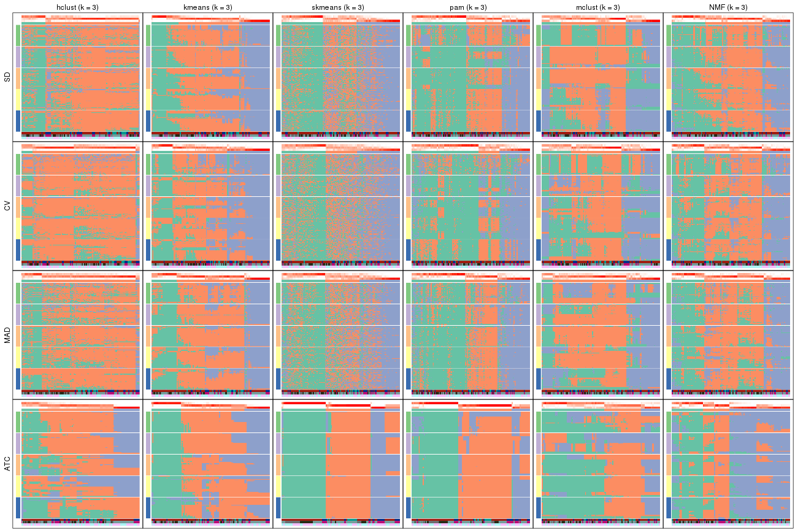
collect_plots(res_list, k = 4, fun = membership_heatmap, mc.cores = 4)
collect_plots(res_list, k = 5, fun = membership_heatmap, mc.cores = 4)
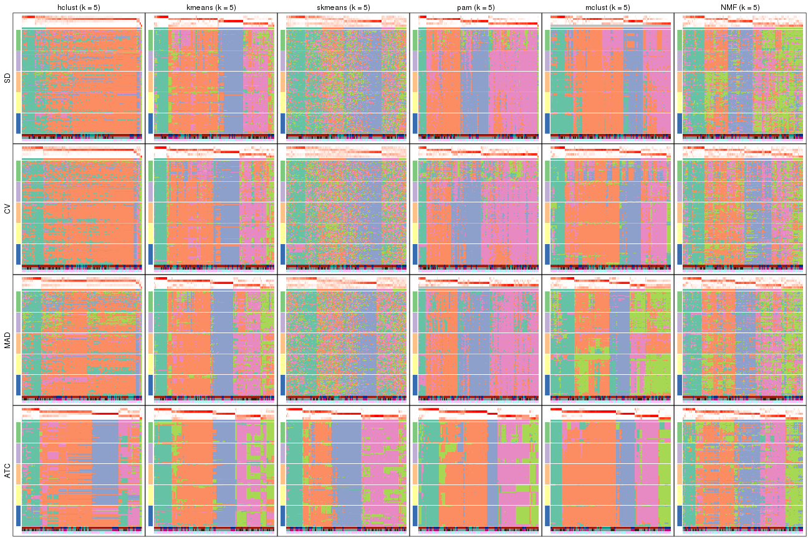
collect_plots(res_list, k = 6, fun = membership_heatmap, mc.cores = 4)
Signature heatmaps for all methods. (What is a signature heatmap?)
Note in following heatmaps, rows are scaled.
collect_plots(res_list, k = 2, fun = get_signatures, mc.cores = 4)
collect_plots(res_list, k = 3, fun = get_signatures, mc.cores = 4)
collect_plots(res_list, k = 4, fun = get_signatures, mc.cores = 4)
collect_plots(res_list, k = 5, fun = get_signatures, mc.cores = 4)
collect_plots(res_list, k = 6, fun = get_signatures, mc.cores = 4)
The statistics used for measuring the stability of consensus partitioning. (How are they defined?)
get_stats(res_list, k = 2)
#> k 1-PAC mean_silhouette concordance area_increased Rand Jaccard
#> SD:NMF 2 0.5903 0.830 0.922 0.495 0.497 0.497
#> CV:NMF 2 0.4791 0.780 0.899 0.493 0.496 0.496
#> MAD:NMF 2 0.5659 0.793 0.911 0.486 0.506 0.506
#> ATC:NMF 2 0.9286 0.933 0.973 0.475 0.523 0.523
#> SD:skmeans 2 0.3864 0.743 0.877 0.503 0.496 0.496
#> CV:skmeans 2 0.3045 0.685 0.848 0.504 0.499 0.499
#> MAD:skmeans 2 0.3579 0.709 0.861 0.504 0.496 0.496
#> ATC:skmeans 2 0.9125 0.928 0.970 0.503 0.497 0.497
#> SD:mclust 2 0.2228 0.683 0.801 0.467 0.500 0.500
#> CV:mclust 2 0.1815 0.768 0.831 0.459 0.523 0.523
#> MAD:mclust 2 0.3551 0.769 0.856 0.465 0.504 0.504
#> ATC:mclust 2 0.5179 0.846 0.889 0.284 0.737 0.737
#> SD:kmeans 2 0.6077 0.830 0.918 0.477 0.515 0.515
#> CV:kmeans 2 0.6070 0.815 0.917 0.487 0.509 0.509
#> MAD:kmeans 2 0.5145 0.782 0.903 0.489 0.500 0.500
#> ATC:kmeans 2 1.0000 0.966 0.985 0.476 0.523 0.523
#> SD:pam 2 0.1351 0.655 0.800 0.461 0.527 0.527
#> CV:pam 2 0.1227 0.621 0.792 0.464 0.541 0.541
#> MAD:pam 2 0.2069 0.719 0.839 0.479 0.523 0.523
#> ATC:pam 2 1.0000 0.978 0.990 0.484 0.515 0.515
#> SD:hclust 2 0.0762 0.518 0.782 0.297 0.801 0.801
#> CV:hclust 2 0.3142 0.800 0.882 0.183 0.950 0.950
#> MAD:hclust 2 0.0380 0.688 0.797 0.279 0.933 0.933
#> ATC:hclust 2 0.2574 0.535 0.717 0.409 0.552 0.552
get_stats(res_list, k = 3)
#> k 1-PAC mean_silhouette concordance area_increased Rand Jaccard
#> SD:NMF 3 0.3196 0.591 0.773 0.290 0.619 0.387
#> CV:NMF 3 0.2660 0.542 0.753 0.301 0.611 0.377
#> MAD:NMF 3 0.3348 0.540 0.770 0.319 0.606 0.381
#> ATC:NMF 3 0.4930 0.593 0.803 0.343 0.797 0.632
#> SD:skmeans 3 0.1985 0.440 0.691 0.323 0.732 0.510
#> CV:skmeans 3 0.1294 0.387 0.637 0.321 0.749 0.538
#> MAD:skmeans 3 0.1630 0.410 0.659 0.322 0.726 0.502
#> ATC:skmeans 3 0.8303 0.856 0.923 0.281 0.782 0.586
#> SD:mclust 3 0.2480 0.359 0.666 0.252 0.670 0.466
#> CV:mclust 3 0.2069 0.403 0.665 0.328 0.776 0.589
#> MAD:mclust 3 0.3135 0.567 0.703 0.231 0.833 0.708
#> ATC:mclust 3 0.2395 0.652 0.734 0.977 0.564 0.444
#> SD:kmeans 3 0.3667 0.676 0.809 0.267 0.623 0.406
#> CV:kmeans 3 0.2962 0.535 0.752 0.242 0.645 0.424
#> MAD:kmeans 3 0.3563 0.687 0.812 0.233 0.592 0.383
#> ATC:kmeans 3 0.5273 0.704 0.822 0.330 0.648 0.444
#> SD:pam 3 0.2102 0.600 0.755 0.340 0.729 0.530
#> CV:pam 3 0.1620 0.448 0.701 0.297 0.803 0.657
#> MAD:pam 3 0.3012 0.632 0.789 0.354 0.754 0.560
#> ATC:pam 3 0.7053 0.765 0.866 0.280 0.858 0.726
#> SD:hclust 3 0.0452 0.612 0.756 0.530 0.814 0.774
#> CV:hclust 3 0.0703 0.537 0.769 0.820 0.818 0.808
#> MAD:hclust 3 0.0388 0.639 0.732 0.614 0.726 0.706
#> ATC:hclust 3 0.2222 0.631 0.687 0.339 0.681 0.522
get_stats(res_list, k = 4)
#> k 1-PAC mean_silhouette concordance area_increased Rand Jaccard
#> SD:NMF 4 0.3649 0.475 0.704 0.1425 0.769 0.461
#> CV:NMF 4 0.3301 0.463 0.664 0.1377 0.835 0.584
#> MAD:NMF 4 0.3699 0.457 0.666 0.1437 0.762 0.454
#> ATC:NMF 4 0.4852 0.600 0.795 0.1141 0.699 0.374
#> SD:skmeans 4 0.2069 0.277 0.572 0.1195 0.847 0.596
#> CV:skmeans 4 0.1469 0.218 0.527 0.1227 0.864 0.632
#> MAD:skmeans 4 0.1779 0.237 0.555 0.1214 0.854 0.606
#> ATC:skmeans 4 0.8898 0.865 0.932 0.1383 0.855 0.614
#> SD:mclust 4 0.4631 0.539 0.776 0.2057 0.774 0.504
#> CV:mclust 4 0.3762 0.594 0.764 0.1297 0.802 0.520
#> MAD:mclust 4 0.4305 0.542 0.754 0.2192 0.733 0.473
#> ATC:mclust 4 0.5215 0.703 0.803 0.2031 0.669 0.386
#> SD:kmeans 4 0.4903 0.640 0.783 0.1469 0.804 0.555
#> CV:kmeans 4 0.3985 0.500 0.730 0.1405 0.724 0.426
#> MAD:kmeans 4 0.4971 0.641 0.804 0.1571 0.813 0.589
#> ATC:kmeans 4 0.6645 0.793 0.855 0.1363 0.842 0.621
#> SD:pam 4 0.3848 0.640 0.799 0.1135 0.946 0.849
#> CV:pam 4 0.2506 0.577 0.734 0.1244 0.880 0.721
#> MAD:pam 4 0.3582 0.605 0.784 0.0702 0.947 0.850
#> ATC:pam 4 0.8452 0.890 0.948 0.1285 0.902 0.752
#> SD:hclust 4 0.0726 0.565 0.740 0.0967 0.997 0.995
#> CV:hclust 4 0.0439 0.600 0.757 0.2755 0.848 0.806
#> MAD:hclust 4 0.0636 0.580 0.708 0.1318 0.980 0.970
#> ATC:hclust 4 0.3656 0.659 0.772 0.1410 0.880 0.753
get_stats(res_list, k = 5)
#> k 1-PAC mean_silhouette concordance area_increased Rand Jaccard
#> SD:NMF 5 0.4188 0.356 0.580 0.0786 0.860 0.531
#> CV:NMF 5 0.3992 0.341 0.594 0.0766 0.902 0.668
#> MAD:NMF 5 0.4323 0.401 0.605 0.0805 0.878 0.582
#> ATC:NMF 5 0.5201 0.532 0.722 0.0950 0.869 0.590
#> SD:skmeans 5 0.2542 0.185 0.494 0.0650 0.889 0.642
#> CV:skmeans 5 0.2075 0.167 0.453 0.0649 0.861 0.565
#> MAD:skmeans 5 0.2210 0.186 0.482 0.0648 0.895 0.639
#> ATC:skmeans 5 0.7530 0.681 0.833 0.0634 0.958 0.845
#> SD:mclust 5 0.4735 0.522 0.732 0.0448 0.955 0.854
#> CV:mclust 5 0.4431 0.593 0.758 0.0491 0.927 0.775
#> MAD:mclust 5 0.4622 0.485 0.664 0.0655 0.878 0.594
#> ATC:mclust 5 0.7910 0.830 0.911 0.0673 0.882 0.684
#> SD:kmeans 5 0.5477 0.538 0.757 0.0823 0.936 0.801
#> CV:kmeans 5 0.5009 0.562 0.742 0.0787 0.864 0.617
#> MAD:kmeans 5 0.5671 0.607 0.774 0.0911 0.869 0.609
#> ATC:kmeans 5 0.7417 0.624 0.789 0.0731 0.914 0.710
#> SD:pam 5 0.3936 0.610 0.792 0.0215 0.996 0.987
#> CV:pam 5 0.2958 0.543 0.720 0.0324 0.973 0.920
#> MAD:pam 5 0.3810 0.603 0.752 0.0429 0.992 0.974
#> ATC:pam 5 0.7276 0.647 0.832 0.0804 0.944 0.824
#> SD:hclust 5 0.1108 0.518 0.729 0.0556 0.961 0.940
#> CV:hclust 5 0.0459 0.592 0.741 0.1500 0.936 0.902
#> MAD:hclust 5 0.0786 0.543 0.671 0.1146 0.970 0.955
#> ATC:hclust 5 0.4288 0.592 0.723 0.1097 0.868 0.672
get_stats(res_list, k = 6)
#> k 1-PAC mean_silhouette concordance area_increased Rand Jaccard
#> SD:NMF 6 0.4906 0.375 0.587 0.0486 0.886 0.525
#> CV:NMF 6 0.4668 0.327 0.531 0.0487 0.903 0.620
#> MAD:NMF 6 0.5037 0.386 0.592 0.0465 0.872 0.486
#> ATC:NMF 6 0.6039 0.567 0.742 0.0516 0.834 0.409
#> SD:skmeans 6 0.3224 0.185 0.455 0.0412 0.885 0.583
#> CV:skmeans 6 0.2731 0.159 0.430 0.0424 0.871 0.534
#> MAD:skmeans 6 0.2943 0.184 0.454 0.0412 0.896 0.584
#> ATC:skmeans 6 0.7489 0.621 0.794 0.0410 0.921 0.682
#> SD:mclust 6 0.4644 0.472 0.712 0.0317 0.941 0.805
#> CV:mclust 6 0.4904 0.560 0.716 0.0409 0.972 0.907
#> MAD:mclust 6 0.4945 0.462 0.687 0.0207 0.842 0.503
#> ATC:mclust 6 0.8021 0.831 0.900 0.0833 0.855 0.547
#> SD:kmeans 6 0.5879 0.549 0.739 0.0450 0.918 0.722
#> CV:kmeans 6 0.5566 0.550 0.724 0.0506 0.902 0.664
#> MAD:kmeans 6 0.5972 0.552 0.738 0.0485 0.964 0.856
#> ATC:kmeans 6 0.7405 0.604 0.764 0.0458 0.897 0.614
#> SD:pam 6 0.3966 0.607 0.781 0.0137 1.000 1.000
#> CV:pam 6 0.3114 0.528 0.719 0.0189 0.992 0.975
#> MAD:pam 6 0.4029 0.532 0.736 0.0199 0.964 0.889
#> ATC:pam 6 0.7808 0.815 0.874 0.0318 0.910 0.700
#> SD:hclust 6 0.1671 0.455 0.708 0.0744 0.978 0.965
#> CV:hclust 6 0.0829 0.574 0.727 0.0846 1.000 1.000
#> MAD:hclust 6 0.1636 0.390 0.643 0.0845 0.958 0.934
#> ATC:hclust 6 0.5217 0.531 0.702 0.0525 0.924 0.755
Following heatmap plots the partition for each combination of methods and the lightness correspond to the silhouette scores for samples in each method. On top the consensus subgroup is inferred from all methods by taking the mean silhouette scores as weight.
collect_stats(res_list, k = 2)
collect_stats(res_list, k = 3)
collect_stats(res_list, k = 4)
collect_stats(res_list, k = 5)
collect_stats(res_list, k = 6)
Collect partitions from all methods:
collect_classes(res_list, k = 2)
collect_classes(res_list, k = 3)
collect_classes(res_list, k = 4)
collect_classes(res_list, k = 5)
collect_classes(res_list, k = 6)
Overlap of top rows from different top-row methods:
top_rows_overlap(res_list, top_n = 1000, method = "euler")
top_rows_overlap(res_list, top_n = 2000, method = "euler")
top_rows_overlap(res_list, top_n = 3000, method = "euler")
top_rows_overlap(res_list, top_n = 4000, method = "euler")
top_rows_overlap(res_list, top_n = 5000, method = "euler")
Also visualize the correspondance of rankings between different top-row methods:
top_rows_overlap(res_list, top_n = 1000, method = "correspondance")
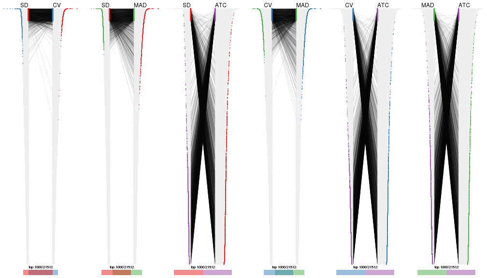
top_rows_overlap(res_list, top_n = 2000, method = "correspondance")
top_rows_overlap(res_list, top_n = 3000, method = "correspondance")
top_rows_overlap(res_list, top_n = 4000, method = "correspondance")
top_rows_overlap(res_list, top_n = 5000, method = "correspondance")
Heatmaps of the top rows:
top_rows_heatmap(res_list, top_n = 1000)
top_rows_heatmap(res_list, top_n = 2000)
top_rows_heatmap(res_list, top_n = 3000)
top_rows_heatmap(res_list, top_n = 4000)
top_rows_heatmap(res_list, top_n = 5000)
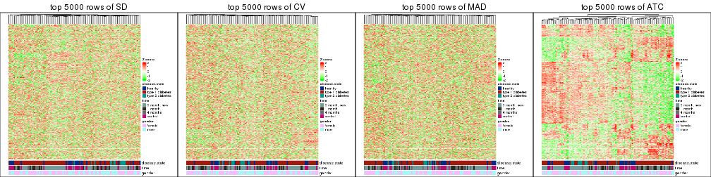
Test correlation between subgroups and known annotations. If the known annotation is numeric, one-way ANOVA test is applied, and if the known annotation is discrete, chi-squared contingency table test is applied.
test_to_known_factors(res_list, k = 2)
#> n disease.state(p) time(p) gender(p) k
#> SD:NMF 109 0.003255 4.19e-05 0.5586 2
#> CV:NMF 104 0.002398 2.08e-05 0.4972 2
#> MAD:NMF 103 0.022458 7.10e-06 0.8927 2
#> ATC:NMF 114 0.002009 2.39e-04 1.0000 2
#> SD:skmeans 103 0.002358 1.07e-05 0.1837 2
#> CV:skmeans 92 0.010311 1.10e-04 0.0534 2
#> MAD:skmeans 97 0.002620 8.58e-07 0.4621 2
#> ATC:skmeans 115 0.001791 2.77e-03 0.4773 2
#> SD:mclust 100 0.000621 9.34e-03 0.3462 2
#> CV:mclust 112 0.016510 8.91e-04 0.1554 2
#> MAD:mclust 105 0.004851 3.36e-02 0.2684 2
#> ATC:mclust 114 0.000017 3.48e-01 0.7541 2
#> SD:kmeans 110 0.000425 2.55e-05 0.1261 2
#> CV:kmeans 109 0.000376 2.30e-05 0.0907 2
#> MAD:kmeans 106 0.001187 1.37e-06 0.2560 2
#> ATC:kmeans 116 0.002301 1.48e-04 0.9313 2
#> SD:pam 103 0.238405 6.21e-06 0.8494 2
#> CV:pam 94 0.227520 1.49e-04 0.9925 2
#> MAD:pam 105 0.102314 6.65e-06 0.8701 2
#> ATC:pam 117 0.000897 5.28e-05 0.8827 2
#> SD:hclust 87 0.129237 3.27e-01 0.4211 2
#> CV:hclust 114 0.001593 4.89e-03 1.0000 2
#> MAD:hclust 105 0.000603 1.97e-03 1.0000 2
#> ATC:hclust 91 0.816361 1.86e-04 0.7092 2
test_to_known_factors(res_list, k = 3)
#> n disease.state(p) time(p) gender(p) k
#> SD:NMF 87 3.25e-03 4.35e-02 0.00117 3
#> CV:NMF 79 1.26e-02 2.99e-02 0.00115 3
#> MAD:NMF 77 2.66e-03 6.85e-02 0.00410 3
#> ATC:NMF 89 2.61e-04 5.36e-07 0.09335 3
#> SD:skmeans 60 1.70e-04 6.44e-04 0.04436 3
#> CV:skmeans 52 4.73e-02 2.01e-03 0.03771 3
#> MAD:skmeans 52 3.08e-06 4.78e-04 0.19948 3
#> ATC:skmeans 112 2.23e-07 4.64e-07 0.55207 3
#> SD:mclust 60 6.38e-03 2.14e-02 0.23629 3
#> CV:mclust 54 5.85e-03 3.94e-01 0.00280 3
#> MAD:mclust 94 2.05e-01 4.45e-02 0.28327 3
#> ATC:mclust 106 1.06e-04 2.31e-02 0.46221 3
#> SD:kmeans 103 4.52e-03 4.46e-03 0.25739 3
#> CV:kmeans 73 3.07e-01 7.00e-03 0.45129 3
#> MAD:kmeans 98 6.34e-03 1.91e-02 0.23142 3
#> ATC:kmeans 93 9.88e-03 6.94e-04 0.58375 3
#> SD:pam 92 2.53e-01 3.53e-04 0.05891 3
#> CV:pam 64 1.79e-01 5.37e-03 0.25904 3
#> MAD:pam 96 3.47e-02 1.15e-04 0.08821 3
#> ATC:pam 109 6.37e-06 1.73e-05 0.31100 3
#> SD:hclust 94 1.18e-02 6.86e-02 0.44446 3
#> CV:hclust 90 3.00e-03 1.23e-02 0.49041 3
#> MAD:hclust 102 4.41e-04 1.59e-03 0.46230 3
#> ATC:hclust 103 4.95e-03 3.48e-05 0.11257 3
test_to_known_factors(res_list, k = 4)
#> n disease.state(p) time(p) gender(p) k
#> SD:NMF 59 6.44e-02 1.34e-01 6.02e-06 4
#> CV:NMF 59 6.04e-03 1.23e-02 4.76e-07 4
#> MAD:NMF 60 6.09e-02 1.20e-02 3.80e-05 4
#> ATC:NMF 95 6.18e-05 1.60e-04 1.82e-01 4
#> SD:skmeans 34 5.82e-01 1.41e-02 3.71e-01 4
#> CV:skmeans 17 NA NA NA 4
#> MAD:skmeans 20 NA NA NA 4
#> ATC:skmeans 108 3.97e-10 1.11e-07 1.44e-01 4
#> SD:mclust 82 9.67e-03 7.72e-02 7.19e-02 4
#> CV:mclust 91 3.41e-03 4.57e-03 1.56e-03 4
#> MAD:mclust 76 4.75e-02 1.06e-01 2.32e-05 4
#> ATC:mclust 107 2.95e-05 8.93e-05 2.61e-01 4
#> SD:kmeans 93 1.00e-03 2.10e-04 6.94e-02 4
#> CV:kmeans 74 3.12e-03 8.27e-03 3.44e-02 4
#> MAD:kmeans 90 5.99e-03 1.59e-03 3.93e-02 4
#> ATC:kmeans 109 6.57e-06 1.53e-05 3.05e-02 4
#> SD:pam 90 4.59e-01 4.61e-03 1.01e-02 4
#> CV:pam 91 3.92e-01 6.62e-03 3.20e-02 4
#> MAD:pam 94 1.07e-01 2.90e-04 3.87e-02 4
#> ATC:pam 114 2.73e-05 2.21e-05 2.84e-01 4
#> SD:hclust 75 7.39e-01 8.29e-01 1.00e+00 4
#> CV:hclust 94 9.53e-03 1.25e-01 1.30e-01 4
#> MAD:hclust 95 3.99e-03 1.67e-02 2.12e-01 4
#> ATC:hclust 92 2.68e-03 2.01e-04 3.09e-02 4
test_to_known_factors(res_list, k = 5)
#> n disease.state(p) time(p) gender(p) k
#> SD:NMF 38 1.44e-01 6.29e-02 0.018096 5
#> CV:NMF 30 1.82e-01 5.39e-02 0.260336 5
#> MAD:NMF 39 8.91e-02 7.90e-02 0.002495 5
#> ATC:NMF 86 3.12e-08 2.66e-03 0.246890 5
#> SD:skmeans 23 1.00e+00 2.78e-02 0.571713 5
#> CV:skmeans 15 NA NA NA 5
#> MAD:skmeans 17 NA NA NA 5
#> ATC:skmeans 97 9.10e-11 8.40e-08 0.100935 5
#> SD:mclust 80 6.61e-03 6.00e-02 0.042586 5
#> CV:mclust 92 1.13e-02 5.32e-03 0.083665 5
#> MAD:mclust 71 3.59e-01 2.15e-01 0.000243 5
#> ATC:mclust 110 1.16e-05 6.10e-05 0.318169 5
#> SD:kmeans 77 2.92e-05 1.30e-04 0.027535 5
#> CV:kmeans 84 4.67e-05 1.50e-04 0.113219 5
#> MAD:kmeans 79 1.10e-04 2.01e-04 0.189009 5
#> ATC:kmeans 84 3.28e-05 4.77e-05 0.127037 5
#> SD:pam 88 6.02e-01 5.17e-03 0.026205 5
#> CV:pam 83 6.28e-01 1.46e-02 0.071085 5
#> MAD:pam 93 1.05e-01 1.40e-04 0.007332 5
#> ATC:pam 86 1.68e-04 7.31e-05 0.267020 5
#> SD:hclust 84 3.42e-03 1.27e-02 0.141994 5
#> CV:hclust 92 1.13e-02 7.25e-02 0.077469 5
#> MAD:hclust 87 1.99e-02 1.05e-01 0.126543 5
#> ATC:hclust 75 9.73e-04 1.54e-03 0.065791 5
test_to_known_factors(res_list, k = 6)
#> n disease.state(p) time(p) gender(p) k
#> SD:NMF 34 1.60e-02 2.25e-01 0.014738 6
#> CV:NMF 28 6.99e-01 1.28e-01 0.090144 6
#> MAD:NMF 37 8.90e-02 7.37e-02 0.000511 6
#> ATC:NMF 86 3.95e-05 8.64e-07 0.297950 6
#> SD:skmeans 15 NA NA NA 6
#> CV:skmeans 13 NA NA NA 6
#> MAD:skmeans 16 NA NA NA 6
#> ATC:skmeans 87 2.47e-07 1.25e-05 0.238926 6
#> SD:mclust 73 2.77e-02 9.21e-03 0.032636 6
#> CV:mclust 90 1.02e-02 2.34e-03 0.040949 6
#> MAD:mclust 61 5.29e-02 2.52e-02 0.031617 6
#> ATC:mclust 111 2.56e-05 7.28e-05 0.458371 6
#> SD:kmeans 78 3.67e-06 4.07e-05 0.029455 6
#> CV:kmeans 78 7.48e-05 3.47e-04 0.064780 6
#> MAD:kmeans 79 1.99e-04 1.68e-04 0.140856 6
#> ATC:kmeans 76 1.52e-04 1.35e-04 0.068107 6
#> SD:pam 87 5.71e-01 9.08e-03 0.043791 6
#> CV:pam 86 4.04e-01 6.42e-03 0.121861 6
#> MAD:pam 81 1.47e-01 6.59e-04 0.009453 6
#> ATC:pam 112 1.14e-04 8.31e-07 0.060391 6
#> SD:hclust 78 7.41e-03 4.02e-02 0.113489 6
#> CV:hclust 91 1.43e-02 1.15e-01 0.105888 6
#> MAD:hclust 55 3.82e-02 6.72e-02 0.068574 6
#> ATC:hclust 80 2.69e-06 3.55e-05 0.043086 6
The object with results only for a single top-value method and a single partition method can be extracted as:
res = res_list["SD", "hclust"]
# you can also extract it by
# res = res_list["SD:hclust"]
A summary of res and all the functions that can be applied to it:
res
#> A 'ConsensusPartition' object with k = 2, 3, 4, 5, 6.
#> On a matrix with 21512 rows and 117 columns.
#> Top rows (1000, 2000, 3000, 4000, 5000) are extracted by 'SD' method.
#> Subgroups are detected by 'hclust' method.
#> Performed in total 1250 partitions by row resampling.
#> Best k for subgroups seems to be 3.
#>
#> Following methods can be applied to this 'ConsensusPartition' object:
#> [1] "cola_report" "collect_classes" "collect_plots"
#> [4] "collect_stats" "colnames" "compare_signatures"
#> [7] "consensus_heatmap" "dimension_reduction" "functional_enrichment"
#> [10] "get_anno_col" "get_anno" "get_classes"
#> [13] "get_consensus" "get_matrix" "get_membership"
#> [16] "get_param" "get_signatures" "get_stats"
#> [19] "is_best_k" "is_stable_k" "membership_heatmap"
#> [22] "ncol" "nrow" "plot_ecdf"
#> [25] "rownames" "select_partition_number" "show"
#> [28] "suggest_best_k" "test_to_known_factors"
collect_plots() function collects all the plots made from res for all k (number of partitions)
into one single page to provide an easy and fast comparison between different k.
collect_plots(res)
The plots are:
k and the heatmap of
predicted classes for each k.k.k.k.All the plots in panels can be made by individual functions and they are plotted later in this section.
select_partition_number() produces several plots showing different
statistics for choosing “optimized” k. There are following statistics:
k;k, the area increased is defined as \(A_k - A_{k-1}\).The detailed explanations of these statistics can be found in the cola vignette.
Generally speaking, lower PAC score, higher mean silhouette score or higher
concordance corresponds to better partition. Rand index and Jaccard index
measure how similar the current partition is compared to partition with k-1.
If they are too similar, we won't accept k is better than k-1.
select_partition_number(res)
The numeric values for all these statistics can be obtained by get_stats().
get_stats(res)
#> k 1-PAC mean_silhouette concordance area_increased Rand Jaccard
#> 2 2 0.0762 0.518 0.782 0.2974 0.801 0.801
#> 3 3 0.0452 0.612 0.756 0.5300 0.814 0.774
#> 4 4 0.0726 0.565 0.740 0.0967 0.997 0.995
#> 5 5 0.1108 0.518 0.729 0.0556 0.961 0.940
#> 6 6 0.1671 0.455 0.708 0.0744 0.978 0.965
suggest_best_k() suggests the best \(k\) based on these statistics. The rules are as follows:
NA.suggest_best_k(res)
#> [1] 3
Following shows the table of the partitions (You need to click the show/hide
code output link to see it). The membership matrix (columns with name p*)
is inferred by
clue::cl_consensus()
function with the SE method. Basically the value in the membership matrix
represents the probability to belong to a certain group. The finall class
label for an item is determined with the group with highest probability it
belongs to.
In get_classes() function, the entropy is calculated from the membership
matrix and the silhouette score is calculated from the consensus matrix.
cbind(get_classes(res, k = 2), get_membership(res, k = 2))
#> class entropy silhouette p1 p2
#> GSM254177 2 0.443 0.713149 0.092 0.908
#> GSM254179 2 0.563 0.707143 0.132 0.868
#> GSM254180 2 0.482 0.718494 0.104 0.896
#> GSM254182 1 0.999 -0.012781 0.516 0.484
#> GSM254183 2 0.952 0.252581 0.372 0.628
#> GSM254277 2 0.518 0.710759 0.116 0.884
#> GSM254278 2 0.343 0.701086 0.064 0.936
#> GSM254281 2 0.584 0.686399 0.140 0.860
#> GSM254282 2 0.402 0.713933 0.080 0.920
#> GSM254284 2 0.469 0.711524 0.100 0.900
#> GSM254286 2 0.861 0.397295 0.284 0.716
#> GSM254290 2 0.697 0.660437 0.188 0.812
#> GSM254291 2 0.518 0.721016 0.116 0.884
#> GSM254293 2 0.671 0.670712 0.176 0.824
#> GSM254178 1 0.992 0.835652 0.552 0.448
#> GSM254181 2 0.443 0.714488 0.092 0.908
#> GSM254279 2 0.416 0.697810 0.084 0.916
#> GSM254280 2 0.358 0.705322 0.068 0.932
#> GSM254283 2 0.416 0.714069 0.084 0.916
#> GSM254285 2 0.327 0.707497 0.060 0.940
#> GSM254287 2 0.932 0.309461 0.348 0.652
#> GSM254288 2 0.932 0.310171 0.348 0.652
#> GSM254289 2 0.745 0.568128 0.212 0.788
#> GSM254292 2 0.932 0.240131 0.348 0.652
#> GSM254184 2 0.358 0.708069 0.068 0.932
#> GSM254185 2 0.343 0.701086 0.064 0.936
#> GSM254187 2 0.343 0.701086 0.064 0.936
#> GSM254189 2 0.402 0.712566 0.080 0.920
#> GSM254190 2 0.998 -0.686504 0.472 0.528
#> GSM254191 2 0.388 0.708758 0.076 0.924
#> GSM254192 2 0.343 0.711524 0.064 0.936
#> GSM254193 2 0.983 -0.451882 0.424 0.576
#> GSM254199 2 0.814 0.433992 0.252 0.748
#> GSM254203 1 0.992 0.838235 0.552 0.448
#> GSM254206 2 0.985 -0.464071 0.428 0.572
#> GSM254210 2 0.697 0.651270 0.188 0.812
#> GSM254211 1 1.000 0.781981 0.508 0.492
#> GSM254215 2 0.358 0.701217 0.068 0.932
#> GSM254218 2 0.482 0.718261 0.104 0.896
#> GSM254230 1 0.996 0.828312 0.536 0.464
#> GSM254236 2 0.358 0.706601 0.068 0.932
#> GSM254244 2 1.000 -0.762506 0.500 0.500
#> GSM254247 2 0.876 0.402563 0.296 0.704
#> GSM254248 2 0.644 0.674087 0.164 0.836
#> GSM254254 2 0.358 0.711367 0.068 0.932
#> GSM254257 2 0.311 0.713589 0.056 0.944
#> GSM254258 2 0.358 0.701443 0.068 0.932
#> GSM254261 2 0.295 0.714764 0.052 0.948
#> GSM254264 2 0.343 0.701086 0.064 0.936
#> GSM254186 2 0.388 0.701402 0.076 0.924
#> GSM254188 2 0.430 0.698685 0.088 0.912
#> GSM254194 2 0.416 0.712560 0.084 0.916
#> GSM254195 2 0.998 -0.587388 0.476 0.524
#> GSM254196 2 0.932 -0.000569 0.348 0.652
#> GSM254200 2 0.388 0.704059 0.076 0.924
#> GSM254209 2 0.358 0.717908 0.068 0.932
#> GSM254214 2 0.469 0.714878 0.100 0.900
#> GSM254221 2 0.913 0.116614 0.328 0.672
#> GSM254224 2 0.814 0.441081 0.252 0.748
#> GSM254227 2 0.482 0.719111 0.104 0.896
#> GSM254233 2 0.788 0.524924 0.236 0.764
#> GSM254235 1 0.992 0.838235 0.552 0.448
#> GSM254239 2 0.839 0.522071 0.268 0.732
#> GSM254241 1 1.000 0.732518 0.508 0.492
#> GSM254251 2 0.358 0.717201 0.068 0.932
#> GSM254262 2 0.373 0.709651 0.072 0.928
#> GSM254263 2 0.402 0.702913 0.080 0.920
#> GSM254197 1 0.993 0.839219 0.548 0.452
#> GSM254201 2 0.895 0.269188 0.312 0.688
#> GSM254204 2 0.943 -0.132160 0.360 0.640
#> GSM254216 2 0.855 0.365128 0.280 0.720
#> GSM254228 1 0.993 0.839219 0.548 0.452
#> GSM254242 2 0.992 -0.578416 0.448 0.552
#> GSM254245 2 0.987 -0.437989 0.432 0.568
#> GSM254252 2 0.795 0.547484 0.240 0.760
#> GSM254255 2 0.714 0.589904 0.196 0.804
#> GSM254259 1 0.993 0.836924 0.548 0.452
#> GSM254207 2 0.430 0.717928 0.088 0.912
#> GSM254212 2 0.625 0.682086 0.156 0.844
#> GSM254219 2 0.971 -0.309799 0.400 0.600
#> GSM254222 2 0.416 0.715378 0.084 0.916
#> GSM254225 2 0.443 0.722284 0.092 0.908
#> GSM254231 2 0.788 0.524924 0.236 0.764
#> GSM254234 2 0.506 0.712903 0.112 0.888
#> GSM254237 2 0.795 0.568121 0.240 0.760
#> GSM254249 2 0.634 0.662856 0.160 0.840
#> GSM254198 2 0.644 0.674168 0.164 0.836
#> GSM254202 2 0.936 0.067689 0.352 0.648
#> GSM254205 2 0.917 0.217509 0.332 0.668
#> GSM254217 2 0.833 0.462388 0.264 0.736
#> GSM254229 2 0.494 0.717240 0.108 0.892
#> GSM254243 1 1.000 0.689172 0.508 0.492
#> GSM254246 1 0.993 0.837924 0.548 0.452
#> GSM254253 2 0.913 0.144429 0.328 0.672
#> GSM254256 2 0.634 0.661215 0.160 0.840
#> GSM254260 2 0.921 0.111669 0.336 0.664
#> GSM254208 2 0.494 0.713734 0.108 0.892
#> GSM254213 2 0.506 0.710219 0.112 0.888
#> GSM254220 2 0.995 -0.626729 0.460 0.540
#> GSM254223 2 0.518 0.708301 0.116 0.884
#> GSM254226 2 0.373 0.716719 0.072 0.928
#> GSM254232 2 0.443 0.717515 0.092 0.908
#> GSM254238 2 0.788 0.531606 0.236 0.764
#> GSM254240 2 0.994 -0.581615 0.456 0.544
#> GSM254250 1 1.000 0.713476 0.508 0.492
#> GSM254268 2 0.430 0.719309 0.088 0.912
#> GSM254269 2 0.443 0.719254 0.092 0.908
#> GSM254270 2 0.871 0.367435 0.292 0.708
#> GSM254272 2 0.430 0.719524 0.088 0.912
#> GSM254273 2 0.416 0.720039 0.084 0.916
#> GSM254274 2 0.482 0.716244 0.104 0.896
#> GSM254265 2 0.506 0.714669 0.112 0.888
#> GSM254266 2 0.529 0.709411 0.120 0.880
#> GSM254267 2 0.518 0.713508 0.116 0.884
#> GSM254271 2 0.529 0.708336 0.120 0.880
#> GSM254275 2 0.563 0.707706 0.132 0.868
#> GSM254276 2 0.416 0.717856 0.084 0.916
cbind(get_classes(res, k = 3), get_membership(res, k = 3))
#> class entropy silhouette p1 p2 p3
#> GSM254177 2 0.484 0.76018 0.080 0.848 0.072
#> GSM254179 2 0.566 0.74711 0.100 0.808 0.092
#> GSM254180 2 0.567 0.76490 0.140 0.800 0.060
#> GSM254182 3 0.687 0.00000 0.056 0.244 0.700
#> GSM254183 2 0.814 -0.29675 0.068 0.484 0.448
#> GSM254277 2 0.594 0.75525 0.140 0.788 0.072
#> GSM254278 2 0.268 0.73797 0.040 0.932 0.028
#> GSM254281 2 0.642 0.71822 0.180 0.752 0.068
#> GSM254282 2 0.528 0.76197 0.128 0.820 0.052
#> GSM254284 2 0.611 0.73573 0.184 0.764 0.052
#> GSM254286 2 0.829 0.36307 0.332 0.572 0.096
#> GSM254290 2 0.683 0.70751 0.112 0.740 0.148
#> GSM254291 2 0.489 0.76423 0.060 0.844 0.096
#> GSM254293 2 0.632 0.71796 0.160 0.764 0.076
#> GSM254178 1 0.338 0.70944 0.892 0.100 0.008
#> GSM254181 2 0.475 0.76454 0.068 0.852 0.080
#> GSM254279 2 0.241 0.73561 0.020 0.940 0.040
#> GSM254280 2 0.292 0.74428 0.044 0.924 0.032
#> GSM254283 2 0.579 0.75260 0.136 0.796 0.068
#> GSM254285 2 0.266 0.74717 0.044 0.932 0.024
#> GSM254287 2 0.863 -0.12927 0.104 0.504 0.392
#> GSM254288 2 0.857 -0.08549 0.100 0.508 0.392
#> GSM254289 2 0.741 0.49656 0.076 0.668 0.256
#> GSM254292 2 0.926 0.11464 0.192 0.516 0.292
#> GSM254184 2 0.290 0.75458 0.048 0.924 0.028
#> GSM254185 2 0.231 0.73657 0.024 0.944 0.032
#> GSM254187 2 0.256 0.73668 0.036 0.936 0.028
#> GSM254189 2 0.308 0.75772 0.060 0.916 0.024
#> GSM254190 1 0.560 0.71944 0.756 0.228 0.016
#> GSM254191 2 0.321 0.75474 0.060 0.912 0.028
#> GSM254192 2 0.260 0.76095 0.052 0.932 0.016
#> GSM254193 1 0.742 0.56702 0.608 0.344 0.048
#> GSM254199 2 0.721 0.39993 0.384 0.584 0.032
#> GSM254203 1 0.321 0.70012 0.900 0.092 0.008
#> GSM254206 1 0.768 0.63783 0.640 0.280 0.080
#> GSM254210 2 0.689 0.68977 0.184 0.728 0.088
#> GSM254211 1 0.463 0.72478 0.824 0.164 0.012
#> GSM254215 2 0.244 0.73620 0.028 0.940 0.032
#> GSM254218 2 0.554 0.76467 0.132 0.808 0.060
#> GSM254230 1 0.414 0.72211 0.860 0.124 0.016
#> GSM254236 2 0.230 0.74253 0.020 0.944 0.036
#> GSM254244 1 0.681 0.69146 0.720 0.212 0.068
#> GSM254247 2 0.889 0.34126 0.276 0.560 0.164
#> GSM254248 2 0.659 0.70375 0.156 0.752 0.092
#> GSM254254 2 0.281 0.75718 0.040 0.928 0.032
#> GSM254257 2 0.301 0.76202 0.052 0.920 0.028
#> GSM254258 2 0.257 0.73669 0.032 0.936 0.032
#> GSM254261 2 0.337 0.76153 0.052 0.908 0.040
#> GSM254264 2 0.244 0.73522 0.028 0.940 0.032
#> GSM254186 2 0.215 0.73475 0.016 0.948 0.036
#> GSM254188 2 0.266 0.73128 0.024 0.932 0.044
#> GSM254194 2 0.301 0.75553 0.052 0.920 0.028
#> GSM254195 1 0.879 0.56340 0.572 0.268 0.160
#> GSM254196 2 0.834 -0.15959 0.456 0.464 0.080
#> GSM254200 2 0.195 0.73791 0.008 0.952 0.040
#> GSM254209 2 0.453 0.76262 0.088 0.860 0.052
#> GSM254214 2 0.566 0.75842 0.104 0.808 0.088
#> GSM254221 2 0.820 0.00642 0.436 0.492 0.072
#> GSM254224 2 0.768 0.52238 0.280 0.640 0.080
#> GSM254227 2 0.571 0.76563 0.116 0.804 0.080
#> GSM254233 2 0.728 0.55108 0.280 0.660 0.060
#> GSM254235 1 0.329 0.70587 0.896 0.096 0.008
#> GSM254239 2 0.877 0.44924 0.272 0.572 0.156
#> GSM254241 1 0.723 0.68345 0.704 0.200 0.096
#> GSM254251 2 0.437 0.76408 0.076 0.868 0.056
#> GSM254262 2 0.288 0.75912 0.052 0.924 0.024
#> GSM254263 2 0.241 0.74164 0.020 0.940 0.040
#> GSM254197 1 0.353 0.71224 0.884 0.108 0.008
#> GSM254201 2 0.766 0.18019 0.404 0.548 0.048
#> GSM254204 1 0.791 0.34976 0.536 0.404 0.060
#> GSM254216 2 0.787 0.29078 0.388 0.552 0.060
#> GSM254228 1 0.353 0.71224 0.884 0.108 0.008
#> GSM254242 1 0.725 0.66927 0.656 0.288 0.056
#> GSM254245 1 0.780 0.63037 0.624 0.296 0.080
#> GSM254252 2 0.834 0.54448 0.256 0.612 0.132
#> GSM254255 2 0.742 0.53004 0.312 0.632 0.056
#> GSM254259 1 0.329 0.70425 0.896 0.096 0.008
#> GSM254207 2 0.498 0.76335 0.136 0.828 0.036
#> GSM254212 2 0.671 0.71757 0.112 0.748 0.140
#> GSM254219 1 0.823 0.52543 0.552 0.364 0.084
#> GSM254222 2 0.576 0.75154 0.152 0.792 0.056
#> GSM254225 2 0.497 0.76799 0.100 0.840 0.060
#> GSM254231 2 0.728 0.55108 0.280 0.660 0.060
#> GSM254234 2 0.618 0.74609 0.156 0.772 0.072
#> GSM254237 2 0.841 0.49928 0.272 0.600 0.128
#> GSM254249 2 0.681 0.65809 0.228 0.712 0.060
#> GSM254198 2 0.678 0.72227 0.188 0.732 0.080
#> GSM254202 2 0.820 -0.03272 0.444 0.484 0.072
#> GSM254205 2 0.860 0.24639 0.348 0.540 0.112
#> GSM254217 2 0.792 0.39690 0.360 0.572 0.068
#> GSM254229 2 0.602 0.75664 0.140 0.784 0.076
#> GSM254243 1 0.706 0.70580 0.708 0.212 0.080
#> GSM254246 1 0.338 0.69954 0.896 0.092 0.012
#> GSM254253 1 0.790 0.22771 0.504 0.440 0.056
#> GSM254256 2 0.705 0.65912 0.244 0.692 0.064
#> GSM254260 2 0.813 0.01193 0.440 0.492 0.068
#> GSM254208 2 0.563 0.74726 0.144 0.800 0.056
#> GSM254213 2 0.594 0.75446 0.120 0.792 0.088
#> GSM254220 1 0.857 0.56044 0.592 0.264 0.144
#> GSM254223 2 0.621 0.74005 0.164 0.768 0.068
#> GSM254226 2 0.554 0.75525 0.132 0.808 0.060
#> GSM254232 2 0.619 0.74850 0.140 0.776 0.084
#> GSM254238 2 0.802 0.42572 0.348 0.576 0.076
#> GSM254240 1 0.713 0.68798 0.684 0.252 0.064
#> GSM254250 1 0.812 0.52629 0.648 0.188 0.164
#> GSM254268 2 0.581 0.76247 0.132 0.796 0.072
#> GSM254269 2 0.544 0.76403 0.132 0.812 0.056
#> GSM254270 2 0.875 0.28459 0.356 0.524 0.120
#> GSM254272 2 0.543 0.76352 0.144 0.808 0.048
#> GSM254273 2 0.524 0.76482 0.132 0.820 0.048
#> GSM254274 2 0.582 0.75715 0.156 0.788 0.056
#> GSM254265 2 0.591 0.75961 0.144 0.788 0.068
#> GSM254266 2 0.611 0.75137 0.140 0.780 0.080
#> GSM254267 2 0.519 0.76089 0.112 0.828 0.060
#> GSM254271 2 0.581 0.75689 0.108 0.800 0.092
#> GSM254275 2 0.649 0.73997 0.144 0.760 0.096
#> GSM254276 2 0.558 0.76040 0.104 0.812 0.084
cbind(get_classes(res, k = 4), get_membership(res, k = 4))
#> class entropy silhouette p1 p2 p3 p4
#> GSM254177 2 0.408 0.7612 0.068 0.848 0.012 0.072
#> GSM254179 2 0.505 0.7518 0.076 0.800 0.028 0.096
#> GSM254180 2 0.509 0.7599 0.124 0.780 0.008 0.088
#> GSM254182 3 0.450 0.0000 0.008 0.088 0.820 0.084
#> GSM254183 2 0.844 -0.1040 0.028 0.416 0.236 0.320
#> GSM254277 2 0.510 0.7550 0.116 0.780 0.008 0.096
#> GSM254278 2 0.249 0.7454 0.036 0.916 0.000 0.048
#> GSM254281 2 0.560 0.7097 0.180 0.728 0.004 0.088
#> GSM254282 2 0.451 0.7619 0.120 0.804 0.000 0.076
#> GSM254284 2 0.521 0.7411 0.156 0.760 0.004 0.080
#> GSM254286 2 0.752 0.3848 0.288 0.560 0.028 0.124
#> GSM254290 2 0.592 0.7060 0.068 0.732 0.032 0.168
#> GSM254291 2 0.415 0.7685 0.040 0.832 0.008 0.120
#> GSM254293 2 0.570 0.7205 0.144 0.744 0.016 0.096
#> GSM254178 1 0.182 0.4625 0.944 0.044 0.004 0.008
#> GSM254181 2 0.417 0.7675 0.052 0.840 0.012 0.096
#> GSM254279 2 0.229 0.7455 0.012 0.924 0.004 0.060
#> GSM254280 2 0.267 0.7520 0.032 0.912 0.004 0.052
#> GSM254283 2 0.502 0.7539 0.112 0.780 0.004 0.104
#> GSM254285 2 0.250 0.7545 0.032 0.920 0.004 0.044
#> GSM254287 2 0.858 0.0445 0.056 0.440 0.168 0.336
#> GSM254288 2 0.861 0.0555 0.060 0.436 0.164 0.340
#> GSM254289 2 0.736 0.5581 0.056 0.632 0.116 0.196
#> GSM254292 2 0.912 0.0729 0.116 0.460 0.200 0.224
#> GSM254184 2 0.275 0.7549 0.040 0.904 0.000 0.056
#> GSM254185 2 0.198 0.7437 0.016 0.936 0.000 0.048
#> GSM254187 2 0.240 0.7441 0.032 0.920 0.000 0.048
#> GSM254189 2 0.284 0.7563 0.052 0.900 0.000 0.048
#> GSM254190 1 0.486 0.4965 0.764 0.196 0.008 0.032
#> GSM254191 2 0.309 0.7549 0.056 0.888 0.000 0.056
#> GSM254192 2 0.232 0.7600 0.036 0.924 0.000 0.040
#> GSM254193 1 0.640 0.3955 0.628 0.296 0.016 0.060
#> GSM254199 2 0.620 0.3792 0.392 0.560 0.008 0.040
#> GSM254203 1 0.131 0.4501 0.960 0.036 0.004 0.000
#> GSM254206 1 0.753 0.3992 0.576 0.236 0.024 0.164
#> GSM254210 2 0.624 0.6870 0.136 0.708 0.020 0.136
#> GSM254211 1 0.427 0.5022 0.816 0.140 0.004 0.040
#> GSM254215 2 0.206 0.7439 0.016 0.932 0.000 0.052
#> GSM254218 2 0.485 0.7627 0.104 0.792 0.004 0.100
#> GSM254230 1 0.278 0.4878 0.904 0.068 0.004 0.024
#> GSM254236 2 0.194 0.7484 0.012 0.936 0.000 0.052
#> GSM254244 1 0.574 0.4441 0.740 0.160 0.020 0.080
#> GSM254247 2 0.770 0.3384 0.152 0.520 0.020 0.308
#> GSM254248 2 0.624 0.6884 0.124 0.716 0.028 0.132
#> GSM254254 2 0.263 0.7595 0.024 0.912 0.004 0.060
#> GSM254257 2 0.273 0.7635 0.028 0.908 0.004 0.060
#> GSM254258 2 0.236 0.7442 0.024 0.920 0.000 0.056
#> GSM254261 2 0.283 0.7629 0.032 0.904 0.004 0.060
#> GSM254264 2 0.206 0.7431 0.016 0.932 0.000 0.052
#> GSM254186 2 0.202 0.7445 0.012 0.932 0.000 0.056
#> GSM254188 2 0.244 0.7456 0.012 0.916 0.004 0.068
#> GSM254194 2 0.280 0.7563 0.032 0.900 0.000 0.068
#> GSM254195 1 0.827 0.2462 0.560 0.216 0.108 0.116
#> GSM254196 2 0.779 -0.1744 0.412 0.436 0.024 0.128
#> GSM254200 2 0.182 0.7466 0.004 0.936 0.000 0.060
#> GSM254209 2 0.393 0.7622 0.060 0.848 0.004 0.088
#> GSM254214 2 0.464 0.7610 0.076 0.804 0.004 0.116
#> GSM254221 2 0.745 0.0728 0.388 0.468 0.008 0.136
#> GSM254224 2 0.670 0.5400 0.236 0.624 0.004 0.136
#> GSM254227 2 0.475 0.7682 0.096 0.804 0.008 0.092
#> GSM254233 2 0.675 0.5682 0.224 0.632 0.008 0.136
#> GSM254235 1 0.186 0.4465 0.944 0.040 0.004 0.012
#> GSM254239 2 0.787 0.4365 0.244 0.540 0.028 0.188
#> GSM254241 1 0.695 0.2956 0.652 0.144 0.028 0.176
#> GSM254251 2 0.364 0.7648 0.052 0.868 0.008 0.072
#> GSM254262 2 0.276 0.7585 0.048 0.904 0.000 0.048
#> GSM254263 2 0.216 0.7529 0.004 0.924 0.004 0.068
#> GSM254197 1 0.181 0.4740 0.940 0.052 0.000 0.008
#> GSM254201 2 0.727 0.2116 0.376 0.508 0.016 0.100
#> GSM254204 1 0.750 0.2803 0.460 0.376 0.004 0.160
#> GSM254216 2 0.711 0.2800 0.360 0.516 0.004 0.120
#> GSM254228 1 0.199 0.4723 0.936 0.052 0.004 0.008
#> GSM254242 1 0.698 0.4227 0.624 0.236 0.020 0.120
#> GSM254245 1 0.720 0.4111 0.600 0.248 0.020 0.132
#> GSM254252 2 0.735 0.5519 0.212 0.588 0.016 0.184
#> GSM254255 2 0.704 0.5453 0.236 0.608 0.012 0.144
#> GSM254259 1 0.149 0.4620 0.952 0.044 0.004 0.000
#> GSM254207 2 0.421 0.7662 0.092 0.836 0.008 0.064
#> GSM254212 2 0.560 0.7307 0.068 0.752 0.024 0.156
#> GSM254219 1 0.786 0.2558 0.472 0.324 0.012 0.192
#> GSM254222 2 0.495 0.7529 0.120 0.784 0.004 0.092
#> GSM254225 2 0.409 0.7685 0.072 0.832 0.000 0.096
#> GSM254231 2 0.675 0.5682 0.224 0.632 0.008 0.136
#> GSM254234 2 0.506 0.7485 0.124 0.768 0.000 0.108
#> GSM254237 2 0.750 0.5036 0.240 0.572 0.020 0.168
#> GSM254249 2 0.601 0.6678 0.172 0.700 0.004 0.124
#> GSM254198 2 0.601 0.7242 0.152 0.716 0.012 0.120
#> GSM254202 2 0.798 0.0176 0.372 0.448 0.024 0.156
#> GSM254205 2 0.793 0.2945 0.300 0.520 0.036 0.144
#> GSM254217 2 0.701 0.4145 0.328 0.548 0.004 0.120
#> GSM254229 2 0.508 0.7575 0.104 0.776 0.004 0.116
#> GSM254243 1 0.664 0.3995 0.660 0.156 0.012 0.172
#> GSM254246 1 0.164 0.4529 0.952 0.036 0.004 0.008
#> GSM254253 1 0.728 0.1892 0.456 0.412 0.004 0.128
#> GSM254256 2 0.643 0.6658 0.188 0.676 0.012 0.124
#> GSM254260 2 0.814 0.0850 0.344 0.448 0.024 0.184
#> GSM254208 2 0.491 0.7521 0.108 0.788 0.004 0.100
#> GSM254213 2 0.521 0.7542 0.088 0.776 0.012 0.124
#> GSM254220 1 0.874 -0.2202 0.444 0.200 0.060 0.296
#> GSM254223 2 0.517 0.7439 0.132 0.760 0.000 0.108
#> GSM254226 2 0.485 0.7561 0.108 0.792 0.004 0.096
#> GSM254232 2 0.535 0.7525 0.108 0.772 0.016 0.104
#> GSM254238 2 0.705 0.4701 0.288 0.568 0.004 0.140
#> GSM254240 1 0.656 0.4198 0.664 0.192 0.012 0.132
#> GSM254250 4 0.868 0.0000 0.344 0.100 0.112 0.444
#> GSM254268 2 0.505 0.7598 0.104 0.784 0.008 0.104
#> GSM254269 2 0.490 0.7593 0.116 0.788 0.004 0.092
#> GSM254270 2 0.798 0.2894 0.324 0.500 0.036 0.140
#> GSM254272 2 0.476 0.7620 0.120 0.796 0.004 0.080
#> GSM254273 2 0.479 0.7609 0.112 0.800 0.008 0.080
#> GSM254274 2 0.487 0.7578 0.132 0.780 0.000 0.088
#> GSM254265 2 0.524 0.7537 0.124 0.764 0.004 0.108
#> GSM254266 2 0.513 0.7533 0.104 0.772 0.004 0.120
#> GSM254267 2 0.449 0.7598 0.092 0.808 0.000 0.100
#> GSM254271 2 0.500 0.7558 0.076 0.784 0.008 0.132
#> GSM254275 2 0.539 0.7444 0.104 0.752 0.004 0.140
#> GSM254276 2 0.461 0.7599 0.076 0.812 0.008 0.104
cbind(get_classes(res, k = 5), get_membership(res, k = 5))
#> class entropy silhouette p1 p2 p3 p4 p5
#> GSM254177 2 0.3497 0.6590 0.044 0.840 0.108 0.000 0.008
#> GSM254179 2 0.4509 0.6346 0.064 0.784 0.132 0.008 0.012
#> GSM254180 2 0.4520 0.6668 0.116 0.764 0.116 0.004 0.000
#> GSM254182 5 0.2214 0.0000 0.004 0.028 0.052 0.000 0.916
#> GSM254183 3 0.7526 0.8185 0.020 0.360 0.440 0.040 0.140
#> GSM254277 2 0.4648 0.6584 0.100 0.768 0.120 0.008 0.004
#> GSM254278 2 0.2054 0.6335 0.028 0.920 0.052 0.000 0.000
#> GSM254281 2 0.5070 0.6120 0.152 0.720 0.120 0.008 0.000
#> GSM254282 2 0.3912 0.6786 0.108 0.804 0.088 0.000 0.000
#> GSM254284 2 0.5017 0.6548 0.140 0.736 0.108 0.016 0.000
#> GSM254286 2 0.6785 0.1931 0.244 0.536 0.200 0.008 0.012
#> GSM254290 2 0.5571 0.5160 0.036 0.708 0.192 0.044 0.020
#> GSM254291 2 0.3722 0.6681 0.040 0.812 0.144 0.000 0.004
#> GSM254293 2 0.4977 0.6153 0.120 0.740 0.128 0.008 0.004
#> GSM254178 1 0.1116 0.5930 0.964 0.028 0.004 0.004 0.000
#> GSM254181 2 0.3689 0.6716 0.048 0.820 0.128 0.000 0.004
#> GSM254279 2 0.2037 0.6311 0.012 0.920 0.064 0.004 0.000
#> GSM254280 2 0.2291 0.6436 0.036 0.908 0.056 0.000 0.000
#> GSM254283 2 0.4480 0.6583 0.092 0.772 0.128 0.008 0.000
#> GSM254285 2 0.2308 0.6477 0.036 0.912 0.048 0.004 0.000
#> GSM254287 3 0.7086 0.8932 0.040 0.392 0.472 0.040 0.056
#> GSM254288 3 0.6822 0.8898 0.040 0.384 0.496 0.028 0.052
#> GSM254289 2 0.6326 -0.0718 0.048 0.596 0.296 0.016 0.044
#> GSM254292 2 0.8147 -0.2802 0.068 0.424 0.320 0.032 0.156
#> GSM254184 2 0.2446 0.6528 0.044 0.900 0.056 0.000 0.000
#> GSM254185 2 0.1597 0.6317 0.012 0.940 0.048 0.000 0.000
#> GSM254187 2 0.1981 0.6323 0.028 0.924 0.048 0.000 0.000
#> GSM254189 2 0.2370 0.6544 0.040 0.904 0.056 0.000 0.000
#> GSM254190 1 0.4256 0.6224 0.764 0.184 0.048 0.000 0.004
#> GSM254191 2 0.2729 0.6533 0.056 0.884 0.060 0.000 0.000
#> GSM254192 2 0.1981 0.6629 0.028 0.924 0.048 0.000 0.000
#> GSM254193 1 0.5808 0.4739 0.624 0.280 0.076 0.016 0.004
#> GSM254199 2 0.5720 0.2676 0.388 0.544 0.056 0.008 0.004
#> GSM254203 1 0.0771 0.5834 0.976 0.020 0.004 0.000 0.000
#> GSM254206 1 0.7572 0.4944 0.520 0.224 0.184 0.052 0.020
#> GSM254210 2 0.5881 0.5295 0.112 0.700 0.140 0.032 0.016
#> GSM254211 1 0.4093 0.6295 0.800 0.132 0.060 0.004 0.004
#> GSM254215 2 0.1740 0.6328 0.012 0.932 0.056 0.000 0.000
#> GSM254218 2 0.4375 0.6760 0.104 0.776 0.116 0.004 0.000
#> GSM254230 1 0.2434 0.6116 0.908 0.048 0.036 0.008 0.000
#> GSM254236 2 0.1628 0.6401 0.008 0.936 0.056 0.000 0.000
#> GSM254244 1 0.5107 0.5811 0.752 0.120 0.096 0.024 0.008
#> GSM254247 2 0.7948 -0.2100 0.084 0.460 0.296 0.140 0.020
#> GSM254248 2 0.5819 0.5083 0.104 0.696 0.160 0.024 0.016
#> GSM254254 2 0.2610 0.6620 0.028 0.892 0.076 0.004 0.000
#> GSM254257 2 0.2548 0.6684 0.028 0.896 0.072 0.000 0.004
#> GSM254258 2 0.1914 0.6307 0.016 0.924 0.060 0.000 0.000
#> GSM254261 2 0.2570 0.6676 0.028 0.888 0.084 0.000 0.000
#> GSM254264 2 0.1670 0.6307 0.012 0.936 0.052 0.000 0.000
#> GSM254186 2 0.1809 0.6321 0.012 0.928 0.060 0.000 0.000
#> GSM254188 2 0.2130 0.6342 0.012 0.908 0.080 0.000 0.000
#> GSM254194 2 0.2554 0.6543 0.036 0.892 0.072 0.000 0.000
#> GSM254195 1 0.7673 0.4630 0.568 0.184 0.112 0.044 0.092
#> GSM254196 2 0.7253 -0.1965 0.392 0.420 0.148 0.028 0.012
#> GSM254200 2 0.1704 0.6360 0.004 0.928 0.068 0.000 0.000
#> GSM254209 2 0.3757 0.6691 0.060 0.828 0.104 0.004 0.004
#> GSM254214 2 0.4237 0.6645 0.076 0.772 0.152 0.000 0.000
#> GSM254221 2 0.7481 0.0764 0.348 0.444 0.136 0.068 0.004
#> GSM254224 2 0.6774 0.4175 0.196 0.588 0.156 0.060 0.000
#> GSM254227 2 0.4158 0.6721 0.084 0.792 0.120 0.000 0.004
#> GSM254233 2 0.6782 0.4590 0.168 0.604 0.164 0.060 0.004
#> GSM254235 1 0.1393 0.5818 0.956 0.024 0.012 0.008 0.000
#> GSM254239 2 0.6896 0.1021 0.220 0.512 0.248 0.016 0.004
#> GSM254241 1 0.7269 0.4982 0.600 0.128 0.128 0.124 0.020
#> GSM254251 2 0.3178 0.6720 0.048 0.860 0.088 0.000 0.004
#> GSM254262 2 0.2450 0.6586 0.048 0.900 0.052 0.000 0.000
#> GSM254263 2 0.1928 0.6451 0.004 0.920 0.072 0.000 0.004
#> GSM254197 1 0.1442 0.5996 0.952 0.032 0.012 0.004 0.000
#> GSM254201 2 0.7383 0.2072 0.312 0.488 0.132 0.060 0.008
#> GSM254204 1 0.7461 0.1838 0.412 0.368 0.168 0.048 0.004
#> GSM254216 2 0.6801 0.2440 0.324 0.500 0.148 0.028 0.000
#> GSM254228 1 0.1329 0.5982 0.956 0.032 0.008 0.004 0.000
#> GSM254242 1 0.7391 0.5365 0.552 0.220 0.132 0.084 0.012
#> GSM254245 1 0.6917 0.4987 0.560 0.228 0.172 0.032 0.008
#> GSM254252 2 0.7252 0.3261 0.176 0.552 0.208 0.052 0.012
#> GSM254255 2 0.6922 0.4232 0.208 0.584 0.140 0.064 0.004
#> GSM254259 1 0.1041 0.5901 0.964 0.032 0.000 0.000 0.004
#> GSM254207 2 0.3907 0.6835 0.088 0.820 0.084 0.004 0.004
#> GSM254212 2 0.4880 0.5792 0.060 0.728 0.196 0.016 0.000
#> GSM254219 1 0.8516 0.3035 0.388 0.284 0.152 0.160 0.016
#> GSM254222 2 0.4700 0.6642 0.108 0.760 0.120 0.012 0.000
#> GSM254225 2 0.3682 0.6803 0.072 0.820 0.108 0.000 0.000
#> GSM254231 2 0.6782 0.4590 0.168 0.604 0.164 0.060 0.004
#> GSM254234 2 0.4911 0.6530 0.104 0.740 0.144 0.012 0.000
#> GSM254237 2 0.6681 0.2766 0.208 0.540 0.236 0.012 0.004
#> GSM254249 2 0.5888 0.5520 0.156 0.672 0.144 0.024 0.004
#> GSM254198 2 0.5524 0.6022 0.124 0.704 0.148 0.020 0.004
#> GSM254202 2 0.8055 0.0836 0.296 0.436 0.180 0.064 0.024
#> GSM254205 2 0.7945 0.1100 0.256 0.484 0.160 0.076 0.024
#> GSM254217 2 0.6640 0.3355 0.288 0.536 0.152 0.024 0.000
#> GSM254229 2 0.4610 0.6625 0.080 0.756 0.156 0.008 0.000
#> GSM254243 1 0.7284 0.5329 0.592 0.128 0.148 0.116 0.016
#> GSM254246 1 0.1059 0.5843 0.968 0.020 0.008 0.000 0.004
#> GSM254253 1 0.7384 0.1355 0.404 0.380 0.160 0.056 0.000
#> GSM254256 2 0.6290 0.5417 0.164 0.648 0.140 0.044 0.004
#> GSM254260 2 0.8257 0.0331 0.280 0.412 0.160 0.140 0.008
#> GSM254208 2 0.4493 0.6666 0.100 0.772 0.120 0.008 0.000
#> GSM254213 2 0.4915 0.6452 0.076 0.748 0.156 0.016 0.004
#> GSM254220 1 0.9060 -0.0626 0.328 0.136 0.188 0.300 0.048
#> GSM254223 2 0.4899 0.6499 0.112 0.736 0.144 0.008 0.000
#> GSM254226 2 0.4381 0.6622 0.088 0.780 0.124 0.008 0.000
#> GSM254232 2 0.4834 0.6512 0.100 0.740 0.152 0.008 0.000
#> GSM254238 2 0.6752 0.3313 0.252 0.536 0.192 0.016 0.004
#> GSM254240 1 0.6735 0.5658 0.624 0.172 0.124 0.072 0.008
#> GSM254250 4 0.4154 0.0000 0.072 0.040 0.060 0.824 0.004
#> GSM254268 2 0.4674 0.6636 0.088 0.756 0.148 0.004 0.004
#> GSM254269 2 0.4325 0.6711 0.100 0.780 0.116 0.004 0.000
#> GSM254270 2 0.7323 0.1291 0.296 0.472 0.196 0.020 0.016
#> GSM254272 2 0.4498 0.6716 0.108 0.772 0.112 0.008 0.000
#> GSM254273 2 0.4334 0.6710 0.100 0.788 0.104 0.004 0.004
#> GSM254274 2 0.4547 0.6675 0.112 0.768 0.112 0.008 0.000
#> GSM254265 2 0.4820 0.6595 0.100 0.748 0.140 0.012 0.000
#> GSM254266 2 0.4787 0.6587 0.088 0.748 0.152 0.012 0.000
#> GSM254267 2 0.4335 0.6673 0.088 0.784 0.120 0.008 0.000
#> GSM254271 2 0.4838 0.6450 0.068 0.752 0.160 0.016 0.004
#> GSM254275 2 0.4837 0.6332 0.092 0.728 0.176 0.004 0.000
#> GSM254276 2 0.4123 0.6670 0.072 0.792 0.132 0.000 0.004
cbind(get_classes(res, k = 6), get_membership(res, k = 6))
#> class entropy silhouette p1 p2 p3 p4 p5 p6
#> GSM254177 2 0.3879 0.6375 0.036 0.812 0.000 0.044 0.008 0.100
#> GSM254179 2 0.4828 0.6022 0.048 0.752 0.000 0.088 0.016 0.096
#> GSM254180 2 0.4836 0.6366 0.076 0.740 0.004 0.064 0.000 0.116
#> GSM254182 5 0.0547 0.0000 0.000 0.000 0.000 0.000 0.980 0.020
#> GSM254183 6 0.6350 0.7731 0.000 0.328 0.024 0.040 0.088 0.520
#> GSM254277 2 0.4849 0.6303 0.076 0.740 0.000 0.068 0.004 0.112
#> GSM254278 2 0.2585 0.6052 0.016 0.888 0.000 0.048 0.000 0.048
#> GSM254281 2 0.5374 0.5750 0.112 0.688 0.000 0.096 0.000 0.104
#> GSM254282 2 0.4115 0.6487 0.076 0.788 0.000 0.040 0.000 0.096
#> GSM254284 2 0.5355 0.6176 0.108 0.704 0.008 0.088 0.000 0.092
#> GSM254286 2 0.7250 0.0955 0.208 0.488 0.004 0.140 0.008 0.152
#> GSM254290 2 0.5598 0.4561 0.012 0.656 0.016 0.120 0.008 0.188
#> GSM254291 2 0.3725 0.6426 0.012 0.804 0.000 0.052 0.004 0.128
#> GSM254293 2 0.5421 0.5802 0.084 0.700 0.004 0.092 0.004 0.116
#> GSM254178 1 0.0665 0.6067 0.980 0.008 0.000 0.008 0.000 0.004
#> GSM254181 2 0.3691 0.6428 0.020 0.812 0.000 0.044 0.004 0.120
#> GSM254279 2 0.2263 0.6043 0.000 0.896 0.000 0.048 0.000 0.056
#> GSM254280 2 0.2818 0.6138 0.024 0.876 0.000 0.052 0.000 0.048
#> GSM254283 2 0.4295 0.6268 0.048 0.768 0.000 0.052 0.000 0.132
#> GSM254285 2 0.2747 0.6205 0.024 0.880 0.000 0.056 0.000 0.040
#> GSM254287 6 0.4787 0.8662 0.008 0.360 0.008 0.012 0.012 0.600
#> GSM254288 6 0.5062 0.8615 0.008 0.356 0.004 0.028 0.016 0.588
#> GSM254289 2 0.5620 -0.1020 0.012 0.568 0.008 0.044 0.024 0.344
#> GSM254292 2 0.7803 -0.3349 0.012 0.364 0.008 0.196 0.124 0.296
#> GSM254184 2 0.2849 0.6220 0.044 0.876 0.000 0.036 0.000 0.044
#> GSM254185 2 0.2001 0.6053 0.000 0.912 0.000 0.048 0.000 0.040
#> GSM254187 2 0.2583 0.6041 0.016 0.888 0.000 0.052 0.000 0.044
#> GSM254189 2 0.2985 0.6207 0.040 0.868 0.000 0.048 0.000 0.044
#> GSM254190 1 0.4064 0.5279 0.768 0.164 0.000 0.040 0.000 0.028
#> GSM254191 2 0.3110 0.6225 0.056 0.860 0.000 0.040 0.000 0.044
#> GSM254192 2 0.2335 0.6356 0.028 0.904 0.000 0.044 0.000 0.024
#> GSM254193 1 0.5851 0.2868 0.600 0.268 0.004 0.064 0.004 0.060
#> GSM254199 2 0.5627 0.2454 0.372 0.532 0.000 0.052 0.004 0.040
#> GSM254203 1 0.0291 0.6032 0.992 0.004 0.000 0.000 0.000 0.004
#> GSM254206 1 0.7900 0.1347 0.440 0.196 0.036 0.224 0.016 0.088
#> GSM254210 2 0.6274 0.4716 0.084 0.640 0.012 0.152 0.016 0.096
#> GSM254211 1 0.3972 0.5703 0.808 0.104 0.008 0.052 0.004 0.024
#> GSM254215 2 0.2197 0.6051 0.000 0.900 0.000 0.056 0.000 0.044
#> GSM254218 2 0.4455 0.6459 0.072 0.760 0.000 0.048 0.000 0.120
#> GSM254230 1 0.2314 0.6046 0.900 0.036 0.000 0.056 0.000 0.008
#> GSM254236 2 0.2146 0.6120 0.004 0.908 0.000 0.044 0.000 0.044
#> GSM254244 1 0.4981 0.5098 0.724 0.092 0.004 0.140 0.004 0.036
#> GSM254247 2 0.7063 -0.3053 0.008 0.400 0.040 0.336 0.008 0.208
#> GSM254248 2 0.6122 0.4632 0.080 0.640 0.012 0.124 0.004 0.140
#> GSM254254 2 0.3000 0.6364 0.024 0.864 0.000 0.048 0.000 0.064
#> GSM254257 2 0.2840 0.6423 0.024 0.884 0.004 0.040 0.004 0.044
#> GSM254258 2 0.2272 0.6033 0.004 0.900 0.000 0.056 0.000 0.040
#> GSM254261 2 0.2784 0.6424 0.020 0.876 0.000 0.040 0.000 0.064
#> GSM254264 2 0.2134 0.6031 0.000 0.904 0.000 0.052 0.000 0.044
#> GSM254186 2 0.2136 0.6057 0.000 0.904 0.000 0.048 0.000 0.048
#> GSM254188 2 0.2389 0.6091 0.000 0.888 0.000 0.052 0.000 0.060
#> GSM254194 2 0.3039 0.6268 0.020 0.860 0.000 0.052 0.000 0.068
#> GSM254195 1 0.7620 0.3128 0.540 0.136 0.016 0.132 0.088 0.088
#> GSM254196 2 0.7344 -0.2227 0.364 0.372 0.004 0.144 0.008 0.108
#> GSM254200 2 0.2066 0.6091 0.000 0.908 0.000 0.040 0.000 0.052
#> GSM254209 2 0.3707 0.6396 0.040 0.824 0.000 0.048 0.004 0.084
#> GSM254214 2 0.4384 0.6293 0.040 0.764 0.004 0.052 0.000 0.140
#> GSM254221 2 0.7377 -0.0451 0.252 0.416 0.008 0.236 0.004 0.084
#> GSM254224 2 0.6436 0.3649 0.100 0.548 0.000 0.232 0.000 0.120
#> GSM254227 2 0.4494 0.6419 0.060 0.776 0.004 0.064 0.004 0.092
#> GSM254233 2 0.6428 0.4005 0.076 0.572 0.020 0.244 0.000 0.088
#> GSM254235 1 0.1149 0.5999 0.960 0.008 0.000 0.024 0.000 0.008
#> GSM254239 2 0.6932 0.0399 0.188 0.488 0.004 0.072 0.004 0.244
#> GSM254241 1 0.7064 0.1400 0.520 0.096 0.036 0.268 0.008 0.072
#> GSM254251 2 0.3093 0.6439 0.024 0.868 0.004 0.040 0.004 0.060
#> GSM254262 2 0.2915 0.6276 0.048 0.872 0.000 0.044 0.000 0.036
#> GSM254263 2 0.2316 0.6169 0.004 0.900 0.000 0.028 0.004 0.064
#> GSM254197 1 0.0964 0.6110 0.968 0.016 0.000 0.012 0.000 0.004
#> GSM254201 2 0.6748 0.0813 0.200 0.452 0.000 0.296 0.004 0.048
#> GSM254204 1 0.7746 -0.1257 0.336 0.336 0.028 0.196 0.000 0.104
#> GSM254216 2 0.6941 0.2161 0.248 0.472 0.004 0.196 0.000 0.080
#> GSM254228 1 0.0862 0.6103 0.972 0.016 0.000 0.008 0.000 0.004
#> GSM254242 1 0.6870 -0.0681 0.416 0.188 0.012 0.352 0.012 0.020
#> GSM254245 1 0.7220 0.1527 0.484 0.196 0.004 0.200 0.008 0.108
#> GSM254252 2 0.7078 0.2581 0.108 0.520 0.008 0.204 0.008 0.152
#> GSM254255 2 0.6719 0.3917 0.124 0.560 0.024 0.212 0.000 0.080
#> GSM254259 1 0.1059 0.6061 0.964 0.016 0.000 0.016 0.004 0.000
#> GSM254207 2 0.4147 0.6511 0.056 0.796 0.000 0.064 0.004 0.080
#> GSM254212 2 0.4766 0.5338 0.032 0.704 0.004 0.048 0.000 0.212
#> GSM254219 4 0.7426 0.2499 0.204 0.244 0.044 0.460 0.008 0.040
#> GSM254222 2 0.4867 0.6288 0.068 0.736 0.004 0.068 0.000 0.124
#> GSM254225 2 0.3772 0.6520 0.040 0.816 0.004 0.040 0.000 0.100
#> GSM254231 2 0.6428 0.4005 0.076 0.572 0.020 0.244 0.000 0.088
#> GSM254234 2 0.5167 0.6053 0.064 0.700 0.000 0.096 0.000 0.140
#> GSM254237 2 0.6909 0.2512 0.148 0.528 0.004 0.120 0.004 0.196
#> GSM254249 2 0.5894 0.5074 0.096 0.640 0.004 0.160 0.000 0.100
#> GSM254198 2 0.5905 0.5558 0.088 0.672 0.012 0.104 0.008 0.116
#> GSM254202 2 0.7551 -0.0780 0.200 0.412 0.012 0.284 0.012 0.080
#> GSM254205 2 0.7590 -0.0231 0.140 0.444 0.008 0.268 0.020 0.120
#> GSM254217 2 0.6862 0.3088 0.216 0.512 0.004 0.160 0.000 0.108
#> GSM254229 2 0.4933 0.6260 0.052 0.732 0.008 0.076 0.000 0.132
#> GSM254243 1 0.7558 0.2541 0.496 0.104 0.100 0.236 0.008 0.056
#> GSM254246 1 0.0837 0.6052 0.972 0.004 0.000 0.020 0.000 0.004
#> GSM254253 2 0.7446 -0.2693 0.316 0.344 0.016 0.252 0.000 0.072
#> GSM254256 2 0.6201 0.5228 0.116 0.632 0.020 0.144 0.000 0.088
#> GSM254260 2 0.7416 -0.2008 0.148 0.384 0.036 0.368 0.004 0.060
#> GSM254208 2 0.4630 0.6330 0.056 0.756 0.004 0.072 0.000 0.112
#> GSM254213 2 0.4630 0.6024 0.036 0.732 0.004 0.052 0.000 0.176
#> GSM254220 4 0.6394 0.0362 0.072 0.092 0.080 0.656 0.008 0.092
#> GSM254223 2 0.5153 0.6064 0.068 0.700 0.000 0.084 0.000 0.148
#> GSM254226 2 0.4228 0.6300 0.044 0.776 0.000 0.060 0.000 0.120
#> GSM254232 2 0.4969 0.6120 0.068 0.712 0.000 0.064 0.000 0.156
#> GSM254238 2 0.6931 0.2982 0.196 0.512 0.000 0.136 0.004 0.152
#> GSM254240 1 0.6910 0.2595 0.552 0.144 0.028 0.184 0.000 0.092
#> GSM254250 3 0.1647 0.0000 0.004 0.016 0.940 0.032 0.000 0.008
#> GSM254268 2 0.4929 0.6317 0.056 0.744 0.008 0.076 0.004 0.112
#> GSM254269 2 0.4652 0.6363 0.060 0.756 0.004 0.076 0.000 0.104
#> GSM254270 2 0.7708 0.0126 0.248 0.436 0.012 0.120 0.016 0.168
#> GSM254272 2 0.4534 0.6412 0.072 0.760 0.000 0.072 0.000 0.096
#> GSM254273 2 0.4501 0.6417 0.068 0.776 0.004 0.060 0.004 0.088
#> GSM254274 2 0.4579 0.6419 0.088 0.764 0.004 0.072 0.000 0.072
#> GSM254265 2 0.5192 0.6210 0.068 0.720 0.012 0.084 0.000 0.116
#> GSM254266 2 0.4845 0.6251 0.068 0.728 0.000 0.068 0.000 0.136
#> GSM254267 2 0.4352 0.6345 0.052 0.768 0.000 0.060 0.000 0.120
#> GSM254271 2 0.4407 0.6097 0.032 0.744 0.004 0.040 0.000 0.180
#> GSM254275 2 0.4968 0.5903 0.056 0.704 0.000 0.064 0.000 0.176
#> GSM254276 2 0.4455 0.6333 0.040 0.764 0.000 0.068 0.004 0.124
Heatmaps for the consensus matrix. It visualizes the probability of two samples to be in a same group.
consensus_heatmap(res, k = 2)
consensus_heatmap(res, k = 3)
consensus_heatmap(res, k = 4)
consensus_heatmap(res, k = 5)
consensus_heatmap(res, k = 6)
Heatmaps for the membership of samples in all partitions to see how consistent they are:
membership_heatmap(res, k = 2)
membership_heatmap(res, k = 3)
membership_heatmap(res, k = 4)
membership_heatmap(res, k = 5)

membership_heatmap(res, k = 6)
As soon as we have had the classes for columns, we can look for signatures which are significantly different between classes which can be candidate marks for certain classes. Following are the heatmaps for signatures.
Signature heatmaps where rows are scaled:
get_signatures(res, k = 2)
get_signatures(res, k = 3)
get_signatures(res, k = 4)

get_signatures(res, k = 5)
get_signatures(res, k = 6)
Signature heatmaps where rows are not scaled:
get_signatures(res, k = 2, scale_rows = FALSE)
get_signatures(res, k = 3, scale_rows = FALSE)
get_signatures(res, k = 4, scale_rows = FALSE)

get_signatures(res, k = 5, scale_rows = FALSE)
get_signatures(res, k = 6, scale_rows = FALSE)
Compare the overlap of signatures from different k:
compare_signatures(res)
get_signature() returns a data frame invisibly. TO get the list of signatures, the function
call should be assigned to a variable explicitly. In following code, if plot argument is set
to FALSE, no heatmap is plotted while only the differential analysis is performed.
# code only for demonstration
tb = get_signature(res, k = ..., plot = FALSE)
An example of the output of tb is:
#> which_row fdr mean_1 mean_2 scaled_mean_1 scaled_mean_2 km
#> 1 38 0.042760348 8.373488 9.131774 -0.5533452 0.5164555 1
#> 2 40 0.018707592 7.106213 8.469186 -0.6173731 0.5762149 1
#> 3 55 0.019134737 10.221463 11.207825 -0.6159697 0.5749050 1
#> 4 59 0.006059896 5.921854 7.869574 -0.6899429 0.6439467 1
#> 5 60 0.018055526 8.928898 10.211722 -0.6204761 0.5791110 1
#> 6 98 0.009384629 15.714769 14.887706 0.6635654 -0.6193277 2
...
The columns in tb are:
which_row: row indices corresponding to the input matrix.fdr: FDR for the differential test. mean_x: The mean value in group x.scaled_mean_x: The mean value in group x after rows are scaled.km: Row groups if k-means clustering is applied to rows.UMAP plot which shows how samples are separated.
dimension_reduction(res, k = 2, method = "UMAP")
dimension_reduction(res, k = 3, method = "UMAP")
dimension_reduction(res, k = 4, method = "UMAP")
dimension_reduction(res, k = 5, method = "UMAP")
dimension_reduction(res, k = 6, method = "UMAP")
Following heatmap shows how subgroups are split when increasing k:
collect_classes(res)
Test correlation between subgroups and known annotations. If the known annotation is numeric, one-way ANOVA test is applied, and if the known annotation is discrete, chi-squared contingency table test is applied.
test_to_known_factors(res)
#> n disease.state(p) time(p) gender(p) k
#> SD:hclust 87 0.12924 0.3266 0.421 2
#> SD:hclust 94 0.01180 0.0686 0.444 3
#> SD:hclust 75 0.73941 0.8286 1.000 4
#> SD:hclust 84 0.00342 0.0127 0.142 5
#> SD:hclust 78 0.00741 0.0402 0.113 6
If matrix rows can be associated to genes, consider to use GO_Enrichment(res,
...) to perform function enrichment for the signature genes.
The object with results only for a single top-value method and a single partition method can be extracted as:
res = res_list["SD", "kmeans"]
# you can also extract it by
# res = res_list["SD:kmeans"]
A summary of res and all the functions that can be applied to it:
res
#> A 'ConsensusPartition' object with k = 2, 3, 4, 5, 6.
#> On a matrix with 21512 rows and 117 columns.
#> Top rows (1000, 2000, 3000, 4000, 5000) are extracted by 'SD' method.
#> Subgroups are detected by 'kmeans' method.
#> Performed in total 1250 partitions by row resampling.
#> Best k for subgroups seems to be 2.
#>
#> Following methods can be applied to this 'ConsensusPartition' object:
#> [1] "cola_report" "collect_classes" "collect_plots"
#> [4] "collect_stats" "colnames" "compare_signatures"
#> [7] "consensus_heatmap" "dimension_reduction" "functional_enrichment"
#> [10] "get_anno_col" "get_anno" "get_classes"
#> [13] "get_consensus" "get_matrix" "get_membership"
#> [16] "get_param" "get_signatures" "get_stats"
#> [19] "is_best_k" "is_stable_k" "membership_heatmap"
#> [22] "ncol" "nrow" "plot_ecdf"
#> [25] "rownames" "select_partition_number" "show"
#> [28] "suggest_best_k" "test_to_known_factors"
collect_plots() function collects all the plots made from res for all k (number of partitions)
into one single page to provide an easy and fast comparison between different k.
collect_plots(res)
The plots are:
k and the heatmap of
predicted classes for each k.k.k.k.All the plots in panels can be made by individual functions and they are plotted later in this section.
select_partition_number() produces several plots showing different
statistics for choosing “optimized” k. There are following statistics:
k;k, the area increased is defined as \(A_k - A_{k-1}\).The detailed explanations of these statistics can be found in the cola vignette.
Generally speaking, lower PAC score, higher mean silhouette score or higher
concordance corresponds to better partition. Rand index and Jaccard index
measure how similar the current partition is compared to partition with k-1.
If they are too similar, we won't accept k is better than k-1.
select_partition_number(res)

The numeric values for all these statistics can be obtained by get_stats().
get_stats(res)
#> k 1-PAC mean_silhouette concordance area_increased Rand Jaccard
#> 2 2 0.608 0.830 0.918 0.4771 0.515 0.515
#> 3 3 0.367 0.676 0.809 0.2671 0.623 0.406
#> 4 4 0.490 0.640 0.783 0.1469 0.804 0.555
#> 5 5 0.548 0.538 0.757 0.0823 0.936 0.801
#> 6 6 0.588 0.549 0.739 0.0450 0.918 0.722
suggest_best_k() suggests the best \(k\) based on these statistics. The rules are as follows:
NA.suggest_best_k(res)
#> [1] 2
Following shows the table of the partitions (You need to click the show/hide
code output link to see it). The membership matrix (columns with name p*)
is inferred by
clue::cl_consensus()
function with the SE method. Basically the value in the membership matrix
represents the probability to belong to a certain group. The finall class
label for an item is determined with the group with highest probability it
belongs to.
In get_classes() function, the entropy is calculated from the membership
matrix and the silhouette score is calculated from the consensus matrix.
cbind(get_classes(res, k = 2), get_membership(res, k = 2))
#> class entropy silhouette p1 p2
#> GSM254177 2 0.0000 0.9150 0.000 1.000
#> GSM254179 2 0.6148 0.8327 0.152 0.848
#> GSM254180 2 0.2236 0.9140 0.036 0.964
#> GSM254182 1 0.0376 0.8966 0.996 0.004
#> GSM254183 2 0.4022 0.8863 0.080 0.920
#> GSM254277 2 0.5408 0.8607 0.124 0.876
#> GSM254278 2 0.0000 0.9150 0.000 1.000
#> GSM254281 2 0.9635 0.4258 0.388 0.612
#> GSM254282 2 0.2236 0.9139 0.036 0.964
#> GSM254284 2 0.9710 0.3696 0.400 0.600
#> GSM254286 2 0.7950 0.6840 0.240 0.760
#> GSM254290 2 0.6712 0.8050 0.176 0.824
#> GSM254291 2 0.0376 0.9152 0.004 0.996
#> GSM254293 2 0.7056 0.7770 0.192 0.808
#> GSM254178 1 0.0000 0.8974 1.000 0.000
#> GSM254181 2 0.0000 0.9150 0.000 1.000
#> GSM254279 2 0.0000 0.9150 0.000 1.000
#> GSM254280 2 0.0000 0.9150 0.000 1.000
#> GSM254283 2 0.1843 0.9145 0.028 0.972
#> GSM254285 2 0.0000 0.9150 0.000 1.000
#> GSM254287 2 0.1843 0.9145 0.028 0.972
#> GSM254288 2 0.2236 0.9132 0.036 0.964
#> GSM254289 2 0.1843 0.9145 0.028 0.972
#> GSM254292 1 0.8016 0.6894 0.756 0.244
#> GSM254184 2 0.3733 0.8831 0.072 0.928
#> GSM254185 2 0.0000 0.9150 0.000 1.000
#> GSM254187 2 0.0000 0.9150 0.000 1.000
#> GSM254189 2 0.0000 0.9150 0.000 1.000
#> GSM254190 1 0.1843 0.8796 0.972 0.028
#> GSM254191 2 0.4562 0.8631 0.096 0.904
#> GSM254192 2 0.0000 0.9150 0.000 1.000
#> GSM254193 1 0.0000 0.8974 1.000 0.000
#> GSM254199 1 0.7602 0.6967 0.780 0.220
#> GSM254203 1 0.0000 0.8974 1.000 0.000
#> GSM254206 1 0.0000 0.8974 1.000 0.000
#> GSM254210 2 0.8713 0.6454 0.292 0.708
#> GSM254211 1 0.0000 0.8974 1.000 0.000
#> GSM254215 2 0.0000 0.9150 0.000 1.000
#> GSM254218 2 0.1184 0.9154 0.016 0.984
#> GSM254230 1 0.0000 0.8974 1.000 0.000
#> GSM254236 2 0.0000 0.9150 0.000 1.000
#> GSM254244 1 0.0000 0.8974 1.000 0.000
#> GSM254247 1 0.8813 0.5609 0.700 0.300
#> GSM254248 2 0.9460 0.5005 0.364 0.636
#> GSM254254 2 0.0000 0.9150 0.000 1.000
#> GSM254257 2 0.0000 0.9150 0.000 1.000
#> GSM254258 2 0.0000 0.9150 0.000 1.000
#> GSM254261 2 0.0000 0.9150 0.000 1.000
#> GSM254264 2 0.0000 0.9150 0.000 1.000
#> GSM254186 2 0.0000 0.9150 0.000 1.000
#> GSM254188 2 0.0000 0.9150 0.000 1.000
#> GSM254194 2 0.0000 0.9150 0.000 1.000
#> GSM254195 1 0.0000 0.8974 1.000 0.000
#> GSM254196 1 0.8861 0.6242 0.696 0.304
#> GSM254200 2 0.0000 0.9150 0.000 1.000
#> GSM254209 2 0.1843 0.9145 0.028 0.972
#> GSM254214 2 0.1843 0.9145 0.028 0.972
#> GSM254221 1 0.1633 0.8884 0.976 0.024
#> GSM254224 1 1.0000 0.0213 0.500 0.500
#> GSM254227 2 0.8016 0.7197 0.244 0.756
#> GSM254233 2 0.7745 0.7309 0.228 0.772
#> GSM254235 1 0.0000 0.8974 1.000 0.000
#> GSM254239 2 0.9393 0.4640 0.356 0.644
#> GSM254241 1 0.0000 0.8974 1.000 0.000
#> GSM254251 2 0.0000 0.9150 0.000 1.000
#> GSM254262 2 0.0000 0.9150 0.000 1.000
#> GSM254263 2 0.0000 0.9150 0.000 1.000
#> GSM254197 1 0.0000 0.8974 1.000 0.000
#> GSM254201 1 0.0376 0.8966 0.996 0.004
#> GSM254204 1 0.0938 0.8936 0.988 0.012
#> GSM254216 1 0.0000 0.8974 1.000 0.000
#> GSM254228 1 0.0000 0.8974 1.000 0.000
#> GSM254242 1 0.0000 0.8974 1.000 0.000
#> GSM254245 1 0.0000 0.8974 1.000 0.000
#> GSM254252 1 0.3274 0.8662 0.940 0.060
#> GSM254255 1 0.8861 0.5791 0.696 0.304
#> GSM254259 1 0.0000 0.8974 1.000 0.000
#> GSM254207 2 0.0000 0.9150 0.000 1.000
#> GSM254212 2 0.3274 0.9024 0.060 0.940
#> GSM254219 1 0.0000 0.8974 1.000 0.000
#> GSM254222 2 0.1843 0.9145 0.028 0.972
#> GSM254225 2 0.1633 0.9144 0.024 0.976
#> GSM254231 1 0.9922 0.2217 0.552 0.448
#> GSM254234 2 0.3431 0.9009 0.064 0.936
#> GSM254237 1 0.9427 0.4470 0.640 0.360
#> GSM254249 1 0.9000 0.5812 0.684 0.316
#> GSM254198 1 0.5178 0.8218 0.884 0.116
#> GSM254202 1 0.2603 0.8781 0.956 0.044
#> GSM254205 1 0.2778 0.8752 0.952 0.048
#> GSM254217 1 0.0376 0.8965 0.996 0.004
#> GSM254229 2 0.8661 0.6443 0.288 0.712
#> GSM254243 1 0.0000 0.8974 1.000 0.000
#> GSM254246 1 0.0000 0.8974 1.000 0.000
#> GSM254253 1 0.0000 0.8974 1.000 0.000
#> GSM254256 2 0.6048 0.8376 0.148 0.852
#> GSM254260 1 0.0376 0.8966 0.996 0.004
#> GSM254208 1 0.9775 0.3538 0.588 0.412
#> GSM254213 2 0.1843 0.9145 0.028 0.972
#> GSM254220 1 0.0000 0.8974 1.000 0.000
#> GSM254223 1 0.8713 0.6160 0.708 0.292
#> GSM254226 2 0.0000 0.9150 0.000 1.000
#> GSM254232 2 0.8763 0.6043 0.296 0.704
#> GSM254238 1 0.6712 0.7711 0.824 0.176
#> GSM254240 1 0.0000 0.8974 1.000 0.000
#> GSM254250 1 0.0000 0.8974 1.000 0.000
#> GSM254268 2 0.2603 0.9112 0.044 0.956
#> GSM254269 2 0.3114 0.9063 0.056 0.944
#> GSM254270 1 0.0672 0.8952 0.992 0.008
#> GSM254272 2 0.4431 0.8856 0.092 0.908
#> GSM254273 2 0.2778 0.9093 0.048 0.952
#> GSM254274 2 0.2423 0.9128 0.040 0.960
#> GSM254265 2 0.2603 0.9116 0.044 0.956
#> GSM254266 2 0.7950 0.7206 0.240 0.760
#> GSM254267 2 0.3584 0.8985 0.068 0.932
#> GSM254271 2 0.1843 0.9145 0.028 0.972
#> GSM254275 2 0.4815 0.8735 0.104 0.896
#> GSM254276 2 0.1843 0.9151 0.028 0.972
cbind(get_classes(res, k = 3), get_membership(res, k = 3))
#> class entropy silhouette p1 p2 p3
#> GSM254177 3 0.3116 0.7934 0.000 0.108 0.892
#> GSM254179 2 0.5414 0.7540 0.016 0.772 0.212
#> GSM254180 2 0.4834 0.7660 0.004 0.792 0.204
#> GSM254182 1 0.6647 0.6262 0.592 0.396 0.012
#> GSM254183 2 0.6584 0.4744 0.012 0.608 0.380
#> GSM254277 2 0.5378 0.7429 0.008 0.756 0.236
#> GSM254278 3 0.0424 0.8637 0.000 0.008 0.992
#> GSM254281 2 0.4295 0.7755 0.032 0.864 0.104
#> GSM254282 2 0.6314 0.5343 0.004 0.604 0.392
#> GSM254284 2 0.4056 0.7479 0.092 0.876 0.032
#> GSM254286 2 0.7039 0.5591 0.040 0.648 0.312
#> GSM254290 2 0.2297 0.7554 0.020 0.944 0.036
#> GSM254291 3 0.4796 0.6543 0.000 0.220 0.780
#> GSM254293 2 0.4209 0.7816 0.020 0.860 0.120
#> GSM254178 1 0.0892 0.7925 0.980 0.020 0.000
#> GSM254181 3 0.6280 -0.1115 0.000 0.460 0.540
#> GSM254279 3 0.0892 0.8624 0.000 0.020 0.980
#> GSM254280 3 0.0892 0.8624 0.000 0.020 0.980
#> GSM254283 2 0.5480 0.7212 0.004 0.732 0.264
#> GSM254285 3 0.0592 0.8628 0.000 0.012 0.988
#> GSM254287 2 0.6155 0.5863 0.008 0.664 0.328
#> GSM254288 2 0.5292 0.7204 0.008 0.764 0.228
#> GSM254289 2 0.6104 0.5559 0.004 0.648 0.348
#> GSM254292 2 0.4335 0.7083 0.100 0.864 0.036
#> GSM254184 3 0.1781 0.8480 0.020 0.020 0.960
#> GSM254185 3 0.0424 0.8637 0.000 0.008 0.992
#> GSM254187 3 0.0424 0.8637 0.000 0.008 0.992
#> GSM254189 3 0.0848 0.8598 0.008 0.008 0.984
#> GSM254190 1 0.2793 0.7647 0.928 0.044 0.028
#> GSM254191 3 0.4087 0.7835 0.068 0.052 0.880
#> GSM254192 3 0.0424 0.8637 0.000 0.008 0.992
#> GSM254193 1 0.2066 0.7697 0.940 0.060 0.000
#> GSM254199 1 0.8464 -0.1126 0.464 0.448 0.088
#> GSM254203 1 0.0892 0.7925 0.980 0.020 0.000
#> GSM254206 1 0.2261 0.7864 0.932 0.068 0.000
#> GSM254210 2 0.4413 0.7780 0.036 0.860 0.104
#> GSM254211 1 0.1031 0.7928 0.976 0.024 0.000
#> GSM254215 3 0.0424 0.8637 0.000 0.008 0.992
#> GSM254218 3 0.6442 0.0303 0.004 0.432 0.564
#> GSM254230 1 0.0892 0.7925 0.980 0.020 0.000
#> GSM254236 3 0.0424 0.8637 0.000 0.008 0.992
#> GSM254244 1 0.1643 0.7816 0.956 0.044 0.000
#> GSM254247 2 0.4137 0.7343 0.096 0.872 0.032
#> GSM254248 2 0.3692 0.7597 0.048 0.896 0.056
#> GSM254254 3 0.4346 0.7018 0.000 0.184 0.816
#> GSM254257 3 0.5291 0.5375 0.000 0.268 0.732
#> GSM254258 3 0.0424 0.8637 0.000 0.008 0.992
#> GSM254261 3 0.3941 0.7317 0.000 0.156 0.844
#> GSM254264 3 0.0424 0.8637 0.000 0.008 0.992
#> GSM254186 3 0.0892 0.8624 0.000 0.020 0.980
#> GSM254188 3 0.0892 0.8624 0.000 0.020 0.980
#> GSM254194 3 0.0892 0.8624 0.000 0.020 0.980
#> GSM254195 1 0.2682 0.7668 0.920 0.076 0.004
#> GSM254196 3 0.9026 -0.1053 0.424 0.132 0.444
#> GSM254200 3 0.0892 0.8624 0.000 0.020 0.980
#> GSM254209 2 0.6359 0.5074 0.004 0.592 0.404
#> GSM254214 2 0.5754 0.6863 0.004 0.700 0.296
#> GSM254221 1 0.6819 0.3793 0.512 0.476 0.012
#> GSM254224 2 0.4505 0.7474 0.092 0.860 0.048
#> GSM254227 2 0.7213 0.7429 0.088 0.700 0.212
#> GSM254233 2 0.4446 0.7810 0.032 0.856 0.112
#> GSM254235 1 0.0892 0.7925 0.980 0.020 0.000
#> GSM254239 2 0.4174 0.7761 0.036 0.872 0.092
#> GSM254241 1 0.4931 0.7366 0.768 0.232 0.000
#> GSM254251 3 0.3038 0.8045 0.000 0.104 0.896
#> GSM254262 3 0.1163 0.8599 0.000 0.028 0.972
#> GSM254263 3 0.1411 0.8556 0.000 0.036 0.964
#> GSM254197 1 0.0892 0.7925 0.980 0.020 0.000
#> GSM254201 1 0.6299 0.3919 0.524 0.476 0.000
#> GSM254204 2 0.5115 0.5611 0.228 0.768 0.004
#> GSM254216 1 0.6235 0.4634 0.564 0.436 0.000
#> GSM254228 1 0.0892 0.7925 0.980 0.020 0.000
#> GSM254242 1 0.5465 0.6957 0.712 0.288 0.000
#> GSM254245 1 0.6252 0.4561 0.556 0.444 0.000
#> GSM254252 2 0.3784 0.6888 0.132 0.864 0.004
#> GSM254255 2 0.3690 0.7197 0.100 0.884 0.016
#> GSM254259 1 0.0892 0.7925 0.980 0.020 0.000
#> GSM254207 2 0.6309 0.2121 0.000 0.500 0.500
#> GSM254212 2 0.4047 0.7780 0.004 0.848 0.148
#> GSM254219 2 0.6274 -0.2186 0.456 0.544 0.000
#> GSM254222 2 0.5158 0.7473 0.004 0.764 0.232
#> GSM254225 2 0.6373 0.4871 0.004 0.588 0.408
#> GSM254231 2 0.3670 0.7373 0.092 0.888 0.020
#> GSM254234 2 0.4645 0.7764 0.008 0.816 0.176
#> GSM254237 2 0.4206 0.7533 0.088 0.872 0.040
#> GSM254249 2 0.4558 0.7354 0.100 0.856 0.044
#> GSM254198 2 0.4164 0.7003 0.144 0.848 0.008
#> GSM254202 2 0.5541 0.5305 0.252 0.740 0.008
#> GSM254205 2 0.5122 0.5993 0.200 0.788 0.012
#> GSM254217 2 0.4733 0.6444 0.196 0.800 0.004
#> GSM254229 2 0.4253 0.7553 0.080 0.872 0.048
#> GSM254243 1 0.4796 0.7418 0.780 0.220 0.000
#> GSM254246 1 0.0892 0.7925 0.980 0.020 0.000
#> GSM254253 1 0.6045 0.5873 0.620 0.380 0.000
#> GSM254256 2 0.5268 0.7625 0.012 0.776 0.212
#> GSM254260 2 0.5178 0.5070 0.256 0.744 0.000
#> GSM254208 2 0.5138 0.7370 0.120 0.828 0.052
#> GSM254213 2 0.6298 0.5339 0.004 0.608 0.388
#> GSM254220 1 0.6154 0.5728 0.592 0.408 0.000
#> GSM254223 2 0.4731 0.7285 0.128 0.840 0.032
#> GSM254226 3 0.6180 0.0902 0.000 0.416 0.584
#> GSM254232 2 0.3683 0.7630 0.044 0.896 0.060
#> GSM254238 2 0.5454 0.6979 0.152 0.804 0.044
#> GSM254240 1 0.5363 0.7060 0.724 0.276 0.000
#> GSM254250 1 0.5254 0.7289 0.736 0.264 0.000
#> GSM254268 2 0.6189 0.5706 0.004 0.632 0.364
#> GSM254269 2 0.4883 0.7644 0.004 0.788 0.208
#> GSM254270 2 0.6075 0.3744 0.316 0.676 0.008
#> GSM254272 2 0.5115 0.7500 0.004 0.768 0.228
#> GSM254273 2 0.6008 0.6337 0.004 0.664 0.332
#> GSM254274 2 0.5754 0.6846 0.004 0.700 0.296
#> GSM254265 2 0.4978 0.7580 0.004 0.780 0.216
#> GSM254266 2 0.4035 0.7768 0.040 0.880 0.080
#> GSM254267 2 0.4521 0.7747 0.004 0.816 0.180
#> GSM254271 2 0.6081 0.6189 0.004 0.652 0.344
#> GSM254275 2 0.3832 0.7854 0.020 0.880 0.100
#> GSM254276 2 0.4883 0.7626 0.004 0.788 0.208
cbind(get_classes(res, k = 4), get_membership(res, k = 4))
#> class entropy silhouette p1 p2 p3 p4
#> GSM254177 3 0.4222 0.5724 0.000 0.272 0.728 0.000
#> GSM254179 2 0.5378 0.6471 0.004 0.696 0.036 0.264
#> GSM254180 2 0.4050 0.6973 0.000 0.820 0.036 0.144
#> GSM254182 4 0.3777 0.4663 0.068 0.056 0.012 0.864
#> GSM254183 2 0.6212 0.5483 0.004 0.592 0.056 0.348
#> GSM254277 2 0.4707 0.6798 0.000 0.760 0.036 0.204
#> GSM254278 3 0.0707 0.8869 0.000 0.020 0.980 0.000
#> GSM254281 2 0.4761 0.5183 0.000 0.664 0.004 0.332
#> GSM254282 2 0.5382 0.6837 0.000 0.744 0.124 0.132
#> GSM254284 2 0.3266 0.6848 0.000 0.832 0.000 0.168
#> GSM254286 4 0.7876 0.0916 0.004 0.376 0.224 0.396
#> GSM254290 2 0.5125 0.5416 0.004 0.616 0.004 0.376
#> GSM254291 2 0.5417 0.2610 0.000 0.572 0.412 0.016
#> GSM254293 2 0.4999 0.4759 0.000 0.660 0.012 0.328
#> GSM254178 1 0.0188 0.9116 0.996 0.004 0.000 0.000
#> GSM254181 2 0.4194 0.6421 0.000 0.764 0.228 0.008
#> GSM254279 3 0.0707 0.8887 0.000 0.020 0.980 0.000
#> GSM254280 3 0.0707 0.8887 0.000 0.020 0.980 0.000
#> GSM254283 2 0.1767 0.7120 0.000 0.944 0.044 0.012
#> GSM254285 3 0.0895 0.8859 0.000 0.020 0.976 0.004
#> GSM254287 2 0.4647 0.6196 0.004 0.780 0.036 0.180
#> GSM254288 2 0.4542 0.6105 0.004 0.768 0.020 0.208
#> GSM254289 2 0.4776 0.6117 0.004 0.772 0.040 0.184
#> GSM254292 4 0.4123 0.6761 0.000 0.220 0.008 0.772
#> GSM254184 3 0.1007 0.8749 0.008 0.008 0.976 0.008
#> GSM254185 3 0.0592 0.8888 0.000 0.016 0.984 0.000
#> GSM254187 3 0.0592 0.8888 0.000 0.016 0.984 0.000
#> GSM254189 3 0.0779 0.8870 0.004 0.016 0.980 0.000
#> GSM254190 1 0.1816 0.8844 0.948 0.004 0.024 0.024
#> GSM254191 3 0.3777 0.7893 0.060 0.020 0.868 0.052
#> GSM254192 3 0.0469 0.8870 0.000 0.012 0.988 0.000
#> GSM254193 1 0.2311 0.8556 0.916 0.004 0.004 0.076
#> GSM254199 2 0.6273 0.3750 0.360 0.588 0.028 0.024
#> GSM254203 1 0.0188 0.9116 0.996 0.004 0.000 0.000
#> GSM254206 1 0.4776 0.3919 0.624 0.000 0.000 0.376
#> GSM254210 2 0.5022 0.6163 0.004 0.684 0.012 0.300
#> GSM254211 1 0.0524 0.9066 0.988 0.004 0.000 0.008
#> GSM254215 3 0.0592 0.8888 0.000 0.016 0.984 0.000
#> GSM254218 2 0.6993 0.4552 0.000 0.532 0.336 0.132
#> GSM254230 1 0.0188 0.9116 0.996 0.004 0.000 0.000
#> GSM254236 3 0.0592 0.8888 0.000 0.016 0.984 0.000
#> GSM254244 1 0.3649 0.7210 0.796 0.000 0.000 0.204
#> GSM254247 4 0.3942 0.6371 0.000 0.236 0.000 0.764
#> GSM254248 2 0.5311 0.5268 0.008 0.596 0.004 0.392
#> GSM254254 3 0.6090 0.2049 0.000 0.384 0.564 0.052
#> GSM254257 2 0.5168 0.1312 0.000 0.504 0.492 0.004
#> GSM254258 3 0.0592 0.8888 0.000 0.016 0.984 0.000
#> GSM254261 3 0.4830 0.2704 0.000 0.392 0.608 0.000
#> GSM254264 3 0.0592 0.8888 0.000 0.016 0.984 0.000
#> GSM254186 3 0.0707 0.8887 0.000 0.020 0.980 0.000
#> GSM254188 3 0.0707 0.8887 0.000 0.020 0.980 0.000
#> GSM254194 3 0.1209 0.8796 0.000 0.032 0.964 0.004
#> GSM254195 1 0.4697 0.6272 0.696 0.000 0.008 0.296
#> GSM254196 3 0.8531 0.1146 0.184 0.052 0.464 0.300
#> GSM254200 3 0.0707 0.8887 0.000 0.020 0.980 0.000
#> GSM254209 2 0.2805 0.7048 0.000 0.888 0.100 0.012
#> GSM254214 2 0.1938 0.7134 0.000 0.936 0.052 0.012
#> GSM254221 4 0.6696 0.6728 0.112 0.280 0.004 0.604
#> GSM254224 2 0.4584 0.2701 0.000 0.696 0.004 0.300
#> GSM254227 2 0.2990 0.7156 0.016 0.904 0.044 0.036
#> GSM254233 4 0.5000 0.3964 0.000 0.496 0.000 0.504
#> GSM254235 1 0.0188 0.9116 0.996 0.004 0.000 0.000
#> GSM254239 2 0.3292 0.6719 0.004 0.868 0.016 0.112
#> GSM254241 4 0.7425 0.3233 0.412 0.168 0.000 0.420
#> GSM254251 3 0.4605 0.4367 0.000 0.336 0.664 0.000
#> GSM254262 3 0.0804 0.8796 0.000 0.012 0.980 0.008
#> GSM254263 3 0.0804 0.8796 0.000 0.012 0.980 0.008
#> GSM254197 1 0.0188 0.9116 0.996 0.004 0.000 0.000
#> GSM254201 4 0.5862 0.7008 0.148 0.148 0.000 0.704
#> GSM254204 4 0.5530 0.6114 0.032 0.336 0.000 0.632
#> GSM254216 4 0.6818 0.6690 0.232 0.168 0.000 0.600
#> GSM254228 1 0.0188 0.9116 0.996 0.004 0.000 0.000
#> GSM254242 4 0.6158 0.6020 0.272 0.088 0.000 0.640
#> GSM254245 4 0.6397 0.6926 0.184 0.164 0.000 0.652
#> GSM254252 4 0.4250 0.6113 0.000 0.276 0.000 0.724
#> GSM254255 4 0.5151 0.2125 0.004 0.464 0.000 0.532
#> GSM254259 1 0.0188 0.9116 0.996 0.004 0.000 0.000
#> GSM254207 2 0.4718 0.5770 0.000 0.708 0.280 0.012
#> GSM254212 2 0.2179 0.6998 0.000 0.924 0.012 0.064
#> GSM254219 4 0.6432 0.6734 0.128 0.236 0.000 0.636
#> GSM254222 2 0.2224 0.7080 0.000 0.928 0.032 0.040
#> GSM254225 2 0.3893 0.6715 0.000 0.796 0.196 0.008
#> GSM254231 2 0.4925 -0.2437 0.000 0.572 0.000 0.428
#> GSM254234 2 0.2021 0.6975 0.000 0.932 0.012 0.056
#> GSM254237 2 0.3448 0.5789 0.004 0.828 0.000 0.168
#> GSM254249 2 0.5308 -0.3216 0.004 0.540 0.004 0.452
#> GSM254198 2 0.5038 0.5536 0.012 0.652 0.000 0.336
#> GSM254202 4 0.4507 0.6790 0.020 0.224 0.000 0.756
#> GSM254205 4 0.4599 0.6755 0.016 0.248 0.000 0.736
#> GSM254217 2 0.4882 0.5535 0.020 0.708 0.000 0.272
#> GSM254229 2 0.3356 0.6809 0.000 0.824 0.000 0.176
#> GSM254243 4 0.6106 0.4971 0.332 0.064 0.000 0.604
#> GSM254246 1 0.0188 0.9116 0.996 0.004 0.000 0.000
#> GSM254253 4 0.6422 0.6103 0.280 0.104 0.000 0.616
#> GSM254256 2 0.5308 0.6057 0.000 0.684 0.036 0.280
#> GSM254260 4 0.4867 0.6789 0.032 0.232 0.000 0.736
#> GSM254208 2 0.3727 0.6047 0.008 0.832 0.008 0.152
#> GSM254213 2 0.2542 0.7091 0.000 0.904 0.084 0.012
#> GSM254220 4 0.6550 0.6359 0.184 0.180 0.000 0.636
#> GSM254223 2 0.4284 0.4634 0.012 0.764 0.000 0.224
#> GSM254226 2 0.4585 0.5378 0.000 0.668 0.332 0.000
#> GSM254232 2 0.1890 0.6949 0.000 0.936 0.008 0.056
#> GSM254238 2 0.4630 0.4175 0.016 0.732 0.000 0.252
#> GSM254240 4 0.7684 0.3611 0.388 0.216 0.000 0.396
#> GSM254250 4 0.6682 0.3707 0.312 0.112 0.000 0.576
#> GSM254268 2 0.5159 0.6964 0.000 0.756 0.088 0.156
#> GSM254269 2 0.4149 0.6980 0.000 0.812 0.036 0.152
#> GSM254270 4 0.6521 0.3654 0.076 0.412 0.000 0.512
#> GSM254272 2 0.4050 0.6976 0.000 0.820 0.036 0.144
#> GSM254273 2 0.4869 0.7001 0.000 0.780 0.088 0.132
#> GSM254274 2 0.4410 0.7028 0.000 0.808 0.064 0.128
#> GSM254265 2 0.4322 0.6994 0.000 0.804 0.044 0.152
#> GSM254266 2 0.1792 0.6931 0.000 0.932 0.000 0.068
#> GSM254267 2 0.1722 0.7029 0.000 0.944 0.008 0.048
#> GSM254271 2 0.2342 0.7109 0.000 0.912 0.080 0.008
#> GSM254275 2 0.1902 0.7014 0.000 0.932 0.004 0.064
#> GSM254276 2 0.1629 0.7092 0.000 0.952 0.024 0.024
cbind(get_classes(res, k = 5), get_membership(res, k = 5))
#> class entropy silhouette p1 p2 p3 p4 p5
#> GSM254177 3 0.4680 0.44603 0.000 0.272 0.688 0.004 0.036
#> GSM254179 2 0.6402 0.25230 0.000 0.568 0.024 0.128 0.280
#> GSM254180 2 0.4868 0.55086 0.000 0.752 0.020 0.092 0.136
#> GSM254182 5 0.3611 0.15324 0.008 0.004 0.000 0.208 0.780
#> GSM254183 5 0.6299 0.25299 0.000 0.372 0.020 0.096 0.512
#> GSM254277 2 0.5678 0.42925 0.000 0.624 0.020 0.068 0.288
#> GSM254278 3 0.0162 0.86081 0.000 0.004 0.996 0.000 0.000
#> GSM254281 2 0.6327 0.31526 0.000 0.564 0.008 0.188 0.240
#> GSM254282 2 0.5545 0.54633 0.000 0.716 0.080 0.064 0.140
#> GSM254284 2 0.4457 0.57293 0.000 0.756 0.000 0.152 0.092
#> GSM254286 5 0.8174 0.24086 0.000 0.276 0.116 0.240 0.368
#> GSM254290 5 0.5959 0.10145 0.000 0.440 0.004 0.092 0.464
#> GSM254291 2 0.5673 0.25344 0.000 0.596 0.292 0.000 0.112
#> GSM254293 2 0.6601 0.25944 0.000 0.544 0.016 0.204 0.236
#> GSM254178 1 0.0290 0.87162 0.992 0.000 0.000 0.008 0.000
#> GSM254181 2 0.3975 0.55107 0.000 0.792 0.144 0.000 0.064
#> GSM254279 3 0.0404 0.85936 0.000 0.012 0.988 0.000 0.000
#> GSM254280 3 0.0290 0.86041 0.000 0.008 0.992 0.000 0.000
#> GSM254283 2 0.2072 0.61631 0.000 0.928 0.020 0.036 0.016
#> GSM254285 3 0.0290 0.85962 0.000 0.008 0.992 0.000 0.000
#> GSM254287 2 0.4735 -0.00796 0.000 0.572 0.008 0.008 0.412
#> GSM254288 2 0.4945 -0.07440 0.000 0.536 0.004 0.020 0.440
#> GSM254289 2 0.4747 0.08207 0.000 0.604 0.012 0.008 0.376
#> GSM254292 5 0.6035 -0.26448 0.000 0.100 0.004 0.432 0.464
#> GSM254184 3 0.0609 0.85008 0.000 0.000 0.980 0.000 0.020
#> GSM254185 3 0.0162 0.86081 0.000 0.004 0.996 0.000 0.000
#> GSM254187 3 0.0162 0.86081 0.000 0.004 0.996 0.000 0.000
#> GSM254189 3 0.0162 0.86081 0.000 0.004 0.996 0.000 0.000
#> GSM254190 1 0.2537 0.83223 0.904 0.000 0.016 0.024 0.056
#> GSM254191 3 0.3758 0.71507 0.052 0.004 0.816 0.000 0.128
#> GSM254192 3 0.0324 0.85980 0.000 0.004 0.992 0.000 0.004
#> GSM254193 1 0.2770 0.80685 0.864 0.000 0.004 0.008 0.124
#> GSM254199 2 0.6739 0.18797 0.324 0.544 0.012 0.048 0.072
#> GSM254203 1 0.0162 0.87162 0.996 0.000 0.000 0.004 0.000
#> GSM254206 1 0.6247 0.01220 0.428 0.000 0.000 0.428 0.144
#> GSM254210 2 0.5991 0.10614 0.000 0.536 0.004 0.108 0.352
#> GSM254211 1 0.1106 0.85624 0.964 0.000 0.000 0.024 0.012
#> GSM254215 3 0.0162 0.86081 0.000 0.004 0.996 0.000 0.000
#> GSM254218 2 0.6815 0.32364 0.000 0.556 0.272 0.064 0.108
#> GSM254230 1 0.0162 0.87273 0.996 0.000 0.000 0.004 0.000
#> GSM254236 3 0.0162 0.86081 0.000 0.004 0.996 0.000 0.000
#> GSM254244 1 0.5730 0.59415 0.640 0.004 0.000 0.176 0.180
#> GSM254247 4 0.5644 0.30321 0.000 0.096 0.000 0.576 0.328
#> GSM254248 5 0.5953 0.18262 0.004 0.412 0.004 0.080 0.500
#> GSM254254 3 0.6304 -0.09667 0.000 0.428 0.468 0.028 0.076
#> GSM254257 2 0.5494 0.24534 0.000 0.556 0.388 0.012 0.044
#> GSM254258 3 0.0162 0.86081 0.000 0.004 0.996 0.000 0.000
#> GSM254261 3 0.4890 -0.01000 0.000 0.452 0.524 0.000 0.024
#> GSM254264 3 0.0162 0.86081 0.000 0.004 0.996 0.000 0.000
#> GSM254186 3 0.0404 0.85936 0.000 0.012 0.988 0.000 0.000
#> GSM254188 3 0.0404 0.85936 0.000 0.012 0.988 0.000 0.000
#> GSM254194 3 0.0771 0.85237 0.000 0.020 0.976 0.004 0.000
#> GSM254195 1 0.6550 0.47434 0.508 0.004 0.000 0.236 0.252
#> GSM254196 3 0.8211 -0.01510 0.084 0.012 0.396 0.280 0.228
#> GSM254200 3 0.0404 0.85936 0.000 0.012 0.988 0.000 0.000
#> GSM254209 2 0.2464 0.60287 0.000 0.904 0.048 0.004 0.044
#> GSM254214 2 0.2152 0.61126 0.000 0.924 0.032 0.012 0.032
#> GSM254221 4 0.4326 0.65412 0.008 0.124 0.000 0.784 0.084
#> GSM254224 4 0.5291 0.29034 0.000 0.456 0.000 0.496 0.048
#> GSM254227 2 0.3384 0.61288 0.004 0.868 0.028 0.048 0.052
#> GSM254233 4 0.5252 0.53935 0.000 0.292 0.000 0.632 0.076
#> GSM254235 1 0.0162 0.87273 0.996 0.000 0.000 0.004 0.000
#> GSM254239 2 0.3194 0.53177 0.000 0.832 0.000 0.020 0.148
#> GSM254241 4 0.4902 0.64163 0.148 0.100 0.000 0.740 0.012
#> GSM254251 3 0.4707 0.23376 0.000 0.392 0.588 0.000 0.020
#> GSM254262 3 0.0798 0.85052 0.000 0.008 0.976 0.000 0.016
#> GSM254263 3 0.0798 0.85052 0.000 0.008 0.976 0.000 0.016
#> GSM254197 1 0.0162 0.87273 0.996 0.000 0.000 0.004 0.000
#> GSM254201 4 0.3932 0.67190 0.036 0.044 0.000 0.828 0.092
#> GSM254204 4 0.5559 0.62944 0.020 0.184 0.000 0.684 0.112
#> GSM254216 4 0.5537 0.65308 0.080 0.100 0.000 0.724 0.096
#> GSM254228 1 0.0162 0.87273 0.996 0.000 0.000 0.004 0.000
#> GSM254242 4 0.4003 0.66633 0.088 0.020 0.000 0.820 0.072
#> GSM254245 4 0.5087 0.62635 0.060 0.032 0.000 0.728 0.180
#> GSM254252 4 0.4343 0.62917 0.000 0.096 0.000 0.768 0.136
#> GSM254255 4 0.5594 0.42725 0.000 0.232 0.000 0.632 0.136
#> GSM254259 1 0.0290 0.87162 0.992 0.000 0.000 0.008 0.000
#> GSM254207 2 0.5465 0.47449 0.000 0.688 0.216 0.052 0.044
#> GSM254212 2 0.2249 0.57560 0.000 0.896 0.000 0.008 0.096
#> GSM254219 4 0.3255 0.67604 0.024 0.068 0.000 0.868 0.040
#> GSM254222 2 0.3312 0.57172 0.000 0.840 0.012 0.132 0.016
#> GSM254225 2 0.4252 0.56393 0.000 0.788 0.152 0.028 0.032
#> GSM254231 4 0.5302 0.48541 0.000 0.344 0.000 0.592 0.064
#> GSM254234 2 0.3098 0.56105 0.000 0.836 0.000 0.148 0.016
#> GSM254237 2 0.4850 0.38604 0.000 0.696 0.000 0.232 0.072
#> GSM254249 4 0.5240 0.48293 0.000 0.360 0.000 0.584 0.056
#> GSM254198 2 0.6463 0.16156 0.000 0.488 0.000 0.300 0.212
#> GSM254202 4 0.4430 0.53847 0.008 0.020 0.000 0.708 0.264
#> GSM254205 4 0.3827 0.66233 0.000 0.068 0.004 0.816 0.112
#> GSM254217 2 0.6231 0.29380 0.012 0.564 0.000 0.292 0.132
#> GSM254229 2 0.4457 0.56865 0.000 0.756 0.000 0.152 0.092
#> GSM254243 4 0.5142 0.59222 0.192 0.008 0.000 0.704 0.096
#> GSM254246 1 0.0162 0.87273 0.996 0.000 0.000 0.004 0.000
#> GSM254253 4 0.4558 0.66472 0.100 0.036 0.000 0.788 0.076
#> GSM254256 2 0.6182 0.42668 0.000 0.600 0.028 0.268 0.104
#> GSM254260 4 0.2740 0.67449 0.004 0.044 0.000 0.888 0.064
#> GSM254208 2 0.4584 0.31193 0.000 0.660 0.000 0.312 0.028
#> GSM254213 2 0.2237 0.60566 0.000 0.916 0.040 0.004 0.040
#> GSM254220 4 0.3309 0.67188 0.032 0.048 0.000 0.868 0.052
#> GSM254223 2 0.4817 -0.00901 0.000 0.572 0.000 0.404 0.024
#> GSM254226 2 0.3910 0.45101 0.000 0.720 0.272 0.008 0.000
#> GSM254232 2 0.2727 0.57939 0.000 0.868 0.000 0.116 0.016
#> GSM254238 2 0.5382 0.20482 0.004 0.596 0.000 0.340 0.060
#> GSM254240 4 0.6100 0.60742 0.172 0.136 0.000 0.652 0.040
#> GSM254250 4 0.6100 0.57340 0.176 0.056 0.000 0.660 0.108
#> GSM254268 2 0.4980 0.57193 0.000 0.756 0.044 0.072 0.128
#> GSM254269 2 0.4691 0.58021 0.000 0.772 0.024 0.100 0.104
#> GSM254270 4 0.7177 0.05645 0.028 0.312 0.000 0.444 0.216
#> GSM254272 2 0.4649 0.57260 0.000 0.772 0.024 0.076 0.128
#> GSM254273 2 0.4706 0.57530 0.000 0.776 0.044 0.060 0.120
#> GSM254274 2 0.5078 0.56589 0.000 0.744 0.048 0.060 0.148
#> GSM254265 2 0.5010 0.56511 0.000 0.748 0.028 0.100 0.124
#> GSM254266 2 0.1740 0.61160 0.000 0.932 0.000 0.056 0.012
#> GSM254267 2 0.1741 0.61512 0.000 0.936 0.000 0.040 0.024
#> GSM254271 2 0.2228 0.60594 0.000 0.912 0.040 0.000 0.048
#> GSM254275 2 0.2248 0.59894 0.000 0.900 0.000 0.012 0.088
#> GSM254276 2 0.1299 0.61468 0.000 0.960 0.008 0.020 0.012
cbind(get_classes(res, k = 6), get_membership(res, k = 6))
#> class entropy silhouette p1 p2 p3 p4 p5 p6
#> GSM254177 3 0.5941 0.1552 0.000 0.296 0.540 0.000 0.028 0.136
#> GSM254179 2 0.6861 0.0987 0.000 0.476 0.008 0.056 0.224 0.236
#> GSM254180 2 0.4302 0.5310 0.000 0.700 0.016 0.016 0.008 0.260
#> GSM254182 5 0.4585 0.0621 0.000 0.008 0.000 0.044 0.644 0.304
#> GSM254183 5 0.5146 0.4408 0.000 0.164 0.004 0.048 0.700 0.084
#> GSM254277 2 0.5489 0.1760 0.000 0.496 0.004 0.004 0.096 0.400
#> GSM254278 3 0.0520 0.9275 0.000 0.008 0.984 0.000 0.000 0.008
#> GSM254281 6 0.5553 0.0441 0.000 0.408 0.012 0.052 0.020 0.508
#> GSM254282 2 0.4528 0.5358 0.000 0.700 0.048 0.012 0.004 0.236
#> GSM254284 2 0.3982 0.5872 0.000 0.764 0.000 0.076 0.004 0.156
#> GSM254286 6 0.4937 0.3173 0.000 0.144 0.076 0.052 0.004 0.724
#> GSM254290 5 0.6655 0.1592 0.000 0.300 0.000 0.028 0.360 0.312
#> GSM254291 2 0.6824 0.1731 0.000 0.536 0.216 0.012 0.120 0.116
#> GSM254293 6 0.5427 0.1432 0.000 0.384 0.004 0.060 0.020 0.532
#> GSM254178 1 0.0260 0.8925 0.992 0.000 0.000 0.000 0.000 0.008
#> GSM254181 2 0.3818 0.5612 0.000 0.812 0.080 0.008 0.084 0.016
#> GSM254279 3 0.1138 0.9256 0.000 0.024 0.960 0.000 0.012 0.004
#> GSM254280 3 0.1116 0.9253 0.000 0.028 0.960 0.000 0.008 0.004
#> GSM254283 2 0.1007 0.5979 0.000 0.968 0.004 0.016 0.004 0.008
#> GSM254285 3 0.1065 0.9261 0.000 0.020 0.964 0.000 0.008 0.008
#> GSM254287 5 0.3915 0.5330 0.000 0.412 0.004 0.000 0.584 0.000
#> GSM254288 5 0.4187 0.5374 0.000 0.356 0.004 0.016 0.624 0.000
#> GSM254289 5 0.4437 0.4917 0.000 0.436 0.004 0.020 0.540 0.000
#> GSM254292 6 0.4432 0.2428 0.000 0.024 0.000 0.108 0.116 0.752
#> GSM254184 3 0.1942 0.8918 0.008 0.000 0.916 0.000 0.064 0.012
#> GSM254185 3 0.0260 0.9293 0.000 0.008 0.992 0.000 0.000 0.000
#> GSM254187 3 0.0405 0.9288 0.000 0.008 0.988 0.000 0.000 0.004
#> GSM254189 3 0.0862 0.9238 0.000 0.004 0.972 0.000 0.008 0.016
#> GSM254190 1 0.2001 0.8597 0.912 0.000 0.008 0.000 0.012 0.068
#> GSM254191 3 0.4544 0.6826 0.060 0.000 0.720 0.000 0.196 0.024
#> GSM254192 3 0.1218 0.9179 0.000 0.004 0.956 0.000 0.028 0.012
#> GSM254193 1 0.3385 0.7807 0.812 0.000 0.000 0.008 0.144 0.036
#> GSM254199 2 0.6455 0.2615 0.280 0.552 0.004 0.028 0.036 0.100
#> GSM254203 1 0.0260 0.8925 0.992 0.000 0.000 0.000 0.000 0.008
#> GSM254206 4 0.7052 0.2346 0.308 0.000 0.000 0.416 0.100 0.176
#> GSM254210 2 0.6779 -0.1057 0.000 0.416 0.004 0.036 0.280 0.264
#> GSM254211 1 0.1268 0.8798 0.952 0.000 0.000 0.004 0.008 0.036
#> GSM254215 3 0.0260 0.9293 0.000 0.008 0.992 0.000 0.000 0.000
#> GSM254218 2 0.5729 0.4270 0.000 0.592 0.196 0.008 0.008 0.196
#> GSM254230 1 0.0291 0.8933 0.992 0.000 0.000 0.000 0.004 0.004
#> GSM254236 3 0.0260 0.9293 0.000 0.008 0.992 0.000 0.000 0.000
#> GSM254244 1 0.6190 0.4797 0.552 0.000 0.000 0.096 0.080 0.272
#> GSM254247 6 0.7122 0.0572 0.000 0.076 0.000 0.332 0.252 0.340
#> GSM254248 5 0.6807 0.1589 0.000 0.300 0.004 0.032 0.376 0.288
#> GSM254254 2 0.5758 0.1273 0.000 0.452 0.440 0.000 0.040 0.068
#> GSM254257 2 0.5554 0.2711 0.000 0.544 0.368 0.008 0.040 0.040
#> GSM254258 3 0.0260 0.9293 0.000 0.008 0.992 0.000 0.000 0.000
#> GSM254261 2 0.5365 0.1757 0.000 0.480 0.444 0.000 0.040 0.036
#> GSM254264 3 0.0405 0.9288 0.000 0.008 0.988 0.000 0.000 0.004
#> GSM254186 3 0.0891 0.9271 0.000 0.024 0.968 0.000 0.008 0.000
#> GSM254188 3 0.0891 0.9271 0.000 0.024 0.968 0.000 0.008 0.000
#> GSM254194 3 0.1768 0.9119 0.000 0.032 0.936 0.008 0.012 0.012
#> GSM254195 1 0.6952 0.2967 0.392 0.000 0.000 0.104 0.140 0.364
#> GSM254196 6 0.7953 0.0789 0.080 0.012 0.300 0.120 0.072 0.416
#> GSM254200 3 0.0891 0.9271 0.000 0.024 0.968 0.000 0.008 0.000
#> GSM254209 2 0.1785 0.5876 0.000 0.928 0.016 0.008 0.048 0.000
#> GSM254214 2 0.1464 0.5914 0.000 0.944 0.004 0.000 0.036 0.016
#> GSM254221 4 0.4123 0.6515 0.004 0.044 0.000 0.780 0.032 0.140
#> GSM254224 4 0.5568 0.2843 0.000 0.360 0.000 0.516 0.008 0.116
#> GSM254227 2 0.3995 0.5872 0.000 0.804 0.008 0.100 0.056 0.032
#> GSM254233 4 0.5730 0.5321 0.000 0.204 0.000 0.624 0.052 0.120
#> GSM254235 1 0.0405 0.8929 0.988 0.000 0.000 0.000 0.004 0.008
#> GSM254239 2 0.3813 0.5024 0.000 0.804 0.004 0.024 0.124 0.044
#> GSM254241 4 0.3621 0.6540 0.096 0.028 0.000 0.828 0.008 0.040
#> GSM254251 2 0.4931 0.1434 0.000 0.484 0.464 0.000 0.044 0.008
#> GSM254262 3 0.1923 0.8993 0.000 0.016 0.916 0.000 0.064 0.004
#> GSM254263 3 0.2069 0.8959 0.000 0.020 0.908 0.000 0.068 0.004
#> GSM254197 1 0.0146 0.8931 0.996 0.000 0.000 0.000 0.000 0.004
#> GSM254201 4 0.3534 0.6506 0.012 0.004 0.000 0.784 0.012 0.188
#> GSM254204 4 0.5840 0.6016 0.000 0.108 0.000 0.640 0.112 0.140
#> GSM254216 4 0.5140 0.5987 0.044 0.040 0.000 0.676 0.012 0.228
#> GSM254228 1 0.0146 0.8931 0.996 0.000 0.000 0.000 0.000 0.004
#> GSM254242 4 0.3764 0.6553 0.044 0.000 0.000 0.784 0.012 0.160
#> GSM254245 4 0.4830 0.5084 0.032 0.004 0.000 0.588 0.012 0.364
#> GSM254252 4 0.4823 0.6203 0.000 0.032 0.000 0.720 0.128 0.120
#> GSM254255 4 0.6268 0.3211 0.000 0.232 0.008 0.544 0.028 0.188
#> GSM254259 1 0.0520 0.8905 0.984 0.000 0.000 0.000 0.008 0.008
#> GSM254207 2 0.5704 0.4790 0.000 0.672 0.152 0.068 0.016 0.092
#> GSM254212 2 0.2698 0.5431 0.000 0.860 0.004 0.008 0.120 0.008
#> GSM254219 4 0.2628 0.6722 0.012 0.024 0.000 0.896 0.036 0.032
#> GSM254222 2 0.3416 0.5545 0.000 0.820 0.000 0.124 0.012 0.044
#> GSM254225 2 0.4959 0.5622 0.000 0.744 0.124 0.052 0.032 0.048
#> GSM254231 4 0.5309 0.4869 0.000 0.268 0.000 0.628 0.044 0.060
#> GSM254234 2 0.3301 0.5507 0.000 0.828 0.000 0.124 0.016 0.032
#> GSM254237 2 0.5539 0.2908 0.000 0.596 0.000 0.272 0.024 0.108
#> GSM254249 4 0.5380 0.4048 0.000 0.340 0.000 0.564 0.020 0.076
#> GSM254198 2 0.7373 0.0710 0.000 0.428 0.004 0.180 0.152 0.236
#> GSM254202 4 0.5607 0.4745 0.000 0.012 0.000 0.584 0.160 0.244
#> GSM254205 4 0.4625 0.6379 0.000 0.032 0.000 0.736 0.088 0.144
#> GSM254217 2 0.6315 0.0925 0.008 0.468 0.000 0.264 0.008 0.252
#> GSM254229 2 0.4286 0.5849 0.000 0.760 0.000 0.088 0.020 0.132
#> GSM254243 4 0.5364 0.6077 0.100 0.004 0.000 0.696 0.120 0.080
#> GSM254246 1 0.0520 0.8905 0.984 0.000 0.000 0.000 0.008 0.008
#> GSM254253 4 0.4707 0.6460 0.048 0.020 0.000 0.740 0.028 0.164
#> GSM254256 2 0.5880 0.4724 0.000 0.624 0.012 0.172 0.032 0.160
#> GSM254260 4 0.3466 0.6640 0.000 0.040 0.000 0.832 0.036 0.092
#> GSM254208 2 0.4777 0.2736 0.000 0.616 0.000 0.324 0.008 0.052
#> GSM254213 2 0.1674 0.5809 0.000 0.924 0.004 0.000 0.068 0.004
#> GSM254220 4 0.3017 0.6662 0.012 0.012 0.000 0.868 0.040 0.068
#> GSM254223 2 0.5447 -0.1924 0.004 0.468 0.000 0.452 0.020 0.056
#> GSM254226 2 0.3932 0.5176 0.000 0.776 0.172 0.008 0.028 0.016
#> GSM254232 2 0.3470 0.5177 0.000 0.804 0.000 0.156 0.020 0.020
#> GSM254238 2 0.5895 0.0555 0.000 0.484 0.000 0.372 0.020 0.124
#> GSM254240 4 0.4982 0.6388 0.072 0.076 0.000 0.752 0.032 0.068
#> GSM254250 4 0.5477 0.6095 0.072 0.028 0.000 0.708 0.112 0.080
#> GSM254268 2 0.4247 0.5851 0.000 0.776 0.008 0.024 0.060 0.132
#> GSM254269 2 0.3881 0.5924 0.000 0.784 0.008 0.036 0.012 0.160
#> GSM254270 6 0.6219 0.1397 0.004 0.184 0.000 0.312 0.016 0.484
#> GSM254272 2 0.3579 0.5816 0.000 0.784 0.004 0.008 0.020 0.184
#> GSM254273 2 0.3494 0.5845 0.000 0.788 0.016 0.004 0.008 0.184
#> GSM254274 2 0.3655 0.5798 0.000 0.776 0.016 0.004 0.012 0.192
#> GSM254265 2 0.5037 0.5538 0.000 0.696 0.016 0.040 0.040 0.208
#> GSM254266 2 0.2480 0.5959 0.000 0.896 0.000 0.048 0.028 0.028
#> GSM254267 2 0.1857 0.6028 0.000 0.928 0.000 0.028 0.012 0.032
#> GSM254271 2 0.1555 0.5872 0.000 0.932 0.004 0.000 0.060 0.004
#> GSM254275 2 0.2444 0.5785 0.000 0.892 0.000 0.012 0.068 0.028
#> GSM254276 2 0.1313 0.5960 0.000 0.952 0.000 0.004 0.028 0.016
Heatmaps for the consensus matrix. It visualizes the probability of two samples to be in a same group.
consensus_heatmap(res, k = 2)
consensus_heatmap(res, k = 3)
consensus_heatmap(res, k = 4)
consensus_heatmap(res, k = 5)

consensus_heatmap(res, k = 6)
Heatmaps for the membership of samples in all partitions to see how consistent they are:
membership_heatmap(res, k = 2)
membership_heatmap(res, k = 3)
membership_heatmap(res, k = 4)
membership_heatmap(res, k = 5)
membership_heatmap(res, k = 6)
As soon as we have had the classes for columns, we can look for signatures which are significantly different between classes which can be candidate marks for certain classes. Following are the heatmaps for signatures.
Signature heatmaps where rows are scaled:
get_signatures(res, k = 2)
get_signatures(res, k = 3)
get_signatures(res, k = 4)
get_signatures(res, k = 5)
get_signatures(res, k = 6)
Signature heatmaps where rows are not scaled:
get_signatures(res, k = 2, scale_rows = FALSE)
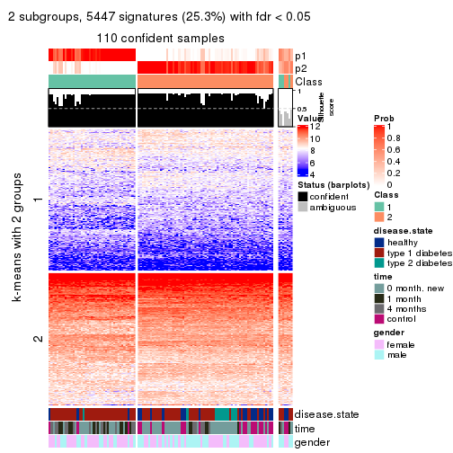
get_signatures(res, k = 3, scale_rows = FALSE)
get_signatures(res, k = 4, scale_rows = FALSE)
get_signatures(res, k = 5, scale_rows = FALSE)
get_signatures(res, k = 6, scale_rows = FALSE)
Compare the overlap of signatures from different k:
compare_signatures(res)
get_signature() returns a data frame invisibly. TO get the list of signatures, the function
call should be assigned to a variable explicitly. In following code, if plot argument is set
to FALSE, no heatmap is plotted while only the differential analysis is performed.
# code only for demonstration
tb = get_signature(res, k = ..., plot = FALSE)
An example of the output of tb is:
#> which_row fdr mean_1 mean_2 scaled_mean_1 scaled_mean_2 km
#> 1 38 0.042760348 8.373488 9.131774 -0.5533452 0.5164555 1
#> 2 40 0.018707592 7.106213 8.469186 -0.6173731 0.5762149 1
#> 3 55 0.019134737 10.221463 11.207825 -0.6159697 0.5749050 1
#> 4 59 0.006059896 5.921854 7.869574 -0.6899429 0.6439467 1
#> 5 60 0.018055526 8.928898 10.211722 -0.6204761 0.5791110 1
#> 6 98 0.009384629 15.714769 14.887706 0.6635654 -0.6193277 2
...
The columns in tb are:
which_row: row indices corresponding to the input matrix.fdr: FDR for the differential test. mean_x: The mean value in group x.scaled_mean_x: The mean value in group x after rows are scaled.km: Row groups if k-means clustering is applied to rows.UMAP plot which shows how samples are separated.
dimension_reduction(res, k = 2, method = "UMAP")
dimension_reduction(res, k = 3, method = "UMAP")
dimension_reduction(res, k = 4, method = "UMAP")
dimension_reduction(res, k = 5, method = "UMAP")
dimension_reduction(res, k = 6, method = "UMAP")
Following heatmap shows how subgroups are split when increasing k:
collect_classes(res)
Test correlation between subgroups and known annotations. If the known annotation is numeric, one-way ANOVA test is applied, and if the known annotation is discrete, chi-squared contingency table test is applied.
test_to_known_factors(res)
#> n disease.state(p) time(p) gender(p) k
#> SD:kmeans 110 4.25e-04 2.55e-05 0.1261 2
#> SD:kmeans 103 4.52e-03 4.46e-03 0.2574 3
#> SD:kmeans 93 1.00e-03 2.10e-04 0.0694 4
#> SD:kmeans 77 2.92e-05 1.30e-04 0.0275 5
#> SD:kmeans 78 3.67e-06 4.07e-05 0.0295 6
If matrix rows can be associated to genes, consider to use GO_Enrichment(res,
...) to perform function enrichment for the signature genes.
The object with results only for a single top-value method and a single partition method can be extracted as:
res = res_list["SD", "skmeans"]
# you can also extract it by
# res = res_list["SD:skmeans"]
A summary of res and all the functions that can be applied to it:
res
#> A 'ConsensusPartition' object with k = 2, 3, 4, 5, 6.
#> On a matrix with 21512 rows and 117 columns.
#> Top rows (1000, 2000, 3000, 4000, 5000) are extracted by 'SD' method.
#> Subgroups are detected by 'skmeans' method.
#> Performed in total 1250 partitions by row resampling.
#> Best k for subgroups seems to be 2.
#>
#> Following methods can be applied to this 'ConsensusPartition' object:
#> [1] "cola_report" "collect_classes" "collect_plots"
#> [4] "collect_stats" "colnames" "compare_signatures"
#> [7] "consensus_heatmap" "dimension_reduction" "functional_enrichment"
#> [10] "get_anno_col" "get_anno" "get_classes"
#> [13] "get_consensus" "get_matrix" "get_membership"
#> [16] "get_param" "get_signatures" "get_stats"
#> [19] "is_best_k" "is_stable_k" "membership_heatmap"
#> [22] "ncol" "nrow" "plot_ecdf"
#> [25] "rownames" "select_partition_number" "show"
#> [28] "suggest_best_k" "test_to_known_factors"
collect_plots() function collects all the plots made from res for all k (number of partitions)
into one single page to provide an easy and fast comparison between different k.
collect_plots(res)
The plots are:
k and the heatmap of
predicted classes for each k.k.k.k.All the plots in panels can be made by individual functions and they are plotted later in this section.
select_partition_number() produces several plots showing different
statistics for choosing “optimized” k. There are following statistics:
k;k, the area increased is defined as \(A_k - A_{k-1}\).The detailed explanations of these statistics can be found in the cola vignette.
Generally speaking, lower PAC score, higher mean silhouette score or higher
concordance corresponds to better partition. Rand index and Jaccard index
measure how similar the current partition is compared to partition with k-1.
If they are too similar, we won't accept k is better than k-1.
select_partition_number(res)

The numeric values for all these statistics can be obtained by get_stats().
get_stats(res)
#> k 1-PAC mean_silhouette concordance area_increased Rand Jaccard
#> 2 2 0.386 0.743 0.877 0.5033 0.496 0.496
#> 3 3 0.199 0.440 0.691 0.3228 0.732 0.510
#> 4 4 0.207 0.277 0.572 0.1195 0.847 0.596
#> 5 5 0.254 0.185 0.494 0.0650 0.889 0.642
#> 6 6 0.322 0.185 0.455 0.0412 0.885 0.583
suggest_best_k() suggests the best \(k\) based on these statistics. The rules are as follows:
NA.suggest_best_k(res)
#> [1] 2
Following shows the table of the partitions (You need to click the show/hide
code output link to see it). The membership matrix (columns with name p*)
is inferred by
clue::cl_consensus()
function with the SE method. Basically the value in the membership matrix
represents the probability to belong to a certain group. The finall class
label for an item is determined with the group with highest probability it
belongs to.
In get_classes() function, the entropy is calculated from the membership
matrix and the silhouette score is calculated from the consensus matrix.
cbind(get_classes(res, k = 2), get_membership(res, k = 2))
#> class entropy silhouette p1 p2
#> GSM254177 2 0.0672 0.86464 0.008 0.992
#> GSM254179 2 0.8081 0.70540 0.248 0.752
#> GSM254180 2 0.8909 0.59195 0.308 0.692
#> GSM254182 1 0.4431 0.81643 0.908 0.092
#> GSM254183 2 0.7528 0.74024 0.216 0.784
#> GSM254277 2 0.9427 0.49252 0.360 0.640
#> GSM254278 2 0.0000 0.86461 0.000 1.000
#> GSM254281 1 0.9087 0.54990 0.676 0.324
#> GSM254282 2 0.4431 0.83843 0.092 0.908
#> GSM254284 1 0.9209 0.55145 0.664 0.336
#> GSM254286 1 0.9977 0.15281 0.528 0.472
#> GSM254290 1 0.9795 0.35550 0.584 0.416
#> GSM254291 2 0.1414 0.86339 0.020 0.980
#> GSM254293 1 0.9996 0.09431 0.512 0.488
#> GSM254178 1 0.0000 0.84715 1.000 0.000
#> GSM254181 2 0.0000 0.86461 0.000 1.000
#> GSM254279 2 0.0000 0.86461 0.000 1.000
#> GSM254280 2 0.0000 0.86461 0.000 1.000
#> GSM254283 2 0.4562 0.83484 0.096 0.904
#> GSM254285 2 0.0000 0.86461 0.000 1.000
#> GSM254287 2 0.0376 0.86466 0.004 0.996
#> GSM254288 2 0.7528 0.73431 0.216 0.784
#> GSM254289 2 0.3274 0.85461 0.060 0.940
#> GSM254292 1 0.7674 0.72260 0.776 0.224
#> GSM254184 2 0.5842 0.80901 0.140 0.860
#> GSM254185 2 0.0000 0.86461 0.000 1.000
#> GSM254187 2 0.0000 0.86461 0.000 1.000
#> GSM254189 2 0.2043 0.86058 0.032 0.968
#> GSM254190 1 0.1184 0.84579 0.984 0.016
#> GSM254191 2 0.7528 0.74054 0.216 0.784
#> GSM254192 2 0.1184 0.86379 0.016 0.984
#> GSM254193 1 0.1843 0.84242 0.972 0.028
#> GSM254199 1 0.7139 0.74056 0.804 0.196
#> GSM254203 1 0.0000 0.84715 1.000 0.000
#> GSM254206 1 0.0000 0.84715 1.000 0.000
#> GSM254210 1 0.9608 0.39968 0.616 0.384
#> GSM254211 1 0.0000 0.84715 1.000 0.000
#> GSM254215 2 0.0000 0.86461 0.000 1.000
#> GSM254218 2 0.4562 0.83846 0.096 0.904
#> GSM254230 1 0.0000 0.84715 1.000 0.000
#> GSM254236 2 0.0000 0.86461 0.000 1.000
#> GSM254244 1 0.0000 0.84715 1.000 0.000
#> GSM254247 1 0.7219 0.73654 0.800 0.200
#> GSM254248 1 0.9775 0.32596 0.588 0.412
#> GSM254254 2 0.0000 0.86461 0.000 1.000
#> GSM254257 2 0.0672 0.86433 0.008 0.992
#> GSM254258 2 0.0000 0.86461 0.000 1.000
#> GSM254261 2 0.0000 0.86461 0.000 1.000
#> GSM254264 2 0.0000 0.86461 0.000 1.000
#> GSM254186 2 0.0000 0.86461 0.000 1.000
#> GSM254188 2 0.0000 0.86461 0.000 1.000
#> GSM254194 2 0.2778 0.85604 0.048 0.952
#> GSM254195 1 0.0376 0.84686 0.996 0.004
#> GSM254196 1 0.9460 0.49477 0.636 0.364
#> GSM254200 2 0.0000 0.86461 0.000 1.000
#> GSM254209 2 0.0376 0.86447 0.004 0.996
#> GSM254214 2 0.3879 0.84605 0.076 0.924
#> GSM254221 1 0.2778 0.83586 0.952 0.048
#> GSM254224 1 0.9000 0.60100 0.684 0.316
#> GSM254227 2 0.9993 0.04298 0.484 0.516
#> GSM254233 2 0.9993 -0.00276 0.484 0.516
#> GSM254235 1 0.0000 0.84715 1.000 0.000
#> GSM254239 1 0.9983 0.16648 0.524 0.476
#> GSM254241 1 0.0000 0.84715 1.000 0.000
#> GSM254251 2 0.0000 0.86461 0.000 1.000
#> GSM254262 2 0.0376 0.86447 0.004 0.996
#> GSM254263 2 0.0000 0.86461 0.000 1.000
#> GSM254197 1 0.0000 0.84715 1.000 0.000
#> GSM254201 1 0.0000 0.84715 1.000 0.000
#> GSM254204 1 0.0938 0.84621 0.988 0.012
#> GSM254216 1 0.0000 0.84715 1.000 0.000
#> GSM254228 1 0.0000 0.84715 1.000 0.000
#> GSM254242 1 0.0000 0.84715 1.000 0.000
#> GSM254245 1 0.0000 0.84715 1.000 0.000
#> GSM254252 1 0.2603 0.83735 0.956 0.044
#> GSM254255 1 0.6148 0.78520 0.848 0.152
#> GSM254259 1 0.0000 0.84715 1.000 0.000
#> GSM254207 2 0.4815 0.82866 0.104 0.896
#> GSM254212 2 0.8861 0.58343 0.304 0.696
#> GSM254219 1 0.0000 0.84715 1.000 0.000
#> GSM254222 2 0.7815 0.70053 0.232 0.768
#> GSM254225 2 0.8661 0.62183 0.288 0.712
#> GSM254231 1 0.7950 0.70642 0.760 0.240
#> GSM254234 2 0.9248 0.49436 0.340 0.660
#> GSM254237 1 0.7674 0.72189 0.776 0.224
#> GSM254249 1 0.8499 0.66307 0.724 0.276
#> GSM254198 1 0.3733 0.82597 0.928 0.072
#> GSM254202 1 0.5408 0.80371 0.876 0.124
#> GSM254205 1 0.0938 0.84657 0.988 0.012
#> GSM254217 1 0.0672 0.84673 0.992 0.008
#> GSM254229 1 0.8763 0.61924 0.704 0.296
#> GSM254243 1 0.0000 0.84715 1.000 0.000
#> GSM254246 1 0.0000 0.84715 1.000 0.000
#> GSM254253 1 0.0376 0.84678 0.996 0.004
#> GSM254256 2 0.9732 0.36068 0.404 0.596
#> GSM254260 1 0.0672 0.84684 0.992 0.008
#> GSM254208 1 0.8955 0.60714 0.688 0.312
#> GSM254213 2 0.0000 0.86461 0.000 1.000
#> GSM254220 1 0.0000 0.84715 1.000 0.000
#> GSM254223 1 0.6343 0.77480 0.840 0.160
#> GSM254226 2 0.0376 0.86459 0.004 0.996
#> GSM254232 1 0.9909 0.29035 0.556 0.444
#> GSM254238 1 0.5408 0.79877 0.876 0.124
#> GSM254240 1 0.0938 0.84577 0.988 0.012
#> GSM254250 1 0.0000 0.84715 1.000 0.000
#> GSM254268 2 0.4431 0.83968 0.092 0.908
#> GSM254269 2 0.8081 0.69680 0.248 0.752
#> GSM254270 1 0.0000 0.84715 1.000 0.000
#> GSM254272 2 0.8081 0.70323 0.248 0.752
#> GSM254273 2 0.5629 0.81698 0.132 0.868
#> GSM254274 2 0.4562 0.84034 0.096 0.904
#> GSM254265 2 0.7376 0.74853 0.208 0.792
#> GSM254266 1 0.9393 0.51043 0.644 0.356
#> GSM254267 2 0.9087 0.55817 0.324 0.676
#> GSM254271 2 0.0000 0.86461 0.000 1.000
#> GSM254275 2 0.9522 0.42492 0.372 0.628
#> GSM254276 2 0.5629 0.80882 0.132 0.868
cbind(get_classes(res, k = 3), get_membership(res, k = 3))
#> class entropy silhouette p1 p2 p3
#> GSM254177 3 0.4575 0.65139 0.012 0.160 0.828
#> GSM254179 3 0.8308 0.27468 0.096 0.336 0.568
#> GSM254180 3 0.9336 -0.26766 0.164 0.416 0.420
#> GSM254182 1 0.8085 0.44200 0.648 0.204 0.148
#> GSM254183 3 0.9833 -0.29155 0.260 0.324 0.416
#> GSM254277 3 0.9411 -0.20037 0.176 0.380 0.444
#> GSM254278 3 0.0892 0.67852 0.000 0.020 0.980
#> GSM254281 2 0.9971 0.39250 0.352 0.352 0.296
#> GSM254282 3 0.7504 0.42331 0.060 0.312 0.628
#> GSM254284 2 0.8468 0.46046 0.308 0.576 0.116
#> GSM254286 3 0.9633 -0.23690 0.352 0.212 0.436
#> GSM254290 2 0.9052 0.56451 0.216 0.556 0.228
#> GSM254291 3 0.5585 0.63279 0.024 0.204 0.772
#> GSM254293 2 0.9940 0.47827 0.308 0.388 0.304
#> GSM254178 1 0.0592 0.69937 0.988 0.012 0.000
#> GSM254181 3 0.6155 0.50106 0.008 0.328 0.664
#> GSM254279 3 0.2448 0.68233 0.000 0.076 0.924
#> GSM254280 3 0.2711 0.68196 0.000 0.088 0.912
#> GSM254283 2 0.7467 0.36962 0.056 0.624 0.320
#> GSM254285 3 0.3192 0.68132 0.000 0.112 0.888
#> GSM254287 2 0.7710 0.24797 0.056 0.576 0.368
#> GSM254288 2 0.8675 0.54778 0.184 0.596 0.220
#> GSM254289 2 0.8527 0.20923 0.096 0.504 0.400
#> GSM254292 1 0.9780 -0.22700 0.416 0.344 0.240
#> GSM254184 3 0.5538 0.59740 0.116 0.072 0.812
#> GSM254185 3 0.0592 0.67858 0.000 0.012 0.988
#> GSM254187 3 0.0592 0.67888 0.000 0.012 0.988
#> GSM254189 3 0.1774 0.67993 0.016 0.024 0.960
#> GSM254190 1 0.4128 0.63595 0.856 0.012 0.132
#> GSM254191 3 0.8250 0.19235 0.292 0.108 0.600
#> GSM254192 3 0.3459 0.67862 0.012 0.096 0.892
#> GSM254193 1 0.4790 0.66887 0.848 0.096 0.056
#> GSM254199 1 0.8878 0.17000 0.576 0.216 0.208
#> GSM254203 1 0.0000 0.69766 1.000 0.000 0.000
#> GSM254206 1 0.1964 0.70508 0.944 0.056 0.000
#> GSM254210 2 0.9892 0.43702 0.340 0.392 0.268
#> GSM254211 1 0.2031 0.70421 0.952 0.032 0.016
#> GSM254215 3 0.0592 0.67817 0.000 0.012 0.988
#> GSM254218 3 0.6998 0.48735 0.044 0.292 0.664
#> GSM254230 1 0.1289 0.70249 0.968 0.032 0.000
#> GSM254236 3 0.0424 0.67752 0.000 0.008 0.992
#> GSM254244 1 0.2066 0.70513 0.940 0.060 0.000
#> GSM254247 2 0.9485 0.27051 0.388 0.428 0.184
#> GSM254248 1 0.9755 -0.34288 0.396 0.376 0.228
#> GSM254254 3 0.4291 0.64848 0.000 0.180 0.820
#> GSM254257 3 0.4861 0.64100 0.008 0.192 0.800
#> GSM254258 3 0.0892 0.67915 0.000 0.020 0.980
#> GSM254261 3 0.4733 0.64427 0.004 0.196 0.800
#> GSM254264 3 0.0747 0.67938 0.000 0.016 0.984
#> GSM254186 3 0.1643 0.67953 0.000 0.044 0.956
#> GSM254188 3 0.1643 0.67954 0.000 0.044 0.956
#> GSM254194 3 0.5760 0.62637 0.064 0.140 0.796
#> GSM254195 1 0.3765 0.69982 0.888 0.084 0.028
#> GSM254196 1 0.9111 -0.23481 0.436 0.140 0.424
#> GSM254200 3 0.0892 0.67913 0.000 0.020 0.980
#> GSM254209 3 0.6647 0.24706 0.008 0.452 0.540
#> GSM254214 2 0.8814 0.40656 0.140 0.548 0.312
#> GSM254221 1 0.7366 0.55679 0.668 0.260 0.072
#> GSM254224 2 0.9146 0.30398 0.380 0.472 0.148
#> GSM254227 1 0.9487 -0.14925 0.476 0.320 0.204
#> GSM254233 2 0.9919 0.40155 0.272 0.372 0.356
#> GSM254235 1 0.1031 0.70160 0.976 0.024 0.000
#> GSM254239 2 0.8872 0.51600 0.288 0.556 0.156
#> GSM254241 1 0.4121 0.68778 0.832 0.168 0.000
#> GSM254251 3 0.4121 0.65718 0.000 0.168 0.832
#> GSM254262 3 0.2955 0.68035 0.008 0.080 0.912
#> GSM254263 3 0.2066 0.68109 0.000 0.060 0.940
#> GSM254197 1 0.1163 0.70195 0.972 0.028 0.000
#> GSM254201 1 0.5901 0.65904 0.768 0.192 0.040
#> GSM254204 1 0.6129 0.56167 0.668 0.324 0.008
#> GSM254216 1 0.3941 0.69507 0.844 0.156 0.000
#> GSM254228 1 0.0237 0.69866 0.996 0.004 0.000
#> GSM254242 1 0.3038 0.70447 0.896 0.104 0.000
#> GSM254245 1 0.4521 0.68965 0.816 0.180 0.004
#> GSM254252 2 0.8277 -0.06637 0.460 0.464 0.076
#> GSM254255 1 0.9067 0.06561 0.476 0.384 0.140
#> GSM254259 1 0.0424 0.69898 0.992 0.008 0.000
#> GSM254207 3 0.8014 0.42074 0.104 0.268 0.628
#> GSM254212 2 0.7644 0.54868 0.136 0.684 0.180
#> GSM254219 1 0.5480 0.62833 0.732 0.264 0.004
#> GSM254222 2 0.8655 0.29718 0.108 0.512 0.380
#> GSM254225 3 0.9856 -0.31103 0.268 0.320 0.412
#> GSM254231 2 0.9134 0.37473 0.344 0.500 0.156
#> GSM254234 2 0.8727 0.55802 0.176 0.588 0.236
#> GSM254237 2 0.8872 0.37477 0.348 0.520 0.132
#> GSM254249 2 0.9413 0.37537 0.348 0.468 0.184
#> GSM254198 1 0.8610 0.24946 0.548 0.336 0.116
#> GSM254202 1 0.9110 0.20423 0.544 0.260 0.196
#> GSM254205 1 0.7699 0.33425 0.560 0.388 0.052
#> GSM254217 1 0.6704 0.42708 0.608 0.376 0.016
#> GSM254229 2 0.8554 0.41372 0.324 0.560 0.116
#> GSM254243 1 0.2959 0.70590 0.900 0.100 0.000
#> GSM254246 1 0.0424 0.69931 0.992 0.008 0.000
#> GSM254253 1 0.5356 0.66964 0.784 0.196 0.020
#> GSM254256 3 0.9419 -0.13095 0.192 0.328 0.480
#> GSM254260 1 0.7013 0.45263 0.608 0.364 0.028
#> GSM254208 2 0.9311 0.28924 0.384 0.452 0.164
#> GSM254213 3 0.6267 0.26059 0.000 0.452 0.548
#> GSM254220 1 0.4842 0.66364 0.776 0.224 0.000
#> GSM254223 2 0.7647 0.04560 0.440 0.516 0.044
#> GSM254226 3 0.7080 0.30769 0.024 0.412 0.564
#> GSM254232 2 0.8203 0.49786 0.268 0.616 0.116
#> GSM254238 1 0.7784 0.27131 0.556 0.388 0.056
#> GSM254240 1 0.3879 0.69315 0.848 0.152 0.000
#> GSM254250 1 0.4796 0.66992 0.780 0.220 0.000
#> GSM254268 3 0.7868 0.20958 0.056 0.420 0.524
#> GSM254269 2 0.8902 0.24176 0.124 0.480 0.396
#> GSM254270 1 0.6818 0.44995 0.628 0.348 0.024
#> GSM254272 2 0.8308 0.35985 0.096 0.568 0.336
#> GSM254273 3 0.8010 0.23510 0.068 0.384 0.548
#> GSM254274 3 0.8466 -0.00793 0.088 0.456 0.456
#> GSM254265 2 0.8976 0.17007 0.128 0.456 0.416
#> GSM254266 2 0.7001 0.53306 0.200 0.716 0.084
#> GSM254267 2 0.8743 0.49638 0.156 0.576 0.268
#> GSM254271 2 0.6483 0.13865 0.008 0.600 0.392
#> GSM254275 2 0.7875 0.57453 0.200 0.664 0.136
#> GSM254276 2 0.7788 0.41655 0.084 0.632 0.284
cbind(get_classes(res, k = 4), get_membership(res, k = 4))
#> class entropy silhouette p1 p2 p3 p4
#> GSM254177 3 0.6631 0.4908 0.008 0.140 0.648 0.204
#> GSM254179 3 0.9144 -0.1409 0.092 0.236 0.428 0.244
#> GSM254180 4 0.9095 -0.0541 0.116 0.368 0.140 0.376
#> GSM254182 1 0.8702 0.0508 0.448 0.116 0.100 0.336
#> GSM254183 2 0.9771 0.0686 0.148 0.296 0.288 0.268
#> GSM254277 4 0.9355 -0.0531 0.108 0.244 0.248 0.400
#> GSM254278 3 0.1520 0.6798 0.000 0.020 0.956 0.024
#> GSM254281 4 0.9719 0.1827 0.216 0.208 0.200 0.376
#> GSM254282 3 0.8981 -0.2062 0.064 0.320 0.388 0.228
#> GSM254284 2 0.8599 -0.1001 0.220 0.440 0.044 0.296
#> GSM254286 4 0.9572 0.1350 0.264 0.116 0.296 0.324
#> GSM254290 4 0.9350 0.0371 0.144 0.336 0.148 0.372
#> GSM254291 3 0.7183 0.4501 0.016 0.204 0.608 0.172
#> GSM254293 3 0.9793 -0.4110 0.176 0.208 0.316 0.300
#> GSM254178 1 0.1929 0.5408 0.940 0.024 0.000 0.036
#> GSM254181 3 0.7119 0.3305 0.008 0.276 0.576 0.140
#> GSM254279 3 0.3611 0.6708 0.000 0.080 0.860 0.060
#> GSM254280 3 0.3082 0.6756 0.000 0.084 0.884 0.032
#> GSM254283 2 0.7714 0.2965 0.044 0.580 0.236 0.140
#> GSM254285 3 0.5167 0.6127 0.000 0.132 0.760 0.108
#> GSM254287 2 0.8200 0.2990 0.036 0.488 0.300 0.176
#> GSM254288 2 0.9173 0.1327 0.124 0.448 0.176 0.252
#> GSM254289 2 0.8716 0.2786 0.056 0.452 0.268 0.224
#> GSM254292 4 0.9470 0.2537 0.240 0.176 0.168 0.416
#> GSM254184 3 0.7153 0.4788 0.124 0.104 0.672 0.100
#> GSM254185 3 0.1733 0.6792 0.000 0.024 0.948 0.028
#> GSM254187 3 0.1629 0.6800 0.000 0.024 0.952 0.024
#> GSM254189 3 0.4329 0.6550 0.036 0.056 0.844 0.064
#> GSM254190 1 0.6332 0.3823 0.712 0.032 0.136 0.120
#> GSM254191 3 0.8253 0.2017 0.252 0.104 0.544 0.100
#> GSM254192 3 0.5661 0.6185 0.020 0.132 0.752 0.096
#> GSM254193 1 0.6504 0.4299 0.708 0.060 0.080 0.152
#> GSM254199 1 0.8813 0.1121 0.500 0.136 0.128 0.236
#> GSM254203 1 0.1151 0.5361 0.968 0.008 0.000 0.024
#> GSM254206 1 0.4820 0.5309 0.772 0.060 0.000 0.168
#> GSM254210 4 0.9492 0.2514 0.308 0.216 0.120 0.356
#> GSM254211 1 0.3900 0.5404 0.848 0.052 0.004 0.096
#> GSM254215 3 0.0376 0.6759 0.000 0.004 0.992 0.004
#> GSM254218 3 0.7566 0.3308 0.020 0.224 0.568 0.188
#> GSM254230 1 0.2909 0.5401 0.888 0.020 0.000 0.092
#> GSM254236 3 0.0895 0.6778 0.000 0.004 0.976 0.020
#> GSM254244 1 0.4127 0.5387 0.824 0.052 0.000 0.124
#> GSM254247 4 0.9378 0.2453 0.288 0.256 0.096 0.360
#> GSM254248 4 0.9567 0.1609 0.280 0.232 0.128 0.360
#> GSM254254 3 0.5532 0.5644 0.000 0.228 0.704 0.068
#> GSM254257 3 0.6715 0.4926 0.008 0.220 0.636 0.136
#> GSM254258 3 0.1624 0.6789 0.000 0.028 0.952 0.020
#> GSM254261 3 0.6578 0.4775 0.000 0.244 0.620 0.136
#> GSM254264 3 0.1174 0.6773 0.000 0.012 0.968 0.020
#> GSM254186 3 0.1356 0.6761 0.000 0.032 0.960 0.008
#> GSM254188 3 0.1256 0.6770 0.000 0.028 0.964 0.008
#> GSM254194 3 0.6549 0.5451 0.024 0.168 0.684 0.124
#> GSM254195 1 0.5597 0.5037 0.748 0.048 0.032 0.172
#> GSM254196 1 0.9574 -0.3045 0.336 0.136 0.324 0.204
#> GSM254200 3 0.1109 0.6755 0.000 0.028 0.968 0.004
#> GSM254209 2 0.7679 0.1315 0.008 0.432 0.396 0.164
#> GSM254214 2 0.8803 0.2299 0.112 0.508 0.192 0.188
#> GSM254221 1 0.7842 0.1739 0.452 0.136 0.024 0.388
#> GSM254224 1 0.9589 -0.2985 0.308 0.296 0.116 0.280
#> GSM254227 1 0.9595 -0.2219 0.400 0.200 0.180 0.220
#> GSM254233 4 0.9844 -0.0354 0.164 0.276 0.276 0.284
#> GSM254235 1 0.2282 0.5433 0.924 0.024 0.000 0.052
#> GSM254239 2 0.9432 0.0413 0.220 0.424 0.152 0.204
#> GSM254241 1 0.6570 0.4542 0.632 0.164 0.000 0.204
#> GSM254251 3 0.5558 0.5781 0.000 0.208 0.712 0.080
#> GSM254262 3 0.3902 0.6703 0.020 0.092 0.856 0.032
#> GSM254263 3 0.2909 0.6717 0.000 0.092 0.888 0.020
#> GSM254197 1 0.2197 0.5383 0.928 0.024 0.000 0.048
#> GSM254201 1 0.7586 0.3789 0.592 0.128 0.044 0.236
#> GSM254204 1 0.8049 0.1269 0.432 0.196 0.016 0.356
#> GSM254216 1 0.6644 0.4361 0.624 0.124 0.004 0.248
#> GSM254228 1 0.2984 0.5424 0.888 0.028 0.000 0.084
#> GSM254242 1 0.5767 0.4902 0.688 0.064 0.004 0.244
#> GSM254245 1 0.6850 0.4257 0.612 0.128 0.008 0.252
#> GSM254252 4 0.8323 0.0501 0.352 0.216 0.024 0.408
#> GSM254255 1 0.9330 -0.1396 0.380 0.224 0.100 0.296
#> GSM254259 1 0.2142 0.5419 0.928 0.016 0.000 0.056
#> GSM254207 3 0.8417 0.0616 0.040 0.288 0.468 0.204
#> GSM254212 2 0.8130 0.2154 0.080 0.556 0.120 0.244
#> GSM254219 1 0.7270 0.2974 0.504 0.164 0.000 0.332
#> GSM254222 2 0.8659 0.2462 0.096 0.504 0.252 0.148
#> GSM254225 2 0.9880 -0.0215 0.228 0.304 0.280 0.188
#> GSM254231 2 0.9389 -0.1136 0.256 0.396 0.112 0.236
#> GSM254234 2 0.8518 0.1522 0.136 0.544 0.124 0.196
#> GSM254237 2 0.9571 -0.0869 0.256 0.344 0.120 0.280
#> GSM254249 4 0.9391 0.1886 0.280 0.292 0.092 0.336
#> GSM254198 1 0.8679 -0.0244 0.396 0.168 0.060 0.376
#> GSM254202 1 0.9602 -0.2357 0.336 0.176 0.160 0.328
#> GSM254205 4 0.8541 -0.0300 0.376 0.212 0.036 0.376
#> GSM254217 1 0.8138 0.0755 0.428 0.264 0.012 0.296
#> GSM254229 2 0.8820 -0.0479 0.216 0.444 0.064 0.276
#> GSM254243 1 0.5593 0.5071 0.708 0.080 0.000 0.212
#> GSM254246 1 0.1256 0.5356 0.964 0.008 0.000 0.028
#> GSM254253 1 0.6095 0.4679 0.668 0.108 0.000 0.224
#> GSM254256 2 0.9743 0.0782 0.144 0.312 0.268 0.276
#> GSM254260 1 0.8368 0.0895 0.424 0.168 0.040 0.368
#> GSM254208 2 0.9561 -0.1576 0.332 0.340 0.156 0.172
#> GSM254213 2 0.7439 0.3147 0.004 0.500 0.332 0.164
#> GSM254220 1 0.6444 0.4391 0.612 0.104 0.000 0.284
#> GSM254223 1 0.8447 -0.0626 0.364 0.364 0.024 0.248
#> GSM254226 3 0.7656 0.1543 0.020 0.316 0.520 0.144
#> GSM254232 2 0.8094 0.0575 0.148 0.552 0.060 0.240
#> GSM254238 1 0.8375 -0.0210 0.400 0.268 0.020 0.312
#> GSM254240 1 0.5677 0.5092 0.720 0.140 0.000 0.140
#> GSM254250 1 0.6134 0.4821 0.668 0.116 0.000 0.216
#> GSM254268 2 0.8612 0.2555 0.040 0.396 0.348 0.216
#> GSM254269 2 0.9202 0.1772 0.072 0.340 0.284 0.304
#> GSM254270 1 0.7696 0.1649 0.468 0.204 0.004 0.324
#> GSM254272 2 0.8769 0.2009 0.060 0.420 0.192 0.328
#> GSM254273 3 0.9269 -0.3352 0.084 0.328 0.344 0.244
#> GSM254274 2 0.9251 0.1991 0.084 0.360 0.316 0.240
#> GSM254265 2 0.9425 0.1189 0.096 0.320 0.268 0.316
#> GSM254266 2 0.8673 0.0997 0.140 0.500 0.100 0.260
#> GSM254267 2 0.8532 0.2117 0.088 0.524 0.160 0.228
#> GSM254271 2 0.7137 0.3200 0.000 0.536 0.304 0.160
#> GSM254275 2 0.8292 0.1805 0.116 0.540 0.092 0.252
#> GSM254276 2 0.8514 0.2752 0.084 0.524 0.228 0.164
cbind(get_classes(res, k = 5), get_membership(res, k = 5))
#> class entropy silhouette p1 p2 p3 p4 p5
#> GSM254177 3 0.6582 0.42783 0.004 0.068 0.616 0.096 0.216
#> GSM254179 3 0.9340 -0.23429 0.052 0.184 0.304 0.228 0.232
#> GSM254180 2 0.9279 0.02027 0.048 0.284 0.164 0.236 0.268
#> GSM254182 1 0.9318 -0.11821 0.364 0.096 0.116 0.224 0.200
#> GSM254183 5 0.9422 0.19388 0.100 0.152 0.240 0.156 0.352
#> GSM254277 5 0.9657 0.07756 0.092 0.180 0.204 0.260 0.264
#> GSM254278 3 0.2833 0.55832 0.000 0.020 0.888 0.024 0.068
#> GSM254281 4 0.9854 0.07722 0.168 0.196 0.148 0.276 0.212
#> GSM254282 3 0.9043 -0.19835 0.036 0.196 0.320 0.160 0.288
#> GSM254284 2 0.9009 -0.05488 0.224 0.348 0.040 0.252 0.136
#> GSM254286 3 0.9780 -0.22912 0.212 0.152 0.296 0.144 0.196
#> GSM254290 5 0.9270 -0.01991 0.104 0.224 0.080 0.276 0.316
#> GSM254291 3 0.7670 0.20588 0.012 0.124 0.488 0.088 0.288
#> GSM254293 3 0.9847 -0.33655 0.168 0.200 0.268 0.224 0.140
#> GSM254178 1 0.2710 0.50849 0.896 0.016 0.000 0.056 0.032
#> GSM254181 3 0.7755 -0.04591 0.004 0.232 0.412 0.056 0.296
#> GSM254279 3 0.3913 0.55138 0.000 0.032 0.824 0.036 0.108
#> GSM254280 3 0.5594 0.51510 0.008 0.076 0.728 0.064 0.124
#> GSM254283 2 0.8288 0.10059 0.044 0.500 0.132 0.128 0.196
#> GSM254285 3 0.6092 0.48667 0.004 0.076 0.680 0.088 0.152
#> GSM254287 5 0.8245 0.12156 0.036 0.288 0.140 0.088 0.448
#> GSM254288 5 0.9058 0.03977 0.100 0.292 0.088 0.152 0.368
#> GSM254289 5 0.8917 0.14735 0.092 0.248 0.164 0.084 0.412
#> GSM254292 4 0.9443 0.21223 0.240 0.124 0.120 0.352 0.164
#> GSM254184 3 0.7359 0.36203 0.096 0.036 0.588 0.084 0.196
#> GSM254185 3 0.2162 0.56126 0.000 0.008 0.916 0.012 0.064
#> GSM254187 3 0.2255 0.56040 0.004 0.012 0.916 0.008 0.060
#> GSM254189 3 0.4561 0.53271 0.036 0.020 0.796 0.028 0.120
#> GSM254190 1 0.6852 0.34636 0.640 0.020 0.124 0.100 0.116
#> GSM254191 3 0.8296 -0.01632 0.248 0.052 0.420 0.040 0.240
#> GSM254192 3 0.6685 0.45253 0.040 0.068 0.652 0.068 0.172
#> GSM254193 1 0.6735 0.37229 0.628 0.036 0.032 0.112 0.192
#> GSM254199 1 0.9343 -0.04785 0.400 0.148 0.136 0.156 0.160
#> GSM254203 1 0.2053 0.50302 0.928 0.016 0.000 0.040 0.016
#> GSM254206 1 0.5466 0.45939 0.704 0.044 0.004 0.196 0.052
#> GSM254210 1 0.9785 -0.28949 0.280 0.168 0.124 0.216 0.212
#> GSM254211 1 0.5374 0.47393 0.756 0.076 0.016 0.080 0.072
#> GSM254215 3 0.0579 0.55306 0.000 0.000 0.984 0.008 0.008
#> GSM254218 3 0.8319 0.19130 0.032 0.144 0.484 0.144 0.196
#> GSM254230 1 0.3362 0.50676 0.864 0.032 0.000 0.064 0.040
#> GSM254236 3 0.1830 0.55612 0.000 0.008 0.924 0.000 0.068
#> GSM254244 1 0.4232 0.49891 0.800 0.024 0.004 0.136 0.036
#> GSM254247 4 0.9122 0.07843 0.144 0.216 0.056 0.372 0.212
#> GSM254248 5 0.9785 -0.03381 0.216 0.208 0.108 0.208 0.260
#> GSM254254 3 0.6176 0.40384 0.000 0.128 0.612 0.024 0.236
#> GSM254257 3 0.7254 0.25626 0.004 0.092 0.516 0.096 0.292
#> GSM254258 3 0.1059 0.55759 0.000 0.008 0.968 0.004 0.020
#> GSM254261 3 0.6842 0.36764 0.008 0.104 0.584 0.060 0.244
#> GSM254264 3 0.1605 0.55885 0.000 0.004 0.944 0.012 0.040
#> GSM254186 3 0.2295 0.55802 0.000 0.008 0.900 0.004 0.088
#> GSM254188 3 0.2804 0.55812 0.000 0.016 0.880 0.012 0.092
#> GSM254194 3 0.6906 0.42906 0.024 0.096 0.628 0.080 0.172
#> GSM254195 1 0.6252 0.41406 0.668 0.032 0.056 0.196 0.048
#> GSM254196 3 0.9279 -0.24714 0.284 0.064 0.316 0.192 0.144
#> GSM254200 3 0.2179 0.55356 0.000 0.008 0.912 0.008 0.072
#> GSM254209 5 0.8198 0.15831 0.008 0.252 0.320 0.080 0.340
#> GSM254214 2 0.9024 -0.09084 0.056 0.348 0.152 0.140 0.304
#> GSM254221 4 0.8309 0.05975 0.340 0.088 0.056 0.416 0.100
#> GSM254224 1 0.9410 -0.26322 0.280 0.236 0.060 0.256 0.168
#> GSM254227 1 0.9638 -0.25240 0.304 0.184 0.108 0.160 0.244
#> GSM254233 4 0.9660 0.03738 0.144 0.144 0.276 0.288 0.148
#> GSM254235 1 0.3796 0.50344 0.824 0.028 0.004 0.128 0.016
#> GSM254239 2 0.9562 0.01998 0.208 0.324 0.092 0.200 0.176
#> GSM254241 1 0.6326 0.40496 0.616 0.104 0.004 0.240 0.036
#> GSM254251 3 0.6718 0.34933 0.000 0.132 0.576 0.052 0.240
#> GSM254262 3 0.5406 0.50779 0.024 0.036 0.720 0.032 0.188
#> GSM254263 3 0.4687 0.50213 0.000 0.052 0.736 0.012 0.200
#> GSM254197 1 0.2696 0.50644 0.896 0.012 0.000 0.052 0.040
#> GSM254201 1 0.8238 0.02742 0.404 0.120 0.060 0.356 0.060
#> GSM254204 1 0.8482 -0.13022 0.352 0.168 0.008 0.308 0.164
#> GSM254216 1 0.6433 0.31955 0.524 0.144 0.000 0.320 0.012
#> GSM254228 1 0.2363 0.50520 0.912 0.012 0.000 0.052 0.024
#> GSM254242 1 0.5977 0.41463 0.604 0.052 0.004 0.304 0.036
#> GSM254245 1 0.7062 0.35571 0.572 0.132 0.008 0.224 0.064
#> GSM254252 4 0.8965 0.17536 0.240 0.204 0.028 0.348 0.180
#> GSM254255 4 0.9365 0.16228 0.260 0.232 0.060 0.292 0.156
#> GSM254259 1 0.3613 0.50743 0.840 0.024 0.000 0.104 0.032
#> GSM254207 3 0.9221 -0.14187 0.056 0.212 0.352 0.160 0.220
#> GSM254212 2 0.8103 0.05859 0.072 0.468 0.052 0.112 0.296
#> GSM254219 1 0.7527 0.09162 0.412 0.120 0.004 0.384 0.080
#> GSM254222 2 0.9510 0.05232 0.088 0.336 0.200 0.192 0.184
#> GSM254225 5 0.9798 0.06242 0.160 0.196 0.244 0.132 0.268
#> GSM254231 4 0.9309 0.11179 0.208 0.256 0.072 0.332 0.132
#> GSM254234 2 0.9361 0.13998 0.136 0.384 0.112 0.176 0.192
#> GSM254237 2 0.9244 -0.03110 0.172 0.356 0.072 0.256 0.144
#> GSM254249 4 0.9533 0.15903 0.220 0.172 0.088 0.324 0.196
#> GSM254198 1 0.9104 -0.22683 0.296 0.156 0.036 0.280 0.232
#> GSM254202 4 0.9207 0.24216 0.276 0.208 0.088 0.336 0.092
#> GSM254205 4 0.9173 0.23570 0.268 0.180 0.064 0.352 0.136
#> GSM254217 1 0.8306 -0.02852 0.372 0.320 0.016 0.204 0.088
#> GSM254229 2 0.8865 0.08099 0.156 0.396 0.036 0.216 0.196
#> GSM254243 1 0.6311 0.41279 0.644 0.092 0.004 0.200 0.060
#> GSM254246 1 0.1928 0.50392 0.920 0.004 0.000 0.072 0.004
#> GSM254253 1 0.7002 0.33877 0.564 0.080 0.012 0.268 0.076
#> GSM254256 4 0.9594 -0.14757 0.080 0.176 0.232 0.264 0.248
#> GSM254260 1 0.8305 -0.02742 0.384 0.176 0.020 0.328 0.092
#> GSM254208 2 0.9651 -0.08494 0.228 0.272 0.120 0.256 0.124
#> GSM254213 2 0.8292 -0.09046 0.008 0.380 0.200 0.112 0.300
#> GSM254220 1 0.7143 0.20807 0.464 0.088 0.004 0.372 0.072
#> GSM254223 2 0.8827 -0.13510 0.248 0.344 0.028 0.256 0.124
#> GSM254226 3 0.8488 -0.08737 0.012 0.208 0.384 0.132 0.264
#> GSM254232 2 0.8679 0.13204 0.104 0.412 0.040 0.236 0.208
#> GSM254238 4 0.9003 0.10155 0.216 0.304 0.044 0.316 0.120
#> GSM254240 1 0.6335 0.40657 0.604 0.100 0.000 0.252 0.044
#> GSM254250 1 0.7233 0.30215 0.532 0.124 0.004 0.264 0.076
#> GSM254268 5 0.8124 0.14302 0.008 0.284 0.272 0.072 0.364
#> GSM254269 2 0.9469 -0.02599 0.060 0.276 0.220 0.204 0.240
#> GSM254270 1 0.8354 0.06813 0.412 0.252 0.012 0.204 0.120
#> GSM254272 2 0.8840 0.06263 0.052 0.428 0.164 0.148 0.208
#> GSM254273 3 0.8908 -0.21434 0.048 0.320 0.332 0.108 0.192
#> GSM254274 3 0.9239 -0.24062 0.064 0.248 0.328 0.124 0.236
#> GSM254265 5 0.9081 0.00876 0.040 0.248 0.160 0.208 0.344
#> GSM254266 2 0.8369 0.14328 0.136 0.484 0.036 0.184 0.160
#> GSM254267 2 0.8250 0.12342 0.048 0.484 0.080 0.156 0.232
#> GSM254271 2 0.7695 -0.06844 0.012 0.452 0.184 0.052 0.300
#> GSM254275 2 0.8100 0.08732 0.072 0.524 0.064 0.148 0.192
#> GSM254276 2 0.8712 0.06341 0.056 0.456 0.160 0.140 0.188
cbind(get_classes(res, k = 6), get_membership(res, k = 6))
#> class entropy silhouette p1 p2 p3 p4 p5 p6
#> GSM254177 3 0.737 0.33358 0.012 0.056 0.548 0.084 0.148 0.152
#> GSM254179 3 0.936 -0.22319 0.052 0.108 0.292 0.192 0.216 0.140
#> GSM254180 6 0.788 0.15585 0.028 0.092 0.140 0.152 0.072 0.516
#> GSM254182 1 0.885 -0.10424 0.312 0.044 0.068 0.228 0.260 0.088
#> GSM254183 5 0.956 0.05881 0.092 0.200 0.212 0.128 0.272 0.096
#> GSM254277 6 0.916 0.07491 0.040 0.120 0.160 0.156 0.180 0.344
#> GSM254278 3 0.363 0.56218 0.000 0.020 0.832 0.016 0.048 0.084
#> GSM254281 6 0.928 0.11025 0.124 0.072 0.128 0.192 0.132 0.352
#> GSM254282 6 0.809 0.16472 0.056 0.112 0.324 0.040 0.068 0.400
#> GSM254284 6 0.924 -0.18520 0.184 0.224 0.024 0.228 0.112 0.228
#> GSM254286 6 0.945 0.08239 0.160 0.048 0.240 0.148 0.144 0.260
#> GSM254290 5 0.915 0.07155 0.076 0.204 0.040 0.204 0.300 0.176
#> GSM254291 3 0.847 0.12141 0.032 0.120 0.412 0.052 0.184 0.200
#> GSM254293 6 0.937 0.09095 0.080 0.100 0.172 0.212 0.116 0.320
#> GSM254178 1 0.359 0.48723 0.840 0.016 0.000 0.060 0.056 0.028
#> GSM254181 3 0.804 0.10584 0.004 0.248 0.420 0.064 0.112 0.152
#> GSM254279 3 0.491 0.53414 0.004 0.080 0.756 0.016 0.068 0.076
#> GSM254280 3 0.594 0.50583 0.008 0.064 0.688 0.044 0.104 0.092
#> GSM254283 2 0.850 0.11794 0.032 0.432 0.124 0.108 0.096 0.208
#> GSM254285 3 0.642 0.44905 0.004 0.072 0.640 0.056 0.096 0.132
#> GSM254287 2 0.827 0.07516 0.024 0.448 0.132 0.060 0.188 0.148
#> GSM254288 2 0.928 -0.04980 0.108 0.312 0.068 0.120 0.252 0.140
#> GSM254289 2 0.877 0.01587 0.060 0.388 0.152 0.056 0.228 0.116
#> GSM254292 6 0.909 0.05100 0.108 0.052 0.104 0.288 0.144 0.304
#> GSM254184 3 0.778 0.31225 0.120 0.052 0.516 0.040 0.196 0.076
#> GSM254185 3 0.343 0.56927 0.000 0.044 0.848 0.008 0.048 0.052
#> GSM254187 3 0.213 0.57181 0.000 0.004 0.908 0.000 0.032 0.056
#> GSM254189 3 0.565 0.51902 0.056 0.020 0.708 0.024 0.128 0.064
#> GSM254190 1 0.653 0.37463 0.632 0.020 0.088 0.048 0.164 0.048
#> GSM254191 3 0.783 -0.05954 0.208 0.064 0.368 0.024 0.316 0.020
#> GSM254192 3 0.652 0.46866 0.012 0.100 0.632 0.028 0.124 0.104
#> GSM254193 1 0.682 0.36192 0.604 0.056 0.044 0.068 0.192 0.036
#> GSM254199 1 0.848 0.17042 0.460 0.076 0.076 0.080 0.188 0.120
#> GSM254203 1 0.268 0.48628 0.884 0.004 0.000 0.068 0.028 0.016
#> GSM254206 1 0.600 0.39966 0.660 0.052 0.004 0.164 0.084 0.036
#> GSM254210 5 0.972 0.01538 0.204 0.112 0.108 0.220 0.232 0.124
#> GSM254211 1 0.640 0.41369 0.640 0.032 0.016 0.148 0.108 0.056
#> GSM254215 3 0.180 0.57206 0.000 0.012 0.932 0.004 0.040 0.012
#> GSM254218 3 0.840 -0.01032 0.020 0.104 0.412 0.108 0.108 0.248
#> GSM254230 1 0.458 0.47555 0.772 0.032 0.000 0.104 0.064 0.028
#> GSM254236 3 0.157 0.57187 0.000 0.032 0.936 0.000 0.032 0.000
#> GSM254244 1 0.580 0.42402 0.660 0.032 0.004 0.188 0.084 0.032
#> GSM254247 4 0.889 0.05462 0.120 0.136 0.028 0.380 0.156 0.180
#> GSM254248 5 0.973 0.11911 0.148 0.164 0.072 0.204 0.212 0.200
#> GSM254254 3 0.690 0.39413 0.008 0.144 0.576 0.020 0.128 0.124
#> GSM254257 3 0.787 0.22052 0.008 0.132 0.452 0.036 0.184 0.188
#> GSM254258 3 0.255 0.57136 0.000 0.012 0.896 0.008 0.040 0.044
#> GSM254261 3 0.742 0.25226 0.000 0.128 0.484 0.028 0.156 0.204
#> GSM254264 3 0.221 0.57132 0.000 0.004 0.904 0.000 0.048 0.044
#> GSM254186 3 0.234 0.57423 0.000 0.032 0.904 0.000 0.024 0.040
#> GSM254188 3 0.260 0.57421 0.000 0.028 0.896 0.008 0.040 0.028
#> GSM254194 3 0.783 0.33414 0.060 0.084 0.528 0.064 0.184 0.080
#> GSM254195 1 0.722 0.30485 0.532 0.024 0.036 0.164 0.204 0.040
#> GSM254196 3 0.939 -0.26458 0.220 0.064 0.272 0.120 0.224 0.100
#> GSM254200 3 0.219 0.57246 0.000 0.024 0.908 0.000 0.056 0.012
#> GSM254209 2 0.841 0.03268 0.016 0.332 0.264 0.032 0.160 0.196
#> GSM254214 2 0.859 0.08955 0.036 0.408 0.140 0.064 0.136 0.216
#> GSM254221 4 0.851 0.24845 0.236 0.096 0.032 0.404 0.160 0.072
#> GSM254224 4 0.874 0.18123 0.140 0.192 0.040 0.412 0.100 0.116
#> GSM254227 1 0.948 -0.13044 0.324 0.156 0.092 0.116 0.184 0.128
#> GSM254233 4 0.957 -0.11917 0.080 0.212 0.228 0.244 0.104 0.132
#> GSM254235 1 0.360 0.47468 0.828 0.032 0.000 0.104 0.024 0.012
#> GSM254239 2 0.971 -0.02047 0.172 0.232 0.076 0.132 0.212 0.176
#> GSM254241 1 0.690 0.27538 0.540 0.128 0.000 0.224 0.076 0.032
#> GSM254251 3 0.688 0.34977 0.000 0.132 0.528 0.008 0.132 0.200
#> GSM254262 3 0.570 0.51358 0.024 0.056 0.676 0.028 0.192 0.024
#> GSM254263 3 0.445 0.54622 0.000 0.104 0.756 0.004 0.116 0.020
#> GSM254197 1 0.309 0.48490 0.868 0.008 0.000 0.044 0.052 0.028
#> GSM254201 1 0.868 -0.07430 0.340 0.084 0.040 0.312 0.100 0.124
#> GSM254204 4 0.899 0.19878 0.244 0.124 0.020 0.312 0.128 0.172
#> GSM254216 1 0.762 0.13482 0.432 0.112 0.004 0.312 0.064 0.076
#> GSM254228 1 0.271 0.48403 0.888 0.016 0.000 0.044 0.044 0.008
#> GSM254242 1 0.713 0.09622 0.424 0.052 0.000 0.372 0.080 0.072
#> GSM254245 1 0.778 0.07468 0.416 0.092 0.000 0.300 0.104 0.088
#> GSM254252 4 0.908 0.15299 0.168 0.140 0.028 0.336 0.200 0.128
#> GSM254255 4 0.939 0.14965 0.216 0.176 0.028 0.236 0.156 0.188
#> GSM254259 1 0.270 0.48676 0.888 0.008 0.000 0.036 0.052 0.016
#> GSM254207 3 0.926 -0.19062 0.028 0.220 0.276 0.140 0.196 0.140
#> GSM254212 2 0.825 0.14266 0.028 0.444 0.060 0.128 0.116 0.224
#> GSM254219 4 0.648 0.24763 0.236 0.068 0.000 0.584 0.052 0.060
#> GSM254222 2 0.867 0.10579 0.048 0.436 0.148 0.160 0.108 0.100
#> GSM254225 5 0.971 0.05609 0.128 0.220 0.188 0.156 0.228 0.080
#> GSM254231 2 0.938 -0.10414 0.128 0.296 0.084 0.260 0.128 0.104
#> GSM254234 2 0.885 0.09568 0.072 0.412 0.076 0.192 0.128 0.120
#> GSM254237 4 0.956 0.03799 0.180 0.228 0.068 0.236 0.100 0.188
#> GSM254249 4 0.935 0.15834 0.180 0.188 0.048 0.284 0.204 0.096
#> GSM254198 1 0.907 -0.21700 0.264 0.112 0.020 0.264 0.196 0.144
#> GSM254202 4 0.959 0.12437 0.188 0.108 0.108 0.304 0.144 0.148
#> GSM254205 4 0.868 0.18304 0.152 0.152 0.012 0.368 0.216 0.100
#> GSM254217 1 0.870 -0.09862 0.316 0.176 0.004 0.168 0.096 0.240
#> GSM254229 2 0.910 0.01691 0.132 0.276 0.020 0.192 0.132 0.248
#> GSM254243 1 0.672 0.30072 0.524 0.032 0.000 0.276 0.120 0.048
#> GSM254246 1 0.240 0.48208 0.892 0.000 0.000 0.072 0.028 0.008
#> GSM254253 1 0.718 0.29472 0.540 0.044 0.012 0.220 0.120 0.064
#> GSM254256 5 0.987 -0.00775 0.096 0.164 0.168 0.200 0.200 0.172
#> GSM254260 4 0.874 0.25816 0.276 0.120 0.024 0.348 0.104 0.128
#> GSM254208 2 0.919 -0.13718 0.208 0.316 0.060 0.216 0.080 0.120
#> GSM254213 2 0.742 0.08870 0.000 0.476 0.256 0.068 0.060 0.140
#> GSM254220 4 0.706 -0.00527 0.392 0.064 0.000 0.412 0.080 0.052
#> GSM254223 2 0.881 -0.12921 0.216 0.356 0.024 0.196 0.112 0.096
#> GSM254226 3 0.865 -0.15919 0.016 0.292 0.308 0.064 0.144 0.176
#> GSM254232 2 0.858 0.07768 0.108 0.440 0.044 0.184 0.092 0.132
#> GSM254238 1 0.930 -0.25270 0.228 0.196 0.020 0.224 0.168 0.164
#> GSM254240 1 0.714 0.28135 0.540 0.092 0.000 0.172 0.152 0.044
#> GSM254250 1 0.752 0.09602 0.436 0.116 0.000 0.308 0.068 0.072
#> GSM254268 3 0.889 -0.25639 0.020 0.236 0.268 0.068 0.160 0.248
#> GSM254269 6 0.930 0.08138 0.040 0.136 0.196 0.152 0.164 0.312
#> GSM254270 1 0.846 0.01507 0.380 0.112 0.004 0.196 0.108 0.200
#> GSM254272 6 0.825 0.03293 0.008 0.256 0.116 0.132 0.084 0.404
#> GSM254273 6 0.859 0.13513 0.032 0.156 0.244 0.080 0.096 0.392
#> GSM254274 6 0.878 0.13596 0.028 0.168 0.228 0.088 0.120 0.368
#> GSM254265 6 0.954 0.07574 0.056 0.180 0.172 0.140 0.176 0.276
#> GSM254266 2 0.847 0.12846 0.064 0.372 0.032 0.144 0.096 0.292
#> GSM254267 2 0.842 0.07138 0.052 0.364 0.056 0.104 0.096 0.328
#> GSM254271 2 0.779 0.07519 0.008 0.440 0.192 0.052 0.068 0.240
#> GSM254275 2 0.838 0.11640 0.060 0.420 0.044 0.084 0.140 0.252
#> GSM254276 2 0.852 0.11592 0.028 0.400 0.124 0.088 0.108 0.252
Heatmaps for the consensus matrix. It visualizes the probability of two samples to be in a same group.
consensus_heatmap(res, k = 2)
consensus_heatmap(res, k = 3)
consensus_heatmap(res, k = 4)
consensus_heatmap(res, k = 5)
consensus_heatmap(res, k = 6)
Heatmaps for the membership of samples in all partitions to see how consistent they are:
membership_heatmap(res, k = 2)
membership_heatmap(res, k = 3)
membership_heatmap(res, k = 4)
membership_heatmap(res, k = 5)
membership_heatmap(res, k = 6)
As soon as we have had the classes for columns, we can look for signatures which are significantly different between classes which can be candidate marks for certain classes. Following are the heatmaps for signatures.
Signature heatmaps where rows are scaled:
get_signatures(res, k = 2)
get_signatures(res, k = 3)
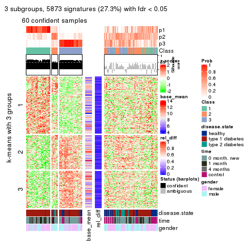
get_signatures(res, k = 4)
get_signatures(res, k = 5)
get_signatures(res, k = 6)

Signature heatmaps where rows are not scaled:
get_signatures(res, k = 2, scale_rows = FALSE)
get_signatures(res, k = 3, scale_rows = FALSE)
get_signatures(res, k = 4, scale_rows = FALSE)
get_signatures(res, k = 5, scale_rows = FALSE)
get_signatures(res, k = 6, scale_rows = FALSE)

Compare the overlap of signatures from different k:
compare_signatures(res)
get_signature() returns a data frame invisibly. TO get the list of signatures, the function
call should be assigned to a variable explicitly. In following code, if plot argument is set
to FALSE, no heatmap is plotted while only the differential analysis is performed.
# code only for demonstration
tb = get_signature(res, k = ..., plot = FALSE)
An example of the output of tb is:
#> which_row fdr mean_1 mean_2 scaled_mean_1 scaled_mean_2 km
#> 1 38 0.042760348 8.373488 9.131774 -0.5533452 0.5164555 1
#> 2 40 0.018707592 7.106213 8.469186 -0.6173731 0.5762149 1
#> 3 55 0.019134737 10.221463 11.207825 -0.6159697 0.5749050 1
#> 4 59 0.006059896 5.921854 7.869574 -0.6899429 0.6439467 1
#> 5 60 0.018055526 8.928898 10.211722 -0.6204761 0.5791110 1
#> 6 98 0.009384629 15.714769 14.887706 0.6635654 -0.6193277 2
...
The columns in tb are:
which_row: row indices corresponding to the input matrix.fdr: FDR for the differential test. mean_x: The mean value in group x.scaled_mean_x: The mean value in group x after rows are scaled.km: Row groups if k-means clustering is applied to rows.UMAP plot which shows how samples are separated.
dimension_reduction(res, k = 2, method = "UMAP")
dimension_reduction(res, k = 3, method = "UMAP")
dimension_reduction(res, k = 4, method = "UMAP")
dimension_reduction(res, k = 5, method = "UMAP")
dimension_reduction(res, k = 6, method = "UMAP")
Following heatmap shows how subgroups are split when increasing k:
collect_classes(res)
Test correlation between subgroups and known annotations. If the known annotation is numeric, one-way ANOVA test is applied, and if the known annotation is discrete, chi-squared contingency table test is applied.
test_to_known_factors(res)
#> n disease.state(p) time(p) gender(p) k
#> SD:skmeans 103 0.00236 1.07e-05 0.1837 2
#> SD:skmeans 60 0.00017 6.44e-04 0.0444 3
#> SD:skmeans 34 0.58243 1.41e-02 0.3705 4
#> SD:skmeans 23 1.00000 2.78e-02 0.5717 5
#> SD:skmeans 15 NA NA NA 6
If matrix rows can be associated to genes, consider to use GO_Enrichment(res,
...) to perform function enrichment for the signature genes.
The object with results only for a single top-value method and a single partition method can be extracted as:
res = res_list["SD", "pam"]
# you can also extract it by
# res = res_list["SD:pam"]
A summary of res and all the functions that can be applied to it:
res
#> A 'ConsensusPartition' object with k = 2, 3, 4, 5, 6.
#> On a matrix with 21512 rows and 117 columns.
#> Top rows (1000, 2000, 3000, 4000, 5000) are extracted by 'SD' method.
#> Subgroups are detected by 'pam' method.
#> Performed in total 1250 partitions by row resampling.
#> Best k for subgroups seems to be 2.
#>
#> Following methods can be applied to this 'ConsensusPartition' object:
#> [1] "cola_report" "collect_classes" "collect_plots"
#> [4] "collect_stats" "colnames" "compare_signatures"
#> [7] "consensus_heatmap" "dimension_reduction" "functional_enrichment"
#> [10] "get_anno_col" "get_anno" "get_classes"
#> [13] "get_consensus" "get_matrix" "get_membership"
#> [16] "get_param" "get_signatures" "get_stats"
#> [19] "is_best_k" "is_stable_k" "membership_heatmap"
#> [22] "ncol" "nrow" "plot_ecdf"
#> [25] "rownames" "select_partition_number" "show"
#> [28] "suggest_best_k" "test_to_known_factors"
collect_plots() function collects all the plots made from res for all k (number of partitions)
into one single page to provide an easy and fast comparison between different k.
collect_plots(res)
The plots are:
k and the heatmap of
predicted classes for each k.k.k.k.All the plots in panels can be made by individual functions and they are plotted later in this section.
select_partition_number() produces several plots showing different
statistics for choosing “optimized” k. There are following statistics:
k;k, the area increased is defined as \(A_k - A_{k-1}\).The detailed explanations of these statistics can be found in the cola vignette.
Generally speaking, lower PAC score, higher mean silhouette score or higher
concordance corresponds to better partition. Rand index and Jaccard index
measure how similar the current partition is compared to partition with k-1.
If they are too similar, we won't accept k is better than k-1.
select_partition_number(res)
The numeric values for all these statistics can be obtained by get_stats().
get_stats(res)
#> k 1-PAC mean_silhouette concordance area_increased Rand Jaccard
#> 2 2 0.135 0.655 0.800 0.4607 0.527 0.527
#> 3 3 0.210 0.600 0.755 0.3396 0.729 0.530
#> 4 4 0.385 0.640 0.799 0.1135 0.946 0.849
#> 5 5 0.394 0.610 0.792 0.0215 0.996 0.987
#> 6 6 0.397 0.607 0.781 0.0137 1.000 1.000
suggest_best_k() suggests the best \(k\) based on these statistics. The rules are as follows:
NA.suggest_best_k(res)
#> [1] 2
Following shows the table of the partitions (You need to click the show/hide
code output link to see it). The membership matrix (columns with name p*)
is inferred by
clue::cl_consensus()
function with the SE method. Basically the value in the membership matrix
represents the probability to belong to a certain group. The finall class
label for an item is determined with the group with highest probability it
belongs to.
In get_classes() function, the entropy is calculated from the membership
matrix and the silhouette score is calculated from the consensus matrix.
cbind(get_classes(res, k = 2), get_membership(res, k = 2))
#> class entropy silhouette p1 p2
#> GSM254177 2 0.1184 0.744 0.016 0.984
#> GSM254179 2 0.9661 0.552 0.392 0.608
#> GSM254180 1 0.7950 0.751 0.760 0.240
#> GSM254182 2 0.9833 0.302 0.424 0.576
#> GSM254183 2 0.8267 0.551 0.260 0.740
#> GSM254277 1 0.9710 0.567 0.600 0.400
#> GSM254278 2 0.4161 0.746 0.084 0.916
#> GSM254281 1 0.9608 0.614 0.616 0.384
#> GSM254282 1 0.5946 0.765 0.856 0.144
#> GSM254284 1 0.2603 0.775 0.956 0.044
#> GSM254286 1 0.9580 0.518 0.620 0.380
#> GSM254290 1 0.9129 0.667 0.672 0.328
#> GSM254291 2 0.9552 0.425 0.376 0.624
#> GSM254293 1 0.9866 0.533 0.568 0.432
#> GSM254178 1 0.1184 0.757 0.984 0.016
#> GSM254181 2 0.8763 0.536 0.296 0.704
#> GSM254279 2 0.9580 0.517 0.380 0.620
#> GSM254280 2 0.9896 0.438 0.440 0.560
#> GSM254283 1 0.0672 0.759 0.992 0.008
#> GSM254285 2 0.1633 0.746 0.024 0.976
#> GSM254287 1 0.6148 0.789 0.848 0.152
#> GSM254288 1 0.7056 0.719 0.808 0.192
#> GSM254289 2 0.6712 0.687 0.176 0.824
#> GSM254292 1 0.5842 0.789 0.860 0.140
#> GSM254184 2 0.2423 0.742 0.040 0.960
#> GSM254185 2 0.5178 0.723 0.116 0.884
#> GSM254187 2 0.0938 0.743 0.012 0.988
#> GSM254189 2 0.2236 0.743 0.036 0.964
#> GSM254190 2 0.9491 0.533 0.368 0.632
#> GSM254191 2 0.9248 0.624 0.340 0.660
#> GSM254192 2 0.6343 0.733 0.160 0.840
#> GSM254193 1 0.9170 0.661 0.668 0.332
#> GSM254199 1 0.9993 0.365 0.516 0.484
#> GSM254203 1 0.0672 0.761 0.992 0.008
#> GSM254206 1 0.5059 0.781 0.888 0.112
#> GSM254210 2 0.9754 0.295 0.408 0.592
#> GSM254211 1 0.9993 0.267 0.516 0.484
#> GSM254215 2 0.1184 0.742 0.016 0.984
#> GSM254218 2 0.3584 0.737 0.068 0.932
#> GSM254230 1 0.2948 0.777 0.948 0.052
#> GSM254236 2 0.0000 0.741 0.000 1.000
#> GSM254244 1 0.0376 0.759 0.996 0.004
#> GSM254247 2 0.9323 0.578 0.348 0.652
#> GSM254248 1 0.9552 0.605 0.624 0.376
#> GSM254254 2 0.2423 0.742 0.040 0.960
#> GSM254257 2 0.5408 0.711 0.124 0.876
#> GSM254258 2 0.1843 0.742 0.028 0.972
#> GSM254261 2 0.7219 0.652 0.200 0.800
#> GSM254264 2 0.0376 0.741 0.004 0.996
#> GSM254186 2 0.6048 0.711 0.148 0.852
#> GSM254188 2 0.0672 0.742 0.008 0.992
#> GSM254194 2 0.9323 0.609 0.348 0.652
#> GSM254195 2 0.9710 0.514 0.400 0.600
#> GSM254196 1 0.9977 -0.294 0.528 0.472
#> GSM254200 2 0.0376 0.741 0.004 0.996
#> GSM254209 2 0.8081 0.584 0.248 0.752
#> GSM254214 1 0.9170 0.668 0.668 0.332
#> GSM254221 1 0.7299 0.721 0.796 0.204
#> GSM254224 1 0.6712 0.773 0.824 0.176
#> GSM254227 2 0.8661 0.654 0.288 0.712
#> GSM254233 1 0.1633 0.757 0.976 0.024
#> GSM254235 1 0.0672 0.759 0.992 0.008
#> GSM254239 1 0.0938 0.758 0.988 0.012
#> GSM254241 1 0.0376 0.755 0.996 0.004
#> GSM254251 2 0.6801 0.697 0.180 0.820
#> GSM254262 2 0.1414 0.745 0.020 0.980
#> GSM254263 2 0.6247 0.706 0.156 0.844
#> GSM254197 1 0.7299 0.755 0.796 0.204
#> GSM254201 1 0.9635 0.595 0.612 0.388
#> GSM254204 1 0.0938 0.762 0.988 0.012
#> GSM254216 1 0.3879 0.782 0.924 0.076
#> GSM254228 1 0.1633 0.766 0.976 0.024
#> GSM254242 1 0.2236 0.768 0.964 0.036
#> GSM254245 1 0.6148 0.763 0.848 0.152
#> GSM254252 1 0.9286 0.664 0.656 0.344
#> GSM254255 1 0.8499 0.716 0.724 0.276
#> GSM254259 1 0.6148 0.778 0.848 0.152
#> GSM254207 1 0.6438 0.781 0.836 0.164
#> GSM254212 2 0.9977 -0.238 0.472 0.528
#> GSM254219 1 0.4939 0.788 0.892 0.108
#> GSM254222 1 0.5294 0.773 0.880 0.120
#> GSM254225 2 0.9522 0.254 0.372 0.628
#> GSM254231 1 0.9795 0.564 0.584 0.416
#> GSM254234 1 0.5294 0.776 0.880 0.120
#> GSM254237 1 0.9833 0.363 0.576 0.424
#> GSM254249 2 0.9896 0.212 0.440 0.560
#> GSM254198 1 0.9248 0.667 0.660 0.340
#> GSM254202 1 0.3114 0.771 0.944 0.056
#> GSM254205 1 0.9358 0.641 0.648 0.352
#> GSM254217 1 0.6343 0.770 0.840 0.160
#> GSM254229 1 0.2948 0.775 0.948 0.052
#> GSM254243 1 0.6712 0.765 0.824 0.176
#> GSM254246 1 0.4161 0.781 0.916 0.084
#> GSM254253 1 0.8813 0.708 0.700 0.300
#> GSM254256 1 0.9044 0.683 0.680 0.320
#> GSM254260 1 0.2948 0.774 0.948 0.052
#> GSM254208 1 0.8443 0.719 0.728 0.272
#> GSM254213 1 0.4939 0.770 0.892 0.108
#> GSM254220 1 0.4939 0.791 0.892 0.108
#> GSM254223 1 0.0376 0.757 0.996 0.004
#> GSM254226 1 0.9323 0.398 0.652 0.348
#> GSM254232 1 0.7219 0.770 0.800 0.200
#> GSM254238 1 0.9286 0.657 0.656 0.344
#> GSM254240 1 0.2423 0.769 0.960 0.040
#> GSM254250 1 0.2236 0.767 0.964 0.036
#> GSM254268 2 0.2043 0.743 0.032 0.968
#> GSM254269 1 0.9491 0.643 0.632 0.368
#> GSM254270 1 0.7950 0.743 0.760 0.240
#> GSM254272 1 0.8207 0.724 0.744 0.256
#> GSM254273 1 0.9460 0.636 0.636 0.364
#> GSM254274 2 0.9286 0.337 0.344 0.656
#> GSM254265 1 0.4298 0.790 0.912 0.088
#> GSM254266 1 0.6623 0.784 0.828 0.172
#> GSM254267 1 0.4161 0.786 0.916 0.084
#> GSM254271 2 0.9522 0.216 0.372 0.628
#> GSM254275 1 0.4161 0.789 0.916 0.084
#> GSM254276 1 0.6343 0.710 0.840 0.160
cbind(get_classes(res, k = 3), get_membership(res, k = 3))
#> class entropy silhouette p1 p2 p3
#> GSM254177 3 0.6398 0.3358 0.004 0.416 0.580
#> GSM254179 3 0.5404 0.7039 0.256 0.004 0.740
#> GSM254180 1 0.6448 0.3832 0.636 0.352 0.012
#> GSM254182 3 0.7786 0.2718 0.332 0.068 0.600
#> GSM254183 2 0.5731 0.7116 0.088 0.804 0.108
#> GSM254277 2 0.7622 0.5843 0.332 0.608 0.060
#> GSM254278 3 0.4891 0.7742 0.040 0.124 0.836
#> GSM254281 2 0.6717 0.5680 0.352 0.628 0.020
#> GSM254282 1 0.4805 0.6318 0.812 0.176 0.012
#> GSM254284 1 0.2681 0.7357 0.932 0.028 0.040
#> GSM254286 1 0.9111 0.2943 0.548 0.212 0.240
#> GSM254290 2 0.5560 0.6633 0.300 0.700 0.000
#> GSM254291 2 0.9560 0.5069 0.260 0.484 0.256
#> GSM254293 2 0.4749 0.7261 0.172 0.816 0.012
#> GSM254178 1 0.6892 0.5985 0.736 0.152 0.112
#> GSM254181 2 0.9442 0.4705 0.216 0.496 0.288
#> GSM254279 3 0.3715 0.7683 0.128 0.004 0.868
#> GSM254280 3 0.6192 0.4890 0.420 0.000 0.580
#> GSM254283 1 0.0000 0.7263 1.000 0.000 0.000
#> GSM254285 3 0.4521 0.7514 0.004 0.180 0.816
#> GSM254287 1 0.4750 0.6375 0.784 0.216 0.000
#> GSM254288 1 0.6111 0.0510 0.604 0.396 0.000
#> GSM254289 2 0.6470 0.6933 0.092 0.760 0.148
#> GSM254292 1 0.5346 0.6923 0.808 0.152 0.040
#> GSM254184 3 0.2356 0.7716 0.000 0.072 0.928
#> GSM254185 3 0.4413 0.7768 0.104 0.036 0.860
#> GSM254187 3 0.3851 0.7706 0.004 0.136 0.860
#> GSM254189 3 0.2200 0.7671 0.004 0.056 0.940
#> GSM254190 3 0.3682 0.6822 0.008 0.116 0.876
#> GSM254191 3 0.6348 0.6915 0.212 0.048 0.740
#> GSM254192 3 0.8186 0.4658 0.104 0.292 0.604
#> GSM254193 2 0.8976 0.1869 0.316 0.532 0.152
#> GSM254199 2 0.8233 0.5203 0.264 0.616 0.120
#> GSM254203 1 0.6990 0.5910 0.728 0.164 0.108
#> GSM254206 1 0.6025 0.6862 0.784 0.076 0.140
#> GSM254210 2 0.6585 0.7277 0.200 0.736 0.064
#> GSM254211 2 0.9631 0.1263 0.288 0.468 0.244
#> GSM254215 3 0.3116 0.7749 0.000 0.108 0.892
#> GSM254218 2 0.4353 0.6188 0.008 0.836 0.156
#> GSM254230 1 0.8042 0.5986 0.652 0.200 0.148
#> GSM254236 3 0.4062 0.7597 0.000 0.164 0.836
#> GSM254244 1 0.3966 0.7123 0.876 0.024 0.100
#> GSM254247 2 0.9672 0.3061 0.240 0.456 0.304
#> GSM254248 2 0.4749 0.7262 0.172 0.816 0.012
#> GSM254254 2 0.4291 0.6215 0.008 0.840 0.152
#> GSM254257 2 0.5304 0.7039 0.068 0.824 0.108
#> GSM254258 3 0.3038 0.7744 0.000 0.104 0.896
#> GSM254261 2 0.5426 0.7240 0.092 0.820 0.088
#> GSM254264 3 0.3879 0.7660 0.000 0.152 0.848
#> GSM254186 3 0.4915 0.7727 0.132 0.036 0.832
#> GSM254188 3 0.3816 0.7645 0.000 0.148 0.852
#> GSM254194 3 0.6379 0.6998 0.256 0.032 0.712
#> GSM254195 3 0.6869 0.6724 0.264 0.048 0.688
#> GSM254196 3 0.6275 0.6010 0.348 0.008 0.644
#> GSM254200 3 0.3619 0.7709 0.000 0.136 0.864
#> GSM254209 2 0.5538 0.7373 0.132 0.808 0.060
#> GSM254214 2 0.6825 0.2348 0.488 0.500 0.012
#> GSM254221 1 0.7368 0.1744 0.604 0.352 0.044
#> GSM254224 1 0.5560 0.4593 0.700 0.300 0.000
#> GSM254227 3 0.9553 0.3160 0.272 0.244 0.484
#> GSM254233 1 0.0000 0.7263 1.000 0.000 0.000
#> GSM254235 1 0.4269 0.7048 0.872 0.052 0.076
#> GSM254239 1 0.0747 0.7304 0.984 0.000 0.016
#> GSM254241 1 0.1267 0.7308 0.972 0.004 0.024
#> GSM254251 3 0.5180 0.7622 0.156 0.032 0.812
#> GSM254262 3 0.6434 0.5010 0.008 0.380 0.612
#> GSM254263 3 0.4136 0.7707 0.116 0.020 0.864
#> GSM254197 1 0.8517 0.5200 0.584 0.288 0.128
#> GSM254201 2 0.6341 0.7002 0.252 0.716 0.032
#> GSM254204 1 0.0475 0.7299 0.992 0.004 0.004
#> GSM254216 1 0.4095 0.7312 0.880 0.056 0.064
#> GSM254228 1 0.7710 0.5746 0.680 0.176 0.144
#> GSM254242 1 0.0424 0.7294 0.992 0.008 0.000
#> GSM254245 1 0.5965 0.6918 0.792 0.108 0.100
#> GSM254252 2 0.5291 0.6895 0.268 0.732 0.000
#> GSM254255 2 0.6235 0.4493 0.436 0.564 0.000
#> GSM254259 1 0.8007 0.5630 0.640 0.244 0.116
#> GSM254207 1 0.5835 0.6718 0.784 0.164 0.052
#> GSM254212 2 0.5094 0.7365 0.136 0.824 0.040
#> GSM254219 1 0.3690 0.7296 0.884 0.100 0.016
#> GSM254222 1 0.3038 0.7012 0.896 0.104 0.000
#> GSM254225 2 0.5719 0.7389 0.156 0.792 0.052
#> GSM254231 2 0.6684 0.6525 0.292 0.676 0.032
#> GSM254234 1 0.3482 0.6902 0.872 0.128 0.000
#> GSM254237 1 0.9254 -0.0264 0.496 0.332 0.172
#> GSM254249 2 0.8716 0.6247 0.240 0.588 0.172
#> GSM254198 2 0.5810 0.6147 0.336 0.664 0.000
#> GSM254202 1 0.2793 0.7382 0.928 0.028 0.044
#> GSM254205 2 0.5992 0.6988 0.268 0.716 0.016
#> GSM254217 1 0.5492 0.6998 0.816 0.104 0.080
#> GSM254229 1 0.0892 0.7338 0.980 0.020 0.000
#> GSM254243 1 0.5008 0.6709 0.804 0.180 0.016
#> GSM254246 1 0.7975 0.5631 0.660 0.180 0.160
#> GSM254253 1 0.6451 0.3114 0.608 0.384 0.008
#> GSM254256 1 0.8158 0.1999 0.556 0.364 0.080
#> GSM254260 1 0.1031 0.7288 0.976 0.024 0.000
#> GSM254208 1 0.8028 0.1672 0.560 0.368 0.072
#> GSM254213 1 0.4324 0.6868 0.860 0.112 0.028
#> GSM254220 1 0.3771 0.7292 0.876 0.112 0.012
#> GSM254223 1 0.0000 0.7263 1.000 0.000 0.000
#> GSM254226 1 0.8565 0.2043 0.592 0.264 0.144
#> GSM254232 1 0.5431 0.5527 0.716 0.284 0.000
#> GSM254238 2 0.6154 0.4560 0.408 0.592 0.000
#> GSM254240 1 0.0747 0.7321 0.984 0.016 0.000
#> GSM254250 1 0.1620 0.7322 0.964 0.012 0.024
#> GSM254268 2 0.4291 0.6210 0.008 0.840 0.152
#> GSM254269 2 0.7240 0.3660 0.432 0.540 0.028
#> GSM254270 1 0.7648 0.1852 0.552 0.400 0.048
#> GSM254272 1 0.6302 -0.1815 0.520 0.480 0.000
#> GSM254273 2 0.6155 0.6333 0.328 0.664 0.008
#> GSM254274 2 0.5331 0.7279 0.100 0.824 0.076
#> GSM254265 1 0.2866 0.7354 0.916 0.076 0.008
#> GSM254266 1 0.5901 0.6640 0.776 0.176 0.048
#> GSM254267 1 0.3532 0.7182 0.884 0.108 0.008
#> GSM254271 2 0.5810 0.7402 0.132 0.796 0.072
#> GSM254275 1 0.3771 0.7278 0.876 0.112 0.012
#> GSM254276 1 0.5235 0.6450 0.812 0.036 0.152
cbind(get_classes(res, k = 4), get_membership(res, k = 4))
#> class entropy silhouette p1 p2 p3 p4
#> GSM254177 3 0.4699 0.4734 0.000 0.004 0.676 0.320
#> GSM254179 3 0.4126 0.6988 0.004 0.216 0.776 0.004
#> GSM254180 2 0.5412 0.4905 0.004 0.624 0.016 0.356
#> GSM254182 3 0.8088 0.2267 0.132 0.336 0.488 0.044
#> GSM254183 4 0.2156 0.7402 0.004 0.008 0.060 0.928
#> GSM254277 4 0.5673 0.5425 0.000 0.288 0.052 0.660
#> GSM254278 3 0.2198 0.7641 0.000 0.008 0.920 0.072
#> GSM254281 4 0.5134 0.5036 0.004 0.320 0.012 0.664
#> GSM254282 2 0.3978 0.6774 0.000 0.796 0.012 0.192
#> GSM254284 2 0.2310 0.7602 0.004 0.928 0.040 0.028
#> GSM254286 2 0.7434 0.3740 0.000 0.512 0.256 0.232
#> GSM254290 4 0.4040 0.6495 0.000 0.248 0.000 0.752
#> GSM254291 4 0.7495 0.4730 0.004 0.236 0.232 0.528
#> GSM254293 4 0.1474 0.7652 0.000 0.052 0.000 0.948
#> GSM254178 1 0.0817 0.8796 0.976 0.024 0.000 0.000
#> GSM254181 4 0.7537 0.3369 0.000 0.196 0.348 0.456
#> GSM254279 3 0.1474 0.7737 0.000 0.052 0.948 0.000
#> GSM254280 3 0.4916 0.4359 0.000 0.424 0.576 0.000
#> GSM254283 2 0.0000 0.7509 0.000 1.000 0.000 0.000
#> GSM254285 3 0.3123 0.7399 0.000 0.000 0.844 0.156
#> GSM254287 2 0.3801 0.6924 0.000 0.780 0.000 0.220
#> GSM254288 2 0.4843 0.2464 0.000 0.604 0.000 0.396
#> GSM254289 4 0.3697 0.7517 0.000 0.048 0.100 0.852
#> GSM254292 2 0.4586 0.7327 0.004 0.796 0.048 0.152
#> GSM254184 3 0.0592 0.7632 0.016 0.000 0.984 0.000
#> GSM254185 3 0.1452 0.7727 0.000 0.036 0.956 0.008
#> GSM254187 3 0.1398 0.7771 0.000 0.004 0.956 0.040
#> GSM254189 3 0.1936 0.7691 0.028 0.000 0.940 0.032
#> GSM254190 3 0.4920 0.4253 0.368 0.004 0.628 0.000
#> GSM254191 3 0.4950 0.7011 0.020 0.148 0.788 0.044
#> GSM254192 3 0.6014 0.4948 0.004 0.060 0.644 0.292
#> GSM254193 1 0.6140 0.6658 0.724 0.132 0.028 0.116
#> GSM254199 4 0.7293 0.5151 0.180 0.224 0.012 0.584
#> GSM254203 1 0.0469 0.8806 0.988 0.012 0.000 0.000
#> GSM254206 2 0.5337 0.6591 0.200 0.744 0.020 0.036
#> GSM254210 4 0.3770 0.7565 0.004 0.104 0.040 0.852
#> GSM254211 1 0.8557 0.4608 0.532 0.180 0.096 0.192
#> GSM254215 3 0.1256 0.7718 0.008 0.000 0.964 0.028
#> GSM254218 4 0.1792 0.7440 0.000 0.000 0.068 0.932
#> GSM254230 2 0.7201 0.1526 0.424 0.484 0.044 0.048
#> GSM254236 3 0.2011 0.7717 0.000 0.000 0.920 0.080
#> GSM254244 2 0.4012 0.6804 0.204 0.788 0.004 0.004
#> GSM254247 4 0.7984 0.3079 0.012 0.228 0.296 0.464
#> GSM254248 4 0.1510 0.7580 0.016 0.028 0.000 0.956
#> GSM254254 4 0.0188 0.7444 0.000 0.000 0.004 0.996
#> GSM254257 4 0.1697 0.7584 0.004 0.016 0.028 0.952
#> GSM254258 3 0.0336 0.7668 0.000 0.000 0.992 0.008
#> GSM254261 4 0.0859 0.7500 0.004 0.008 0.008 0.980
#> GSM254264 3 0.1716 0.7737 0.000 0.000 0.936 0.064
#> GSM254186 3 0.3048 0.7637 0.000 0.108 0.876 0.016
#> GSM254188 3 0.1389 0.7717 0.000 0.000 0.952 0.048
#> GSM254194 3 0.4781 0.7028 0.000 0.212 0.752 0.036
#> GSM254195 3 0.6012 0.6481 0.016 0.256 0.676 0.052
#> GSM254196 3 0.5402 0.5881 0.016 0.324 0.652 0.008
#> GSM254200 3 0.2197 0.7728 0.004 0.000 0.916 0.080
#> GSM254209 4 0.1610 0.7537 0.000 0.016 0.032 0.952
#> GSM254214 4 0.5244 0.2213 0.000 0.436 0.008 0.556
#> GSM254221 2 0.5947 0.2385 0.000 0.572 0.044 0.384
#> GSM254224 2 0.4406 0.5574 0.000 0.700 0.000 0.300
#> GSM254227 3 0.8137 0.3348 0.020 0.240 0.472 0.268
#> GSM254233 2 0.0000 0.7509 0.000 1.000 0.000 0.000
#> GSM254235 2 0.4331 0.5827 0.288 0.712 0.000 0.000
#> GSM254239 2 0.0817 0.7553 0.000 0.976 0.024 0.000
#> GSM254241 2 0.0817 0.7553 0.024 0.976 0.000 0.000
#> GSM254251 3 0.3219 0.7624 0.000 0.112 0.868 0.020
#> GSM254262 3 0.5630 0.3396 0.016 0.004 0.548 0.432
#> GSM254263 3 0.1796 0.7702 0.016 0.032 0.948 0.004
#> GSM254197 1 0.0804 0.8781 0.980 0.008 0.000 0.012
#> GSM254201 4 0.4362 0.7435 0.008 0.136 0.040 0.816
#> GSM254204 2 0.0376 0.7544 0.004 0.992 0.000 0.004
#> GSM254216 2 0.4167 0.7524 0.032 0.848 0.036 0.084
#> GSM254228 1 0.0336 0.8809 0.992 0.008 0.000 0.000
#> GSM254242 2 0.0524 0.7557 0.000 0.988 0.004 0.008
#> GSM254245 2 0.5297 0.7173 0.108 0.788 0.044 0.060
#> GSM254252 4 0.3172 0.7354 0.000 0.160 0.000 0.840
#> GSM254255 4 0.5085 0.4363 0.000 0.376 0.008 0.616
#> GSM254259 1 0.1356 0.8748 0.960 0.032 0.008 0.000
#> GSM254207 2 0.4713 0.7168 0.000 0.776 0.052 0.172
#> GSM254212 4 0.0707 0.7553 0.000 0.020 0.000 0.980
#> GSM254219 2 0.3342 0.7590 0.000 0.868 0.032 0.100
#> GSM254222 2 0.2469 0.7408 0.000 0.892 0.000 0.108
#> GSM254225 4 0.3182 0.7633 0.000 0.096 0.028 0.876
#> GSM254231 4 0.3791 0.6928 0.000 0.200 0.004 0.796
#> GSM254234 2 0.2760 0.7338 0.000 0.872 0.000 0.128
#> GSM254237 2 0.7363 0.1620 0.000 0.476 0.168 0.356
#> GSM254249 4 0.6664 0.5903 0.000 0.232 0.152 0.616
#> GSM254198 4 0.4283 0.6415 0.000 0.256 0.004 0.740
#> GSM254202 2 0.2483 0.7639 0.000 0.916 0.052 0.032
#> GSM254205 4 0.3958 0.7393 0.000 0.160 0.024 0.816
#> GSM254217 2 0.4939 0.7303 0.028 0.804 0.060 0.108
#> GSM254229 2 0.0895 0.7598 0.000 0.976 0.004 0.020
#> GSM254243 2 0.4285 0.7182 0.040 0.804 0.000 0.156
#> GSM254246 1 0.0336 0.8809 0.992 0.008 0.000 0.000
#> GSM254253 2 0.5398 0.3917 0.000 0.580 0.016 0.404
#> GSM254256 2 0.6979 0.3923 0.004 0.556 0.120 0.320
#> GSM254260 2 0.0817 0.7561 0.000 0.976 0.000 0.024
#> GSM254208 2 0.7163 0.3212 0.004 0.528 0.132 0.336
#> GSM254213 2 0.3523 0.7320 0.000 0.856 0.032 0.112
#> GSM254220 2 0.3436 0.7600 0.016 0.864 0.008 0.112
#> GSM254223 2 0.0188 0.7522 0.000 0.996 0.004 0.000
#> GSM254226 2 0.6890 0.3510 0.000 0.580 0.152 0.268
#> GSM254232 2 0.4382 0.6109 0.000 0.704 0.000 0.296
#> GSM254238 4 0.4855 0.3069 0.000 0.400 0.000 0.600
#> GSM254240 2 0.0592 0.7570 0.000 0.984 0.000 0.016
#> GSM254250 2 0.1305 0.7562 0.036 0.960 0.000 0.004
#> GSM254268 4 0.0592 0.7451 0.000 0.000 0.016 0.984
#> GSM254269 4 0.5498 0.2746 0.000 0.404 0.020 0.576
#> GSM254270 2 0.6646 0.1584 0.016 0.492 0.048 0.444
#> GSM254272 2 0.4996 0.0397 0.000 0.516 0.000 0.484
#> GSM254273 4 0.3945 0.6911 0.000 0.216 0.004 0.780
#> GSM254274 4 0.1059 0.7530 0.000 0.012 0.016 0.972
#> GSM254265 2 0.2480 0.7652 0.000 0.904 0.008 0.088
#> GSM254266 2 0.4941 0.7110 0.004 0.764 0.048 0.184
#> GSM254267 2 0.3048 0.7553 0.000 0.876 0.016 0.108
#> GSM254271 4 0.2546 0.7699 0.000 0.060 0.028 0.912
#> GSM254275 2 0.3494 0.7591 0.008 0.860 0.016 0.116
#> GSM254276 2 0.4370 0.6828 0.000 0.800 0.156 0.044
cbind(get_classes(res, k = 5), get_membership(res, k = 5))
#> class entropy silhouette p1 p2 p3 p4 p5
#> GSM254177 3 0.4156 0.4353 0.000 0.288 0.700 0.004 0.008
#> GSM254179 3 0.4347 0.6210 0.000 0.004 0.744 0.212 0.040
#> GSM254180 4 0.5393 0.5169 0.000 0.312 0.000 0.608 0.080
#> GSM254182 5 0.5103 0.0000 0.080 0.000 0.096 0.068 0.756
#> GSM254183 2 0.2362 0.7097 0.000 0.912 0.040 0.008 0.040
#> GSM254277 2 0.5727 0.5189 0.000 0.624 0.028 0.288 0.060
#> GSM254278 3 0.2521 0.7283 0.000 0.068 0.900 0.008 0.024
#> GSM254281 2 0.4539 0.4979 0.000 0.660 0.012 0.320 0.008
#> GSM254282 4 0.3899 0.6742 0.000 0.192 0.008 0.780 0.020
#> GSM254284 4 0.2364 0.7531 0.000 0.020 0.008 0.908 0.064
#> GSM254286 4 0.7025 0.3975 0.000 0.196 0.256 0.512 0.036
#> GSM254290 2 0.3635 0.6483 0.000 0.748 0.000 0.248 0.004
#> GSM254291 2 0.6857 0.4664 0.000 0.520 0.224 0.232 0.024
#> GSM254293 2 0.1270 0.7421 0.000 0.948 0.000 0.052 0.000
#> GSM254178 1 0.0693 0.7738 0.980 0.000 0.000 0.012 0.008
#> GSM254181 2 0.7093 0.3397 0.000 0.444 0.340 0.188 0.028
#> GSM254279 3 0.2074 0.7429 0.000 0.000 0.920 0.044 0.036
#> GSM254280 3 0.4375 0.3458 0.000 0.000 0.576 0.420 0.004
#> GSM254283 4 0.0000 0.7438 0.000 0.000 0.000 1.000 0.000
#> GSM254285 3 0.2763 0.6975 0.000 0.148 0.848 0.000 0.004
#> GSM254287 4 0.3274 0.6904 0.000 0.220 0.000 0.780 0.000
#> GSM254288 4 0.4537 0.2172 0.000 0.396 0.000 0.592 0.012
#> GSM254289 2 0.3523 0.7166 0.000 0.844 0.096 0.048 0.012
#> GSM254292 4 0.4657 0.7313 0.000 0.140 0.048 0.772 0.040
#> GSM254184 3 0.0510 0.7390 0.000 0.000 0.984 0.000 0.016
#> GSM254185 3 0.0854 0.7421 0.000 0.004 0.976 0.008 0.012
#> GSM254187 3 0.1668 0.7458 0.000 0.028 0.940 0.000 0.032
#> GSM254189 3 0.3209 0.7118 0.004 0.028 0.848 0.000 0.120
#> GSM254190 3 0.4944 0.3561 0.344 0.000 0.620 0.004 0.032
#> GSM254191 3 0.5124 0.6023 0.000 0.044 0.744 0.136 0.076
#> GSM254192 3 0.6482 0.3740 0.000 0.280 0.580 0.060 0.080
#> GSM254193 1 0.6480 0.3158 0.664 0.112 0.012 0.124 0.088
#> GSM254199 2 0.6448 0.5259 0.184 0.580 0.008 0.220 0.008
#> GSM254203 1 0.0798 0.7706 0.976 0.000 0.008 0.000 0.016
#> GSM254206 4 0.5361 0.6596 0.136 0.036 0.012 0.740 0.076
#> GSM254210 2 0.3867 0.7262 0.000 0.824 0.012 0.088 0.076
#> GSM254211 1 0.8139 0.0555 0.500 0.188 0.100 0.180 0.032
#> GSM254215 3 0.0693 0.7423 0.000 0.012 0.980 0.000 0.008
#> GSM254218 2 0.2438 0.7084 0.000 0.900 0.060 0.000 0.040
#> GSM254230 4 0.6705 0.1810 0.400 0.048 0.008 0.480 0.064
#> GSM254236 3 0.1410 0.7426 0.000 0.060 0.940 0.000 0.000
#> GSM254244 4 0.4122 0.6751 0.176 0.004 0.004 0.780 0.036
#> GSM254247 2 0.7325 0.3014 0.012 0.460 0.292 0.216 0.020
#> GSM254248 2 0.1483 0.7326 0.012 0.952 0.000 0.028 0.008
#> GSM254254 2 0.0162 0.7153 0.000 0.996 0.004 0.000 0.000
#> GSM254257 2 0.1869 0.7285 0.000 0.936 0.012 0.016 0.036
#> GSM254258 3 0.0865 0.7411 0.000 0.004 0.972 0.000 0.024
#> GSM254261 2 0.1492 0.7208 0.000 0.948 0.004 0.008 0.040
#> GSM254264 3 0.1195 0.7444 0.000 0.028 0.960 0.000 0.012
#> GSM254186 3 0.2856 0.7245 0.000 0.008 0.872 0.104 0.016
#> GSM254188 3 0.0510 0.7413 0.000 0.016 0.984 0.000 0.000
#> GSM254194 3 0.4537 0.6216 0.000 0.036 0.744 0.204 0.016
#> GSM254195 3 0.5390 0.5607 0.004 0.040 0.680 0.244 0.032
#> GSM254196 3 0.4755 0.4834 0.000 0.004 0.664 0.300 0.032
#> GSM254200 3 0.1943 0.7441 0.000 0.056 0.924 0.000 0.020
#> GSM254209 2 0.1386 0.7241 0.000 0.952 0.032 0.016 0.000
#> GSM254214 2 0.4610 0.2323 0.000 0.556 0.012 0.432 0.000
#> GSM254221 4 0.5602 0.2241 0.000 0.380 0.024 0.560 0.036
#> GSM254224 4 0.4046 0.5526 0.000 0.296 0.000 0.696 0.008
#> GSM254227 3 0.7355 0.2713 0.000 0.256 0.480 0.212 0.052
#> GSM254233 4 0.0162 0.7451 0.000 0.000 0.000 0.996 0.004
#> GSM254235 4 0.4170 0.5701 0.272 0.000 0.004 0.712 0.012
#> GSM254239 4 0.0794 0.7494 0.000 0.000 0.000 0.972 0.028
#> GSM254241 4 0.0703 0.7481 0.024 0.000 0.000 0.976 0.000
#> GSM254251 3 0.2956 0.7288 0.000 0.020 0.872 0.096 0.012
#> GSM254262 3 0.5250 0.3117 0.000 0.404 0.552 0.004 0.040
#> GSM254263 3 0.0451 0.7393 0.000 0.000 0.988 0.008 0.004
#> GSM254197 1 0.0162 0.7802 0.996 0.000 0.000 0.000 0.004
#> GSM254201 2 0.4430 0.7238 0.000 0.784 0.024 0.136 0.056
#> GSM254204 4 0.0671 0.7497 0.000 0.004 0.000 0.980 0.016
#> GSM254216 4 0.3660 0.7226 0.000 0.016 0.008 0.800 0.176
#> GSM254228 1 0.0000 0.7805 1.000 0.000 0.000 0.000 0.000
#> GSM254242 4 0.0486 0.7480 0.000 0.004 0.004 0.988 0.004
#> GSM254245 4 0.4677 0.7203 0.056 0.036 0.008 0.788 0.112
#> GSM254252 2 0.2732 0.7328 0.000 0.840 0.000 0.160 0.000
#> GSM254255 2 0.5252 0.4097 0.000 0.580 0.000 0.364 0.056
#> GSM254259 1 0.0510 0.7732 0.984 0.000 0.000 0.016 0.000
#> GSM254207 4 0.4905 0.7235 0.000 0.144 0.044 0.756 0.056
#> GSM254212 2 0.0898 0.7279 0.000 0.972 0.000 0.020 0.008
#> GSM254219 4 0.3421 0.7578 0.000 0.080 0.000 0.840 0.080
#> GSM254222 4 0.2127 0.7371 0.000 0.108 0.000 0.892 0.000
#> GSM254225 2 0.2905 0.7465 0.000 0.868 0.036 0.096 0.000
#> GSM254231 2 0.3266 0.6909 0.000 0.796 0.004 0.200 0.000
#> GSM254234 4 0.2660 0.7308 0.000 0.128 0.000 0.864 0.008
#> GSM254237 4 0.6342 0.1586 0.000 0.356 0.168 0.476 0.000
#> GSM254249 2 0.6504 0.5787 0.000 0.600 0.148 0.212 0.040
#> GSM254198 2 0.4070 0.6345 0.000 0.728 0.004 0.256 0.012
#> GSM254202 4 0.2541 0.7553 0.000 0.012 0.020 0.900 0.068
#> GSM254205 2 0.3512 0.7369 0.000 0.816 0.012 0.160 0.012
#> GSM254217 4 0.4458 0.7365 0.016 0.072 0.012 0.800 0.100
#> GSM254229 4 0.0968 0.7534 0.000 0.012 0.004 0.972 0.012
#> GSM254243 4 0.3838 0.7273 0.044 0.148 0.000 0.804 0.004
#> GSM254246 1 0.0000 0.7805 1.000 0.000 0.000 0.000 0.000
#> GSM254253 4 0.5196 0.4189 0.000 0.380 0.004 0.576 0.040
#> GSM254256 4 0.6504 0.4303 0.000 0.296 0.116 0.556 0.032
#> GSM254260 4 0.0992 0.7545 0.000 0.024 0.000 0.968 0.008
#> GSM254208 4 0.6575 0.3385 0.000 0.328 0.112 0.528 0.032
#> GSM254213 4 0.3035 0.7299 0.000 0.112 0.032 0.856 0.000
#> GSM254220 4 0.4679 0.7163 0.016 0.088 0.000 0.764 0.132
#> GSM254223 4 0.0880 0.7491 0.000 0.000 0.000 0.968 0.032
#> GSM254226 4 0.6116 0.3308 0.000 0.268 0.156 0.572 0.004
#> GSM254232 4 0.4161 0.6298 0.000 0.280 0.000 0.704 0.016
#> GSM254238 2 0.4182 0.3107 0.000 0.600 0.000 0.400 0.000
#> GSM254240 4 0.0510 0.7513 0.000 0.016 0.000 0.984 0.000
#> GSM254250 4 0.2075 0.7462 0.032 0.004 0.000 0.924 0.040
#> GSM254268 2 0.0510 0.7157 0.000 0.984 0.016 0.000 0.000
#> GSM254269 2 0.4736 0.2725 0.000 0.576 0.020 0.404 0.000
#> GSM254270 4 0.6412 0.2558 0.004 0.376 0.008 0.492 0.120
#> GSM254272 4 0.4559 0.0263 0.000 0.480 0.000 0.512 0.008
#> GSM254273 2 0.3783 0.6861 0.000 0.768 0.004 0.216 0.012
#> GSM254274 2 0.0912 0.7246 0.000 0.972 0.016 0.012 0.000
#> GSM254265 4 0.2913 0.7643 0.000 0.080 0.004 0.876 0.040
#> GSM254266 4 0.4872 0.7138 0.000 0.164 0.020 0.744 0.072
#> GSM254267 4 0.3588 0.7530 0.000 0.104 0.008 0.836 0.052
#> GSM254271 2 0.2193 0.7473 0.000 0.912 0.028 0.060 0.000
#> GSM254275 4 0.3380 0.7590 0.004 0.108 0.004 0.848 0.036
#> GSM254276 4 0.3920 0.6679 0.000 0.044 0.156 0.796 0.004
cbind(get_classes(res, k = 6), get_membership(res, k = 6))
#> class entropy silhouette p1 p2 p3 p4 p5 p6
#> GSM254177 3 0.3606 0.4774 0.000 0.284 0.708 0.004 0.000 NA
#> GSM254179 3 0.4124 0.6596 0.000 0.004 0.740 0.208 0.040 NA
#> GSM254180 4 0.5382 0.5178 0.000 0.296 0.000 0.604 0.048 NA
#> GSM254182 5 0.2332 0.0000 0.040 0.000 0.036 0.020 0.904 NA
#> GSM254183 2 0.2671 0.7120 0.000 0.892 0.036 0.008 0.024 NA
#> GSM254277 2 0.5507 0.5037 0.000 0.612 0.028 0.288 0.056 NA
#> GSM254278 3 0.2450 0.7479 0.000 0.068 0.896 0.008 0.016 NA
#> GSM254281 2 0.4214 0.4901 0.000 0.656 0.012 0.320 0.004 NA
#> GSM254282 4 0.3908 0.6573 0.000 0.192 0.004 0.764 0.016 NA
#> GSM254284 4 0.2770 0.7388 0.000 0.016 0.004 0.880 0.064 NA
#> GSM254286 4 0.6611 0.4245 0.000 0.188 0.248 0.512 0.012 NA
#> GSM254290 2 0.3265 0.6460 0.000 0.748 0.000 0.248 0.000 NA
#> GSM254291 2 0.6371 0.4722 0.000 0.520 0.224 0.224 0.012 NA
#> GSM254293 2 0.1141 0.7465 0.000 0.948 0.000 0.052 0.000 NA
#> GSM254178 1 0.0653 0.7777 0.980 0.000 0.000 0.012 0.004 NA
#> GSM254181 2 0.6374 0.3718 0.000 0.444 0.344 0.188 0.004 NA
#> GSM254279 3 0.2103 0.7613 0.000 0.000 0.916 0.040 0.020 NA
#> GSM254280 3 0.3930 0.4165 0.000 0.000 0.576 0.420 0.004 NA
#> GSM254283 4 0.0000 0.7312 0.000 0.000 0.000 1.000 0.000 NA
#> GSM254285 3 0.2482 0.7200 0.000 0.148 0.848 0.000 0.000 NA
#> GSM254287 4 0.2941 0.6746 0.000 0.220 0.000 0.780 0.000 NA
#> GSM254288 4 0.4209 0.2005 0.000 0.396 0.000 0.588 0.004 NA
#> GSM254289 2 0.3674 0.7217 0.000 0.824 0.096 0.048 0.008 NA
#> GSM254292 4 0.4360 0.7177 0.000 0.136 0.044 0.772 0.036 NA
#> GSM254184 3 0.0891 0.7574 0.000 0.000 0.968 0.000 0.008 NA
#> GSM254185 3 0.0810 0.7595 0.000 0.004 0.976 0.008 0.004 NA
#> GSM254187 3 0.1599 0.7637 0.000 0.028 0.940 0.000 0.024 NA
#> GSM254189 3 0.3554 0.7257 0.004 0.024 0.832 0.000 0.072 NA
#> GSM254190 3 0.4796 0.4276 0.332 0.000 0.616 0.004 0.012 NA
#> GSM254191 3 0.5213 0.6346 0.000 0.044 0.724 0.136 0.048 NA
#> GSM254192 3 0.6306 0.4227 0.000 0.276 0.568 0.052 0.072 NA
#> GSM254193 1 0.6369 0.3649 0.644 0.108 0.004 0.124 0.068 NA
#> GSM254199 2 0.5792 0.5261 0.184 0.580 0.008 0.220 0.008 NA
#> GSM254203 1 0.0837 0.7708 0.972 0.000 0.004 0.000 0.004 NA
#> GSM254206 4 0.5145 0.6815 0.116 0.036 0.004 0.740 0.052 NA
#> GSM254210 2 0.3949 0.7284 0.000 0.812 0.012 0.076 0.072 NA
#> GSM254211 1 0.7659 0.1648 0.496 0.188 0.080 0.180 0.024 NA
#> GSM254215 3 0.0767 0.7598 0.000 0.012 0.976 0.000 0.008 NA
#> GSM254218 2 0.2495 0.7139 0.000 0.892 0.060 0.000 0.032 NA
#> GSM254230 4 0.6437 0.2417 0.380 0.048 0.004 0.480 0.064 NA
#> GSM254236 3 0.1204 0.7607 0.000 0.056 0.944 0.000 0.000 NA
#> GSM254244 4 0.3887 0.6910 0.172 0.004 0.004 0.780 0.016 NA
#> GSM254247 2 0.6795 0.3386 0.012 0.456 0.288 0.216 0.020 NA
#> GSM254248 2 0.1363 0.7371 0.012 0.952 0.000 0.028 0.004 NA
#> GSM254254 2 0.0146 0.7188 0.000 0.996 0.004 0.000 0.000 NA
#> GSM254257 2 0.1862 0.7333 0.000 0.928 0.008 0.016 0.044 NA
#> GSM254258 3 0.1059 0.7589 0.000 0.004 0.964 0.000 0.016 NA
#> GSM254261 2 0.1810 0.7222 0.000 0.932 0.008 0.004 0.020 NA
#> GSM254264 3 0.0972 0.7618 0.000 0.028 0.964 0.000 0.000 NA
#> GSM254186 3 0.2579 0.7470 0.000 0.008 0.876 0.100 0.008 NA
#> GSM254188 3 0.0363 0.7573 0.000 0.012 0.988 0.000 0.000 NA
#> GSM254194 3 0.4346 0.6549 0.000 0.036 0.736 0.200 0.004 NA
#> GSM254195 3 0.5263 0.6107 0.000 0.040 0.672 0.224 0.016 NA
#> GSM254196 3 0.4588 0.5425 0.000 0.004 0.660 0.292 0.016 NA
#> GSM254200 3 0.1887 0.7626 0.000 0.048 0.924 0.000 0.012 NA
#> GSM254209 2 0.1245 0.7284 0.000 0.952 0.032 0.016 0.000 NA
#> GSM254214 2 0.4141 0.2270 0.000 0.556 0.012 0.432 0.000 NA
#> GSM254221 4 0.5310 0.2037 0.000 0.380 0.024 0.552 0.028 NA
#> GSM254224 4 0.3753 0.5405 0.000 0.292 0.000 0.696 0.008 NA
#> GSM254227 3 0.7019 0.3425 0.000 0.248 0.472 0.192 0.008 NA
#> GSM254233 4 0.0260 0.7339 0.000 0.000 0.000 0.992 0.000 NA
#> GSM254235 4 0.3833 0.5948 0.272 0.000 0.000 0.708 0.004 NA
#> GSM254239 4 0.1176 0.7405 0.000 0.000 0.000 0.956 0.024 NA
#> GSM254241 4 0.0632 0.7368 0.024 0.000 0.000 0.976 0.000 NA
#> GSM254251 3 0.2760 0.7509 0.000 0.020 0.872 0.092 0.008 NA
#> GSM254262 3 0.5100 0.3683 0.000 0.392 0.548 0.004 0.016 NA
#> GSM254263 3 0.0520 0.7571 0.000 0.000 0.984 0.008 0.000 NA
#> GSM254197 1 0.0146 0.7824 0.996 0.000 0.000 0.000 0.000 NA
#> GSM254201 2 0.4517 0.7228 0.000 0.764 0.016 0.136 0.040 NA
#> GSM254204 4 0.0806 0.7362 0.000 0.000 0.000 0.972 0.008 NA
#> GSM254216 4 0.4066 0.7225 0.000 0.016 0.008 0.792 0.092 NA
#> GSM254228 1 0.0000 0.7825 1.000 0.000 0.000 0.000 0.000 NA
#> GSM254242 4 0.0582 0.7362 0.000 0.004 0.004 0.984 0.004 NA
#> GSM254245 4 0.4343 0.7212 0.040 0.024 0.004 0.788 0.116 NA
#> GSM254252 2 0.2454 0.7280 0.000 0.840 0.000 0.160 0.000 NA
#> GSM254255 2 0.5385 0.4067 0.000 0.564 0.000 0.348 0.040 NA
#> GSM254259 1 0.0458 0.7769 0.984 0.000 0.000 0.016 0.000 NA
#> GSM254207 4 0.4712 0.7112 0.000 0.132 0.048 0.756 0.036 NA
#> GSM254212 2 0.0806 0.7317 0.000 0.972 0.000 0.020 0.000 NA
#> GSM254219 4 0.3734 0.7407 0.000 0.068 0.004 0.824 0.040 NA
#> GSM254222 4 0.2053 0.7184 0.000 0.108 0.000 0.888 0.000 NA
#> GSM254225 2 0.3005 0.7524 0.000 0.856 0.036 0.092 0.000 NA
#> GSM254231 2 0.2933 0.6866 0.000 0.796 0.004 0.200 0.000 NA
#> GSM254234 4 0.2389 0.7123 0.000 0.128 0.000 0.864 0.008 NA
#> GSM254237 4 0.5697 0.1612 0.000 0.356 0.168 0.476 0.000 NA
#> GSM254249 2 0.6429 0.5743 0.000 0.580 0.148 0.204 0.028 NA
#> GSM254198 2 0.3606 0.6282 0.000 0.728 0.000 0.256 0.000 NA
#> GSM254202 4 0.2841 0.7456 0.000 0.012 0.024 0.884 0.040 NA
#> GSM254205 2 0.3406 0.7329 0.000 0.808 0.012 0.160 0.012 NA
#> GSM254217 4 0.4155 0.7240 0.004 0.052 0.000 0.792 0.100 NA
#> GSM254229 4 0.1332 0.7410 0.000 0.012 0.000 0.952 0.008 NA
#> GSM254243 4 0.3578 0.7152 0.044 0.140 0.000 0.804 0.000 NA
#> GSM254246 1 0.0000 0.7825 1.000 0.000 0.000 0.000 0.000 NA
#> GSM254253 4 0.4893 0.4094 0.000 0.376 0.004 0.572 0.040 NA
#> GSM254256 4 0.6102 0.4398 0.000 0.288 0.096 0.556 0.004 NA
#> GSM254260 4 0.0993 0.7381 0.000 0.024 0.000 0.964 0.012 NA
#> GSM254208 4 0.6335 0.3335 0.000 0.324 0.100 0.520 0.032 NA
#> GSM254213 4 0.2726 0.7124 0.000 0.112 0.032 0.856 0.000 NA
#> GSM254220 4 0.6117 0.0319 0.004 0.076 0.000 0.444 0.052 NA
#> GSM254223 4 0.1168 0.7393 0.000 0.000 0.000 0.956 0.028 NA
#> GSM254226 4 0.5985 0.3010 0.000 0.268 0.156 0.548 0.000 NA
#> GSM254232 4 0.4022 0.6197 0.000 0.272 0.000 0.700 0.008 NA
#> GSM254238 2 0.3756 0.3096 0.000 0.600 0.000 0.400 0.000 NA
#> GSM254240 4 0.0458 0.7365 0.000 0.016 0.000 0.984 0.000 NA
#> GSM254250 4 0.4648 0.2550 0.024 0.004 0.000 0.524 0.004 NA
#> GSM254268 2 0.0458 0.7193 0.000 0.984 0.016 0.000 0.000 NA
#> GSM254269 2 0.4254 0.2685 0.000 0.576 0.020 0.404 0.000 NA
#> GSM254270 4 0.6289 0.2725 0.004 0.356 0.004 0.488 0.112 NA
#> GSM254272 4 0.4126 0.0176 0.000 0.480 0.000 0.512 0.004 NA
#> GSM254273 2 0.3441 0.6827 0.000 0.768 0.004 0.216 0.008 NA
#> GSM254274 2 0.1180 0.7294 0.000 0.960 0.016 0.012 0.000 NA
#> GSM254265 4 0.2879 0.7462 0.000 0.080 0.008 0.872 0.016 NA
#> GSM254266 4 0.4783 0.7002 0.000 0.156 0.012 0.736 0.060 NA
#> GSM254267 4 0.3761 0.7356 0.000 0.096 0.008 0.820 0.044 NA
#> GSM254271 2 0.2113 0.7525 0.000 0.908 0.028 0.060 0.000 NA
#> GSM254275 4 0.3314 0.7424 0.004 0.100 0.000 0.840 0.040 NA
#> GSM254276 4 0.3521 0.6732 0.000 0.044 0.156 0.796 0.000 NA
Heatmaps for the consensus matrix. It visualizes the probability of two samples to be in a same group.
consensus_heatmap(res, k = 2)
consensus_heatmap(res, k = 3)

consensus_heatmap(res, k = 4)
consensus_heatmap(res, k = 5)

consensus_heatmap(res, k = 6)
Heatmaps for the membership of samples in all partitions to see how consistent they are:
membership_heatmap(res, k = 2)
membership_heatmap(res, k = 3)

membership_heatmap(res, k = 4)
membership_heatmap(res, k = 5)
membership_heatmap(res, k = 6)
As soon as we have had the classes for columns, we can look for signatures which are significantly different between classes which can be candidate marks for certain classes. Following are the heatmaps for signatures.
Signature heatmaps where rows are scaled:
get_signatures(res, k = 2)
get_signatures(res, k = 3)
get_signatures(res, k = 4)
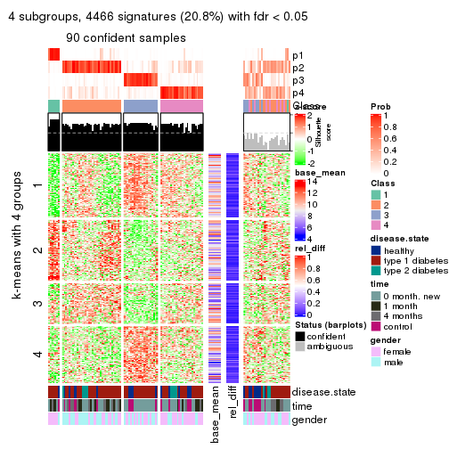
get_signatures(res, k = 5)
get_signatures(res, k = 6)
Signature heatmaps where rows are not scaled:
get_signatures(res, k = 2, scale_rows = FALSE)
get_signatures(res, k = 3, scale_rows = FALSE)
get_signatures(res, k = 4, scale_rows = FALSE)
get_signatures(res, k = 5, scale_rows = FALSE)
get_signatures(res, k = 6, scale_rows = FALSE)
Compare the overlap of signatures from different k:
compare_signatures(res)
get_signature() returns a data frame invisibly. TO get the list of signatures, the function
call should be assigned to a variable explicitly. In following code, if plot argument is set
to FALSE, no heatmap is plotted while only the differential analysis is performed.
# code only for demonstration
tb = get_signature(res, k = ..., plot = FALSE)
An example of the output of tb is:
#> which_row fdr mean_1 mean_2 scaled_mean_1 scaled_mean_2 km
#> 1 38 0.042760348 8.373488 9.131774 -0.5533452 0.5164555 1
#> 2 40 0.018707592 7.106213 8.469186 -0.6173731 0.5762149 1
#> 3 55 0.019134737 10.221463 11.207825 -0.6159697 0.5749050 1
#> 4 59 0.006059896 5.921854 7.869574 -0.6899429 0.6439467 1
#> 5 60 0.018055526 8.928898 10.211722 -0.6204761 0.5791110 1
#> 6 98 0.009384629 15.714769 14.887706 0.6635654 -0.6193277 2
...
The columns in tb are:
which_row: row indices corresponding to the input matrix.fdr: FDR for the differential test. mean_x: The mean value in group x.scaled_mean_x: The mean value in group x after rows are scaled.km: Row groups if k-means clustering is applied to rows.UMAP plot which shows how samples are separated.
dimension_reduction(res, k = 2, method = "UMAP")
dimension_reduction(res, k = 3, method = "UMAP")
dimension_reduction(res, k = 4, method = "UMAP")
dimension_reduction(res, k = 5, method = "UMAP")
dimension_reduction(res, k = 6, method = "UMAP")
Following heatmap shows how subgroups are split when increasing k:
collect_classes(res)
Test correlation between subgroups and known annotations. If the known annotation is numeric, one-way ANOVA test is applied, and if the known annotation is discrete, chi-squared contingency table test is applied.
test_to_known_factors(res)
#> n disease.state(p) time(p) gender(p) k
#> SD:pam 103 0.238 6.21e-06 0.8494 2
#> SD:pam 92 0.253 3.53e-04 0.0589 3
#> SD:pam 90 0.459 4.61e-03 0.0101 4
#> SD:pam 88 0.602 5.17e-03 0.0262 5
#> SD:pam 87 0.571 9.08e-03 0.0438 6
If matrix rows can be associated to genes, consider to use GO_Enrichment(res,
...) to perform function enrichment for the signature genes.
The object with results only for a single top-value method and a single partition method can be extracted as:
res = res_list["SD", "mclust"]
# you can also extract it by
# res = res_list["SD:mclust"]
A summary of res and all the functions that can be applied to it:
res
#> A 'ConsensusPartition' object with k = 2, 3, 4, 5, 6.
#> On a matrix with 21512 rows and 117 columns.
#> Top rows (1000, 2000, 3000, 4000, 5000) are extracted by 'SD' method.
#> Subgroups are detected by 'mclust' method.
#> Performed in total 1250 partitions by row resampling.
#> Best k for subgroups seems to be 2.
#>
#> Following methods can be applied to this 'ConsensusPartition' object:
#> [1] "cola_report" "collect_classes" "collect_plots"
#> [4] "collect_stats" "colnames" "compare_signatures"
#> [7] "consensus_heatmap" "dimension_reduction" "functional_enrichment"
#> [10] "get_anno_col" "get_anno" "get_classes"
#> [13] "get_consensus" "get_matrix" "get_membership"
#> [16] "get_param" "get_signatures" "get_stats"
#> [19] "is_best_k" "is_stable_k" "membership_heatmap"
#> [22] "ncol" "nrow" "plot_ecdf"
#> [25] "rownames" "select_partition_number" "show"
#> [28] "suggest_best_k" "test_to_known_factors"
collect_plots() function collects all the plots made from res for all k (number of partitions)
into one single page to provide an easy and fast comparison between different k.
collect_plots(res)
The plots are:
k and the heatmap of
predicted classes for each k.k.k.k.All the plots in panels can be made by individual functions and they are plotted later in this section.
select_partition_number() produces several plots showing different
statistics for choosing “optimized” k. There are following statistics:
k;k, the area increased is defined as \(A_k - A_{k-1}\).The detailed explanations of these statistics can be found in the cola vignette.
Generally speaking, lower PAC score, higher mean silhouette score or higher
concordance corresponds to better partition. Rand index and Jaccard index
measure how similar the current partition is compared to partition with k-1.
If they are too similar, we won't accept k is better than k-1.
select_partition_number(res)
The numeric values for all these statistics can be obtained by get_stats().
get_stats(res)
#> k 1-PAC mean_silhouette concordance area_increased Rand Jaccard
#> 2 2 0.223 0.683 0.801 0.4673 0.500 0.500
#> 3 3 0.248 0.359 0.666 0.2519 0.670 0.466
#> 4 4 0.463 0.539 0.776 0.2057 0.774 0.504
#> 5 5 0.474 0.522 0.732 0.0448 0.955 0.854
#> 6 6 0.464 0.472 0.712 0.0317 0.941 0.805
suggest_best_k() suggests the best \(k\) based on these statistics. The rules are as follows:
NA.suggest_best_k(res)
#> [1] 2
Following shows the table of the partitions (You need to click the show/hide
code output link to see it). The membership matrix (columns with name p*)
is inferred by
clue::cl_consensus()
function with the SE method. Basically the value in the membership matrix
represents the probability to belong to a certain group. The finall class
label for an item is determined with the group with highest probability it
belongs to.
In get_classes() function, the entropy is calculated from the membership
matrix and the silhouette score is calculated from the consensus matrix.
cbind(get_classes(res, k = 2), get_membership(res, k = 2))
#> class entropy silhouette p1 p2
#> GSM254177 1 0.4939 0.7809 0.892 0.108
#> GSM254179 2 0.4815 0.8073 0.104 0.896
#> GSM254180 2 0.5519 0.8008 0.128 0.872
#> GSM254182 1 0.2778 0.7786 0.952 0.048
#> GSM254183 1 0.7745 0.7133 0.772 0.228
#> GSM254277 2 0.8909 0.5750 0.308 0.692
#> GSM254278 1 0.4022 0.7879 0.920 0.080
#> GSM254281 1 0.8608 0.6512 0.716 0.284
#> GSM254282 2 0.7674 0.7177 0.224 0.776
#> GSM254284 2 0.5629 0.8173 0.132 0.868
#> GSM254286 1 0.6438 0.7537 0.836 0.164
#> GSM254290 2 0.4690 0.8068 0.100 0.900
#> GSM254291 1 0.6801 0.7664 0.820 0.180
#> GSM254293 1 0.9754 0.4213 0.592 0.408
#> GSM254178 1 0.3879 0.7570 0.924 0.076
#> GSM254181 2 0.3114 0.8175 0.056 0.944
#> GSM254279 1 0.6801 0.7666 0.820 0.180
#> GSM254280 1 0.6801 0.7666 0.820 0.180
#> GSM254283 2 0.3114 0.8175 0.056 0.944
#> GSM254285 1 0.4815 0.7861 0.896 0.104
#> GSM254287 1 0.9775 0.5359 0.588 0.412
#> GSM254288 1 0.9460 0.6153 0.636 0.364
#> GSM254289 1 0.9710 0.5583 0.600 0.400
#> GSM254292 1 0.8499 0.6620 0.724 0.276
#> GSM254184 1 0.1184 0.7815 0.984 0.016
#> GSM254185 1 0.4161 0.7872 0.916 0.084
#> GSM254187 1 0.4022 0.7879 0.920 0.080
#> GSM254189 1 0.0000 0.7750 1.000 0.000
#> GSM254190 1 0.0000 0.7750 1.000 0.000
#> GSM254191 1 0.0000 0.7750 1.000 0.000
#> GSM254192 1 0.4022 0.7879 0.920 0.080
#> GSM254193 1 0.0000 0.7750 1.000 0.000
#> GSM254199 1 0.1843 0.7846 0.972 0.028
#> GSM254203 1 0.0000 0.7750 1.000 0.000
#> GSM254206 1 0.0672 0.7784 0.992 0.008
#> GSM254210 2 0.9044 0.5797 0.320 0.680
#> GSM254211 1 0.0000 0.7750 1.000 0.000
#> GSM254215 1 0.4022 0.7879 0.920 0.080
#> GSM254218 1 0.9983 0.1521 0.524 0.476
#> GSM254230 1 0.0000 0.7750 1.000 0.000
#> GSM254236 1 0.4022 0.7879 0.920 0.080
#> GSM254244 1 0.1184 0.7815 0.984 0.016
#> GSM254247 2 0.9460 0.4284 0.364 0.636
#> GSM254248 1 0.9977 0.1660 0.528 0.472
#> GSM254254 1 1.0000 -0.0604 0.500 0.500
#> GSM254257 2 0.6343 0.8128 0.160 0.840
#> GSM254258 1 0.3733 0.7884 0.928 0.072
#> GSM254261 2 0.9998 0.1347 0.492 0.508
#> GSM254264 1 0.4022 0.7879 0.920 0.080
#> GSM254186 1 0.6712 0.7673 0.824 0.176
#> GSM254188 1 0.6712 0.7673 0.824 0.176
#> GSM254194 1 0.6623 0.7695 0.828 0.172
#> GSM254195 1 0.4298 0.7504 0.912 0.088
#> GSM254196 1 0.5294 0.7573 0.880 0.120
#> GSM254200 1 0.6712 0.7673 0.824 0.176
#> GSM254209 2 0.3274 0.8168 0.060 0.940
#> GSM254214 2 0.3114 0.8175 0.056 0.944
#> GSM254221 1 0.9248 0.6479 0.660 0.340
#> GSM254224 2 0.5408 0.7776 0.124 0.876
#> GSM254227 1 0.8955 0.6497 0.688 0.312
#> GSM254233 1 0.9881 0.4792 0.564 0.436
#> GSM254235 1 0.3274 0.7642 0.940 0.060
#> GSM254239 1 0.9286 0.6391 0.656 0.344
#> GSM254241 2 0.9323 0.3678 0.348 0.652
#> GSM254251 2 0.9850 0.0851 0.428 0.572
#> GSM254262 1 0.6148 0.7656 0.848 0.152
#> GSM254263 1 0.6712 0.7673 0.824 0.176
#> GSM254197 1 0.0000 0.7750 1.000 0.000
#> GSM254201 1 0.9000 0.6062 0.684 0.316
#> GSM254204 2 0.6247 0.8117 0.156 0.844
#> GSM254216 1 0.9998 0.0751 0.508 0.492
#> GSM254228 1 0.0000 0.7750 1.000 0.000
#> GSM254242 1 0.8763 0.6353 0.704 0.296
#> GSM254245 2 0.9993 -0.0551 0.484 0.516
#> GSM254252 2 0.4815 0.8073 0.104 0.896
#> GSM254255 2 0.4939 0.8071 0.108 0.892
#> GSM254259 1 0.0000 0.7750 1.000 0.000
#> GSM254207 2 0.6531 0.7383 0.168 0.832
#> GSM254212 2 0.3114 0.8175 0.056 0.944
#> GSM254219 1 0.9963 0.4089 0.536 0.464
#> GSM254222 2 0.3114 0.8175 0.056 0.944
#> GSM254225 1 0.9775 0.4593 0.588 0.412
#> GSM254231 2 0.3431 0.8166 0.064 0.936
#> GSM254234 2 0.3114 0.8175 0.056 0.944
#> GSM254237 2 0.3274 0.8174 0.060 0.940
#> GSM254249 2 0.4298 0.8065 0.088 0.912
#> GSM254198 2 0.5178 0.8106 0.116 0.884
#> GSM254202 1 0.8861 0.6240 0.696 0.304
#> GSM254205 2 0.5629 0.8128 0.132 0.868
#> GSM254217 2 0.4815 0.8073 0.104 0.896
#> GSM254229 2 0.4815 0.8127 0.104 0.896
#> GSM254243 2 1.0000 0.0529 0.500 0.500
#> GSM254246 1 0.0000 0.7750 1.000 0.000
#> GSM254253 1 0.9933 0.1929 0.548 0.452
#> GSM254256 2 0.5294 0.8116 0.120 0.880
#> GSM254260 2 0.6801 0.7646 0.180 0.820
#> GSM254208 2 0.3274 0.8174 0.060 0.940
#> GSM254213 2 0.3114 0.8175 0.056 0.944
#> GSM254220 1 0.9815 0.5136 0.580 0.420
#> GSM254223 2 0.3114 0.8175 0.056 0.944
#> GSM254226 2 0.4022 0.8112 0.080 0.920
#> GSM254232 2 0.3114 0.8175 0.056 0.944
#> GSM254238 2 0.4161 0.8097 0.084 0.916
#> GSM254240 1 0.9754 0.5312 0.592 0.408
#> GSM254250 1 0.9998 0.2788 0.508 0.492
#> GSM254268 2 0.6247 0.8119 0.156 0.844
#> GSM254269 2 0.4939 0.8109 0.108 0.892
#> GSM254270 2 0.9460 0.4415 0.364 0.636
#> GSM254272 2 0.4690 0.8068 0.100 0.900
#> GSM254273 2 0.4690 0.8068 0.100 0.900
#> GSM254274 2 0.4815 0.8073 0.104 0.896
#> GSM254265 2 0.4690 0.8068 0.100 0.900
#> GSM254266 2 0.2948 0.8173 0.052 0.948
#> GSM254267 2 0.3114 0.8175 0.056 0.944
#> GSM254271 2 0.3114 0.8175 0.056 0.944
#> GSM254275 2 0.8608 0.5106 0.284 0.716
#> GSM254276 2 0.3114 0.8175 0.056 0.944
cbind(get_classes(res, k = 3), get_membership(res, k = 3))
#> class entropy silhouette p1 p2 p3
#> GSM254177 1 0.8744 -0.31704 0.448 0.108 0.444
#> GSM254179 2 0.4931 0.54533 0.232 0.768 0.000
#> GSM254180 2 0.6308 0.30218 0.492 0.508 0.000
#> GSM254182 3 0.6460 0.47784 0.112 0.124 0.764
#> GSM254183 3 0.9207 -0.01295 0.172 0.320 0.508
#> GSM254277 2 0.7287 0.39216 0.408 0.560 0.032
#> GSM254278 1 0.6495 -0.39124 0.536 0.004 0.460
#> GSM254281 1 0.8588 0.02665 0.544 0.344 0.112
#> GSM254282 2 0.7534 0.42833 0.368 0.584 0.048
#> GSM254284 2 0.4235 0.56172 0.176 0.824 0.000
#> GSM254286 3 0.8759 0.28234 0.360 0.120 0.520
#> GSM254290 2 0.4504 0.55193 0.196 0.804 0.000
#> GSM254291 3 0.9442 0.47910 0.288 0.216 0.496
#> GSM254293 1 0.7620 -0.01936 0.596 0.348 0.056
#> GSM254178 3 0.0424 0.66549 0.000 0.008 0.992
#> GSM254181 2 0.0475 0.60160 0.004 0.992 0.004
#> GSM254279 3 0.9167 0.50433 0.392 0.148 0.460
#> GSM254280 3 0.9298 0.49946 0.376 0.164 0.460
#> GSM254283 2 0.0000 0.60156 0.000 1.000 0.000
#> GSM254285 1 0.8691 -0.32896 0.448 0.104 0.448
#> GSM254287 2 0.7159 0.03913 0.024 0.528 0.448
#> GSM254288 2 0.7174 -0.00222 0.024 0.516 0.460
#> GSM254289 2 0.7036 0.06712 0.020 0.536 0.444
#> GSM254292 3 0.9919 -0.22778 0.292 0.312 0.396
#> GSM254184 3 0.6224 0.59957 0.296 0.016 0.688
#> GSM254185 1 0.6495 -0.39124 0.536 0.004 0.460
#> GSM254187 1 0.6495 -0.39124 0.536 0.004 0.460
#> GSM254189 3 0.5835 0.57892 0.340 0.000 0.660
#> GSM254190 3 0.0000 0.66449 0.000 0.000 1.000
#> GSM254191 3 0.3941 0.64995 0.156 0.000 0.844
#> GSM254192 3 0.6513 0.41568 0.476 0.004 0.520
#> GSM254193 3 0.0424 0.66582 0.008 0.000 0.992
#> GSM254199 3 0.5643 0.42804 0.020 0.220 0.760
#> GSM254203 3 0.0000 0.66449 0.000 0.000 1.000
#> GSM254206 3 0.1878 0.65084 0.004 0.044 0.952
#> GSM254210 2 0.8386 0.41102 0.304 0.584 0.112
#> GSM254211 3 0.0747 0.66246 0.016 0.000 0.984
#> GSM254215 1 0.6495 -0.39124 0.536 0.004 0.460
#> GSM254218 2 0.8463 0.21366 0.444 0.468 0.088
#> GSM254230 3 0.0000 0.66449 0.000 0.000 1.000
#> GSM254236 1 0.6495 -0.39124 0.536 0.004 0.460
#> GSM254244 3 0.3530 0.61635 0.032 0.068 0.900
#> GSM254247 1 0.6769 -0.11550 0.592 0.392 0.016
#> GSM254248 2 0.9546 0.14962 0.216 0.472 0.312
#> GSM254254 2 0.8889 0.27389 0.276 0.560 0.164
#> GSM254257 2 0.5413 0.55618 0.164 0.800 0.036
#> GSM254258 3 0.6309 0.40734 0.500 0.000 0.500
#> GSM254261 2 0.8649 0.34535 0.196 0.600 0.204
#> GSM254264 1 0.6500 -0.39596 0.532 0.004 0.464
#> GSM254186 3 0.9167 0.50433 0.392 0.148 0.460
#> GSM254188 3 0.9167 0.50433 0.392 0.148 0.460
#> GSM254194 3 0.9054 0.51400 0.360 0.144 0.496
#> GSM254195 3 0.1031 0.66514 0.000 0.024 0.976
#> GSM254196 3 0.6590 0.60130 0.112 0.132 0.756
#> GSM254200 3 0.9167 0.50433 0.392 0.148 0.460
#> GSM254209 2 0.0848 0.59908 0.008 0.984 0.008
#> GSM254214 2 0.0237 0.60237 0.004 0.996 0.000
#> GSM254221 2 0.9153 0.21098 0.308 0.520 0.172
#> GSM254224 2 0.6548 0.37804 0.372 0.616 0.012
#> GSM254227 2 0.7534 0.22544 0.048 0.584 0.368
#> GSM254233 2 0.8501 0.24854 0.368 0.532 0.100
#> GSM254235 3 0.1525 0.65666 0.004 0.032 0.964
#> GSM254239 2 0.6682 -0.03734 0.008 0.504 0.488
#> GSM254241 2 0.8230 0.38157 0.144 0.632 0.224
#> GSM254251 2 0.8440 0.22069 0.184 0.620 0.196
#> GSM254262 3 0.8773 0.54910 0.336 0.128 0.536
#> GSM254263 3 0.9015 0.53297 0.348 0.144 0.508
#> GSM254197 3 0.0000 0.66449 0.000 0.000 1.000
#> GSM254201 1 0.8825 0.03867 0.532 0.336 0.132
#> GSM254204 2 0.7438 0.39556 0.392 0.568 0.040
#> GSM254216 1 0.7705 -0.02272 0.592 0.348 0.060
#> GSM254228 3 0.0000 0.66449 0.000 0.000 1.000
#> GSM254242 1 0.9268 0.03763 0.492 0.336 0.172
#> GSM254245 1 0.8295 -0.08746 0.532 0.384 0.084
#> GSM254252 2 0.5138 0.54378 0.252 0.748 0.000
#> GSM254255 2 0.6295 0.34199 0.472 0.528 0.000
#> GSM254259 3 0.0000 0.66449 0.000 0.000 1.000
#> GSM254207 2 0.6361 0.52080 0.232 0.728 0.040
#> GSM254212 2 0.0237 0.60080 0.004 0.996 0.000
#> GSM254219 2 0.8191 0.25869 0.396 0.528 0.076
#> GSM254222 2 0.1964 0.60350 0.056 0.944 0.000
#> GSM254225 2 0.6675 0.18202 0.012 0.584 0.404
#> GSM254231 2 0.5325 0.52014 0.248 0.748 0.004
#> GSM254234 2 0.0237 0.60080 0.004 0.996 0.000
#> GSM254237 2 0.2261 0.60266 0.068 0.932 0.000
#> GSM254249 2 0.5325 0.52079 0.248 0.748 0.004
#> GSM254198 2 0.6090 0.53356 0.264 0.716 0.020
#> GSM254202 1 0.8470 0.02626 0.552 0.344 0.104
#> GSM254205 2 0.6345 0.43066 0.400 0.596 0.004
#> GSM254217 2 0.6627 0.48071 0.336 0.644 0.020
#> GSM254229 2 0.4121 0.56519 0.168 0.832 0.000
#> GSM254243 2 0.9787 0.15365 0.328 0.424 0.248
#> GSM254246 3 0.0000 0.66449 0.000 0.000 1.000
#> GSM254253 1 0.9026 -0.17489 0.444 0.424 0.132
#> GSM254256 2 0.5785 0.51803 0.300 0.696 0.004
#> GSM254260 1 0.7056 -0.13644 0.572 0.404 0.024
#> GSM254208 2 0.4235 0.56882 0.176 0.824 0.000
#> GSM254213 2 0.0237 0.60080 0.004 0.996 0.000
#> GSM254220 2 0.8140 0.25569 0.404 0.524 0.072
#> GSM254223 2 0.1399 0.60473 0.028 0.968 0.004
#> GSM254226 2 0.1585 0.59572 0.008 0.964 0.028
#> GSM254232 2 0.0424 0.60178 0.008 0.992 0.000
#> GSM254238 2 0.5610 0.54583 0.196 0.776 0.028
#> GSM254240 2 0.8239 0.16330 0.080 0.532 0.388
#> GSM254250 2 0.8749 0.26506 0.140 0.560 0.300
#> GSM254268 2 0.4805 0.55878 0.176 0.812 0.012
#> GSM254269 2 0.4409 0.56377 0.172 0.824 0.004
#> GSM254270 1 0.8342 -0.24623 0.464 0.456 0.080
#> GSM254272 2 0.4654 0.54893 0.208 0.792 0.000
#> GSM254273 2 0.4605 0.54883 0.204 0.796 0.000
#> GSM254274 2 0.4887 0.54784 0.228 0.772 0.000
#> GSM254265 2 0.4931 0.54666 0.232 0.768 0.000
#> GSM254266 2 0.0892 0.60453 0.020 0.980 0.000
#> GSM254267 2 0.3619 0.58561 0.136 0.864 0.000
#> GSM254271 2 0.0475 0.60111 0.004 0.992 0.004
#> GSM254275 2 0.4645 0.48531 0.008 0.816 0.176
#> GSM254276 2 0.0237 0.60080 0.004 0.996 0.000
cbind(get_classes(res, k = 4), get_membership(res, k = 4))
#> class entropy silhouette p1 p2 p3 p4
#> GSM254177 3 0.5753 0.61642 0.036 0.056 0.744 0.164
#> GSM254179 2 0.3764 0.65693 0.000 0.784 0.000 0.216
#> GSM254180 4 0.4331 0.47135 0.000 0.288 0.000 0.712
#> GSM254182 1 0.7023 0.56425 0.640 0.024 0.156 0.180
#> GSM254183 1 0.8558 0.41799 0.496 0.288 0.100 0.116
#> GSM254277 2 0.5137 0.33586 0.000 0.544 0.004 0.452
#> GSM254278 3 0.1042 0.80064 0.008 0.000 0.972 0.020
#> GSM254281 4 0.1139 0.72219 0.008 0.008 0.012 0.972
#> GSM254282 2 0.5060 0.42161 0.004 0.584 0.000 0.412
#> GSM254284 2 0.3649 0.67041 0.000 0.796 0.000 0.204
#> GSM254286 4 0.7290 0.05110 0.328 0.000 0.168 0.504
#> GSM254290 2 0.3942 0.64696 0.000 0.764 0.000 0.236
#> GSM254291 3 0.7596 -0.08679 0.380 0.172 0.444 0.004
#> GSM254293 4 0.1396 0.72121 0.004 0.032 0.004 0.960
#> GSM254178 1 0.1661 0.64803 0.944 0.000 0.052 0.004
#> GSM254181 2 0.0524 0.70051 0.000 0.988 0.008 0.004
#> GSM254279 3 0.1545 0.79693 0.008 0.040 0.952 0.000
#> GSM254280 3 0.1545 0.79693 0.008 0.040 0.952 0.000
#> GSM254283 2 0.0000 0.69852 0.000 1.000 0.000 0.000
#> GSM254285 3 0.2076 0.78448 0.008 0.004 0.932 0.056
#> GSM254287 1 0.5807 0.31909 0.492 0.484 0.016 0.008
#> GSM254288 1 0.5807 0.31909 0.492 0.484 0.016 0.008
#> GSM254289 2 0.5991 -0.34919 0.484 0.484 0.024 0.008
#> GSM254292 4 0.2450 0.69238 0.072 0.000 0.016 0.912
#> GSM254184 1 0.5653 0.24082 0.532 0.016 0.448 0.004
#> GSM254185 3 0.1256 0.79792 0.008 0.000 0.964 0.028
#> GSM254187 3 0.1042 0.80064 0.008 0.000 0.972 0.020
#> GSM254189 1 0.4985 0.19954 0.532 0.000 0.468 0.000
#> GSM254190 1 0.3710 0.60469 0.804 0.000 0.192 0.004
#> GSM254191 1 0.5143 0.41344 0.628 0.012 0.360 0.000
#> GSM254192 3 0.6556 -0.14795 0.464 0.028 0.480 0.028
#> GSM254193 1 0.3402 0.61940 0.832 0.000 0.164 0.004
#> GSM254199 1 0.7834 0.50621 0.576 0.196 0.184 0.044
#> GSM254203 1 0.0188 0.64669 0.996 0.000 0.000 0.004
#> GSM254206 1 0.4804 0.62181 0.780 0.000 0.072 0.148
#> GSM254210 2 0.5090 0.58057 0.012 0.672 0.004 0.312
#> GSM254211 1 0.3946 0.61986 0.812 0.000 0.168 0.020
#> GSM254215 3 0.1042 0.80064 0.008 0.000 0.972 0.020
#> GSM254218 4 0.5982 0.35969 0.004 0.312 0.052 0.632
#> GSM254230 1 0.0657 0.64761 0.984 0.000 0.004 0.012
#> GSM254236 3 0.5193 0.36207 0.324 0.000 0.656 0.020
#> GSM254244 1 0.5024 0.31687 0.632 0.000 0.008 0.360
#> GSM254247 4 0.0895 0.72302 0.004 0.020 0.000 0.976
#> GSM254248 2 0.7895 0.24969 0.212 0.444 0.008 0.336
#> GSM254254 2 0.7172 0.56859 0.052 0.652 0.172 0.124
#> GSM254257 2 0.4670 0.66847 0.004 0.804 0.096 0.096
#> GSM254258 3 0.2197 0.78690 0.048 0.000 0.928 0.024
#> GSM254261 2 0.6331 0.60700 0.036 0.708 0.168 0.088
#> GSM254264 3 0.1042 0.80064 0.008 0.000 0.972 0.020
#> GSM254186 3 0.1545 0.79693 0.008 0.040 0.952 0.000
#> GSM254188 3 0.1545 0.79693 0.008 0.040 0.952 0.000
#> GSM254194 3 0.3292 0.75777 0.080 0.036 0.880 0.004
#> GSM254195 1 0.5210 0.61284 0.748 0.004 0.188 0.060
#> GSM254196 1 0.7180 0.48308 0.568 0.008 0.280 0.144
#> GSM254200 3 0.2224 0.79182 0.032 0.040 0.928 0.000
#> GSM254209 2 0.0000 0.69852 0.000 1.000 0.000 0.000
#> GSM254214 2 0.0000 0.69852 0.000 1.000 0.000 0.000
#> GSM254221 4 0.4175 0.63089 0.008 0.192 0.008 0.792
#> GSM254224 4 0.4331 0.57979 0.000 0.288 0.000 0.712
#> GSM254227 2 0.7019 0.42823 0.220 0.648 0.064 0.068
#> GSM254233 4 0.4192 0.62476 0.004 0.208 0.008 0.780
#> GSM254235 1 0.3308 0.62755 0.872 0.000 0.036 0.092
#> GSM254239 1 0.5679 0.32178 0.496 0.484 0.016 0.004
#> GSM254241 2 0.7902 -0.17652 0.188 0.444 0.012 0.356
#> GSM254251 2 0.5237 0.40705 0.016 0.628 0.356 0.000
#> GSM254262 1 0.6178 0.12652 0.480 0.040 0.476 0.004
#> GSM254263 3 0.6178 -0.13223 0.472 0.040 0.484 0.004
#> GSM254197 1 0.0188 0.64669 0.996 0.000 0.000 0.004
#> GSM254201 4 0.0524 0.72008 0.008 0.000 0.004 0.988
#> GSM254204 4 0.5311 0.41990 0.000 0.328 0.024 0.648
#> GSM254216 4 0.1902 0.71777 0.004 0.064 0.000 0.932
#> GSM254228 1 0.0188 0.64669 0.996 0.000 0.000 0.004
#> GSM254242 4 0.0707 0.71976 0.020 0.000 0.000 0.980
#> GSM254245 4 0.3841 0.66919 0.020 0.144 0.004 0.832
#> GSM254252 2 0.4898 0.38630 0.000 0.584 0.000 0.416
#> GSM254255 4 0.3975 0.57519 0.000 0.240 0.000 0.760
#> GSM254259 1 0.0188 0.64669 0.996 0.000 0.000 0.004
#> GSM254207 2 0.5109 0.54052 0.000 0.736 0.052 0.212
#> GSM254212 2 0.0000 0.69852 0.000 1.000 0.000 0.000
#> GSM254219 4 0.3791 0.62846 0.004 0.200 0.000 0.796
#> GSM254222 2 0.1118 0.69313 0.000 0.964 0.000 0.036
#> GSM254225 2 0.7598 0.02280 0.304 0.508 0.180 0.008
#> GSM254231 2 0.4933 -0.00852 0.000 0.568 0.000 0.432
#> GSM254234 2 0.0469 0.69879 0.000 0.988 0.000 0.012
#> GSM254237 2 0.1389 0.69239 0.000 0.952 0.000 0.048
#> GSM254249 2 0.4916 0.00637 0.000 0.576 0.000 0.424
#> GSM254198 2 0.4976 0.54124 0.004 0.652 0.004 0.340
#> GSM254202 4 0.0524 0.72023 0.008 0.000 0.004 0.988
#> GSM254205 4 0.4991 0.22992 0.000 0.388 0.004 0.608
#> GSM254217 2 0.5230 0.50644 0.004 0.620 0.008 0.368
#> GSM254229 2 0.3528 0.67392 0.000 0.808 0.000 0.192
#> GSM254243 4 0.7223 0.49549 0.248 0.144 0.016 0.592
#> GSM254246 1 0.0188 0.64669 0.996 0.000 0.000 0.004
#> GSM254253 4 0.5500 0.61511 0.032 0.196 0.032 0.740
#> GSM254256 2 0.4790 0.46607 0.000 0.620 0.000 0.380
#> GSM254260 4 0.1716 0.71628 0.000 0.064 0.000 0.936
#> GSM254208 2 0.3400 0.59326 0.000 0.820 0.000 0.180
#> GSM254213 2 0.0188 0.69779 0.004 0.996 0.000 0.000
#> GSM254220 4 0.3933 0.62988 0.004 0.196 0.004 0.796
#> GSM254223 2 0.2216 0.67120 0.000 0.908 0.000 0.092
#> GSM254226 2 0.2281 0.67972 0.000 0.904 0.096 0.000
#> GSM254232 2 0.0592 0.69887 0.000 0.984 0.000 0.016
#> GSM254238 2 0.4718 0.43471 0.004 0.716 0.008 0.272
#> GSM254240 1 0.8100 0.10097 0.420 0.232 0.012 0.336
#> GSM254250 4 0.8259 0.13565 0.320 0.292 0.012 0.376
#> GSM254268 2 0.3819 0.67661 0.008 0.816 0.004 0.172
#> GSM254269 2 0.3444 0.67177 0.000 0.816 0.000 0.184
#> GSM254270 4 0.4548 0.57529 0.008 0.232 0.008 0.752
#> GSM254272 2 0.3873 0.65060 0.000 0.772 0.000 0.228
#> GSM254273 2 0.3649 0.66091 0.000 0.796 0.000 0.204
#> GSM254274 2 0.3610 0.66171 0.000 0.800 0.000 0.200
#> GSM254265 2 0.3726 0.65927 0.000 0.788 0.000 0.212
#> GSM254266 2 0.0707 0.70068 0.000 0.980 0.000 0.020
#> GSM254267 2 0.2469 0.66841 0.000 0.892 0.000 0.108
#> GSM254271 2 0.0000 0.69852 0.000 1.000 0.000 0.000
#> GSM254275 2 0.4704 0.52703 0.204 0.764 0.004 0.028
#> GSM254276 2 0.0000 0.69852 0.000 1.000 0.000 0.000
cbind(get_classes(res, k = 5), get_membership(res, k = 5))
#> class entropy silhouette p1 p2 p3 p4 p5
#> GSM254177 3 0.5985 0.6062 0.016 0.136 0.704 0.068 NA
#> GSM254179 2 0.3877 0.6170 0.000 0.764 0.000 0.212 NA
#> GSM254180 4 0.4781 0.0053 0.000 0.428 0.000 0.552 NA
#> GSM254182 1 0.7026 0.6024 0.584 0.008 0.064 0.196 NA
#> GSM254183 1 0.9110 0.3451 0.372 0.196 0.064 0.124 NA
#> GSM254277 2 0.4735 0.4604 0.000 0.608 0.008 0.372 NA
#> GSM254278 3 0.2011 0.7768 0.004 0.000 0.908 0.000 NA
#> GSM254281 4 0.2388 0.6650 0.000 0.028 0.000 0.900 NA
#> GSM254282 2 0.4879 0.5063 0.000 0.636 0.012 0.332 NA
#> GSM254284 2 0.3663 0.6255 0.000 0.776 0.000 0.208 NA
#> GSM254286 4 0.7545 0.0567 0.300 0.012 0.152 0.480 NA
#> GSM254290 2 0.3954 0.6237 0.000 0.772 0.000 0.192 NA
#> GSM254291 3 0.6612 0.2578 0.296 0.112 0.556 0.004 NA
#> GSM254293 4 0.2659 0.6559 0.000 0.060 0.000 0.888 NA
#> GSM254178 1 0.0854 0.7229 0.976 0.004 0.012 0.000 NA
#> GSM254181 2 0.2775 0.6484 0.000 0.884 0.036 0.004 NA
#> GSM254279 3 0.0290 0.7746 0.000 0.000 0.992 0.000 NA
#> GSM254280 3 0.0693 0.7726 0.000 0.012 0.980 0.000 NA
#> GSM254283 2 0.1124 0.6530 0.000 0.960 0.000 0.004 NA
#> GSM254285 3 0.3037 0.7197 0.004 0.024 0.876 0.084 NA
#> GSM254287 2 0.6842 -0.2236 0.344 0.404 0.004 0.000 NA
#> GSM254288 2 0.6907 -0.2632 0.352 0.372 0.004 0.000 NA
#> GSM254289 2 0.6894 -0.2319 0.344 0.384 0.004 0.000 NA
#> GSM254292 4 0.3056 0.6462 0.024 0.004 0.020 0.880 NA
#> GSM254184 1 0.6802 0.2594 0.436 0.004 0.304 0.000 NA
#> GSM254185 3 0.2270 0.7758 0.004 0.000 0.908 0.016 NA
#> GSM254187 3 0.2011 0.7768 0.004 0.000 0.908 0.000 NA
#> GSM254189 1 0.6646 0.2258 0.436 0.000 0.324 0.000 NA
#> GSM254190 1 0.5086 0.6624 0.688 0.000 0.080 0.004 NA
#> GSM254191 1 0.6353 0.5174 0.528 0.004 0.172 0.000 NA
#> GSM254192 3 0.6806 0.0157 0.408 0.020 0.436 0.004 NA
#> GSM254193 1 0.4255 0.7081 0.788 0.000 0.060 0.012 NA
#> GSM254199 1 0.7853 0.5726 0.572 0.144 0.076 0.092 NA
#> GSM254203 1 0.0162 0.7212 0.996 0.000 0.000 0.000 NA
#> GSM254206 1 0.4194 0.6700 0.780 0.000 0.020 0.172 NA
#> GSM254210 2 0.5654 0.4917 0.016 0.608 0.008 0.324 NA
#> GSM254211 1 0.4776 0.7073 0.776 0.000 0.068 0.052 NA
#> GSM254215 3 0.2136 0.7776 0.008 0.000 0.904 0.000 NA
#> GSM254218 4 0.6194 -0.0352 0.000 0.396 0.064 0.508 NA
#> GSM254230 1 0.0807 0.7216 0.976 0.000 0.000 0.012 NA
#> GSM254236 3 0.5177 0.5648 0.220 0.000 0.676 0.000 NA
#> GSM254244 1 0.4789 0.4403 0.644 0.004 0.000 0.324 NA
#> GSM254247 4 0.1981 0.6664 0.000 0.048 0.000 0.924 NA
#> GSM254248 2 0.7585 0.2087 0.188 0.420 0.004 0.336 NA
#> GSM254254 2 0.7711 0.4607 0.020 0.536 0.212 0.120 NA
#> GSM254257 2 0.5669 0.6197 0.004 0.720 0.076 0.116 NA
#> GSM254258 3 0.3410 0.7530 0.068 0.000 0.840 0.000 NA
#> GSM254261 2 0.7396 0.5096 0.032 0.584 0.192 0.104 NA
#> GSM254264 3 0.2136 0.7776 0.008 0.000 0.904 0.000 NA
#> GSM254186 3 0.0290 0.7746 0.000 0.000 0.992 0.000 NA
#> GSM254188 3 0.0290 0.7746 0.000 0.000 0.992 0.000 NA
#> GSM254194 3 0.1753 0.7674 0.032 0.000 0.936 0.000 NA
#> GSM254195 1 0.5067 0.6924 0.728 0.000 0.096 0.016 NA
#> GSM254196 1 0.6843 0.5741 0.556 0.000 0.204 0.040 NA
#> GSM254200 3 0.1251 0.7717 0.036 0.000 0.956 0.000 NA
#> GSM254209 2 0.1732 0.6418 0.000 0.920 0.000 0.000 NA
#> GSM254214 2 0.1671 0.6467 0.000 0.924 0.000 0.000 NA
#> GSM254221 4 0.4634 0.5890 0.004 0.184 0.000 0.740 NA
#> GSM254224 4 0.4430 0.4760 0.000 0.360 0.000 0.628 NA
#> GSM254227 2 0.7303 0.3860 0.196 0.596 0.044 0.084 NA
#> GSM254233 4 0.4951 0.5732 0.000 0.224 0.008 0.704 NA
#> GSM254235 1 0.2481 0.7089 0.908 0.004 0.008 0.056 NA
#> GSM254239 1 0.6675 0.2409 0.408 0.392 0.004 0.000 NA
#> GSM254241 4 0.7956 0.3644 0.076 0.316 0.000 0.336 NA
#> GSM254251 2 0.5988 0.2352 0.004 0.480 0.420 0.000 NA
#> GSM254262 3 0.6274 -0.0514 0.412 0.016 0.476 0.000 NA
#> GSM254263 3 0.5394 0.0838 0.400 0.000 0.540 0.000 NA
#> GSM254197 1 0.0162 0.7212 0.996 0.000 0.000 0.000 NA
#> GSM254201 4 0.1484 0.6617 0.000 0.008 0.000 0.944 NA
#> GSM254204 4 0.5814 0.3881 0.000 0.288 0.000 0.584 NA
#> GSM254216 4 0.2381 0.6661 0.004 0.052 0.000 0.908 NA
#> GSM254228 1 0.0162 0.7212 0.996 0.000 0.000 0.000 NA
#> GSM254242 4 0.1430 0.6598 0.000 0.004 0.000 0.944 NA
#> GSM254245 4 0.4557 0.6199 0.004 0.104 0.000 0.760 NA
#> GSM254252 2 0.4630 0.3992 0.000 0.588 0.000 0.396 NA
#> GSM254255 4 0.4114 0.4579 0.000 0.272 0.000 0.712 NA
#> GSM254259 1 0.0162 0.7212 0.996 0.000 0.000 0.000 NA
#> GSM254207 2 0.4820 0.5970 0.000 0.748 0.100 0.140 NA
#> GSM254212 2 0.2077 0.6476 0.008 0.908 0.000 0.000 NA
#> GSM254219 4 0.4677 0.5947 0.004 0.176 0.000 0.740 NA
#> GSM254222 2 0.1670 0.6507 0.000 0.936 0.000 0.052 NA
#> GSM254225 2 0.8054 0.0800 0.296 0.428 0.176 0.012 NA
#> GSM254231 2 0.4392 0.1320 0.000 0.612 0.000 0.380 NA
#> GSM254234 2 0.0798 0.6541 0.000 0.976 0.000 0.008 NA
#> GSM254237 2 0.2209 0.6466 0.000 0.912 0.000 0.056 NA
#> GSM254249 2 0.5045 0.2539 0.000 0.636 0.000 0.308 NA
#> GSM254198 2 0.5695 0.4033 0.000 0.560 0.004 0.356 NA
#> GSM254202 4 0.1830 0.6592 0.000 0.008 0.000 0.924 NA
#> GSM254205 4 0.5461 0.0754 0.000 0.408 0.000 0.528 NA
#> GSM254217 2 0.5928 0.2787 0.000 0.500 0.000 0.392 NA
#> GSM254229 2 0.3710 0.6311 0.000 0.784 0.000 0.192 NA
#> GSM254243 4 0.7641 0.5173 0.116 0.116 0.008 0.508 NA
#> GSM254246 1 0.0162 0.7212 0.996 0.000 0.000 0.000 NA
#> GSM254253 4 0.5743 0.5770 0.032 0.140 0.000 0.684 NA
#> GSM254256 2 0.4551 0.4503 0.000 0.616 0.000 0.368 NA
#> GSM254260 4 0.2573 0.6426 0.000 0.104 0.000 0.880 NA
#> GSM254208 2 0.2864 0.6151 0.000 0.864 0.000 0.112 NA
#> GSM254213 2 0.1608 0.6448 0.000 0.928 0.000 0.000 NA
#> GSM254220 4 0.4677 0.5869 0.004 0.176 0.000 0.740 NA
#> GSM254223 2 0.3547 0.6061 0.004 0.836 0.000 0.100 NA
#> GSM254226 2 0.3863 0.6232 0.000 0.796 0.152 0.000 NA
#> GSM254232 2 0.1018 0.6541 0.000 0.968 0.000 0.016 NA
#> GSM254238 2 0.5839 0.2629 0.000 0.612 0.004 0.248 NA
#> GSM254240 4 0.8548 0.3158 0.196 0.248 0.000 0.296 NA
#> GSM254250 4 0.8538 0.3100 0.220 0.256 0.000 0.312 NA
#> GSM254268 2 0.5178 0.6160 0.000 0.700 0.004 0.172 NA
#> GSM254269 2 0.3885 0.6304 0.000 0.784 0.000 0.176 NA
#> GSM254270 4 0.5120 0.5674 0.000 0.164 0.000 0.696 NA
#> GSM254272 2 0.3819 0.6125 0.000 0.756 0.000 0.228 NA
#> GSM254273 2 0.4238 0.6176 0.000 0.756 0.000 0.192 NA
#> GSM254274 2 0.4096 0.6080 0.000 0.744 0.004 0.232 NA
#> GSM254265 2 0.3563 0.6164 0.000 0.780 0.000 0.208 NA
#> GSM254266 2 0.1965 0.6532 0.000 0.924 0.000 0.052 NA
#> GSM254267 2 0.2351 0.6378 0.000 0.896 0.000 0.088 NA
#> GSM254271 2 0.1544 0.6475 0.000 0.932 0.000 0.000 NA
#> GSM254275 2 0.5185 0.4845 0.168 0.700 0.000 0.004 NA
#> GSM254276 2 0.0771 0.6558 0.000 0.976 0.000 0.004 NA
cbind(get_classes(res, k = 6), get_membership(res, k = 6))
#> class entropy silhouette p1 p2 p3 p4 p5 p6
#> GSM254177 3 0.5226 0.4655 0.012 0.176 0.712 0.040 0.040 0.020
#> GSM254179 2 0.4367 0.6884 0.000 0.724 0.000 0.212 0.028 0.036
#> GSM254180 2 0.4970 0.4269 0.000 0.512 0.000 0.436 0.016 0.036
#> GSM254182 1 0.7403 -0.3958 0.452 0.008 0.036 0.136 0.064 0.304
#> GSM254183 5 0.6929 0.4427 0.080 0.148 0.024 0.132 0.592 0.024
#> GSM254277 2 0.5295 0.6185 0.000 0.620 0.012 0.296 0.040 0.032
#> GSM254278 3 0.0146 0.7431 0.000 0.000 0.996 0.000 0.004 0.000
#> GSM254281 4 0.3378 0.6400 0.000 0.028 0.016 0.852 0.036 0.068
#> GSM254282 2 0.5275 0.6155 0.000 0.628 0.004 0.280 0.048 0.040
#> GSM254284 2 0.3934 0.6975 0.000 0.752 0.000 0.204 0.028 0.016
#> GSM254286 4 0.8160 0.0359 0.188 0.016 0.132 0.448 0.056 0.160
#> GSM254290 2 0.4449 0.6892 0.000 0.708 0.000 0.228 0.020 0.044
#> GSM254291 3 0.8143 0.2904 0.116 0.156 0.440 0.000 0.148 0.140
#> GSM254293 4 0.3771 0.6129 0.000 0.132 0.000 0.800 0.036 0.032
#> GSM254178 1 0.0436 0.4378 0.988 0.004 0.000 0.000 0.004 0.004
#> GSM254181 2 0.3350 0.6297 0.000 0.828 0.008 0.004 0.040 0.120
#> GSM254279 3 0.2631 0.7400 0.000 0.000 0.840 0.000 0.008 0.152
#> GSM254280 3 0.2909 0.7395 0.000 0.004 0.828 0.000 0.012 0.156
#> GSM254283 2 0.1806 0.6588 0.000 0.928 0.000 0.008 0.020 0.044
#> GSM254285 3 0.4009 0.6792 0.000 0.020 0.812 0.088 0.036 0.044
#> GSM254287 5 0.4218 0.6534 0.024 0.360 0.000 0.000 0.616 0.000
#> GSM254288 5 0.4083 0.6545 0.028 0.304 0.000 0.000 0.668 0.000
#> GSM254289 5 0.4062 0.6616 0.024 0.316 0.000 0.000 0.660 0.000
#> GSM254292 4 0.3585 0.6162 0.012 0.008 0.008 0.832 0.040 0.100
#> GSM254184 5 0.7560 -0.4848 0.232 0.000 0.256 0.000 0.344 0.168
#> GSM254185 3 0.0767 0.7429 0.000 0.000 0.976 0.008 0.012 0.004
#> GSM254187 3 0.0146 0.7431 0.000 0.000 0.996 0.000 0.004 0.000
#> GSM254189 3 0.7467 -0.3372 0.252 0.000 0.380 0.000 0.184 0.184
#> GSM254190 1 0.6417 -0.7048 0.420 0.000 0.072 0.000 0.100 0.408
#> GSM254191 1 0.7154 -0.5092 0.360 0.000 0.096 0.000 0.344 0.200
#> GSM254192 3 0.6655 0.3354 0.152 0.032 0.544 0.004 0.240 0.028
#> GSM254193 1 0.5082 -0.1338 0.688 0.000 0.020 0.008 0.092 0.192
#> GSM254199 1 0.8410 -0.1573 0.364 0.256 0.032 0.028 0.192 0.128
#> GSM254203 1 0.0000 0.4427 1.000 0.000 0.000 0.000 0.000 0.000
#> GSM254206 1 0.5341 0.1519 0.632 0.000 0.012 0.268 0.020 0.068
#> GSM254210 2 0.5748 0.6297 0.012 0.620 0.008 0.264 0.040 0.056
#> GSM254211 1 0.6276 0.0038 0.624 0.000 0.028 0.136 0.064 0.148
#> GSM254215 3 0.0291 0.7437 0.004 0.000 0.992 0.000 0.004 0.000
#> GSM254218 2 0.6824 0.3958 0.000 0.460 0.064 0.364 0.064 0.048
#> GSM254230 1 0.2340 0.4019 0.900 0.000 0.000 0.060 0.016 0.024
#> GSM254236 3 0.2288 0.7068 0.072 0.000 0.896 0.000 0.028 0.004
#> GSM254244 1 0.5220 0.1042 0.540 0.000 0.000 0.388 0.024 0.048
#> GSM254247 4 0.3412 0.6229 0.000 0.144 0.000 0.812 0.012 0.032
#> GSM254248 2 0.7038 0.5086 0.068 0.512 0.008 0.280 0.100 0.032
#> GSM254254 2 0.7409 0.4624 0.004 0.524 0.192 0.136 0.068 0.076
#> GSM254257 2 0.5936 0.6457 0.000 0.668 0.036 0.128 0.064 0.104
#> GSM254258 3 0.1341 0.7386 0.028 0.000 0.948 0.000 0.024 0.000
#> GSM254261 2 0.7170 0.5539 0.012 0.580 0.132 0.128 0.072 0.076
#> GSM254264 3 0.0291 0.7437 0.004 0.000 0.992 0.000 0.004 0.000
#> GSM254186 3 0.2520 0.7397 0.000 0.000 0.844 0.000 0.004 0.152
#> GSM254188 3 0.2520 0.7397 0.000 0.000 0.844 0.000 0.004 0.152
#> GSM254194 3 0.4093 0.7226 0.024 0.008 0.780 0.000 0.040 0.148
#> GSM254195 1 0.4992 -0.6430 0.508 0.000 0.024 0.004 0.020 0.444
#> GSM254196 6 0.5691 0.0000 0.396 0.000 0.044 0.000 0.060 0.500
#> GSM254200 3 0.3129 0.7376 0.024 0.000 0.820 0.000 0.004 0.152
#> GSM254209 2 0.2436 0.6204 0.000 0.880 0.000 0.000 0.032 0.088
#> GSM254214 2 0.2401 0.6505 0.000 0.892 0.000 0.004 0.044 0.060
#> GSM254221 4 0.4653 0.5305 0.000 0.180 0.000 0.724 0.052 0.044
#> GSM254224 4 0.4484 0.2820 0.000 0.460 0.000 0.516 0.008 0.016
#> GSM254227 2 0.6498 0.3700 0.116 0.632 0.016 0.028 0.140 0.068
#> GSM254233 4 0.5077 0.4945 0.000 0.268 0.000 0.644 0.036 0.052
#> GSM254235 1 0.2909 0.3842 0.864 0.008 0.000 0.096 0.020 0.012
#> GSM254239 5 0.6058 0.5282 0.172 0.380 0.012 0.000 0.436 0.000
#> GSM254241 4 0.7946 0.3557 0.068 0.240 0.000 0.404 0.084 0.204
#> GSM254251 2 0.6725 0.1010 0.004 0.444 0.288 0.000 0.040 0.224
#> GSM254262 3 0.7287 0.1302 0.164 0.000 0.364 0.000 0.332 0.140
#> GSM254263 3 0.7243 0.2841 0.144 0.000 0.396 0.000 0.304 0.156
#> GSM254197 1 0.0000 0.4427 1.000 0.000 0.000 0.000 0.000 0.000
#> GSM254201 4 0.2046 0.6478 0.000 0.008 0.000 0.916 0.032 0.044
#> GSM254204 4 0.5445 0.5101 0.000 0.220 0.004 0.640 0.024 0.112
#> GSM254216 4 0.2112 0.6652 0.000 0.036 0.000 0.916 0.020 0.028
#> GSM254228 1 0.0000 0.4427 1.000 0.000 0.000 0.000 0.000 0.000
#> GSM254242 4 0.2094 0.6356 0.004 0.000 0.000 0.908 0.024 0.064
#> GSM254245 4 0.3663 0.6512 0.008 0.068 0.000 0.816 0.008 0.100
#> GSM254252 2 0.4275 0.5260 0.000 0.592 0.000 0.388 0.004 0.016
#> GSM254255 4 0.4144 0.1657 0.000 0.360 0.000 0.620 0.000 0.020
#> GSM254259 1 0.0000 0.4427 1.000 0.000 0.000 0.000 0.000 0.000
#> GSM254207 2 0.5387 0.6277 0.000 0.716 0.044 0.092 0.040 0.108
#> GSM254212 2 0.2554 0.6279 0.000 0.876 0.000 0.000 0.076 0.048
#> GSM254219 4 0.4087 0.5421 0.000 0.168 0.000 0.764 0.044 0.024
#> GSM254222 2 0.2036 0.6666 0.000 0.912 0.000 0.064 0.016 0.008
#> GSM254225 2 0.7455 0.1302 0.088 0.484 0.032 0.004 0.188 0.204
#> GSM254231 2 0.3764 0.5104 0.000 0.724 0.000 0.256 0.008 0.012
#> GSM254234 2 0.1167 0.6605 0.000 0.960 0.000 0.008 0.012 0.020
#> GSM254237 2 0.2772 0.6662 0.000 0.876 0.000 0.068 0.036 0.020
#> GSM254249 2 0.4545 0.4617 0.000 0.688 0.000 0.240 0.008 0.064
#> GSM254198 2 0.5261 0.5749 0.000 0.600 0.000 0.304 0.020 0.076
#> GSM254202 4 0.2944 0.6355 0.000 0.020 0.000 0.860 0.028 0.092
#> GSM254205 4 0.5596 -0.0426 0.000 0.400 0.000 0.500 0.028 0.072
#> GSM254217 2 0.5458 0.4580 0.000 0.532 0.000 0.368 0.016 0.084
#> GSM254229 2 0.4201 0.6992 0.000 0.748 0.000 0.184 0.048 0.020
#> GSM254243 4 0.6668 0.5318 0.100 0.068 0.000 0.584 0.048 0.200
#> GSM254246 1 0.0000 0.4427 1.000 0.000 0.000 0.000 0.000 0.000
#> GSM254253 4 0.4632 0.6424 0.024 0.072 0.000 0.764 0.028 0.112
#> GSM254256 2 0.4897 0.5980 0.000 0.624 0.000 0.312 0.036 0.028
#> GSM254260 4 0.2367 0.6631 0.000 0.088 0.000 0.888 0.008 0.016
#> GSM254208 2 0.3404 0.6410 0.000 0.832 0.000 0.096 0.020 0.052
#> GSM254213 2 0.2384 0.6233 0.000 0.884 0.000 0.000 0.032 0.084
#> GSM254220 4 0.4085 0.5454 0.000 0.152 0.000 0.772 0.048 0.028
#> GSM254223 2 0.2541 0.6607 0.000 0.892 0.000 0.052 0.024 0.032
#> GSM254226 2 0.4052 0.6013 0.000 0.752 0.016 0.000 0.040 0.192
#> GSM254232 2 0.1798 0.6637 0.000 0.932 0.000 0.020 0.028 0.020
#> GSM254238 2 0.5399 0.4252 0.000 0.652 0.000 0.204 0.040 0.104
#> GSM254240 4 0.8333 0.2860 0.152 0.180 0.000 0.388 0.088 0.192
#> GSM254250 4 0.8337 0.2894 0.184 0.192 0.000 0.384 0.084 0.156
#> GSM254268 2 0.5740 0.6524 0.000 0.652 0.004 0.168 0.088 0.088
#> GSM254269 2 0.4302 0.6940 0.000 0.748 0.000 0.172 0.024 0.056
#> GSM254270 4 0.3996 0.6382 0.000 0.104 0.000 0.776 0.008 0.112
#> GSM254272 2 0.4063 0.6929 0.000 0.740 0.000 0.212 0.016 0.032
#> GSM254273 2 0.4905 0.6782 0.000 0.692 0.000 0.200 0.028 0.080
#> GSM254274 2 0.4235 0.6924 0.000 0.740 0.004 0.204 0.028 0.024
#> GSM254265 2 0.3999 0.6880 0.000 0.744 0.000 0.212 0.020 0.024
#> GSM254266 2 0.1930 0.6771 0.000 0.924 0.000 0.036 0.028 0.012
#> GSM254267 2 0.2367 0.6714 0.000 0.888 0.000 0.088 0.016 0.008
#> GSM254271 2 0.2250 0.6376 0.000 0.896 0.000 0.000 0.040 0.064
#> GSM254275 2 0.4525 0.4720 0.044 0.732 0.000 0.008 0.192 0.024
#> GSM254276 2 0.1418 0.6553 0.000 0.944 0.000 0.000 0.032 0.024
Heatmaps for the consensus matrix. It visualizes the probability of two samples to be in a same group.
consensus_heatmap(res, k = 2)
consensus_heatmap(res, k = 3)
consensus_heatmap(res, k = 4)
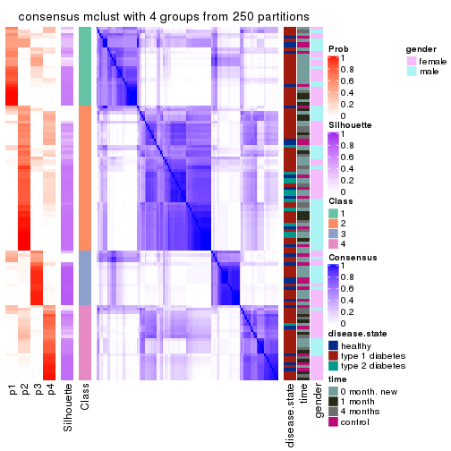
consensus_heatmap(res, k = 5)
consensus_heatmap(res, k = 6)
Heatmaps for the membership of samples in all partitions to see how consistent they are:
membership_heatmap(res, k = 2)
membership_heatmap(res, k = 3)
membership_heatmap(res, k = 4)
membership_heatmap(res, k = 5)
membership_heatmap(res, k = 6)
As soon as we have had the classes for columns, we can look for signatures which are significantly different between classes which can be candidate marks for certain classes. Following are the heatmaps for signatures.
Signature heatmaps where rows are scaled:
get_signatures(res, k = 2)
get_signatures(res, k = 3)
get_signatures(res, k = 4)
get_signatures(res, k = 5)
get_signatures(res, k = 6)
Signature heatmaps where rows are not scaled:
get_signatures(res, k = 2, scale_rows = FALSE)
get_signatures(res, k = 3, scale_rows = FALSE)
get_signatures(res, k = 4, scale_rows = FALSE)
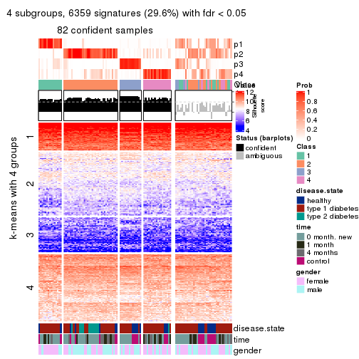
get_signatures(res, k = 5, scale_rows = FALSE)
get_signatures(res, k = 6, scale_rows = FALSE)
Compare the overlap of signatures from different k:
compare_signatures(res)
get_signature() returns a data frame invisibly. TO get the list of signatures, the function
call should be assigned to a variable explicitly. In following code, if plot argument is set
to FALSE, no heatmap is plotted while only the differential analysis is performed.
# code only for demonstration
tb = get_signature(res, k = ..., plot = FALSE)
An example of the output of tb is:
#> which_row fdr mean_1 mean_2 scaled_mean_1 scaled_mean_2 km
#> 1 38 0.042760348 8.373488 9.131774 -0.5533452 0.5164555 1
#> 2 40 0.018707592 7.106213 8.469186 -0.6173731 0.5762149 1
#> 3 55 0.019134737 10.221463 11.207825 -0.6159697 0.5749050 1
#> 4 59 0.006059896 5.921854 7.869574 -0.6899429 0.6439467 1
#> 5 60 0.018055526 8.928898 10.211722 -0.6204761 0.5791110 1
#> 6 98 0.009384629 15.714769 14.887706 0.6635654 -0.6193277 2
...
The columns in tb are:
which_row: row indices corresponding to the input matrix.fdr: FDR for the differential test. mean_x: The mean value in group x.scaled_mean_x: The mean value in group x after rows are scaled.km: Row groups if k-means clustering is applied to rows.UMAP plot which shows how samples are separated.
dimension_reduction(res, k = 2, method = "UMAP")
dimension_reduction(res, k = 3, method = "UMAP")
dimension_reduction(res, k = 4, method = "UMAP")
dimension_reduction(res, k = 5, method = "UMAP")

dimension_reduction(res, k = 6, method = "UMAP")
Following heatmap shows how subgroups are split when increasing k:
collect_classes(res)
Test correlation between subgroups and known annotations. If the known annotation is numeric, one-way ANOVA test is applied, and if the known annotation is discrete, chi-squared contingency table test is applied.
test_to_known_factors(res)
#> n disease.state(p) time(p) gender(p) k
#> SD:mclust 100 0.000621 0.00934 0.3462 2
#> SD:mclust 60 0.006380 0.02143 0.2363 3
#> SD:mclust 82 0.009670 0.07721 0.0719 4
#> SD:mclust 80 0.006609 0.05997 0.0426 5
#> SD:mclust 73 0.027686 0.00921 0.0326 6
If matrix rows can be associated to genes, consider to use GO_Enrichment(res,
...) to perform function enrichment for the signature genes.
The object with results only for a single top-value method and a single partition method can be extracted as:
res = res_list["SD", "NMF"]
# you can also extract it by
# res = res_list["SD:NMF"]
A summary of res and all the functions that can be applied to it:
res
#> A 'ConsensusPartition' object with k = 2, 3, 4, 5, 6.
#> On a matrix with 21512 rows and 117 columns.
#> Top rows (1000, 2000, 3000, 4000, 5000) are extracted by 'SD' method.
#> Subgroups are detected by 'NMF' method.
#> Performed in total 1250 partitions by row resampling.
#> Best k for subgroups seems to be 2.
#>
#> Following methods can be applied to this 'ConsensusPartition' object:
#> [1] "cola_report" "collect_classes" "collect_plots"
#> [4] "collect_stats" "colnames" "compare_signatures"
#> [7] "consensus_heatmap" "dimension_reduction" "functional_enrichment"
#> [10] "get_anno_col" "get_anno" "get_classes"
#> [13] "get_consensus" "get_matrix" "get_membership"
#> [16] "get_param" "get_signatures" "get_stats"
#> [19] "is_best_k" "is_stable_k" "membership_heatmap"
#> [22] "ncol" "nrow" "plot_ecdf"
#> [25] "rownames" "select_partition_number" "show"
#> [28] "suggest_best_k" "test_to_known_factors"
collect_plots() function collects all the plots made from res for all k (number of partitions)
into one single page to provide an easy and fast comparison between different k.
collect_plots(res)
The plots are:
k and the heatmap of
predicted classes for each k.k.k.k.All the plots in panels can be made by individual functions and they are plotted later in this section.
select_partition_number() produces several plots showing different
statistics for choosing “optimized” k. There are following statistics:
k;k, the area increased is defined as \(A_k - A_{k-1}\).The detailed explanations of these statistics can be found in the cola vignette.
Generally speaking, lower PAC score, higher mean silhouette score or higher
concordance corresponds to better partition. Rand index and Jaccard index
measure how similar the current partition is compared to partition with k-1.
If they are too similar, we won't accept k is better than k-1.
select_partition_number(res)

The numeric values for all these statistics can be obtained by get_stats().
get_stats(res)
#> k 1-PAC mean_silhouette concordance area_increased Rand Jaccard
#> 2 2 0.590 0.830 0.922 0.4950 0.497 0.497
#> 3 3 0.320 0.591 0.773 0.2896 0.619 0.387
#> 4 4 0.365 0.475 0.704 0.1425 0.769 0.461
#> 5 5 0.419 0.356 0.580 0.0786 0.860 0.531
#> 6 6 0.491 0.375 0.587 0.0486 0.886 0.525
suggest_best_k() suggests the best \(k\) based on these statistics. The rules are as follows:
NA.suggest_best_k(res)
#> [1] 2
Following shows the table of the partitions (You need to click the show/hide
code output link to see it). The membership matrix (columns with name p*)
is inferred by
clue::cl_consensus()
function with the SE method. Basically the value in the membership matrix
represents the probability to belong to a certain group. The finall class
label for an item is determined with the group with highest probability it
belongs to.
In get_classes() function, the entropy is calculated from the membership
matrix and the silhouette score is calculated from the consensus matrix.
cbind(get_classes(res, k = 2), get_membership(res, k = 2))
#> class entropy silhouette p1 p2
#> GSM254177 2 0.0000 0.9032 0.000 1.000
#> GSM254179 2 0.6712 0.7999 0.176 0.824
#> GSM254180 2 0.9996 0.1283 0.488 0.512
#> GSM254182 1 0.0376 0.9217 0.996 0.004
#> GSM254183 2 0.1633 0.8979 0.024 0.976
#> GSM254277 2 0.8499 0.6848 0.276 0.724
#> GSM254278 2 0.0000 0.9032 0.000 1.000
#> GSM254281 1 0.3114 0.8950 0.944 0.056
#> GSM254282 2 0.3733 0.8775 0.072 0.928
#> GSM254284 1 0.0938 0.9194 0.988 0.012
#> GSM254286 1 0.9896 0.2021 0.560 0.440
#> GSM254290 1 0.8763 0.5938 0.704 0.296
#> GSM254291 2 0.0000 0.9032 0.000 1.000
#> GSM254293 2 0.9963 0.0921 0.464 0.536
#> GSM254178 1 0.0000 0.9229 1.000 0.000
#> GSM254181 2 0.0000 0.9032 0.000 1.000
#> GSM254279 2 0.0000 0.9032 0.000 1.000
#> GSM254280 2 0.0000 0.9032 0.000 1.000
#> GSM254283 2 0.5629 0.8281 0.132 0.868
#> GSM254285 2 0.0000 0.9032 0.000 1.000
#> GSM254287 2 0.0938 0.9009 0.012 0.988
#> GSM254288 2 0.8813 0.6113 0.300 0.700
#> GSM254289 2 0.5842 0.8329 0.140 0.860
#> GSM254292 1 0.4562 0.8694 0.904 0.096
#> GSM254184 2 0.2423 0.8919 0.040 0.960
#> GSM254185 2 0.0000 0.9032 0.000 1.000
#> GSM254187 2 0.0000 0.9032 0.000 1.000
#> GSM254189 2 0.0672 0.9015 0.008 0.992
#> GSM254190 1 0.0000 0.9229 1.000 0.000
#> GSM254191 2 0.8207 0.7107 0.256 0.744
#> GSM254192 2 0.0938 0.9006 0.012 0.988
#> GSM254193 1 0.0000 0.9229 1.000 0.000
#> GSM254199 1 0.0672 0.9208 0.992 0.008
#> GSM254203 1 0.0000 0.9229 1.000 0.000
#> GSM254206 1 0.0000 0.9229 1.000 0.000
#> GSM254210 1 0.5408 0.8300 0.876 0.124
#> GSM254211 1 0.0000 0.9229 1.000 0.000
#> GSM254215 2 0.0000 0.9032 0.000 1.000
#> GSM254218 2 0.4815 0.8580 0.104 0.896
#> GSM254230 1 0.0000 0.9229 1.000 0.000
#> GSM254236 2 0.0000 0.9032 0.000 1.000
#> GSM254244 1 0.0000 0.9229 1.000 0.000
#> GSM254247 1 0.1633 0.9131 0.976 0.024
#> GSM254248 1 0.7056 0.7419 0.808 0.192
#> GSM254254 2 0.0000 0.9032 0.000 1.000
#> GSM254257 2 0.0376 0.9025 0.004 0.996
#> GSM254258 2 0.0000 0.9032 0.000 1.000
#> GSM254261 2 0.0000 0.9032 0.000 1.000
#> GSM254264 2 0.0000 0.9032 0.000 1.000
#> GSM254186 2 0.0000 0.9032 0.000 1.000
#> GSM254188 2 0.0000 0.9032 0.000 1.000
#> GSM254194 2 0.0000 0.9032 0.000 1.000
#> GSM254195 1 0.0000 0.9229 1.000 0.000
#> GSM254196 1 0.8267 0.6432 0.740 0.260
#> GSM254200 2 0.0000 0.9032 0.000 1.000
#> GSM254209 2 0.0938 0.9010 0.012 0.988
#> GSM254214 2 0.4298 0.8686 0.088 0.912
#> GSM254221 1 0.0000 0.9229 1.000 0.000
#> GSM254224 1 0.2948 0.8994 0.948 0.052
#> GSM254227 1 0.4939 0.8547 0.892 0.108
#> GSM254233 2 0.9580 0.4536 0.380 0.620
#> GSM254235 1 0.0000 0.9229 1.000 0.000
#> GSM254239 1 0.8207 0.6829 0.744 0.256
#> GSM254241 1 0.0000 0.9229 1.000 0.000
#> GSM254251 2 0.0000 0.9032 0.000 1.000
#> GSM254262 2 0.0000 0.9032 0.000 1.000
#> GSM254263 2 0.0000 0.9032 0.000 1.000
#> GSM254197 1 0.0000 0.9229 1.000 0.000
#> GSM254201 1 0.0000 0.9229 1.000 0.000
#> GSM254204 1 0.0000 0.9229 1.000 0.000
#> GSM254216 1 0.0000 0.9229 1.000 0.000
#> GSM254228 1 0.0000 0.9229 1.000 0.000
#> GSM254242 1 0.0000 0.9229 1.000 0.000
#> GSM254245 1 0.0000 0.9229 1.000 0.000
#> GSM254252 1 0.0000 0.9229 1.000 0.000
#> GSM254255 1 0.0938 0.9193 0.988 0.012
#> GSM254259 1 0.0000 0.9229 1.000 0.000
#> GSM254207 2 0.0000 0.9032 0.000 1.000
#> GSM254212 1 0.9944 0.1762 0.544 0.456
#> GSM254219 1 0.0000 0.9229 1.000 0.000
#> GSM254222 2 0.6623 0.7867 0.172 0.828
#> GSM254225 2 0.9580 0.3882 0.380 0.620
#> GSM254231 1 0.3274 0.8962 0.940 0.060
#> GSM254234 1 0.9993 0.0810 0.516 0.484
#> GSM254237 1 0.1184 0.9181 0.984 0.016
#> GSM254249 1 0.7139 0.7671 0.804 0.196
#> GSM254198 1 0.0376 0.9218 0.996 0.004
#> GSM254202 1 0.0000 0.9229 1.000 0.000
#> GSM254205 1 0.0000 0.9229 1.000 0.000
#> GSM254217 1 0.0000 0.9229 1.000 0.000
#> GSM254229 1 0.2236 0.9093 0.964 0.036
#> GSM254243 1 0.0000 0.9229 1.000 0.000
#> GSM254246 1 0.0000 0.9229 1.000 0.000
#> GSM254253 1 0.0000 0.9229 1.000 0.000
#> GSM254256 2 0.9286 0.5637 0.344 0.656
#> GSM254260 1 0.0000 0.9229 1.000 0.000
#> GSM254208 1 0.6438 0.8015 0.836 0.164
#> GSM254213 2 0.0000 0.9032 0.000 1.000
#> GSM254220 1 0.0000 0.9229 1.000 0.000
#> GSM254223 1 0.3274 0.8931 0.940 0.060
#> GSM254226 2 0.0000 0.9032 0.000 1.000
#> GSM254232 1 0.6343 0.8071 0.840 0.160
#> GSM254238 1 0.2043 0.9103 0.968 0.032
#> GSM254240 1 0.0000 0.9229 1.000 0.000
#> GSM254250 1 0.0000 0.9229 1.000 0.000
#> GSM254268 2 0.3114 0.8857 0.056 0.944
#> GSM254269 2 0.3879 0.8731 0.076 0.924
#> GSM254270 1 0.0000 0.9229 1.000 0.000
#> GSM254272 2 0.8016 0.7271 0.244 0.756
#> GSM254273 2 0.6973 0.7887 0.188 0.812
#> GSM254274 2 0.4562 0.8660 0.096 0.904
#> GSM254265 2 0.6247 0.8225 0.156 0.844
#> GSM254266 1 0.4815 0.8636 0.896 0.104
#> GSM254267 1 0.9993 0.0461 0.516 0.484
#> GSM254271 2 0.0000 0.9032 0.000 1.000
#> GSM254275 1 0.4431 0.8733 0.908 0.092
#> GSM254276 2 0.6048 0.8111 0.148 0.852
cbind(get_classes(res, k = 3), get_membership(res, k = 3))
#> class entropy silhouette p1 p2 p3
#> GSM254177 3 0.4269 0.8098 0.052 0.076 0.872
#> GSM254179 2 0.8910 0.2979 0.148 0.540 0.312
#> GSM254180 2 0.6234 0.6740 0.128 0.776 0.096
#> GSM254182 1 0.4033 0.6722 0.856 0.008 0.136
#> GSM254183 2 0.7158 0.2551 0.032 0.596 0.372
#> GSM254277 2 0.9299 0.0151 0.160 0.432 0.408
#> GSM254278 3 0.3141 0.7936 0.068 0.020 0.912
#> GSM254281 1 0.6757 0.6799 0.736 0.180 0.084
#> GSM254282 3 0.8238 0.5342 0.104 0.300 0.596
#> GSM254284 2 0.4351 0.6768 0.168 0.828 0.004
#> GSM254286 1 0.7357 0.3760 0.620 0.048 0.332
#> GSM254290 2 0.3765 0.7114 0.084 0.888 0.028
#> GSM254291 3 0.4978 0.7488 0.004 0.216 0.780
#> GSM254293 2 0.9302 0.3966 0.236 0.524 0.240
#> GSM254178 1 0.2356 0.7382 0.928 0.072 0.000
#> GSM254181 2 0.5327 0.4681 0.000 0.728 0.272
#> GSM254279 3 0.4469 0.8072 0.028 0.120 0.852
#> GSM254280 3 0.4742 0.7922 0.048 0.104 0.848
#> GSM254283 2 0.1765 0.7138 0.004 0.956 0.040
#> GSM254285 3 0.3083 0.8162 0.024 0.060 0.916
#> GSM254287 2 0.4473 0.6347 0.008 0.828 0.164
#> GSM254288 2 0.3263 0.7137 0.040 0.912 0.048
#> GSM254289 2 0.3539 0.6910 0.012 0.888 0.100
#> GSM254292 1 0.6325 0.7008 0.772 0.112 0.116
#> GSM254184 3 0.5982 0.4934 0.328 0.004 0.668
#> GSM254185 3 0.2173 0.8178 0.008 0.048 0.944
#> GSM254187 3 0.2297 0.8122 0.036 0.020 0.944
#> GSM254189 3 0.5365 0.6163 0.252 0.004 0.744
#> GSM254190 1 0.4235 0.6319 0.824 0.000 0.176
#> GSM254191 1 0.7021 0.0775 0.544 0.020 0.436
#> GSM254192 3 0.3965 0.7547 0.132 0.008 0.860
#> GSM254193 1 0.3213 0.7052 0.900 0.008 0.092
#> GSM254199 1 0.3375 0.7485 0.908 0.048 0.044
#> GSM254203 1 0.0747 0.7471 0.984 0.016 0.000
#> GSM254206 1 0.1491 0.7456 0.968 0.016 0.016
#> GSM254210 2 0.7542 0.1776 0.432 0.528 0.040
#> GSM254211 1 0.1753 0.7368 0.952 0.000 0.048
#> GSM254215 3 0.1337 0.8092 0.016 0.012 0.972
#> GSM254218 3 0.8250 0.6176 0.140 0.232 0.628
#> GSM254230 1 0.1163 0.7485 0.972 0.028 0.000
#> GSM254236 3 0.2959 0.8101 0.000 0.100 0.900
#> GSM254244 1 0.1832 0.7498 0.956 0.036 0.008
#> GSM254247 2 0.6396 0.5045 0.320 0.664 0.016
#> GSM254248 1 0.8255 0.0624 0.496 0.428 0.076
#> GSM254254 3 0.5905 0.5602 0.000 0.352 0.648
#> GSM254257 3 0.7430 0.3073 0.036 0.424 0.540
#> GSM254258 3 0.2590 0.7816 0.072 0.004 0.924
#> GSM254261 3 0.6205 0.5640 0.008 0.336 0.656
#> GSM254264 3 0.1482 0.8091 0.020 0.012 0.968
#> GSM254186 3 0.3267 0.8100 0.000 0.116 0.884
#> GSM254188 3 0.3267 0.8105 0.000 0.116 0.884
#> GSM254194 3 0.4369 0.7691 0.096 0.040 0.864
#> GSM254195 1 0.4249 0.6889 0.864 0.028 0.108
#> GSM254196 1 0.6770 0.4712 0.692 0.044 0.264
#> GSM254200 3 0.2878 0.8150 0.000 0.096 0.904
#> GSM254209 2 0.4978 0.5639 0.004 0.780 0.216
#> GSM254214 2 0.2772 0.6994 0.004 0.916 0.080
#> GSM254221 1 0.6126 0.5907 0.712 0.268 0.020
#> GSM254224 2 0.3896 0.6895 0.128 0.864 0.008
#> GSM254227 1 0.7287 0.2453 0.560 0.408 0.032
#> GSM254233 2 0.6490 0.6634 0.076 0.752 0.172
#> GSM254235 1 0.3816 0.7092 0.852 0.148 0.000
#> GSM254239 2 0.4390 0.6887 0.148 0.840 0.012
#> GSM254241 2 0.6111 0.3273 0.396 0.604 0.000
#> GSM254251 3 0.6140 0.4778 0.000 0.404 0.596
#> GSM254262 3 0.3456 0.8133 0.036 0.060 0.904
#> GSM254263 3 0.3879 0.7965 0.000 0.152 0.848
#> GSM254197 1 0.1989 0.7481 0.948 0.048 0.004
#> GSM254201 1 0.5119 0.7103 0.812 0.160 0.028
#> GSM254204 2 0.6280 0.2022 0.460 0.540 0.000
#> GSM254216 1 0.6260 0.1020 0.552 0.448 0.000
#> GSM254228 1 0.2711 0.7355 0.912 0.088 0.000
#> GSM254242 1 0.4784 0.6730 0.796 0.200 0.004
#> GSM254245 1 0.6359 0.3827 0.628 0.364 0.008
#> GSM254252 2 0.6193 0.5438 0.292 0.692 0.016
#> GSM254255 2 0.5659 0.5974 0.248 0.740 0.012
#> GSM254259 1 0.3551 0.7156 0.868 0.132 0.000
#> GSM254207 2 0.6460 -0.0257 0.004 0.556 0.440
#> GSM254212 2 0.2313 0.7165 0.032 0.944 0.024
#> GSM254219 2 0.5785 0.4491 0.332 0.668 0.000
#> GSM254222 2 0.2173 0.7155 0.008 0.944 0.048
#> GSM254225 2 0.5659 0.6820 0.052 0.796 0.152
#> GSM254231 2 0.3112 0.7014 0.096 0.900 0.004
#> GSM254234 2 0.2152 0.7160 0.036 0.948 0.016
#> GSM254237 2 0.3816 0.6812 0.148 0.852 0.000
#> GSM254249 2 0.5378 0.5932 0.236 0.756 0.008
#> GSM254198 2 0.6661 0.3451 0.400 0.588 0.012
#> GSM254202 1 0.4370 0.7377 0.868 0.076 0.056
#> GSM254205 2 0.6941 0.1446 0.464 0.520 0.016
#> GSM254217 2 0.6398 0.3186 0.416 0.580 0.004
#> GSM254229 2 0.3295 0.7059 0.096 0.896 0.008
#> GSM254243 1 0.5948 0.3915 0.640 0.360 0.000
#> GSM254246 1 0.2066 0.7432 0.940 0.060 0.000
#> GSM254253 1 0.4750 0.6385 0.784 0.216 0.000
#> GSM254256 2 0.8220 0.5394 0.212 0.636 0.152
#> GSM254260 2 0.6126 0.3637 0.400 0.600 0.000
#> GSM254208 2 0.4353 0.6731 0.156 0.836 0.008
#> GSM254213 2 0.3619 0.6555 0.000 0.864 0.136
#> GSM254220 2 0.6168 0.2525 0.412 0.588 0.000
#> GSM254223 2 0.3752 0.6783 0.144 0.856 0.000
#> GSM254226 2 0.4702 0.5901 0.000 0.788 0.212
#> GSM254232 2 0.3030 0.7030 0.092 0.904 0.004
#> GSM254238 2 0.5733 0.4634 0.324 0.676 0.000
#> GSM254240 2 0.6252 0.1654 0.444 0.556 0.000
#> GSM254250 1 0.6225 0.2427 0.568 0.432 0.000
#> GSM254268 2 0.6630 0.5854 0.056 0.724 0.220
#> GSM254269 2 0.4862 0.6701 0.020 0.820 0.160
#> GSM254270 1 0.6931 0.0789 0.528 0.456 0.016
#> GSM254272 2 0.4749 0.6980 0.076 0.852 0.072
#> GSM254273 2 0.7360 0.5540 0.096 0.692 0.212
#> GSM254274 2 0.6490 0.6370 0.076 0.752 0.172
#> GSM254265 2 0.5634 0.6742 0.056 0.800 0.144
#> GSM254266 2 0.3120 0.7078 0.080 0.908 0.012
#> GSM254267 2 0.2663 0.7178 0.044 0.932 0.024
#> GSM254271 2 0.3192 0.6737 0.000 0.888 0.112
#> GSM254275 2 0.2448 0.7089 0.076 0.924 0.000
#> GSM254276 2 0.1411 0.7129 0.000 0.964 0.036
cbind(get_classes(res, k = 4), get_membership(res, k = 4))
#> class entropy silhouette p1 p2 p3 p4
#> GSM254177 3 0.528 0.58609 0.000 0.036 0.688 0.276
#> GSM254179 4 0.750 0.29762 0.016 0.284 0.152 0.548
#> GSM254180 4 0.529 0.46229 0.004 0.204 0.056 0.736
#> GSM254182 1 0.655 0.49871 0.588 0.004 0.084 0.324
#> GSM254183 2 0.726 0.42226 0.136 0.656 0.140 0.068
#> GSM254277 4 0.676 0.44064 0.012 0.168 0.172 0.648
#> GSM254278 3 0.349 0.71135 0.004 0.000 0.824 0.172
#> GSM254281 4 0.484 0.52185 0.072 0.016 0.108 0.804
#> GSM254282 4 0.771 0.01458 0.004 0.192 0.368 0.436
#> GSM254284 2 0.569 0.10145 0.024 0.516 0.000 0.460
#> GSM254286 4 0.787 0.14364 0.208 0.012 0.296 0.484
#> GSM254290 4 0.528 0.07596 0.008 0.468 0.000 0.524
#> GSM254291 3 0.500 0.66912 0.020 0.264 0.712 0.004
#> GSM254293 4 0.440 0.52586 0.020 0.052 0.096 0.832
#> GSM254178 1 0.217 0.78625 0.928 0.020 0.000 0.052
#> GSM254181 2 0.494 0.49763 0.004 0.756 0.200 0.040
#> GSM254279 3 0.418 0.76818 0.008 0.116 0.832 0.044
#> GSM254280 3 0.368 0.76419 0.016 0.120 0.852 0.012
#> GSM254283 2 0.351 0.59938 0.004 0.848 0.012 0.136
#> GSM254285 3 0.393 0.75321 0.000 0.040 0.832 0.128
#> GSM254287 2 0.368 0.57833 0.040 0.876 0.048 0.036
#> GSM254288 2 0.390 0.55644 0.120 0.844 0.012 0.024
#> GSM254289 2 0.434 0.57115 0.056 0.844 0.060 0.040
#> GSM254292 4 0.555 0.44814 0.116 0.008 0.128 0.748
#> GSM254184 3 0.603 0.31652 0.372 0.020 0.588 0.020
#> GSM254185 3 0.355 0.74227 0.000 0.020 0.844 0.136
#> GSM254187 3 0.300 0.76124 0.008 0.008 0.884 0.100
#> GSM254189 3 0.552 0.51222 0.276 0.000 0.676 0.048
#> GSM254190 1 0.379 0.73324 0.840 0.000 0.124 0.036
#> GSM254191 1 0.470 0.60167 0.764 0.028 0.204 0.004
#> GSM254192 3 0.523 0.75363 0.084 0.072 0.796 0.048
#> GSM254193 1 0.227 0.76822 0.932 0.008 0.032 0.028
#> GSM254199 1 0.317 0.78198 0.892 0.044 0.008 0.056
#> GSM254203 1 0.198 0.78844 0.928 0.004 0.000 0.068
#> GSM254206 1 0.428 0.74377 0.788 0.004 0.016 0.192
#> GSM254210 4 0.719 0.46009 0.140 0.208 0.028 0.624
#> GSM254211 1 0.395 0.74120 0.812 0.000 0.020 0.168
#> GSM254215 3 0.217 0.77836 0.012 0.016 0.936 0.036
#> GSM254218 4 0.699 0.16189 0.008 0.100 0.352 0.540
#> GSM254230 1 0.307 0.77529 0.868 0.004 0.004 0.124
#> GSM254236 3 0.384 0.77547 0.004 0.128 0.840 0.028
#> GSM254244 1 0.506 0.61112 0.680 0.008 0.008 0.304
#> GSM254247 4 0.291 0.52886 0.000 0.092 0.020 0.888
#> GSM254248 4 0.847 0.14688 0.264 0.332 0.024 0.380
#> GSM254254 3 0.719 0.24021 0.000 0.428 0.436 0.136
#> GSM254257 2 0.748 0.09984 0.000 0.484 0.316 0.200
#> GSM254258 3 0.191 0.76744 0.032 0.004 0.944 0.020
#> GSM254261 3 0.723 0.40853 0.008 0.376 0.500 0.116
#> GSM254264 3 0.181 0.77229 0.008 0.000 0.940 0.052
#> GSM254186 3 0.247 0.78339 0.000 0.108 0.892 0.000
#> GSM254188 3 0.366 0.77506 0.000 0.136 0.840 0.024
#> GSM254194 3 0.352 0.75823 0.064 0.028 0.880 0.028
#> GSM254195 1 0.523 0.72504 0.776 0.012 0.104 0.108
#> GSM254196 1 0.635 0.58084 0.672 0.020 0.232 0.076
#> GSM254200 3 0.305 0.77575 0.004 0.136 0.860 0.000
#> GSM254209 2 0.371 0.54754 0.000 0.836 0.140 0.024
#> GSM254214 2 0.292 0.61069 0.008 0.896 0.016 0.080
#> GSM254221 4 0.744 0.38354 0.208 0.148 0.036 0.608
#> GSM254224 4 0.544 0.10385 0.016 0.420 0.000 0.564
#> GSM254227 1 0.764 0.27297 0.536 0.320 0.036 0.108
#> GSM254233 4 0.680 0.30529 0.016 0.280 0.092 0.612
#> GSM254235 1 0.431 0.72567 0.808 0.048 0.000 0.144
#> GSM254239 2 0.506 0.53163 0.160 0.776 0.016 0.048
#> GSM254241 2 0.768 0.10498 0.372 0.412 0.000 0.216
#> GSM254251 3 0.564 0.37008 0.004 0.440 0.540 0.016
#> GSM254262 3 0.514 0.73270 0.112 0.112 0.772 0.004
#> GSM254263 3 0.460 0.70879 0.012 0.240 0.744 0.004
#> GSM254197 1 0.232 0.78436 0.924 0.036 0.000 0.040
#> GSM254201 4 0.440 0.48836 0.180 0.008 0.020 0.792
#> GSM254204 4 0.603 0.47157 0.124 0.192 0.000 0.684
#> GSM254216 4 0.616 0.47500 0.132 0.196 0.000 0.672
#> GSM254228 1 0.276 0.78339 0.904 0.048 0.000 0.048
#> GSM254242 4 0.417 0.46098 0.212 0.012 0.000 0.776
#> GSM254245 4 0.552 0.51547 0.184 0.092 0.000 0.724
#> GSM254252 4 0.556 0.21421 0.024 0.392 0.000 0.584
#> GSM254255 4 0.402 0.47553 0.012 0.196 0.000 0.792
#> GSM254259 1 0.410 0.75948 0.832 0.080 0.000 0.088
#> GSM254207 4 0.819 0.02726 0.008 0.324 0.320 0.348
#> GSM254212 2 0.286 0.60639 0.016 0.888 0.000 0.096
#> GSM254219 4 0.632 0.27695 0.084 0.312 0.000 0.604
#> GSM254222 2 0.565 0.47637 0.008 0.672 0.036 0.284
#> GSM254225 2 0.570 0.55177 0.120 0.760 0.084 0.036
#> GSM254231 4 0.540 -0.03056 0.012 0.468 0.000 0.520
#> GSM254234 2 0.383 0.56036 0.000 0.792 0.004 0.204
#> GSM254237 2 0.592 0.42913 0.052 0.644 0.004 0.300
#> GSM254249 4 0.645 0.14153 0.056 0.380 0.008 0.556
#> GSM254198 4 0.651 0.28656 0.084 0.360 0.000 0.556
#> GSM254202 4 0.511 0.48616 0.112 0.008 0.100 0.780
#> GSM254205 4 0.556 0.49067 0.088 0.176 0.004 0.732
#> GSM254217 4 0.718 0.12139 0.136 0.404 0.000 0.460
#> GSM254229 2 0.561 0.29424 0.020 0.592 0.004 0.384
#> GSM254243 4 0.739 0.19963 0.356 0.172 0.000 0.472
#> GSM254246 1 0.273 0.78608 0.896 0.016 0.000 0.088
#> GSM254253 4 0.667 -0.00939 0.444 0.072 0.004 0.480
#> GSM254256 4 0.685 0.30005 0.012 0.324 0.088 0.576
#> GSM254260 4 0.453 0.50613 0.052 0.156 0.000 0.792
#> GSM254208 2 0.658 0.30356 0.068 0.564 0.008 0.360
#> GSM254213 2 0.331 0.59206 0.000 0.876 0.072 0.052
#> GSM254220 4 0.643 0.34111 0.112 0.264 0.000 0.624
#> GSM254223 2 0.594 0.43941 0.056 0.648 0.004 0.292
#> GSM254226 2 0.584 0.53866 0.004 0.712 0.176 0.108
#> GSM254232 2 0.456 0.55495 0.028 0.764 0.000 0.208
#> GSM254238 2 0.748 0.23258 0.188 0.516 0.004 0.292
#> GSM254240 2 0.778 0.06442 0.340 0.412 0.000 0.248
#> GSM254250 1 0.778 0.02570 0.412 0.340 0.000 0.248
#> GSM254268 2 0.524 0.43983 0.004 0.748 0.064 0.184
#> GSM254269 2 0.631 0.19126 0.000 0.544 0.064 0.392
#> GSM254270 4 0.530 0.51509 0.104 0.148 0.000 0.748
#> GSM254272 4 0.610 0.05958 0.004 0.460 0.036 0.500
#> GSM254273 2 0.676 0.21411 0.000 0.556 0.112 0.332
#> GSM254274 4 0.681 0.08147 0.004 0.428 0.084 0.484
#> GSM254265 4 0.636 0.21835 0.004 0.372 0.060 0.564
#> GSM254266 2 0.490 0.42409 0.004 0.668 0.004 0.324
#> GSM254267 2 0.532 0.25073 0.000 0.572 0.012 0.416
#> GSM254271 2 0.346 0.60047 0.000 0.868 0.056 0.076
#> GSM254275 2 0.309 0.60320 0.040 0.892 0.004 0.064
#> GSM254276 2 0.397 0.57434 0.000 0.804 0.016 0.180
cbind(get_classes(res, k = 5), get_membership(res, k = 5))
#> class entropy silhouette p1 p2 p3 p4 p5
#> GSM254177 3 0.573 0.5298 0.000 0.000 0.620 0.160 0.220
#> GSM254179 4 0.845 0.1071 0.012 0.208 0.116 0.360 0.304
#> GSM254180 5 0.498 0.2382 0.004 0.036 0.044 0.172 0.744
#> GSM254182 4 0.830 0.1225 0.212 0.108 0.088 0.508 0.084
#> GSM254183 2 0.704 0.3582 0.060 0.632 0.100 0.156 0.052
#> GSM254277 5 0.689 0.1833 0.016 0.048 0.116 0.228 0.592
#> GSM254278 3 0.499 0.6597 0.004 0.000 0.712 0.096 0.188
#> GSM254281 5 0.626 0.0877 0.056 0.000 0.080 0.248 0.616
#> GSM254282 5 0.639 0.1669 0.012 0.044 0.304 0.056 0.584
#> GSM254284 5 0.656 -0.0342 0.032 0.352 0.000 0.104 0.512
#> GSM254286 5 0.783 0.0814 0.148 0.000 0.184 0.188 0.480
#> GSM254290 4 0.692 0.0710 0.004 0.280 0.000 0.364 0.352
#> GSM254291 3 0.652 0.5236 0.012 0.220 0.616 0.032 0.120
#> GSM254293 5 0.551 0.0925 0.020 0.000 0.068 0.256 0.656
#> GSM254178 1 0.298 0.6989 0.888 0.012 0.008 0.040 0.052
#> GSM254181 2 0.667 0.4210 0.000 0.584 0.212 0.044 0.160
#> GSM254279 3 0.429 0.7333 0.004 0.080 0.804 0.016 0.096
#> GSM254280 3 0.416 0.7347 0.012 0.092 0.824 0.028 0.044
#> GSM254283 2 0.631 0.4240 0.004 0.560 0.036 0.068 0.332
#> GSM254285 3 0.545 0.7122 0.000 0.044 0.720 0.132 0.104
#> GSM254287 2 0.477 0.4691 0.028 0.796 0.040 0.092 0.044
#> GSM254288 2 0.527 0.4549 0.060 0.752 0.012 0.124 0.052
#> GSM254289 2 0.494 0.4939 0.040 0.784 0.056 0.096 0.024
#> GSM254292 4 0.663 0.1506 0.048 0.008 0.060 0.500 0.384
#> GSM254184 3 0.658 0.3573 0.308 0.044 0.572 0.056 0.020
#> GSM254185 3 0.397 0.7101 0.000 0.012 0.780 0.020 0.188
#> GSM254187 3 0.426 0.7249 0.000 0.012 0.788 0.060 0.140
#> GSM254189 3 0.573 0.5438 0.224 0.008 0.676 0.048 0.044
#> GSM254190 1 0.435 0.6602 0.804 0.004 0.100 0.068 0.024
#> GSM254191 1 0.571 0.5054 0.664 0.052 0.240 0.040 0.004
#> GSM254192 3 0.535 0.7184 0.084 0.052 0.764 0.032 0.068
#> GSM254193 1 0.395 0.6615 0.836 0.056 0.036 0.068 0.004
#> GSM254199 1 0.388 0.6925 0.852 0.036 0.032 0.040 0.040
#> GSM254203 1 0.211 0.7005 0.928 0.008 0.004 0.024 0.036
#> GSM254206 1 0.565 0.4751 0.600 0.020 0.008 0.336 0.036
#> GSM254210 4 0.816 0.2738 0.096 0.180 0.012 0.412 0.300
#> GSM254211 1 0.409 0.6607 0.816 0.008 0.016 0.044 0.116
#> GSM254215 3 0.233 0.7551 0.004 0.016 0.916 0.012 0.052
#> GSM254218 5 0.695 0.0539 0.008 0.024 0.352 0.136 0.480
#> GSM254230 1 0.255 0.6999 0.904 0.004 0.004 0.040 0.048
#> GSM254236 3 0.351 0.7272 0.000 0.132 0.824 0.000 0.044
#> GSM254244 1 0.571 0.3885 0.576 0.000 0.008 0.340 0.076
#> GSM254247 4 0.537 0.3887 0.008 0.052 0.004 0.636 0.300
#> GSM254248 4 0.867 0.1780 0.148 0.332 0.024 0.340 0.156
#> GSM254254 3 0.703 0.2572 0.000 0.296 0.444 0.016 0.244
#> GSM254257 2 0.763 0.0628 0.000 0.348 0.320 0.044 0.288
#> GSM254258 3 0.233 0.7465 0.020 0.004 0.920 0.036 0.020
#> GSM254261 3 0.733 0.3083 0.004 0.228 0.464 0.032 0.272
#> GSM254264 3 0.291 0.7485 0.004 0.004 0.884 0.048 0.060
#> GSM254186 3 0.316 0.7528 0.000 0.072 0.872 0.024 0.032
#> GSM254188 3 0.329 0.7476 0.000 0.088 0.860 0.016 0.036
#> GSM254194 3 0.430 0.7289 0.068 0.020 0.824 0.056 0.032
#> GSM254195 1 0.584 0.5202 0.584 0.008 0.068 0.332 0.008
#> GSM254196 1 0.664 0.4523 0.548 0.008 0.244 0.192 0.008
#> GSM254200 3 0.240 0.7465 0.004 0.084 0.900 0.004 0.008
#> GSM254209 2 0.532 0.5246 0.000 0.732 0.120 0.044 0.104
#> GSM254214 2 0.532 0.5406 0.008 0.724 0.044 0.044 0.180
#> GSM254221 4 0.682 0.3962 0.092 0.068 0.024 0.628 0.188
#> GSM254224 5 0.683 -0.0931 0.012 0.200 0.000 0.332 0.456
#> GSM254227 1 0.807 0.3080 0.524 0.216 0.068 0.076 0.116
#> GSM254233 4 0.718 0.3277 0.024 0.148 0.028 0.540 0.260
#> GSM254235 1 0.414 0.6532 0.808 0.016 0.000 0.084 0.092
#> GSM254239 2 0.648 0.4108 0.088 0.648 0.012 0.068 0.184
#> GSM254241 1 0.832 -0.0708 0.360 0.216 0.000 0.272 0.152
#> GSM254251 3 0.644 0.3318 0.000 0.324 0.528 0.016 0.132
#> GSM254262 3 0.513 0.6787 0.104 0.132 0.740 0.020 0.004
#> GSM254263 3 0.468 0.6120 0.008 0.276 0.692 0.016 0.008
#> GSM254197 1 0.184 0.6988 0.936 0.040 0.000 0.008 0.016
#> GSM254201 4 0.632 0.2795 0.136 0.000 0.004 0.464 0.396
#> GSM254204 4 0.756 0.2713 0.096 0.124 0.000 0.412 0.368
#> GSM254216 5 0.725 -0.0218 0.184 0.064 0.000 0.232 0.520
#> GSM254228 1 0.236 0.7005 0.916 0.032 0.000 0.024 0.028
#> GSM254242 5 0.641 -0.2905 0.172 0.000 0.000 0.396 0.432
#> GSM254245 5 0.707 -0.1783 0.136 0.048 0.000 0.344 0.472
#> GSM254252 4 0.704 0.3086 0.020 0.248 0.000 0.464 0.268
#> GSM254255 5 0.659 -0.1195 0.032 0.084 0.008 0.348 0.528
#> GSM254259 1 0.347 0.6907 0.860 0.040 0.000 0.052 0.048
#> GSM254207 5 0.870 -0.0227 0.008 0.200 0.296 0.192 0.304
#> GSM254212 2 0.388 0.5048 0.004 0.772 0.000 0.020 0.204
#> GSM254219 4 0.742 0.3168 0.076 0.156 0.000 0.484 0.284
#> GSM254222 2 0.821 0.2419 0.028 0.392 0.064 0.184 0.332
#> GSM254225 2 0.825 0.3960 0.220 0.500 0.112 0.052 0.116
#> GSM254231 4 0.711 0.2102 0.012 0.356 0.004 0.404 0.224
#> GSM254234 2 0.703 0.3165 0.012 0.484 0.020 0.148 0.336
#> GSM254237 5 0.698 -0.1770 0.052 0.416 0.000 0.108 0.424
#> GSM254249 4 0.744 0.2364 0.040 0.296 0.000 0.420 0.244
#> GSM254198 5 0.807 -0.1449 0.088 0.216 0.004 0.320 0.372
#> GSM254202 4 0.605 0.3599 0.072 0.012 0.028 0.640 0.248
#> GSM254205 4 0.641 0.4260 0.048 0.132 0.000 0.620 0.200
#> GSM254217 5 0.690 0.2523 0.172 0.196 0.000 0.060 0.572
#> GSM254229 5 0.662 -0.0715 0.028 0.344 0.000 0.120 0.508
#> GSM254243 4 0.813 0.3265 0.216 0.148 0.000 0.420 0.216
#> GSM254246 1 0.223 0.7005 0.920 0.016 0.000 0.044 0.020
#> GSM254253 1 0.720 -0.1599 0.380 0.012 0.004 0.256 0.348
#> GSM254256 4 0.816 0.0958 0.016 0.176 0.084 0.388 0.336
#> GSM254260 4 0.618 0.2719 0.036 0.056 0.000 0.492 0.416
#> GSM254208 2 0.859 0.1215 0.156 0.348 0.012 0.184 0.300
#> GSM254213 2 0.494 0.5432 0.000 0.764 0.084 0.048 0.104
#> GSM254220 4 0.660 0.4040 0.064 0.124 0.000 0.608 0.204
#> GSM254223 2 0.773 0.1985 0.092 0.424 0.000 0.164 0.320
#> GSM254226 2 0.765 0.4569 0.008 0.516 0.176 0.092 0.208
#> GSM254232 2 0.623 0.3494 0.004 0.568 0.000 0.200 0.228
#> GSM254238 5 0.792 -0.0838 0.128 0.364 0.000 0.140 0.368
#> GSM254240 1 0.851 -0.2007 0.296 0.240 0.000 0.284 0.180
#> GSM254250 4 0.782 0.2346 0.248 0.264 0.000 0.412 0.076
#> GSM254268 2 0.657 0.3828 0.004 0.588 0.080 0.060 0.268
#> GSM254269 5 0.534 0.2717 0.000 0.180 0.072 0.036 0.712
#> GSM254270 5 0.598 0.1786 0.116 0.056 0.000 0.152 0.676
#> GSM254272 5 0.523 0.3471 0.004 0.156 0.028 0.080 0.732
#> GSM254273 5 0.645 0.1015 0.008 0.252 0.128 0.020 0.592
#> GSM254274 5 0.589 0.3569 0.008 0.132 0.092 0.064 0.704
#> GSM254265 5 0.612 0.3336 0.000 0.140 0.080 0.108 0.672
#> GSM254266 5 0.579 -0.1911 0.004 0.440 0.000 0.076 0.480
#> GSM254267 5 0.575 0.1268 0.012 0.280 0.016 0.056 0.636
#> GSM254271 2 0.565 0.4779 0.000 0.636 0.072 0.020 0.272
#> GSM254275 2 0.496 0.4639 0.012 0.692 0.004 0.036 0.256
#> GSM254276 2 0.549 0.2795 0.004 0.484 0.016 0.024 0.472
cbind(get_classes(res, k = 6), get_membership(res, k = 6))
#> class entropy silhouette p1 p2 p3 p4 p5 p6
#> GSM254177 3 0.635 0.4532 0.000 0.012 0.568 0.060 0.116 0.244
#> GSM254179 5 0.857 0.2829 0.000 0.160 0.088 0.224 0.316 0.212
#> GSM254180 6 0.531 0.4825 0.000 0.076 0.028 0.084 0.088 0.724
#> GSM254182 5 0.645 0.3971 0.096 0.080 0.028 0.040 0.660 0.096
#> GSM254183 2 0.689 0.2525 0.040 0.568 0.076 0.068 0.232 0.016
#> GSM254277 6 0.571 0.3992 0.008 0.064 0.044 0.024 0.188 0.672
#> GSM254278 3 0.506 0.5364 0.004 0.000 0.640 0.008 0.084 0.264
#> GSM254281 6 0.439 0.4365 0.012 0.004 0.048 0.052 0.096 0.788
#> GSM254282 6 0.600 0.4718 0.008 0.076 0.164 0.032 0.056 0.664
#> GSM254284 2 0.720 0.1003 0.024 0.388 0.000 0.236 0.040 0.312
#> GSM254286 6 0.596 0.3759 0.036 0.012 0.128 0.028 0.128 0.668
#> GSM254290 5 0.709 0.2535 0.000 0.268 0.000 0.072 0.364 0.296
#> GSM254291 3 0.744 0.4064 0.012 0.200 0.496 0.040 0.056 0.196
#> GSM254293 6 0.492 0.4242 0.004 0.016 0.048 0.092 0.088 0.752
#> GSM254178 1 0.330 0.7278 0.864 0.020 0.004 0.048 0.028 0.036
#> GSM254181 2 0.698 0.4452 0.000 0.544 0.180 0.132 0.024 0.120
#> GSM254279 3 0.431 0.6889 0.004 0.052 0.792 0.032 0.016 0.104
#> GSM254280 3 0.456 0.6865 0.024 0.060 0.792 0.076 0.028 0.020
#> GSM254283 2 0.612 0.3467 0.004 0.524 0.032 0.340 0.008 0.092
#> GSM254285 3 0.506 0.6728 0.004 0.016 0.744 0.084 0.084 0.068
#> GSM254287 2 0.463 0.4185 0.012 0.740 0.020 0.032 0.184 0.012
#> GSM254288 2 0.542 0.4034 0.032 0.676 0.000 0.092 0.184 0.016
#> GSM254289 2 0.551 0.4271 0.024 0.700 0.060 0.100 0.116 0.000
#> GSM254292 6 0.601 -0.0462 0.004 0.004 0.032 0.084 0.376 0.500
#> GSM254184 3 0.597 0.3537 0.300 0.016 0.552 0.004 0.120 0.008
#> GSM254185 3 0.429 0.6268 0.000 0.008 0.736 0.020 0.028 0.208
#> GSM254187 3 0.412 0.6692 0.008 0.004 0.784 0.020 0.040 0.144
#> GSM254189 3 0.531 0.5204 0.240 0.004 0.644 0.000 0.088 0.024
#> GSM254190 1 0.423 0.6781 0.780 0.000 0.080 0.004 0.108 0.028
#> GSM254191 1 0.512 0.5829 0.688 0.024 0.172 0.000 0.112 0.004
#> GSM254192 3 0.593 0.6328 0.084 0.028 0.676 0.004 0.124 0.084
#> GSM254193 1 0.366 0.6999 0.820 0.012 0.024 0.008 0.124 0.012
#> GSM254199 1 0.427 0.7124 0.812 0.032 0.024 0.016 0.056 0.060
#> GSM254203 1 0.255 0.7330 0.896 0.008 0.000 0.016 0.028 0.052
#> GSM254206 1 0.669 0.2559 0.472 0.024 0.004 0.104 0.356 0.040
#> GSM254210 5 0.828 0.3723 0.044 0.140 0.008 0.176 0.340 0.292
#> GSM254211 1 0.328 0.7153 0.844 0.004 0.008 0.012 0.024 0.108
#> GSM254215 3 0.195 0.7015 0.004 0.000 0.916 0.000 0.020 0.060
#> GSM254218 6 0.736 0.1036 0.000 0.044 0.316 0.144 0.064 0.432
#> GSM254230 1 0.238 0.7321 0.904 0.004 0.000 0.044 0.016 0.032
#> GSM254236 3 0.312 0.6902 0.000 0.092 0.856 0.012 0.012 0.028
#> GSM254244 1 0.628 0.3860 0.576 0.008 0.000 0.152 0.212 0.052
#> GSM254247 5 0.688 0.3209 0.012 0.040 0.004 0.308 0.456 0.180
#> GSM254248 5 0.842 0.3246 0.088 0.236 0.032 0.060 0.404 0.180
#> GSM254254 3 0.741 0.2244 0.000 0.276 0.432 0.056 0.040 0.196
#> GSM254257 3 0.787 -0.0706 0.000 0.292 0.328 0.072 0.048 0.260
#> GSM254258 3 0.308 0.6936 0.028 0.000 0.860 0.000 0.060 0.052
#> GSM254261 3 0.755 0.0402 0.004 0.244 0.364 0.032 0.048 0.308
#> GSM254264 3 0.341 0.6864 0.008 0.004 0.832 0.000 0.072 0.084
#> GSM254186 3 0.239 0.7066 0.000 0.052 0.904 0.008 0.020 0.016
#> GSM254188 3 0.299 0.6965 0.000 0.060 0.872 0.036 0.008 0.024
#> GSM254194 3 0.524 0.6789 0.052 0.012 0.748 0.064 0.080 0.044
#> GSM254195 1 0.675 0.4518 0.528 0.008 0.080 0.056 0.296 0.032
#> GSM254196 1 0.745 0.3426 0.460 0.016 0.260 0.044 0.188 0.032
#> GSM254200 3 0.251 0.6975 0.004 0.068 0.892 0.024 0.012 0.000
#> GSM254209 2 0.619 0.4523 0.000 0.596 0.172 0.180 0.020 0.032
#> GSM254214 2 0.622 0.5090 0.000 0.612 0.056 0.208 0.028 0.096
#> GSM254221 4 0.710 0.0754 0.088 0.044 0.008 0.500 0.296 0.064
#> GSM254224 4 0.595 0.3789 0.020 0.144 0.008 0.664 0.052 0.112
#> GSM254227 1 0.698 0.3770 0.568 0.168 0.036 0.168 0.028 0.032
#> GSM254233 4 0.622 0.2593 0.012 0.096 0.028 0.632 0.192 0.040
#> GSM254235 1 0.301 0.7060 0.860 0.012 0.000 0.096 0.016 0.016
#> GSM254239 2 0.654 0.4246 0.036 0.612 0.008 0.056 0.112 0.176
#> GSM254241 4 0.651 0.2679 0.300 0.116 0.000 0.508 0.072 0.004
#> GSM254251 3 0.694 0.2773 0.000 0.296 0.492 0.060 0.032 0.120
#> GSM254262 3 0.544 0.6352 0.100 0.088 0.708 0.020 0.084 0.000
#> GSM254263 3 0.443 0.6054 0.004 0.196 0.728 0.012 0.060 0.000
#> GSM254197 1 0.210 0.7314 0.920 0.024 0.000 0.004 0.032 0.020
#> GSM254201 4 0.738 -0.1737 0.120 0.000 0.000 0.360 0.244 0.276
#> GSM254204 5 0.822 0.1795 0.048 0.180 0.000 0.264 0.340 0.168
#> GSM254216 4 0.803 0.0799 0.128 0.088 0.000 0.372 0.100 0.312
#> GSM254228 1 0.196 0.7310 0.928 0.012 0.000 0.028 0.024 0.008
#> GSM254242 4 0.727 0.0702 0.148 0.008 0.000 0.464 0.156 0.224
#> GSM254245 6 0.718 0.0086 0.024 0.080 0.000 0.188 0.216 0.492
#> GSM254252 4 0.778 -0.2346 0.016 0.172 0.000 0.344 0.304 0.164
#> GSM254255 4 0.623 0.2470 0.052 0.028 0.004 0.600 0.072 0.244
#> GSM254259 1 0.393 0.7058 0.824 0.028 0.000 0.044 0.060 0.044
#> GSM254207 4 0.689 0.2400 0.004 0.108 0.232 0.552 0.040 0.064
#> GSM254212 2 0.510 0.5051 0.004 0.720 0.004 0.076 0.056 0.140
#> GSM254219 4 0.541 0.3059 0.064 0.052 0.000 0.704 0.148 0.032
#> GSM254222 4 0.653 0.2571 0.036 0.208 0.080 0.608 0.016 0.052
#> GSM254225 2 0.818 0.2684 0.192 0.388 0.156 0.224 0.020 0.020
#> GSM254231 4 0.611 0.3237 0.012 0.200 0.008 0.608 0.144 0.028
#> GSM254234 4 0.609 0.1391 0.012 0.304 0.028 0.568 0.016 0.072
#> GSM254237 2 0.706 0.1604 0.008 0.380 0.000 0.200 0.060 0.352
#> GSM254249 4 0.583 0.3808 0.044 0.112 0.008 0.692 0.100 0.044
#> GSM254198 4 0.859 -0.0543 0.096 0.136 0.004 0.336 0.180 0.248
#> GSM254202 5 0.705 0.2334 0.080 0.000 0.004 0.340 0.400 0.176
#> GSM254205 5 0.715 0.1772 0.044 0.084 0.000 0.388 0.404 0.080
#> GSM254217 6 0.713 0.2860 0.084 0.240 0.000 0.092 0.060 0.524
#> GSM254229 4 0.750 0.0243 0.036 0.292 0.008 0.408 0.040 0.216
#> GSM254243 5 0.851 0.2587 0.152 0.120 0.000 0.236 0.352 0.140
#> GSM254246 1 0.264 0.7311 0.892 0.008 0.000 0.020 0.052 0.028
#> GSM254253 1 0.766 -0.0722 0.380 0.032 0.000 0.320 0.100 0.168
#> GSM254256 4 0.831 0.0526 0.024 0.084 0.096 0.448 0.160 0.188
#> GSM254260 4 0.603 0.2007 0.052 0.012 0.000 0.624 0.152 0.160
#> GSM254208 4 0.624 0.3346 0.128 0.208 0.008 0.604 0.016 0.036
#> GSM254213 2 0.626 0.4504 0.000 0.600 0.124 0.208 0.040 0.028
#> GSM254220 4 0.611 0.1890 0.072 0.032 0.000 0.596 0.256 0.044
#> GSM254223 4 0.649 0.2557 0.108 0.268 0.004 0.552 0.016 0.052
#> GSM254226 2 0.741 0.2170 0.012 0.344 0.272 0.320 0.028 0.024
#> GSM254232 4 0.606 0.2080 0.012 0.332 0.008 0.544 0.076 0.028
#> GSM254238 6 0.776 -0.1656 0.044 0.316 0.000 0.256 0.064 0.320
#> GSM254240 4 0.787 0.2199 0.280 0.156 0.000 0.404 0.104 0.056
#> GSM254250 4 0.782 -0.0761 0.164 0.164 0.000 0.332 0.320 0.020
#> GSM254268 2 0.665 0.3705 0.000 0.592 0.064 0.092 0.060 0.192
#> GSM254269 6 0.754 0.1535 0.012 0.256 0.048 0.216 0.032 0.436
#> GSM254270 6 0.511 0.4517 0.028 0.084 0.000 0.068 0.080 0.740
#> GSM254272 6 0.533 0.4974 0.004 0.164 0.032 0.052 0.040 0.708
#> GSM254273 6 0.646 0.3141 0.004 0.272 0.092 0.060 0.016 0.556
#> GSM254274 6 0.569 0.4949 0.008 0.152 0.056 0.060 0.032 0.692
#> GSM254265 6 0.595 0.4879 0.000 0.120 0.048 0.136 0.036 0.660
#> GSM254266 2 0.676 0.2714 0.000 0.404 0.004 0.292 0.032 0.268
#> GSM254267 6 0.584 0.1963 0.000 0.236 0.004 0.196 0.008 0.556
#> GSM254271 2 0.558 0.5036 0.000 0.668 0.048 0.136 0.008 0.140
#> GSM254275 2 0.510 0.4702 0.016 0.716 0.000 0.060 0.048 0.160
#> GSM254276 2 0.636 0.2791 0.000 0.468 0.012 0.188 0.012 0.320
Heatmaps for the consensus matrix. It visualizes the probability of two samples to be in a same group.
consensus_heatmap(res, k = 2)
consensus_heatmap(res, k = 3)

consensus_heatmap(res, k = 4)
consensus_heatmap(res, k = 5)
consensus_heatmap(res, k = 6)
Heatmaps for the membership of samples in all partitions to see how consistent they are:
membership_heatmap(res, k = 2)

membership_heatmap(res, k = 3)
membership_heatmap(res, k = 4)
membership_heatmap(res, k = 5)
membership_heatmap(res, k = 6)
As soon as we have had the classes for columns, we can look for signatures which are significantly different between classes which can be candidate marks for certain classes. Following are the heatmaps for signatures.
Signature heatmaps where rows are scaled:
get_signatures(res, k = 2)
get_signatures(res, k = 3)
get_signatures(res, k = 4)
get_signatures(res, k = 5)
get_signatures(res, k = 6)
Signature heatmaps where rows are not scaled:
get_signatures(res, k = 2, scale_rows = FALSE)
get_signatures(res, k = 3, scale_rows = FALSE)
get_signatures(res, k = 4, scale_rows = FALSE)
get_signatures(res, k = 5, scale_rows = FALSE)
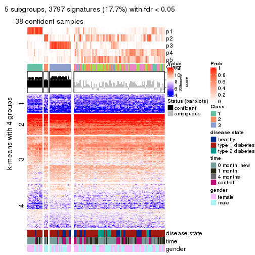
get_signatures(res, k = 6, scale_rows = FALSE)
Compare the overlap of signatures from different k:
compare_signatures(res)
get_signature() returns a data frame invisibly. TO get the list of signatures, the function
call should be assigned to a variable explicitly. In following code, if plot argument is set
to FALSE, no heatmap is plotted while only the differential analysis is performed.
# code only for demonstration
tb = get_signature(res, k = ..., plot = FALSE)
An example of the output of tb is:
#> which_row fdr mean_1 mean_2 scaled_mean_1 scaled_mean_2 km
#> 1 38 0.042760348 8.373488 9.131774 -0.5533452 0.5164555 1
#> 2 40 0.018707592 7.106213 8.469186 -0.6173731 0.5762149 1
#> 3 55 0.019134737 10.221463 11.207825 -0.6159697 0.5749050 1
#> 4 59 0.006059896 5.921854 7.869574 -0.6899429 0.6439467 1
#> 5 60 0.018055526 8.928898 10.211722 -0.6204761 0.5791110 1
#> 6 98 0.009384629 15.714769 14.887706 0.6635654 -0.6193277 2
...
The columns in tb are:
which_row: row indices corresponding to the input matrix.fdr: FDR for the differential test. mean_x: The mean value in group x.scaled_mean_x: The mean value in group x after rows are scaled.km: Row groups if k-means clustering is applied to rows.UMAP plot which shows how samples are separated.
dimension_reduction(res, k = 2, method = "UMAP")
dimension_reduction(res, k = 3, method = "UMAP")
dimension_reduction(res, k = 4, method = "UMAP")
dimension_reduction(res, k = 5, method = "UMAP")
dimension_reduction(res, k = 6, method = "UMAP")
Following heatmap shows how subgroups are split when increasing k:
collect_classes(res)
Test correlation between subgroups and known annotations. If the known annotation is numeric, one-way ANOVA test is applied, and if the known annotation is discrete, chi-squared contingency table test is applied.
test_to_known_factors(res)
#> n disease.state(p) time(p) gender(p) k
#> SD:NMF 109 0.00326 4.19e-05 5.59e-01 2
#> SD:NMF 87 0.00325 4.35e-02 1.17e-03 3
#> SD:NMF 59 0.06435 1.34e-01 6.02e-06 4
#> SD:NMF 38 0.14424 6.29e-02 1.81e-02 5
#> SD:NMF 34 0.01597 2.25e-01 1.47e-02 6
If matrix rows can be associated to genes, consider to use GO_Enrichment(res,
...) to perform function enrichment for the signature genes.
The object with results only for a single top-value method and a single partition method can be extracted as:
res = res_list["CV", "hclust"]
# you can also extract it by
# res = res_list["CV:hclust"]
A summary of res and all the functions that can be applied to it:
res
#> A 'ConsensusPartition' object with k = 2, 3, 4, 5, 6.
#> On a matrix with 21512 rows and 117 columns.
#> Top rows (1000, 2000, 3000, 4000, 5000) are extracted by 'CV' method.
#> Subgroups are detected by 'hclust' method.
#> Performed in total 1250 partitions by row resampling.
#> Best k for subgroups seems to be 3.
#>
#> Following methods can be applied to this 'ConsensusPartition' object:
#> [1] "cola_report" "collect_classes" "collect_plots"
#> [4] "collect_stats" "colnames" "compare_signatures"
#> [7] "consensus_heatmap" "dimension_reduction" "functional_enrichment"
#> [10] "get_anno_col" "get_anno" "get_classes"
#> [13] "get_consensus" "get_matrix" "get_membership"
#> [16] "get_param" "get_signatures" "get_stats"
#> [19] "is_best_k" "is_stable_k" "membership_heatmap"
#> [22] "ncol" "nrow" "plot_ecdf"
#> [25] "rownames" "select_partition_number" "show"
#> [28] "suggest_best_k" "test_to_known_factors"
collect_plots() function collects all the plots made from res for all k (number of partitions)
into one single page to provide an easy and fast comparison between different k.
collect_plots(res)
The plots are:
k and the heatmap of
predicted classes for each k.k.k.k.All the plots in panels can be made by individual functions and they are plotted later in this section.
select_partition_number() produces several plots showing different
statistics for choosing “optimized” k. There are following statistics:
k;k, the area increased is defined as \(A_k - A_{k-1}\).The detailed explanations of these statistics can be found in the cola vignette.
Generally speaking, lower PAC score, higher mean silhouette score or higher
concordance corresponds to better partition. Rand index and Jaccard index
measure how similar the current partition is compared to partition with k-1.
If they are too similar, we won't accept k is better than k-1.
select_partition_number(res)
The numeric values for all these statistics can be obtained by get_stats().
get_stats(res)
#> k 1-PAC mean_silhouette concordance area_increased Rand Jaccard
#> 2 2 0.3142 0.800 0.882 0.1827 0.950 0.950
#> 3 3 0.0703 0.537 0.769 0.8203 0.818 0.808
#> 4 4 0.0439 0.600 0.757 0.2755 0.848 0.806
#> 5 5 0.0459 0.592 0.741 0.1500 0.936 0.902
#> 6 6 0.0829 0.574 0.727 0.0846 1.000 1.000
suggest_best_k() suggests the best \(k\) based on these statistics. The rules are as follows:
NA.suggest_best_k(res)
#> [1] 3
Following shows the table of the partitions (You need to click the show/hide
code output link to see it). The membership matrix (columns with name p*)
is inferred by
clue::cl_consensus()
function with the SE method. Basically the value in the membership matrix
represents the probability to belong to a certain group. The finall class
label for an item is determined with the group with highest probability it
belongs to.
In get_classes() function, the entropy is calculated from the membership
matrix and the silhouette score is calculated from the consensus matrix.
cbind(get_classes(res, k = 2), get_membership(res, k = 2))
#> class entropy silhouette p1 p2
#> GSM254177 2 0.343 0.859 0.064 0.936
#> GSM254179 2 0.469 0.846 0.100 0.900
#> GSM254180 2 0.260 0.868 0.044 0.956
#> GSM254182 1 0.932 0.758 0.652 0.348
#> GSM254183 1 0.961 0.813 0.616 0.384
#> GSM254277 2 0.430 0.867 0.088 0.912
#> GSM254278 2 0.311 0.854 0.056 0.944
#> GSM254281 2 0.278 0.868 0.048 0.952
#> GSM254282 2 0.242 0.862 0.040 0.960
#> GSM254284 2 0.343 0.866 0.064 0.936
#> GSM254286 2 0.482 0.856 0.104 0.896
#> GSM254290 2 0.625 0.784 0.156 0.844
#> GSM254291 2 0.343 0.860 0.064 0.936
#> GSM254293 2 0.416 0.868 0.084 0.916
#> GSM254178 2 0.767 0.699 0.224 0.776
#> GSM254181 2 0.358 0.858 0.068 0.932
#> GSM254279 2 0.311 0.850 0.056 0.944
#> GSM254280 2 0.311 0.853 0.056 0.944
#> GSM254283 2 0.204 0.865 0.032 0.968
#> GSM254285 2 0.343 0.854 0.064 0.936
#> GSM254287 2 0.999 -0.733 0.484 0.516
#> GSM254288 1 0.999 0.715 0.516 0.484
#> GSM254289 2 0.855 0.385 0.280 0.720
#> GSM254292 2 0.821 0.549 0.256 0.744
#> GSM254184 2 0.278 0.854 0.048 0.952
#> GSM254185 2 0.327 0.849 0.060 0.940
#> GSM254187 2 0.311 0.850 0.056 0.944
#> GSM254189 2 0.278 0.853 0.048 0.952
#> GSM254190 2 0.671 0.776 0.176 0.824
#> GSM254191 2 0.278 0.854 0.048 0.952
#> GSM254192 2 0.204 0.858 0.032 0.968
#> GSM254193 2 0.653 0.778 0.168 0.832
#> GSM254199 2 0.634 0.800 0.160 0.840
#> GSM254203 2 0.767 0.701 0.224 0.776
#> GSM254206 2 0.605 0.810 0.148 0.852
#> GSM254210 2 0.456 0.854 0.096 0.904
#> GSM254211 2 0.745 0.732 0.212 0.788
#> GSM254215 2 0.295 0.850 0.052 0.948
#> GSM254218 2 0.204 0.861 0.032 0.968
#> GSM254230 2 0.745 0.715 0.212 0.788
#> GSM254236 2 0.295 0.850 0.052 0.948
#> GSM254244 2 0.802 0.675 0.244 0.756
#> GSM254247 2 0.839 0.594 0.268 0.732
#> GSM254248 2 0.443 0.852 0.092 0.908
#> GSM254254 2 0.204 0.858 0.032 0.968
#> GSM254257 2 0.184 0.862 0.028 0.972
#> GSM254258 2 0.311 0.850 0.056 0.944
#> GSM254261 2 0.224 0.859 0.036 0.964
#> GSM254264 2 0.358 0.850 0.068 0.932
#> GSM254186 2 0.327 0.850 0.060 0.940
#> GSM254188 2 0.295 0.849 0.052 0.948
#> GSM254194 2 0.242 0.858 0.040 0.960
#> GSM254195 2 0.833 0.605 0.264 0.736
#> GSM254196 2 0.653 0.799 0.168 0.832
#> GSM254200 2 0.343 0.852 0.064 0.936
#> GSM254209 2 0.204 0.861 0.032 0.968
#> GSM254214 2 0.295 0.867 0.052 0.948
#> GSM254221 2 0.644 0.811 0.164 0.836
#> GSM254224 2 0.469 0.858 0.100 0.900
#> GSM254227 2 0.388 0.869 0.076 0.924
#> GSM254233 2 0.443 0.853 0.092 0.908
#> GSM254235 2 0.767 0.704 0.224 0.776
#> GSM254239 2 0.574 0.826 0.136 0.864
#> GSM254241 2 0.738 0.745 0.208 0.792
#> GSM254251 2 0.260 0.863 0.044 0.956
#> GSM254262 2 0.278 0.852 0.048 0.952
#> GSM254263 2 0.311 0.852 0.056 0.944
#> GSM254197 2 0.781 0.682 0.232 0.768
#> GSM254201 2 0.494 0.846 0.108 0.892
#> GSM254204 2 0.506 0.839 0.112 0.888
#> GSM254216 2 0.443 0.851 0.092 0.908
#> GSM254228 2 0.775 0.687 0.228 0.772
#> GSM254242 2 0.689 0.777 0.184 0.816
#> GSM254245 2 0.482 0.848 0.104 0.896
#> GSM254252 2 0.788 0.622 0.236 0.764
#> GSM254255 2 0.402 0.860 0.080 0.920
#> GSM254259 2 0.775 0.687 0.228 0.772
#> GSM254207 2 0.260 0.863 0.044 0.956
#> GSM254212 2 0.634 0.803 0.160 0.840
#> GSM254219 2 0.671 0.785 0.176 0.824
#> GSM254222 2 0.311 0.865 0.056 0.944
#> GSM254225 2 0.311 0.867 0.056 0.944
#> GSM254231 2 0.416 0.853 0.084 0.916
#> GSM254234 2 0.373 0.866 0.072 0.928
#> GSM254237 2 0.430 0.860 0.088 0.912
#> GSM254249 2 0.388 0.862 0.076 0.924
#> GSM254198 2 0.494 0.850 0.108 0.892
#> GSM254202 2 0.605 0.821 0.148 0.852
#> GSM254205 2 0.605 0.816 0.148 0.852
#> GSM254217 2 0.402 0.858 0.080 0.920
#> GSM254229 2 0.358 0.867 0.068 0.932
#> GSM254243 2 0.653 0.785 0.168 0.832
#> GSM254246 2 0.781 0.686 0.232 0.768
#> GSM254253 2 0.615 0.820 0.152 0.848
#> GSM254256 2 0.295 0.867 0.052 0.948
#> GSM254260 2 0.615 0.818 0.152 0.848
#> GSM254208 2 0.327 0.865 0.060 0.940
#> GSM254213 2 0.278 0.868 0.048 0.952
#> GSM254220 2 0.949 0.361 0.368 0.632
#> GSM254223 2 0.327 0.864 0.060 0.940
#> GSM254226 2 0.278 0.865 0.048 0.952
#> GSM254232 2 0.260 0.868 0.044 0.956
#> GSM254238 2 0.443 0.854 0.092 0.908
#> GSM254240 2 0.689 0.770 0.184 0.816
#> GSM254250 2 0.861 0.600 0.284 0.716
#> GSM254268 2 0.260 0.869 0.044 0.956
#> GSM254269 2 0.278 0.867 0.048 0.952
#> GSM254270 2 0.518 0.846 0.116 0.884
#> GSM254272 2 0.260 0.866 0.044 0.956
#> GSM254273 2 0.278 0.867 0.048 0.952
#> GSM254274 2 0.327 0.869 0.060 0.940
#> GSM254265 2 0.311 0.869 0.056 0.944
#> GSM254266 2 0.402 0.867 0.080 0.920
#> GSM254267 2 0.327 0.865 0.060 0.940
#> GSM254271 2 0.358 0.867 0.068 0.932
#> GSM254275 2 0.278 0.869 0.048 0.952
#> GSM254276 2 0.260 0.863 0.044 0.956
cbind(get_classes(res, k = 3), get_membership(res, k = 3))
#> class entropy silhouette p1 p2 p3
#> GSM254177 2 0.380 0.723 0.092 0.884 0.024
#> GSM254179 2 0.536 0.642 0.168 0.800 0.032
#> GSM254180 2 0.384 0.719 0.116 0.872 0.012
#> GSM254182 3 0.885 0.526 0.252 0.176 0.572
#> GSM254183 3 0.899 0.681 0.176 0.272 0.552
#> GSM254277 2 0.414 0.712 0.124 0.860 0.016
#> GSM254278 2 0.175 0.711 0.048 0.952 0.000
#> GSM254281 2 0.397 0.713 0.132 0.860 0.008
#> GSM254282 2 0.220 0.721 0.056 0.940 0.004
#> GSM254284 2 0.364 0.713 0.124 0.872 0.004
#> GSM254286 2 0.564 0.578 0.220 0.760 0.020
#> GSM254290 2 0.593 0.586 0.164 0.780 0.056
#> GSM254291 2 0.275 0.724 0.064 0.924 0.012
#> GSM254293 2 0.420 0.710 0.136 0.852 0.012
#> GSM254178 1 0.650 0.853 0.536 0.460 0.004
#> GSM254181 2 0.207 0.723 0.060 0.940 0.000
#> GSM254279 2 0.196 0.707 0.056 0.944 0.000
#> GSM254280 2 0.226 0.712 0.068 0.932 0.000
#> GSM254283 2 0.327 0.717 0.104 0.892 0.004
#> GSM254285 2 0.259 0.714 0.072 0.924 0.004
#> GSM254287 3 0.901 0.603 0.132 0.408 0.460
#> GSM254288 3 0.883 0.649 0.120 0.384 0.496
#> GSM254289 2 0.813 0.230 0.148 0.644 0.208
#> GSM254292 2 0.941 -0.233 0.256 0.508 0.236
#> GSM254184 2 0.268 0.714 0.076 0.920 0.004
#> GSM254185 2 0.210 0.710 0.052 0.944 0.004
#> GSM254187 2 0.175 0.708 0.048 0.952 0.000
#> GSM254189 2 0.277 0.719 0.072 0.920 0.008
#> GSM254190 2 0.641 -0.405 0.420 0.576 0.004
#> GSM254191 2 0.295 0.715 0.088 0.908 0.004
#> GSM254192 2 0.217 0.717 0.048 0.944 0.008
#> GSM254193 2 0.661 -0.503 0.432 0.560 0.008
#> GSM254199 2 0.593 -0.143 0.356 0.644 0.000
#> GSM254203 1 0.650 0.844 0.528 0.468 0.004
#> GSM254206 2 0.678 -0.254 0.396 0.588 0.016
#> GSM254210 2 0.537 0.603 0.208 0.776 0.016
#> GSM254211 1 0.652 0.760 0.500 0.496 0.004
#> GSM254215 2 0.199 0.708 0.048 0.948 0.004
#> GSM254218 2 0.176 0.722 0.040 0.956 0.004
#> GSM254230 1 0.668 0.809 0.504 0.488 0.008
#> GSM254236 2 0.210 0.709 0.052 0.944 0.004
#> GSM254244 2 0.758 -0.692 0.460 0.500 0.040
#> GSM254247 2 0.844 -0.329 0.388 0.520 0.092
#> GSM254248 2 0.516 0.663 0.140 0.820 0.040
#> GSM254254 2 0.240 0.721 0.064 0.932 0.004
#> GSM254257 2 0.240 0.722 0.064 0.932 0.004
#> GSM254258 2 0.245 0.708 0.076 0.924 0.000
#> GSM254261 2 0.259 0.724 0.072 0.924 0.004
#> GSM254264 2 0.250 0.708 0.068 0.928 0.004
#> GSM254186 2 0.196 0.707 0.056 0.944 0.000
#> GSM254188 2 0.207 0.707 0.060 0.940 0.000
#> GSM254194 2 0.245 0.717 0.076 0.924 0.000
#> GSM254195 2 0.828 -0.536 0.404 0.516 0.080
#> GSM254196 2 0.650 0.247 0.316 0.664 0.020
#> GSM254200 2 0.250 0.711 0.068 0.928 0.004
#> GSM254209 2 0.250 0.726 0.068 0.928 0.004
#> GSM254214 2 0.265 0.726 0.060 0.928 0.012
#> GSM254221 2 0.693 0.273 0.296 0.664 0.040
#> GSM254224 2 0.522 0.667 0.176 0.800 0.024
#> GSM254227 2 0.448 0.703 0.144 0.840 0.016
#> GSM254233 2 0.555 0.581 0.224 0.760 0.016
#> GSM254235 1 0.629 0.836 0.532 0.468 0.000
#> GSM254239 2 0.611 0.623 0.184 0.764 0.052
#> GSM254241 2 0.680 -0.608 0.456 0.532 0.012
#> GSM254251 2 0.220 0.724 0.056 0.940 0.004
#> GSM254262 2 0.250 0.710 0.068 0.928 0.004
#> GSM254263 2 0.250 0.707 0.068 0.928 0.004
#> GSM254197 1 0.648 0.856 0.548 0.448 0.004
#> GSM254201 2 0.599 0.407 0.268 0.716 0.016
#> GSM254204 2 0.578 0.349 0.300 0.696 0.004
#> GSM254216 2 0.569 0.447 0.268 0.724 0.008
#> GSM254228 1 0.649 0.859 0.540 0.456 0.004
#> GSM254242 2 0.691 -0.342 0.396 0.584 0.020
#> GSM254245 2 0.607 0.260 0.316 0.676 0.008
#> GSM254252 2 0.829 0.117 0.236 0.624 0.140
#> GSM254255 2 0.501 0.625 0.204 0.788 0.008
#> GSM254259 1 0.649 0.860 0.540 0.456 0.004
#> GSM254207 2 0.258 0.728 0.064 0.928 0.008
#> GSM254212 2 0.624 0.633 0.160 0.768 0.072
#> GSM254219 2 0.682 -0.129 0.348 0.628 0.024
#> GSM254222 2 0.378 0.699 0.132 0.864 0.004
#> GSM254225 2 0.346 0.724 0.096 0.892 0.012
#> GSM254231 2 0.520 0.596 0.220 0.772 0.008
#> GSM254234 2 0.385 0.708 0.136 0.860 0.004
#> GSM254237 2 0.538 0.634 0.188 0.788 0.024
#> GSM254249 2 0.465 0.659 0.176 0.816 0.008
#> GSM254198 2 0.573 0.626 0.196 0.772 0.032
#> GSM254202 2 0.712 0.160 0.324 0.636 0.040
#> GSM254205 2 0.626 0.450 0.256 0.716 0.028
#> GSM254217 2 0.542 0.551 0.240 0.752 0.008
#> GSM254229 2 0.445 0.696 0.152 0.836 0.012
#> GSM254243 2 0.675 -0.384 0.388 0.596 0.016
#> GSM254246 1 0.647 0.856 0.552 0.444 0.004
#> GSM254253 2 0.617 0.232 0.308 0.680 0.012
#> GSM254256 2 0.383 0.713 0.124 0.868 0.008
#> GSM254260 2 0.656 0.310 0.276 0.692 0.032
#> GSM254208 2 0.357 0.706 0.120 0.876 0.004
#> GSM254213 2 0.338 0.723 0.092 0.896 0.012
#> GSM254220 1 0.889 0.484 0.516 0.352 0.132
#> GSM254223 2 0.392 0.697 0.140 0.856 0.004
#> GSM254226 2 0.334 0.715 0.120 0.880 0.000
#> GSM254232 2 0.368 0.709 0.116 0.876 0.008
#> GSM254238 2 0.554 0.597 0.200 0.776 0.024
#> GSM254240 2 0.695 -0.467 0.408 0.572 0.020
#> GSM254250 1 0.845 0.643 0.480 0.432 0.088
#> GSM254268 2 0.382 0.710 0.148 0.852 0.000
#> GSM254269 2 0.382 0.707 0.148 0.852 0.000
#> GSM254270 2 0.625 0.454 0.268 0.708 0.024
#> GSM254272 2 0.377 0.722 0.112 0.876 0.012
#> GSM254273 2 0.362 0.724 0.104 0.884 0.012
#> GSM254274 2 0.385 0.723 0.108 0.876 0.016
#> GSM254265 2 0.420 0.703 0.136 0.852 0.012
#> GSM254266 2 0.371 0.724 0.128 0.868 0.004
#> GSM254267 2 0.286 0.724 0.084 0.912 0.004
#> GSM254271 2 0.296 0.726 0.100 0.900 0.000
#> GSM254275 2 0.400 0.709 0.116 0.868 0.016
#> GSM254276 2 0.263 0.726 0.084 0.916 0.000
cbind(get_classes(res, k = 4), get_membership(res, k = 4))
#> class entropy silhouette p1 p2 p3 p4
#> GSM254177 2 0.376 0.75832 0.104 0.848 0.000 0.048
#> GSM254179 2 0.563 0.66651 0.144 0.756 0.028 0.072
#> GSM254180 2 0.371 0.75698 0.148 0.832 0.000 0.020
#> GSM254182 3 0.349 0.00000 0.020 0.032 0.880 0.068
#> GSM254183 4 0.632 0.46785 0.060 0.216 0.036 0.688
#> GSM254277 2 0.384 0.74629 0.128 0.840 0.004 0.028
#> GSM254278 2 0.164 0.74855 0.044 0.948 0.000 0.008
#> GSM254281 2 0.395 0.74089 0.184 0.804 0.004 0.008
#> GSM254282 2 0.261 0.76020 0.096 0.896 0.000 0.008
#> GSM254284 2 0.354 0.74474 0.176 0.820 0.000 0.004
#> GSM254286 2 0.566 0.55454 0.264 0.676 0.000 0.060
#> GSM254290 2 0.614 0.60578 0.128 0.732 0.040 0.100
#> GSM254291 2 0.256 0.76260 0.056 0.912 0.000 0.032
#> GSM254293 2 0.366 0.74362 0.136 0.840 0.000 0.024
#> GSM254178 1 0.447 0.70896 0.752 0.232 0.000 0.016
#> GSM254181 2 0.225 0.76181 0.052 0.928 0.004 0.016
#> GSM254279 2 0.155 0.74362 0.040 0.952 0.000 0.008
#> GSM254280 2 0.210 0.74973 0.060 0.928 0.000 0.012
#> GSM254283 2 0.310 0.75398 0.116 0.872 0.004 0.008
#> GSM254285 2 0.230 0.75174 0.064 0.920 0.000 0.016
#> GSM254287 4 0.658 0.75639 0.076 0.364 0.004 0.556
#> GSM254288 4 0.685 0.77110 0.068 0.344 0.020 0.568
#> GSM254289 2 0.654 0.17988 0.112 0.604 0.000 0.284
#> GSM254292 2 0.868 -0.34168 0.172 0.416 0.352 0.060
#> GSM254184 2 0.233 0.75033 0.088 0.908 0.000 0.004
#> GSM254185 2 0.158 0.74702 0.036 0.952 0.000 0.012
#> GSM254187 2 0.172 0.74845 0.048 0.944 0.000 0.008
#> GSM254189 2 0.248 0.75585 0.088 0.904 0.000 0.008
#> GSM254190 1 0.537 0.57453 0.576 0.412 0.008 0.004
#> GSM254191 2 0.265 0.74769 0.108 0.888 0.000 0.004
#> GSM254192 2 0.164 0.75489 0.044 0.948 0.000 0.008
#> GSM254193 1 0.544 0.63542 0.592 0.392 0.008 0.008
#> GSM254199 1 0.561 0.41787 0.500 0.480 0.000 0.020
#> GSM254203 1 0.434 0.71438 0.752 0.240 0.004 0.004
#> GSM254206 1 0.650 0.48048 0.504 0.440 0.016 0.040
#> GSM254210 2 0.562 0.58699 0.216 0.720 0.016 0.048
#> GSM254211 1 0.495 0.72968 0.680 0.308 0.008 0.004
#> GSM254215 2 0.149 0.74494 0.032 0.956 0.000 0.012
#> GSM254218 2 0.205 0.76064 0.072 0.924 0.000 0.004
#> GSM254230 1 0.538 0.72841 0.672 0.300 0.008 0.020
#> GSM254236 2 0.158 0.74532 0.036 0.952 0.000 0.012
#> GSM254244 1 0.628 0.65893 0.620 0.320 0.028 0.032
#> GSM254247 2 0.910 -0.34517 0.300 0.396 0.076 0.228
#> GSM254248 2 0.553 0.63581 0.176 0.748 0.024 0.052
#> GSM254254 2 0.205 0.76088 0.072 0.924 0.000 0.004
#> GSM254257 2 0.247 0.76048 0.096 0.900 0.000 0.004
#> GSM254258 2 0.202 0.74524 0.056 0.932 0.000 0.012
#> GSM254261 2 0.292 0.76160 0.104 0.884 0.004 0.008
#> GSM254264 2 0.216 0.74623 0.048 0.932 0.004 0.016
#> GSM254186 2 0.149 0.74305 0.032 0.956 0.000 0.012
#> GSM254188 2 0.145 0.74359 0.036 0.956 0.000 0.008
#> GSM254194 2 0.227 0.75753 0.084 0.912 0.000 0.004
#> GSM254195 1 0.797 0.56402 0.464 0.384 0.104 0.048
#> GSM254196 2 0.617 0.08920 0.396 0.560 0.012 0.032
#> GSM254200 2 0.185 0.74901 0.048 0.940 0.000 0.012
#> GSM254209 2 0.286 0.76448 0.112 0.880 0.000 0.008
#> GSM254214 2 0.280 0.76398 0.092 0.892 0.000 0.016
#> GSM254221 2 0.686 0.14834 0.348 0.564 0.020 0.068
#> GSM254224 2 0.496 0.68162 0.212 0.748 0.004 0.036
#> GSM254227 2 0.456 0.73242 0.176 0.788 0.008 0.028
#> GSM254233 2 0.552 0.55139 0.272 0.688 0.012 0.028
#> GSM254235 1 0.433 0.71667 0.748 0.244 0.000 0.008
#> GSM254239 2 0.556 0.64752 0.196 0.724 0.004 0.076
#> GSM254241 1 0.629 0.64862 0.584 0.364 0.024 0.028
#> GSM254251 2 0.246 0.76116 0.076 0.912 0.004 0.008
#> GSM254262 2 0.212 0.74699 0.068 0.924 0.000 0.008
#> GSM254263 2 0.214 0.74445 0.056 0.928 0.000 0.016
#> GSM254197 1 0.436 0.69315 0.764 0.220 0.000 0.016
#> GSM254201 2 0.579 0.29748 0.360 0.608 0.016 0.016
#> GSM254204 2 0.559 0.17798 0.404 0.576 0.008 0.012
#> GSM254216 2 0.542 0.43204 0.328 0.648 0.008 0.016
#> GSM254228 1 0.457 0.69238 0.756 0.220 0.000 0.024
#> GSM254242 1 0.626 0.48825 0.520 0.436 0.028 0.016
#> GSM254245 2 0.618 -0.08264 0.420 0.536 0.008 0.036
#> GSM254252 2 0.826 -0.00064 0.216 0.508 0.040 0.236
#> GSM254255 2 0.527 0.61184 0.264 0.704 0.016 0.016
#> GSM254259 1 0.461 0.70818 0.744 0.236 0.000 0.020
#> GSM254207 2 0.261 0.76640 0.088 0.900 0.000 0.012
#> GSM254212 2 0.555 0.65732 0.164 0.736 0.004 0.096
#> GSM254219 2 0.734 -0.37098 0.428 0.468 0.032 0.072
#> GSM254222 2 0.363 0.73657 0.156 0.832 0.004 0.008
#> GSM254225 2 0.368 0.75716 0.132 0.844 0.004 0.020
#> GSM254231 2 0.524 0.57629 0.264 0.704 0.008 0.024
#> GSM254234 2 0.374 0.73938 0.160 0.824 0.000 0.016
#> GSM254237 2 0.494 0.65864 0.220 0.740 0.000 0.040
#> GSM254249 2 0.512 0.65914 0.220 0.740 0.012 0.028
#> GSM254198 2 0.613 0.60901 0.232 0.688 0.028 0.052
#> GSM254202 2 0.731 0.04397 0.348 0.544 0.052 0.056
#> GSM254205 2 0.680 0.42012 0.276 0.620 0.024 0.080
#> GSM254217 2 0.528 0.53805 0.300 0.676 0.012 0.012
#> GSM254229 2 0.459 0.72123 0.188 0.780 0.008 0.024
#> GSM254243 1 0.660 0.63488 0.540 0.392 0.012 0.056
#> GSM254246 1 0.447 0.69601 0.760 0.220 0.000 0.020
#> GSM254253 2 0.616 0.01046 0.420 0.540 0.020 0.020
#> GSM254256 2 0.426 0.73222 0.176 0.800 0.012 0.012
#> GSM254260 2 0.717 0.01119 0.368 0.536 0.044 0.052
#> GSM254208 2 0.358 0.73786 0.152 0.836 0.004 0.008
#> GSM254213 2 0.355 0.76063 0.128 0.848 0.000 0.024
#> GSM254220 1 0.886 0.01771 0.508 0.152 0.144 0.196
#> GSM254223 2 0.390 0.72956 0.168 0.816 0.004 0.012
#> GSM254226 2 0.329 0.75161 0.140 0.852 0.004 0.004
#> GSM254232 2 0.384 0.74211 0.144 0.832 0.004 0.020
#> GSM254238 2 0.520 0.61161 0.264 0.704 0.004 0.028
#> GSM254240 1 0.671 0.61939 0.536 0.388 0.012 0.064
#> GSM254250 1 0.855 0.18770 0.524 0.236 0.100 0.140
#> GSM254268 2 0.403 0.74391 0.180 0.804 0.004 0.012
#> GSM254269 2 0.416 0.73017 0.188 0.792 0.000 0.020
#> GSM254270 2 0.599 0.40757 0.344 0.612 0.012 0.032
#> GSM254272 2 0.404 0.75574 0.160 0.816 0.004 0.020
#> GSM254273 2 0.361 0.76196 0.132 0.844 0.000 0.024
#> GSM254274 2 0.376 0.76112 0.144 0.832 0.000 0.024
#> GSM254265 2 0.442 0.72879 0.176 0.788 0.000 0.036
#> GSM254266 2 0.339 0.76323 0.124 0.856 0.000 0.020
#> GSM254267 2 0.303 0.76036 0.124 0.868 0.000 0.008
#> GSM254271 2 0.341 0.76262 0.120 0.860 0.004 0.016
#> GSM254275 2 0.389 0.75100 0.140 0.832 0.004 0.024
#> GSM254276 2 0.313 0.76318 0.100 0.880 0.008 0.012
cbind(get_classes(res, k = 5), get_membership(res, k = 5))
#> class entropy silhouette p1 p2 p3 p4 p5
#> GSM254177 2 0.420 0.7611 0.104 0.808 0.060 0.028 0.000
#> GSM254179 2 0.605 0.6506 0.124 0.704 0.064 0.088 0.020
#> GSM254180 2 0.420 0.7606 0.168 0.780 0.040 0.012 0.000
#> GSM254182 5 0.113 -0.1422 0.012 0.004 0.012 0.004 0.968
#> GSM254183 3 0.448 0.4414 0.024 0.148 0.784 0.008 0.036
#> GSM254277 2 0.479 0.7419 0.120 0.776 0.060 0.040 0.004
#> GSM254278 2 0.185 0.7550 0.036 0.936 0.020 0.008 0.000
#> GSM254281 2 0.481 0.7343 0.196 0.736 0.040 0.028 0.000
#> GSM254282 2 0.314 0.7712 0.108 0.856 0.032 0.004 0.000
#> GSM254284 2 0.403 0.7498 0.184 0.780 0.024 0.012 0.000
#> GSM254286 2 0.652 0.4849 0.228 0.608 0.088 0.076 0.000
#> GSM254290 2 0.611 0.6102 0.092 0.704 0.092 0.092 0.020
#> GSM254291 2 0.281 0.7736 0.068 0.888 0.032 0.012 0.000
#> GSM254293 2 0.473 0.7355 0.132 0.776 0.044 0.044 0.004
#> GSM254178 1 0.311 0.5867 0.852 0.124 0.008 0.016 0.000
#> GSM254181 2 0.287 0.7739 0.072 0.884 0.032 0.012 0.000
#> GSM254279 2 0.160 0.7505 0.024 0.948 0.020 0.008 0.000
#> GSM254280 2 0.238 0.7561 0.048 0.912 0.028 0.012 0.000
#> GSM254283 2 0.348 0.7670 0.116 0.840 0.032 0.012 0.000
#> GSM254285 2 0.252 0.7599 0.056 0.904 0.028 0.012 0.000
#> GSM254287 3 0.530 0.6364 0.032 0.312 0.632 0.024 0.000
#> GSM254288 3 0.566 0.6613 0.040 0.296 0.632 0.020 0.012
#> GSM254289 2 0.596 0.1885 0.076 0.572 0.332 0.020 0.000
#> GSM254292 5 0.888 -0.3905 0.092 0.340 0.076 0.144 0.348
#> GSM254184 2 0.317 0.7544 0.104 0.860 0.020 0.016 0.000
#> GSM254185 2 0.189 0.7524 0.024 0.936 0.028 0.012 0.000
#> GSM254187 2 0.193 0.7534 0.040 0.932 0.020 0.008 0.000
#> GSM254189 2 0.299 0.7637 0.080 0.876 0.032 0.012 0.000
#> GSM254190 1 0.453 0.5602 0.672 0.304 0.004 0.020 0.000
#> GSM254191 2 0.320 0.7505 0.124 0.848 0.020 0.008 0.000
#> GSM254192 2 0.203 0.7630 0.040 0.928 0.024 0.008 0.000
#> GSM254193 1 0.471 0.5772 0.680 0.284 0.008 0.028 0.000
#> GSM254199 1 0.521 0.4794 0.576 0.384 0.028 0.012 0.000
#> GSM254203 1 0.263 0.5744 0.876 0.108 0.000 0.016 0.000
#> GSM254206 1 0.672 0.4430 0.484 0.376 0.028 0.108 0.004
#> GSM254210 2 0.605 0.5609 0.200 0.664 0.072 0.060 0.004
#> GSM254211 1 0.406 0.6202 0.772 0.196 0.004 0.024 0.004
#> GSM254215 2 0.178 0.7501 0.028 0.940 0.024 0.008 0.000
#> GSM254218 2 0.264 0.7725 0.084 0.888 0.024 0.004 0.000
#> GSM254230 1 0.418 0.6084 0.780 0.172 0.016 0.032 0.000
#> GSM254236 2 0.187 0.7507 0.024 0.936 0.032 0.008 0.000
#> GSM254244 1 0.628 0.4186 0.636 0.212 0.032 0.112 0.008
#> GSM254247 4 0.802 0.0412 0.124 0.360 0.092 0.404 0.020
#> GSM254248 2 0.576 0.6125 0.176 0.696 0.080 0.040 0.008
#> GSM254254 2 0.257 0.7689 0.064 0.900 0.024 0.012 0.000
#> GSM254257 2 0.328 0.7717 0.092 0.860 0.028 0.020 0.000
#> GSM254258 2 0.224 0.7483 0.040 0.920 0.024 0.016 0.000
#> GSM254261 2 0.342 0.7709 0.096 0.852 0.032 0.020 0.000
#> GSM254264 2 0.223 0.7493 0.036 0.920 0.032 0.012 0.000
#> GSM254186 2 0.169 0.7465 0.028 0.944 0.020 0.008 0.000
#> GSM254188 2 0.188 0.7501 0.032 0.936 0.020 0.012 0.000
#> GSM254194 2 0.295 0.7675 0.076 0.880 0.028 0.016 0.000
#> GSM254195 1 0.806 0.3678 0.468 0.304 0.056 0.068 0.104
#> GSM254196 2 0.649 -0.0565 0.408 0.484 0.044 0.060 0.004
#> GSM254200 2 0.204 0.7548 0.032 0.928 0.032 0.008 0.000
#> GSM254209 2 0.358 0.7747 0.116 0.836 0.032 0.016 0.000
#> GSM254214 2 0.320 0.7717 0.124 0.848 0.020 0.008 0.000
#> GSM254221 2 0.694 0.1504 0.324 0.520 0.064 0.088 0.004
#> GSM254224 2 0.511 0.6876 0.228 0.700 0.048 0.024 0.000
#> GSM254227 2 0.468 0.7442 0.180 0.756 0.032 0.028 0.004
#> GSM254233 2 0.572 0.5301 0.280 0.632 0.040 0.048 0.000
#> GSM254235 1 0.326 0.5932 0.840 0.132 0.004 0.024 0.000
#> GSM254239 2 0.537 0.6502 0.196 0.696 0.088 0.020 0.000
#> GSM254241 1 0.630 0.5394 0.600 0.276 0.040 0.080 0.004
#> GSM254251 2 0.292 0.7708 0.080 0.880 0.024 0.016 0.000
#> GSM254262 2 0.265 0.7550 0.076 0.892 0.024 0.008 0.000
#> GSM254263 2 0.223 0.7507 0.040 0.920 0.028 0.012 0.000
#> GSM254197 1 0.280 0.5553 0.876 0.100 0.008 0.016 0.000
#> GSM254201 2 0.610 0.2273 0.360 0.544 0.028 0.068 0.000
#> GSM254204 2 0.604 0.0938 0.412 0.504 0.028 0.056 0.000
#> GSM254216 2 0.558 0.4046 0.344 0.592 0.032 0.032 0.000
#> GSM254228 1 0.302 0.5541 0.868 0.100 0.016 0.016 0.000
#> GSM254242 1 0.618 0.5118 0.556 0.344 0.016 0.076 0.008
#> GSM254245 1 0.655 0.2397 0.456 0.432 0.040 0.068 0.004
#> GSM254252 2 0.831 0.0482 0.168 0.472 0.196 0.140 0.024
#> GSM254255 2 0.574 0.6201 0.256 0.652 0.048 0.040 0.004
#> GSM254259 1 0.281 0.5657 0.872 0.108 0.012 0.008 0.000
#> GSM254207 2 0.337 0.7757 0.120 0.844 0.020 0.016 0.000
#> GSM254212 2 0.562 0.6591 0.152 0.692 0.128 0.028 0.000
#> GSM254219 1 0.713 0.4011 0.436 0.388 0.060 0.116 0.000
#> GSM254222 2 0.381 0.7475 0.164 0.800 0.028 0.008 0.000
#> GSM254225 2 0.398 0.7658 0.152 0.800 0.032 0.016 0.000
#> GSM254231 2 0.554 0.5561 0.272 0.648 0.036 0.044 0.000
#> GSM254234 2 0.413 0.7473 0.172 0.780 0.040 0.008 0.000
#> GSM254237 2 0.508 0.6535 0.236 0.692 0.060 0.012 0.000
#> GSM254249 2 0.523 0.6524 0.232 0.692 0.040 0.036 0.000
#> GSM254198 2 0.653 0.5932 0.200 0.640 0.084 0.060 0.016
#> GSM254202 2 0.750 -0.0226 0.304 0.476 0.040 0.164 0.016
#> GSM254205 2 0.693 0.4110 0.236 0.584 0.088 0.084 0.008
#> GSM254217 2 0.549 0.5310 0.304 0.628 0.036 0.032 0.000
#> GSM254229 2 0.481 0.7277 0.196 0.736 0.040 0.028 0.000
#> GSM254243 1 0.651 0.5543 0.568 0.300 0.040 0.088 0.004
#> GSM254246 1 0.259 0.5453 0.888 0.092 0.012 0.008 0.000
#> GSM254253 2 0.584 -0.0740 0.456 0.480 0.020 0.040 0.004
#> GSM254256 2 0.463 0.7394 0.184 0.756 0.032 0.024 0.004
#> GSM254260 2 0.733 -0.0529 0.348 0.468 0.060 0.116 0.008
#> GSM254208 2 0.366 0.7442 0.176 0.800 0.016 0.008 0.000
#> GSM254213 2 0.392 0.7673 0.144 0.804 0.044 0.008 0.000
#> GSM254220 4 0.738 0.2642 0.288 0.108 0.024 0.524 0.056
#> GSM254223 2 0.416 0.7411 0.164 0.784 0.040 0.012 0.000
#> GSM254226 2 0.373 0.7634 0.136 0.820 0.028 0.016 0.000
#> GSM254232 2 0.412 0.7525 0.160 0.788 0.040 0.012 0.000
#> GSM254238 2 0.554 0.5640 0.288 0.636 0.048 0.028 0.000
#> GSM254240 1 0.642 0.5483 0.592 0.280 0.064 0.060 0.004
#> GSM254250 4 0.765 0.1875 0.216 0.144 0.084 0.536 0.020
#> GSM254268 2 0.452 0.7533 0.168 0.768 0.044 0.016 0.004
#> GSM254269 2 0.474 0.7323 0.180 0.748 0.044 0.028 0.000
#> GSM254270 2 0.658 0.3288 0.336 0.540 0.060 0.060 0.004
#> GSM254272 2 0.478 0.7580 0.148 0.764 0.060 0.024 0.004
#> GSM254273 2 0.391 0.7688 0.148 0.800 0.048 0.004 0.000
#> GSM254274 2 0.438 0.7648 0.156 0.772 0.064 0.008 0.000
#> GSM254265 2 0.504 0.7285 0.152 0.744 0.064 0.040 0.000
#> GSM254266 2 0.357 0.7729 0.144 0.820 0.032 0.004 0.000
#> GSM254267 2 0.357 0.7701 0.124 0.828 0.044 0.004 0.000
#> GSM254271 2 0.367 0.7699 0.128 0.824 0.040 0.008 0.000
#> GSM254275 2 0.433 0.7573 0.148 0.784 0.048 0.020 0.000
#> GSM254276 2 0.313 0.7719 0.104 0.860 0.028 0.008 0.000
cbind(get_classes(res, k = 6), get_membership(res, k = 6))
#> class entropy silhouette p1 p2 p3 p4 p5 p6
#> GSM254177 2 0.4055 0.75782 0.108 0.796 0.040 0.004 0.000 0.052
#> GSM254179 2 0.6309 0.63103 0.108 0.652 0.056 0.028 0.020 0.136
#> GSM254180 2 0.4536 0.75378 0.160 0.752 0.024 0.020 0.000 0.044
#> GSM254182 5 0.0146 -0.25733 0.004 0.000 0.000 0.000 0.996 0.000
#> GSM254183 3 0.3600 0.13874 0.012 0.064 0.844 0.052 0.012 0.016
#> GSM254277 2 0.5208 0.73164 0.112 0.736 0.040 0.040 0.004 0.068
#> GSM254278 2 0.1911 0.74849 0.036 0.928 0.020 0.004 0.000 0.012
#> GSM254281 2 0.4891 0.72751 0.184 0.720 0.024 0.032 0.000 0.040
#> GSM254282 2 0.3432 0.76409 0.100 0.836 0.012 0.012 0.000 0.040
#> GSM254284 2 0.4582 0.74529 0.160 0.748 0.012 0.040 0.000 0.040
#> GSM254286 2 0.6956 0.41572 0.216 0.552 0.064 0.064 0.000 0.104
#> GSM254290 2 0.6124 0.59558 0.064 0.656 0.072 0.024 0.016 0.168
#> GSM254291 2 0.3172 0.76849 0.060 0.864 0.040 0.016 0.000 0.020
#> GSM254293 2 0.5256 0.72254 0.116 0.724 0.032 0.048 0.000 0.080
#> GSM254178 1 0.2829 0.59014 0.876 0.076 0.008 0.020 0.000 0.020
#> GSM254181 2 0.3488 0.76815 0.076 0.844 0.036 0.016 0.000 0.028
#> GSM254279 2 0.1602 0.74456 0.020 0.944 0.016 0.004 0.000 0.016
#> GSM254280 2 0.2345 0.75074 0.044 0.908 0.020 0.008 0.000 0.020
#> GSM254283 2 0.3579 0.75973 0.112 0.824 0.020 0.008 0.000 0.036
#> GSM254285 2 0.2659 0.75517 0.052 0.892 0.020 0.012 0.000 0.024
#> GSM254287 3 0.4820 0.55729 0.016 0.268 0.672 0.008 0.008 0.028
#> GSM254288 3 0.5055 0.58656 0.028 0.248 0.676 0.008 0.020 0.020
#> GSM254289 2 0.6155 0.22289 0.072 0.544 0.324 0.016 0.004 0.040
#> GSM254292 5 0.8981 -0.25065 0.056 0.236 0.052 0.112 0.280 0.264
#> GSM254184 2 0.2878 0.74835 0.100 0.860 0.016 0.000 0.000 0.024
#> GSM254185 2 0.1871 0.74523 0.024 0.928 0.032 0.000 0.000 0.016
#> GSM254187 2 0.1881 0.74693 0.040 0.928 0.020 0.004 0.000 0.008
#> GSM254189 2 0.2786 0.75657 0.080 0.876 0.024 0.012 0.000 0.008
#> GSM254190 1 0.4530 0.57456 0.704 0.224 0.004 0.008 0.000 0.060
#> GSM254191 2 0.3032 0.74304 0.124 0.844 0.012 0.004 0.000 0.016
#> GSM254192 2 0.2170 0.75695 0.044 0.916 0.016 0.008 0.000 0.016
#> GSM254193 1 0.4404 0.58142 0.708 0.236 0.004 0.012 0.000 0.040
#> GSM254199 1 0.4918 0.47048 0.604 0.344 0.020 0.012 0.000 0.020
#> GSM254203 1 0.2144 0.59066 0.908 0.068 0.004 0.008 0.000 0.012
#> GSM254206 1 0.7118 0.41382 0.448 0.332 0.020 0.056 0.008 0.136
#> GSM254210 2 0.6537 0.52091 0.184 0.616 0.072 0.044 0.008 0.076
#> GSM254211 1 0.3656 0.62399 0.800 0.156 0.012 0.004 0.004 0.024
#> GSM254215 2 0.1743 0.74279 0.028 0.936 0.024 0.004 0.000 0.008
#> GSM254218 2 0.2682 0.76635 0.084 0.876 0.020 0.000 0.000 0.020
#> GSM254230 1 0.3691 0.61364 0.812 0.120 0.004 0.020 0.000 0.044
#> GSM254236 2 0.1924 0.74413 0.028 0.928 0.028 0.004 0.000 0.012
#> GSM254244 1 0.6219 0.39364 0.628 0.152 0.012 0.060 0.008 0.140
#> GSM254247 6 0.6596 0.08954 0.080 0.284 0.056 0.020 0.012 0.548
#> GSM254248 2 0.6018 0.61348 0.156 0.664 0.076 0.020 0.012 0.072
#> GSM254254 2 0.2687 0.76173 0.072 0.884 0.020 0.008 0.000 0.016
#> GSM254257 2 0.3593 0.76606 0.096 0.832 0.024 0.016 0.000 0.032
#> GSM254258 2 0.2059 0.74587 0.020 0.924 0.024 0.008 0.000 0.024
#> GSM254261 2 0.3750 0.76547 0.096 0.824 0.020 0.024 0.000 0.036
#> GSM254264 2 0.2205 0.74245 0.020 0.916 0.036 0.008 0.000 0.020
#> GSM254186 2 0.2077 0.74062 0.032 0.920 0.032 0.004 0.000 0.012
#> GSM254188 2 0.2381 0.74549 0.028 0.908 0.036 0.012 0.000 0.016
#> GSM254194 2 0.3111 0.76143 0.060 0.868 0.024 0.016 0.000 0.032
#> GSM254195 1 0.7796 0.36981 0.464 0.264 0.024 0.040 0.100 0.108
#> GSM254196 2 0.6852 -0.13103 0.392 0.420 0.048 0.032 0.000 0.108
#> GSM254200 2 0.2407 0.74991 0.036 0.904 0.040 0.008 0.000 0.012
#> GSM254209 2 0.3532 0.76865 0.104 0.832 0.016 0.020 0.000 0.028
#> GSM254214 2 0.3632 0.76485 0.112 0.824 0.020 0.024 0.000 0.020
#> GSM254221 2 0.7017 0.17243 0.296 0.488 0.040 0.040 0.004 0.132
#> GSM254224 2 0.5886 0.66098 0.212 0.636 0.032 0.036 0.000 0.084
#> GSM254227 2 0.4726 0.74143 0.172 0.736 0.024 0.028 0.000 0.040
#> GSM254233 2 0.6037 0.52576 0.268 0.584 0.024 0.028 0.000 0.096
#> GSM254235 1 0.2902 0.59755 0.872 0.080 0.016 0.016 0.000 0.016
#> GSM254239 2 0.5988 0.63531 0.180 0.644 0.096 0.032 0.000 0.048
#> GSM254241 1 0.6388 0.52022 0.580 0.240 0.024 0.068 0.000 0.088
#> GSM254251 2 0.2849 0.76398 0.084 0.872 0.008 0.016 0.000 0.020
#> GSM254262 2 0.2598 0.75014 0.080 0.884 0.016 0.004 0.000 0.016
#> GSM254263 2 0.2326 0.74674 0.040 0.908 0.028 0.004 0.000 0.020
#> GSM254197 1 0.2178 0.57305 0.912 0.056 0.008 0.012 0.000 0.012
#> GSM254201 2 0.6432 0.25543 0.324 0.512 0.036 0.024 0.000 0.104
#> GSM254204 2 0.6249 0.11994 0.380 0.480 0.016 0.036 0.000 0.088
#> GSM254216 2 0.6047 0.40073 0.324 0.544 0.024 0.024 0.000 0.084
#> GSM254228 1 0.2372 0.57196 0.904 0.056 0.012 0.012 0.000 0.016
#> GSM254242 1 0.6146 0.49431 0.556 0.296 0.004 0.040 0.008 0.096
#> GSM254245 1 0.6901 0.25067 0.440 0.364 0.040 0.040 0.000 0.116
#> GSM254252 2 0.8409 -0.15848 0.144 0.400 0.188 0.056 0.016 0.196
#> GSM254255 2 0.5749 0.62060 0.244 0.624 0.028 0.024 0.000 0.080
#> GSM254259 1 0.2319 0.57727 0.904 0.060 0.008 0.008 0.000 0.020
#> GSM254207 2 0.3462 0.76875 0.120 0.828 0.020 0.012 0.000 0.020
#> GSM254212 2 0.6095 0.66026 0.124 0.652 0.128 0.044 0.000 0.052
#> GSM254219 1 0.7223 0.34326 0.384 0.356 0.044 0.032 0.000 0.184
#> GSM254222 2 0.4172 0.74093 0.160 0.772 0.020 0.016 0.000 0.032
#> GSM254225 2 0.4197 0.75871 0.144 0.780 0.024 0.024 0.000 0.028
#> GSM254231 2 0.5862 0.54965 0.264 0.600 0.020 0.028 0.000 0.088
#> GSM254234 2 0.4479 0.73929 0.168 0.752 0.020 0.028 0.000 0.032
#> GSM254237 2 0.5474 0.64951 0.216 0.660 0.052 0.012 0.000 0.060
#> GSM254249 2 0.5574 0.64907 0.224 0.644 0.028 0.016 0.000 0.088
#> GSM254198 2 0.6979 0.52787 0.180 0.584 0.052 0.096 0.012 0.076
#> GSM254202 2 0.7273 -0.00757 0.268 0.432 0.008 0.048 0.016 0.228
#> GSM254205 2 0.7098 0.37916 0.208 0.544 0.080 0.032 0.008 0.128
#> GSM254217 2 0.5912 0.51923 0.296 0.580 0.028 0.028 0.000 0.068
#> GSM254229 2 0.4990 0.72588 0.184 0.712 0.016 0.040 0.000 0.048
#> GSM254243 1 0.6649 0.52940 0.540 0.268 0.024 0.084 0.000 0.084
#> GSM254246 1 0.1950 0.56071 0.924 0.044 0.008 0.004 0.000 0.020
#> GSM254253 2 0.6206 -0.05566 0.428 0.448 0.032 0.032 0.000 0.060
#> GSM254256 2 0.4448 0.73801 0.172 0.748 0.020 0.012 0.000 0.048
#> GSM254260 2 0.7686 -0.08961 0.308 0.416 0.040 0.076 0.008 0.152
#> GSM254208 2 0.4185 0.73618 0.172 0.764 0.012 0.020 0.000 0.032
#> GSM254213 2 0.4153 0.76117 0.136 0.784 0.040 0.012 0.000 0.028
#> GSM254220 6 0.6934 -0.26688 0.164 0.056 0.028 0.108 0.044 0.600
#> GSM254223 2 0.4559 0.73161 0.160 0.752 0.024 0.028 0.000 0.036
#> GSM254226 2 0.4332 0.75364 0.136 0.776 0.020 0.032 0.000 0.036
#> GSM254232 2 0.4516 0.74630 0.144 0.760 0.020 0.024 0.000 0.052
#> GSM254238 2 0.5843 0.56796 0.260 0.612 0.032 0.032 0.000 0.064
#> GSM254240 1 0.6451 0.53597 0.584 0.236 0.044 0.056 0.000 0.080
#> GSM254250 4 0.4643 0.00000 0.096 0.076 0.012 0.772 0.008 0.036
#> GSM254268 2 0.4557 0.75096 0.140 0.760 0.024 0.052 0.000 0.024
#> GSM254269 2 0.4964 0.72529 0.156 0.728 0.020 0.056 0.000 0.040
#> GSM254270 2 0.7111 0.23323 0.312 0.472 0.040 0.084 0.000 0.092
#> GSM254272 2 0.4974 0.75146 0.144 0.740 0.036 0.032 0.004 0.044
#> GSM254273 2 0.4065 0.76334 0.144 0.784 0.036 0.008 0.000 0.028
#> GSM254274 2 0.4556 0.76133 0.132 0.764 0.052 0.024 0.000 0.028
#> GSM254265 2 0.5250 0.72309 0.140 0.720 0.048 0.048 0.000 0.044
#> GSM254266 2 0.4189 0.76395 0.136 0.784 0.020 0.032 0.000 0.028
#> GSM254267 2 0.3978 0.76327 0.116 0.804 0.020 0.024 0.000 0.036
#> GSM254271 2 0.4122 0.76560 0.116 0.796 0.040 0.020 0.000 0.028
#> GSM254275 2 0.4685 0.74960 0.140 0.752 0.032 0.020 0.000 0.056
#> GSM254276 2 0.3512 0.76597 0.092 0.836 0.012 0.020 0.000 0.040
Heatmaps for the consensus matrix. It visualizes the probability of two samples to be in a same group.
consensus_heatmap(res, k = 2)
consensus_heatmap(res, k = 3)
consensus_heatmap(res, k = 4)
consensus_heatmap(res, k = 5)
consensus_heatmap(res, k = 6)
Heatmaps for the membership of samples in all partitions to see how consistent they are:
membership_heatmap(res, k = 2)
membership_heatmap(res, k = 3)
membership_heatmap(res, k = 4)
membership_heatmap(res, k = 5)
membership_heatmap(res, k = 6)

As soon as we have had the classes for columns, we can look for signatures which are significantly different between classes which can be candidate marks for certain classes. Following are the heatmaps for signatures.
Signature heatmaps where rows are scaled:
get_signatures(res, k = 2)
get_signatures(res, k = 3)
get_signatures(res, k = 4)
get_signatures(res, k = 5)
get_signatures(res, k = 6)
Signature heatmaps where rows are not scaled:
get_signatures(res, k = 2, scale_rows = FALSE)
get_signatures(res, k = 3, scale_rows = FALSE)
get_signatures(res, k = 4, scale_rows = FALSE)
get_signatures(res, k = 5, scale_rows = FALSE)
get_signatures(res, k = 6, scale_rows = FALSE)
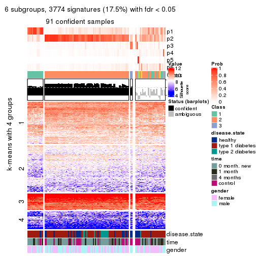
Compare the overlap of signatures from different k:
compare_signatures(res)
get_signature() returns a data frame invisibly. TO get the list of signatures, the function
call should be assigned to a variable explicitly. In following code, if plot argument is set
to FALSE, no heatmap is plotted while only the differential analysis is performed.
# code only for demonstration
tb = get_signature(res, k = ..., plot = FALSE)
An example of the output of tb is:
#> which_row fdr mean_1 mean_2 scaled_mean_1 scaled_mean_2 km
#> 1 38 0.042760348 8.373488 9.131774 -0.5533452 0.5164555 1
#> 2 40 0.018707592 7.106213 8.469186 -0.6173731 0.5762149 1
#> 3 55 0.019134737 10.221463 11.207825 -0.6159697 0.5749050 1
#> 4 59 0.006059896 5.921854 7.869574 -0.6899429 0.6439467 1
#> 5 60 0.018055526 8.928898 10.211722 -0.6204761 0.5791110 1
#> 6 98 0.009384629 15.714769 14.887706 0.6635654 -0.6193277 2
...
The columns in tb are:
which_row: row indices corresponding to the input matrix.fdr: FDR for the differential test. mean_x: The mean value in group x.scaled_mean_x: The mean value in group x after rows are scaled.km: Row groups if k-means clustering is applied to rows.UMAP plot which shows how samples are separated.
dimension_reduction(res, k = 2, method = "UMAP")

dimension_reduction(res, k = 3, method = "UMAP")
dimension_reduction(res, k = 4, method = "UMAP")
dimension_reduction(res, k = 5, method = "UMAP")
dimension_reduction(res, k = 6, method = "UMAP")
Following heatmap shows how subgroups are split when increasing k:
collect_classes(res)
Test correlation between subgroups and known annotations. If the known annotation is numeric, one-way ANOVA test is applied, and if the known annotation is discrete, chi-squared contingency table test is applied.
test_to_known_factors(res)
#> n disease.state(p) time(p) gender(p) k
#> CV:hclust 114 0.00159 0.00489 1.0000 2
#> CV:hclust 90 0.00300 0.01235 0.4904 3
#> CV:hclust 94 0.00953 0.12461 0.1296 4
#> CV:hclust 92 0.01127 0.07249 0.0775 5
#> CV:hclust 91 0.01429 0.11455 0.1059 6
If matrix rows can be associated to genes, consider to use GO_Enrichment(res,
...) to perform function enrichment for the signature genes.
The object with results only for a single top-value method and a single partition method can be extracted as:
res = res_list["CV", "kmeans"]
# you can also extract it by
# res = res_list["CV:kmeans"]
A summary of res and all the functions that can be applied to it:
res
#> A 'ConsensusPartition' object with k = 2, 3, 4, 5, 6.
#> On a matrix with 21512 rows and 117 columns.
#> Top rows (1000, 2000, 3000, 4000, 5000) are extracted by 'CV' method.
#> Subgroups are detected by 'kmeans' method.
#> Performed in total 1250 partitions by row resampling.
#> Best k for subgroups seems to be 2.
#>
#> Following methods can be applied to this 'ConsensusPartition' object:
#> [1] "cola_report" "collect_classes" "collect_plots"
#> [4] "collect_stats" "colnames" "compare_signatures"
#> [7] "consensus_heatmap" "dimension_reduction" "functional_enrichment"
#> [10] "get_anno_col" "get_anno" "get_classes"
#> [13] "get_consensus" "get_matrix" "get_membership"
#> [16] "get_param" "get_signatures" "get_stats"
#> [19] "is_best_k" "is_stable_k" "membership_heatmap"
#> [22] "ncol" "nrow" "plot_ecdf"
#> [25] "rownames" "select_partition_number" "show"
#> [28] "suggest_best_k" "test_to_known_factors"
collect_plots() function collects all the plots made from res for all k (number of partitions)
into one single page to provide an easy and fast comparison between different k.
collect_plots(res)
The plots are:
k and the heatmap of
predicted classes for each k.k.k.k.All the plots in panels can be made by individual functions and they are plotted later in this section.
select_partition_number() produces several plots showing different
statistics for choosing “optimized” k. There are following statistics:
k;k, the area increased is defined as \(A_k - A_{k-1}\).The detailed explanations of these statistics can be found in the cola vignette.
Generally speaking, lower PAC score, higher mean silhouette score or higher
concordance corresponds to better partition. Rand index and Jaccard index
measure how similar the current partition is compared to partition with k-1.
If they are too similar, we won't accept k is better than k-1.
select_partition_number(res)
The numeric values for all these statistics can be obtained by get_stats().
get_stats(res)
#> k 1-PAC mean_silhouette concordance area_increased Rand Jaccard
#> 2 2 0.607 0.815 0.917 0.4874 0.509 0.509
#> 3 3 0.296 0.535 0.752 0.2424 0.645 0.424
#> 4 4 0.399 0.500 0.730 0.1405 0.724 0.426
#> 5 5 0.501 0.562 0.742 0.0787 0.864 0.617
#> 6 6 0.557 0.550 0.724 0.0506 0.902 0.664
suggest_best_k() suggests the best \(k\) based on these statistics. The rules are as follows:
NA.suggest_best_k(res)
#> [1] 2
Following shows the table of the partitions (You need to click the show/hide
code output link to see it). The membership matrix (columns with name p*)
is inferred by
clue::cl_consensus()
function with the SE method. Basically the value in the membership matrix
represents the probability to belong to a certain group. The finall class
label for an item is determined with the group with highest probability it
belongs to.
In get_classes() function, the entropy is calculated from the membership
matrix and the silhouette score is calculated from the consensus matrix.
cbind(get_classes(res, k = 2), get_membership(res, k = 2))
#> class entropy silhouette p1 p2
#> GSM254177 2 0.0000 0.90833 0.000 1.000
#> GSM254179 2 0.7950 0.70334 0.240 0.760
#> GSM254180 2 0.3584 0.88204 0.068 0.932
#> GSM254182 1 0.0000 0.90086 1.000 0.000
#> GSM254183 2 0.7299 0.73004 0.204 0.796
#> GSM254277 2 0.4161 0.87334 0.084 0.916
#> GSM254278 2 0.0000 0.90833 0.000 1.000
#> GSM254281 1 0.7219 0.72463 0.800 0.200
#> GSM254282 2 0.0000 0.90833 0.000 1.000
#> GSM254284 1 0.9896 0.25884 0.560 0.440
#> GSM254286 2 0.9000 0.53019 0.316 0.684
#> GSM254290 2 0.9000 0.57195 0.316 0.684
#> GSM254291 2 0.0000 0.90833 0.000 1.000
#> GSM254293 2 0.8327 0.64328 0.264 0.736
#> GSM254178 1 0.0000 0.90086 1.000 0.000
#> GSM254181 2 0.0000 0.90833 0.000 1.000
#> GSM254279 2 0.0000 0.90833 0.000 1.000
#> GSM254280 2 0.0000 0.90833 0.000 1.000
#> GSM254283 2 0.1184 0.90512 0.016 0.984
#> GSM254285 2 0.0000 0.90833 0.000 1.000
#> GSM254287 2 0.0000 0.90833 0.000 1.000
#> GSM254288 2 0.2603 0.89426 0.044 0.956
#> GSM254289 2 0.0672 0.90601 0.008 0.992
#> GSM254292 1 0.1184 0.89641 0.984 0.016
#> GSM254184 2 0.7219 0.73338 0.200 0.800
#> GSM254185 2 0.0000 0.90833 0.000 1.000
#> GSM254187 2 0.0000 0.90833 0.000 1.000
#> GSM254189 2 0.0000 0.90833 0.000 1.000
#> GSM254190 1 0.0000 0.90086 1.000 0.000
#> GSM254191 2 0.7453 0.71830 0.212 0.788
#> GSM254192 2 0.0000 0.90833 0.000 1.000
#> GSM254193 1 0.0000 0.90086 1.000 0.000
#> GSM254199 1 0.4022 0.85065 0.920 0.080
#> GSM254203 1 0.0000 0.90086 1.000 0.000
#> GSM254206 1 0.0000 0.90086 1.000 0.000
#> GSM254210 2 0.9833 0.34481 0.424 0.576
#> GSM254211 1 0.0000 0.90086 1.000 0.000
#> GSM254215 2 0.0000 0.90833 0.000 1.000
#> GSM254218 2 0.0376 0.90781 0.004 0.996
#> GSM254230 1 0.0000 0.90086 1.000 0.000
#> GSM254236 2 0.0000 0.90833 0.000 1.000
#> GSM254244 1 0.0000 0.90086 1.000 0.000
#> GSM254247 1 0.5059 0.81943 0.888 0.112
#> GSM254248 1 0.9996 -0.02074 0.512 0.488
#> GSM254254 2 0.0000 0.90833 0.000 1.000
#> GSM254257 2 0.0000 0.90833 0.000 1.000
#> GSM254258 2 0.0000 0.90833 0.000 1.000
#> GSM254261 2 0.0000 0.90833 0.000 1.000
#> GSM254264 2 0.0000 0.90833 0.000 1.000
#> GSM254186 2 0.0000 0.90833 0.000 1.000
#> GSM254188 2 0.0000 0.90833 0.000 1.000
#> GSM254194 2 0.0000 0.90833 0.000 1.000
#> GSM254195 1 0.0000 0.90086 1.000 0.000
#> GSM254196 1 0.8016 0.69322 0.756 0.244
#> GSM254200 2 0.0000 0.90833 0.000 1.000
#> GSM254209 2 0.0000 0.90833 0.000 1.000
#> GSM254214 2 0.0938 0.90655 0.012 0.988
#> GSM254221 1 0.6438 0.77736 0.836 0.164
#> GSM254224 1 0.9491 0.46644 0.632 0.368
#> GSM254227 2 0.6438 0.80619 0.164 0.836
#> GSM254233 2 0.9661 0.33347 0.392 0.608
#> GSM254235 1 0.0000 0.90086 1.000 0.000
#> GSM254239 2 0.6623 0.78589 0.172 0.828
#> GSM254241 1 0.1414 0.89408 0.980 0.020
#> GSM254251 2 0.0000 0.90833 0.000 1.000
#> GSM254262 2 0.0376 0.90734 0.004 0.996
#> GSM254263 2 0.0000 0.90833 0.000 1.000
#> GSM254197 1 0.0000 0.90086 1.000 0.000
#> GSM254201 1 0.0376 0.90013 0.996 0.004
#> GSM254204 1 0.3274 0.87019 0.940 0.060
#> GSM254216 1 0.0000 0.90086 1.000 0.000
#> GSM254228 1 0.0000 0.90086 1.000 0.000
#> GSM254242 1 0.0000 0.90086 1.000 0.000
#> GSM254245 1 0.0000 0.90086 1.000 0.000
#> GSM254252 1 0.0376 0.89984 0.996 0.004
#> GSM254255 1 0.8763 0.59009 0.704 0.296
#> GSM254259 1 0.0000 0.90086 1.000 0.000
#> GSM254207 2 0.0938 0.90641 0.012 0.988
#> GSM254212 2 0.4431 0.86171 0.092 0.908
#> GSM254219 1 0.0672 0.89895 0.992 0.008
#> GSM254222 2 0.1843 0.90102 0.028 0.972
#> GSM254225 2 0.3733 0.87773 0.072 0.928
#> GSM254231 1 0.8499 0.64152 0.724 0.276
#> GSM254234 2 0.3274 0.88546 0.060 0.940
#> GSM254237 1 0.9896 0.25073 0.560 0.440
#> GSM254249 1 0.9087 0.55713 0.676 0.324
#> GSM254198 1 0.0000 0.90086 1.000 0.000
#> GSM254202 1 0.1633 0.89259 0.976 0.024
#> GSM254205 1 0.0000 0.90086 1.000 0.000
#> GSM254217 1 0.2043 0.88821 0.968 0.032
#> GSM254229 2 0.9815 0.31757 0.420 0.580
#> GSM254243 1 0.0000 0.90086 1.000 0.000
#> GSM254246 1 0.0000 0.90086 1.000 0.000
#> GSM254253 1 0.0376 0.90015 0.996 0.004
#> GSM254256 2 0.6973 0.76845 0.188 0.812
#> GSM254260 1 0.0000 0.90086 1.000 0.000
#> GSM254208 2 0.9996 -0.00838 0.488 0.512
#> GSM254213 2 0.0000 0.90833 0.000 1.000
#> GSM254220 1 0.0000 0.90086 1.000 0.000
#> GSM254223 1 0.9170 0.54077 0.668 0.332
#> GSM254226 2 0.0000 0.90833 0.000 1.000
#> GSM254232 2 0.8955 0.55383 0.312 0.688
#> GSM254238 1 0.7602 0.71860 0.780 0.220
#> GSM254240 1 0.2778 0.87802 0.952 0.048
#> GSM254250 1 0.0376 0.90016 0.996 0.004
#> GSM254268 2 0.0938 0.90637 0.012 0.988
#> GSM254269 2 0.4562 0.86395 0.096 0.904
#> GSM254270 1 0.0376 0.90015 0.996 0.004
#> GSM254272 2 0.1414 0.90374 0.020 0.980
#> GSM254273 2 0.0938 0.90637 0.012 0.988
#> GSM254274 2 0.0938 0.90626 0.012 0.988
#> GSM254265 2 0.6247 0.80412 0.156 0.844
#> GSM254266 2 0.7528 0.72550 0.216 0.784
#> GSM254267 2 0.2948 0.88928 0.052 0.948
#> GSM254271 2 0.0000 0.90833 0.000 1.000
#> GSM254275 2 0.4022 0.87098 0.080 0.920
#> GSM254276 2 0.1633 0.90248 0.024 0.976
cbind(get_classes(res, k = 3), get_membership(res, k = 3))
#> class entropy silhouette p1 p2 p3
#> GSM254177 3 0.2878 0.7511 0.000 0.096 0.904
#> GSM254179 2 0.5689 0.5462 0.036 0.780 0.184
#> GSM254180 2 0.6473 0.4695 0.020 0.668 0.312
#> GSM254182 2 0.5948 -0.0939 0.360 0.640 0.000
#> GSM254183 2 0.7248 -0.1140 0.028 0.536 0.436
#> GSM254277 2 0.6255 0.4801 0.016 0.684 0.300
#> GSM254278 3 0.0475 0.7634 0.004 0.004 0.992
#> GSM254281 2 0.6336 0.6036 0.180 0.756 0.064
#> GSM254282 3 0.5902 0.5365 0.004 0.316 0.680
#> GSM254284 2 0.7815 0.6456 0.148 0.672 0.180
#> GSM254286 2 0.8350 0.3591 0.088 0.532 0.380
#> GSM254290 2 0.2443 0.5853 0.032 0.940 0.028
#> GSM254291 3 0.3267 0.7424 0.000 0.116 0.884
#> GSM254293 2 0.7186 0.4968 0.040 0.624 0.336
#> GSM254178 1 0.1289 0.8169 0.968 0.032 0.000
#> GSM254181 3 0.4504 0.6868 0.000 0.196 0.804
#> GSM254279 3 0.0237 0.7647 0.000 0.004 0.996
#> GSM254280 3 0.0237 0.7647 0.000 0.004 0.996
#> GSM254283 3 0.6204 0.2120 0.000 0.424 0.576
#> GSM254285 3 0.0237 0.7651 0.000 0.004 0.996
#> GSM254287 3 0.6527 0.4384 0.008 0.404 0.588
#> GSM254288 2 0.6284 0.3956 0.016 0.680 0.304
#> GSM254289 3 0.6247 0.4867 0.004 0.376 0.620
#> GSM254292 2 0.4473 0.5034 0.164 0.828 0.008
#> GSM254184 3 0.5008 0.5917 0.180 0.016 0.804
#> GSM254185 3 0.0237 0.7651 0.000 0.004 0.996
#> GSM254187 3 0.0237 0.7651 0.000 0.004 0.996
#> GSM254189 3 0.1753 0.7318 0.048 0.000 0.952
#> GSM254190 1 0.1163 0.8153 0.972 0.028 0.000
#> GSM254191 3 0.6908 0.4107 0.308 0.036 0.656
#> GSM254192 3 0.0475 0.7634 0.004 0.004 0.992
#> GSM254193 1 0.1753 0.8021 0.952 0.048 0.000
#> GSM254199 1 0.7624 0.1314 0.580 0.368 0.052
#> GSM254203 1 0.1163 0.8180 0.972 0.028 0.000
#> GSM254206 1 0.3340 0.7743 0.880 0.120 0.000
#> GSM254210 2 0.6039 0.5745 0.104 0.788 0.108
#> GSM254211 1 0.1163 0.8180 0.972 0.028 0.000
#> GSM254215 3 0.0237 0.7651 0.000 0.004 0.996
#> GSM254218 3 0.5650 0.5384 0.000 0.312 0.688
#> GSM254230 1 0.1163 0.8180 0.972 0.028 0.000
#> GSM254236 3 0.0237 0.7651 0.000 0.004 0.996
#> GSM254244 1 0.3038 0.7799 0.896 0.104 0.000
#> GSM254247 2 0.3043 0.5610 0.084 0.908 0.008
#> GSM254248 2 0.5585 0.5862 0.096 0.812 0.092
#> GSM254254 3 0.2448 0.7549 0.000 0.076 0.924
#> GSM254257 3 0.3500 0.7379 0.004 0.116 0.880
#> GSM254258 3 0.0237 0.7651 0.000 0.004 0.996
#> GSM254261 3 0.3349 0.7434 0.004 0.108 0.888
#> GSM254264 3 0.0237 0.7651 0.000 0.004 0.996
#> GSM254186 3 0.0237 0.7647 0.000 0.004 0.996
#> GSM254188 3 0.0237 0.7647 0.000 0.004 0.996
#> GSM254194 3 0.0592 0.7649 0.000 0.012 0.988
#> GSM254195 1 0.4062 0.7529 0.836 0.164 0.000
#> GSM254196 1 0.9671 0.1231 0.460 0.292 0.248
#> GSM254200 3 0.0237 0.7647 0.000 0.004 0.996
#> GSM254209 3 0.5363 0.5908 0.000 0.276 0.724
#> GSM254214 3 0.6252 0.1767 0.000 0.444 0.556
#> GSM254221 2 0.8034 0.3267 0.336 0.584 0.080
#> GSM254224 2 0.7097 0.6185 0.172 0.720 0.108
#> GSM254227 2 0.8165 0.2598 0.072 0.512 0.416
#> GSM254233 2 0.7528 0.5650 0.072 0.648 0.280
#> GSM254235 1 0.1163 0.8180 0.972 0.028 0.000
#> GSM254239 2 0.6835 0.5147 0.040 0.676 0.284
#> GSM254241 1 0.6677 0.5516 0.652 0.324 0.024
#> GSM254251 3 0.2625 0.7519 0.000 0.084 0.916
#> GSM254262 3 0.1491 0.7561 0.016 0.016 0.968
#> GSM254263 3 0.0892 0.7595 0.000 0.020 0.980
#> GSM254197 1 0.1163 0.8180 0.972 0.028 0.000
#> GSM254201 2 0.5760 0.3817 0.328 0.672 0.000
#> GSM254204 2 0.7867 0.4243 0.348 0.584 0.068
#> GSM254216 2 0.6168 0.2648 0.412 0.588 0.000
#> GSM254228 1 0.1289 0.8169 0.968 0.032 0.000
#> GSM254242 1 0.6095 0.3886 0.608 0.392 0.000
#> GSM254245 2 0.6235 0.1645 0.436 0.564 0.000
#> GSM254252 2 0.3340 0.5619 0.120 0.880 0.000
#> GSM254255 2 0.6935 0.6067 0.188 0.724 0.088
#> GSM254259 1 0.1163 0.8180 0.972 0.028 0.000
#> GSM254207 3 0.5835 0.4577 0.000 0.340 0.660
#> GSM254212 2 0.6445 0.4799 0.020 0.672 0.308
#> GSM254219 2 0.6529 0.2630 0.368 0.620 0.012
#> GSM254222 3 0.6521 -0.0673 0.004 0.496 0.500
#> GSM254225 2 0.7674 0.1118 0.044 0.484 0.472
#> GSM254231 2 0.7382 0.6169 0.184 0.700 0.116
#> GSM254234 2 0.6881 0.3814 0.020 0.592 0.388
#> GSM254237 2 0.7396 0.6404 0.144 0.704 0.152
#> GSM254249 2 0.7869 0.6152 0.180 0.668 0.152
#> GSM254198 2 0.5070 0.5303 0.224 0.772 0.004
#> GSM254202 2 0.5992 0.3926 0.268 0.716 0.016
#> GSM254205 2 0.4002 0.5077 0.160 0.840 0.000
#> GSM254217 2 0.5763 0.5247 0.276 0.716 0.008
#> GSM254229 2 0.6653 0.6499 0.112 0.752 0.136
#> GSM254243 1 0.5178 0.6500 0.744 0.256 0.000
#> GSM254246 1 0.1163 0.8180 0.972 0.028 0.000
#> GSM254253 2 0.6483 0.0924 0.452 0.544 0.004
#> GSM254256 2 0.7099 0.3255 0.028 0.588 0.384
#> GSM254260 2 0.5810 0.3576 0.336 0.664 0.000
#> GSM254208 2 0.8494 0.6058 0.156 0.608 0.236
#> GSM254213 3 0.5529 0.5639 0.000 0.296 0.704
#> GSM254220 2 0.6520 -0.2101 0.488 0.508 0.004
#> GSM254223 2 0.8284 0.6024 0.224 0.628 0.148
#> GSM254226 3 0.5706 0.5050 0.000 0.320 0.680
#> GSM254232 2 0.6940 0.6090 0.068 0.708 0.224
#> GSM254238 2 0.8304 0.5840 0.232 0.624 0.144
#> GSM254240 1 0.7069 0.3343 0.568 0.408 0.024
#> GSM254250 1 0.6081 0.5595 0.652 0.344 0.004
#> GSM254268 3 0.6252 0.2689 0.000 0.444 0.556
#> GSM254269 2 0.6978 0.4389 0.032 0.632 0.336
#> GSM254270 2 0.5733 0.4395 0.324 0.676 0.000
#> GSM254272 2 0.6373 0.2664 0.004 0.588 0.408
#> GSM254273 3 0.6168 0.3020 0.000 0.412 0.588
#> GSM254274 3 0.6045 0.4022 0.000 0.380 0.620
#> GSM254265 2 0.7128 0.3990 0.036 0.620 0.344
#> GSM254266 2 0.7497 0.5650 0.072 0.652 0.276
#> GSM254267 2 0.6735 0.2909 0.012 0.564 0.424
#> GSM254271 3 0.5968 0.4302 0.000 0.364 0.636
#> GSM254275 2 0.6994 0.4160 0.028 0.612 0.360
#> GSM254276 2 0.6307 0.0937 0.000 0.512 0.488
cbind(get_classes(res, k = 4), get_membership(res, k = 4))
#> class entropy silhouette p1 p2 p3 p4
#> GSM254177 3 0.4155 0.62187 0.000 0.240 0.756 0.004
#> GSM254179 2 0.6356 0.15105 0.004 0.512 0.052 0.432
#> GSM254180 2 0.4389 0.58123 0.000 0.812 0.116 0.072
#> GSM254182 4 0.1388 0.41511 0.028 0.012 0.000 0.960
#> GSM254183 4 0.7066 0.10241 0.008 0.320 0.116 0.556
#> GSM254277 2 0.6080 0.52456 0.000 0.684 0.156 0.160
#> GSM254278 3 0.0469 0.85610 0.000 0.012 0.988 0.000
#> GSM254281 2 0.5514 0.37705 0.012 0.712 0.040 0.236
#> GSM254282 2 0.5112 0.45100 0.000 0.608 0.384 0.008
#> GSM254284 2 0.3593 0.56215 0.016 0.868 0.092 0.024
#> GSM254286 2 0.8180 0.00587 0.012 0.396 0.340 0.252
#> GSM254290 4 0.5538 0.23387 0.008 0.384 0.012 0.596
#> GSM254291 3 0.5517 0.30596 0.000 0.412 0.568 0.020
#> GSM254293 2 0.5282 0.51644 0.004 0.760 0.136 0.100
#> GSM254178 1 0.0469 0.81458 0.988 0.012 0.000 0.000
#> GSM254181 2 0.5388 0.11732 0.000 0.532 0.456 0.012
#> GSM254279 3 0.1389 0.85407 0.000 0.048 0.952 0.000
#> GSM254280 3 0.1389 0.85407 0.000 0.048 0.952 0.000
#> GSM254283 2 0.4252 0.59197 0.000 0.744 0.252 0.004
#> GSM254285 3 0.0592 0.85901 0.000 0.016 0.984 0.000
#> GSM254287 2 0.7441 0.22933 0.008 0.500 0.144 0.348
#> GSM254288 2 0.6028 0.23123 0.008 0.572 0.032 0.388
#> GSM254289 2 0.6986 0.39512 0.008 0.604 0.148 0.240
#> GSM254292 4 0.4809 0.59765 0.004 0.252 0.016 0.728
#> GSM254184 3 0.3972 0.69645 0.164 0.004 0.816 0.016
#> GSM254185 3 0.0336 0.85865 0.000 0.008 0.992 0.000
#> GSM254187 3 0.0336 0.85865 0.000 0.008 0.992 0.000
#> GSM254189 3 0.1398 0.83711 0.040 0.004 0.956 0.000
#> GSM254190 1 0.0937 0.80800 0.976 0.012 0.000 0.012
#> GSM254191 3 0.5277 0.45188 0.304 0.000 0.668 0.028
#> GSM254192 3 0.0469 0.85814 0.000 0.012 0.988 0.000
#> GSM254193 1 0.1394 0.80206 0.964 0.012 0.008 0.016
#> GSM254199 2 0.5615 0.16862 0.424 0.556 0.016 0.004
#> GSM254203 1 0.0469 0.81458 0.988 0.012 0.000 0.000
#> GSM254206 1 0.6000 0.41147 0.592 0.052 0.000 0.356
#> GSM254210 4 0.5740 0.09229 0.012 0.416 0.012 0.560
#> GSM254211 1 0.0469 0.81458 0.988 0.012 0.000 0.000
#> GSM254215 3 0.0336 0.85865 0.000 0.008 0.992 0.000
#> GSM254218 2 0.5158 0.24750 0.000 0.524 0.472 0.004
#> GSM254230 1 0.0592 0.81187 0.984 0.016 0.000 0.000
#> GSM254236 3 0.0188 0.85753 0.000 0.004 0.996 0.000
#> GSM254244 1 0.5365 0.55753 0.692 0.044 0.000 0.264
#> GSM254247 4 0.3311 0.58363 0.000 0.172 0.000 0.828
#> GSM254248 4 0.6893 0.06445 0.028 0.420 0.048 0.504
#> GSM254254 3 0.3801 0.64609 0.000 0.220 0.780 0.000
#> GSM254257 3 0.4454 0.45718 0.000 0.308 0.692 0.000
#> GSM254258 3 0.0336 0.85865 0.000 0.008 0.992 0.000
#> GSM254261 3 0.4277 0.52285 0.000 0.280 0.720 0.000
#> GSM254264 3 0.0336 0.85865 0.000 0.008 0.992 0.000
#> GSM254186 3 0.1474 0.85216 0.000 0.052 0.948 0.000
#> GSM254188 3 0.1302 0.85534 0.000 0.044 0.956 0.000
#> GSM254194 3 0.2334 0.83287 0.000 0.088 0.908 0.004
#> GSM254195 1 0.6024 0.34451 0.540 0.044 0.000 0.416
#> GSM254196 4 0.9813 0.31261 0.176 0.236 0.252 0.336
#> GSM254200 3 0.1474 0.85216 0.000 0.052 0.948 0.000
#> GSM254209 2 0.4431 0.54446 0.000 0.696 0.304 0.000
#> GSM254214 2 0.3649 0.60385 0.000 0.796 0.204 0.000
#> GSM254221 4 0.7219 0.43340 0.068 0.448 0.028 0.456
#> GSM254224 2 0.4756 0.28922 0.008 0.756 0.020 0.216
#> GSM254227 2 0.4535 0.60786 0.032 0.816 0.128 0.024
#> GSM254233 2 0.6126 0.06851 0.004 0.632 0.064 0.300
#> GSM254235 1 0.0469 0.81458 0.988 0.012 0.000 0.000
#> GSM254239 2 0.4261 0.58245 0.008 0.832 0.060 0.100
#> GSM254241 1 0.8298 -0.33681 0.336 0.324 0.012 0.328
#> GSM254251 3 0.4406 0.54869 0.000 0.300 0.700 0.000
#> GSM254262 3 0.2307 0.84082 0.008 0.048 0.928 0.016
#> GSM254263 3 0.2060 0.83992 0.000 0.052 0.932 0.016
#> GSM254197 1 0.0469 0.81458 0.988 0.012 0.000 0.000
#> GSM254201 4 0.6645 0.48257 0.072 0.420 0.004 0.504
#> GSM254204 2 0.7546 -0.34525 0.080 0.496 0.040 0.384
#> GSM254216 2 0.7219 -0.38714 0.148 0.488 0.000 0.364
#> GSM254228 1 0.0469 0.81458 0.988 0.012 0.000 0.000
#> GSM254242 4 0.7671 0.47677 0.244 0.300 0.000 0.456
#> GSM254245 4 0.7439 0.48502 0.132 0.416 0.008 0.444
#> GSM254252 4 0.4748 0.55908 0.016 0.268 0.000 0.716
#> GSM254255 2 0.5596 0.29758 0.016 0.712 0.040 0.232
#> GSM254259 1 0.0469 0.81458 0.988 0.012 0.000 0.000
#> GSM254207 2 0.4830 0.41430 0.000 0.608 0.392 0.000
#> GSM254212 2 0.3966 0.58861 0.000 0.840 0.072 0.088
#> GSM254219 4 0.6574 0.53391 0.084 0.384 0.000 0.532
#> GSM254222 2 0.3878 0.60970 0.004 0.824 0.156 0.016
#> GSM254225 2 0.4111 0.61282 0.012 0.824 0.144 0.020
#> GSM254231 2 0.4584 0.31315 0.016 0.776 0.012 0.196
#> GSM254234 2 0.2658 0.59652 0.004 0.904 0.080 0.012
#> GSM254237 2 0.3798 0.45578 0.016 0.848 0.016 0.120
#> GSM254249 2 0.6096 0.15950 0.020 0.668 0.048 0.264
#> GSM254198 2 0.5678 -0.12487 0.024 0.524 0.000 0.452
#> GSM254202 4 0.6231 0.56452 0.024 0.328 0.032 0.616
#> GSM254205 4 0.4194 0.60447 0.008 0.228 0.000 0.764
#> GSM254217 2 0.4265 0.47929 0.032 0.832 0.020 0.116
#> GSM254229 2 0.3551 0.50253 0.016 0.856 0.008 0.120
#> GSM254243 1 0.7197 0.04877 0.468 0.140 0.000 0.392
#> GSM254246 1 0.0469 0.81458 0.988 0.012 0.000 0.000
#> GSM254253 2 0.8036 -0.42048 0.152 0.448 0.028 0.372
#> GSM254256 2 0.5994 0.56003 0.000 0.692 0.156 0.152
#> GSM254260 4 0.5905 0.51740 0.040 0.396 0.000 0.564
#> GSM254208 2 0.3108 0.57879 0.020 0.896 0.064 0.020
#> GSM254213 2 0.4483 0.55440 0.000 0.712 0.284 0.004
#> GSM254220 4 0.6086 0.54734 0.132 0.188 0.000 0.680
#> GSM254223 2 0.3312 0.54821 0.028 0.892 0.036 0.044
#> GSM254226 2 0.4673 0.57158 0.000 0.700 0.292 0.008
#> GSM254232 2 0.2165 0.57583 0.008 0.936 0.032 0.024
#> GSM254238 2 0.5096 0.37836 0.020 0.768 0.036 0.176
#> GSM254240 2 0.7881 -0.45181 0.232 0.420 0.004 0.344
#> GSM254250 4 0.7576 0.20613 0.324 0.212 0.000 0.464
#> GSM254268 2 0.5200 0.55711 0.000 0.700 0.264 0.036
#> GSM254269 2 0.4802 0.58376 0.004 0.792 0.128 0.076
#> GSM254270 2 0.6373 -0.18220 0.064 0.576 0.004 0.356
#> GSM254272 2 0.4590 0.58808 0.000 0.772 0.192 0.036
#> GSM254273 2 0.4372 0.57248 0.000 0.728 0.268 0.004
#> GSM254274 2 0.5173 0.53067 0.000 0.660 0.320 0.020
#> GSM254265 2 0.5861 0.54810 0.000 0.704 0.152 0.144
#> GSM254266 2 0.2218 0.57837 0.004 0.932 0.028 0.036
#> GSM254267 2 0.2530 0.60951 0.000 0.896 0.100 0.004
#> GSM254271 2 0.3975 0.58762 0.000 0.760 0.240 0.000
#> GSM254275 2 0.3009 0.59691 0.000 0.892 0.056 0.052
#> GSM254276 2 0.3123 0.61038 0.000 0.844 0.156 0.000
cbind(get_classes(res, k = 5), get_membership(res, k = 5))
#> class entropy silhouette p1 p2 p3 p4 p5
#> GSM254177 3 0.5618 0.4086 0.000 0.304 0.620 0.048 0.028
#> GSM254179 2 0.6375 -0.2599 0.000 0.452 0.008 0.128 0.412
#> GSM254180 2 0.4434 0.6461 0.000 0.792 0.048 0.120 0.040
#> GSM254182 5 0.3437 0.3627 0.012 0.004 0.004 0.160 0.820
#> GSM254183 5 0.6125 0.5760 0.000 0.180 0.040 0.132 0.648
#> GSM254277 2 0.5980 0.5278 0.000 0.680 0.064 0.112 0.144
#> GSM254278 3 0.0510 0.8325 0.000 0.016 0.984 0.000 0.000
#> GSM254281 2 0.6231 0.3424 0.000 0.536 0.016 0.344 0.104
#> GSM254282 2 0.5054 0.6067 0.000 0.724 0.188 0.064 0.024
#> GSM254284 2 0.4616 0.6315 0.000 0.752 0.052 0.180 0.016
#> GSM254286 2 0.8280 -0.1007 0.000 0.328 0.216 0.320 0.136
#> GSM254290 5 0.6279 0.5912 0.000 0.264 0.012 0.152 0.572
#> GSM254291 2 0.6375 0.1527 0.000 0.504 0.388 0.044 0.064
#> GSM254293 2 0.6103 0.5299 0.000 0.648 0.072 0.212 0.068
#> GSM254178 1 0.0000 0.9400 1.000 0.000 0.000 0.000 0.000
#> GSM254181 2 0.4652 0.4944 0.000 0.700 0.260 0.008 0.032
#> GSM254279 3 0.1197 0.8284 0.000 0.048 0.952 0.000 0.000
#> GSM254280 3 0.1197 0.8283 0.000 0.048 0.952 0.000 0.000
#> GSM254283 2 0.3670 0.6396 0.000 0.796 0.180 0.020 0.004
#> GSM254285 3 0.0771 0.8325 0.000 0.020 0.976 0.000 0.004
#> GSM254287 5 0.5948 0.4291 0.000 0.416 0.040 0.036 0.508
#> GSM254288 5 0.5636 0.5318 0.000 0.352 0.012 0.060 0.576
#> GSM254289 2 0.6158 -0.1309 0.000 0.528 0.032 0.064 0.376
#> GSM254292 4 0.5546 0.1185 0.000 0.044 0.012 0.528 0.416
#> GSM254184 3 0.3763 0.6698 0.152 0.004 0.812 0.008 0.024
#> GSM254185 3 0.0510 0.8325 0.000 0.016 0.984 0.000 0.000
#> GSM254187 3 0.0671 0.8314 0.000 0.016 0.980 0.000 0.004
#> GSM254189 3 0.1518 0.8187 0.020 0.016 0.952 0.000 0.012
#> GSM254190 1 0.0671 0.9353 0.980 0.000 0.000 0.004 0.016
#> GSM254191 3 0.4906 0.4365 0.292 0.008 0.664 0.000 0.036
#> GSM254192 3 0.0510 0.8325 0.000 0.016 0.984 0.000 0.000
#> GSM254193 1 0.1812 0.9048 0.940 0.004 0.012 0.008 0.036
#> GSM254199 2 0.4984 0.2631 0.384 0.588 0.004 0.020 0.004
#> GSM254203 1 0.0451 0.9381 0.988 0.000 0.000 0.004 0.008
#> GSM254206 4 0.6292 0.1711 0.400 0.000 0.000 0.448 0.152
#> GSM254210 5 0.6563 0.4676 0.012 0.348 0.008 0.120 0.512
#> GSM254211 1 0.0451 0.9381 0.988 0.000 0.000 0.004 0.008
#> GSM254215 3 0.0510 0.8325 0.000 0.016 0.984 0.000 0.000
#> GSM254218 2 0.5386 0.4732 0.000 0.612 0.332 0.028 0.028
#> GSM254230 1 0.0162 0.9394 0.996 0.000 0.000 0.004 0.000
#> GSM254236 3 0.0510 0.8325 0.000 0.016 0.984 0.000 0.000
#> GSM254244 1 0.6244 0.1238 0.504 0.000 0.000 0.336 0.160
#> GSM254247 5 0.5553 -0.1168 0.000 0.068 0.000 0.448 0.484
#> GSM254248 5 0.6592 0.5902 0.004 0.284 0.036 0.108 0.568
#> GSM254254 3 0.4599 0.3446 0.000 0.356 0.624 0.000 0.020
#> GSM254257 3 0.4950 0.1019 0.000 0.424 0.552 0.008 0.016
#> GSM254258 3 0.0798 0.8310 0.000 0.016 0.976 0.000 0.008
#> GSM254261 3 0.4708 0.0809 0.000 0.436 0.548 0.000 0.016
#> GSM254264 3 0.0798 0.8310 0.000 0.016 0.976 0.000 0.008
#> GSM254186 3 0.1197 0.8284 0.000 0.048 0.952 0.000 0.000
#> GSM254188 3 0.1197 0.8284 0.000 0.048 0.952 0.000 0.000
#> GSM254194 3 0.2011 0.8069 0.000 0.088 0.908 0.004 0.000
#> GSM254195 4 0.6831 0.2173 0.316 0.008 0.000 0.448 0.228
#> GSM254196 4 0.8708 0.3032 0.060 0.136 0.204 0.456 0.144
#> GSM254200 3 0.1197 0.8284 0.000 0.048 0.952 0.000 0.000
#> GSM254209 2 0.3553 0.6469 0.000 0.832 0.128 0.016 0.024
#> GSM254214 2 0.3400 0.6700 0.000 0.856 0.088 0.028 0.028
#> GSM254221 4 0.5330 0.6158 0.020 0.160 0.008 0.724 0.088
#> GSM254224 2 0.4972 -0.2095 0.000 0.500 0.004 0.476 0.020
#> GSM254227 2 0.3738 0.6576 0.020 0.856 0.028 0.056 0.040
#> GSM254233 4 0.5276 0.5239 0.000 0.324 0.024 0.624 0.028
#> GSM254235 1 0.0162 0.9382 0.996 0.000 0.000 0.004 0.000
#> GSM254239 2 0.3359 0.6296 0.000 0.860 0.016 0.060 0.064
#> GSM254241 4 0.6002 0.5862 0.148 0.164 0.000 0.656 0.032
#> GSM254251 3 0.4610 0.1946 0.000 0.432 0.556 0.000 0.012
#> GSM254262 3 0.1960 0.8086 0.004 0.048 0.928 0.000 0.020
#> GSM254263 3 0.1408 0.8156 0.000 0.044 0.948 0.000 0.008
#> GSM254197 1 0.0000 0.9400 1.000 0.000 0.000 0.000 0.000
#> GSM254201 4 0.4091 0.6187 0.020 0.132 0.000 0.804 0.044
#> GSM254204 4 0.5869 0.5859 0.020 0.236 0.012 0.656 0.076
#> GSM254216 4 0.5088 0.5927 0.048 0.216 0.004 0.712 0.020
#> GSM254228 1 0.0000 0.9400 1.000 0.000 0.000 0.000 0.000
#> GSM254242 4 0.4417 0.6173 0.072 0.088 0.004 0.804 0.032
#> GSM254245 4 0.4889 0.6079 0.052 0.148 0.004 0.760 0.036
#> GSM254252 4 0.5341 0.2667 0.000 0.064 0.000 0.580 0.356
#> GSM254255 2 0.5408 0.1425 0.000 0.516 0.024 0.440 0.020
#> GSM254259 1 0.0162 0.9394 0.996 0.000 0.000 0.004 0.000
#> GSM254207 2 0.4737 0.5329 0.000 0.680 0.284 0.024 0.012
#> GSM254212 2 0.3323 0.6322 0.004 0.868 0.020 0.040 0.068
#> GSM254219 4 0.4362 0.6201 0.020 0.132 0.000 0.788 0.060
#> GSM254222 2 0.3297 0.6600 0.000 0.848 0.068 0.084 0.000
#> GSM254225 2 0.3711 0.6685 0.004 0.848 0.072 0.048 0.028
#> GSM254231 4 0.4698 0.3339 0.004 0.468 0.000 0.520 0.008
#> GSM254234 2 0.2983 0.6525 0.004 0.868 0.032 0.096 0.000
#> GSM254237 2 0.5049 0.2937 0.004 0.628 0.004 0.332 0.032
#> GSM254249 4 0.4999 0.4508 0.004 0.420 0.012 0.556 0.008
#> GSM254198 2 0.6696 -0.0732 0.000 0.388 0.000 0.372 0.240
#> GSM254202 4 0.5377 0.4949 0.004 0.088 0.008 0.684 0.216
#> GSM254205 4 0.4881 0.5077 0.004 0.060 0.000 0.696 0.240
#> GSM254217 2 0.4692 0.5319 0.004 0.672 0.008 0.300 0.016
#> GSM254229 2 0.4348 0.6148 0.000 0.744 0.008 0.216 0.032
#> GSM254243 4 0.5983 0.5080 0.240 0.028 0.000 0.632 0.100
#> GSM254246 1 0.0000 0.9400 1.000 0.000 0.000 0.000 0.000
#> GSM254253 4 0.5312 0.5802 0.040 0.192 0.012 0.720 0.036
#> GSM254256 2 0.5399 0.6060 0.000 0.692 0.044 0.216 0.048
#> GSM254260 4 0.3680 0.6110 0.012 0.108 0.000 0.832 0.048
#> GSM254208 2 0.3688 0.6128 0.004 0.812 0.036 0.148 0.000
#> GSM254213 2 0.3023 0.6517 0.000 0.868 0.096 0.008 0.028
#> GSM254220 4 0.4713 0.5521 0.032 0.036 0.000 0.748 0.184
#> GSM254223 2 0.4506 0.5205 0.012 0.728 0.020 0.236 0.004
#> GSM254226 2 0.3789 0.6227 0.000 0.768 0.212 0.020 0.000
#> GSM254232 2 0.3536 0.6166 0.004 0.824 0.008 0.148 0.016
#> GSM254238 4 0.5513 0.2922 0.016 0.452 0.008 0.504 0.020
#> GSM254240 4 0.5713 0.6064 0.092 0.184 0.000 0.684 0.040
#> GSM254250 4 0.6384 0.5587 0.120 0.104 0.000 0.652 0.124
#> GSM254268 2 0.5061 0.6458 0.000 0.756 0.104 0.088 0.052
#> GSM254269 2 0.4604 0.6469 0.000 0.768 0.036 0.156 0.040
#> GSM254270 4 0.6234 0.1695 0.016 0.400 0.004 0.500 0.080
#> GSM254272 2 0.4298 0.6467 0.000 0.804 0.064 0.100 0.032
#> GSM254273 2 0.4287 0.6504 0.000 0.800 0.116 0.056 0.028
#> GSM254274 2 0.4832 0.6300 0.000 0.764 0.132 0.064 0.040
#> GSM254265 2 0.5258 0.6106 0.000 0.732 0.040 0.140 0.088
#> GSM254266 2 0.2339 0.6582 0.004 0.908 0.008 0.072 0.008
#> GSM254267 2 0.1836 0.6701 0.000 0.932 0.036 0.032 0.000
#> GSM254271 2 0.2795 0.6605 0.000 0.884 0.080 0.008 0.028
#> GSM254275 2 0.2394 0.6530 0.004 0.916 0.012 0.032 0.036
#> GSM254276 2 0.2464 0.6705 0.000 0.892 0.092 0.012 0.004
cbind(get_classes(res, k = 6), get_membership(res, k = 6))
#> class entropy silhouette p1 p2 p3 p4 p5 p6
#> GSM254177 3 0.6224 0.1324 0.000 0.328 0.536 0.056 0.028 0.052
#> GSM254179 6 0.7145 0.0260 0.000 0.304 0.004 0.060 0.300 0.332
#> GSM254180 2 0.4179 0.6650 0.000 0.800 0.016 0.088 0.040 0.056
#> GSM254182 6 0.4388 0.1471 0.004 0.000 0.000 0.036 0.312 0.648
#> GSM254183 5 0.4306 0.3094 0.000 0.040 0.012 0.052 0.784 0.112
#> GSM254277 2 0.6043 0.4787 0.000 0.620 0.012 0.072 0.092 0.204
#> GSM254278 3 0.0291 0.8783 0.000 0.000 0.992 0.000 0.004 0.004
#> GSM254281 2 0.6343 0.3968 0.004 0.540 0.000 0.216 0.040 0.200
#> GSM254282 2 0.5219 0.6564 0.000 0.736 0.092 0.068 0.056 0.048
#> GSM254284 2 0.5105 0.6289 0.000 0.720 0.032 0.160 0.044 0.044
#> GSM254286 6 0.8458 0.1420 0.000 0.252 0.144 0.180 0.088 0.336
#> GSM254290 6 0.6653 0.1521 0.000 0.144 0.000 0.068 0.356 0.432
#> GSM254291 2 0.6589 0.2288 0.000 0.492 0.336 0.032 0.104 0.036
#> GSM254293 2 0.7404 0.2837 0.000 0.488 0.060 0.196 0.060 0.196
#> GSM254178 1 0.0146 0.8739 0.996 0.000 0.000 0.000 0.004 0.000
#> GSM254181 2 0.5180 0.5536 0.000 0.684 0.180 0.012 0.108 0.016
#> GSM254279 3 0.0820 0.8741 0.000 0.012 0.972 0.000 0.016 0.000
#> GSM254280 3 0.0622 0.8782 0.000 0.012 0.980 0.000 0.000 0.008
#> GSM254283 2 0.3240 0.6720 0.000 0.820 0.144 0.028 0.008 0.000
#> GSM254285 3 0.0520 0.8792 0.000 0.000 0.984 0.000 0.008 0.008
#> GSM254287 5 0.3905 0.6385 0.000 0.256 0.024 0.004 0.716 0.000
#> GSM254288 5 0.3678 0.6358 0.000 0.228 0.000 0.008 0.748 0.016
#> GSM254289 5 0.5213 0.4677 0.000 0.376 0.004 0.064 0.548 0.008
#> GSM254292 6 0.4092 0.3279 0.004 0.016 0.000 0.164 0.048 0.768
#> GSM254184 3 0.3813 0.7272 0.132 0.000 0.800 0.008 0.048 0.012
#> GSM254185 3 0.0291 0.8777 0.000 0.004 0.992 0.000 0.004 0.000
#> GSM254187 3 0.0405 0.8759 0.000 0.008 0.988 0.000 0.004 0.000
#> GSM254189 3 0.1440 0.8588 0.032 0.004 0.948 0.000 0.012 0.004
#> GSM254190 1 0.0862 0.8643 0.972 0.000 0.000 0.004 0.016 0.008
#> GSM254191 3 0.5092 0.4519 0.292 0.000 0.620 0.004 0.076 0.008
#> GSM254192 3 0.0603 0.8735 0.000 0.016 0.980 0.000 0.004 0.000
#> GSM254193 1 0.1957 0.8275 0.912 0.000 0.000 0.008 0.072 0.008
#> GSM254199 2 0.5220 0.2837 0.372 0.564 0.000 0.020 0.016 0.028
#> GSM254203 1 0.0146 0.8738 0.996 0.000 0.000 0.000 0.004 0.000
#> GSM254206 1 0.6547 -0.0912 0.344 0.000 0.000 0.336 0.020 0.300
#> GSM254210 6 0.6442 0.0910 0.000 0.236 0.000 0.024 0.304 0.436
#> GSM254211 1 0.0146 0.8738 0.996 0.000 0.000 0.000 0.004 0.000
#> GSM254215 3 0.0146 0.8785 0.000 0.000 0.996 0.000 0.004 0.000
#> GSM254218 2 0.4710 0.6044 0.000 0.708 0.220 0.028 0.028 0.016
#> GSM254230 1 0.0405 0.8738 0.988 0.000 0.000 0.004 0.000 0.008
#> GSM254236 3 0.0146 0.8790 0.000 0.004 0.996 0.000 0.000 0.000
#> GSM254244 1 0.6193 0.0740 0.420 0.000 0.000 0.184 0.016 0.380
#> GSM254247 6 0.6173 0.2597 0.000 0.028 0.000 0.176 0.284 0.512
#> GSM254248 6 0.7177 0.1027 0.008 0.192 0.008 0.056 0.324 0.412
#> GSM254254 3 0.5098 -0.0963 0.000 0.416 0.528 0.012 0.036 0.008
#> GSM254257 2 0.5695 0.2920 0.000 0.476 0.436 0.020 0.044 0.024
#> GSM254258 3 0.0146 0.8792 0.000 0.000 0.996 0.000 0.004 0.000
#> GSM254261 2 0.5130 0.2967 0.000 0.492 0.452 0.008 0.036 0.012
#> GSM254264 3 0.0146 0.8785 0.000 0.000 0.996 0.000 0.004 0.000
#> GSM254186 3 0.1003 0.8713 0.000 0.020 0.964 0.000 0.016 0.000
#> GSM254188 3 0.0914 0.8731 0.000 0.016 0.968 0.000 0.016 0.000
#> GSM254194 3 0.2842 0.7989 0.000 0.092 0.868 0.008 0.024 0.008
#> GSM254195 6 0.6543 0.1175 0.260 0.000 0.000 0.196 0.052 0.492
#> GSM254196 6 0.8528 0.0219 0.028 0.068 0.200 0.312 0.076 0.316
#> GSM254200 3 0.1003 0.8713 0.000 0.020 0.964 0.000 0.016 0.000
#> GSM254209 2 0.3719 0.6714 0.000 0.820 0.084 0.012 0.072 0.012
#> GSM254214 2 0.3615 0.6767 0.000 0.828 0.076 0.012 0.072 0.012
#> GSM254221 4 0.5342 0.5349 0.000 0.104 0.012 0.696 0.044 0.144
#> GSM254224 4 0.5649 0.4069 0.000 0.384 0.004 0.520 0.040 0.052
#> GSM254227 2 0.4697 0.6592 0.012 0.776 0.020 0.072 0.088 0.032
#> GSM254233 4 0.5081 0.5565 0.000 0.256 0.024 0.664 0.028 0.028
#> GSM254235 1 0.0146 0.8737 0.996 0.000 0.000 0.000 0.000 0.004
#> GSM254239 2 0.3567 0.6126 0.000 0.796 0.012 0.016 0.168 0.008
#> GSM254241 4 0.5376 0.5726 0.084 0.116 0.000 0.716 0.040 0.044
#> GSM254251 2 0.5420 0.2615 0.000 0.472 0.448 0.004 0.060 0.016
#> GSM254262 3 0.2394 0.8430 0.004 0.036 0.900 0.000 0.052 0.008
#> GSM254263 3 0.2189 0.8402 0.000 0.032 0.904 0.000 0.060 0.004
#> GSM254197 1 0.0436 0.8745 0.988 0.000 0.000 0.004 0.004 0.004
#> GSM254201 4 0.3786 0.5752 0.008 0.060 0.000 0.820 0.028 0.084
#> GSM254204 4 0.5947 0.5185 0.004 0.264 0.000 0.576 0.036 0.120
#> GSM254216 4 0.4929 0.5655 0.008 0.164 0.000 0.720 0.040 0.068
#> GSM254228 1 0.0436 0.8745 0.988 0.000 0.000 0.004 0.004 0.004
#> GSM254242 4 0.3382 0.5553 0.028 0.032 0.000 0.844 0.008 0.088
#> GSM254245 4 0.5245 0.4814 0.008 0.060 0.000 0.700 0.072 0.160
#> GSM254252 4 0.6700 -0.0105 0.000 0.052 0.000 0.384 0.380 0.184
#> GSM254255 4 0.5828 0.2775 0.000 0.384 0.020 0.516 0.044 0.036
#> GSM254259 1 0.0665 0.8725 0.980 0.000 0.000 0.004 0.008 0.008
#> GSM254207 2 0.5750 0.5395 0.000 0.632 0.240 0.060 0.028 0.040
#> GSM254212 2 0.3442 0.6233 0.000 0.804 0.012 0.008 0.164 0.012
#> GSM254219 4 0.4268 0.5807 0.004 0.100 0.000 0.784 0.048 0.064
#> GSM254222 2 0.3794 0.6274 0.000 0.792 0.052 0.140 0.016 0.000
#> GSM254225 2 0.4217 0.6587 0.000 0.796 0.036 0.100 0.048 0.020
#> GSM254231 4 0.5021 0.5087 0.000 0.328 0.000 0.600 0.056 0.016
#> GSM254234 2 0.2803 0.6380 0.000 0.856 0.016 0.116 0.012 0.000
#> GSM254237 2 0.5395 0.3174 0.000 0.616 0.008 0.276 0.084 0.016
#> GSM254249 4 0.5245 0.5299 0.000 0.324 0.008 0.596 0.056 0.016
#> GSM254198 6 0.7687 0.1139 0.004 0.260 0.000 0.284 0.152 0.300
#> GSM254202 6 0.5059 -0.1419 0.000 0.036 0.000 0.464 0.020 0.480
#> GSM254205 4 0.5911 0.3577 0.000 0.024 0.000 0.568 0.196 0.212
#> GSM254217 2 0.5120 0.5184 0.000 0.652 0.000 0.252 0.044 0.052
#> GSM254229 2 0.4208 0.6378 0.000 0.740 0.000 0.200 0.024 0.036
#> GSM254243 4 0.6080 0.3624 0.172 0.016 0.000 0.604 0.032 0.176
#> GSM254246 1 0.0436 0.8745 0.988 0.000 0.000 0.004 0.004 0.004
#> GSM254253 4 0.5355 0.5557 0.016 0.136 0.008 0.716 0.056 0.068
#> GSM254256 2 0.5788 0.6009 0.004 0.652 0.028 0.212 0.048 0.056
#> GSM254260 4 0.3523 0.5495 0.000 0.040 0.000 0.812 0.016 0.132
#> GSM254208 2 0.3906 0.5671 0.000 0.768 0.032 0.180 0.020 0.000
#> GSM254213 2 0.3694 0.6556 0.000 0.808 0.056 0.020 0.116 0.000
#> GSM254220 4 0.5032 0.4005 0.000 0.008 0.000 0.644 0.104 0.244
#> GSM254223 2 0.4406 0.3120 0.000 0.656 0.008 0.308 0.024 0.004
#> GSM254226 2 0.3542 0.6613 0.000 0.796 0.164 0.020 0.020 0.000
#> GSM254232 2 0.3337 0.5997 0.000 0.820 0.004 0.136 0.036 0.004
#> GSM254238 4 0.5456 0.3975 0.000 0.428 0.004 0.492 0.052 0.024
#> GSM254240 4 0.4955 0.5886 0.028 0.124 0.000 0.740 0.076 0.032
#> GSM254250 4 0.6566 0.4304 0.060 0.076 0.000 0.604 0.076 0.184
#> GSM254268 2 0.5076 0.6633 0.000 0.744 0.052 0.084 0.084 0.036
#> GSM254269 2 0.4682 0.6610 0.000 0.752 0.016 0.140 0.044 0.048
#> GSM254270 4 0.6993 0.1128 0.008 0.268 0.000 0.452 0.064 0.208
#> GSM254272 2 0.4420 0.6654 0.000 0.788 0.028 0.088 0.040 0.056
#> GSM254273 2 0.4573 0.6679 0.000 0.780 0.076 0.064 0.052 0.028
#> GSM254274 2 0.5001 0.6612 0.000 0.752 0.080 0.056 0.072 0.040
#> GSM254265 2 0.5227 0.6191 0.000 0.716 0.012 0.088 0.064 0.120
#> GSM254266 2 0.2244 0.6719 0.000 0.912 0.004 0.036 0.032 0.016
#> GSM254267 2 0.1476 0.6747 0.000 0.948 0.008 0.028 0.012 0.004
#> GSM254271 2 0.3315 0.6579 0.000 0.836 0.040 0.012 0.108 0.004
#> GSM254275 2 0.2972 0.6660 0.000 0.860 0.016 0.024 0.096 0.004
#> GSM254276 2 0.2271 0.6825 0.000 0.904 0.056 0.004 0.032 0.004
Heatmaps for the consensus matrix. It visualizes the probability of two samples to be in a same group.
consensus_heatmap(res, k = 2)
consensus_heatmap(res, k = 3)
consensus_heatmap(res, k = 4)
consensus_heatmap(res, k = 5)

consensus_heatmap(res, k = 6)
Heatmaps for the membership of samples in all partitions to see how consistent they are:
membership_heatmap(res, k = 2)
membership_heatmap(res, k = 3)
membership_heatmap(res, k = 4)
membership_heatmap(res, k = 5)
membership_heatmap(res, k = 6)
As soon as we have had the classes for columns, we can look for signatures which are significantly different between classes which can be candidate marks for certain classes. Following are the heatmaps for signatures.
Signature heatmaps where rows are scaled:
get_signatures(res, k = 2)
get_signatures(res, k = 3)
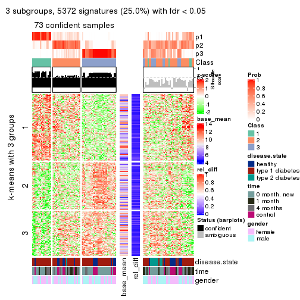
get_signatures(res, k = 4)
get_signatures(res, k = 5)
get_signatures(res, k = 6)
Signature heatmaps where rows are not scaled:
get_signatures(res, k = 2, scale_rows = FALSE)
get_signatures(res, k = 3, scale_rows = FALSE)
get_signatures(res, k = 4, scale_rows = FALSE)
get_signatures(res, k = 5, scale_rows = FALSE)
get_signatures(res, k = 6, scale_rows = FALSE)
Compare the overlap of signatures from different k:
compare_signatures(res)
get_signature() returns a data frame invisibly. TO get the list of signatures, the function
call should be assigned to a variable explicitly. In following code, if plot argument is set
to FALSE, no heatmap is plotted while only the differential analysis is performed.
# code only for demonstration
tb = get_signature(res, k = ..., plot = FALSE)
An example of the output of tb is:
#> which_row fdr mean_1 mean_2 scaled_mean_1 scaled_mean_2 km
#> 1 38 0.042760348 8.373488 9.131774 -0.5533452 0.5164555 1
#> 2 40 0.018707592 7.106213 8.469186 -0.6173731 0.5762149 1
#> 3 55 0.019134737 10.221463 11.207825 -0.6159697 0.5749050 1
#> 4 59 0.006059896 5.921854 7.869574 -0.6899429 0.6439467 1
#> 5 60 0.018055526 8.928898 10.211722 -0.6204761 0.5791110 1
#> 6 98 0.009384629 15.714769 14.887706 0.6635654 -0.6193277 2
...
The columns in tb are:
which_row: row indices corresponding to the input matrix.fdr: FDR for the differential test. mean_x: The mean value in group x.scaled_mean_x: The mean value in group x after rows are scaled.km: Row groups if k-means clustering is applied to rows.UMAP plot which shows how samples are separated.
dimension_reduction(res, k = 2, method = "UMAP")
dimension_reduction(res, k = 3, method = "UMAP")
dimension_reduction(res, k = 4, method = "UMAP")
dimension_reduction(res, k = 5, method = "UMAP")
dimension_reduction(res, k = 6, method = "UMAP")
Following heatmap shows how subgroups are split when increasing k:
collect_classes(res)
Test correlation between subgroups and known annotations. If the known annotation is numeric, one-way ANOVA test is applied, and if the known annotation is discrete, chi-squared contingency table test is applied.
test_to_known_factors(res)
#> n disease.state(p) time(p) gender(p) k
#> CV:kmeans 109 3.76e-04 0.000023 0.0907 2
#> CV:kmeans 73 3.07e-01 0.007003 0.4513 3
#> CV:kmeans 74 3.12e-03 0.008274 0.0344 4
#> CV:kmeans 84 4.67e-05 0.000150 0.1132 5
#> CV:kmeans 78 7.48e-05 0.000347 0.0648 6
If matrix rows can be associated to genes, consider to use GO_Enrichment(res,
...) to perform function enrichment for the signature genes.
The object with results only for a single top-value method and a single partition method can be extracted as:
res = res_list["CV", "skmeans"]
# you can also extract it by
# res = res_list["CV:skmeans"]
A summary of res and all the functions that can be applied to it:
res
#> A 'ConsensusPartition' object with k = 2, 3, 4, 5, 6.
#> On a matrix with 21512 rows and 117 columns.
#> Top rows (1000, 2000, 3000, 4000, 5000) are extracted by 'CV' method.
#> Subgroups are detected by 'skmeans' method.
#> Performed in total 1250 partitions by row resampling.
#> Best k for subgroups seems to be 2.
#>
#> Following methods can be applied to this 'ConsensusPartition' object:
#> [1] "cola_report" "collect_classes" "collect_plots"
#> [4] "collect_stats" "colnames" "compare_signatures"
#> [7] "consensus_heatmap" "dimension_reduction" "functional_enrichment"
#> [10] "get_anno_col" "get_anno" "get_classes"
#> [13] "get_consensus" "get_matrix" "get_membership"
#> [16] "get_param" "get_signatures" "get_stats"
#> [19] "is_best_k" "is_stable_k" "membership_heatmap"
#> [22] "ncol" "nrow" "plot_ecdf"
#> [25] "rownames" "select_partition_number" "show"
#> [28] "suggest_best_k" "test_to_known_factors"
collect_plots() function collects all the plots made from res for all k (number of partitions)
into one single page to provide an easy and fast comparison between different k.
collect_plots(res)
The plots are:
k and the heatmap of
predicted classes for each k.k.k.k.All the plots in panels can be made by individual functions and they are plotted later in this section.
select_partition_number() produces several plots showing different
statistics for choosing “optimized” k. There are following statistics:
k;k, the area increased is defined as \(A_k - A_{k-1}\).The detailed explanations of these statistics can be found in the cola vignette.
Generally speaking, lower PAC score, higher mean silhouette score or higher
concordance corresponds to better partition. Rand index and Jaccard index
measure how similar the current partition is compared to partition with k-1.
If they are too similar, we won't accept k is better than k-1.
select_partition_number(res)
The numeric values for all these statistics can be obtained by get_stats().
get_stats(res)
#> k 1-PAC mean_silhouette concordance area_increased Rand Jaccard
#> 2 2 0.305 0.685 0.848 0.5036 0.499 0.499
#> 3 3 0.129 0.387 0.637 0.3208 0.749 0.538
#> 4 4 0.147 0.218 0.527 0.1227 0.864 0.632
#> 5 5 0.208 0.167 0.453 0.0649 0.861 0.565
#> 6 6 0.273 0.159 0.430 0.0424 0.871 0.534
suggest_best_k() suggests the best \(k\) based on these statistics. The rules are as follows:
NA.suggest_best_k(res)
#> [1] 2
Following shows the table of the partitions (You need to click the show/hide
code output link to see it). The membership matrix (columns with name p*)
is inferred by
clue::cl_consensus()
function with the SE method. Basically the value in the membership matrix
represents the probability to belong to a certain group. The finall class
label for an item is determined with the group with highest probability it
belongs to.
In get_classes() function, the entropy is calculated from the membership
matrix and the silhouette score is calculated from the consensus matrix.
cbind(get_classes(res, k = 2), get_membership(res, k = 2))
#> class entropy silhouette p1 p2
#> GSM254177 2 0.3431 0.7990 0.064 0.936
#> GSM254179 2 0.9661 0.4600 0.392 0.608
#> GSM254180 2 0.9393 0.5313 0.356 0.644
#> GSM254182 1 0.3114 0.8300 0.944 0.056
#> GSM254183 2 0.9795 0.4055 0.416 0.584
#> GSM254277 2 0.9833 0.3524 0.424 0.576
#> GSM254278 2 0.0376 0.8014 0.004 0.996
#> GSM254281 1 0.8499 0.6258 0.724 0.276
#> GSM254282 2 0.3584 0.8002 0.068 0.932
#> GSM254284 1 0.9044 0.5579 0.680 0.320
#> GSM254286 2 0.9754 0.3782 0.408 0.592
#> GSM254290 1 0.9754 0.3250 0.592 0.408
#> GSM254291 2 0.3274 0.7995 0.060 0.940
#> GSM254293 2 0.9815 0.3360 0.420 0.580
#> GSM254178 1 0.0000 0.8357 1.000 0.000
#> GSM254181 2 0.1633 0.8034 0.024 0.976
#> GSM254279 2 0.0000 0.8007 0.000 1.000
#> GSM254280 2 0.0000 0.8007 0.000 1.000
#> GSM254283 2 0.4690 0.7857 0.100 0.900
#> GSM254285 2 0.0672 0.8021 0.008 0.992
#> GSM254287 2 0.3733 0.7988 0.072 0.928
#> GSM254288 2 0.9833 0.3552 0.424 0.576
#> GSM254289 2 0.8144 0.6833 0.252 0.748
#> GSM254292 1 0.6438 0.7674 0.836 0.164
#> GSM254184 2 0.9358 0.5426 0.352 0.648
#> GSM254185 2 0.0000 0.8007 0.000 1.000
#> GSM254187 2 0.0000 0.8007 0.000 1.000
#> GSM254189 2 0.4815 0.7836 0.104 0.896
#> GSM254190 1 0.2236 0.8353 0.964 0.036
#> GSM254191 2 0.9580 0.4854 0.380 0.620
#> GSM254192 2 0.0672 0.8018 0.008 0.992
#> GSM254193 1 0.2603 0.8324 0.956 0.044
#> GSM254199 1 0.7883 0.6704 0.764 0.236
#> GSM254203 1 0.0000 0.8357 1.000 0.000
#> GSM254206 1 0.0376 0.8363 0.996 0.004
#> GSM254210 1 0.9323 0.4460 0.652 0.348
#> GSM254211 1 0.0000 0.8357 1.000 0.000
#> GSM254215 2 0.0000 0.8007 0.000 1.000
#> GSM254218 2 0.3879 0.7981 0.076 0.924
#> GSM254230 1 0.0000 0.8357 1.000 0.000
#> GSM254236 2 0.0000 0.8007 0.000 1.000
#> GSM254244 1 0.0000 0.8357 1.000 0.000
#> GSM254247 1 0.7139 0.7257 0.804 0.196
#> GSM254248 1 0.9815 0.2608 0.580 0.420
#> GSM254254 2 0.0000 0.8007 0.000 1.000
#> GSM254257 2 0.0672 0.8022 0.008 0.992
#> GSM254258 2 0.1414 0.8021 0.020 0.980
#> GSM254261 2 0.0376 0.8015 0.004 0.996
#> GSM254264 2 0.0000 0.8007 0.000 1.000
#> GSM254186 2 0.0000 0.8007 0.000 1.000
#> GSM254188 2 0.0000 0.8007 0.000 1.000
#> GSM254194 2 0.2043 0.8035 0.032 0.968
#> GSM254195 1 0.0000 0.8357 1.000 0.000
#> GSM254196 1 0.9393 0.4868 0.644 0.356
#> GSM254200 2 0.0000 0.8007 0.000 1.000
#> GSM254209 2 0.0376 0.8013 0.004 0.996
#> GSM254214 2 0.6148 0.7590 0.152 0.848
#> GSM254221 1 0.5408 0.7968 0.876 0.124
#> GSM254224 1 0.9358 0.4926 0.648 0.352
#> GSM254227 2 0.9963 0.2255 0.464 0.536
#> GSM254233 2 0.9933 0.2196 0.452 0.548
#> GSM254235 1 0.0000 0.8357 1.000 0.000
#> GSM254239 2 1.0000 0.0479 0.496 0.504
#> GSM254241 1 0.1184 0.8371 0.984 0.016
#> GSM254251 2 0.0000 0.8007 0.000 1.000
#> GSM254262 2 0.4690 0.7882 0.100 0.900
#> GSM254263 2 0.0000 0.8007 0.000 1.000
#> GSM254197 1 0.0000 0.8357 1.000 0.000
#> GSM254201 1 0.2423 0.8355 0.960 0.040
#> GSM254204 1 0.4815 0.8094 0.896 0.104
#> GSM254216 1 0.0376 0.8361 0.996 0.004
#> GSM254228 1 0.0000 0.8357 1.000 0.000
#> GSM254242 1 0.0000 0.8357 1.000 0.000
#> GSM254245 1 0.0376 0.8363 0.996 0.004
#> GSM254252 1 0.4815 0.8057 0.896 0.104
#> GSM254255 1 0.8386 0.6450 0.732 0.268
#> GSM254259 1 0.0000 0.8357 1.000 0.000
#> GSM254207 2 0.5519 0.7705 0.128 0.872
#> GSM254212 2 0.9170 0.5560 0.332 0.668
#> GSM254219 1 0.1414 0.8368 0.980 0.020
#> GSM254222 2 0.7950 0.6761 0.240 0.760
#> GSM254225 2 0.9522 0.4946 0.372 0.628
#> GSM254231 1 0.9248 0.5189 0.660 0.340
#> GSM254234 2 0.8713 0.6141 0.292 0.708
#> GSM254237 1 0.9427 0.4654 0.640 0.360
#> GSM254249 1 0.9323 0.5053 0.652 0.348
#> GSM254198 1 0.4161 0.8163 0.916 0.084
#> GSM254202 1 0.7674 0.7098 0.776 0.224
#> GSM254205 1 0.2423 0.8350 0.960 0.040
#> GSM254217 1 0.3274 0.8311 0.940 0.060
#> GSM254229 1 0.9522 0.4008 0.628 0.372
#> GSM254243 1 0.0000 0.8357 1.000 0.000
#> GSM254246 1 0.0000 0.8357 1.000 0.000
#> GSM254253 1 0.3114 0.8314 0.944 0.056
#> GSM254256 2 0.9608 0.4737 0.384 0.616
#> GSM254260 1 0.1184 0.8374 0.984 0.016
#> GSM254208 1 0.9850 0.2804 0.572 0.428
#> GSM254213 2 0.0000 0.8007 0.000 1.000
#> GSM254220 1 0.0000 0.8357 1.000 0.000
#> GSM254223 1 0.8267 0.6631 0.740 0.260
#> GSM254226 2 0.2043 0.8025 0.032 0.968
#> GSM254232 1 0.9977 0.0834 0.528 0.472
#> GSM254238 1 0.6247 0.7756 0.844 0.156
#> GSM254240 1 0.2423 0.8330 0.960 0.040
#> GSM254250 1 0.0376 0.8362 0.996 0.004
#> GSM254268 2 0.6973 0.7407 0.188 0.812
#> GSM254269 2 0.9815 0.3829 0.420 0.580
#> GSM254270 1 0.1843 0.8368 0.972 0.028
#> GSM254272 2 0.7528 0.7186 0.216 0.784
#> GSM254273 2 0.5059 0.7851 0.112 0.888
#> GSM254274 2 0.4022 0.7975 0.080 0.920
#> GSM254265 2 0.9686 0.4556 0.396 0.604
#> GSM254266 2 1.0000 0.0461 0.500 0.500
#> GSM254267 2 0.8661 0.6323 0.288 0.712
#> GSM254271 2 0.0376 0.8014 0.004 0.996
#> GSM254275 2 0.9754 0.3739 0.408 0.592
#> GSM254276 2 0.3879 0.7945 0.076 0.924
cbind(get_classes(res, k = 3), get_membership(res, k = 3))
#> class entropy silhouette p1 p2 p3
#> GSM254177 3 0.6585 0.55962 0.064 0.200 0.736
#> GSM254179 3 0.9818 -0.33067 0.248 0.344 0.408
#> GSM254180 2 0.9281 0.41677 0.172 0.488 0.340
#> GSM254182 1 0.8526 0.40346 0.572 0.308 0.120
#> GSM254183 3 0.9865 -0.30697 0.264 0.332 0.404
#> GSM254277 2 0.9766 0.46270 0.236 0.416 0.348
#> GSM254278 3 0.1529 0.63704 0.000 0.040 0.960
#> GSM254281 1 0.9770 -0.19708 0.400 0.368 0.232
#> GSM254282 3 0.7698 0.37448 0.072 0.304 0.624
#> GSM254284 2 0.9065 0.20426 0.364 0.492 0.144
#> GSM254286 3 0.9970 -0.45291 0.312 0.316 0.372
#> GSM254290 2 0.9536 0.46786 0.232 0.484 0.284
#> GSM254291 3 0.7599 0.48083 0.084 0.260 0.656
#> GSM254293 2 0.9880 0.47492 0.260 0.384 0.356
#> GSM254178 1 0.1753 0.61938 0.952 0.048 0.000
#> GSM254181 3 0.7012 0.47812 0.040 0.308 0.652
#> GSM254279 3 0.2878 0.64333 0.000 0.096 0.904
#> GSM254280 3 0.2959 0.64119 0.000 0.100 0.900
#> GSM254283 2 0.8972 0.24741 0.128 0.460 0.412
#> GSM254285 3 0.4068 0.63401 0.016 0.120 0.864
#> GSM254287 3 0.7858 0.33342 0.064 0.364 0.572
#> GSM254288 2 0.9702 0.47169 0.232 0.440 0.328
#> GSM254289 2 0.9651 0.30776 0.208 0.400 0.392
#> GSM254292 1 0.9364 0.02173 0.432 0.400 0.168
#> GSM254184 3 0.8520 0.17006 0.280 0.132 0.588
#> GSM254185 3 0.2261 0.64213 0.000 0.068 0.932
#> GSM254187 3 0.1643 0.63840 0.000 0.044 0.956
#> GSM254189 3 0.5004 0.61702 0.072 0.088 0.840
#> GSM254190 1 0.6448 0.53747 0.764 0.104 0.132
#> GSM254191 3 0.8699 -0.11349 0.376 0.112 0.512
#> GSM254192 3 0.4345 0.63928 0.016 0.136 0.848
#> GSM254193 1 0.6425 0.56124 0.764 0.140 0.096
#> GSM254199 1 0.8170 0.38939 0.624 0.256 0.120
#> GSM254203 1 0.1411 0.61678 0.964 0.036 0.000
#> GSM254206 1 0.4921 0.62980 0.816 0.164 0.020
#> GSM254210 1 0.9620 -0.18559 0.416 0.380 0.204
#> GSM254211 1 0.3539 0.62880 0.888 0.100 0.012
#> GSM254215 3 0.0237 0.63407 0.000 0.004 0.996
#> GSM254218 3 0.7259 0.47590 0.072 0.248 0.680
#> GSM254230 1 0.2356 0.62407 0.928 0.072 0.000
#> GSM254236 3 0.1411 0.63722 0.000 0.036 0.964
#> GSM254244 1 0.4172 0.63106 0.840 0.156 0.004
#> GSM254247 2 0.9243 0.19382 0.340 0.492 0.168
#> GSM254248 1 0.9626 -0.25137 0.404 0.392 0.204
#> GSM254254 3 0.3941 0.63170 0.000 0.156 0.844
#> GSM254257 3 0.5698 0.58536 0.012 0.252 0.736
#> GSM254258 3 0.3459 0.64014 0.012 0.096 0.892
#> GSM254261 3 0.5070 0.59736 0.004 0.224 0.772
#> GSM254264 3 0.1964 0.63894 0.000 0.056 0.944
#> GSM254186 3 0.1964 0.63560 0.000 0.056 0.944
#> GSM254188 3 0.1289 0.63715 0.000 0.032 0.968
#> GSM254194 3 0.6853 0.50864 0.064 0.224 0.712
#> GSM254195 1 0.5355 0.61878 0.804 0.160 0.036
#> GSM254196 3 0.9840 -0.41112 0.364 0.248 0.388
#> GSM254200 3 0.2165 0.63635 0.000 0.064 0.936
#> GSM254209 3 0.6899 0.43315 0.024 0.364 0.612
#> GSM254214 2 0.9088 0.27813 0.140 0.464 0.396
#> GSM254221 1 0.8891 0.32611 0.524 0.340 0.136
#> GSM254224 2 0.9331 0.30830 0.344 0.480 0.176
#> GSM254227 1 0.9712 -0.22851 0.436 0.332 0.232
#> GSM254233 2 0.9709 0.51713 0.244 0.448 0.308
#> GSM254235 1 0.2537 0.62407 0.920 0.080 0.000
#> GSM254239 2 0.9641 0.44268 0.296 0.464 0.240
#> GSM254241 1 0.6090 0.57076 0.716 0.264 0.020
#> GSM254251 3 0.5115 0.60529 0.004 0.228 0.768
#> GSM254262 3 0.6902 0.55226 0.116 0.148 0.736
#> GSM254263 3 0.3030 0.64239 0.004 0.092 0.904
#> GSM254197 1 0.1529 0.61680 0.960 0.040 0.000
#> GSM254201 1 0.8346 0.41020 0.548 0.360 0.092
#> GSM254204 1 0.8228 0.40908 0.552 0.364 0.084
#> GSM254216 1 0.5884 0.59513 0.716 0.272 0.012
#> GSM254228 1 0.1411 0.61812 0.964 0.036 0.000
#> GSM254242 1 0.4504 0.62721 0.804 0.196 0.000
#> GSM254245 1 0.6357 0.58158 0.684 0.296 0.020
#> GSM254252 1 0.8387 0.27999 0.488 0.428 0.084
#> GSM254255 1 0.9082 0.14602 0.468 0.392 0.140
#> GSM254259 1 0.1411 0.61927 0.964 0.036 0.000
#> GSM254207 3 0.8270 0.19914 0.084 0.376 0.540
#> GSM254212 2 0.9509 0.52428 0.228 0.488 0.284
#> GSM254219 1 0.6195 0.59260 0.704 0.276 0.020
#> GSM254222 2 0.9520 0.33504 0.188 0.416 0.396
#> GSM254225 2 0.9998 0.46365 0.336 0.340 0.324
#> GSM254231 2 0.9181 0.10871 0.404 0.448 0.148
#> GSM254234 2 0.9918 0.51009 0.276 0.384 0.340
#> GSM254237 2 0.9335 0.21785 0.376 0.456 0.168
#> GSM254249 2 0.9522 0.21982 0.404 0.408 0.188
#> GSM254198 1 0.8386 0.41353 0.584 0.304 0.112
#> GSM254202 1 0.9827 -0.21701 0.380 0.376 0.244
#> GSM254205 1 0.8547 0.36114 0.532 0.364 0.104
#> GSM254217 1 0.7658 0.43883 0.588 0.356 0.056
#> GSM254229 2 0.9154 0.19996 0.384 0.468 0.148
#> GSM254243 1 0.4002 0.63037 0.840 0.160 0.000
#> GSM254246 1 0.1529 0.61927 0.960 0.040 0.000
#> GSM254253 1 0.7446 0.53599 0.664 0.260 0.076
#> GSM254256 2 0.9550 0.29485 0.192 0.404 0.404
#> GSM254260 1 0.7777 0.48098 0.576 0.364 0.060
#> GSM254208 1 0.9811 -0.30949 0.384 0.376 0.240
#> GSM254213 3 0.6587 0.44962 0.016 0.352 0.632
#> GSM254220 1 0.5365 0.61087 0.744 0.252 0.004
#> GSM254223 2 0.8474 0.00708 0.404 0.504 0.092
#> GSM254226 3 0.7459 0.34030 0.044 0.372 0.584
#> GSM254232 2 0.9225 0.44774 0.256 0.532 0.212
#> GSM254238 1 0.8055 0.42434 0.612 0.292 0.096
#> GSM254240 1 0.5816 0.59947 0.752 0.224 0.024
#> GSM254250 1 0.5588 0.58729 0.720 0.276 0.004
#> GSM254268 3 0.8700 0.18554 0.120 0.344 0.536
#> GSM254269 3 0.9858 -0.39449 0.256 0.348 0.396
#> GSM254270 1 0.7208 0.51074 0.620 0.340 0.040
#> GSM254272 2 0.8938 0.21616 0.124 0.444 0.432
#> GSM254273 3 0.8573 0.17221 0.136 0.280 0.584
#> GSM254274 2 0.8581 0.06705 0.096 0.460 0.444
#> GSM254265 2 0.9666 0.38133 0.212 0.412 0.376
#> GSM254266 2 0.8966 0.42416 0.256 0.560 0.184
#> GSM254267 2 0.8847 0.43556 0.148 0.552 0.300
#> GSM254271 3 0.7263 0.37230 0.036 0.372 0.592
#> GSM254275 2 0.9665 0.50246 0.276 0.464 0.260
#> GSM254276 2 0.8800 0.27627 0.116 0.488 0.396
cbind(get_classes(res, k = 4), get_membership(res, k = 4))
#> class entropy silhouette p1 p2 p3 p4
#> GSM254177 3 0.776 0.3962 0.056 0.152 0.596 0.196
#> GSM254179 4 0.958 -0.1252 0.120 0.248 0.308 0.324
#> GSM254180 2 0.947 0.1378 0.112 0.356 0.232 0.300
#> GSM254182 1 0.854 0.0112 0.420 0.116 0.080 0.384
#> GSM254183 3 0.984 -0.2950 0.168 0.260 0.308 0.264
#> GSM254277 4 0.948 -0.0429 0.128 0.216 0.268 0.388
#> GSM254278 3 0.305 0.5919 0.012 0.044 0.900 0.044
#> GSM254281 4 0.951 0.1743 0.304 0.244 0.112 0.340
#> GSM254282 3 0.842 0.1776 0.048 0.228 0.496 0.228
#> GSM254284 2 0.937 -0.0204 0.232 0.392 0.108 0.268
#> GSM254286 3 0.971 -0.2398 0.220 0.156 0.348 0.276
#> GSM254290 2 0.960 -0.0302 0.180 0.336 0.156 0.328
#> GSM254291 3 0.803 0.4024 0.072 0.184 0.580 0.164
#> GSM254293 4 0.990 -0.0238 0.184 0.280 0.248 0.288
#> GSM254178 1 0.369 0.4897 0.856 0.072 0.000 0.072
#> GSM254181 3 0.744 0.4064 0.044 0.216 0.612 0.128
#> GSM254279 3 0.361 0.5890 0.000 0.080 0.860 0.060
#> GSM254280 3 0.460 0.5732 0.004 0.168 0.788 0.040
#> GSM254283 2 0.877 0.2567 0.076 0.464 0.284 0.176
#> GSM254285 3 0.592 0.5337 0.016 0.108 0.728 0.148
#> GSM254287 2 0.927 0.2160 0.088 0.376 0.296 0.240
#> GSM254288 2 0.960 0.0375 0.220 0.384 0.152 0.244
#> GSM254289 2 0.949 0.1851 0.108 0.348 0.272 0.272
#> GSM254292 4 0.943 0.2077 0.244 0.196 0.144 0.416
#> GSM254184 3 0.845 0.2205 0.232 0.080 0.528 0.160
#> GSM254185 3 0.291 0.5918 0.000 0.064 0.896 0.040
#> GSM254187 3 0.249 0.5930 0.004 0.048 0.920 0.028
#> GSM254189 3 0.615 0.5453 0.096 0.060 0.740 0.104
#> GSM254190 1 0.657 0.3204 0.700 0.048 0.156 0.096
#> GSM254191 3 0.894 -0.0391 0.340 0.088 0.412 0.160
#> GSM254192 3 0.538 0.5772 0.040 0.100 0.784 0.076
#> GSM254193 1 0.740 0.3425 0.632 0.116 0.060 0.192
#> GSM254199 1 0.921 0.0542 0.452 0.200 0.128 0.220
#> GSM254203 1 0.198 0.4819 0.936 0.016 0.000 0.048
#> GSM254206 1 0.577 0.4481 0.704 0.080 0.004 0.212
#> GSM254210 4 0.941 0.1885 0.332 0.216 0.108 0.344
#> GSM254211 1 0.532 0.4619 0.768 0.072 0.016 0.144
#> GSM254215 3 0.157 0.5859 0.004 0.028 0.956 0.012
#> GSM254218 3 0.816 0.3092 0.056 0.244 0.540 0.160
#> GSM254230 1 0.361 0.4893 0.860 0.060 0.000 0.080
#> GSM254236 3 0.155 0.5865 0.000 0.040 0.952 0.008
#> GSM254244 1 0.527 0.4633 0.740 0.076 0.000 0.184
#> GSM254247 4 0.885 0.2118 0.284 0.188 0.076 0.452
#> GSM254248 1 0.972 -0.2985 0.308 0.244 0.144 0.304
#> GSM254254 3 0.601 0.5031 0.008 0.224 0.688 0.080
#> GSM254257 3 0.777 0.3479 0.028 0.260 0.548 0.164
#> GSM254258 3 0.362 0.5932 0.028 0.032 0.876 0.064
#> GSM254261 3 0.739 0.3745 0.012 0.244 0.568 0.176
#> GSM254264 3 0.256 0.5937 0.000 0.056 0.912 0.032
#> GSM254186 3 0.287 0.5913 0.000 0.072 0.896 0.032
#> GSM254188 3 0.155 0.5894 0.000 0.040 0.952 0.008
#> GSM254194 3 0.759 0.4463 0.064 0.180 0.620 0.136
#> GSM254195 1 0.648 0.4305 0.668 0.060 0.036 0.236
#> GSM254196 3 0.984 -0.3816 0.280 0.164 0.292 0.264
#> GSM254200 3 0.205 0.5865 0.000 0.064 0.928 0.008
#> GSM254209 3 0.812 -0.0231 0.036 0.404 0.420 0.140
#> GSM254214 2 0.861 0.2520 0.072 0.500 0.236 0.192
#> GSM254221 4 0.908 0.0755 0.344 0.168 0.096 0.392
#> GSM254224 2 0.957 -0.0787 0.256 0.356 0.124 0.264
#> GSM254227 1 0.956 -0.1396 0.396 0.240 0.156 0.208
#> GSM254233 4 0.995 -0.0196 0.204 0.244 0.268 0.284
#> GSM254235 1 0.372 0.4912 0.852 0.052 0.000 0.096
#> GSM254239 2 0.951 0.0802 0.208 0.416 0.168 0.208
#> GSM254241 1 0.738 0.3573 0.568 0.172 0.012 0.248
#> GSM254251 3 0.644 0.4990 0.016 0.212 0.672 0.100
#> GSM254262 3 0.765 0.4597 0.088 0.136 0.628 0.148
#> GSM254263 3 0.339 0.5887 0.000 0.072 0.872 0.056
#> GSM254197 1 0.238 0.4845 0.920 0.028 0.000 0.052
#> GSM254201 1 0.868 0.0835 0.424 0.128 0.084 0.364
#> GSM254204 1 0.901 -0.0264 0.376 0.260 0.060 0.304
#> GSM254216 1 0.750 0.3296 0.564 0.152 0.020 0.264
#> GSM254228 1 0.266 0.4871 0.900 0.016 0.000 0.084
#> GSM254242 1 0.661 0.3889 0.628 0.104 0.008 0.260
#> GSM254245 1 0.768 0.1818 0.476 0.176 0.008 0.340
#> GSM254252 4 0.861 0.1010 0.336 0.236 0.036 0.392
#> GSM254255 4 0.955 0.0934 0.256 0.288 0.116 0.340
#> GSM254259 1 0.327 0.4884 0.868 0.024 0.000 0.108
#> GSM254207 3 0.878 0.0897 0.084 0.292 0.464 0.160
#> GSM254212 2 0.860 0.1433 0.140 0.536 0.128 0.196
#> GSM254219 1 0.768 0.2475 0.492 0.188 0.008 0.312
#> GSM254222 2 0.935 0.2077 0.136 0.400 0.300 0.164
#> GSM254225 1 0.998 -0.3163 0.272 0.236 0.228 0.264
#> GSM254231 4 0.915 0.0889 0.220 0.332 0.080 0.368
#> GSM254234 2 0.967 0.1289 0.164 0.372 0.216 0.248
#> GSM254237 2 0.949 -0.0782 0.228 0.360 0.116 0.296
#> GSM254249 4 0.968 0.0778 0.236 0.300 0.140 0.324
#> GSM254198 1 0.893 0.0230 0.428 0.180 0.080 0.312
#> GSM254202 4 0.923 0.2088 0.340 0.112 0.168 0.380
#> GSM254205 4 0.830 0.1068 0.316 0.208 0.028 0.448
#> GSM254217 1 0.880 -0.0530 0.388 0.284 0.044 0.284
#> GSM254229 2 0.910 -0.0717 0.228 0.396 0.076 0.300
#> GSM254243 1 0.625 0.4357 0.656 0.120 0.000 0.224
#> GSM254246 1 0.245 0.4864 0.912 0.016 0.000 0.072
#> GSM254253 1 0.833 0.2272 0.524 0.148 0.068 0.260
#> GSM254256 3 0.995 -0.3906 0.204 0.248 0.276 0.272
#> GSM254260 1 0.847 0.0574 0.412 0.200 0.036 0.352
#> GSM254208 1 0.991 -0.2931 0.276 0.272 0.184 0.268
#> GSM254213 3 0.796 0.0604 0.032 0.384 0.452 0.132
#> GSM254220 1 0.687 0.3844 0.592 0.112 0.008 0.288
#> GSM254223 2 0.873 -0.1276 0.324 0.380 0.040 0.256
#> GSM254226 3 0.827 -0.0268 0.036 0.368 0.432 0.164
#> GSM254232 2 0.920 0.0729 0.164 0.436 0.128 0.272
#> GSM254238 1 0.924 -0.1156 0.372 0.304 0.084 0.240
#> GSM254240 1 0.727 0.3924 0.620 0.140 0.032 0.208
#> GSM254250 1 0.778 0.3191 0.524 0.176 0.020 0.280
#> GSM254268 2 0.934 0.2163 0.104 0.360 0.328 0.208
#> GSM254269 2 0.971 0.1383 0.176 0.364 0.260 0.200
#> GSM254270 1 0.868 0.1104 0.448 0.224 0.052 0.276
#> GSM254272 2 0.907 0.2282 0.088 0.432 0.272 0.208
#> GSM254273 3 0.877 0.0558 0.084 0.300 0.460 0.156
#> GSM254274 2 0.901 0.2186 0.076 0.388 0.340 0.196
#> GSM254265 4 0.986 -0.0860 0.180 0.288 0.232 0.300
#> GSM254266 2 0.890 0.0935 0.160 0.488 0.116 0.236
#> GSM254267 2 0.889 0.1656 0.116 0.496 0.180 0.208
#> GSM254271 2 0.686 0.1057 0.020 0.528 0.392 0.060
#> GSM254275 2 0.917 0.1539 0.172 0.472 0.172 0.184
#> GSM254276 2 0.882 0.2469 0.080 0.436 0.324 0.160
cbind(get_classes(res, k = 5), get_membership(res, k = 5))
#> class entropy silhouette p1 p2 p3 p4 p5
#> GSM254177 3 0.780 3.82e-01 0.044 0.088 0.556 0.136 0.176
#> GSM254179 3 0.978 -3.58e-01 0.124 0.152 0.248 0.240 0.236
#> GSM254180 2 0.936 -5.64e-05 0.080 0.364 0.172 0.196 0.188
#> GSM254182 4 0.872 1.46e-01 0.336 0.076 0.068 0.364 0.156
#> GSM254183 5 0.983 1.14e-01 0.120 0.188 0.216 0.224 0.252
#> GSM254277 5 0.975 4.63e-02 0.104 0.196 0.212 0.216 0.272
#> GSM254278 3 0.366 5.75e-01 0.012 0.044 0.856 0.024 0.064
#> GSM254281 5 0.974 -4.18e-02 0.188 0.168 0.116 0.264 0.264
#> GSM254282 3 0.890 1.25e-01 0.068 0.184 0.436 0.132 0.180
#> GSM254284 2 0.930 -5.78e-02 0.192 0.284 0.044 0.232 0.248
#> GSM254286 3 0.980 -3.20e-01 0.232 0.132 0.264 0.152 0.220
#> GSM254290 4 0.911 -6.51e-02 0.064 0.184 0.116 0.328 0.308
#> GSM254291 3 0.851 2.02e-01 0.060 0.132 0.460 0.100 0.248
#> GSM254293 2 0.980 -1.63e-02 0.132 0.260 0.244 0.212 0.152
#> GSM254178 1 0.346 4.37e-01 0.852 0.028 0.000 0.092 0.028
#> GSM254181 3 0.829 2.43e-01 0.048 0.180 0.484 0.080 0.208
#> GSM254279 3 0.418 5.76e-01 0.008 0.048 0.820 0.028 0.096
#> GSM254280 3 0.593 5.13e-01 0.008 0.108 0.684 0.036 0.164
#> GSM254283 2 0.850 1.00e-01 0.032 0.452 0.192 0.128 0.196
#> GSM254285 3 0.645 5.04e-01 0.028 0.088 0.680 0.084 0.120
#> GSM254287 5 0.864 5.53e-02 0.016 0.284 0.272 0.116 0.312
#> GSM254288 5 0.956 7.37e-02 0.104 0.252 0.148 0.180 0.316
#> GSM254289 5 0.969 1.05e-01 0.120 0.172 0.212 0.180 0.316
#> GSM254292 4 0.941 1.48e-01 0.180 0.140 0.128 0.384 0.168
#> GSM254184 3 0.836 2.49e-01 0.168 0.068 0.500 0.084 0.180
#> GSM254185 3 0.441 5.74e-01 0.000 0.072 0.788 0.020 0.120
#> GSM254187 3 0.314 5.78e-01 0.004 0.020 0.872 0.020 0.084
#> GSM254189 3 0.666 4.75e-01 0.116 0.036 0.644 0.036 0.168
#> GSM254190 1 0.590 3.63e-01 0.728 0.044 0.088 0.052 0.088
#> GSM254191 1 0.891 -2.15e-01 0.324 0.064 0.300 0.072 0.240
#> GSM254192 3 0.664 5.05e-01 0.044 0.072 0.624 0.032 0.228
#> GSM254193 1 0.747 2.65e-01 0.596 0.100 0.044 0.108 0.152
#> GSM254199 1 0.847 1.19e-01 0.496 0.112 0.068 0.140 0.184
#> GSM254203 1 0.200 4.34e-01 0.932 0.024 0.000 0.028 0.016
#> GSM254206 1 0.675 2.96e-01 0.564 0.052 0.012 0.296 0.076
#> GSM254210 4 0.966 1.38e-01 0.264 0.144 0.108 0.272 0.212
#> GSM254211 1 0.617 3.92e-01 0.688 0.080 0.012 0.132 0.088
#> GSM254215 3 0.192 5.70e-01 0.000 0.012 0.932 0.012 0.044
#> GSM254218 3 0.843 1.66e-01 0.056 0.240 0.448 0.064 0.192
#> GSM254230 1 0.390 4.33e-01 0.828 0.024 0.000 0.088 0.060
#> GSM254236 3 0.199 5.74e-01 0.004 0.012 0.928 0.004 0.052
#> GSM254244 1 0.633 3.50e-01 0.624 0.048 0.008 0.244 0.076
#> GSM254247 4 0.875 2.10e-01 0.148 0.224 0.036 0.416 0.176
#> GSM254248 4 0.964 8.66e-02 0.224 0.176 0.088 0.264 0.248
#> GSM254254 3 0.617 4.80e-01 0.000 0.140 0.648 0.044 0.168
#> GSM254257 3 0.764 2.66e-01 0.020 0.112 0.464 0.068 0.336
#> GSM254258 3 0.384 5.76e-01 0.012 0.032 0.844 0.032 0.080
#> GSM254261 3 0.806 2.53e-01 0.028 0.184 0.476 0.072 0.240
#> GSM254264 3 0.293 5.77e-01 0.004 0.008 0.880 0.024 0.084
#> GSM254186 3 0.291 5.75e-01 0.000 0.032 0.884 0.016 0.068
#> GSM254188 3 0.254 5.76e-01 0.000 0.028 0.900 0.008 0.064
#> GSM254194 3 0.757 3.97e-01 0.072 0.104 0.568 0.048 0.208
#> GSM254195 1 0.764 2.16e-01 0.536 0.052 0.048 0.248 0.116
#> GSM254196 1 0.964 -2.02e-01 0.296 0.112 0.260 0.160 0.172
#> GSM254200 3 0.225 5.72e-01 0.004 0.020 0.920 0.008 0.048
#> GSM254209 3 0.837 4.22e-02 0.020 0.220 0.380 0.084 0.296
#> GSM254214 2 0.914 -2.81e-02 0.060 0.352 0.212 0.124 0.252
#> GSM254221 4 0.844 2.08e-01 0.272 0.140 0.044 0.444 0.100
#> GSM254224 4 0.909 1.91e-01 0.212 0.220 0.052 0.372 0.144
#> GSM254227 1 0.927 -4.83e-02 0.396 0.128 0.116 0.148 0.212
#> GSM254233 4 0.978 2.59e-04 0.144 0.164 0.204 0.304 0.184
#> GSM254235 1 0.511 4.24e-01 0.748 0.064 0.004 0.144 0.040
#> GSM254239 2 0.944 3.08e-02 0.168 0.340 0.100 0.140 0.252
#> GSM254241 1 0.785 1.53e-01 0.472 0.152 0.012 0.276 0.088
#> GSM254251 3 0.673 4.49e-01 0.004 0.148 0.584 0.040 0.224
#> GSM254262 3 0.715 4.68e-01 0.048 0.088 0.608 0.060 0.196
#> GSM254263 3 0.422 5.66e-01 0.004 0.036 0.792 0.016 0.152
#> GSM254197 1 0.283 4.36e-01 0.892 0.028 0.000 0.052 0.028
#> GSM254201 1 0.878 -1.12e-01 0.340 0.152 0.028 0.316 0.164
#> GSM254204 1 0.912 -2.21e-01 0.280 0.252 0.032 0.264 0.172
#> GSM254216 1 0.829 1.24e-03 0.396 0.252 0.008 0.236 0.108
#> GSM254228 1 0.370 4.35e-01 0.840 0.032 0.000 0.092 0.036
#> GSM254242 1 0.695 1.65e-01 0.468 0.104 0.004 0.380 0.044
#> GSM254245 1 0.798 9.76e-02 0.460 0.132 0.016 0.288 0.104
#> GSM254252 4 0.918 1.86e-01 0.200 0.228 0.044 0.340 0.188
#> GSM254255 4 0.953 1.14e-01 0.212 0.228 0.088 0.316 0.156
#> GSM254259 1 0.373 4.32e-01 0.832 0.020 0.000 0.108 0.040
#> GSM254207 3 0.879 -1.78e-01 0.032 0.188 0.332 0.124 0.324
#> GSM254212 2 0.906 -1.25e-02 0.088 0.416 0.156 0.124 0.216
#> GSM254219 4 0.794 1.45e-01 0.292 0.132 0.012 0.456 0.108
#> GSM254222 2 0.928 5.87e-02 0.084 0.360 0.252 0.136 0.168
#> GSM254225 2 0.989 -1.49e-02 0.188 0.244 0.136 0.208 0.224
#> GSM254231 5 0.968 -1.40e-01 0.196 0.224 0.088 0.236 0.256
#> GSM254234 2 0.925 6.36e-02 0.100 0.388 0.120 0.216 0.176
#> GSM254237 2 0.932 -1.15e-03 0.156 0.384 0.116 0.220 0.124
#> GSM254249 4 0.970 7.84e-02 0.184 0.220 0.096 0.268 0.232
#> GSM254198 1 0.930 -1.58e-01 0.308 0.176 0.064 0.292 0.160
#> GSM254202 4 0.925 2.13e-01 0.252 0.104 0.124 0.376 0.144
#> GSM254205 4 0.827 2.48e-01 0.252 0.140 0.052 0.476 0.080
#> GSM254217 2 0.866 -1.11e-01 0.320 0.360 0.036 0.184 0.100
#> GSM254229 2 0.923 -5.63e-02 0.188 0.344 0.060 0.256 0.152
#> GSM254243 1 0.689 2.53e-01 0.540 0.080 0.004 0.304 0.072
#> GSM254246 1 0.300 4.34e-01 0.872 0.020 0.000 0.092 0.016
#> GSM254253 1 0.847 1.25e-01 0.440 0.152 0.032 0.252 0.124
#> GSM254256 2 0.981 -3.07e-02 0.116 0.236 0.236 0.232 0.180
#> GSM254260 4 0.843 1.07e-01 0.316 0.176 0.028 0.388 0.092
#> GSM254208 2 0.963 6.41e-02 0.200 0.340 0.148 0.140 0.172
#> GSM254213 3 0.819 -1.95e-02 0.024 0.360 0.376 0.076 0.164
#> GSM254220 1 0.734 7.45e-02 0.432 0.100 0.012 0.396 0.060
#> GSM254223 2 0.902 -1.07e-01 0.248 0.356 0.056 0.236 0.104
#> GSM254226 3 0.821 5.53e-03 0.028 0.328 0.400 0.068 0.176
#> GSM254232 2 0.893 5.30e-02 0.092 0.376 0.060 0.248 0.224
#> GSM254238 1 0.950 -2.30e-01 0.272 0.248 0.068 0.236 0.176
#> GSM254240 1 0.775 2.35e-01 0.504 0.096 0.020 0.268 0.112
#> GSM254250 1 0.782 8.87e-02 0.432 0.128 0.000 0.304 0.136
#> GSM254268 2 0.938 -2.53e-02 0.072 0.280 0.260 0.128 0.260
#> GSM254269 2 0.931 1.14e-02 0.080 0.376 0.172 0.176 0.196
#> GSM254270 1 0.849 -3.47e-02 0.396 0.180 0.016 0.272 0.136
#> GSM254272 2 0.921 6.39e-02 0.076 0.380 0.228 0.144 0.172
#> GSM254273 2 0.880 -1.02e-03 0.044 0.348 0.324 0.108 0.176
#> GSM254274 3 0.909 -2.10e-01 0.040 0.288 0.300 0.140 0.232
#> GSM254265 5 0.930 -3.18e-03 0.072 0.288 0.156 0.160 0.324
#> GSM254266 2 0.879 6.42e-02 0.116 0.436 0.060 0.212 0.176
#> GSM254267 2 0.831 1.03e-01 0.064 0.520 0.152 0.128 0.136
#> GSM254271 2 0.806 1.57e-02 0.024 0.432 0.320 0.080 0.144
#> GSM254275 2 0.899 4.27e-02 0.132 0.432 0.084 0.156 0.196
#> GSM254276 2 0.856 3.14e-02 0.028 0.384 0.312 0.144 0.132
cbind(get_classes(res, k = 6), get_membership(res, k = 6))
#> class entropy silhouette p1 p2 p3 p4 p5 p6
#> GSM254177 3 0.834 0.12658 0.032 0.088 0.424 0.068 0.144 0.244
#> GSM254179 5 0.932 -0.08253 0.076 0.168 0.172 0.080 0.332 0.172
#> GSM254180 2 0.935 -0.00256 0.032 0.248 0.136 0.180 0.164 0.240
#> GSM254182 5 0.828 0.13705 0.240 0.048 0.072 0.076 0.448 0.116
#> GSM254183 5 0.961 -0.09342 0.104 0.196 0.152 0.080 0.244 0.224
#> GSM254277 6 0.919 0.12402 0.068 0.140 0.116 0.104 0.224 0.348
#> GSM254278 3 0.459 0.54424 0.004 0.036 0.764 0.024 0.032 0.140
#> GSM254281 6 0.951 0.08624 0.148 0.064 0.120 0.224 0.168 0.276
#> GSM254282 3 0.888 -0.16195 0.048 0.240 0.308 0.104 0.056 0.244
#> GSM254284 4 0.934 0.07007 0.148 0.252 0.044 0.276 0.144 0.136
#> GSM254286 6 0.960 0.15367 0.168 0.092 0.240 0.116 0.124 0.260
#> GSM254290 5 0.870 0.05198 0.068 0.156 0.060 0.144 0.432 0.140
#> GSM254291 3 0.877 0.04375 0.032 0.164 0.360 0.100 0.092 0.252
#> GSM254293 6 0.983 0.11819 0.108 0.132 0.176 0.184 0.164 0.236
#> GSM254178 1 0.393 0.45764 0.812 0.020 0.000 0.096 0.052 0.020
#> GSM254181 3 0.843 0.04002 0.024 0.240 0.384 0.108 0.052 0.192
#> GSM254279 3 0.431 0.55695 0.004 0.064 0.800 0.028 0.028 0.076
#> GSM254280 3 0.595 0.50991 0.004 0.120 0.680 0.048 0.056 0.092
#> GSM254283 2 0.864 0.16806 0.024 0.396 0.200 0.176 0.092 0.112
#> GSM254285 3 0.704 0.45033 0.008 0.108 0.588 0.072 0.080 0.144
#> GSM254287 2 0.839 0.07931 0.024 0.336 0.188 0.048 0.096 0.308
#> GSM254288 2 0.956 0.02670 0.108 0.268 0.088 0.116 0.208 0.212
#> GSM254289 6 0.964 -0.10331 0.076 0.216 0.192 0.140 0.128 0.248
#> GSM254292 5 0.930 -0.01478 0.144 0.092 0.084 0.124 0.332 0.224
#> GSM254184 3 0.816 0.10498 0.216 0.028 0.436 0.092 0.044 0.184
#> GSM254185 3 0.336 0.56715 0.000 0.036 0.852 0.032 0.012 0.068
#> GSM254187 3 0.407 0.56434 0.000 0.048 0.808 0.036 0.020 0.088
#> GSM254189 3 0.651 0.45410 0.140 0.032 0.644 0.052 0.036 0.096
#> GSM254190 1 0.607 0.38415 0.684 0.020 0.064 0.048 0.060 0.124
#> GSM254191 1 0.831 -0.09493 0.376 0.032 0.296 0.072 0.056 0.168
#> GSM254192 3 0.703 0.46591 0.032 0.104 0.588 0.064 0.036 0.176
#> GSM254193 1 0.696 0.33672 0.628 0.056 0.064 0.072 0.068 0.112
#> GSM254199 1 0.846 0.17489 0.472 0.108 0.048 0.112 0.140 0.120
#> GSM254203 1 0.242 0.46297 0.908 0.016 0.000 0.028 0.024 0.024
#> GSM254206 1 0.702 0.26191 0.512 0.016 0.004 0.204 0.196 0.068
#> GSM254210 5 0.907 0.07109 0.232 0.140 0.036 0.084 0.312 0.196
#> GSM254211 1 0.566 0.42804 0.704 0.064 0.004 0.092 0.100 0.036
#> GSM254215 3 0.251 0.56430 0.000 0.020 0.896 0.024 0.004 0.056
#> GSM254218 3 0.905 -0.08781 0.048 0.196 0.332 0.124 0.076 0.224
#> GSM254230 1 0.439 0.44853 0.776 0.008 0.000 0.076 0.104 0.036
#> GSM254236 3 0.315 0.56324 0.000 0.076 0.852 0.020 0.000 0.052
#> GSM254244 1 0.678 0.31165 0.560 0.020 0.004 0.132 0.208 0.076
#> GSM254247 5 0.789 0.09283 0.076 0.112 0.040 0.120 0.532 0.120
#> GSM254248 5 0.937 0.04640 0.208 0.132 0.056 0.104 0.284 0.216
#> GSM254254 3 0.704 0.35214 0.004 0.200 0.528 0.056 0.032 0.180
#> GSM254257 3 0.786 0.16044 0.004 0.160 0.396 0.080 0.056 0.304
#> GSM254258 3 0.437 0.55755 0.024 0.040 0.796 0.008 0.036 0.096
#> GSM254261 3 0.848 0.04159 0.024 0.184 0.364 0.112 0.052 0.264
#> GSM254264 3 0.370 0.56165 0.000 0.036 0.824 0.028 0.012 0.100
#> GSM254186 3 0.320 0.56614 0.000 0.080 0.856 0.028 0.008 0.028
#> GSM254188 3 0.306 0.56711 0.000 0.072 0.860 0.028 0.000 0.040
#> GSM254194 3 0.776 0.33087 0.064 0.132 0.528 0.092 0.028 0.156
#> GSM254195 1 0.788 0.22196 0.488 0.032 0.036 0.132 0.204 0.108
#> GSM254196 3 0.947 -0.30831 0.224 0.048 0.248 0.132 0.144 0.204
#> GSM254200 3 0.347 0.56432 0.000 0.076 0.836 0.020 0.004 0.064
#> GSM254209 2 0.817 0.06789 0.016 0.360 0.324 0.096 0.052 0.152
#> GSM254214 2 0.858 0.10951 0.052 0.416 0.140 0.124 0.052 0.216
#> GSM254221 5 0.859 -0.00189 0.168 0.064 0.052 0.292 0.356 0.068
#> GSM254224 4 0.945 0.05464 0.152 0.168 0.072 0.260 0.256 0.092
#> GSM254227 1 0.946 -0.05692 0.340 0.120 0.108 0.156 0.116 0.160
#> GSM254233 4 0.915 0.07764 0.084 0.136 0.132 0.360 0.212 0.076
#> GSM254235 1 0.414 0.45583 0.796 0.028 0.000 0.100 0.064 0.012
#> GSM254239 2 0.945 0.08728 0.156 0.344 0.108 0.112 0.148 0.132
#> GSM254241 1 0.789 0.18946 0.460 0.048 0.024 0.220 0.184 0.064
#> GSM254251 3 0.724 0.23952 0.004 0.252 0.492 0.060 0.036 0.156
#> GSM254262 3 0.749 0.41342 0.076 0.100 0.564 0.052 0.048 0.160
#> GSM254263 3 0.535 0.51828 0.008 0.088 0.692 0.004 0.040 0.168
#> GSM254197 1 0.329 0.46218 0.856 0.012 0.000 0.036 0.068 0.028
#> GSM254201 5 0.844 0.01556 0.264 0.072 0.020 0.272 0.308 0.064
#> GSM254204 4 0.892 0.04232 0.216 0.116 0.020 0.304 0.240 0.104
#> GSM254216 1 0.789 0.02365 0.364 0.092 0.008 0.328 0.172 0.036
#> GSM254228 1 0.314 0.46177 0.864 0.020 0.000 0.040 0.064 0.012
#> GSM254242 1 0.791 0.12460 0.416 0.060 0.004 0.256 0.184 0.080
#> GSM254245 1 0.855 -0.02776 0.328 0.092 0.008 0.208 0.264 0.100
#> GSM254252 5 0.840 0.07101 0.140 0.108 0.020 0.164 0.448 0.120
#> GSM254255 4 0.935 0.07507 0.160 0.112 0.064 0.328 0.144 0.192
#> GSM254259 1 0.340 0.46315 0.844 0.004 0.000 0.064 0.060 0.028
#> GSM254207 3 0.920 -0.15920 0.028 0.208 0.280 0.148 0.116 0.220
#> GSM254212 2 0.914 0.08701 0.068 0.368 0.112 0.120 0.128 0.204
#> GSM254219 4 0.821 -0.01369 0.280 0.068 0.008 0.308 0.272 0.064
#> GSM254222 2 0.874 0.10125 0.068 0.336 0.156 0.300 0.048 0.092
#> GSM254225 1 0.979 -0.27762 0.216 0.188 0.152 0.200 0.084 0.160
#> GSM254231 4 0.900 0.08329 0.108 0.120 0.072 0.400 0.184 0.116
#> GSM254234 4 0.925 -0.00101 0.116 0.288 0.084 0.296 0.108 0.108
#> GSM254237 2 0.956 -0.09811 0.152 0.256 0.080 0.244 0.164 0.104
#> GSM254249 4 0.925 0.06713 0.172 0.144 0.056 0.348 0.160 0.120
#> GSM254198 5 0.887 0.05514 0.272 0.060 0.048 0.152 0.336 0.132
#> GSM254202 5 0.943 0.01998 0.164 0.092 0.096 0.172 0.332 0.144
#> GSM254205 5 0.881 0.05740 0.156 0.084 0.040 0.200 0.392 0.128
#> GSM254217 1 0.922 -0.18143 0.280 0.208 0.040 0.228 0.156 0.088
#> GSM254229 2 0.946 -0.10401 0.168 0.296 0.060 0.164 0.196 0.116
#> GSM254243 1 0.763 0.14712 0.440 0.064 0.004 0.220 0.228 0.044
#> GSM254246 1 0.373 0.46158 0.824 0.008 0.000 0.080 0.060 0.028
#> GSM254253 1 0.877 0.05987 0.380 0.100 0.024 0.208 0.156 0.132
#> GSM254256 2 0.963 0.04142 0.064 0.236 0.144 0.228 0.172 0.156
#> GSM254260 5 0.901 -0.03666 0.236 0.088 0.036 0.252 0.284 0.104
#> GSM254208 2 0.935 -0.08403 0.204 0.260 0.096 0.260 0.064 0.116
#> GSM254213 2 0.826 0.14325 0.016 0.408 0.264 0.116 0.068 0.128
#> GSM254220 5 0.745 0.06176 0.268 0.060 0.000 0.160 0.456 0.056
#> GSM254223 4 0.837 0.14487 0.188 0.260 0.024 0.384 0.072 0.072
#> GSM254226 2 0.844 0.14197 0.028 0.360 0.308 0.140 0.064 0.100
#> GSM254232 2 0.911 -0.04305 0.084 0.324 0.056 0.252 0.164 0.120
#> GSM254238 4 0.933 0.06098 0.216 0.148 0.040 0.288 0.184 0.124
#> GSM254240 1 0.813 0.08050 0.408 0.108 0.004 0.248 0.160 0.072
#> GSM254250 1 0.833 -0.02628 0.340 0.080 0.012 0.260 0.244 0.064
#> GSM254268 2 0.905 0.10781 0.036 0.308 0.224 0.128 0.084 0.220
#> GSM254269 2 0.983 -0.02545 0.084 0.192 0.176 0.188 0.172 0.188
#> GSM254270 1 0.896 -0.01952 0.356 0.144 0.024 0.192 0.156 0.128
#> GSM254272 2 0.923 0.08160 0.072 0.360 0.160 0.116 0.112 0.180
#> GSM254273 2 0.885 0.07964 0.048 0.332 0.252 0.072 0.084 0.212
#> GSM254274 2 0.934 0.03456 0.064 0.304 0.196 0.116 0.104 0.216
#> GSM254265 6 0.970 0.12089 0.092 0.180 0.120 0.148 0.204 0.256
#> GSM254266 2 0.909 0.03821 0.080 0.376 0.072 0.140 0.188 0.144
#> GSM254267 2 0.898 0.09939 0.044 0.372 0.128 0.216 0.120 0.120
#> GSM254271 2 0.770 0.17578 0.012 0.508 0.180 0.112 0.056 0.132
#> GSM254275 2 0.901 0.11180 0.092 0.404 0.080 0.144 0.120 0.160
#> GSM254276 2 0.867 0.14638 0.052 0.436 0.172 0.096 0.140 0.104
Heatmaps for the consensus matrix. It visualizes the probability of two samples to be in a same group.
consensus_heatmap(res, k = 2)
consensus_heatmap(res, k = 3)
consensus_heatmap(res, k = 4)
consensus_heatmap(res, k = 5)
consensus_heatmap(res, k = 6)
Heatmaps for the membership of samples in all partitions to see how consistent they are:
membership_heatmap(res, k = 2)
membership_heatmap(res, k = 3)
membership_heatmap(res, k = 4)
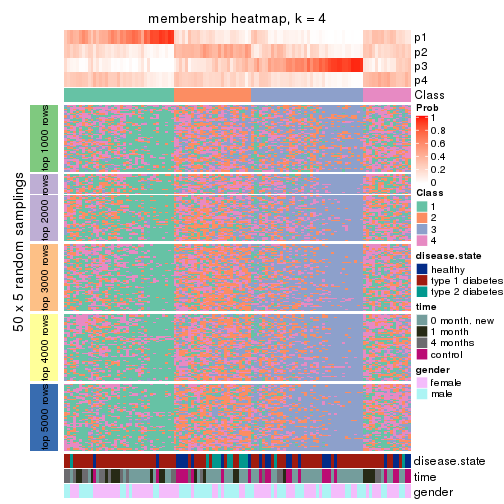
membership_heatmap(res, k = 5)
membership_heatmap(res, k = 6)
As soon as we have had the classes for columns, we can look for signatures which are significantly different between classes which can be candidate marks for certain classes. Following are the heatmaps for signatures.
Signature heatmaps where rows are scaled:
get_signatures(res, k = 2)
get_signatures(res, k = 3)
get_signatures(res, k = 4)

get_signatures(res, k = 5)

get_signatures(res, k = 6)

Signature heatmaps where rows are not scaled:
get_signatures(res, k = 2, scale_rows = FALSE)
get_signatures(res, k = 3, scale_rows = FALSE)
get_signatures(res, k = 4, scale_rows = FALSE)

get_signatures(res, k = 5, scale_rows = FALSE)

get_signatures(res, k = 6, scale_rows = FALSE)

Compare the overlap of signatures from different k:
compare_signatures(res)
get_signature() returns a data frame invisibly. TO get the list of signatures, the function
call should be assigned to a variable explicitly. In following code, if plot argument is set
to FALSE, no heatmap is plotted while only the differential analysis is performed.
# code only for demonstration
tb = get_signature(res, k = ..., plot = FALSE)
An example of the output of tb is:
#> which_row fdr mean_1 mean_2 scaled_mean_1 scaled_mean_2 km
#> 1 38 0.042760348 8.373488 9.131774 -0.5533452 0.5164555 1
#> 2 40 0.018707592 7.106213 8.469186 -0.6173731 0.5762149 1
#> 3 55 0.019134737 10.221463 11.207825 -0.6159697 0.5749050 1
#> 4 59 0.006059896 5.921854 7.869574 -0.6899429 0.6439467 1
#> 5 60 0.018055526 8.928898 10.211722 -0.6204761 0.5791110 1
#> 6 98 0.009384629 15.714769 14.887706 0.6635654 -0.6193277 2
...
The columns in tb are:
which_row: row indices corresponding to the input matrix.fdr: FDR for the differential test. mean_x: The mean value in group x.scaled_mean_x: The mean value in group x after rows are scaled.km: Row groups if k-means clustering is applied to rows.UMAP plot which shows how samples are separated.
dimension_reduction(res, k = 2, method = "UMAP")

dimension_reduction(res, k = 3, method = "UMAP")
dimension_reduction(res, k = 4, method = "UMAP")
dimension_reduction(res, k = 5, method = "UMAP")
dimension_reduction(res, k = 6, method = "UMAP")
Following heatmap shows how subgroups are split when increasing k:
collect_classes(res)
Test correlation between subgroups and known annotations. If the known annotation is numeric, one-way ANOVA test is applied, and if the known annotation is discrete, chi-squared contingency table test is applied.
test_to_known_factors(res)
#> n disease.state(p) time(p) gender(p) k
#> CV:skmeans 92 0.0103 0.00011 0.0534 2
#> CV:skmeans 52 0.0473 0.00201 0.0377 3
#> CV:skmeans 17 NA NA NA 4
#> CV:skmeans 15 NA NA NA 5
#> CV:skmeans 13 NA NA NA 6
If matrix rows can be associated to genes, consider to use GO_Enrichment(res,
...) to perform function enrichment for the signature genes.
The object with results only for a single top-value method and a single partition method can be extracted as:
res = res_list["CV", "pam"]
# you can also extract it by
# res = res_list["CV:pam"]
A summary of res and all the functions that can be applied to it:
res
#> A 'ConsensusPartition' object with k = 2, 3, 4, 5, 6.
#> On a matrix with 21512 rows and 117 columns.
#> Top rows (1000, 2000, 3000, 4000, 5000) are extracted by 'CV' method.
#> Subgroups are detected by 'pam' method.
#> Performed in total 1250 partitions by row resampling.
#> Best k for subgroups seems to be 2.
#>
#> Following methods can be applied to this 'ConsensusPartition' object:
#> [1] "cola_report" "collect_classes" "collect_plots"
#> [4] "collect_stats" "colnames" "compare_signatures"
#> [7] "consensus_heatmap" "dimension_reduction" "functional_enrichment"
#> [10] "get_anno_col" "get_anno" "get_classes"
#> [13] "get_consensus" "get_matrix" "get_membership"
#> [16] "get_param" "get_signatures" "get_stats"
#> [19] "is_best_k" "is_stable_k" "membership_heatmap"
#> [22] "ncol" "nrow" "plot_ecdf"
#> [25] "rownames" "select_partition_number" "show"
#> [28] "suggest_best_k" "test_to_known_factors"
collect_plots() function collects all the plots made from res for all k (number of partitions)
into one single page to provide an easy and fast comparison between different k.
collect_plots(res)
The plots are:
k and the heatmap of
predicted classes for each k.k.k.k.All the plots in panels can be made by individual functions and they are plotted later in this section.
select_partition_number() produces several plots showing different
statistics for choosing “optimized” k. There are following statistics:
k;k, the area increased is defined as \(A_k - A_{k-1}\).The detailed explanations of these statistics can be found in the cola vignette.
Generally speaking, lower PAC score, higher mean silhouette score or higher
concordance corresponds to better partition. Rand index and Jaccard index
measure how similar the current partition is compared to partition with k-1.
If they are too similar, we won't accept k is better than k-1.
select_partition_number(res)
The numeric values for all these statistics can be obtained by get_stats().
get_stats(res)
#> k 1-PAC mean_silhouette concordance area_increased Rand Jaccard
#> 2 2 0.123 0.621 0.792 0.4636 0.541 0.541
#> 3 3 0.162 0.448 0.701 0.2972 0.803 0.657
#> 4 4 0.251 0.577 0.734 0.1244 0.880 0.721
#> 5 5 0.296 0.543 0.720 0.0324 0.973 0.920
#> 6 6 0.311 0.528 0.719 0.0189 0.992 0.975
suggest_best_k() suggests the best \(k\) based on these statistics. The rules are as follows:
NA.suggest_best_k(res)
#> [1] 2
Following shows the table of the partitions (You need to click the show/hide
code output link to see it). The membership matrix (columns with name p*)
is inferred by
clue::cl_consensus()
function with the SE method. Basically the value in the membership matrix
represents the probability to belong to a certain group. The finall class
label for an item is determined with the group with highest probability it
belongs to.
In get_classes() function, the entropy is calculated from the membership
matrix and the silhouette score is calculated from the consensus matrix.
cbind(get_classes(res, k = 2), get_membership(res, k = 2))
#> class entropy silhouette p1 p2
#> GSM254177 2 0.3274 0.74379 0.060 0.940
#> GSM254179 2 0.9970 0.38660 0.468 0.532
#> GSM254180 1 0.7219 0.74603 0.800 0.200
#> GSM254182 2 0.9754 0.18869 0.408 0.592
#> GSM254183 2 0.8327 0.64176 0.264 0.736
#> GSM254277 1 0.9850 0.49252 0.572 0.428
#> GSM254278 2 0.1843 0.73368 0.028 0.972
#> GSM254281 1 0.7139 0.73416 0.804 0.196
#> GSM254282 1 0.6973 0.73123 0.812 0.188
#> GSM254284 1 0.5737 0.75087 0.864 0.136
#> GSM254286 1 0.8661 0.59535 0.712 0.288
#> GSM254290 1 0.7056 0.72084 0.808 0.192
#> GSM254291 2 1.0000 0.12900 0.500 0.500
#> GSM254293 2 0.9954 -0.07040 0.460 0.540
#> GSM254178 1 0.3274 0.77395 0.940 0.060
#> GSM254181 2 0.7528 0.72105 0.216 0.784
#> GSM254279 2 0.7453 0.66701 0.212 0.788
#> GSM254280 2 0.9954 0.38848 0.460 0.540
#> GSM254283 1 0.0000 0.76460 1.000 0.000
#> GSM254285 2 0.4690 0.74083 0.100 0.900
#> GSM254287 1 0.9393 0.35532 0.644 0.356
#> GSM254288 1 0.6801 0.72148 0.820 0.180
#> GSM254289 2 0.6048 0.73188 0.148 0.852
#> GSM254292 1 0.4022 0.77011 0.920 0.080
#> GSM254184 2 0.0938 0.73455 0.012 0.988
#> GSM254185 2 0.6148 0.74263 0.152 0.848
#> GSM254187 2 0.3274 0.74350 0.060 0.940
#> GSM254189 2 0.2043 0.73589 0.032 0.968
#> GSM254190 2 0.8144 0.65789 0.252 0.748
#> GSM254191 2 0.8443 0.70345 0.272 0.728
#> GSM254192 2 0.7453 0.69466 0.212 0.788
#> GSM254193 1 0.8443 0.71190 0.728 0.272
#> GSM254199 1 0.9933 0.33655 0.548 0.452
#> GSM254203 1 0.1184 0.76305 0.984 0.016
#> GSM254206 1 0.4939 0.77029 0.892 0.108
#> GSM254210 2 0.9963 0.20637 0.464 0.536
#> GSM254211 1 0.9896 0.33152 0.560 0.440
#> GSM254215 2 0.1184 0.73042 0.016 0.984
#> GSM254218 2 0.3879 0.73573 0.076 0.924
#> GSM254230 1 0.4161 0.77952 0.916 0.084
#> GSM254236 2 0.1414 0.73664 0.020 0.980
#> GSM254244 1 0.0938 0.76743 0.988 0.012
#> GSM254247 2 0.9358 0.59346 0.352 0.648
#> GSM254248 1 0.8081 0.70354 0.752 0.248
#> GSM254254 2 0.4939 0.74351 0.108 0.892
#> GSM254257 2 0.9580 0.35092 0.380 0.620
#> GSM254258 2 0.0672 0.73207 0.008 0.992
#> GSM254261 2 0.9850 0.08434 0.428 0.572
#> GSM254264 2 0.1843 0.73827 0.028 0.972
#> GSM254186 2 0.6801 0.72549 0.180 0.820
#> GSM254188 2 0.3733 0.73734 0.072 0.928
#> GSM254194 1 0.9866 0.03567 0.568 0.432
#> GSM254195 1 0.9850 -0.06133 0.572 0.428
#> GSM254196 1 0.9996 -0.29551 0.512 0.488
#> GSM254200 2 0.4562 0.73951 0.096 0.904
#> GSM254209 2 0.8499 0.68176 0.276 0.724
#> GSM254214 1 0.9129 0.55295 0.672 0.328
#> GSM254221 1 0.7602 0.72076 0.780 0.220
#> GSM254224 1 0.7602 0.73668 0.780 0.220
#> GSM254227 2 0.8955 0.63809 0.312 0.688
#> GSM254233 1 0.2423 0.76936 0.960 0.040
#> GSM254235 1 0.0376 0.76626 0.996 0.004
#> GSM254239 1 0.3114 0.77386 0.944 0.056
#> GSM254241 1 0.2043 0.77147 0.968 0.032
#> GSM254251 2 0.7674 0.71574 0.224 0.776
#> GSM254262 2 0.8081 0.70539 0.248 0.752
#> GSM254263 2 0.6343 0.73472 0.160 0.840
#> GSM254197 1 0.3733 0.77453 0.928 0.072
#> GSM254201 1 0.8813 0.68078 0.700 0.300
#> GSM254204 1 0.3114 0.77199 0.944 0.056
#> GSM254216 1 0.4815 0.77184 0.896 0.104
#> GSM254228 1 0.5178 0.75902 0.884 0.116
#> GSM254242 1 0.1184 0.76894 0.984 0.016
#> GSM254245 1 0.4298 0.76254 0.912 0.088
#> GSM254252 1 0.7674 0.75267 0.776 0.224
#> GSM254255 1 0.9000 0.65980 0.684 0.316
#> GSM254259 1 0.4562 0.76441 0.904 0.096
#> GSM254207 1 0.2603 0.77310 0.956 0.044
#> GSM254212 2 0.9087 0.50961 0.324 0.676
#> GSM254219 1 0.2043 0.76724 0.968 0.032
#> GSM254222 1 0.6048 0.74164 0.852 0.148
#> GSM254225 1 0.9954 0.00501 0.540 0.460
#> GSM254231 1 1.0000 -0.05432 0.500 0.500
#> GSM254234 1 0.6148 0.76067 0.848 0.152
#> GSM254237 1 0.9286 0.42190 0.656 0.344
#> GSM254249 1 0.9963 0.20492 0.536 0.464
#> GSM254198 1 0.6531 0.77324 0.832 0.168
#> GSM254202 1 0.6712 0.73286 0.824 0.176
#> GSM254205 1 0.7745 0.71432 0.772 0.228
#> GSM254217 1 0.6973 0.73390 0.812 0.188
#> GSM254229 1 0.3431 0.77657 0.936 0.064
#> GSM254243 1 0.3431 0.77286 0.936 0.064
#> GSM254246 1 0.6531 0.72794 0.832 0.168
#> GSM254253 1 0.9248 0.64972 0.660 0.340
#> GSM254256 1 0.9977 0.33241 0.528 0.472
#> GSM254260 1 0.2043 0.77394 0.968 0.032
#> GSM254208 1 0.8763 0.67036 0.704 0.296
#> GSM254213 1 0.9209 0.30322 0.664 0.336
#> GSM254220 1 0.3114 0.77468 0.944 0.056
#> GSM254223 1 0.1633 0.77060 0.976 0.024
#> GSM254226 1 0.7674 0.67982 0.776 0.224
#> GSM254232 1 0.2778 0.77768 0.952 0.048
#> GSM254238 1 0.7139 0.73972 0.804 0.196
#> GSM254240 1 0.1414 0.76356 0.980 0.020
#> GSM254250 1 0.0938 0.76375 0.988 0.012
#> GSM254268 2 0.2603 0.74318 0.044 0.956
#> GSM254269 1 0.8813 0.65897 0.700 0.300
#> GSM254270 1 0.6531 0.76753 0.832 0.168
#> GSM254272 1 0.6148 0.74942 0.848 0.152
#> GSM254273 1 0.6973 0.75935 0.812 0.188
#> GSM254274 2 0.9944 0.10970 0.456 0.544
#> GSM254265 1 0.3274 0.77284 0.940 0.060
#> GSM254266 1 0.6048 0.77626 0.852 0.148
#> GSM254267 1 0.7139 0.70189 0.804 0.196
#> GSM254271 2 0.9944 0.04793 0.456 0.544
#> GSM254275 1 0.5059 0.77046 0.888 0.112
#> GSM254276 1 0.8207 0.57176 0.744 0.256
cbind(get_classes(res, k = 3), get_membership(res, k = 3))
#> class entropy silhouette p1 p2 p3
#> GSM254177 3 0.606 0.52770 0.044 0.196 0.760
#> GSM254179 3 0.665 0.44308 0.364 0.016 0.620
#> GSM254180 1 0.650 0.60037 0.760 0.140 0.100
#> GSM254182 3 0.935 -0.12599 0.388 0.168 0.444
#> GSM254183 2 0.899 0.51003 0.164 0.544 0.292
#> GSM254277 1 0.915 0.18116 0.520 0.308 0.172
#> GSM254278 3 0.337 0.67130 0.024 0.072 0.904
#> GSM254281 1 0.615 0.18714 0.592 0.408 0.000
#> GSM254282 1 0.632 0.56181 0.772 0.124 0.104
#> GSM254284 1 0.504 0.61246 0.836 0.104 0.060
#> GSM254286 1 0.809 0.39918 0.636 0.124 0.240
#> GSM254290 1 0.695 -0.16359 0.504 0.480 0.016
#> GSM254291 1 0.924 -0.11952 0.472 0.160 0.368
#> GSM254293 2 0.977 0.55011 0.268 0.440 0.292
#> GSM254178 1 0.692 0.33568 0.608 0.368 0.024
#> GSM254181 3 0.783 0.45281 0.164 0.164 0.672
#> GSM254279 3 0.376 0.69629 0.068 0.040 0.892
#> GSM254280 3 0.642 0.35665 0.424 0.004 0.572
#> GSM254283 1 0.000 0.63077 1.000 0.000 0.000
#> GSM254285 3 0.206 0.68461 0.008 0.044 0.948
#> GSM254287 1 0.908 0.10023 0.552 0.236 0.212
#> GSM254288 1 0.623 0.47854 0.740 0.220 0.040
#> GSM254289 3 0.804 0.32149 0.088 0.312 0.600
#> GSM254292 1 0.357 0.63458 0.900 0.040 0.060
#> GSM254184 3 0.200 0.69303 0.012 0.036 0.952
#> GSM254185 3 0.383 0.69442 0.124 0.008 0.868
#> GSM254187 3 0.244 0.69537 0.032 0.028 0.940
#> GSM254189 3 0.404 0.66375 0.024 0.104 0.872
#> GSM254190 3 0.594 0.63663 0.064 0.152 0.784
#> GSM254191 3 0.706 0.60935 0.236 0.068 0.696
#> GSM254192 3 0.915 0.12243 0.172 0.308 0.520
#> GSM254193 2 0.625 0.25637 0.188 0.756 0.056
#> GSM254199 1 0.964 0.12503 0.456 0.316 0.228
#> GSM254203 1 0.643 0.29217 0.612 0.380 0.008
#> GSM254206 1 0.614 0.55501 0.720 0.256 0.024
#> GSM254210 2 0.964 0.52336 0.332 0.448 0.220
#> GSM254211 2 0.972 -0.11601 0.388 0.392 0.220
#> GSM254215 3 0.164 0.68519 0.016 0.020 0.964
#> GSM254218 2 0.721 0.27614 0.028 0.552 0.420
#> GSM254230 1 0.647 0.47318 0.668 0.312 0.020
#> GSM254236 3 0.164 0.68441 0.000 0.044 0.956
#> GSM254244 1 0.250 0.63901 0.928 0.068 0.004
#> GSM254247 3 0.934 0.18051 0.300 0.196 0.504
#> GSM254248 2 0.692 0.20748 0.448 0.536 0.016
#> GSM254254 2 0.800 0.38700 0.068 0.552 0.380
#> GSM254257 2 0.915 0.58937 0.232 0.544 0.224
#> GSM254258 3 0.158 0.68679 0.008 0.028 0.964
#> GSM254261 2 0.901 0.48186 0.288 0.544 0.168
#> GSM254264 3 0.177 0.68823 0.016 0.024 0.960
#> GSM254186 3 0.369 0.67923 0.140 0.000 0.860
#> GSM254188 3 0.153 0.67975 0.000 0.040 0.960
#> GSM254194 1 0.827 -0.01234 0.520 0.080 0.400
#> GSM254195 3 0.758 0.19854 0.468 0.040 0.492
#> GSM254196 3 0.681 0.39286 0.372 0.020 0.608
#> GSM254200 3 0.207 0.69632 0.060 0.000 0.940
#> GSM254209 2 0.933 0.40931 0.180 0.488 0.332
#> GSM254214 1 0.909 0.20086 0.548 0.252 0.200
#> GSM254221 1 0.672 0.29337 0.628 0.352 0.020
#> GSM254224 1 0.673 0.50872 0.696 0.260 0.044
#> GSM254227 3 0.899 0.37469 0.272 0.176 0.552
#> GSM254233 1 0.176 0.63636 0.956 0.004 0.040
#> GSM254235 1 0.216 0.63066 0.936 0.064 0.000
#> GSM254239 1 0.241 0.64189 0.940 0.040 0.020
#> GSM254241 1 0.164 0.63912 0.964 0.020 0.016
#> GSM254251 3 0.610 0.63142 0.208 0.040 0.752
#> GSM254262 3 0.831 0.52606 0.192 0.176 0.632
#> GSM254263 3 0.392 0.69240 0.112 0.016 0.872
#> GSM254197 1 0.718 0.22967 0.504 0.472 0.024
#> GSM254201 2 0.741 0.26252 0.384 0.576 0.040
#> GSM254204 1 0.285 0.63952 0.924 0.056 0.020
#> GSM254216 1 0.500 0.63499 0.840 0.072 0.088
#> GSM254228 1 0.784 0.21688 0.480 0.468 0.052
#> GSM254242 1 0.164 0.63949 0.964 0.016 0.020
#> GSM254245 1 0.564 0.59082 0.784 0.180 0.036
#> GSM254252 1 0.758 0.39704 0.604 0.340 0.056
#> GSM254255 2 0.840 0.18893 0.436 0.480 0.084
#> GSM254259 2 0.758 -0.25053 0.468 0.492 0.040
#> GSM254207 1 0.227 0.64390 0.944 0.016 0.040
#> GSM254212 2 0.841 0.46307 0.104 0.564 0.332
#> GSM254219 1 0.191 0.63741 0.956 0.016 0.028
#> GSM254222 1 0.506 0.56549 0.820 0.148 0.032
#> GSM254225 2 0.944 0.48829 0.360 0.456 0.184
#> GSM254231 2 0.954 0.55171 0.256 0.488 0.256
#> GSM254234 1 0.481 0.57899 0.804 0.188 0.008
#> GSM254237 1 0.878 0.20117 0.584 0.184 0.232
#> GSM254249 2 0.951 0.48143 0.328 0.468 0.204
#> GSM254198 1 0.729 0.17775 0.560 0.408 0.032
#> GSM254202 1 0.579 0.60044 0.796 0.068 0.136
#> GSM254205 1 0.716 -0.00155 0.528 0.448 0.024
#> GSM254217 1 0.588 0.60590 0.796 0.092 0.112
#> GSM254229 1 0.303 0.64449 0.920 0.048 0.032
#> GSM254243 1 0.346 0.63664 0.892 0.096 0.012
#> GSM254246 1 0.856 0.20301 0.484 0.420 0.096
#> GSM254253 1 0.878 0.19119 0.524 0.352 0.124
#> GSM254256 1 0.953 0.05948 0.472 0.212 0.316
#> GSM254260 1 0.153 0.63441 0.960 0.040 0.000
#> GSM254208 1 0.816 0.43812 0.644 0.196 0.160
#> GSM254213 1 0.636 0.23225 0.628 0.008 0.364
#> GSM254220 1 0.383 0.64581 0.888 0.076 0.036
#> GSM254223 1 0.256 0.64286 0.936 0.028 0.036
#> GSM254226 1 0.681 0.50124 0.740 0.156 0.104
#> GSM254232 1 0.439 0.61823 0.840 0.148 0.012
#> GSM254238 1 0.638 0.36881 0.648 0.340 0.012
#> GSM254240 1 0.127 0.63329 0.972 0.004 0.024
#> GSM254250 1 0.205 0.63801 0.952 0.028 0.020
#> GSM254268 2 0.714 0.27207 0.024 0.540 0.436
#> GSM254269 1 0.912 -0.02286 0.496 0.352 0.152
#> GSM254270 1 0.662 0.54581 0.708 0.248 0.044
#> GSM254272 1 0.571 0.52118 0.768 0.204 0.028
#> GSM254273 1 0.734 0.42112 0.652 0.288 0.060
#> GSM254274 2 0.939 0.57289 0.212 0.504 0.284
#> GSM254265 1 0.293 0.63946 0.924 0.036 0.040
#> GSM254266 1 0.524 0.62126 0.808 0.160 0.032
#> GSM254267 1 0.664 0.54897 0.748 0.092 0.160
#> GSM254271 2 0.954 0.57369 0.260 0.488 0.252
#> GSM254275 1 0.525 0.63088 0.828 0.076 0.096
#> GSM254276 1 0.679 0.37789 0.672 0.036 0.292
cbind(get_classes(res, k = 4), get_membership(res, k = 4))
#> class entropy silhouette p1 p2 p3 p4
#> GSM254177 3 0.4648 0.5846 0.008 0.016 0.760 0.216
#> GSM254179 3 0.5696 0.5318 0.016 0.364 0.608 0.012
#> GSM254180 2 0.6333 0.6658 0.132 0.724 0.060 0.084
#> GSM254182 3 0.9472 0.0292 0.240 0.312 0.340 0.108
#> GSM254183 4 0.4972 0.7083 0.064 0.068 0.056 0.812
#> GSM254277 2 0.8162 0.2822 0.052 0.492 0.128 0.328
#> GSM254278 3 0.3855 0.7062 0.060 0.012 0.860 0.068
#> GSM254281 4 0.5511 0.1013 0.016 0.484 0.000 0.500
#> GSM254282 2 0.5174 0.6275 0.000 0.756 0.092 0.152
#> GSM254284 2 0.4426 0.6781 0.136 0.816 0.032 0.016
#> GSM254286 2 0.7319 0.3956 0.004 0.556 0.220 0.220
#> GSM254290 4 0.4422 0.6820 0.008 0.256 0.000 0.736
#> GSM254291 2 0.7913 0.1342 0.012 0.456 0.336 0.196
#> GSM254293 4 0.6895 0.6932 0.016 0.140 0.208 0.636
#> GSM254178 1 0.4400 0.7647 0.744 0.248 0.004 0.004
#> GSM254181 3 0.6205 0.5339 0.000 0.136 0.668 0.196
#> GSM254279 3 0.3497 0.7290 0.060 0.056 0.876 0.008
#> GSM254280 3 0.5112 0.4211 0.000 0.436 0.560 0.004
#> GSM254283 2 0.0000 0.6906 0.000 1.000 0.000 0.000
#> GSM254285 3 0.1635 0.7283 0.000 0.008 0.948 0.044
#> GSM254287 2 0.7423 0.1992 0.004 0.516 0.172 0.308
#> GSM254288 2 0.5279 0.5024 0.012 0.712 0.024 0.252
#> GSM254289 3 0.7581 0.2783 0.064 0.060 0.524 0.352
#> GSM254292 2 0.3189 0.6988 0.004 0.888 0.048 0.060
#> GSM254184 3 0.0844 0.7227 0.012 0.004 0.980 0.004
#> GSM254185 3 0.3581 0.7269 0.000 0.116 0.852 0.032
#> GSM254187 3 0.2197 0.7268 0.012 0.024 0.936 0.028
#> GSM254189 3 0.4756 0.6786 0.148 0.016 0.796 0.040
#> GSM254190 3 0.4979 0.6166 0.192 0.020 0.764 0.024
#> GSM254191 3 0.6473 0.6646 0.040 0.224 0.676 0.060
#> GSM254192 3 0.9049 0.2081 0.136 0.128 0.444 0.292
#> GSM254193 1 0.5710 0.5733 0.716 0.072 0.008 0.204
#> GSM254199 2 0.9590 0.1699 0.216 0.396 0.164 0.224
#> GSM254203 1 0.4188 0.7590 0.752 0.244 0.000 0.004
#> GSM254206 2 0.5964 0.5945 0.228 0.676 0.000 0.096
#> GSM254210 4 0.7199 0.6718 0.032 0.228 0.120 0.620
#> GSM254211 1 0.7645 0.6219 0.568 0.264 0.132 0.036
#> GSM254215 3 0.2364 0.7191 0.036 0.008 0.928 0.028
#> GSM254218 4 0.5125 0.5903 0.024 0.008 0.248 0.720
#> GSM254230 2 0.5853 0.2640 0.404 0.564 0.004 0.028
#> GSM254236 3 0.0469 0.7217 0.000 0.000 0.988 0.012
#> GSM254244 2 0.3834 0.6924 0.076 0.848 0.000 0.076
#> GSM254247 3 0.7590 0.3721 0.004 0.268 0.508 0.220
#> GSM254248 4 0.4689 0.7296 0.036 0.184 0.004 0.776
#> GSM254254 4 0.3782 0.6926 0.012 0.024 0.112 0.852
#> GSM254257 4 0.5871 0.7331 0.056 0.112 0.076 0.756
#> GSM254258 3 0.1585 0.7221 0.040 0.004 0.952 0.004
#> GSM254261 4 0.6155 0.6895 0.140 0.076 0.052 0.732
#> GSM254264 3 0.1968 0.7229 0.008 0.008 0.940 0.044
#> GSM254186 3 0.3047 0.7181 0.000 0.116 0.872 0.012
#> GSM254188 3 0.0817 0.7223 0.000 0.000 0.976 0.024
#> GSM254194 2 0.6727 0.0790 0.000 0.520 0.384 0.096
#> GSM254195 3 0.6549 0.2595 0.024 0.456 0.488 0.032
#> GSM254196 3 0.5783 0.5222 0.008 0.324 0.636 0.032
#> GSM254200 3 0.0927 0.7264 0.000 0.016 0.976 0.008
#> GSM254209 4 0.5150 0.6860 0.004 0.088 0.140 0.768
#> GSM254214 2 0.7427 0.2622 0.000 0.500 0.200 0.300
#> GSM254221 2 0.6055 0.2308 0.052 0.576 0.000 0.372
#> GSM254224 2 0.5992 0.5672 0.016 0.672 0.048 0.264
#> GSM254227 3 0.7683 0.4983 0.020 0.248 0.548 0.184
#> GSM254233 2 0.1909 0.7030 0.004 0.940 0.048 0.008
#> GSM254235 2 0.2589 0.6835 0.116 0.884 0.000 0.000
#> GSM254239 2 0.2552 0.7070 0.048 0.920 0.020 0.012
#> GSM254241 2 0.1492 0.7019 0.036 0.956 0.004 0.004
#> GSM254251 3 0.4761 0.6894 0.000 0.192 0.764 0.044
#> GSM254262 3 0.7692 0.5599 0.052 0.140 0.596 0.212
#> GSM254263 3 0.2727 0.7276 0.004 0.084 0.900 0.012
#> GSM254197 1 0.3400 0.8310 0.856 0.128 0.004 0.012
#> GSM254201 4 0.5481 0.7169 0.072 0.140 0.024 0.764
#> GSM254204 2 0.2441 0.7040 0.068 0.916 0.004 0.012
#> GSM254216 2 0.5235 0.6954 0.060 0.796 0.056 0.088
#> GSM254228 1 0.2466 0.8223 0.900 0.096 0.004 0.000
#> GSM254242 2 0.1377 0.7012 0.008 0.964 0.020 0.008
#> GSM254245 2 0.5700 0.6382 0.164 0.716 0.000 0.120
#> GSM254252 4 0.5801 -0.1069 0.008 0.468 0.016 0.508
#> GSM254255 4 0.7113 0.5326 0.048 0.300 0.060 0.592
#> GSM254259 1 0.2989 0.8288 0.884 0.100 0.012 0.004
#> GSM254207 2 0.2319 0.7081 0.016 0.932 0.028 0.024
#> GSM254212 4 0.2660 0.6912 0.012 0.024 0.048 0.916
#> GSM254219 2 0.2019 0.7047 0.004 0.940 0.024 0.032
#> GSM254222 2 0.4044 0.6316 0.004 0.820 0.024 0.152
#> GSM254225 4 0.6052 0.7004 0.004 0.224 0.092 0.680
#> GSM254231 4 0.5801 0.7079 0.008 0.136 0.128 0.728
#> GSM254234 2 0.4452 0.6421 0.048 0.796 0.000 0.156
#> GSM254237 2 0.7088 0.3810 0.000 0.568 0.228 0.204
#> GSM254249 4 0.7434 0.6827 0.076 0.184 0.104 0.636
#> GSM254198 4 0.6752 0.5480 0.068 0.320 0.020 0.592
#> GSM254202 2 0.5664 0.6772 0.092 0.764 0.108 0.036
#> GSM254205 4 0.5876 0.5176 0.016 0.356 0.020 0.608
#> GSM254217 2 0.5476 0.6768 0.124 0.768 0.084 0.024
#> GSM254229 2 0.2494 0.7080 0.000 0.916 0.036 0.048
#> GSM254243 2 0.3505 0.6991 0.088 0.864 0.000 0.048
#> GSM254246 1 0.4430 0.8182 0.828 0.100 0.056 0.016
#> GSM254253 2 0.7681 0.1329 0.052 0.464 0.072 0.412
#> GSM254256 2 0.8441 0.2320 0.036 0.444 0.312 0.208
#> GSM254260 2 0.1209 0.6958 0.004 0.964 0.000 0.032
#> GSM254208 2 0.7526 0.5058 0.044 0.608 0.144 0.204
#> GSM254213 2 0.5244 0.2732 0.000 0.600 0.388 0.012
#> GSM254220 2 0.4676 0.6983 0.032 0.812 0.032 0.124
#> GSM254223 2 0.3178 0.7041 0.020 0.896 0.032 0.052
#> GSM254226 2 0.5690 0.5813 0.000 0.716 0.116 0.168
#> GSM254232 2 0.5034 0.5882 0.012 0.700 0.008 0.280
#> GSM254238 2 0.6197 0.1762 0.056 0.544 0.000 0.400
#> GSM254240 2 0.1284 0.6983 0.000 0.964 0.024 0.012
#> GSM254250 2 0.2364 0.7002 0.028 0.928 0.008 0.036
#> GSM254268 4 0.3774 0.6710 0.008 0.004 0.168 0.820
#> GSM254269 4 0.7002 0.4332 0.000 0.352 0.128 0.520
#> GSM254270 2 0.6493 0.5597 0.116 0.640 0.004 0.240
#> GSM254272 2 0.4920 0.5531 0.004 0.740 0.028 0.228
#> GSM254273 2 0.6500 0.0259 0.008 0.492 0.052 0.448
#> GSM254274 4 0.5239 0.7364 0.004 0.104 0.128 0.764
#> GSM254265 2 0.2838 0.7078 0.056 0.908 0.016 0.020
#> GSM254266 2 0.5108 0.6874 0.108 0.780 0.008 0.104
#> GSM254267 2 0.6288 0.6336 0.012 0.692 0.164 0.132
#> GSM254271 4 0.6263 0.7133 0.004 0.132 0.188 0.676
#> GSM254275 2 0.5211 0.6954 0.044 0.796 0.072 0.088
#> GSM254276 2 0.5768 0.4814 0.044 0.652 0.300 0.004
cbind(get_classes(res, k = 5), get_membership(res, k = 5))
#> class entropy silhouette p1 p2 p3 p4 p5
#> GSM254177 3 0.4296 0.5253 0.004 0.208 0.756 0.012 0.020
#> GSM254179 3 0.5064 0.4452 0.012 0.008 0.608 0.360 0.012
#> GSM254180 4 0.6269 0.6616 0.056 0.096 0.044 0.700 0.104
#> GSM254182 5 0.6765 0.0000 0.104 0.028 0.148 0.072 0.648
#> GSM254183 2 0.4768 0.6700 0.020 0.796 0.048 0.052 0.084
#> GSM254277 4 0.7222 0.2983 0.012 0.344 0.112 0.484 0.048
#> GSM254278 3 0.3398 0.6365 0.020 0.068 0.864 0.004 0.044
#> GSM254281 2 0.4883 0.1146 0.004 0.516 0.000 0.464 0.016
#> GSM254282 4 0.5170 0.6292 0.004 0.144 0.084 0.740 0.028
#> GSM254284 4 0.4455 0.6782 0.056 0.028 0.020 0.812 0.084
#> GSM254286 4 0.6708 0.4173 0.004 0.208 0.224 0.548 0.016
#> GSM254290 2 0.3999 0.6818 0.000 0.740 0.000 0.240 0.020
#> GSM254291 4 0.7279 0.1492 0.008 0.192 0.332 0.444 0.024
#> GSM254293 2 0.6096 0.6343 0.000 0.648 0.192 0.120 0.040
#> GSM254178 1 0.3354 0.6479 0.828 0.004 0.004 0.152 0.012
#> GSM254181 3 0.5837 0.4704 0.000 0.192 0.660 0.124 0.024
#> GSM254279 3 0.3421 0.6627 0.024 0.008 0.868 0.052 0.048
#> GSM254280 3 0.4538 0.3613 0.000 0.004 0.564 0.428 0.004
#> GSM254283 4 0.0162 0.6822 0.000 0.000 0.000 0.996 0.004
#> GSM254285 3 0.1699 0.6672 0.004 0.036 0.944 0.008 0.008
#> GSM254287 4 0.6983 0.2070 0.000 0.300 0.164 0.500 0.036
#> GSM254288 4 0.4644 0.5030 0.000 0.252 0.024 0.708 0.016
#> GSM254289 3 0.6737 0.2988 0.024 0.356 0.524 0.036 0.060
#> GSM254292 4 0.3064 0.6943 0.000 0.052 0.044 0.880 0.024
#> GSM254184 3 0.1087 0.6595 0.016 0.008 0.968 0.000 0.008
#> GSM254185 3 0.3558 0.6617 0.000 0.036 0.840 0.108 0.016
#> GSM254187 3 0.2008 0.6598 0.008 0.020 0.936 0.016 0.020
#> GSM254189 3 0.4897 0.5921 0.060 0.044 0.784 0.016 0.096
#> GSM254190 3 0.4936 0.4600 0.252 0.012 0.700 0.020 0.016
#> GSM254191 3 0.5949 0.5709 0.036 0.056 0.672 0.216 0.020
#> GSM254192 3 0.8358 0.1627 0.056 0.308 0.436 0.112 0.088
#> GSM254193 1 0.6332 0.3068 0.644 0.200 0.004 0.076 0.076
#> GSM254199 4 0.8874 0.1590 0.196 0.240 0.144 0.384 0.036
#> GSM254203 1 0.2763 0.6599 0.848 0.004 0.000 0.148 0.000
#> GSM254206 4 0.6235 0.6041 0.152 0.120 0.004 0.664 0.060
#> GSM254210 2 0.6438 0.6238 0.020 0.624 0.120 0.216 0.020
#> GSM254211 1 0.7166 0.2033 0.552 0.036 0.132 0.256 0.024
#> GSM254215 3 0.2094 0.6558 0.008 0.020 0.928 0.004 0.040
#> GSM254218 2 0.4548 0.5625 0.008 0.740 0.212 0.004 0.036
#> GSM254230 4 0.5366 0.2695 0.428 0.032 0.000 0.528 0.012
#> GSM254236 3 0.0693 0.6616 0.000 0.008 0.980 0.000 0.012
#> GSM254244 4 0.4415 0.6713 0.116 0.064 0.000 0.792 0.028
#> GSM254247 3 0.7310 0.3165 0.000 0.220 0.492 0.236 0.052
#> GSM254248 2 0.3905 0.7059 0.020 0.800 0.004 0.164 0.012
#> GSM254254 2 0.2713 0.6590 0.008 0.896 0.068 0.020 0.008
#> GSM254257 2 0.5072 0.6941 0.020 0.776 0.064 0.092 0.048
#> GSM254258 3 0.1834 0.6597 0.016 0.008 0.940 0.004 0.032
#> GSM254261 2 0.5525 0.6565 0.056 0.752 0.032 0.072 0.088
#> GSM254264 3 0.1851 0.6578 0.008 0.024 0.940 0.004 0.024
#> GSM254186 3 0.3063 0.6517 0.000 0.004 0.864 0.096 0.036
#> GSM254188 3 0.1471 0.6615 0.004 0.024 0.952 0.000 0.020
#> GSM254194 4 0.6019 0.0935 0.000 0.084 0.384 0.520 0.012
#> GSM254195 3 0.5772 0.2541 0.012 0.024 0.488 0.456 0.020
#> GSM254196 3 0.5715 0.4049 0.004 0.036 0.620 0.304 0.036
#> GSM254200 3 0.1756 0.6616 0.000 0.008 0.940 0.016 0.036
#> GSM254209 2 0.4279 0.6536 0.004 0.788 0.132 0.072 0.004
#> GSM254214 4 0.7075 0.2956 0.000 0.288 0.184 0.492 0.036
#> GSM254221 4 0.5503 0.2265 0.016 0.380 0.000 0.564 0.040
#> GSM254224 4 0.5901 0.5676 0.004 0.240 0.044 0.652 0.060
#> GSM254227 3 0.6900 0.4414 0.020 0.200 0.540 0.232 0.008
#> GSM254233 4 0.1808 0.6957 0.004 0.000 0.040 0.936 0.020
#> GSM254235 4 0.2629 0.6793 0.136 0.000 0.000 0.860 0.004
#> GSM254239 4 0.2277 0.6997 0.016 0.000 0.016 0.916 0.052
#> GSM254241 4 0.1377 0.6938 0.020 0.004 0.000 0.956 0.020
#> GSM254251 3 0.4761 0.6242 0.000 0.052 0.748 0.176 0.024
#> GSM254262 3 0.7027 0.4761 0.020 0.216 0.592 0.116 0.056
#> GSM254263 3 0.3045 0.6591 0.004 0.012 0.880 0.068 0.036
#> GSM254197 1 0.1197 0.7261 0.952 0.000 0.000 0.048 0.000
#> GSM254201 2 0.4600 0.6798 0.020 0.792 0.016 0.116 0.056
#> GSM254204 4 0.2591 0.6986 0.032 0.020 0.000 0.904 0.044
#> GSM254216 4 0.5295 0.6763 0.016 0.048 0.044 0.744 0.148
#> GSM254228 1 0.1043 0.7243 0.960 0.000 0.000 0.040 0.000
#> GSM254242 4 0.1173 0.6942 0.004 0.000 0.020 0.964 0.012
#> GSM254245 4 0.5710 0.6386 0.068 0.088 0.000 0.704 0.140
#> GSM254252 4 0.6040 0.1270 0.008 0.460 0.016 0.464 0.052
#> GSM254255 2 0.6448 0.5455 0.012 0.600 0.056 0.276 0.056
#> GSM254259 1 0.1618 0.7260 0.944 0.008 0.000 0.040 0.008
#> GSM254207 4 0.2507 0.7011 0.000 0.044 0.028 0.908 0.020
#> GSM254212 2 0.3005 0.6512 0.004 0.880 0.028 0.012 0.076
#> GSM254219 4 0.2167 0.6993 0.004 0.024 0.024 0.928 0.020
#> GSM254222 4 0.3516 0.6276 0.000 0.152 0.020 0.820 0.008
#> GSM254225 2 0.5418 0.6714 0.000 0.692 0.092 0.196 0.020
#> GSM254231 2 0.5422 0.6541 0.004 0.728 0.116 0.116 0.036
#> GSM254234 4 0.4127 0.6383 0.028 0.156 0.000 0.792 0.024
#> GSM254237 4 0.6707 0.3942 0.000 0.200 0.216 0.556 0.028
#> GSM254249 2 0.6888 0.6370 0.016 0.628 0.096 0.156 0.104
#> GSM254198 2 0.5930 0.5578 0.040 0.612 0.012 0.304 0.032
#> GSM254202 4 0.5482 0.6681 0.044 0.040 0.108 0.752 0.056
#> GSM254205 2 0.5274 0.5154 0.008 0.612 0.024 0.344 0.012
#> GSM254217 4 0.5200 0.6781 0.052 0.016 0.064 0.764 0.104
#> GSM254229 4 0.2424 0.7011 0.000 0.052 0.032 0.908 0.008
#> GSM254243 4 0.3434 0.6963 0.056 0.056 0.000 0.860 0.028
#> GSM254246 1 0.2756 0.7067 0.900 0.004 0.040 0.036 0.020
#> GSM254253 4 0.7161 0.1577 0.028 0.408 0.072 0.448 0.044
#> GSM254256 4 0.7660 0.2653 0.024 0.220 0.292 0.440 0.024
#> GSM254260 4 0.1168 0.6877 0.000 0.032 0.000 0.960 0.008
#> GSM254208 4 0.6888 0.5164 0.016 0.196 0.144 0.600 0.044
#> GSM254213 4 0.5193 0.2898 0.000 0.016 0.372 0.588 0.024
#> GSM254220 4 0.6526 0.4594 0.032 0.092 0.012 0.588 0.276
#> GSM254223 4 0.3077 0.6952 0.000 0.020 0.024 0.872 0.084
#> GSM254226 4 0.5463 0.5816 0.000 0.168 0.108 0.700 0.024
#> GSM254232 4 0.5283 0.5949 0.000 0.240 0.008 0.672 0.080
#> GSM254238 4 0.5663 0.1440 0.020 0.420 0.000 0.520 0.040
#> GSM254240 4 0.1503 0.6938 0.000 0.008 0.020 0.952 0.020
#> GSM254250 4 0.3847 0.6871 0.088 0.016 0.000 0.828 0.068
#> GSM254268 2 0.3004 0.6390 0.008 0.860 0.120 0.004 0.008
#> GSM254269 2 0.6630 0.4253 0.004 0.516 0.124 0.336 0.020
#> GSM254270 4 0.6121 0.5625 0.036 0.224 0.000 0.632 0.108
#> GSM254272 4 0.4533 0.5570 0.008 0.220 0.032 0.736 0.004
#> GSM254273 2 0.5844 -0.0480 0.004 0.468 0.052 0.464 0.012
#> GSM254274 2 0.4085 0.6987 0.000 0.804 0.104 0.084 0.008
#> GSM254265 4 0.2889 0.7017 0.020 0.024 0.012 0.896 0.048
#> GSM254266 4 0.4793 0.6823 0.020 0.088 0.004 0.768 0.120
#> GSM254267 4 0.6281 0.6311 0.000 0.108 0.136 0.660 0.096
#> GSM254271 2 0.5715 0.6655 0.000 0.692 0.152 0.116 0.040
#> GSM254275 4 0.5185 0.6818 0.008 0.064 0.064 0.760 0.104
#> GSM254276 4 0.5733 0.4631 0.020 0.016 0.292 0.632 0.040
cbind(get_classes(res, k = 6), get_membership(res, k = 6))
#> class entropy silhouette p1 p2 p3 p4 p5 p6
#> GSM254177 3 0.3836 0.5962 0.000 0.204 0.760 0.004 0.016 0.016
#> GSM254179 3 0.4786 0.5088 0.016 0.012 0.604 0.352 0.000 0.016
#> GSM254180 4 0.6056 0.5818 0.028 0.096 0.040 0.680 0.124 0.032
#> GSM254182 5 0.3110 0.0000 0.072 0.020 0.032 0.012 0.864 0.000
#> GSM254183 2 0.4348 0.6590 0.008 0.804 0.032 0.036 0.072 0.048
#> GSM254277 4 0.6950 0.3211 0.008 0.328 0.108 0.480 0.040 0.036
#> GSM254278 3 0.2608 0.6967 0.004 0.072 0.888 0.004 0.024 0.008
#> GSM254281 2 0.4620 0.1266 0.004 0.516 0.000 0.456 0.012 0.012
#> GSM254282 4 0.5078 0.6058 0.004 0.144 0.088 0.720 0.008 0.036
#> GSM254284 4 0.3988 0.6116 0.028 0.028 0.008 0.812 0.108 0.016
#> GSM254286 4 0.6246 0.3560 0.000 0.184 0.228 0.552 0.012 0.024
#> GSM254290 2 0.3801 0.6689 0.000 0.740 0.000 0.232 0.016 0.012
#> GSM254291 4 0.6865 0.1689 0.004 0.196 0.316 0.440 0.012 0.032
#> GSM254293 2 0.5857 0.6390 0.000 0.640 0.188 0.116 0.024 0.032
#> GSM254178 1 0.3058 0.6417 0.836 0.000 0.004 0.136 0.016 0.008
#> GSM254181 3 0.5643 0.5414 0.000 0.188 0.652 0.112 0.012 0.036
#> GSM254279 3 0.3530 0.7150 0.008 0.016 0.852 0.052 0.028 0.044
#> GSM254280 3 0.4305 0.4130 0.000 0.004 0.560 0.424 0.004 0.008
#> GSM254283 4 0.0146 0.6234 0.000 0.000 0.000 0.996 0.000 0.004
#> GSM254285 3 0.1659 0.7169 0.000 0.028 0.940 0.008 0.004 0.020
#> GSM254287 4 0.6529 0.2065 0.000 0.300 0.164 0.492 0.012 0.032
#> GSM254288 4 0.4570 0.4939 0.000 0.248 0.024 0.696 0.020 0.012
#> GSM254289 3 0.6586 0.3170 0.008 0.356 0.492 0.028 0.040 0.076
#> GSM254292 4 0.3294 0.6308 0.004 0.056 0.048 0.860 0.012 0.020
#> GSM254184 3 0.1007 0.7075 0.016 0.008 0.968 0.000 0.004 0.004
#> GSM254185 3 0.3307 0.7131 0.000 0.036 0.844 0.096 0.008 0.016
#> GSM254187 3 0.1344 0.7055 0.000 0.012 0.956 0.008 0.012 0.012
#> GSM254189 3 0.4758 0.6564 0.032 0.040 0.768 0.020 0.120 0.020
#> GSM254190 3 0.4795 0.5475 0.264 0.012 0.676 0.020 0.004 0.024
#> GSM254191 3 0.5567 0.6411 0.028 0.048 0.672 0.212 0.024 0.016
#> GSM254192 3 0.7613 0.1977 0.028 0.308 0.432 0.108 0.112 0.012
#> GSM254193 1 0.6006 0.3180 0.616 0.196 0.000 0.076 0.108 0.004
#> GSM254199 4 0.8439 0.0815 0.172 0.232 0.140 0.384 0.056 0.016
#> GSM254203 1 0.2389 0.6599 0.864 0.008 0.000 0.128 0.000 0.000
#> GSM254206 4 0.5927 0.5048 0.132 0.104 0.004 0.668 0.072 0.020
#> GSM254210 2 0.5765 0.6302 0.012 0.624 0.120 0.216 0.028 0.000
#> GSM254211 1 0.6710 0.0733 0.528 0.036 0.160 0.252 0.016 0.008
#> GSM254215 3 0.1312 0.7063 0.000 0.020 0.956 0.004 0.012 0.008
#> GSM254218 2 0.4664 0.5897 0.004 0.716 0.212 0.008 0.020 0.040
#> GSM254230 4 0.5226 0.0820 0.412 0.032 0.000 0.524 0.028 0.004
#> GSM254236 3 0.0767 0.7105 0.000 0.008 0.976 0.000 0.004 0.012
#> GSM254244 4 0.4756 0.5615 0.120 0.064 0.000 0.756 0.028 0.032
#> GSM254247 3 0.7180 0.3797 0.004 0.208 0.484 0.216 0.016 0.072
#> GSM254248 2 0.3435 0.7009 0.012 0.808 0.004 0.156 0.020 0.000
#> GSM254254 2 0.2669 0.6661 0.004 0.892 0.060 0.016 0.012 0.016
#> GSM254257 2 0.4976 0.6969 0.016 0.764 0.068 0.084 0.040 0.028
#> GSM254258 3 0.1677 0.7126 0.004 0.012 0.944 0.008 0.016 0.016
#> GSM254261 2 0.5167 0.6654 0.028 0.740 0.024 0.080 0.112 0.016
#> GSM254264 3 0.1223 0.7049 0.000 0.016 0.960 0.004 0.008 0.012
#> GSM254186 3 0.3324 0.7012 0.000 0.000 0.832 0.076 0.008 0.084
#> GSM254188 3 0.1148 0.7095 0.000 0.020 0.960 0.000 0.004 0.016
#> GSM254194 4 0.5660 0.0696 0.000 0.084 0.400 0.496 0.008 0.012
#> GSM254195 3 0.6041 0.2591 0.020 0.028 0.464 0.436 0.016 0.036
#> GSM254196 3 0.5754 0.4739 0.004 0.016 0.588 0.280 0.008 0.104
#> GSM254200 3 0.2317 0.7041 0.000 0.004 0.892 0.008 0.008 0.088
#> GSM254209 2 0.3536 0.6596 0.000 0.804 0.132 0.060 0.000 0.004
#> GSM254214 4 0.6947 0.2889 0.000 0.292 0.132 0.472 0.008 0.096
#> GSM254221 4 0.4892 0.2259 0.008 0.384 0.000 0.560 0.048 0.000
#> GSM254224 4 0.5624 0.5697 0.004 0.232 0.028 0.648 0.024 0.064
#> GSM254227 3 0.6721 0.5106 0.024 0.192 0.524 0.228 0.004 0.028
#> GSM254233 4 0.1713 0.6369 0.000 0.000 0.028 0.928 0.000 0.044
#> GSM254235 4 0.2402 0.5966 0.140 0.000 0.000 0.856 0.000 0.004
#> GSM254239 4 0.2401 0.6399 0.012 0.004 0.008 0.908 0.040 0.028
#> GSM254241 4 0.1149 0.6340 0.008 0.008 0.000 0.960 0.024 0.000
#> GSM254251 3 0.4913 0.6880 0.000 0.048 0.724 0.160 0.008 0.060
#> GSM254262 3 0.6877 0.5738 0.020 0.208 0.580 0.100 0.036 0.056
#> GSM254263 3 0.3595 0.7029 0.008 0.008 0.832 0.056 0.008 0.088
#> GSM254197 1 0.1194 0.7073 0.956 0.000 0.000 0.032 0.008 0.004
#> GSM254201 2 0.4655 0.6695 0.020 0.776 0.016 0.112 0.044 0.032
#> GSM254204 4 0.2339 0.6407 0.016 0.020 0.000 0.904 0.056 0.004
#> GSM254216 4 0.5156 0.5917 0.008 0.036 0.020 0.732 0.076 0.128
#> GSM254228 1 0.1116 0.7077 0.960 0.000 0.000 0.028 0.008 0.004
#> GSM254242 4 0.1149 0.6349 0.000 0.000 0.024 0.960 0.008 0.008
#> GSM254245 4 0.5693 0.5334 0.032 0.072 0.000 0.688 0.132 0.076
#> GSM254252 4 0.5688 0.1488 0.004 0.452 0.016 0.464 0.020 0.044
#> GSM254255 2 0.6018 0.5373 0.008 0.600 0.060 0.272 0.028 0.032
#> GSM254259 1 0.1452 0.7105 0.948 0.008 0.000 0.032 0.008 0.004
#> GSM254207 4 0.2733 0.6383 0.004 0.044 0.024 0.892 0.008 0.028
#> GSM254212 2 0.3430 0.6562 0.004 0.852 0.024 0.012 0.044 0.064
#> GSM254219 4 0.2247 0.6394 0.004 0.024 0.020 0.912 0.000 0.040
#> GSM254222 4 0.3313 0.6205 0.000 0.152 0.016 0.816 0.004 0.012
#> GSM254225 2 0.4775 0.6776 0.000 0.704 0.080 0.192 0.000 0.024
#> GSM254231 2 0.4980 0.6559 0.000 0.732 0.108 0.112 0.020 0.028
#> GSM254234 4 0.3835 0.6301 0.012 0.160 0.000 0.788 0.028 0.012
#> GSM254237 4 0.6566 0.3863 0.000 0.188 0.204 0.544 0.012 0.052
#> GSM254249 2 0.6627 0.6286 0.004 0.620 0.088 0.148 0.072 0.068
#> GSM254198 2 0.5346 0.5370 0.024 0.624 0.008 0.292 0.044 0.008
#> GSM254202 4 0.5164 0.5912 0.016 0.032 0.092 0.748 0.080 0.032
#> GSM254205 2 0.4801 0.5105 0.004 0.612 0.032 0.340 0.008 0.004
#> GSM254217 4 0.5003 0.6062 0.024 0.024 0.052 0.760 0.104 0.036
#> GSM254229 4 0.2421 0.6490 0.000 0.040 0.032 0.900 0.000 0.028
#> GSM254243 4 0.3479 0.6334 0.048 0.056 0.000 0.848 0.032 0.016
#> GSM254246 1 0.2359 0.6861 0.904 0.004 0.052 0.024 0.016 0.000
#> GSM254253 4 0.6764 0.1828 0.016 0.396 0.072 0.448 0.032 0.036
#> GSM254256 4 0.7105 0.2508 0.016 0.212 0.296 0.436 0.016 0.024
#> GSM254260 4 0.1194 0.6371 0.000 0.032 0.000 0.956 0.008 0.004
#> GSM254208 4 0.6005 0.5236 0.008 0.196 0.164 0.604 0.020 0.008
#> GSM254213 4 0.5247 0.2552 0.000 0.012 0.352 0.572 0.008 0.056
#> GSM254220 6 0.5368 0.0000 0.028 0.060 0.004 0.256 0.008 0.644
#> GSM254223 4 0.3508 0.6185 0.000 0.020 0.012 0.840 0.056 0.072
#> GSM254226 4 0.5455 0.5769 0.000 0.168 0.084 0.676 0.004 0.068
#> GSM254232 4 0.5433 0.5359 0.000 0.216 0.008 0.660 0.052 0.064
#> GSM254238 4 0.5402 0.1549 0.016 0.412 0.000 0.516 0.040 0.016
#> GSM254240 4 0.1749 0.6360 0.000 0.004 0.012 0.936 0.016 0.032
#> GSM254250 4 0.5805 0.3770 0.064 0.012 0.000 0.604 0.052 0.268
#> GSM254268 2 0.2573 0.6523 0.000 0.864 0.112 0.000 0.000 0.024
#> GSM254269 2 0.5774 0.4184 0.000 0.520 0.132 0.336 0.004 0.008
#> GSM254270 4 0.5777 0.5529 0.008 0.228 0.000 0.612 0.124 0.028
#> GSM254272 4 0.4206 0.5545 0.008 0.220 0.040 0.728 0.000 0.004
#> GSM254273 2 0.5575 -0.0505 0.004 0.468 0.048 0.452 0.008 0.020
#> GSM254274 2 0.3894 0.7037 0.000 0.804 0.088 0.084 0.004 0.020
#> GSM254265 4 0.2817 0.6414 0.008 0.028 0.016 0.892 0.036 0.020
#> GSM254266 4 0.4717 0.6363 0.008 0.084 0.004 0.756 0.112 0.036
#> GSM254267 4 0.6462 0.5574 0.004 0.096 0.112 0.636 0.044 0.108
#> GSM254271 2 0.5610 0.6732 0.000 0.684 0.108 0.116 0.012 0.080
#> GSM254275 4 0.5308 0.5932 0.004 0.060 0.052 0.736 0.056 0.092
#> GSM254276 4 0.5521 0.3970 0.012 0.012 0.272 0.632 0.032 0.040
Heatmaps for the consensus matrix. It visualizes the probability of two samples to be in a same group.
consensus_heatmap(res, k = 2)
consensus_heatmap(res, k = 3)
consensus_heatmap(res, k = 4)
consensus_heatmap(res, k = 5)
consensus_heatmap(res, k = 6)
Heatmaps for the membership of samples in all partitions to see how consistent they are:
membership_heatmap(res, k = 2)
membership_heatmap(res, k = 3)
membership_heatmap(res, k = 4)
membership_heatmap(res, k = 5)
membership_heatmap(res, k = 6)
As soon as we have had the classes for columns, we can look for signatures which are significantly different between classes which can be candidate marks for certain classes. Following are the heatmaps for signatures.
Signature heatmaps where rows are scaled:
get_signatures(res, k = 2)
get_signatures(res, k = 3)
get_signatures(res, k = 4)

get_signatures(res, k = 5)
get_signatures(res, k = 6)
Signature heatmaps where rows are not scaled:
get_signatures(res, k = 2, scale_rows = FALSE)
get_signatures(res, k = 3, scale_rows = FALSE)
get_signatures(res, k = 4, scale_rows = FALSE)
get_signatures(res, k = 5, scale_rows = FALSE)
get_signatures(res, k = 6, scale_rows = FALSE)
Compare the overlap of signatures from different k:
compare_signatures(res)
get_signature() returns a data frame invisibly. TO get the list of signatures, the function
call should be assigned to a variable explicitly. In following code, if plot argument is set
to FALSE, no heatmap is plotted while only the differential analysis is performed.
# code only for demonstration
tb = get_signature(res, k = ..., plot = FALSE)
An example of the output of tb is:
#> which_row fdr mean_1 mean_2 scaled_mean_1 scaled_mean_2 km
#> 1 38 0.042760348 8.373488 9.131774 -0.5533452 0.5164555 1
#> 2 40 0.018707592 7.106213 8.469186 -0.6173731 0.5762149 1
#> 3 55 0.019134737 10.221463 11.207825 -0.6159697 0.5749050 1
#> 4 59 0.006059896 5.921854 7.869574 -0.6899429 0.6439467 1
#> 5 60 0.018055526 8.928898 10.211722 -0.6204761 0.5791110 1
#> 6 98 0.009384629 15.714769 14.887706 0.6635654 -0.6193277 2
...
The columns in tb are:
which_row: row indices corresponding to the input matrix.fdr: FDR for the differential test. mean_x: The mean value in group x.scaled_mean_x: The mean value in group x after rows are scaled.km: Row groups if k-means clustering is applied to rows.UMAP plot which shows how samples are separated.
dimension_reduction(res, k = 2, method = "UMAP")
dimension_reduction(res, k = 3, method = "UMAP")
dimension_reduction(res, k = 4, method = "UMAP")
dimension_reduction(res, k = 5, method = "UMAP")

dimension_reduction(res, k = 6, method = "UMAP")
Following heatmap shows how subgroups are split when increasing k:
collect_classes(res)
Test correlation between subgroups and known annotations. If the known annotation is numeric, one-way ANOVA test is applied, and if the known annotation is discrete, chi-squared contingency table test is applied.
test_to_known_factors(res)
#> n disease.state(p) time(p) gender(p) k
#> CV:pam 94 0.228 0.000149 0.9925 2
#> CV:pam 64 0.179 0.005373 0.2590 3
#> CV:pam 91 0.392 0.006619 0.0320 4
#> CV:pam 83 0.628 0.014604 0.0711 5
#> CV:pam 86 0.404 0.006420 0.1219 6
If matrix rows can be associated to genes, consider to use GO_Enrichment(res,
...) to perform function enrichment for the signature genes.
The object with results only for a single top-value method and a single partition method can be extracted as:
res = res_list["CV", "mclust"]
# you can also extract it by
# res = res_list["CV:mclust"]
A summary of res and all the functions that can be applied to it:
res
#> A 'ConsensusPartition' object with k = 2, 3, 4, 5, 6.
#> On a matrix with 21512 rows and 117 columns.
#> Top rows (1000, 2000, 3000, 4000, 5000) are extracted by 'CV' method.
#> Subgroups are detected by 'mclust' method.
#> Performed in total 1250 partitions by row resampling.
#> Best k for subgroups seems to be 2.
#>
#> Following methods can be applied to this 'ConsensusPartition' object:
#> [1] "cola_report" "collect_classes" "collect_plots"
#> [4] "collect_stats" "colnames" "compare_signatures"
#> [7] "consensus_heatmap" "dimension_reduction" "functional_enrichment"
#> [10] "get_anno_col" "get_anno" "get_classes"
#> [13] "get_consensus" "get_matrix" "get_membership"
#> [16] "get_param" "get_signatures" "get_stats"
#> [19] "is_best_k" "is_stable_k" "membership_heatmap"
#> [22] "ncol" "nrow" "plot_ecdf"
#> [25] "rownames" "select_partition_number" "show"
#> [28] "suggest_best_k" "test_to_known_factors"
collect_plots() function collects all the plots made from res for all k (number of partitions)
into one single page to provide an easy and fast comparison between different k.
collect_plots(res)
The plots are:
k and the heatmap of
predicted classes for each k.k.k.k.All the plots in panels can be made by individual functions and they are plotted later in this section.
select_partition_number() produces several plots showing different
statistics for choosing “optimized” k. There are following statistics:
k;k, the area increased is defined as \(A_k - A_{k-1}\).The detailed explanations of these statistics can be found in the cola vignette.
Generally speaking, lower PAC score, higher mean silhouette score or higher
concordance corresponds to better partition. Rand index and Jaccard index
measure how similar the current partition is compared to partition with k-1.
If they are too similar, we won't accept k is better than k-1.
select_partition_number(res)
The numeric values for all these statistics can be obtained by get_stats().
get_stats(res)
#> k 1-PAC mean_silhouette concordance area_increased Rand Jaccard
#> 2 2 0.181 0.768 0.831 0.4593 0.523 0.523
#> 3 3 0.207 0.403 0.665 0.3281 0.776 0.589
#> 4 4 0.376 0.594 0.764 0.1297 0.802 0.520
#> 5 5 0.443 0.593 0.758 0.0491 0.927 0.775
#> 6 6 0.490 0.560 0.716 0.0409 0.972 0.907
suggest_best_k() suggests the best \(k\) based on these statistics. The rules are as follows:
NA.suggest_best_k(res)
#> [1] 2
Following shows the table of the partitions (You need to click the show/hide
code output link to see it). The membership matrix (columns with name p*)
is inferred by
clue::cl_consensus()
function with the SE method. Basically the value in the membership matrix
represents the probability to belong to a certain group. The finall class
label for an item is determined with the group with highest probability it
belongs to.
In get_classes() function, the entropy is calculated from the membership
matrix and the silhouette score is calculated from the consensus matrix.
cbind(get_classes(res, k = 2), get_membership(res, k = 2))
#> class entropy silhouette p1 p2
#> GSM254177 1 0.8813 0.580 0.700 0.300
#> GSM254179 2 0.7883 0.790 0.236 0.764
#> GSM254180 2 0.6531 0.815 0.168 0.832
#> GSM254182 1 0.5946 0.816 0.856 0.144
#> GSM254183 1 0.9393 0.436 0.644 0.356
#> GSM254277 2 0.9087 0.698 0.324 0.676
#> GSM254278 1 0.5842 0.829 0.860 0.140
#> GSM254281 2 0.9795 0.510 0.416 0.584
#> GSM254282 2 0.7745 0.794 0.228 0.772
#> GSM254284 2 0.5294 0.816 0.120 0.880
#> GSM254286 1 0.6623 0.801 0.828 0.172
#> GSM254290 2 0.8207 0.774 0.256 0.744
#> GSM254291 1 0.7674 0.794 0.776 0.224
#> GSM254293 2 0.8016 0.785 0.244 0.756
#> GSM254178 1 0.4431 0.801 0.908 0.092
#> GSM254181 2 0.0938 0.810 0.012 0.988
#> GSM254279 1 0.7883 0.796 0.764 0.236
#> GSM254280 1 0.7883 0.796 0.764 0.236
#> GSM254283 2 0.0938 0.810 0.012 0.988
#> GSM254285 1 0.6247 0.833 0.844 0.156
#> GSM254287 2 0.8861 0.520 0.304 0.696
#> GSM254288 2 0.9608 0.292 0.384 0.616
#> GSM254289 2 0.8386 0.628 0.268 0.732
#> GSM254292 1 0.7376 0.747 0.792 0.208
#> GSM254184 1 0.1184 0.845 0.984 0.016
#> GSM254185 1 0.5519 0.837 0.872 0.128
#> GSM254187 1 0.5519 0.837 0.872 0.128
#> GSM254189 1 0.0938 0.844 0.988 0.012
#> GSM254190 1 0.0376 0.840 0.996 0.004
#> GSM254191 1 0.0938 0.844 0.988 0.012
#> GSM254192 1 0.5519 0.837 0.872 0.128
#> GSM254193 1 0.0376 0.840 0.996 0.004
#> GSM254199 1 0.3431 0.847 0.936 0.064
#> GSM254203 1 0.0000 0.838 1.000 0.000
#> GSM254206 1 0.2423 0.845 0.960 0.040
#> GSM254210 2 0.9635 0.578 0.388 0.612
#> GSM254211 1 0.0376 0.840 0.996 0.004
#> GSM254215 1 0.5519 0.837 0.872 0.128
#> GSM254218 2 0.7528 0.802 0.216 0.784
#> GSM254230 1 0.0000 0.838 1.000 0.000
#> GSM254236 1 0.5519 0.837 0.872 0.128
#> GSM254244 1 0.3114 0.842 0.944 0.056
#> GSM254247 2 0.9427 0.643 0.360 0.640
#> GSM254248 1 0.9460 0.375 0.636 0.364
#> GSM254254 2 0.8443 0.764 0.272 0.728
#> GSM254257 2 0.7453 0.804 0.212 0.788
#> GSM254258 1 0.4939 0.843 0.892 0.108
#> GSM254261 2 0.6801 0.814 0.180 0.820
#> GSM254264 1 0.5519 0.837 0.872 0.128
#> GSM254186 1 0.7883 0.796 0.764 0.236
#> GSM254188 1 0.7883 0.796 0.764 0.236
#> GSM254194 1 0.7219 0.819 0.800 0.200
#> GSM254195 1 0.5842 0.808 0.860 0.140
#> GSM254196 1 0.6887 0.812 0.816 0.184
#> GSM254200 1 0.7883 0.796 0.764 0.236
#> GSM254209 2 0.0672 0.808 0.008 0.992
#> GSM254214 2 0.1184 0.810 0.016 0.984
#> GSM254221 2 0.9170 0.525 0.332 0.668
#> GSM254224 2 0.3274 0.813 0.060 0.940
#> GSM254227 1 0.8955 0.673 0.688 0.312
#> GSM254233 2 0.6048 0.775 0.148 0.852
#> GSM254235 1 0.2778 0.833 0.952 0.048
#> GSM254239 2 0.6148 0.748 0.152 0.848
#> GSM254241 2 0.7745 0.725 0.228 0.772
#> GSM254251 2 0.5408 0.802 0.124 0.876
#> GSM254262 1 0.6623 0.811 0.828 0.172
#> GSM254263 1 0.7815 0.797 0.768 0.232
#> GSM254197 1 0.0000 0.838 1.000 0.000
#> GSM254201 2 0.8555 0.758 0.280 0.720
#> GSM254204 2 0.7376 0.814 0.208 0.792
#> GSM254216 2 0.7745 0.799 0.228 0.772
#> GSM254228 1 0.0000 0.838 1.000 0.000
#> GSM254242 2 0.9833 0.488 0.424 0.576
#> GSM254245 2 0.7815 0.793 0.232 0.768
#> GSM254252 2 0.7745 0.796 0.228 0.772
#> GSM254255 2 0.5408 0.816 0.124 0.876
#> GSM254259 1 0.0000 0.838 1.000 0.000
#> GSM254207 2 0.3274 0.819 0.060 0.940
#> GSM254212 2 0.1184 0.807 0.016 0.984
#> GSM254219 2 0.7219 0.767 0.200 0.800
#> GSM254222 2 0.0672 0.808 0.008 0.992
#> GSM254225 2 0.7219 0.749 0.200 0.800
#> GSM254231 2 0.2043 0.815 0.032 0.968
#> GSM254234 2 0.1184 0.807 0.016 0.984
#> GSM254237 2 0.1414 0.809 0.020 0.980
#> GSM254249 2 0.3431 0.811 0.064 0.936
#> GSM254198 2 0.7950 0.789 0.240 0.760
#> GSM254202 1 0.9795 0.151 0.584 0.416
#> GSM254205 2 0.8327 0.773 0.264 0.736
#> GSM254217 2 0.5737 0.819 0.136 0.864
#> GSM254229 2 0.5294 0.816 0.120 0.880
#> GSM254243 2 0.9732 0.607 0.404 0.596
#> GSM254246 1 0.0000 0.838 1.000 0.000
#> GSM254253 2 0.8763 0.740 0.296 0.704
#> GSM254256 2 0.6801 0.814 0.180 0.820
#> GSM254260 2 0.7376 0.806 0.208 0.792
#> GSM254208 2 0.1184 0.810 0.016 0.984
#> GSM254213 2 0.1184 0.807 0.016 0.984
#> GSM254220 2 0.8909 0.640 0.308 0.692
#> GSM254223 2 0.1633 0.813 0.024 0.976
#> GSM254226 2 0.1414 0.813 0.020 0.980
#> GSM254232 2 0.1633 0.811 0.024 0.976
#> GSM254238 2 0.3584 0.799 0.068 0.932
#> GSM254240 2 0.6247 0.785 0.156 0.844
#> GSM254250 2 0.9323 0.536 0.348 0.652
#> GSM254268 2 0.5946 0.818 0.144 0.856
#> GSM254269 2 0.5408 0.815 0.124 0.876
#> GSM254270 2 0.7602 0.800 0.220 0.780
#> GSM254272 2 0.5629 0.817 0.132 0.868
#> GSM254273 2 0.5519 0.816 0.128 0.872
#> GSM254274 2 0.5842 0.818 0.140 0.860
#> GSM254265 2 0.5842 0.817 0.140 0.860
#> GSM254266 2 0.2043 0.818 0.032 0.968
#> GSM254267 2 0.2043 0.818 0.032 0.968
#> GSM254271 2 0.1184 0.810 0.016 0.984
#> GSM254275 2 0.1184 0.813 0.016 0.984
#> GSM254276 2 0.0938 0.808 0.012 0.988
cbind(get_classes(res, k = 3), get_membership(res, k = 3))
#> class entropy silhouette p1 p2 p3
#> GSM254177 3 0.9425 0.1911 0.392 0.176 0.432
#> GSM254179 2 0.8784 0.0427 0.388 0.496 0.116
#> GSM254180 1 0.7112 0.0927 0.552 0.424 0.024
#> GSM254182 3 0.5939 0.5089 0.224 0.028 0.748
#> GSM254183 3 0.9192 0.1555 0.176 0.308 0.516
#> GSM254277 1 0.9129 0.4180 0.532 0.288 0.180
#> GSM254278 1 0.7729 -0.3913 0.516 0.048 0.436
#> GSM254281 1 0.9213 0.4570 0.536 0.236 0.228
#> GSM254282 2 0.9249 0.1427 0.312 0.508 0.180
#> GSM254284 2 0.4755 0.5837 0.184 0.808 0.008
#> GSM254286 3 0.7533 0.4490 0.244 0.088 0.668
#> GSM254290 1 0.8906 0.3189 0.520 0.344 0.136
#> GSM254291 3 0.9048 0.5062 0.184 0.268 0.548
#> GSM254293 1 0.7571 0.2298 0.592 0.356 0.052
#> GSM254178 3 0.2703 0.6501 0.016 0.056 0.928
#> GSM254181 2 0.0424 0.6626 0.008 0.992 0.000
#> GSM254279 3 0.9668 0.4798 0.344 0.220 0.436
#> GSM254280 3 0.9692 0.4774 0.344 0.224 0.432
#> GSM254283 2 0.0892 0.6615 0.020 0.980 0.000
#> GSM254285 3 0.8884 0.4268 0.420 0.120 0.460
#> GSM254287 2 0.6195 0.3675 0.020 0.704 0.276
#> GSM254288 2 0.6814 0.1751 0.020 0.608 0.372
#> GSM254289 2 0.6096 0.3656 0.016 0.704 0.280
#> GSM254292 3 0.7880 0.3721 0.244 0.108 0.648
#> GSM254184 3 0.3454 0.6528 0.104 0.008 0.888
#> GSM254185 1 0.7807 -0.3881 0.516 0.052 0.432
#> GSM254187 1 0.7729 -0.3909 0.516 0.048 0.436
#> GSM254189 3 0.4390 0.6423 0.148 0.012 0.840
#> GSM254190 3 0.1031 0.6557 0.024 0.000 0.976
#> GSM254191 3 0.2165 0.6556 0.064 0.000 0.936
#> GSM254192 3 0.7755 0.4091 0.460 0.048 0.492
#> GSM254193 3 0.1643 0.6559 0.044 0.000 0.956
#> GSM254199 3 0.4342 0.5906 0.024 0.120 0.856
#> GSM254203 3 0.0424 0.6496 0.008 0.000 0.992
#> GSM254206 3 0.1525 0.6481 0.032 0.004 0.964
#> GSM254210 1 0.9944 0.3133 0.384 0.296 0.320
#> GSM254211 3 0.0000 0.6516 0.000 0.000 1.000
#> GSM254215 1 0.7729 -0.3909 0.516 0.048 0.436
#> GSM254218 1 0.8783 0.1009 0.468 0.420 0.112
#> GSM254230 3 0.0000 0.6516 0.000 0.000 1.000
#> GSM254236 1 0.7895 -0.3968 0.508 0.056 0.436
#> GSM254244 3 0.2584 0.6359 0.064 0.008 0.928
#> GSM254247 1 0.8398 0.4678 0.624 0.192 0.184
#> GSM254248 3 0.9386 -0.0192 0.244 0.244 0.512
#> GSM254254 2 0.6867 0.4590 0.288 0.672 0.040
#> GSM254257 2 0.5708 0.5587 0.204 0.768 0.028
#> GSM254258 1 0.8141 -0.4412 0.472 0.068 0.460
#> GSM254261 2 0.6057 0.5495 0.196 0.760 0.044
#> GSM254264 1 0.7814 -0.3945 0.512 0.052 0.436
#> GSM254186 3 0.9692 0.4774 0.344 0.224 0.432
#> GSM254188 3 0.9676 0.4786 0.348 0.220 0.432
#> GSM254194 3 0.9648 0.4816 0.304 0.236 0.460
#> GSM254195 3 0.5536 0.6109 0.052 0.144 0.804
#> GSM254196 3 0.6673 0.5754 0.068 0.200 0.732
#> GSM254200 3 0.9692 0.4774 0.344 0.224 0.432
#> GSM254209 2 0.0424 0.6617 0.008 0.992 0.000
#> GSM254214 2 0.0237 0.6625 0.004 0.996 0.000
#> GSM254221 2 0.9886 -0.2011 0.276 0.404 0.320
#> GSM254224 2 0.6962 0.1796 0.412 0.568 0.020
#> GSM254227 3 0.7969 0.2486 0.064 0.396 0.540
#> GSM254233 2 0.8107 0.0315 0.424 0.508 0.068
#> GSM254235 3 0.1585 0.6536 0.008 0.028 0.964
#> GSM254239 2 0.4897 0.5218 0.016 0.812 0.172
#> GSM254241 2 0.9695 -0.1288 0.304 0.452 0.244
#> GSM254251 2 0.4563 0.5820 0.112 0.852 0.036
#> GSM254262 3 0.8485 0.5703 0.192 0.192 0.616
#> GSM254263 3 0.9502 0.5065 0.308 0.212 0.480
#> GSM254197 3 0.0424 0.6496 0.008 0.000 0.992
#> GSM254201 1 0.8343 0.4300 0.612 0.256 0.132
#> GSM254204 1 0.8479 0.3882 0.580 0.300 0.120
#> GSM254216 1 0.8853 0.4436 0.572 0.252 0.176
#> GSM254228 3 0.0000 0.6516 0.000 0.000 1.000
#> GSM254242 1 0.8862 0.4709 0.576 0.192 0.232
#> GSM254245 1 0.8423 0.4577 0.616 0.228 0.156
#> GSM254252 1 0.9144 0.1958 0.448 0.408 0.144
#> GSM254255 2 0.6314 0.3553 0.392 0.604 0.004
#> GSM254259 3 0.0000 0.6516 0.000 0.000 1.000
#> GSM254207 2 0.6872 0.4238 0.276 0.680 0.044
#> GSM254212 2 0.0424 0.6629 0.008 0.992 0.000
#> GSM254219 1 0.9241 0.2176 0.456 0.388 0.156
#> GSM254222 2 0.0892 0.6647 0.020 0.980 0.000
#> GSM254225 2 0.4342 0.5960 0.024 0.856 0.120
#> GSM254231 2 0.5929 0.3991 0.320 0.676 0.004
#> GSM254234 2 0.0747 0.6650 0.016 0.984 0.000
#> GSM254237 2 0.4702 0.5392 0.212 0.788 0.000
#> GSM254249 2 0.6566 0.2812 0.376 0.612 0.012
#> GSM254198 2 0.9224 -0.1224 0.408 0.440 0.152
#> GSM254202 3 0.9243 -0.0482 0.340 0.168 0.492
#> GSM254205 1 0.8625 0.4463 0.592 0.252 0.156
#> GSM254217 2 0.6284 0.4687 0.304 0.680 0.016
#> GSM254229 2 0.4399 0.5731 0.188 0.812 0.000
#> GSM254243 1 0.9529 0.4066 0.448 0.196 0.356
#> GSM254246 3 0.0000 0.6516 0.000 0.000 1.000
#> GSM254253 1 0.9484 0.3650 0.472 0.328 0.200
#> GSM254256 2 0.7181 0.4259 0.304 0.648 0.048
#> GSM254260 1 0.8246 0.4581 0.632 0.220 0.148
#> GSM254208 2 0.1643 0.6641 0.044 0.956 0.000
#> GSM254213 2 0.0424 0.6629 0.008 0.992 0.000
#> GSM254220 1 0.9550 0.2536 0.436 0.368 0.196
#> GSM254223 2 0.1751 0.6656 0.028 0.960 0.012
#> GSM254226 2 0.0983 0.6622 0.016 0.980 0.004
#> GSM254232 2 0.1031 0.6634 0.024 0.976 0.000
#> GSM254238 2 0.5896 0.4439 0.292 0.700 0.008
#> GSM254240 2 0.9663 -0.2137 0.372 0.416 0.212
#> GSM254250 1 0.9760 0.2358 0.420 0.344 0.236
#> GSM254268 2 0.4782 0.5903 0.164 0.820 0.016
#> GSM254269 2 0.4805 0.5757 0.176 0.812 0.012
#> GSM254270 1 0.8543 0.4321 0.592 0.268 0.140
#> GSM254272 2 0.4682 0.5690 0.192 0.804 0.004
#> GSM254273 2 0.4755 0.5698 0.184 0.808 0.008
#> GSM254274 2 0.4915 0.5730 0.184 0.804 0.012
#> GSM254265 2 0.5953 0.5009 0.280 0.708 0.012
#> GSM254266 2 0.2096 0.6633 0.052 0.944 0.004
#> GSM254267 2 0.4121 0.6087 0.168 0.832 0.000
#> GSM254271 2 0.0424 0.6629 0.008 0.992 0.000
#> GSM254275 2 0.0829 0.6654 0.012 0.984 0.004
#> GSM254276 2 0.0424 0.6646 0.008 0.992 0.000
cbind(get_classes(res, k = 4), get_membership(res, k = 4))
#> class entropy silhouette p1 p2 p3 p4
#> GSM254177 3 0.7097 0.42105 0.008 0.192 0.600 0.200
#> GSM254179 2 0.5398 0.31074 0.000 0.580 0.016 0.404
#> GSM254180 2 0.6398 0.06493 0.004 0.524 0.056 0.416
#> GSM254182 1 0.5861 0.45603 0.488 0.000 0.032 0.480
#> GSM254183 2 0.8716 0.16558 0.244 0.464 0.060 0.232
#> GSM254277 4 0.5961 0.58414 0.004 0.272 0.064 0.660
#> GSM254278 3 0.2198 0.78496 0.000 0.008 0.920 0.072
#> GSM254281 4 0.3564 0.69091 0.016 0.112 0.012 0.860
#> GSM254282 2 0.6017 0.55745 0.004 0.692 0.104 0.200
#> GSM254284 2 0.4707 0.65763 0.004 0.800 0.080 0.116
#> GSM254286 1 0.8278 0.29284 0.452 0.096 0.076 0.376
#> GSM254290 4 0.5326 0.29331 0.000 0.380 0.016 0.604
#> GSM254291 3 0.7643 0.57538 0.124 0.252 0.580 0.044
#> GSM254293 4 0.5797 0.63168 0.004 0.248 0.064 0.684
#> GSM254178 1 0.2589 0.75801 0.912 0.044 0.044 0.000
#> GSM254181 2 0.0376 0.71912 0.000 0.992 0.004 0.004
#> GSM254279 3 0.3219 0.77498 0.000 0.164 0.836 0.000
#> GSM254280 3 0.3266 0.77330 0.000 0.168 0.832 0.000
#> GSM254283 2 0.1004 0.71761 0.000 0.972 0.024 0.004
#> GSM254285 3 0.3508 0.79529 0.004 0.064 0.872 0.060
#> GSM254287 2 0.5055 0.52664 0.180 0.760 0.004 0.056
#> GSM254288 2 0.5502 0.47000 0.212 0.724 0.008 0.056
#> GSM254289 2 0.4936 0.54043 0.176 0.768 0.004 0.052
#> GSM254292 4 0.6611 -0.14791 0.344 0.024 0.048 0.584
#> GSM254184 1 0.5619 0.58063 0.676 0.000 0.268 0.056
#> GSM254185 3 0.2124 0.78409 0.000 0.008 0.924 0.068
#> GSM254187 3 0.2124 0.78542 0.000 0.008 0.924 0.068
#> GSM254189 1 0.5673 0.39201 0.596 0.000 0.372 0.032
#> GSM254190 1 0.2565 0.78776 0.912 0.000 0.032 0.056
#> GSM254191 1 0.4259 0.73807 0.816 0.000 0.128 0.056
#> GSM254192 3 0.5100 0.65838 0.168 0.000 0.756 0.076
#> GSM254193 1 0.2363 0.78864 0.920 0.000 0.024 0.056
#> GSM254199 1 0.6658 0.47634 0.652 0.236 0.024 0.088
#> GSM254203 1 0.0188 0.78380 0.996 0.000 0.004 0.000
#> GSM254206 1 0.4720 0.73175 0.760 0.008 0.020 0.212
#> GSM254210 4 0.6773 0.25440 0.032 0.388 0.040 0.540
#> GSM254211 1 0.1820 0.79087 0.944 0.000 0.020 0.036
#> GSM254215 3 0.1902 0.78512 0.000 0.004 0.932 0.064
#> GSM254218 2 0.6558 0.39602 0.000 0.596 0.108 0.296
#> GSM254230 1 0.0524 0.78731 0.988 0.000 0.004 0.008
#> GSM254236 3 0.3181 0.77689 0.044 0.004 0.888 0.064
#> GSM254244 1 0.5338 0.67889 0.700 0.008 0.028 0.264
#> GSM254247 4 0.2074 0.62872 0.012 0.032 0.016 0.940
#> GSM254248 4 0.9006 0.33237 0.192 0.296 0.084 0.428
#> GSM254254 2 0.6412 0.37223 0.000 0.572 0.348 0.080
#> GSM254257 2 0.4972 0.64215 0.004 0.780 0.136 0.080
#> GSM254258 3 0.2486 0.78472 0.028 0.004 0.920 0.048
#> GSM254261 2 0.5003 0.63385 0.000 0.768 0.148 0.084
#> GSM254264 3 0.1824 0.78588 0.000 0.004 0.936 0.060
#> GSM254186 3 0.3266 0.77449 0.000 0.168 0.832 0.000
#> GSM254188 3 0.3219 0.77498 0.000 0.164 0.836 0.000
#> GSM254194 3 0.5894 0.72767 0.084 0.168 0.728 0.020
#> GSM254195 1 0.7583 0.64594 0.612 0.100 0.072 0.216
#> GSM254196 1 0.8674 0.39759 0.492 0.220 0.072 0.216
#> GSM254200 3 0.3402 0.77449 0.004 0.164 0.832 0.000
#> GSM254209 2 0.0712 0.71883 0.004 0.984 0.008 0.004
#> GSM254214 2 0.0336 0.71815 0.000 0.992 0.008 0.000
#> GSM254221 4 0.5612 0.61118 0.028 0.308 0.008 0.656
#> GSM254224 4 0.4985 0.42011 0.000 0.468 0.000 0.532
#> GSM254227 2 0.7965 0.17117 0.236 0.564 0.056 0.144
#> GSM254233 4 0.5329 0.50935 0.012 0.420 0.000 0.568
#> GSM254235 1 0.1871 0.78561 0.948 0.012 0.024 0.016
#> GSM254239 2 0.3552 0.62136 0.128 0.848 0.000 0.024
#> GSM254241 4 0.7235 0.48456 0.100 0.420 0.012 0.468
#> GSM254251 2 0.4284 0.52228 0.000 0.764 0.224 0.012
#> GSM254262 3 0.7008 0.51424 0.240 0.120 0.620 0.020
#> GSM254263 3 0.6573 0.63104 0.184 0.164 0.648 0.004
#> GSM254197 1 0.0188 0.78380 0.996 0.000 0.004 0.000
#> GSM254201 4 0.4724 0.69422 0.012 0.148 0.044 0.796
#> GSM254204 4 0.5833 0.67117 0.012 0.228 0.060 0.700
#> GSM254216 4 0.5763 0.69149 0.024 0.200 0.052 0.724
#> GSM254228 1 0.0188 0.78380 0.996 0.000 0.004 0.000
#> GSM254242 4 0.4147 0.69200 0.040 0.120 0.008 0.832
#> GSM254245 4 0.3718 0.69664 0.012 0.168 0.000 0.820
#> GSM254252 4 0.5626 0.40905 0.004 0.360 0.024 0.612
#> GSM254255 2 0.5488 0.05083 0.000 0.532 0.016 0.452
#> GSM254259 1 0.0000 0.78408 1.000 0.000 0.000 0.000
#> GSM254207 2 0.3367 0.66431 0.000 0.864 0.028 0.108
#> GSM254212 2 0.0336 0.71821 0.000 0.992 0.000 0.008
#> GSM254219 4 0.5210 0.60271 0.008 0.332 0.008 0.652
#> GSM254222 2 0.0657 0.72076 0.000 0.984 0.012 0.004
#> GSM254225 2 0.2694 0.71453 0.016 0.916 0.044 0.024
#> GSM254231 2 0.4761 0.18986 0.004 0.664 0.000 0.332
#> GSM254234 2 0.0524 0.71990 0.000 0.988 0.004 0.008
#> GSM254237 2 0.3688 0.51496 0.000 0.792 0.000 0.208
#> GSM254249 2 0.5223 -0.13936 0.004 0.584 0.004 0.408
#> GSM254198 4 0.5795 0.11745 0.008 0.460 0.016 0.516
#> GSM254202 4 0.4540 0.57838 0.100 0.056 0.020 0.824
#> GSM254205 4 0.4199 0.67362 0.004 0.128 0.044 0.824
#> GSM254217 2 0.5833 0.38773 0.004 0.628 0.040 0.328
#> GSM254229 2 0.4552 0.63770 0.000 0.784 0.044 0.172
#> GSM254243 4 0.6310 0.62894 0.188 0.136 0.004 0.672
#> GSM254246 1 0.0188 0.78380 0.996 0.000 0.004 0.000
#> GSM254253 4 0.6982 0.60235 0.040 0.304 0.060 0.596
#> GSM254256 2 0.5035 0.59053 0.000 0.744 0.052 0.204
#> GSM254260 4 0.3708 0.69556 0.000 0.148 0.020 0.832
#> GSM254208 2 0.0927 0.71969 0.000 0.976 0.008 0.016
#> GSM254213 2 0.0376 0.71831 0.000 0.992 0.004 0.004
#> GSM254220 4 0.4642 0.62207 0.020 0.240 0.000 0.740
#> GSM254223 2 0.2156 0.70637 0.004 0.928 0.008 0.060
#> GSM254226 2 0.0817 0.71674 0.000 0.976 0.024 0.000
#> GSM254232 2 0.1022 0.71404 0.000 0.968 0.000 0.032
#> GSM254238 2 0.5851 -0.00808 0.008 0.604 0.028 0.360
#> GSM254240 4 0.6188 0.54194 0.056 0.396 0.000 0.548
#> GSM254250 4 0.6945 0.59420 0.060 0.332 0.032 0.576
#> GSM254268 2 0.4056 0.66783 0.004 0.840 0.060 0.096
#> GSM254269 2 0.4277 0.65429 0.004 0.824 0.056 0.116
#> GSM254270 4 0.4119 0.69302 0.004 0.188 0.012 0.796
#> GSM254272 2 0.4436 0.63996 0.000 0.800 0.052 0.148
#> GSM254273 2 0.4171 0.65907 0.000 0.824 0.060 0.116
#> GSM254274 2 0.4174 0.64726 0.000 0.816 0.044 0.140
#> GSM254265 2 0.4636 0.62166 0.000 0.772 0.040 0.188
#> GSM254266 2 0.1398 0.72114 0.000 0.956 0.004 0.040
#> GSM254267 2 0.1938 0.71605 0.000 0.936 0.012 0.052
#> GSM254271 2 0.0524 0.71948 0.000 0.988 0.008 0.004
#> GSM254275 2 0.1139 0.72261 0.008 0.972 0.008 0.012
#> GSM254276 2 0.0779 0.71982 0.000 0.980 0.004 0.016
cbind(get_classes(res, k = 5), get_membership(res, k = 5))
#> class entropy silhouette p1 p2 p3 p4 p5
#> GSM254177 3 0.6967 0.2921 0.020 0.228 0.584 0.128 0.040
#> GSM254179 2 0.5536 0.5459 0.004 0.604 0.020 0.336 0.036
#> GSM254180 2 0.5790 0.6308 0.000 0.652 0.088 0.232 0.028
#> GSM254182 5 0.6089 0.6281 0.156 0.004 0.008 0.216 0.616
#> GSM254183 2 0.7998 0.5401 0.088 0.548 0.100 0.184 0.080
#> GSM254277 4 0.6568 0.1042 0.000 0.372 0.088 0.500 0.040
#> GSM254278 3 0.1195 0.7528 0.000 0.000 0.960 0.012 0.028
#> GSM254281 4 0.3332 0.6133 0.008 0.084 0.012 0.864 0.032
#> GSM254282 2 0.5398 0.7113 0.000 0.724 0.132 0.100 0.044
#> GSM254284 2 0.4558 0.7193 0.000 0.776 0.100 0.108 0.016
#> GSM254286 5 0.8426 0.6271 0.128 0.060 0.084 0.280 0.448
#> GSM254290 2 0.6049 0.2123 0.000 0.464 0.024 0.452 0.060
#> GSM254291 3 0.7036 0.3861 0.060 0.308 0.528 0.008 0.096
#> GSM254293 4 0.5935 0.4121 0.000 0.324 0.076 0.580 0.020
#> GSM254178 1 0.2177 0.6626 0.908 0.008 0.004 0.000 0.080
#> GSM254181 2 0.1983 0.7466 0.000 0.924 0.008 0.008 0.060
#> GSM254279 3 0.3276 0.7385 0.000 0.132 0.836 0.000 0.032
#> GSM254280 3 0.3506 0.7394 0.000 0.132 0.824 0.000 0.044
#> GSM254283 2 0.2142 0.7496 0.000 0.920 0.028 0.004 0.048
#> GSM254285 3 0.2829 0.7556 0.000 0.052 0.892 0.032 0.024
#> GSM254287 2 0.4966 0.6691 0.080 0.772 0.004 0.056 0.088
#> GSM254288 2 0.5213 0.6526 0.088 0.756 0.004 0.072 0.080
#> GSM254289 2 0.4952 0.6773 0.084 0.768 0.004 0.040 0.104
#> GSM254292 4 0.6535 -0.4358 0.072 0.012 0.024 0.460 0.432
#> GSM254184 3 0.6358 0.2831 0.324 0.008 0.536 0.004 0.128
#> GSM254185 3 0.0932 0.7495 0.000 0.004 0.972 0.020 0.004
#> GSM254187 3 0.0898 0.7525 0.000 0.000 0.972 0.008 0.020
#> GSM254189 3 0.6179 0.3662 0.300 0.012 0.576 0.004 0.108
#> GSM254190 1 0.4402 0.2779 0.620 0.000 0.004 0.004 0.372
#> GSM254191 1 0.6354 0.1524 0.544 0.008 0.312 0.004 0.132
#> GSM254192 3 0.3796 0.7115 0.076 0.016 0.848 0.024 0.036
#> GSM254193 1 0.2660 0.6580 0.864 0.000 0.008 0.000 0.128
#> GSM254199 2 0.6827 0.2849 0.372 0.500 0.016 0.040 0.072
#> GSM254203 1 0.0162 0.7311 0.996 0.000 0.000 0.000 0.004
#> GSM254206 1 0.6815 -0.1939 0.472 0.004 0.004 0.236 0.284
#> GSM254210 2 0.7020 0.3516 0.008 0.488 0.052 0.360 0.092
#> GSM254211 1 0.3062 0.6669 0.868 0.000 0.004 0.048 0.080
#> GSM254215 3 0.0671 0.7532 0.000 0.000 0.980 0.004 0.016
#> GSM254218 2 0.6113 0.6707 0.000 0.664 0.140 0.140 0.056
#> GSM254230 1 0.1310 0.7211 0.956 0.000 0.000 0.020 0.024
#> GSM254236 3 0.1808 0.7504 0.040 0.000 0.936 0.004 0.020
#> GSM254244 1 0.6902 -0.2064 0.400 0.004 0.008 0.396 0.192
#> GSM254247 4 0.3209 0.5723 0.004 0.024 0.024 0.872 0.076
#> GSM254248 2 0.8495 0.3067 0.076 0.448 0.096 0.280 0.100
#> GSM254254 2 0.6076 0.5169 0.000 0.560 0.344 0.032 0.064
#> GSM254257 2 0.5228 0.6959 0.000 0.712 0.188 0.024 0.076
#> GSM254258 3 0.1805 0.7601 0.008 0.016 0.944 0.012 0.020
#> GSM254261 2 0.5130 0.7075 0.000 0.732 0.168 0.040 0.060
#> GSM254264 3 0.0671 0.7532 0.000 0.000 0.980 0.004 0.016
#> GSM254186 3 0.3309 0.7378 0.000 0.128 0.836 0.000 0.036
#> GSM254188 3 0.3459 0.7404 0.000 0.116 0.832 0.000 0.052
#> GSM254194 3 0.5217 0.7081 0.044 0.120 0.740 0.000 0.096
#> GSM254195 5 0.6317 0.4991 0.276 0.040 0.008 0.072 0.604
#> GSM254196 5 0.7920 0.6062 0.176 0.140 0.044 0.096 0.544
#> GSM254200 3 0.3809 0.7405 0.016 0.116 0.824 0.000 0.044
#> GSM254209 2 0.2270 0.7455 0.000 0.908 0.016 0.004 0.072
#> GSM254214 2 0.1443 0.7482 0.000 0.948 0.004 0.004 0.044
#> GSM254221 4 0.5084 0.5995 0.008 0.216 0.012 0.712 0.052
#> GSM254224 4 0.4510 0.4831 0.000 0.432 0.000 0.560 0.008
#> GSM254227 2 0.5751 0.6666 0.080 0.720 0.020 0.044 0.136
#> GSM254233 4 0.4875 0.5540 0.004 0.376 0.004 0.600 0.016
#> GSM254235 1 0.2304 0.6882 0.908 0.004 0.000 0.020 0.068
#> GSM254239 2 0.2921 0.7196 0.068 0.884 0.000 0.020 0.028
#> GSM254241 4 0.7089 0.4611 0.088 0.372 0.000 0.460 0.080
#> GSM254251 2 0.4651 0.6500 0.000 0.748 0.156 0.004 0.092
#> GSM254262 3 0.6291 0.6360 0.104 0.056 0.660 0.008 0.172
#> GSM254263 3 0.5470 0.6975 0.080 0.112 0.728 0.000 0.080
#> GSM254197 1 0.0162 0.7311 0.996 0.000 0.000 0.000 0.004
#> GSM254201 4 0.3863 0.6478 0.008 0.080 0.072 0.832 0.008
#> GSM254204 4 0.5581 0.6531 0.012 0.152 0.092 0.716 0.028
#> GSM254216 4 0.4957 0.6580 0.008 0.148 0.076 0.752 0.016
#> GSM254228 1 0.0000 0.7318 1.000 0.000 0.000 0.000 0.000
#> GSM254242 4 0.3292 0.6444 0.028 0.080 0.016 0.868 0.008
#> GSM254245 4 0.2871 0.6468 0.000 0.088 0.004 0.876 0.032
#> GSM254252 4 0.5710 0.2664 0.004 0.340 0.028 0.592 0.036
#> GSM254255 2 0.5006 0.4789 0.000 0.600 0.020 0.368 0.012
#> GSM254259 1 0.0000 0.7318 1.000 0.000 0.000 0.000 0.000
#> GSM254207 2 0.3255 0.7490 0.000 0.868 0.024 0.040 0.068
#> GSM254212 2 0.0609 0.7476 0.000 0.980 0.000 0.000 0.020
#> GSM254219 4 0.4653 0.6158 0.008 0.220 0.008 0.732 0.032
#> GSM254222 2 0.1630 0.7499 0.000 0.944 0.004 0.016 0.036
#> GSM254225 2 0.3758 0.7448 0.016 0.828 0.016 0.012 0.128
#> GSM254231 2 0.4249 0.3459 0.000 0.688 0.000 0.296 0.016
#> GSM254234 2 0.1117 0.7468 0.000 0.964 0.000 0.016 0.020
#> GSM254237 2 0.3012 0.6776 0.000 0.852 0.000 0.124 0.024
#> GSM254249 2 0.4990 0.0732 0.000 0.600 0.000 0.360 0.040
#> GSM254198 2 0.5968 0.2399 0.008 0.468 0.028 0.464 0.032
#> GSM254202 4 0.5715 0.3116 0.032 0.032 0.028 0.680 0.228
#> GSM254205 4 0.4553 0.6107 0.000 0.092 0.068 0.792 0.048
#> GSM254217 2 0.5540 0.6137 0.000 0.656 0.072 0.252 0.020
#> GSM254229 2 0.4403 0.7198 0.000 0.776 0.064 0.148 0.012
#> GSM254243 4 0.5197 0.5275 0.152 0.048 0.008 0.744 0.048
#> GSM254246 1 0.0000 0.7318 1.000 0.000 0.000 0.000 0.000
#> GSM254253 4 0.6692 0.5914 0.028 0.248 0.068 0.608 0.048
#> GSM254256 2 0.5290 0.6873 0.000 0.724 0.084 0.156 0.036
#> GSM254260 4 0.2321 0.6308 0.000 0.056 0.024 0.912 0.008
#> GSM254208 2 0.1914 0.7469 0.000 0.932 0.004 0.032 0.032
#> GSM254213 2 0.1430 0.7466 0.000 0.944 0.004 0.000 0.052
#> GSM254220 4 0.4854 0.5788 0.016 0.172 0.000 0.740 0.072
#> GSM254223 2 0.1870 0.7477 0.004 0.936 0.004 0.040 0.016
#> GSM254226 2 0.2871 0.7451 0.000 0.876 0.032 0.004 0.088
#> GSM254232 2 0.1403 0.7460 0.000 0.952 0.000 0.024 0.024
#> GSM254238 2 0.5866 0.3650 0.008 0.620 0.004 0.264 0.104
#> GSM254240 4 0.6035 0.5616 0.040 0.324 0.000 0.580 0.056
#> GSM254250 4 0.6896 0.5594 0.064 0.252 0.008 0.576 0.100
#> GSM254268 2 0.4843 0.7300 0.000 0.772 0.104 0.056 0.068
#> GSM254269 2 0.4722 0.7239 0.000 0.776 0.084 0.104 0.036
#> GSM254270 4 0.3079 0.6516 0.000 0.092 0.012 0.868 0.028
#> GSM254272 2 0.4591 0.7131 0.000 0.776 0.072 0.128 0.024
#> GSM254273 2 0.4722 0.7252 0.000 0.776 0.116 0.064 0.044
#> GSM254274 2 0.4771 0.7208 0.000 0.772 0.072 0.116 0.040
#> GSM254265 2 0.5092 0.7127 0.004 0.748 0.060 0.148 0.040
#> GSM254266 2 0.2244 0.7509 0.000 0.920 0.016 0.040 0.024
#> GSM254267 2 0.2228 0.7522 0.000 0.920 0.012 0.040 0.028
#> GSM254271 2 0.1757 0.7477 0.000 0.936 0.004 0.012 0.048
#> GSM254275 2 0.1460 0.7489 0.008 0.956 0.004 0.012 0.020
#> GSM254276 2 0.1211 0.7478 0.000 0.960 0.000 0.016 0.024
cbind(get_classes(res, k = 6), get_membership(res, k = 6))
#> class entropy silhouette p1 p2 p3 p4 p5 p6
#> GSM254177 3 0.723 0.1915 0.004 0.284 0.472 0.140 0.024 0.076
#> GSM254179 2 0.617 0.5392 0.004 0.560 0.000 0.260 0.048 0.128
#> GSM254180 2 0.585 0.6117 0.000 0.596 0.020 0.272 0.084 0.028
#> GSM254182 6 0.449 0.5556 0.052 0.004 0.000 0.120 0.060 0.764
#> GSM254183 2 0.784 0.4143 0.028 0.448 0.020 0.176 0.236 0.092
#> GSM254277 4 0.672 -0.0786 0.000 0.360 0.020 0.460 0.064 0.096
#> GSM254278 3 0.209 0.6919 0.000 0.004 0.912 0.008 0.064 0.012
#> GSM254281 4 0.388 0.5464 0.004 0.036 0.000 0.792 0.024 0.144
#> GSM254282 2 0.552 0.7034 0.004 0.700 0.032 0.144 0.084 0.036
#> GSM254284 2 0.536 0.6982 0.004 0.704 0.024 0.160 0.072 0.036
#> GSM254286 6 0.562 0.5635 0.024 0.024 0.040 0.204 0.032 0.676
#> GSM254290 4 0.643 -0.1183 0.000 0.388 0.000 0.408 0.036 0.168
#> GSM254291 3 0.644 0.2226 0.036 0.360 0.500 0.004 0.060 0.040
#> GSM254293 4 0.614 0.4250 0.000 0.232 0.012 0.596 0.100 0.060
#> GSM254178 1 0.228 0.7145 0.912 0.008 0.016 0.000 0.036 0.028
#> GSM254181 2 0.293 0.7263 0.000 0.856 0.000 0.016 0.104 0.024
#> GSM254279 3 0.245 0.6990 0.000 0.084 0.884 0.000 0.028 0.004
#> GSM254280 3 0.265 0.7002 0.000 0.088 0.872 0.000 0.036 0.004
#> GSM254283 2 0.246 0.7350 0.000 0.888 0.064 0.000 0.044 0.004
#> GSM254285 3 0.391 0.6735 0.000 0.052 0.816 0.084 0.012 0.036
#> GSM254287 2 0.523 0.5867 0.004 0.660 0.004 0.040 0.244 0.048
#> GSM254288 2 0.519 0.5663 0.004 0.660 0.000 0.044 0.240 0.052
#> GSM254289 2 0.534 0.6465 0.012 0.684 0.020 0.016 0.204 0.064
#> GSM254292 6 0.537 0.4249 0.020 0.008 0.000 0.356 0.052 0.564
#> GSM254184 5 0.718 0.6885 0.236 0.000 0.276 0.004 0.404 0.080
#> GSM254185 3 0.282 0.6789 0.000 0.012 0.880 0.068 0.020 0.020
#> GSM254187 3 0.203 0.6918 0.000 0.004 0.912 0.012 0.068 0.004
#> GSM254189 3 0.684 -0.3472 0.204 0.004 0.500 0.004 0.224 0.064
#> GSM254190 1 0.604 -0.2182 0.396 0.000 0.004 0.000 0.208 0.392
#> GSM254191 5 0.688 0.6092 0.356 0.000 0.136 0.004 0.420 0.084
#> GSM254192 3 0.476 0.6390 0.032 0.044 0.788 0.052 0.052 0.032
#> GSM254193 1 0.502 0.1449 0.616 0.000 0.004 0.004 0.300 0.076
#> GSM254199 2 0.608 0.5389 0.272 0.592 0.004 0.068 0.032 0.032
#> GSM254203 1 0.000 0.7918 1.000 0.000 0.000 0.000 0.000 0.000
#> GSM254206 6 0.620 0.3040 0.332 0.000 0.000 0.240 0.008 0.420
#> GSM254210 2 0.661 0.3939 0.000 0.468 0.012 0.328 0.036 0.156
#> GSM254211 1 0.454 0.5253 0.760 0.000 0.004 0.116 0.044 0.076
#> GSM254215 3 0.204 0.6913 0.000 0.004 0.912 0.008 0.068 0.008
#> GSM254218 2 0.647 0.6372 0.000 0.596 0.036 0.200 0.108 0.060
#> GSM254230 1 0.136 0.7488 0.944 0.004 0.000 0.048 0.000 0.004
#> GSM254236 3 0.249 0.6928 0.016 0.008 0.896 0.008 0.068 0.004
#> GSM254244 4 0.662 -0.2935 0.280 0.004 0.000 0.420 0.024 0.272
#> GSM254247 4 0.471 0.5052 0.000 0.044 0.000 0.712 0.048 0.196
#> GSM254248 2 0.750 0.4187 0.040 0.464 0.024 0.300 0.052 0.120
#> GSM254254 2 0.680 0.5345 0.000 0.544 0.252 0.088 0.072 0.044
#> GSM254257 2 0.616 0.6901 0.004 0.664 0.084 0.080 0.120 0.048
#> GSM254258 3 0.283 0.6984 0.020 0.008 0.892 0.028 0.032 0.020
#> GSM254261 2 0.581 0.7005 0.000 0.688 0.068 0.096 0.100 0.048
#> GSM254264 3 0.203 0.6965 0.000 0.004 0.916 0.012 0.060 0.008
#> GSM254186 3 0.253 0.6989 0.000 0.084 0.880 0.000 0.032 0.004
#> GSM254188 3 0.245 0.7012 0.000 0.068 0.888 0.000 0.040 0.004
#> GSM254194 3 0.473 0.6155 0.024 0.128 0.760 0.004 0.052 0.032
#> GSM254195 6 0.601 0.4516 0.156 0.048 0.020 0.040 0.060 0.676
#> GSM254196 6 0.683 0.4615 0.088 0.092 0.068 0.060 0.052 0.640
#> GSM254200 3 0.277 0.6996 0.008 0.068 0.876 0.000 0.044 0.004
#> GSM254209 2 0.297 0.7282 0.000 0.864 0.032 0.004 0.084 0.016
#> GSM254214 2 0.208 0.7361 0.000 0.912 0.040 0.000 0.044 0.004
#> GSM254221 4 0.537 0.5398 0.000 0.204 0.000 0.660 0.056 0.080
#> GSM254224 4 0.477 0.3840 0.000 0.448 0.000 0.508 0.040 0.004
#> GSM254227 2 0.568 0.6989 0.076 0.724 0.032 0.036 0.072 0.060
#> GSM254233 4 0.584 0.4763 0.000 0.348 0.024 0.544 0.060 0.024
#> GSM254235 1 0.176 0.7635 0.936 0.004 0.000 0.012 0.024 0.024
#> GSM254239 2 0.277 0.7305 0.016 0.888 0.004 0.032 0.052 0.008
#> GSM254241 4 0.655 0.4839 0.084 0.260 0.008 0.568 0.032 0.048
#> GSM254251 2 0.533 0.6059 0.000 0.648 0.220 0.004 0.108 0.020
#> GSM254262 3 0.695 0.3097 0.068 0.096 0.572 0.004 0.196 0.064
#> GSM254263 3 0.478 0.5854 0.028 0.068 0.744 0.004 0.144 0.012
#> GSM254197 1 0.000 0.7918 1.000 0.000 0.000 0.000 0.000 0.000
#> GSM254201 4 0.335 0.6033 0.016 0.056 0.004 0.860 0.032 0.032
#> GSM254204 4 0.408 0.6078 0.016 0.076 0.020 0.820 0.028 0.040
#> GSM254216 4 0.351 0.6140 0.016 0.088 0.016 0.844 0.008 0.028
#> GSM254228 1 0.000 0.7918 1.000 0.000 0.000 0.000 0.000 0.000
#> GSM254242 4 0.383 0.5711 0.032 0.036 0.000 0.828 0.032 0.072
#> GSM254245 4 0.270 0.5899 0.000 0.036 0.000 0.868 0.004 0.092
#> GSM254252 4 0.559 0.3321 0.000 0.288 0.004 0.584 0.016 0.108
#> GSM254255 2 0.590 0.1488 0.000 0.452 0.000 0.428 0.072 0.048
#> GSM254259 1 0.000 0.7918 1.000 0.000 0.000 0.000 0.000 0.000
#> GSM254207 2 0.477 0.7261 0.000 0.752 0.056 0.052 0.124 0.016
#> GSM254212 2 0.221 0.7289 0.000 0.900 0.000 0.016 0.076 0.008
#> GSM254219 4 0.434 0.5623 0.008 0.160 0.000 0.760 0.044 0.028
#> GSM254222 2 0.197 0.7365 0.000 0.920 0.028 0.000 0.044 0.008
#> GSM254225 2 0.465 0.7304 0.024 0.784 0.052 0.024 0.092 0.024
#> GSM254231 2 0.490 0.2672 0.004 0.612 0.000 0.328 0.044 0.012
#> GSM254234 2 0.143 0.7301 0.000 0.940 0.000 0.000 0.048 0.012
#> GSM254237 2 0.417 0.6052 0.000 0.748 0.000 0.172 0.072 0.008
#> GSM254249 2 0.531 0.1286 0.000 0.572 0.016 0.356 0.036 0.020
#> GSM254198 2 0.621 0.2786 0.000 0.444 0.008 0.416 0.040 0.092
#> GSM254202 4 0.515 0.1087 0.012 0.012 0.000 0.572 0.040 0.364
#> GSM254205 4 0.425 0.5607 0.000 0.084 0.012 0.776 0.012 0.116
#> GSM254217 2 0.575 0.5078 0.000 0.556 0.012 0.340 0.048 0.044
#> GSM254229 2 0.466 0.7129 0.000 0.732 0.012 0.176 0.060 0.020
#> GSM254243 4 0.395 0.5283 0.144 0.028 0.004 0.792 0.004 0.028
#> GSM254246 1 0.000 0.7918 1.000 0.000 0.000 0.000 0.000 0.000
#> GSM254253 4 0.543 0.5621 0.032 0.188 0.016 0.696 0.032 0.036
#> GSM254256 2 0.575 0.6652 0.000 0.644 0.016 0.208 0.084 0.048
#> GSM254260 4 0.227 0.5928 0.000 0.032 0.004 0.904 0.004 0.056
#> GSM254208 2 0.294 0.7301 0.004 0.880 0.028 0.028 0.052 0.008
#> GSM254213 2 0.215 0.7279 0.000 0.904 0.004 0.004 0.076 0.012
#> GSM254220 4 0.528 0.5258 0.024 0.120 0.000 0.720 0.064 0.072
#> GSM254223 2 0.265 0.7234 0.000 0.884 0.004 0.040 0.064 0.008
#> GSM254226 2 0.337 0.7255 0.000 0.832 0.072 0.000 0.084 0.012
#> GSM254232 2 0.282 0.7175 0.000 0.868 0.000 0.056 0.068 0.008
#> GSM254238 2 0.662 0.1202 0.016 0.512 0.028 0.336 0.068 0.040
#> GSM254240 4 0.524 0.5497 0.044 0.228 0.004 0.676 0.020 0.028
#> GSM254250 4 0.591 0.5519 0.048 0.180 0.016 0.668 0.028 0.060
#> GSM254268 2 0.527 0.7177 0.004 0.724 0.024 0.112 0.096 0.040
#> GSM254269 2 0.400 0.7241 0.004 0.800 0.012 0.128 0.024 0.032
#> GSM254270 4 0.236 0.5904 0.000 0.032 0.000 0.892 0.004 0.072
#> GSM254272 2 0.469 0.7078 0.000 0.748 0.016 0.148 0.048 0.040
#> GSM254273 2 0.508 0.7120 0.000 0.736 0.024 0.112 0.076 0.052
#> GSM254274 2 0.507 0.7109 0.000 0.724 0.016 0.144 0.068 0.048
#> GSM254265 2 0.522 0.6939 0.000 0.688 0.004 0.180 0.080 0.048
#> GSM254266 2 0.265 0.7267 0.000 0.876 0.000 0.068 0.052 0.004
#> GSM254267 2 0.274 0.7382 0.004 0.888 0.012 0.056 0.032 0.008
#> GSM254271 2 0.182 0.7304 0.000 0.920 0.004 0.004 0.068 0.004
#> GSM254275 2 0.220 0.7333 0.004 0.912 0.004 0.016 0.056 0.008
#> GSM254276 2 0.108 0.7308 0.000 0.956 0.004 0.000 0.040 0.000
Heatmaps for the consensus matrix. It visualizes the probability of two samples to be in a same group.
consensus_heatmap(res, k = 2)
consensus_heatmap(res, k = 3)
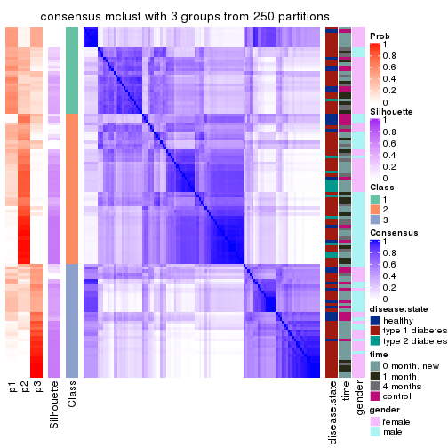
consensus_heatmap(res, k = 4)
consensus_heatmap(res, k = 5)
consensus_heatmap(res, k = 6)
Heatmaps for the membership of samples in all partitions to see how consistent they are:
membership_heatmap(res, k = 2)
membership_heatmap(res, k = 3)
membership_heatmap(res, k = 4)
membership_heatmap(res, k = 5)
membership_heatmap(res, k = 6)
As soon as we have had the classes for columns, we can look for signatures which are significantly different between classes which can be candidate marks for certain classes. Following are the heatmaps for signatures.
Signature heatmaps where rows are scaled:
get_signatures(res, k = 2)
get_signatures(res, k = 3)
get_signatures(res, k = 4)
get_signatures(res, k = 5)
get_signatures(res, k = 6)
Signature heatmaps where rows are not scaled:
get_signatures(res, k = 2, scale_rows = FALSE)
get_signatures(res, k = 3, scale_rows = FALSE)
get_signatures(res, k = 4, scale_rows = FALSE)
get_signatures(res, k = 5, scale_rows = FALSE)
get_signatures(res, k = 6, scale_rows = FALSE)
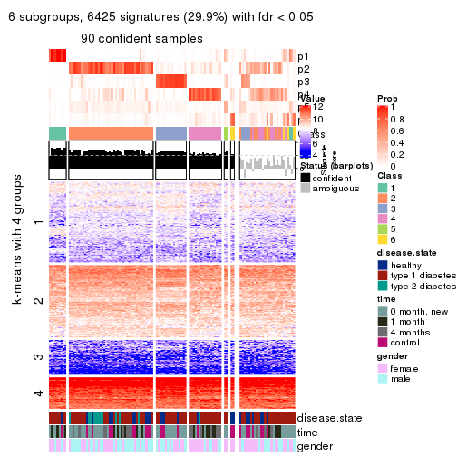
Compare the overlap of signatures from different k:
compare_signatures(res)
get_signature() returns a data frame invisibly. TO get the list of signatures, the function
call should be assigned to a variable explicitly. In following code, if plot argument is set
to FALSE, no heatmap is plotted while only the differential analysis is performed.
# code only for demonstration
tb = get_signature(res, k = ..., plot = FALSE)
An example of the output of tb is:
#> which_row fdr mean_1 mean_2 scaled_mean_1 scaled_mean_2 km
#> 1 38 0.042760348 8.373488 9.131774 -0.5533452 0.5164555 1
#> 2 40 0.018707592 7.106213 8.469186 -0.6173731 0.5762149 1
#> 3 55 0.019134737 10.221463 11.207825 -0.6159697 0.5749050 1
#> 4 59 0.006059896 5.921854 7.869574 -0.6899429 0.6439467 1
#> 5 60 0.018055526 8.928898 10.211722 -0.6204761 0.5791110 1
#> 6 98 0.009384629 15.714769 14.887706 0.6635654 -0.6193277 2
...
The columns in tb are:
which_row: row indices corresponding to the input matrix.fdr: FDR for the differential test. mean_x: The mean value in group x.scaled_mean_x: The mean value in group x after rows are scaled.km: Row groups if k-means clustering is applied to rows.UMAP plot which shows how samples are separated.
dimension_reduction(res, k = 2, method = "UMAP")
dimension_reduction(res, k = 3, method = "UMAP")

dimension_reduction(res, k = 4, method = "UMAP")
dimension_reduction(res, k = 5, method = "UMAP")
dimension_reduction(res, k = 6, method = "UMAP")
Following heatmap shows how subgroups are split when increasing k:
collect_classes(res)
Test correlation between subgroups and known annotations. If the known annotation is numeric, one-way ANOVA test is applied, and if the known annotation is discrete, chi-squared contingency table test is applied.
test_to_known_factors(res)
#> n disease.state(p) time(p) gender(p) k
#> CV:mclust 112 0.01651 0.000891 0.15540 2
#> CV:mclust 54 0.00585 0.394410 0.00280 3
#> CV:mclust 91 0.00341 0.004570 0.00156 4
#> CV:mclust 92 0.01130 0.005319 0.08367 5
#> CV:mclust 90 0.01018 0.002337 0.04095 6
If matrix rows can be associated to genes, consider to use GO_Enrichment(res,
...) to perform function enrichment for the signature genes.
The object with results only for a single top-value method and a single partition method can be extracted as:
res = res_list["CV", "NMF"]
# you can also extract it by
# res = res_list["CV:NMF"]
A summary of res and all the functions that can be applied to it:
res
#> A 'ConsensusPartition' object with k = 2, 3, 4, 5, 6.
#> On a matrix with 21512 rows and 117 columns.
#> Top rows (1000, 2000, 3000, 4000, 5000) are extracted by 'CV' method.
#> Subgroups are detected by 'NMF' method.
#> Performed in total 1250 partitions by row resampling.
#> Best k for subgroups seems to be 2.
#>
#> Following methods can be applied to this 'ConsensusPartition' object:
#> [1] "cola_report" "collect_classes" "collect_plots"
#> [4] "collect_stats" "colnames" "compare_signatures"
#> [7] "consensus_heatmap" "dimension_reduction" "functional_enrichment"
#> [10] "get_anno_col" "get_anno" "get_classes"
#> [13] "get_consensus" "get_matrix" "get_membership"
#> [16] "get_param" "get_signatures" "get_stats"
#> [19] "is_best_k" "is_stable_k" "membership_heatmap"
#> [22] "ncol" "nrow" "plot_ecdf"
#> [25] "rownames" "select_partition_number" "show"
#> [28] "suggest_best_k" "test_to_known_factors"
collect_plots() function collects all the plots made from res for all k (number of partitions)
into one single page to provide an easy and fast comparison between different k.
collect_plots(res)
The plots are:
k and the heatmap of
predicted classes for each k.k.k.k.All the plots in panels can be made by individual functions and they are plotted later in this section.
select_partition_number() produces several plots showing different
statistics for choosing “optimized” k. There are following statistics:
k;k, the area increased is defined as \(A_k - A_{k-1}\).The detailed explanations of these statistics can be found in the cola vignette.
Generally speaking, lower PAC score, higher mean silhouette score or higher
concordance corresponds to better partition. Rand index and Jaccard index
measure how similar the current partition is compared to partition with k-1.
If they are too similar, we won't accept k is better than k-1.
select_partition_number(res)
The numeric values for all these statistics can be obtained by get_stats().
get_stats(res)
#> k 1-PAC mean_silhouette concordance area_increased Rand Jaccard
#> 2 2 0.479 0.780 0.899 0.4933 0.496 0.496
#> 3 3 0.266 0.542 0.753 0.3013 0.611 0.377
#> 4 4 0.330 0.463 0.664 0.1377 0.835 0.584
#> 5 5 0.399 0.341 0.594 0.0766 0.902 0.668
#> 6 6 0.467 0.327 0.531 0.0487 0.903 0.620
suggest_best_k() suggests the best \(k\) based on these statistics. The rules are as follows:
NA.suggest_best_k(res)
#> [1] 2
Following shows the table of the partitions (You need to click the show/hide
code output link to see it). The membership matrix (columns with name p*)
is inferred by
clue::cl_consensus()
function with the SE method. Basically the value in the membership matrix
represents the probability to belong to a certain group. The finall class
label for an item is determined with the group with highest probability it
belongs to.
In get_classes() function, the entropy is calculated from the membership
matrix and the silhouette score is calculated from the consensus matrix.
cbind(get_classes(res, k = 2), get_membership(res, k = 2))
#> class entropy silhouette p1 p2
#> GSM254177 2 0.0000 0.8556 0.000 1.000
#> GSM254179 2 0.7674 0.7229 0.224 0.776
#> GSM254180 1 0.9732 0.1666 0.596 0.404
#> GSM254182 1 0.0938 0.9057 0.988 0.012
#> GSM254183 2 0.6247 0.7809 0.156 0.844
#> GSM254277 2 0.9552 0.4922 0.376 0.624
#> GSM254278 2 0.0000 0.8556 0.000 1.000
#> GSM254281 1 0.3274 0.8799 0.940 0.060
#> GSM254282 2 0.3274 0.8381 0.060 0.940
#> GSM254284 1 0.0672 0.9078 0.992 0.008
#> GSM254286 2 0.9393 0.4880 0.356 0.644
#> GSM254290 1 1.0000 -0.0402 0.504 0.496
#> GSM254291 2 0.0000 0.8556 0.000 1.000
#> GSM254293 2 0.9732 0.3357 0.404 0.596
#> GSM254178 1 0.0000 0.9095 1.000 0.000
#> GSM254181 2 0.0000 0.8556 0.000 1.000
#> GSM254279 2 0.0000 0.8556 0.000 1.000
#> GSM254280 2 0.0000 0.8556 0.000 1.000
#> GSM254283 2 0.6623 0.7573 0.172 0.828
#> GSM254285 2 0.0000 0.8556 0.000 1.000
#> GSM254287 2 0.0376 0.8552 0.004 0.996
#> GSM254288 2 0.8499 0.6335 0.276 0.724
#> GSM254289 2 0.7745 0.7165 0.228 0.772
#> GSM254292 1 0.3114 0.8871 0.944 0.056
#> GSM254184 2 0.7453 0.7236 0.212 0.788
#> GSM254185 2 0.0000 0.8556 0.000 1.000
#> GSM254187 2 0.0000 0.8556 0.000 1.000
#> GSM254189 2 0.5946 0.7828 0.144 0.856
#> GSM254190 1 0.0376 0.9087 0.996 0.004
#> GSM254191 2 0.9850 0.4029 0.428 0.572
#> GSM254192 2 0.3114 0.8384 0.056 0.944
#> GSM254193 1 0.0000 0.9095 1.000 0.000
#> GSM254199 1 0.0000 0.9095 1.000 0.000
#> GSM254203 1 0.0000 0.9095 1.000 0.000
#> GSM254206 1 0.0000 0.9095 1.000 0.000
#> GSM254210 1 0.6343 0.7714 0.840 0.160
#> GSM254211 1 0.0000 0.9095 1.000 0.000
#> GSM254215 2 0.0000 0.8556 0.000 1.000
#> GSM254218 2 0.3114 0.8439 0.056 0.944
#> GSM254230 1 0.0000 0.9095 1.000 0.000
#> GSM254236 2 0.0000 0.8556 0.000 1.000
#> GSM254244 1 0.0000 0.9095 1.000 0.000
#> GSM254247 1 0.2236 0.8936 0.964 0.036
#> GSM254248 1 0.6623 0.7567 0.828 0.172
#> GSM254254 2 0.0000 0.8556 0.000 1.000
#> GSM254257 2 0.3733 0.8322 0.072 0.928
#> GSM254258 2 0.0000 0.8556 0.000 1.000
#> GSM254261 2 0.0000 0.8556 0.000 1.000
#> GSM254264 2 0.0000 0.8556 0.000 1.000
#> GSM254186 2 0.0000 0.8556 0.000 1.000
#> GSM254188 2 0.0000 0.8556 0.000 1.000
#> GSM254194 2 0.0000 0.8556 0.000 1.000
#> GSM254195 1 0.0000 0.9095 1.000 0.000
#> GSM254196 1 0.7299 0.7576 0.796 0.204
#> GSM254200 2 0.0000 0.8556 0.000 1.000
#> GSM254209 2 0.0000 0.8556 0.000 1.000
#> GSM254214 2 0.4815 0.8148 0.104 0.896
#> GSM254221 1 0.3733 0.8743 0.928 0.072
#> GSM254224 1 0.6623 0.7918 0.828 0.172
#> GSM254227 1 0.7950 0.7077 0.760 0.240
#> GSM254233 2 0.9998 0.0387 0.492 0.508
#> GSM254235 1 0.0000 0.9095 1.000 0.000
#> GSM254239 1 0.9248 0.5157 0.660 0.340
#> GSM254241 1 0.0376 0.9088 0.996 0.004
#> GSM254251 2 0.0000 0.8556 0.000 1.000
#> GSM254262 2 0.0376 0.8552 0.004 0.996
#> GSM254263 2 0.0000 0.8556 0.000 1.000
#> GSM254197 1 0.0000 0.9095 1.000 0.000
#> GSM254201 1 0.0000 0.9095 1.000 0.000
#> GSM254204 1 0.0000 0.9095 1.000 0.000
#> GSM254216 1 0.0000 0.9095 1.000 0.000
#> GSM254228 1 0.0000 0.9095 1.000 0.000
#> GSM254242 1 0.0000 0.9095 1.000 0.000
#> GSM254245 1 0.0000 0.9095 1.000 0.000
#> GSM254252 1 0.0000 0.9095 1.000 0.000
#> GSM254255 1 0.2603 0.8926 0.956 0.044
#> GSM254259 1 0.0000 0.9095 1.000 0.000
#> GSM254207 2 0.0672 0.8545 0.008 0.992
#> GSM254212 2 0.9933 0.1868 0.452 0.548
#> GSM254219 1 0.0376 0.9088 0.996 0.004
#> GSM254222 2 0.8955 0.5556 0.312 0.688
#> GSM254225 2 0.9896 0.2389 0.440 0.560
#> GSM254231 1 0.6712 0.7854 0.824 0.176
#> GSM254234 2 0.9944 0.1880 0.456 0.544
#> GSM254237 1 0.6531 0.7958 0.832 0.168
#> GSM254249 1 0.7528 0.7399 0.784 0.216
#> GSM254198 1 0.0000 0.9095 1.000 0.000
#> GSM254202 1 0.2236 0.8950 0.964 0.036
#> GSM254205 1 0.0000 0.9095 1.000 0.000
#> GSM254217 1 0.0000 0.9095 1.000 0.000
#> GSM254229 1 0.5059 0.8476 0.888 0.112
#> GSM254243 1 0.0000 0.9095 1.000 0.000
#> GSM254246 1 0.0000 0.9095 1.000 0.000
#> GSM254253 1 0.0000 0.9095 1.000 0.000
#> GSM254256 2 0.9866 0.3927 0.432 0.568
#> GSM254260 1 0.0000 0.9095 1.000 0.000
#> GSM254208 1 0.5946 0.8169 0.856 0.144
#> GSM254213 2 0.0000 0.8556 0.000 1.000
#> GSM254220 1 0.0376 0.9088 0.996 0.004
#> GSM254223 1 0.6801 0.7786 0.820 0.180
#> GSM254226 2 0.1184 0.8528 0.016 0.984
#> GSM254232 1 0.7950 0.7048 0.760 0.240
#> GSM254238 1 0.3274 0.8821 0.940 0.060
#> GSM254240 1 0.0938 0.9063 0.988 0.012
#> GSM254250 1 0.0672 0.9079 0.992 0.008
#> GSM254268 2 0.2236 0.8496 0.036 0.964
#> GSM254269 2 0.7139 0.7541 0.196 0.804
#> GSM254270 1 0.0000 0.9095 1.000 0.000
#> GSM254272 2 0.5842 0.8027 0.140 0.860
#> GSM254273 2 0.4690 0.8247 0.100 0.900
#> GSM254274 2 0.1633 0.8517 0.024 0.976
#> GSM254265 2 0.9795 0.4333 0.416 0.584
#> GSM254266 1 0.9170 0.5319 0.668 0.332
#> GSM254267 2 0.9963 0.2131 0.464 0.536
#> GSM254271 2 0.0000 0.8556 0.000 1.000
#> GSM254275 1 0.8267 0.6725 0.740 0.260
#> GSM254276 2 0.4562 0.8187 0.096 0.904
cbind(get_classes(res, k = 3), get_membership(res, k = 3))
#> class entropy silhouette p1 p2 p3
#> GSM254177 3 0.304 0.7948 0.044 0.036 0.920
#> GSM254179 2 0.881 0.1173 0.116 0.484 0.400
#> GSM254180 2 0.671 0.6083 0.176 0.740 0.084
#> GSM254182 1 0.586 0.6741 0.796 0.084 0.120
#> GSM254183 3 0.774 0.3011 0.048 0.444 0.508
#> GSM254277 2 0.945 0.3125 0.208 0.488 0.304
#> GSM254278 3 0.384 0.7557 0.116 0.012 0.872
#> GSM254281 1 0.736 0.5517 0.656 0.280 0.064
#> GSM254282 3 0.826 0.5437 0.124 0.260 0.616
#> GSM254284 2 0.641 0.5032 0.272 0.700 0.028
#> GSM254286 1 0.769 0.1349 0.536 0.048 0.416
#> GSM254290 2 0.638 0.6288 0.128 0.768 0.104
#> GSM254291 3 0.435 0.7528 0.000 0.184 0.816
#> GSM254293 2 0.885 0.4924 0.148 0.552 0.300
#> GSM254178 1 0.394 0.6876 0.844 0.156 0.000
#> GSM254181 2 0.627 -0.0622 0.000 0.544 0.456
#> GSM254279 3 0.309 0.7993 0.016 0.072 0.912
#> GSM254280 3 0.494 0.7700 0.028 0.148 0.824
#> GSM254283 2 0.382 0.6426 0.000 0.852 0.148
#> GSM254285 3 0.324 0.7976 0.032 0.056 0.912
#> GSM254287 2 0.621 0.2354 0.004 0.628 0.368
#> GSM254288 2 0.464 0.6526 0.036 0.848 0.116
#> GSM254289 2 0.547 0.6248 0.052 0.808 0.140
#> GSM254292 1 0.652 0.6604 0.760 0.132 0.108
#> GSM254184 3 0.682 0.1132 0.480 0.012 0.508
#> GSM254185 3 0.227 0.7995 0.016 0.040 0.944
#> GSM254187 3 0.270 0.7849 0.056 0.016 0.928
#> GSM254189 3 0.659 0.4408 0.352 0.016 0.632
#> GSM254190 1 0.410 0.6532 0.852 0.008 0.140
#> GSM254191 1 0.606 0.4623 0.708 0.016 0.276
#> GSM254192 3 0.500 0.7253 0.152 0.028 0.820
#> GSM254193 1 0.253 0.7092 0.936 0.020 0.044
#> GSM254199 1 0.350 0.7206 0.880 0.116 0.004
#> GSM254203 1 0.175 0.7276 0.952 0.048 0.000
#> GSM254206 1 0.171 0.7258 0.960 0.032 0.008
#> GSM254210 1 0.814 0.0668 0.480 0.452 0.068
#> GSM254211 1 0.243 0.7264 0.940 0.036 0.024
#> GSM254215 3 0.162 0.7967 0.024 0.012 0.964
#> GSM254218 3 0.783 0.5979 0.112 0.232 0.656
#> GSM254230 1 0.207 0.7297 0.940 0.060 0.000
#> GSM254236 3 0.245 0.7961 0.000 0.076 0.924
#> GSM254244 1 0.249 0.7306 0.932 0.060 0.008
#> GSM254247 2 0.483 0.5878 0.204 0.792 0.004
#> GSM254248 1 0.757 0.5945 0.688 0.184 0.128
#> GSM254254 3 0.554 0.6446 0.008 0.252 0.740
#> GSM254257 3 0.823 0.5383 0.116 0.272 0.612
#> GSM254258 3 0.227 0.7952 0.040 0.016 0.944
#> GSM254261 3 0.708 0.5582 0.044 0.304 0.652
#> GSM254264 3 0.183 0.7933 0.036 0.008 0.956
#> GSM254186 3 0.296 0.7951 0.000 0.100 0.900
#> GSM254188 3 0.296 0.7937 0.000 0.100 0.900
#> GSM254194 3 0.444 0.7998 0.052 0.084 0.864
#> GSM254195 1 0.563 0.6577 0.808 0.116 0.076
#> GSM254196 1 0.781 0.5495 0.672 0.184 0.144
#> GSM254200 3 0.319 0.7917 0.000 0.112 0.888
#> GSM254209 2 0.593 0.2875 0.000 0.644 0.356
#> GSM254214 2 0.429 0.6121 0.004 0.832 0.164
#> GSM254221 1 0.652 0.1913 0.516 0.480 0.004
#> GSM254224 2 0.296 0.6417 0.080 0.912 0.008
#> GSM254227 1 0.802 0.2580 0.520 0.416 0.064
#> GSM254233 2 0.611 0.6350 0.116 0.784 0.100
#> GSM254235 1 0.493 0.6507 0.768 0.232 0.000
#> GSM254239 2 0.368 0.6619 0.044 0.896 0.060
#> GSM254241 2 0.628 0.2305 0.384 0.612 0.004
#> GSM254251 3 0.599 0.5117 0.000 0.368 0.632
#> GSM254262 3 0.425 0.7977 0.048 0.080 0.872
#> GSM254263 3 0.362 0.7822 0.000 0.136 0.864
#> GSM254197 1 0.236 0.7296 0.928 0.072 0.000
#> GSM254201 1 0.625 0.3827 0.620 0.376 0.004
#> GSM254204 2 0.630 0.1005 0.472 0.528 0.000
#> GSM254216 2 0.588 0.3567 0.348 0.652 0.000
#> GSM254228 1 0.280 0.7262 0.908 0.092 0.000
#> GSM254242 1 0.540 0.5745 0.720 0.280 0.000
#> GSM254245 1 0.698 0.3031 0.560 0.420 0.020
#> GSM254252 2 0.576 0.5021 0.276 0.716 0.008
#> GSM254255 2 0.656 0.5169 0.252 0.708 0.040
#> GSM254259 1 0.327 0.7172 0.884 0.116 0.000
#> GSM254207 2 0.650 -0.0285 0.004 0.536 0.460
#> GSM254212 2 0.270 0.6631 0.016 0.928 0.056
#> GSM254219 2 0.525 0.4739 0.264 0.736 0.000
#> GSM254222 2 0.338 0.6627 0.012 0.896 0.092
#> GSM254225 2 0.574 0.6128 0.044 0.784 0.172
#> GSM254231 2 0.362 0.6265 0.104 0.884 0.012
#> GSM254234 2 0.230 0.6597 0.020 0.944 0.036
#> GSM254237 2 0.357 0.6196 0.120 0.876 0.004
#> GSM254249 2 0.599 0.5139 0.240 0.736 0.024
#> GSM254198 2 0.726 0.1009 0.440 0.532 0.028
#> GSM254202 1 0.589 0.6860 0.796 0.104 0.100
#> GSM254205 2 0.625 0.0979 0.444 0.556 0.000
#> GSM254217 2 0.634 0.3090 0.400 0.596 0.004
#> GSM254229 2 0.506 0.6106 0.148 0.820 0.032
#> GSM254243 1 0.573 0.4955 0.676 0.324 0.000
#> GSM254246 1 0.268 0.7300 0.920 0.076 0.004
#> GSM254253 1 0.590 0.5588 0.700 0.292 0.008
#> GSM254256 2 0.937 0.3928 0.280 0.508 0.212
#> GSM254260 2 0.701 0.1568 0.432 0.548 0.020
#> GSM254208 2 0.405 0.6141 0.148 0.848 0.004
#> GSM254213 2 0.568 0.3863 0.000 0.684 0.316
#> GSM254220 2 0.595 0.2835 0.360 0.640 0.000
#> GSM254223 2 0.428 0.6202 0.132 0.852 0.016
#> GSM254226 2 0.556 0.4483 0.000 0.700 0.300
#> GSM254232 2 0.153 0.6526 0.032 0.964 0.004
#> GSM254238 2 0.553 0.4606 0.296 0.704 0.000
#> GSM254240 2 0.590 0.3009 0.352 0.648 0.000
#> GSM254250 1 0.623 0.3112 0.564 0.436 0.000
#> GSM254268 2 0.716 0.4262 0.044 0.640 0.316
#> GSM254269 2 0.746 0.5902 0.104 0.688 0.208
#> GSM254270 2 0.737 0.0692 0.448 0.520 0.032
#> GSM254272 2 0.800 0.5525 0.128 0.648 0.224
#> GSM254273 2 0.868 0.2729 0.112 0.520 0.368
#> GSM254274 2 0.758 0.4260 0.060 0.616 0.324
#> GSM254265 2 0.678 0.5893 0.176 0.736 0.088
#> GSM254266 2 0.178 0.6581 0.020 0.960 0.020
#> GSM254267 2 0.255 0.6653 0.024 0.936 0.040
#> GSM254271 2 0.533 0.4917 0.000 0.728 0.272
#> GSM254275 2 0.171 0.6572 0.032 0.960 0.008
#> GSM254276 2 0.296 0.6586 0.000 0.900 0.100
cbind(get_classes(res, k = 4), get_membership(res, k = 4))
#> class entropy silhouette p1 p2 p3 p4
#> GSM254177 3 0.556 0.635427 0.004 0.056 0.704 0.236
#> GSM254179 4 0.768 0.294045 0.024 0.248 0.172 0.556
#> GSM254180 4 0.673 0.300722 0.048 0.352 0.028 0.572
#> GSM254182 4 0.635 0.165655 0.296 0.004 0.080 0.620
#> GSM254183 2 0.903 0.238382 0.092 0.452 0.236 0.220
#> GSM254277 4 0.579 0.524437 0.020 0.124 0.112 0.744
#> GSM254278 3 0.421 0.660191 0.016 0.008 0.804 0.172
#> GSM254281 4 0.745 0.520893 0.172 0.088 0.100 0.640
#> GSM254282 3 0.830 0.347329 0.040 0.240 0.500 0.220
#> GSM254284 2 0.773 0.293584 0.120 0.596 0.064 0.220
#> GSM254286 4 0.789 0.048884 0.180 0.012 0.392 0.416
#> GSM254290 4 0.582 0.466413 0.012 0.236 0.056 0.696
#> GSM254291 3 0.584 0.672510 0.020 0.188 0.724 0.068
#> GSM254293 4 0.750 0.368853 0.020 0.240 0.168 0.572
#> GSM254178 1 0.346 0.725450 0.868 0.096 0.004 0.032
#> GSM254181 2 0.611 0.311091 0.000 0.648 0.264 0.088
#> GSM254279 3 0.337 0.740046 0.000 0.108 0.864 0.028
#> GSM254280 3 0.433 0.716917 0.008 0.164 0.804 0.024
#> GSM254283 2 0.290 0.581186 0.012 0.904 0.060 0.024
#> GSM254285 3 0.516 0.706943 0.000 0.088 0.756 0.156
#> GSM254287 2 0.805 0.373158 0.060 0.568 0.188 0.184
#> GSM254288 2 0.712 0.457060 0.100 0.652 0.056 0.192
#> GSM254289 2 0.728 0.458514 0.132 0.656 0.072 0.140
#> GSM254292 4 0.631 0.440636 0.180 0.016 0.112 0.692
#> GSM254184 3 0.627 -0.025310 0.456 0.000 0.488 0.056
#> GSM254185 3 0.358 0.718686 0.000 0.032 0.852 0.116
#> GSM254187 3 0.351 0.705657 0.016 0.012 0.864 0.108
#> GSM254189 3 0.517 0.503770 0.248 0.000 0.712 0.040
#> GSM254190 1 0.471 0.675720 0.788 0.000 0.140 0.072
#> GSM254191 1 0.464 0.629081 0.776 0.004 0.188 0.032
#> GSM254192 3 0.479 0.697648 0.084 0.028 0.816 0.072
#> GSM254193 1 0.228 0.723813 0.924 0.000 0.052 0.024
#> GSM254199 1 0.402 0.718885 0.852 0.088 0.020 0.040
#> GSM254203 1 0.134 0.743865 0.964 0.008 0.004 0.024
#> GSM254206 1 0.498 0.605612 0.716 0.004 0.020 0.260
#> GSM254210 4 0.769 0.451177 0.136 0.228 0.048 0.588
#> GSM254211 1 0.366 0.736914 0.868 0.016 0.032 0.084
#> GSM254215 3 0.163 0.731295 0.008 0.016 0.956 0.020
#> GSM254218 3 0.800 0.178088 0.028 0.148 0.452 0.372
#> GSM254230 1 0.323 0.742315 0.884 0.020 0.012 0.084
#> GSM254236 3 0.328 0.738427 0.000 0.096 0.872 0.032
#> GSM254244 1 0.528 0.534160 0.676 0.012 0.012 0.300
#> GSM254247 4 0.409 0.514357 0.008 0.216 0.000 0.776
#> GSM254248 4 0.845 0.105736 0.364 0.100 0.088 0.448
#> GSM254254 3 0.674 0.464293 0.000 0.304 0.576 0.120
#> GSM254257 3 0.816 0.307178 0.040 0.324 0.484 0.152
#> GSM254258 3 0.231 0.734510 0.020 0.032 0.932 0.016
#> GSM254261 3 0.779 0.180293 0.008 0.376 0.432 0.184
#> GSM254264 3 0.219 0.725563 0.008 0.012 0.932 0.048
#> GSM254186 3 0.371 0.730152 0.000 0.132 0.840 0.028
#> GSM254188 3 0.386 0.731359 0.000 0.144 0.828 0.028
#> GSM254194 3 0.452 0.738671 0.024 0.092 0.828 0.056
#> GSM254195 1 0.727 0.486187 0.580 0.060 0.056 0.304
#> GSM254196 1 0.866 0.470477 0.532 0.132 0.148 0.188
#> GSM254200 3 0.355 0.728504 0.000 0.144 0.840 0.016
#> GSM254209 2 0.626 0.407553 0.012 0.672 0.232 0.084
#> GSM254214 2 0.408 0.576178 0.020 0.852 0.072 0.056
#> GSM254221 4 0.699 0.442891 0.128 0.256 0.012 0.604
#> GSM254224 2 0.495 0.297784 0.008 0.648 0.000 0.344
#> GSM254227 1 0.707 0.388867 0.588 0.308 0.040 0.064
#> GSM254233 4 0.653 0.080033 0.020 0.452 0.036 0.492
#> GSM254235 1 0.446 0.696862 0.808 0.116 0.000 0.076
#> GSM254239 2 0.567 0.526694 0.100 0.756 0.024 0.120
#> GSM254241 2 0.715 0.057251 0.420 0.448 0.000 0.132
#> GSM254251 3 0.675 0.351575 0.008 0.404 0.516 0.072
#> GSM254262 3 0.664 0.674529 0.136 0.124 0.696 0.044
#> GSM254263 3 0.538 0.683036 0.008 0.184 0.744 0.064
#> GSM254197 1 0.219 0.741289 0.932 0.044 0.004 0.020
#> GSM254201 4 0.624 0.570972 0.176 0.140 0.004 0.680
#> GSM254204 4 0.797 0.477524 0.220 0.276 0.016 0.488
#> GSM254216 2 0.720 -0.147970 0.140 0.464 0.000 0.396
#> GSM254228 1 0.214 0.741702 0.928 0.056 0.000 0.016
#> GSM254242 4 0.724 0.388858 0.320 0.132 0.008 0.540
#> GSM254245 4 0.769 0.528364 0.232 0.212 0.016 0.540
#> GSM254252 4 0.641 0.342551 0.080 0.348 0.000 0.572
#> GSM254255 2 0.780 0.116299 0.088 0.520 0.056 0.336
#> GSM254259 1 0.345 0.732388 0.868 0.052 0.000 0.080
#> GSM254207 2 0.744 0.321257 0.000 0.500 0.296 0.204
#> GSM254212 2 0.349 0.570190 0.008 0.860 0.016 0.116
#> GSM254219 4 0.712 0.173258 0.128 0.428 0.000 0.444
#> GSM254222 2 0.417 0.574958 0.020 0.844 0.044 0.092
#> GSM254225 2 0.633 0.515189 0.124 0.720 0.112 0.044
#> GSM254231 2 0.551 0.347569 0.040 0.660 0.000 0.300
#> GSM254234 2 0.342 0.569485 0.016 0.876 0.020 0.088
#> GSM254237 2 0.525 0.433216 0.052 0.720 0.000 0.228
#> GSM254249 2 0.691 0.105164 0.124 0.540 0.000 0.336
#> GSM254198 4 0.815 0.374833 0.180 0.324 0.028 0.468
#> GSM254202 4 0.634 0.391619 0.212 0.000 0.136 0.652
#> GSM254205 4 0.564 0.565049 0.112 0.168 0.000 0.720
#> GSM254217 2 0.787 -0.000491 0.264 0.448 0.004 0.284
#> GSM254229 2 0.572 0.430824 0.028 0.692 0.024 0.256
#> GSM254243 1 0.723 0.030161 0.496 0.152 0.000 0.352
#> GSM254246 1 0.334 0.740078 0.876 0.024 0.008 0.092
#> GSM254253 1 0.788 0.182671 0.524 0.184 0.024 0.268
#> GSM254256 2 0.854 -0.015236 0.056 0.412 0.156 0.376
#> GSM254260 4 0.710 0.530795 0.120 0.240 0.024 0.616
#> GSM254208 2 0.524 0.522097 0.124 0.764 0.004 0.108
#> GSM254213 2 0.510 0.522232 0.000 0.760 0.156 0.084
#> GSM254220 4 0.647 0.413550 0.092 0.320 0.000 0.588
#> GSM254223 2 0.501 0.524558 0.116 0.772 0.000 0.112
#> GSM254226 2 0.434 0.568644 0.020 0.824 0.128 0.028
#> GSM254232 2 0.467 0.514705 0.024 0.772 0.008 0.196
#> GSM254238 2 0.723 0.251789 0.248 0.576 0.008 0.168
#> GSM254240 2 0.772 0.066488 0.300 0.476 0.004 0.220
#> GSM254250 4 0.786 0.244501 0.356 0.272 0.000 0.372
#> GSM254268 2 0.707 0.439052 0.016 0.620 0.204 0.160
#> GSM254269 2 0.696 0.430047 0.020 0.632 0.128 0.220
#> GSM254270 4 0.752 0.435392 0.136 0.300 0.020 0.544
#> GSM254272 2 0.787 0.266205 0.036 0.524 0.136 0.304
#> GSM254273 2 0.800 0.337453 0.028 0.524 0.228 0.220
#> GSM254274 2 0.716 0.344481 0.004 0.552 0.148 0.296
#> GSM254265 2 0.750 0.267783 0.040 0.544 0.088 0.328
#> GSM254266 2 0.429 0.525271 0.012 0.804 0.016 0.168
#> GSM254267 2 0.527 0.503323 0.040 0.740 0.012 0.208
#> GSM254271 2 0.436 0.552690 0.000 0.808 0.136 0.056
#> GSM254275 2 0.397 0.570894 0.040 0.852 0.016 0.092
#> GSM254276 2 0.273 0.568250 0.000 0.896 0.016 0.088
cbind(get_classes(res, k = 5), get_membership(res, k = 5))
#> class entropy silhouette p1 p2 p3 p4 p5
#> GSM254177 3 0.634 0.516972 0.008 0.040 0.592 0.292 0.068
#> GSM254179 4 0.741 0.203192 0.000 0.128 0.080 0.444 0.348
#> GSM254180 2 0.781 0.000107 0.032 0.420 0.060 0.376 0.112
#> GSM254182 4 0.633 0.358536 0.104 0.000 0.036 0.592 0.268
#> GSM254183 5 0.642 0.441011 0.060 0.084 0.084 0.076 0.696
#> GSM254277 4 0.692 0.374374 0.000 0.180 0.116 0.592 0.112
#> GSM254278 3 0.446 0.560458 0.008 0.012 0.716 0.256 0.008
#> GSM254281 4 0.837 0.249215 0.100 0.228 0.132 0.484 0.056
#> GSM254282 3 0.836 0.210792 0.032 0.260 0.412 0.228 0.068
#> GSM254284 2 0.703 0.363843 0.108 0.608 0.020 0.188 0.076
#> GSM254286 4 0.807 0.034366 0.088 0.064 0.336 0.444 0.068
#> GSM254290 4 0.626 0.428603 0.000 0.136 0.020 0.592 0.252
#> GSM254291 3 0.563 0.543758 0.012 0.076 0.660 0.008 0.244
#> GSM254293 4 0.793 0.126205 0.012 0.316 0.176 0.424 0.072
#> GSM254178 1 0.376 0.661624 0.816 0.136 0.000 0.008 0.040
#> GSM254181 5 0.744 0.333444 0.008 0.340 0.292 0.016 0.344
#> GSM254279 3 0.328 0.653288 0.012 0.056 0.868 0.004 0.060
#> GSM254280 3 0.448 0.619446 0.016 0.116 0.788 0.004 0.076
#> GSM254283 2 0.479 0.237351 0.004 0.724 0.076 0.000 0.196
#> GSM254285 3 0.423 0.619477 0.000 0.020 0.800 0.120 0.060
#> GSM254287 5 0.601 0.489739 0.016 0.140 0.084 0.060 0.700
#> GSM254288 5 0.636 0.433226 0.048 0.200 0.024 0.072 0.656
#> GSM254289 5 0.581 0.469301 0.052 0.200 0.056 0.008 0.684
#> GSM254292 4 0.458 0.469850 0.064 0.008 0.100 0.796 0.032
#> GSM254184 1 0.594 0.175995 0.524 0.000 0.396 0.024 0.056
#> GSM254185 3 0.444 0.632668 0.000 0.040 0.784 0.140 0.036
#> GSM254187 3 0.317 0.640221 0.008 0.016 0.856 0.116 0.004
#> GSM254189 3 0.562 0.355509 0.324 0.000 0.604 0.048 0.024
#> GSM254190 1 0.412 0.644476 0.816 0.000 0.088 0.068 0.028
#> GSM254191 1 0.460 0.617226 0.768 0.000 0.100 0.012 0.120
#> GSM254192 3 0.624 0.602037 0.088 0.008 0.680 0.120 0.104
#> GSM254193 1 0.240 0.674199 0.904 0.000 0.012 0.012 0.072
#> GSM254199 1 0.402 0.684641 0.828 0.080 0.012 0.012 0.068
#> GSM254203 1 0.152 0.694736 0.952 0.020 0.000 0.012 0.016
#> GSM254206 1 0.601 0.417162 0.568 0.004 0.008 0.328 0.092
#> GSM254210 4 0.760 0.213478 0.048 0.112 0.028 0.412 0.400
#> GSM254211 1 0.344 0.689717 0.868 0.052 0.008 0.040 0.032
#> GSM254215 3 0.191 0.659469 0.000 0.004 0.932 0.036 0.028
#> GSM254218 3 0.762 0.200214 0.004 0.176 0.424 0.336 0.060
#> GSM254230 1 0.359 0.681351 0.848 0.080 0.000 0.048 0.024
#> GSM254236 3 0.482 0.621900 0.000 0.044 0.756 0.044 0.156
#> GSM254244 1 0.682 0.310402 0.500 0.056 0.008 0.368 0.068
#> GSM254247 4 0.628 0.473551 0.016 0.148 0.008 0.620 0.208
#> GSM254248 5 0.810 -0.184592 0.172 0.036 0.048 0.356 0.388
#> GSM254254 3 0.737 0.331600 0.000 0.172 0.528 0.092 0.208
#> GSM254257 3 0.886 0.172097 0.048 0.176 0.412 0.136 0.228
#> GSM254258 3 0.360 0.650813 0.032 0.020 0.864 0.036 0.048
#> GSM254261 3 0.779 0.242690 0.000 0.212 0.480 0.128 0.180
#> GSM254264 3 0.212 0.644957 0.008 0.000 0.912 0.076 0.004
#> GSM254186 3 0.370 0.629316 0.000 0.064 0.816 0.000 0.120
#> GSM254188 3 0.420 0.619136 0.000 0.084 0.788 0.004 0.124
#> GSM254194 3 0.532 0.623518 0.040 0.124 0.752 0.020 0.064
#> GSM254195 1 0.775 0.196068 0.388 0.004 0.092 0.380 0.136
#> GSM254196 1 0.866 0.279737 0.400 0.020 0.204 0.216 0.160
#> GSM254200 3 0.421 0.612983 0.000 0.072 0.784 0.004 0.140
#> GSM254209 5 0.684 0.366795 0.000 0.376 0.212 0.008 0.404
#> GSM254214 2 0.637 -0.021311 0.004 0.544 0.108 0.016 0.328
#> GSM254221 4 0.746 0.400826 0.044 0.216 0.024 0.536 0.180
#> GSM254224 2 0.573 0.290688 0.004 0.652 0.008 0.220 0.116
#> GSM254227 1 0.685 0.383425 0.544 0.240 0.036 0.000 0.180
#> GSM254233 2 0.731 -0.048980 0.000 0.464 0.060 0.324 0.152
#> GSM254235 1 0.470 0.638601 0.760 0.156 0.000 0.024 0.060
#> GSM254239 5 0.671 0.206489 0.052 0.400 0.036 0.024 0.488
#> GSM254241 2 0.809 0.051513 0.264 0.368 0.000 0.100 0.268
#> GSM254251 3 0.654 0.243609 0.000 0.244 0.528 0.008 0.220
#> GSM254262 3 0.706 0.370451 0.184 0.044 0.520 0.000 0.252
#> GSM254263 3 0.567 0.416863 0.020 0.044 0.596 0.004 0.336
#> GSM254197 1 0.212 0.692419 0.916 0.028 0.000 0.000 0.056
#> GSM254201 4 0.735 0.375151 0.128 0.268 0.012 0.528 0.064
#> GSM254204 4 0.783 0.305133 0.112 0.304 0.000 0.428 0.156
#> GSM254216 2 0.693 0.222397 0.116 0.584 0.000 0.200 0.100
#> GSM254228 1 0.234 0.694466 0.912 0.052 0.000 0.008 0.028
#> GSM254242 4 0.799 0.187540 0.252 0.336 0.004 0.340 0.068
#> GSM254245 4 0.734 0.227646 0.124 0.324 0.004 0.480 0.068
#> GSM254252 4 0.729 0.371582 0.040 0.204 0.000 0.452 0.304
#> GSM254255 2 0.679 0.269884 0.040 0.592 0.036 0.264 0.068
#> GSM254259 1 0.395 0.677536 0.832 0.064 0.000 0.052 0.052
#> GSM254207 2 0.761 0.038332 0.004 0.452 0.324 0.084 0.136
#> GSM254212 2 0.620 -0.052487 0.004 0.520 0.028 0.060 0.388
#> GSM254219 2 0.702 -0.111227 0.036 0.464 0.000 0.348 0.152
#> GSM254222 2 0.498 0.380016 0.052 0.772 0.060 0.008 0.108
#> GSM254225 2 0.746 -0.065131 0.100 0.520 0.128 0.004 0.248
#> GSM254231 2 0.659 0.188758 0.004 0.516 0.004 0.196 0.280
#> GSM254234 2 0.446 0.320259 0.004 0.768 0.044 0.012 0.172
#> GSM254237 2 0.554 0.387878 0.012 0.680 0.004 0.100 0.204
#> GSM254249 2 0.712 0.178074 0.028 0.556 0.020 0.204 0.192
#> GSM254198 2 0.865 -0.084215 0.124 0.360 0.032 0.328 0.156
#> GSM254202 4 0.526 0.443431 0.088 0.024 0.116 0.752 0.020
#> GSM254205 4 0.686 0.418033 0.044 0.116 0.000 0.492 0.348
#> GSM254217 2 0.747 0.303242 0.180 0.544 0.004 0.156 0.116
#> GSM254229 2 0.545 0.405705 0.016 0.708 0.016 0.192 0.068
#> GSM254243 1 0.828 -0.157083 0.352 0.172 0.000 0.308 0.168
#> GSM254246 1 0.322 0.692487 0.872 0.032 0.000 0.060 0.036
#> GSM254253 1 0.811 0.138283 0.460 0.260 0.028 0.180 0.072
#> GSM254256 2 0.930 0.114383 0.052 0.312 0.168 0.232 0.236
#> GSM254260 4 0.733 0.253887 0.060 0.356 0.012 0.468 0.104
#> GSM254208 2 0.554 0.379395 0.136 0.716 0.020 0.012 0.116
#> GSM254213 5 0.673 0.355195 0.000 0.376 0.188 0.008 0.428
#> GSM254220 4 0.733 0.301712 0.028 0.296 0.000 0.408 0.268
#> GSM254223 2 0.501 0.400574 0.096 0.756 0.000 0.040 0.108
#> GSM254226 2 0.708 -0.129521 0.020 0.484 0.228 0.004 0.264
#> GSM254232 2 0.609 0.238542 0.000 0.556 0.008 0.116 0.320
#> GSM254238 2 0.678 0.323839 0.160 0.612 0.004 0.072 0.152
#> GSM254240 2 0.793 0.116188 0.184 0.460 0.000 0.144 0.212
#> GSM254250 4 0.826 0.243132 0.136 0.288 0.000 0.360 0.216
#> GSM254268 5 0.866 0.170546 0.020 0.296 0.180 0.144 0.360
#> GSM254269 2 0.777 0.291690 0.020 0.536 0.168 0.172 0.104
#> GSM254270 2 0.795 -0.069094 0.124 0.404 0.032 0.376 0.064
#> GSM254272 2 0.799 0.274792 0.012 0.476 0.124 0.248 0.140
#> GSM254273 2 0.861 0.063064 0.016 0.400 0.220 0.184 0.180
#> GSM254274 2 0.787 0.266609 0.008 0.496 0.168 0.208 0.120
#> GSM254265 2 0.785 0.265078 0.044 0.504 0.056 0.264 0.132
#> GSM254266 2 0.321 0.412393 0.000 0.864 0.016 0.032 0.088
#> GSM254267 2 0.416 0.424243 0.008 0.828 0.044 0.056 0.064
#> GSM254271 2 0.644 -0.100789 0.000 0.568 0.136 0.024 0.272
#> GSM254275 2 0.576 -0.015404 0.020 0.576 0.012 0.032 0.360
#> GSM254276 2 0.402 0.348993 0.000 0.820 0.036 0.040 0.104
cbind(get_classes(res, k = 6), get_membership(res, k = 6))
#> class entropy silhouette p1 p2 p3 p4 p5 p6
#> GSM254177 3 0.660 0.387032 0.000 0.052 0.552 0.080 0.048 0.268
#> GSM254179 4 0.794 0.175449 0.008 0.068 0.040 0.352 0.264 0.268
#> GSM254180 6 0.694 0.384501 0.004 0.112 0.036 0.160 0.112 0.576
#> GSM254182 4 0.668 0.253410 0.060 0.000 0.052 0.544 0.272 0.072
#> GSM254183 5 0.712 0.396626 0.028 0.072 0.084 0.140 0.600 0.076
#> GSM254277 6 0.707 0.220291 0.012 0.036 0.064 0.252 0.104 0.532
#> GSM254278 3 0.485 0.487358 0.004 0.000 0.672 0.052 0.020 0.252
#> GSM254281 6 0.648 0.372579 0.044 0.060 0.076 0.152 0.024 0.644
#> GSM254282 6 0.603 0.419983 0.020 0.080 0.240 0.008 0.036 0.616
#> GSM254284 2 0.649 0.051483 0.048 0.448 0.000 0.044 0.052 0.408
#> GSM254286 6 0.736 0.288157 0.080 0.016 0.200 0.104 0.056 0.544
#> GSM254290 4 0.694 0.239912 0.000 0.044 0.004 0.380 0.284 0.288
#> GSM254291 3 0.750 0.399841 0.020 0.088 0.480 0.024 0.264 0.124
#> GSM254293 6 0.617 0.444463 0.024 0.104 0.096 0.100 0.012 0.664
#> GSM254178 1 0.423 0.657547 0.796 0.096 0.000 0.036 0.020 0.052
#> GSM254181 2 0.782 -0.051850 0.000 0.352 0.216 0.044 0.308 0.080
#> GSM254279 3 0.288 0.694910 0.004 0.048 0.876 0.000 0.020 0.052
#> GSM254280 3 0.490 0.654976 0.008 0.104 0.740 0.012 0.116 0.020
#> GSM254283 2 0.605 0.321903 0.008 0.644 0.060 0.012 0.168 0.108
#> GSM254285 3 0.449 0.650895 0.004 0.032 0.788 0.072 0.076 0.028
#> GSM254287 5 0.480 0.486234 0.008 0.128 0.028 0.080 0.748 0.008
#> GSM254288 5 0.636 0.473315 0.028 0.164 0.020 0.096 0.640 0.052
#> GSM254289 5 0.677 0.386553 0.084 0.244 0.024 0.068 0.564 0.016
#> GSM254292 4 0.681 0.113572 0.020 0.004 0.064 0.412 0.088 0.412
#> GSM254184 1 0.598 0.079595 0.468 0.008 0.424 0.044 0.052 0.004
#> GSM254185 3 0.471 0.608462 0.000 0.052 0.724 0.012 0.024 0.188
#> GSM254187 3 0.393 0.632329 0.004 0.008 0.784 0.024 0.016 0.164
#> GSM254189 3 0.611 0.433360 0.260 0.000 0.592 0.032 0.040 0.076
#> GSM254190 1 0.342 0.677454 0.848 0.000 0.064 0.052 0.012 0.024
#> GSM254191 1 0.498 0.628125 0.744 0.004 0.104 0.040 0.092 0.016
#> GSM254192 3 0.603 0.564146 0.048 0.004 0.640 0.020 0.108 0.180
#> GSM254193 1 0.362 0.693857 0.848 0.016 0.012 0.048 0.052 0.024
#> GSM254199 1 0.517 0.629298 0.740 0.048 0.000 0.076 0.052 0.084
#> GSM254203 1 0.195 0.700758 0.928 0.012 0.000 0.020 0.008 0.032
#> GSM254206 1 0.606 0.136845 0.452 0.008 0.004 0.428 0.080 0.028
#> GSM254210 4 0.800 0.172626 0.060 0.036 0.016 0.312 0.304 0.272
#> GSM254211 1 0.364 0.692626 0.844 0.024 0.008 0.048 0.016 0.060
#> GSM254215 3 0.249 0.687724 0.008 0.016 0.896 0.004 0.008 0.068
#> GSM254218 6 0.715 0.148647 0.000 0.124 0.344 0.068 0.032 0.432
#> GSM254230 1 0.274 0.693552 0.880 0.032 0.000 0.060 0.000 0.028
#> GSM254236 3 0.400 0.677455 0.000 0.052 0.792 0.000 0.116 0.040
#> GSM254244 1 0.724 0.186019 0.472 0.068 0.008 0.316 0.044 0.092
#> GSM254247 4 0.624 0.404925 0.004 0.056 0.008 0.604 0.148 0.180
#> GSM254248 5 0.803 -0.190003 0.116 0.008 0.028 0.268 0.368 0.212
#> GSM254254 3 0.759 0.292488 0.000 0.144 0.412 0.012 0.220 0.212
#> GSM254257 6 0.823 -0.087348 0.036 0.124 0.308 0.012 0.188 0.332
#> GSM254258 3 0.214 0.684337 0.004 0.004 0.916 0.016 0.008 0.052
#> GSM254261 3 0.811 0.072366 0.008 0.164 0.332 0.020 0.192 0.284
#> GSM254264 3 0.221 0.677921 0.004 0.004 0.912 0.028 0.004 0.048
#> GSM254186 3 0.357 0.687729 0.000 0.056 0.824 0.004 0.100 0.016
#> GSM254188 3 0.381 0.689864 0.000 0.068 0.812 0.004 0.092 0.024
#> GSM254194 3 0.478 0.673374 0.012 0.088 0.772 0.020 0.068 0.040
#> GSM254195 4 0.701 -0.096622 0.356 0.000 0.068 0.444 0.096 0.036
#> GSM254196 1 0.868 0.088612 0.324 0.024 0.240 0.240 0.108 0.064
#> GSM254200 3 0.361 0.678620 0.000 0.056 0.812 0.000 0.116 0.016
#> GSM254209 2 0.734 -0.019636 0.008 0.408 0.168 0.008 0.324 0.084
#> GSM254214 2 0.756 0.171302 0.008 0.456 0.064 0.048 0.280 0.144
#> GSM254221 4 0.704 0.314177 0.036 0.248 0.016 0.544 0.080 0.076
#> GSM254224 2 0.697 0.260048 0.016 0.536 0.004 0.204 0.092 0.148
#> GSM254227 1 0.748 0.310021 0.532 0.224 0.044 0.048 0.096 0.056
#> GSM254233 2 0.746 -0.038865 0.012 0.396 0.032 0.376 0.100 0.084
#> GSM254235 1 0.390 0.669130 0.816 0.076 0.000 0.060 0.008 0.040
#> GSM254239 5 0.754 0.119939 0.028 0.304 0.044 0.028 0.440 0.156
#> GSM254241 2 0.702 0.156827 0.216 0.504 0.000 0.192 0.064 0.024
#> GSM254251 3 0.749 0.277832 0.008 0.244 0.428 0.004 0.196 0.120
#> GSM254262 3 0.707 0.445960 0.148 0.092 0.532 0.016 0.204 0.008
#> GSM254263 3 0.547 0.518228 0.008 0.068 0.612 0.004 0.288 0.020
#> GSM254197 1 0.233 0.698156 0.904 0.004 0.000 0.008 0.048 0.036
#> GSM254201 4 0.761 0.268591 0.064 0.184 0.004 0.412 0.040 0.296
#> GSM254204 4 0.799 0.307873 0.072 0.244 0.000 0.416 0.108 0.160
#> GSM254216 2 0.772 0.107787 0.084 0.432 0.000 0.192 0.052 0.240
#> GSM254228 1 0.242 0.699963 0.908 0.024 0.000 0.028 0.024 0.016
#> GSM254242 4 0.779 0.192975 0.136 0.288 0.000 0.292 0.012 0.272
#> GSM254245 6 0.720 0.128282 0.060 0.164 0.000 0.212 0.052 0.512
#> GSM254252 4 0.751 0.184731 0.012 0.124 0.000 0.392 0.296 0.176
#> GSM254255 2 0.662 0.033381 0.044 0.472 0.008 0.104 0.012 0.360
#> GSM254259 1 0.420 0.672021 0.804 0.028 0.000 0.060 0.036 0.072
#> GSM254207 2 0.849 0.183470 0.008 0.400 0.204 0.120 0.144 0.124
#> GSM254212 2 0.723 0.027146 0.008 0.396 0.016 0.052 0.356 0.172
#> GSM254219 2 0.675 -0.104866 0.040 0.440 0.000 0.392 0.068 0.060
#> GSM254222 2 0.501 0.413587 0.032 0.768 0.056 0.020 0.064 0.060
#> GSM254225 2 0.767 0.148419 0.148 0.504 0.060 0.016 0.200 0.072
#> GSM254231 2 0.620 0.234870 0.000 0.536 0.004 0.288 0.132 0.040
#> GSM254234 2 0.497 0.408721 0.008 0.760 0.028 0.048 0.076 0.080
#> GSM254237 2 0.693 0.308873 0.004 0.520 0.004 0.116 0.144 0.212
#> GSM254249 2 0.668 0.182242 0.024 0.548 0.020 0.284 0.076 0.048
#> GSM254198 6 0.832 0.060056 0.072 0.216 0.004 0.200 0.124 0.384
#> GSM254202 4 0.710 0.336783 0.044 0.044 0.068 0.564 0.052 0.228
#> GSM254205 4 0.610 0.350206 0.016 0.088 0.000 0.608 0.224 0.064
#> GSM254217 6 0.767 0.139190 0.160 0.268 0.000 0.064 0.072 0.436
#> GSM254229 2 0.656 0.189530 0.020 0.500 0.004 0.052 0.084 0.340
#> GSM254243 4 0.875 0.271521 0.240 0.148 0.000 0.296 0.156 0.160
#> GSM254246 1 0.284 0.693341 0.880 0.008 0.000 0.060 0.028 0.024
#> GSM254253 1 0.830 -0.171643 0.288 0.260 0.008 0.140 0.032 0.272
#> GSM254256 2 0.878 -0.030091 0.032 0.332 0.108 0.204 0.068 0.256
#> GSM254260 4 0.694 0.247785 0.032 0.308 0.000 0.440 0.024 0.196
#> GSM254208 2 0.569 0.391069 0.096 0.712 0.012 0.044 0.052 0.084
#> GSM254213 2 0.683 -0.029016 0.000 0.416 0.120 0.028 0.392 0.044
#> GSM254220 4 0.634 0.347227 0.016 0.248 0.000 0.572 0.104 0.060
#> GSM254223 2 0.533 0.402088 0.064 0.736 0.008 0.036 0.064 0.092
#> GSM254226 2 0.660 0.240960 0.020 0.588 0.132 0.008 0.192 0.060
#> GSM254232 2 0.576 0.329145 0.016 0.652 0.000 0.108 0.180 0.044
#> GSM254238 2 0.746 0.331955 0.096 0.524 0.000 0.128 0.088 0.164
#> GSM254240 2 0.730 0.224272 0.140 0.532 0.000 0.176 0.072 0.080
#> GSM254250 4 0.816 0.174425 0.148 0.308 0.000 0.344 0.132 0.068
#> GSM254268 5 0.836 -0.002639 0.024 0.264 0.056 0.064 0.308 0.284
#> GSM254269 2 0.759 0.000242 0.008 0.404 0.084 0.068 0.076 0.360
#> GSM254270 6 0.540 0.395671 0.064 0.092 0.000 0.116 0.020 0.708
#> GSM254272 6 0.571 0.487511 0.020 0.144 0.056 0.028 0.052 0.700
#> GSM254273 6 0.742 0.287369 0.016 0.240 0.108 0.024 0.112 0.500
#> GSM254274 6 0.670 0.378197 0.012 0.200 0.068 0.020 0.116 0.584
#> GSM254265 6 0.673 0.353735 0.012 0.220 0.024 0.056 0.116 0.572
#> GSM254266 2 0.599 0.376248 0.000 0.628 0.032 0.044 0.080 0.216
#> GSM254267 2 0.680 0.158422 0.008 0.460 0.028 0.040 0.096 0.368
#> GSM254271 2 0.708 0.154425 0.000 0.480 0.080 0.016 0.256 0.168
#> GSM254275 2 0.703 0.022168 0.016 0.412 0.008 0.036 0.356 0.172
#> GSM254276 2 0.639 0.308257 0.004 0.552 0.032 0.012 0.152 0.248
Heatmaps for the consensus matrix. It visualizes the probability of two samples to be in a same group.
consensus_heatmap(res, k = 2)
consensus_heatmap(res, k = 3)

consensus_heatmap(res, k = 4)
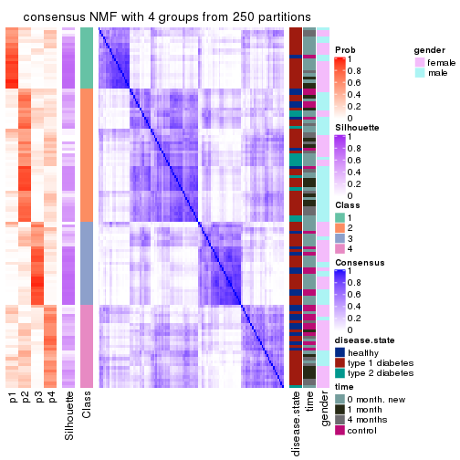
consensus_heatmap(res, k = 5)
consensus_heatmap(res, k = 6)
Heatmaps for the membership of samples in all partitions to see how consistent they are:
membership_heatmap(res, k = 2)

membership_heatmap(res, k = 3)
membership_heatmap(res, k = 4)
membership_heatmap(res, k = 5)
membership_heatmap(res, k = 6)
As soon as we have had the classes for columns, we can look for signatures which are significantly different between classes which can be candidate marks for certain classes. Following are the heatmaps for signatures.
Signature heatmaps where rows are scaled:
get_signatures(res, k = 2)
get_signatures(res, k = 3)
get_signatures(res, k = 4)
get_signatures(res, k = 5)
get_signatures(res, k = 6)
Signature heatmaps where rows are not scaled:
get_signatures(res, k = 2, scale_rows = FALSE)
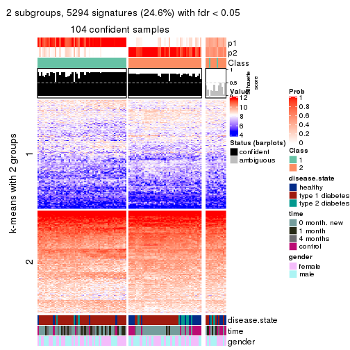
get_signatures(res, k = 3, scale_rows = FALSE)
get_signatures(res, k = 4, scale_rows = FALSE)
get_signatures(res, k = 5, scale_rows = FALSE)
get_signatures(res, k = 6, scale_rows = FALSE)
Compare the overlap of signatures from different k:
compare_signatures(res)
get_signature() returns a data frame invisibly. TO get the list of signatures, the function
call should be assigned to a variable explicitly. In following code, if plot argument is set
to FALSE, no heatmap is plotted while only the differential analysis is performed.
# code only for demonstration
tb = get_signature(res, k = ..., plot = FALSE)
An example of the output of tb is:
#> which_row fdr mean_1 mean_2 scaled_mean_1 scaled_mean_2 km
#> 1 38 0.042760348 8.373488 9.131774 -0.5533452 0.5164555 1
#> 2 40 0.018707592 7.106213 8.469186 -0.6173731 0.5762149 1
#> 3 55 0.019134737 10.221463 11.207825 -0.6159697 0.5749050 1
#> 4 59 0.006059896 5.921854 7.869574 -0.6899429 0.6439467 1
#> 5 60 0.018055526 8.928898 10.211722 -0.6204761 0.5791110 1
#> 6 98 0.009384629 15.714769 14.887706 0.6635654 -0.6193277 2
...
The columns in tb are:
which_row: row indices corresponding to the input matrix.fdr: FDR for the differential test. mean_x: The mean value in group x.scaled_mean_x: The mean value in group x after rows are scaled.km: Row groups if k-means clustering is applied to rows.UMAP plot which shows how samples are separated.
dimension_reduction(res, k = 2, method = "UMAP")

dimension_reduction(res, k = 3, method = "UMAP")
dimension_reduction(res, k = 4, method = "UMAP")
dimension_reduction(res, k = 5, method = "UMAP")
dimension_reduction(res, k = 6, method = "UMAP")
Following heatmap shows how subgroups are split when increasing k:
collect_classes(res)
Test correlation between subgroups and known annotations. If the known annotation is numeric, one-way ANOVA test is applied, and if the known annotation is discrete, chi-squared contingency table test is applied.
test_to_known_factors(res)
#> n disease.state(p) time(p) gender(p) k
#> CV:NMF 104 0.00240 2.08e-05 4.97e-01 2
#> CV:NMF 79 0.01257 2.99e-02 1.15e-03 3
#> CV:NMF 59 0.00604 1.23e-02 4.76e-07 4
#> CV:NMF 30 0.18165 5.39e-02 2.60e-01 5
#> CV:NMF 28 0.69894 1.28e-01 9.01e-02 6
If matrix rows can be associated to genes, consider to use GO_Enrichment(res,
...) to perform function enrichment for the signature genes.
The object with results only for a single top-value method and a single partition method can be extracted as:
res = res_list["MAD", "hclust"]
# you can also extract it by
# res = res_list["MAD:hclust"]
A summary of res and all the functions that can be applied to it:
res
#> A 'ConsensusPartition' object with k = 2, 3, 4, 5, 6.
#> On a matrix with 21512 rows and 117 columns.
#> Top rows (1000, 2000, 3000, 4000, 5000) are extracted by 'MAD' method.
#> Subgroups are detected by 'hclust' method.
#> Performed in total 1250 partitions by row resampling.
#> Best k for subgroups seems to be 3.
#>
#> Following methods can be applied to this 'ConsensusPartition' object:
#> [1] "cola_report" "collect_classes" "collect_plots"
#> [4] "collect_stats" "colnames" "compare_signatures"
#> [7] "consensus_heatmap" "dimension_reduction" "functional_enrichment"
#> [10] "get_anno_col" "get_anno" "get_classes"
#> [13] "get_consensus" "get_matrix" "get_membership"
#> [16] "get_param" "get_signatures" "get_stats"
#> [19] "is_best_k" "is_stable_k" "membership_heatmap"
#> [22] "ncol" "nrow" "plot_ecdf"
#> [25] "rownames" "select_partition_number" "show"
#> [28] "suggest_best_k" "test_to_known_factors"
collect_plots() function collects all the plots made from res for all k (number of partitions)
into one single page to provide an easy and fast comparison between different k.
collect_plots(res)
The plots are:
k and the heatmap of
predicted classes for each k.k.k.k.All the plots in panels can be made by individual functions and they are plotted later in this section.
select_partition_number() produces several plots showing different
statistics for choosing “optimized” k. There are following statistics:
k;k, the area increased is defined as \(A_k - A_{k-1}\).The detailed explanations of these statistics can be found in the cola vignette.
Generally speaking, lower PAC score, higher mean silhouette score or higher
concordance corresponds to better partition. Rand index and Jaccard index
measure how similar the current partition is compared to partition with k-1.
If they are too similar, we won't accept k is better than k-1.
select_partition_number(res)
The numeric values for all these statistics can be obtained by get_stats().
get_stats(res)
#> k 1-PAC mean_silhouette concordance area_increased Rand Jaccard
#> 2 2 0.0380 0.688 0.797 0.2786 0.933 0.933
#> 3 3 0.0388 0.639 0.732 0.6141 0.726 0.706
#> 4 4 0.0636 0.580 0.708 0.1318 0.980 0.970
#> 5 5 0.0786 0.543 0.671 0.1146 0.970 0.955
#> 6 6 0.1636 0.390 0.643 0.0845 0.958 0.934
suggest_best_k() suggests the best \(k\) based on these statistics. The rules are as follows:
NA.suggest_best_k(res)
#> [1] 3
Following shows the table of the partitions (You need to click the show/hide
code output link to see it). The membership matrix (columns with name p*)
is inferred by
clue::cl_consensus()
function with the SE method. Basically the value in the membership matrix
represents the probability to belong to a certain group. The finall class
label for an item is determined with the group with highest probability it
belongs to.
In get_classes() function, the entropy is calculated from the membership
matrix and the silhouette score is calculated from the consensus matrix.
cbind(get_classes(res, k = 2), get_membership(res, k = 2))
#> class entropy silhouette p1 p2
#> GSM254177 2 0.653 0.710 0.168 0.832
#> GSM254179 2 0.653 0.741 0.168 0.832
#> GSM254180 2 0.443 0.754 0.092 0.908
#> GSM254182 1 1.000 0.791 0.512 0.488
#> GSM254183 1 0.963 0.824 0.612 0.388
#> GSM254277 2 0.584 0.744 0.140 0.860
#> GSM254278 2 0.529 0.684 0.120 0.880
#> GSM254281 2 0.644 0.759 0.164 0.836
#> GSM254282 2 0.482 0.758 0.104 0.896
#> GSM254284 2 0.469 0.767 0.100 0.900
#> GSM254286 2 0.634 0.748 0.160 0.840
#> GSM254290 2 0.644 0.759 0.164 0.836
#> GSM254291 2 0.584 0.738 0.140 0.860
#> GSM254293 2 0.671 0.743 0.176 0.824
#> GSM254178 2 0.983 0.381 0.424 0.576
#> GSM254181 2 0.584 0.753 0.140 0.860
#> GSM254279 2 0.469 0.694 0.100 0.900
#> GSM254280 2 0.456 0.712 0.096 0.904
#> GSM254283 2 0.443 0.756 0.092 0.908
#> GSM254285 2 0.456 0.727 0.096 0.904
#> GSM254287 1 0.992 0.875 0.552 0.448
#> GSM254288 1 0.994 0.879 0.544 0.456
#> GSM254289 2 0.689 0.705 0.184 0.816
#> GSM254292 2 0.722 0.714 0.200 0.800
#> GSM254184 2 0.644 0.727 0.164 0.836
#> GSM254185 2 0.529 0.690 0.120 0.880
#> GSM254187 2 0.529 0.689 0.120 0.880
#> GSM254189 2 0.541 0.713 0.124 0.876
#> GSM254190 2 0.900 0.571 0.316 0.684
#> GSM254191 2 0.689 0.713 0.184 0.816
#> GSM254192 2 0.584 0.695 0.140 0.860
#> GSM254193 2 0.936 0.522 0.352 0.648
#> GSM254199 2 0.795 0.708 0.240 0.760
#> GSM254203 2 0.985 0.374 0.428 0.572
#> GSM254206 2 0.839 0.669 0.268 0.732
#> GSM254210 2 0.808 0.727 0.248 0.752
#> GSM254211 2 0.963 0.461 0.388 0.612
#> GSM254215 2 0.529 0.689 0.120 0.880
#> GSM254218 2 0.482 0.760 0.104 0.896
#> GSM254230 2 0.987 0.386 0.432 0.568
#> GSM254236 2 0.563 0.696 0.132 0.868
#> GSM254244 2 0.913 0.574 0.328 0.672
#> GSM254247 2 0.767 0.727 0.224 0.776
#> GSM254248 2 0.767 0.713 0.224 0.776
#> GSM254254 2 0.506 0.730 0.112 0.888
#> GSM254257 2 0.469 0.729 0.100 0.900
#> GSM254258 2 0.482 0.695 0.104 0.896
#> GSM254261 2 0.469 0.720 0.100 0.900
#> GSM254264 2 0.506 0.686 0.112 0.888
#> GSM254186 2 0.541 0.688 0.124 0.876
#> GSM254188 2 0.518 0.685 0.116 0.884
#> GSM254194 2 0.574 0.705 0.136 0.864
#> GSM254195 2 0.795 0.707 0.240 0.760
#> GSM254196 2 0.584 0.753 0.140 0.860
#> GSM254200 2 0.518 0.690 0.116 0.884
#> GSM254209 2 0.529 0.754 0.120 0.880
#> GSM254214 2 0.584 0.753 0.140 0.860
#> GSM254221 2 0.781 0.712 0.232 0.768
#> GSM254224 2 0.697 0.742 0.188 0.812
#> GSM254227 2 0.625 0.759 0.156 0.844
#> GSM254233 2 0.697 0.744 0.188 0.812
#> GSM254235 2 0.983 0.388 0.424 0.576
#> GSM254239 2 0.653 0.750 0.168 0.832
#> GSM254241 2 0.983 0.401 0.424 0.576
#> GSM254251 2 0.456 0.732 0.096 0.904
#> GSM254262 2 0.653 0.705 0.168 0.832
#> GSM254263 2 0.574 0.687 0.136 0.864
#> GSM254197 2 0.990 0.351 0.440 0.560
#> GSM254201 2 0.722 0.729 0.200 0.800
#> GSM254204 2 0.738 0.721 0.208 0.792
#> GSM254216 2 0.722 0.716 0.200 0.800
#> GSM254228 2 0.990 0.351 0.440 0.560
#> GSM254242 2 0.981 0.423 0.420 0.580
#> GSM254245 2 0.861 0.639 0.284 0.716
#> GSM254252 2 0.795 0.699 0.240 0.760
#> GSM254255 2 0.738 0.722 0.208 0.792
#> GSM254259 2 0.988 0.369 0.436 0.564
#> GSM254207 2 0.605 0.766 0.148 0.852
#> GSM254212 2 0.662 0.747 0.172 0.828
#> GSM254219 2 0.917 0.545 0.332 0.668
#> GSM254222 2 0.563 0.751 0.132 0.868
#> GSM254225 2 0.615 0.765 0.152 0.848
#> GSM254231 2 0.634 0.756 0.160 0.840
#> GSM254234 2 0.482 0.759 0.104 0.896
#> GSM254237 2 0.662 0.744 0.172 0.828
#> GSM254249 2 0.625 0.758 0.156 0.844
#> GSM254198 2 0.753 0.738 0.216 0.784
#> GSM254202 2 0.827 0.700 0.260 0.740
#> GSM254205 2 0.706 0.746 0.192 0.808
#> GSM254217 2 0.706 0.726 0.192 0.808
#> GSM254229 2 0.662 0.747 0.172 0.828
#> GSM254243 2 0.936 0.528 0.352 0.648
#> GSM254246 2 0.985 0.386 0.428 0.572
#> GSM254253 2 0.839 0.677 0.268 0.732
#> GSM254256 2 0.518 0.765 0.116 0.884
#> GSM254260 2 0.814 0.663 0.252 0.748
#> GSM254208 2 0.605 0.755 0.148 0.852
#> GSM254213 2 0.482 0.752 0.104 0.896
#> GSM254220 2 0.949 0.514 0.368 0.632
#> GSM254223 2 0.584 0.751 0.140 0.860
#> GSM254226 2 0.518 0.757 0.116 0.884
#> GSM254232 2 0.529 0.753 0.120 0.880
#> GSM254238 2 0.634 0.747 0.160 0.840
#> GSM254240 2 0.925 0.533 0.340 0.660
#> GSM254250 2 0.983 0.378 0.424 0.576
#> GSM254268 2 0.541 0.751 0.124 0.876
#> GSM254269 2 0.456 0.762 0.096 0.904
#> GSM254270 2 0.662 0.751 0.172 0.828
#> GSM254272 2 0.456 0.760 0.096 0.904
#> GSM254273 2 0.456 0.757 0.096 0.904
#> GSM254274 2 0.295 0.756 0.052 0.948
#> GSM254265 2 0.482 0.761 0.104 0.896
#> GSM254266 2 0.574 0.760 0.136 0.864
#> GSM254267 2 0.430 0.756 0.088 0.912
#> GSM254271 2 0.430 0.754 0.088 0.912
#> GSM254275 2 0.541 0.763 0.124 0.876
#> GSM254276 2 0.518 0.755 0.116 0.884
cbind(get_classes(res, k = 3), get_membership(res, k = 3))
#> class entropy silhouette p1 p2 p3
#> GSM254177 2 0.500 0.6661 0.092 0.840 0.068
#> GSM254179 2 0.617 0.6899 0.124 0.780 0.096
#> GSM254180 2 0.590 0.7396 0.184 0.772 0.044
#> GSM254182 3 0.852 0.7211 0.112 0.328 0.560
#> GSM254183 3 0.845 0.7579 0.112 0.316 0.572
#> GSM254277 2 0.527 0.7160 0.140 0.816 0.044
#> GSM254278 2 0.232 0.6508 0.028 0.944 0.028
#> GSM254281 2 0.681 0.7131 0.212 0.720 0.068
#> GSM254282 2 0.616 0.7406 0.196 0.756 0.048
#> GSM254284 2 0.670 0.7214 0.268 0.692 0.040
#> GSM254286 2 0.654 0.7007 0.212 0.732 0.056
#> GSM254290 2 0.721 0.6926 0.156 0.716 0.128
#> GSM254291 2 0.561 0.7162 0.120 0.808 0.072
#> GSM254293 2 0.672 0.6861 0.160 0.744 0.096
#> GSM254178 1 0.353 0.7447 0.892 0.092 0.016
#> GSM254181 2 0.630 0.7350 0.184 0.756 0.060
#> GSM254279 2 0.177 0.6621 0.016 0.960 0.024
#> GSM254280 2 0.249 0.6742 0.048 0.936 0.016
#> GSM254283 2 0.667 0.7067 0.264 0.696 0.040
#> GSM254285 2 0.341 0.6947 0.080 0.900 0.020
#> GSM254287 3 0.871 0.8013 0.112 0.380 0.508
#> GSM254288 3 0.896 0.8070 0.132 0.376 0.492
#> GSM254289 2 0.685 0.6868 0.164 0.736 0.100
#> GSM254292 2 0.722 0.6130 0.136 0.716 0.148
#> GSM254184 2 0.498 0.6465 0.168 0.812 0.020
#> GSM254185 2 0.231 0.6532 0.024 0.944 0.032
#> GSM254187 2 0.205 0.6495 0.020 0.952 0.028
#> GSM254189 2 0.372 0.6681 0.088 0.888 0.024
#> GSM254190 1 0.677 0.5512 0.636 0.340 0.024
#> GSM254191 2 0.533 0.6270 0.184 0.792 0.024
#> GSM254192 2 0.388 0.6821 0.068 0.888 0.044
#> GSM254193 1 0.642 0.6720 0.708 0.260 0.032
#> GSM254199 2 0.746 0.4064 0.440 0.524 0.036
#> GSM254203 1 0.333 0.7377 0.904 0.076 0.020
#> GSM254206 1 0.869 0.1068 0.464 0.432 0.104
#> GSM254210 2 0.717 0.6498 0.172 0.716 0.112
#> GSM254211 1 0.653 0.6764 0.704 0.260 0.036
#> GSM254215 2 0.219 0.6509 0.024 0.948 0.028
#> GSM254218 2 0.601 0.7395 0.184 0.768 0.048
#> GSM254230 1 0.369 0.7523 0.884 0.100 0.016
#> GSM254236 2 0.293 0.6683 0.036 0.924 0.040
#> GSM254244 2 0.906 -0.0434 0.408 0.456 0.136
#> GSM254247 2 0.803 0.5161 0.180 0.656 0.164
#> GSM254248 2 0.658 0.6348 0.108 0.756 0.136
#> GSM254254 2 0.543 0.7197 0.144 0.808 0.048
#> GSM254257 2 0.521 0.7202 0.124 0.824 0.052
#> GSM254258 2 0.232 0.6580 0.028 0.944 0.028
#> GSM254261 2 0.486 0.7091 0.116 0.840 0.044
#> GSM254264 2 0.177 0.6495 0.016 0.960 0.024
#> GSM254186 2 0.188 0.6589 0.012 0.956 0.032
#> GSM254188 2 0.171 0.6514 0.008 0.960 0.032
#> GSM254194 2 0.334 0.6733 0.060 0.908 0.032
#> GSM254195 2 0.736 0.5148 0.332 0.620 0.048
#> GSM254196 2 0.594 0.6957 0.224 0.748 0.028
#> GSM254200 2 0.171 0.6642 0.008 0.960 0.032
#> GSM254209 2 0.616 0.7323 0.188 0.760 0.052
#> GSM254214 2 0.639 0.7318 0.216 0.736 0.048
#> GSM254221 2 0.797 0.4602 0.324 0.596 0.080
#> GSM254224 2 0.777 0.5801 0.316 0.612 0.072
#> GSM254227 2 0.706 0.7027 0.264 0.680 0.056
#> GSM254233 2 0.754 0.5666 0.292 0.640 0.068
#> GSM254235 1 0.359 0.7485 0.892 0.088 0.020
#> GSM254239 2 0.701 0.6694 0.308 0.652 0.040
#> GSM254241 1 0.617 0.7347 0.768 0.168 0.064
#> GSM254251 2 0.509 0.7168 0.136 0.824 0.040
#> GSM254262 2 0.409 0.6665 0.088 0.876 0.036
#> GSM254263 2 0.256 0.6636 0.028 0.936 0.036
#> GSM254197 1 0.368 0.7403 0.892 0.080 0.028
#> GSM254201 2 0.806 0.3077 0.400 0.532 0.068
#> GSM254204 2 0.788 0.3426 0.424 0.520 0.056
#> GSM254216 2 0.752 0.4535 0.420 0.540 0.040
#> GSM254228 1 0.300 0.7327 0.916 0.068 0.016
#> GSM254242 1 0.777 0.6860 0.660 0.232 0.108
#> GSM254245 1 0.782 0.4659 0.604 0.324 0.072
#> GSM254252 2 0.845 0.4431 0.340 0.556 0.104
#> GSM254255 2 0.845 0.4993 0.340 0.556 0.104
#> GSM254259 1 0.327 0.7371 0.904 0.080 0.016
#> GSM254207 2 0.660 0.7197 0.268 0.696 0.036
#> GSM254212 2 0.703 0.6949 0.284 0.668 0.048
#> GSM254219 1 0.785 0.6511 0.644 0.256 0.100
#> GSM254222 2 0.679 0.6567 0.324 0.648 0.028
#> GSM254225 2 0.687 0.7025 0.288 0.672 0.040
#> GSM254231 2 0.713 0.6245 0.284 0.664 0.052
#> GSM254234 2 0.651 0.6906 0.300 0.676 0.024
#> GSM254237 2 0.728 0.6381 0.336 0.620 0.044
#> GSM254249 2 0.750 0.5600 0.360 0.592 0.048
#> GSM254198 2 0.748 0.6402 0.264 0.660 0.076
#> GSM254202 2 0.835 0.4061 0.332 0.568 0.100
#> GSM254205 2 0.779 0.5830 0.284 0.632 0.084
#> GSM254217 2 0.757 0.4811 0.404 0.552 0.044
#> GSM254229 2 0.778 0.6495 0.304 0.620 0.076
#> GSM254243 1 0.659 0.7161 0.732 0.208 0.060
#> GSM254246 1 0.321 0.7413 0.904 0.084 0.012
#> GSM254253 2 0.800 0.1482 0.468 0.472 0.060
#> GSM254256 2 0.745 0.6796 0.280 0.652 0.068
#> GSM254260 2 0.895 0.0728 0.396 0.476 0.128
#> GSM254208 2 0.668 0.6654 0.324 0.652 0.024
#> GSM254213 2 0.654 0.7251 0.212 0.732 0.056
#> GSM254220 1 0.980 0.3712 0.420 0.332 0.248
#> GSM254223 2 0.725 0.6300 0.348 0.612 0.040
#> GSM254226 2 0.673 0.6953 0.284 0.680 0.036
#> GSM254232 2 0.663 0.6789 0.300 0.672 0.028
#> GSM254238 2 0.682 0.6268 0.348 0.628 0.024
#> GSM254240 1 0.605 0.7106 0.756 0.204 0.040
#> GSM254250 1 0.756 0.6517 0.692 0.144 0.164
#> GSM254268 2 0.713 0.7066 0.252 0.684 0.064
#> GSM254269 2 0.666 0.7183 0.252 0.704 0.044
#> GSM254270 2 0.758 0.6057 0.340 0.604 0.056
#> GSM254272 2 0.617 0.7319 0.224 0.740 0.036
#> GSM254273 2 0.635 0.7330 0.204 0.744 0.052
#> GSM254274 2 0.594 0.7371 0.204 0.760 0.036
#> GSM254265 2 0.626 0.7431 0.204 0.748 0.048
#> GSM254266 2 0.712 0.7067 0.296 0.656 0.048
#> GSM254267 2 0.635 0.7315 0.212 0.740 0.048
#> GSM254271 2 0.640 0.7200 0.236 0.724 0.040
#> GSM254275 2 0.711 0.7097 0.260 0.680 0.060
#> GSM254276 2 0.628 0.7271 0.224 0.736 0.040
cbind(get_classes(res, k = 4), get_membership(res, k = 4))
#> class entropy silhouette p1 p2 p3 p4
#> GSM254177 2 0.4760 0.6439 0.060 0.816 0.028 0.096
#> GSM254179 2 0.5961 0.6489 0.084 0.732 0.028 0.156
#> GSM254180 2 0.5173 0.7171 0.156 0.772 0.016 0.056
#> GSM254182 4 0.7547 -0.2014 0.008 0.184 0.284 0.524
#> GSM254183 3 0.6944 0.5179 0.044 0.260 0.628 0.068
#> GSM254277 2 0.4861 0.6949 0.100 0.804 0.016 0.080
#> GSM254278 2 0.2660 0.6355 0.008 0.908 0.012 0.072
#> GSM254281 2 0.6376 0.6937 0.176 0.692 0.020 0.112
#> GSM254282 2 0.5354 0.7185 0.152 0.752 0.004 0.092
#> GSM254284 2 0.5993 0.7077 0.224 0.684 0.004 0.088
#> GSM254286 2 0.6175 0.6723 0.196 0.704 0.028 0.072
#> GSM254290 2 0.6946 0.6342 0.120 0.652 0.032 0.196
#> GSM254291 2 0.5206 0.6954 0.092 0.788 0.024 0.096
#> GSM254293 2 0.6033 0.6546 0.112 0.724 0.020 0.144
#> GSM254178 1 0.1509 0.6355 0.960 0.020 0.008 0.012
#> GSM254181 2 0.5967 0.7127 0.144 0.732 0.024 0.100
#> GSM254279 2 0.1994 0.6426 0.004 0.936 0.008 0.052
#> GSM254280 2 0.2456 0.6556 0.028 0.924 0.008 0.040
#> GSM254283 2 0.5911 0.6891 0.236 0.688 0.008 0.068
#> GSM254285 2 0.3266 0.6723 0.064 0.884 0.004 0.048
#> GSM254287 3 0.7158 0.7414 0.044 0.344 0.556 0.056
#> GSM254288 3 0.7033 0.7552 0.056 0.352 0.556 0.036
#> GSM254289 2 0.6356 0.6751 0.136 0.720 0.092 0.052
#> GSM254292 2 0.6800 0.5353 0.088 0.668 0.044 0.200
#> GSM254184 2 0.4955 0.6314 0.172 0.772 0.008 0.048
#> GSM254185 2 0.2485 0.6352 0.004 0.916 0.016 0.064
#> GSM254187 2 0.2433 0.6361 0.008 0.920 0.012 0.060
#> GSM254189 2 0.3811 0.6462 0.084 0.860 0.012 0.044
#> GSM254190 1 0.5543 0.4931 0.696 0.256 0.008 0.040
#> GSM254191 2 0.5310 0.6109 0.184 0.748 0.008 0.060
#> GSM254192 2 0.4039 0.6620 0.056 0.856 0.024 0.064
#> GSM254193 1 0.4917 0.5773 0.768 0.184 0.008 0.040
#> GSM254199 2 0.6670 0.3547 0.448 0.476 0.004 0.072
#> GSM254203 1 0.1042 0.6196 0.972 0.000 0.008 0.020
#> GSM254206 1 0.8136 0.1541 0.436 0.360 0.024 0.180
#> GSM254210 2 0.6714 0.5841 0.116 0.664 0.024 0.196
#> GSM254211 1 0.5935 0.5350 0.692 0.232 0.012 0.064
#> GSM254215 2 0.2586 0.6349 0.008 0.912 0.012 0.068
#> GSM254218 2 0.5132 0.7160 0.156 0.772 0.012 0.060
#> GSM254230 1 0.2188 0.6421 0.936 0.032 0.012 0.020
#> GSM254236 2 0.3183 0.6517 0.020 0.892 0.020 0.068
#> GSM254244 2 0.8633 -0.0367 0.368 0.400 0.052 0.180
#> GSM254247 2 0.7548 0.1733 0.052 0.544 0.076 0.328
#> GSM254248 2 0.6339 0.5755 0.064 0.696 0.040 0.200
#> GSM254254 2 0.5292 0.7047 0.136 0.776 0.024 0.064
#> GSM254257 2 0.4821 0.7009 0.104 0.812 0.032 0.052
#> GSM254258 2 0.2522 0.6404 0.016 0.920 0.012 0.052
#> GSM254261 2 0.4558 0.6954 0.112 0.820 0.020 0.048
#> GSM254264 2 0.2207 0.6365 0.004 0.928 0.012 0.056
#> GSM254186 2 0.2529 0.6452 0.008 0.920 0.024 0.048
#> GSM254188 2 0.2002 0.6381 0.000 0.936 0.020 0.044
#> GSM254194 2 0.3402 0.6508 0.032 0.880 0.012 0.076
#> GSM254195 2 0.6908 0.4176 0.356 0.552 0.016 0.076
#> GSM254196 2 0.5761 0.6451 0.228 0.704 0.012 0.056
#> GSM254200 2 0.2335 0.6503 0.008 0.928 0.020 0.044
#> GSM254209 2 0.5758 0.7096 0.164 0.740 0.024 0.072
#> GSM254214 2 0.5994 0.7052 0.184 0.716 0.020 0.080
#> GSM254221 2 0.7968 0.3960 0.300 0.524 0.044 0.132
#> GSM254224 2 0.7711 0.5730 0.272 0.564 0.044 0.120
#> GSM254227 2 0.6971 0.6863 0.228 0.628 0.020 0.124
#> GSM254233 2 0.7479 0.5221 0.264 0.576 0.028 0.132
#> GSM254235 1 0.1843 0.6374 0.948 0.016 0.008 0.028
#> GSM254239 2 0.6933 0.6380 0.280 0.616 0.044 0.060
#> GSM254241 1 0.5416 0.6157 0.780 0.116 0.056 0.048
#> GSM254251 2 0.4643 0.6991 0.124 0.812 0.020 0.044
#> GSM254262 2 0.4191 0.6553 0.088 0.844 0.020 0.048
#> GSM254263 2 0.2828 0.6499 0.020 0.912 0.032 0.036
#> GSM254197 1 0.1640 0.6301 0.956 0.012 0.012 0.020
#> GSM254201 2 0.7598 0.1789 0.396 0.460 0.016 0.128
#> GSM254204 2 0.7759 0.2800 0.380 0.468 0.024 0.128
#> GSM254216 2 0.6814 0.3877 0.428 0.484 0.004 0.084
#> GSM254228 1 0.0937 0.6198 0.976 0.000 0.012 0.012
#> GSM254242 1 0.7397 0.5222 0.648 0.152 0.084 0.116
#> GSM254245 1 0.7204 0.3811 0.576 0.300 0.024 0.100
#> GSM254252 2 0.8301 0.4281 0.280 0.512 0.060 0.148
#> GSM254255 2 0.7933 0.4623 0.320 0.508 0.036 0.136
#> GSM254259 1 0.1262 0.6232 0.968 0.008 0.008 0.016
#> GSM254207 2 0.6163 0.7008 0.244 0.668 0.008 0.080
#> GSM254212 2 0.6953 0.6746 0.240 0.636 0.036 0.088
#> GSM254219 1 0.7727 0.4665 0.604 0.196 0.064 0.136
#> GSM254222 2 0.6215 0.6342 0.304 0.628 0.008 0.060
#> GSM254225 2 0.6395 0.6851 0.260 0.648 0.012 0.080
#> GSM254231 2 0.7179 0.5710 0.260 0.604 0.028 0.108
#> GSM254234 2 0.6339 0.6627 0.280 0.636 0.008 0.076
#> GSM254237 2 0.6816 0.6178 0.304 0.592 0.012 0.092
#> GSM254249 2 0.7341 0.5333 0.328 0.552 0.032 0.088
#> GSM254198 2 0.7169 0.6337 0.236 0.616 0.028 0.120
#> GSM254202 2 0.8410 0.3649 0.260 0.508 0.060 0.172
#> GSM254205 2 0.7942 0.4980 0.236 0.556 0.044 0.164
#> GSM254217 2 0.6790 0.4327 0.408 0.504 0.004 0.084
#> GSM254229 2 0.7564 0.6261 0.264 0.572 0.032 0.132
#> GSM254243 1 0.5854 0.5898 0.736 0.148 0.020 0.096
#> GSM254246 1 0.0992 0.6258 0.976 0.008 0.004 0.012
#> GSM254253 1 0.7622 -0.0683 0.468 0.404 0.032 0.096
#> GSM254256 2 0.6763 0.6568 0.264 0.632 0.028 0.076
#> GSM254260 2 0.8967 0.0528 0.336 0.408 0.084 0.172
#> GSM254208 2 0.6396 0.6250 0.304 0.612 0.004 0.080
#> GSM254213 2 0.5817 0.7008 0.176 0.732 0.024 0.068
#> GSM254220 4 0.9805 0.1209 0.244 0.176 0.240 0.340
#> GSM254223 2 0.6822 0.5987 0.308 0.584 0.008 0.100
#> GSM254226 2 0.6391 0.6808 0.252 0.656 0.016 0.076
#> GSM254232 2 0.6163 0.6624 0.272 0.652 0.008 0.068
#> GSM254238 2 0.6907 0.5760 0.328 0.576 0.020 0.076
#> GSM254240 1 0.5541 0.5914 0.748 0.156 0.012 0.084
#> GSM254250 1 0.7668 0.3664 0.620 0.084 0.180 0.116
#> GSM254268 2 0.6799 0.6904 0.224 0.656 0.040 0.080
#> GSM254269 2 0.6397 0.6997 0.236 0.672 0.032 0.060
#> GSM254270 2 0.7310 0.5718 0.320 0.560 0.032 0.088
#> GSM254272 2 0.5585 0.7131 0.192 0.732 0.012 0.064
#> GSM254273 2 0.5501 0.7085 0.176 0.748 0.020 0.056
#> GSM254274 2 0.5345 0.7150 0.156 0.760 0.012 0.072
#> GSM254265 2 0.5632 0.7189 0.176 0.732 0.008 0.084
#> GSM254266 2 0.7052 0.6908 0.228 0.632 0.032 0.108
#> GSM254267 2 0.5610 0.7112 0.180 0.732 0.008 0.080
#> GSM254271 2 0.5760 0.6988 0.196 0.720 0.012 0.072
#> GSM254275 2 0.6650 0.6946 0.220 0.660 0.024 0.096
#> GSM254276 2 0.5930 0.7025 0.184 0.720 0.020 0.076
cbind(get_classes(res, k = 5), get_membership(res, k = 5))
#> class entropy silhouette p1 p2 p3 p4 p5
#> GSM254177 2 0.4921 0.6088 0.044 0.780 0.068 0.096 0.012
#> GSM254179 2 0.6024 0.5876 0.032 0.692 0.056 0.176 0.044
#> GSM254180 2 0.5202 0.6874 0.124 0.744 0.024 0.100 0.008
#> GSM254182 5 0.5089 0.0000 0.008 0.040 0.136 0.060 0.756
#> GSM254183 3 0.4822 0.4164 0.024 0.168 0.760 0.028 0.020
#> GSM254277 2 0.4693 0.6554 0.056 0.768 0.016 0.152 0.008
#> GSM254278 2 0.3255 0.5998 0.004 0.864 0.040 0.084 0.008
#> GSM254281 2 0.6436 0.6275 0.112 0.624 0.012 0.220 0.032
#> GSM254282 2 0.4989 0.6900 0.100 0.748 0.016 0.132 0.004
#> GSM254284 2 0.5566 0.6778 0.144 0.668 0.000 0.180 0.008
#> GSM254286 2 0.6466 0.5929 0.144 0.640 0.032 0.168 0.016
#> GSM254290 2 0.6976 0.5542 0.056 0.608 0.036 0.216 0.084
#> GSM254291 2 0.4798 0.6573 0.044 0.784 0.028 0.120 0.024
#> GSM254293 2 0.6136 0.5877 0.060 0.672 0.036 0.200 0.032
#> GSM254178 1 0.1256 0.6712 0.964 0.012 0.008 0.012 0.004
#> GSM254181 2 0.5253 0.6892 0.112 0.740 0.032 0.112 0.004
#> GSM254279 2 0.3310 0.6176 0.012 0.868 0.040 0.072 0.008
#> GSM254280 2 0.3674 0.6249 0.032 0.852 0.032 0.076 0.008
#> GSM254283 2 0.5989 0.6618 0.172 0.660 0.024 0.140 0.004
#> GSM254285 2 0.4174 0.6340 0.056 0.820 0.024 0.092 0.008
#> GSM254287 3 0.6277 0.7426 0.024 0.260 0.620 0.076 0.020
#> GSM254288 3 0.6011 0.7476 0.040 0.272 0.628 0.052 0.008
#> GSM254289 2 0.6166 0.6503 0.104 0.680 0.124 0.088 0.004
#> GSM254292 2 0.7532 0.2691 0.052 0.536 0.040 0.260 0.112
#> GSM254184 2 0.5700 0.5783 0.148 0.712 0.024 0.096 0.020
#> GSM254185 2 0.3408 0.6021 0.008 0.860 0.048 0.076 0.008
#> GSM254187 2 0.2997 0.6030 0.004 0.880 0.036 0.072 0.008
#> GSM254189 2 0.4332 0.6068 0.060 0.820 0.032 0.072 0.016
#> GSM254190 1 0.5973 0.4794 0.660 0.224 0.008 0.064 0.044
#> GSM254191 2 0.6029 0.5511 0.160 0.688 0.028 0.100 0.024
#> GSM254192 2 0.4028 0.6381 0.044 0.836 0.052 0.060 0.008
#> GSM254193 1 0.5234 0.5768 0.736 0.164 0.016 0.064 0.020
#> GSM254199 2 0.6453 0.3770 0.408 0.472 0.004 0.100 0.016
#> GSM254203 1 0.1362 0.6604 0.960 0.004 0.012 0.008 0.016
#> GSM254206 1 0.8374 0.0787 0.332 0.284 0.008 0.276 0.100
#> GSM254210 2 0.7645 0.4433 0.072 0.552 0.044 0.224 0.108
#> GSM254211 1 0.6026 0.5250 0.656 0.208 0.012 0.104 0.020
#> GSM254215 2 0.3212 0.6001 0.004 0.868 0.044 0.076 0.008
#> GSM254218 2 0.5208 0.6875 0.124 0.748 0.024 0.092 0.012
#> GSM254230 1 0.2784 0.6720 0.900 0.036 0.008 0.040 0.016
#> GSM254236 2 0.3717 0.6248 0.020 0.848 0.048 0.076 0.008
#> GSM254244 2 0.9025 -0.2556 0.288 0.296 0.032 0.236 0.148
#> GSM254247 4 0.7727 -0.0858 0.016 0.352 0.064 0.432 0.136
#> GSM254248 2 0.7120 0.4992 0.044 0.616 0.060 0.176 0.104
#> GSM254254 2 0.5317 0.6821 0.108 0.748 0.048 0.088 0.008
#> GSM254257 2 0.4789 0.6801 0.080 0.784 0.052 0.080 0.004
#> GSM254258 2 0.3040 0.6065 0.008 0.880 0.032 0.072 0.008
#> GSM254261 2 0.4481 0.6743 0.080 0.804 0.048 0.064 0.004
#> GSM254264 2 0.2644 0.6099 0.000 0.896 0.036 0.060 0.008
#> GSM254186 2 0.3162 0.6168 0.008 0.872 0.032 0.080 0.008
#> GSM254188 2 0.3136 0.6119 0.008 0.872 0.040 0.076 0.004
#> GSM254194 2 0.3819 0.6126 0.020 0.840 0.044 0.088 0.008
#> GSM254195 2 0.7515 0.3183 0.324 0.480 0.016 0.116 0.064
#> GSM254196 2 0.6373 0.5539 0.196 0.640 0.016 0.120 0.028
#> GSM254200 2 0.2977 0.6258 0.008 0.884 0.032 0.068 0.008
#> GSM254209 2 0.5631 0.6857 0.124 0.716 0.036 0.116 0.008
#> GSM254214 2 0.5575 0.6794 0.132 0.704 0.036 0.128 0.000
#> GSM254221 2 0.7755 0.2797 0.184 0.460 0.012 0.284 0.060
#> GSM254224 2 0.7294 0.5420 0.172 0.556 0.040 0.208 0.024
#> GSM254227 2 0.6558 0.6558 0.184 0.608 0.028 0.172 0.008
#> GSM254233 2 0.7132 0.4344 0.160 0.540 0.008 0.248 0.044
#> GSM254235 1 0.1949 0.6719 0.932 0.012 0.000 0.040 0.016
#> GSM254239 2 0.6876 0.6057 0.228 0.588 0.060 0.116 0.008
#> GSM254241 1 0.5946 0.6099 0.700 0.100 0.036 0.144 0.020
#> GSM254251 2 0.4432 0.6771 0.088 0.808 0.036 0.060 0.008
#> GSM254262 2 0.4856 0.6135 0.076 0.792 0.040 0.068 0.024
#> GSM254263 2 0.3458 0.6262 0.020 0.864 0.044 0.064 0.008
#> GSM254197 1 0.1706 0.6673 0.948 0.008 0.012 0.016 0.016
#> GSM254201 2 0.8081 0.1220 0.284 0.384 0.020 0.264 0.048
#> GSM254204 2 0.8025 0.2493 0.284 0.408 0.016 0.236 0.056
#> GSM254216 2 0.6747 0.3980 0.352 0.476 0.004 0.156 0.012
#> GSM254228 1 0.0833 0.6635 0.976 0.004 0.016 0.000 0.004
#> GSM254242 1 0.7598 0.4746 0.536 0.116 0.068 0.248 0.032
#> GSM254245 1 0.7390 0.3375 0.484 0.252 0.016 0.224 0.024
#> GSM254252 2 0.7984 0.3625 0.216 0.476 0.036 0.224 0.048
#> GSM254255 2 0.7573 0.4708 0.260 0.480 0.028 0.208 0.024
#> GSM254259 1 0.0960 0.6685 0.972 0.000 0.008 0.016 0.004
#> GSM254207 2 0.6160 0.6762 0.184 0.640 0.024 0.148 0.004
#> GSM254212 2 0.6665 0.6436 0.168 0.604 0.060 0.168 0.000
#> GSM254219 1 0.7394 0.3842 0.468 0.148 0.036 0.332 0.016
#> GSM254222 2 0.6011 0.6302 0.240 0.612 0.012 0.136 0.000
#> GSM254225 2 0.6187 0.6644 0.204 0.628 0.020 0.144 0.004
#> GSM254231 2 0.6958 0.4785 0.164 0.564 0.012 0.228 0.032
#> GSM254234 2 0.6279 0.6476 0.208 0.620 0.016 0.148 0.008
#> GSM254237 2 0.6804 0.5988 0.240 0.560 0.024 0.168 0.008
#> GSM254249 2 0.7028 0.5254 0.252 0.528 0.016 0.188 0.016
#> GSM254198 2 0.7263 0.5898 0.176 0.584 0.048 0.160 0.032
#> GSM254202 2 0.7896 0.2544 0.168 0.472 0.028 0.276 0.056
#> GSM254205 2 0.7891 0.3472 0.148 0.468 0.032 0.296 0.056
#> GSM254217 2 0.6773 0.4320 0.336 0.492 0.004 0.152 0.016
#> GSM254229 2 0.7055 0.6172 0.208 0.560 0.036 0.184 0.012
#> GSM254243 1 0.6522 0.5542 0.608 0.116 0.008 0.232 0.036
#> GSM254246 1 0.0740 0.6681 0.980 0.000 0.004 0.008 0.008
#> GSM254253 2 0.7505 0.1221 0.388 0.392 0.020 0.176 0.024
#> GSM254256 2 0.6313 0.6367 0.212 0.612 0.020 0.152 0.004
#> GSM254260 2 0.8646 0.0236 0.228 0.376 0.060 0.280 0.056
#> GSM254208 2 0.6358 0.6197 0.244 0.584 0.012 0.156 0.004
#> GSM254213 2 0.5657 0.6757 0.132 0.696 0.036 0.136 0.000
#> GSM254220 4 0.7678 -0.3249 0.104 0.040 0.160 0.572 0.124
#> GSM254223 2 0.6590 0.6024 0.232 0.568 0.012 0.180 0.008
#> GSM254226 2 0.6177 0.6569 0.196 0.636 0.024 0.140 0.004
#> GSM254232 2 0.5954 0.6467 0.208 0.628 0.012 0.152 0.000
#> GSM254238 2 0.7068 0.5535 0.252 0.536 0.012 0.172 0.028
#> GSM254240 1 0.6029 0.5742 0.652 0.140 0.008 0.184 0.016
#> GSM254250 1 0.8674 0.3097 0.456 0.080 0.112 0.236 0.116
#> GSM254268 2 0.6345 0.6628 0.156 0.636 0.052 0.156 0.000
#> GSM254269 2 0.6153 0.6706 0.164 0.652 0.032 0.148 0.004
#> GSM254270 2 0.7785 0.4996 0.256 0.508 0.036 0.144 0.056
#> GSM254272 2 0.5293 0.6826 0.136 0.716 0.020 0.128 0.000
#> GSM254273 2 0.5289 0.6803 0.128 0.736 0.032 0.100 0.004
#> GSM254274 2 0.5144 0.6866 0.096 0.732 0.016 0.152 0.004
#> GSM254265 2 0.5673 0.6885 0.124 0.692 0.012 0.160 0.012
#> GSM254266 2 0.6532 0.6589 0.156 0.616 0.032 0.188 0.008
#> GSM254267 2 0.5393 0.6835 0.144 0.712 0.016 0.124 0.004
#> GSM254271 2 0.5544 0.6720 0.140 0.700 0.028 0.132 0.000
#> GSM254275 2 0.6589 0.6582 0.160 0.628 0.040 0.160 0.012
#> GSM254276 2 0.5502 0.6780 0.140 0.704 0.028 0.128 0.000
cbind(get_classes(res, k = 6), get_membership(res, k = 6))
#> class entropy silhouette p1 p2 p3 p4 p5 p6
#> GSM254177 2 0.5078 0.47669 0.016 0.692 0.072 0.204 0.004 0.012
#> GSM254179 2 0.6234 0.43760 0.020 0.616 0.052 0.236 0.048 0.028
#> GSM254180 2 0.4562 0.57600 0.060 0.756 0.016 0.148 0.004 0.016
#> GSM254182 5 0.2546 0.00000 0.000 0.020 0.040 0.040 0.896 0.004
#> GSM254183 3 0.4548 0.36494 0.004 0.108 0.780 0.040 0.032 0.036
#> GSM254277 2 0.5349 0.53125 0.040 0.700 0.032 0.184 0.008 0.036
#> GSM254278 2 0.3683 0.48814 0.004 0.760 0.020 0.212 0.004 0.000
#> GSM254281 2 0.6316 0.44362 0.064 0.596 0.032 0.256 0.032 0.020
#> GSM254282 2 0.3826 0.59022 0.036 0.788 0.016 0.156 0.000 0.004
#> GSM254284 2 0.4931 0.56049 0.068 0.688 0.016 0.220 0.004 0.004
#> GSM254286 2 0.6359 0.34550 0.100 0.560 0.040 0.276 0.004 0.020
#> GSM254290 2 0.7021 0.30170 0.012 0.516 0.076 0.288 0.072 0.036
#> GSM254291 2 0.4748 0.53899 0.020 0.728 0.036 0.192 0.016 0.008
#> GSM254293 2 0.6081 0.41546 0.036 0.608 0.044 0.264 0.020 0.028
#> GSM254178 1 0.1629 0.64281 0.940 0.028 0.004 0.024 0.000 0.004
#> GSM254181 2 0.4411 0.59186 0.044 0.772 0.048 0.128 0.004 0.004
#> GSM254279 2 0.3309 0.51086 0.000 0.788 0.016 0.192 0.004 0.000
#> GSM254280 2 0.3594 0.51335 0.020 0.768 0.008 0.204 0.000 0.000
#> GSM254283 2 0.4937 0.55073 0.076 0.696 0.036 0.192 0.000 0.000
#> GSM254285 2 0.4044 0.50578 0.040 0.740 0.004 0.212 0.000 0.004
#> GSM254287 3 0.5238 0.71184 0.012 0.220 0.660 0.096 0.012 0.000
#> GSM254288 3 0.5049 0.71752 0.020 0.232 0.668 0.076 0.004 0.000
#> GSM254289 2 0.5417 0.53176 0.044 0.676 0.144 0.132 0.000 0.004
#> GSM254292 4 0.8144 0.18506 0.032 0.344 0.064 0.376 0.084 0.100
#> GSM254184 2 0.5507 0.40917 0.124 0.632 0.000 0.220 0.008 0.016
#> GSM254185 2 0.3683 0.49337 0.004 0.760 0.020 0.212 0.004 0.000
#> GSM254187 2 0.3354 0.49526 0.004 0.780 0.008 0.204 0.004 0.000
#> GSM254189 2 0.4702 0.47325 0.052 0.720 0.008 0.200 0.008 0.012
#> GSM254190 1 0.5804 0.27737 0.644 0.200 0.008 0.108 0.024 0.016
#> GSM254191 2 0.5862 0.36081 0.136 0.608 0.004 0.224 0.012 0.016
#> GSM254192 2 0.4349 0.52779 0.028 0.760 0.032 0.168 0.004 0.008
#> GSM254193 1 0.5045 0.44826 0.712 0.148 0.004 0.108 0.008 0.020
#> GSM254199 2 0.6543 0.16114 0.324 0.500 0.032 0.124 0.008 0.012
#> GSM254203 1 0.1426 0.63338 0.948 0.016 0.000 0.028 0.000 0.008
#> GSM254206 4 0.8467 0.28279 0.220 0.244 0.028 0.368 0.076 0.064
#> GSM254210 2 0.7556 0.08731 0.048 0.484 0.060 0.292 0.068 0.048
#> GSM254211 1 0.6197 0.33629 0.620 0.192 0.008 0.124 0.024 0.032
#> GSM254215 2 0.3570 0.49080 0.004 0.768 0.016 0.208 0.004 0.000
#> GSM254218 2 0.4469 0.58084 0.060 0.768 0.016 0.136 0.008 0.012
#> GSM254230 1 0.3152 0.63229 0.868 0.036 0.012 0.060 0.004 0.020
#> GSM254236 2 0.3813 0.52538 0.008 0.768 0.020 0.196 0.004 0.004
#> GSM254244 4 0.9133 -0.13764 0.220 0.144 0.052 0.340 0.088 0.156
#> GSM254247 6 0.7872 -0.09322 0.008 0.196 0.056 0.304 0.056 0.380
#> GSM254248 2 0.6898 0.23904 0.024 0.528 0.052 0.292 0.076 0.028
#> GSM254254 2 0.4333 0.58851 0.044 0.776 0.032 0.136 0.004 0.008
#> GSM254257 2 0.4053 0.58686 0.024 0.804 0.048 0.108 0.004 0.012
#> GSM254258 2 0.3511 0.49738 0.008 0.780 0.008 0.196 0.008 0.000
#> GSM254261 2 0.3705 0.57953 0.032 0.824 0.036 0.100 0.004 0.004
#> GSM254264 2 0.3121 0.50444 0.000 0.796 0.008 0.192 0.004 0.000
#> GSM254186 2 0.3309 0.51336 0.004 0.788 0.016 0.192 0.000 0.000
#> GSM254188 2 0.3168 0.50975 0.000 0.792 0.016 0.192 0.000 0.000
#> GSM254194 2 0.4265 0.50236 0.012 0.744 0.024 0.204 0.008 0.008
#> GSM254195 2 0.8090 -0.30060 0.272 0.364 0.028 0.244 0.044 0.048
#> GSM254196 2 0.6849 0.17719 0.160 0.528 0.020 0.240 0.008 0.044
#> GSM254200 2 0.3109 0.52588 0.000 0.812 0.016 0.168 0.000 0.004
#> GSM254209 2 0.4498 0.58820 0.044 0.752 0.048 0.152 0.000 0.004
#> GSM254214 2 0.4820 0.57579 0.060 0.748 0.052 0.128 0.004 0.008
#> GSM254221 2 0.7784 -0.22722 0.112 0.384 0.024 0.352 0.024 0.104
#> GSM254224 2 0.7240 0.30110 0.096 0.512 0.024 0.256 0.016 0.096
#> GSM254227 2 0.5971 0.52976 0.096 0.628 0.024 0.216 0.004 0.032
#> GSM254233 2 0.7453 0.03286 0.080 0.444 0.032 0.344 0.036 0.064
#> GSM254235 1 0.2677 0.63803 0.892 0.032 0.008 0.040 0.000 0.028
#> GSM254239 2 0.6607 0.44706 0.136 0.592 0.080 0.168 0.004 0.020
#> GSM254241 1 0.6500 0.42828 0.600 0.128 0.028 0.184 0.004 0.056
#> GSM254251 2 0.3026 0.58568 0.020 0.864 0.036 0.076 0.000 0.004
#> GSM254262 2 0.4977 0.48556 0.056 0.708 0.020 0.196 0.016 0.004
#> GSM254263 2 0.3635 0.52426 0.008 0.788 0.028 0.172 0.000 0.004
#> GSM254197 1 0.1692 0.63727 0.940 0.020 0.008 0.024 0.000 0.008
#> GSM254201 4 0.7940 0.28148 0.184 0.336 0.024 0.340 0.012 0.104
#> GSM254204 2 0.7981 -0.22760 0.180 0.388 0.032 0.308 0.056 0.036
#> GSM254216 2 0.6990 0.17215 0.232 0.476 0.028 0.236 0.012 0.016
#> GSM254228 1 0.0862 0.63629 0.972 0.016 0.008 0.000 0.000 0.004
#> GSM254242 1 0.7412 0.28980 0.440 0.096 0.004 0.252 0.012 0.196
#> GSM254245 1 0.7948 -0.15960 0.368 0.248 0.044 0.264 0.008 0.068
#> GSM254252 2 0.7978 0.00184 0.144 0.460 0.040 0.244 0.044 0.068
#> GSM254255 2 0.7096 0.15425 0.168 0.468 0.020 0.276 0.000 0.068
#> GSM254259 1 0.1592 0.63970 0.944 0.016 0.012 0.024 0.004 0.000
#> GSM254207 2 0.5339 0.56459 0.084 0.704 0.024 0.156 0.004 0.028
#> GSM254212 2 0.6094 0.51245 0.096 0.624 0.048 0.208 0.004 0.020
#> GSM254219 1 0.8300 0.15349 0.356 0.128 0.032 0.280 0.020 0.184
#> GSM254222 2 0.5301 0.49863 0.136 0.640 0.016 0.208 0.000 0.000
#> GSM254225 2 0.5526 0.54326 0.108 0.676 0.032 0.168 0.004 0.012
#> GSM254231 2 0.7342 0.10700 0.088 0.468 0.036 0.324 0.028 0.056
#> GSM254234 2 0.5265 0.51635 0.112 0.652 0.016 0.216 0.000 0.004
#> GSM254237 2 0.6444 0.44769 0.132 0.584 0.044 0.216 0.008 0.016
#> GSM254249 2 0.6718 0.29604 0.140 0.536 0.036 0.248 0.000 0.040
#> GSM254198 2 0.6900 0.39670 0.120 0.560 0.032 0.224 0.016 0.048
#> GSM254202 2 0.7812 -0.25273 0.104 0.376 0.020 0.360 0.032 0.108
#> GSM254205 2 0.7380 -0.14587 0.068 0.416 0.028 0.332 0.004 0.152
#> GSM254217 2 0.6984 0.21479 0.216 0.492 0.028 0.232 0.016 0.016
#> GSM254229 2 0.6738 0.46665 0.124 0.576 0.036 0.208 0.008 0.048
#> GSM254243 1 0.7420 0.34054 0.488 0.116 0.016 0.272 0.036 0.072
#> GSM254246 1 0.1348 0.63993 0.956 0.016 0.004 0.016 0.004 0.004
#> GSM254253 2 0.7729 -0.18748 0.288 0.384 0.048 0.228 0.008 0.044
#> GSM254256 2 0.5845 0.47190 0.124 0.620 0.012 0.212 0.000 0.032
#> GSM254260 2 0.8734 -0.38380 0.140 0.340 0.048 0.256 0.036 0.180
#> GSM254208 2 0.5839 0.48348 0.140 0.620 0.024 0.204 0.004 0.008
#> GSM254213 2 0.4668 0.57396 0.044 0.732 0.048 0.172 0.000 0.004
#> GSM254220 6 0.4317 -0.18090 0.052 0.016 0.004 0.184 0.000 0.744
#> GSM254223 2 0.5860 0.45857 0.128 0.592 0.032 0.244 0.000 0.004
#> GSM254226 2 0.5154 0.53868 0.104 0.664 0.024 0.208 0.000 0.000
#> GSM254232 2 0.5330 0.51453 0.108 0.648 0.020 0.220 0.000 0.004
#> GSM254238 2 0.6855 0.35463 0.148 0.536 0.044 0.240 0.012 0.020
#> GSM254240 1 0.6860 0.36957 0.544 0.144 0.024 0.232 0.012 0.044
#> GSM254250 1 0.9071 0.02210 0.316 0.056 0.092 0.228 0.084 0.224
#> GSM254268 2 0.5387 0.55097 0.076 0.684 0.044 0.184 0.004 0.008
#> GSM254269 2 0.5296 0.55639 0.084 0.692 0.028 0.180 0.008 0.008
#> GSM254270 2 0.7726 0.24205 0.184 0.496 0.052 0.188 0.036 0.044
#> GSM254272 2 0.4321 0.57877 0.064 0.772 0.020 0.132 0.000 0.012
#> GSM254273 2 0.4375 0.58081 0.060 0.776 0.036 0.120 0.004 0.004
#> GSM254274 2 0.3906 0.58668 0.024 0.780 0.020 0.168 0.000 0.008
#> GSM254265 2 0.5016 0.57695 0.048 0.712 0.024 0.192 0.008 0.016
#> GSM254266 2 0.6013 0.53036 0.088 0.628 0.040 0.216 0.004 0.024
#> GSM254267 2 0.4559 0.58048 0.060 0.740 0.020 0.172 0.004 0.004
#> GSM254271 2 0.4506 0.57117 0.060 0.744 0.040 0.156 0.000 0.000
#> GSM254275 2 0.5547 0.53749 0.108 0.668 0.048 0.168 0.000 0.008
#> GSM254276 2 0.4508 0.57585 0.056 0.756 0.044 0.140 0.000 0.004
Heatmaps for the consensus matrix. It visualizes the probability of two samples to be in a same group.
consensus_heatmap(res, k = 2)
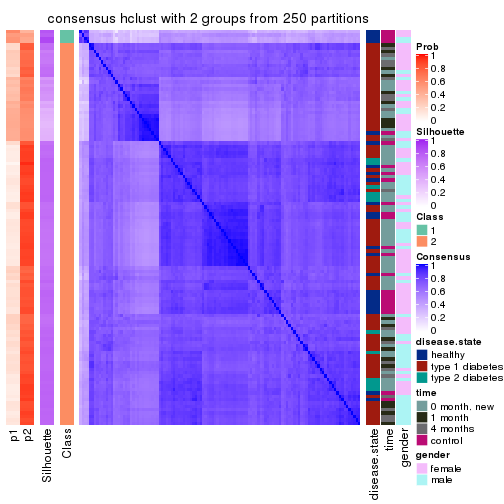
consensus_heatmap(res, k = 3)
consensus_heatmap(res, k = 4)
consensus_heatmap(res, k = 5)

consensus_heatmap(res, k = 6)
Heatmaps for the membership of samples in all partitions to see how consistent they are:
membership_heatmap(res, k = 2)
membership_heatmap(res, k = 3)

membership_heatmap(res, k = 4)
membership_heatmap(res, k = 5)
membership_heatmap(res, k = 6)
As soon as we have had the classes for columns, we can look for signatures which are significantly different between classes which can be candidate marks for certain classes. Following are the heatmaps for signatures.
Signature heatmaps where rows are scaled:
get_signatures(res, k = 2)
get_signatures(res, k = 3)
get_signatures(res, k = 4)

get_signatures(res, k = 5)
get_signatures(res, k = 6)
Signature heatmaps where rows are not scaled:
get_signatures(res, k = 2, scale_rows = FALSE)
get_signatures(res, k = 3, scale_rows = FALSE)
get_signatures(res, k = 4, scale_rows = FALSE)
get_signatures(res, k = 5, scale_rows = FALSE)
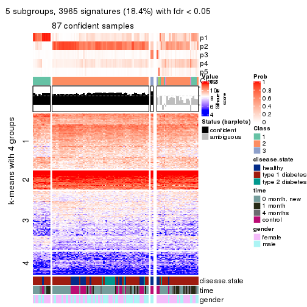
get_signatures(res, k = 6, scale_rows = FALSE)
Compare the overlap of signatures from different k:
compare_signatures(res)
get_signature() returns a data frame invisibly. TO get the list of signatures, the function
call should be assigned to a variable explicitly. In following code, if plot argument is set
to FALSE, no heatmap is plotted while only the differential analysis is performed.
# code only for demonstration
tb = get_signature(res, k = ..., plot = FALSE)
An example of the output of tb is:
#> which_row fdr mean_1 mean_2 scaled_mean_1 scaled_mean_2 km
#> 1 38 0.042760348 8.373488 9.131774 -0.5533452 0.5164555 1
#> 2 40 0.018707592 7.106213 8.469186 -0.6173731 0.5762149 1
#> 3 55 0.019134737 10.221463 11.207825 -0.6159697 0.5749050 1
#> 4 59 0.006059896 5.921854 7.869574 -0.6899429 0.6439467 1
#> 5 60 0.018055526 8.928898 10.211722 -0.6204761 0.5791110 1
#> 6 98 0.009384629 15.714769 14.887706 0.6635654 -0.6193277 2
...
The columns in tb are:
which_row: row indices corresponding to the input matrix.fdr: FDR for the differential test. mean_x: The mean value in group x.scaled_mean_x: The mean value in group x after rows are scaled.km: Row groups if k-means clustering is applied to rows.UMAP plot which shows how samples are separated.
dimension_reduction(res, k = 2, method = "UMAP")
dimension_reduction(res, k = 3, method = "UMAP")
dimension_reduction(res, k = 4, method = "UMAP")
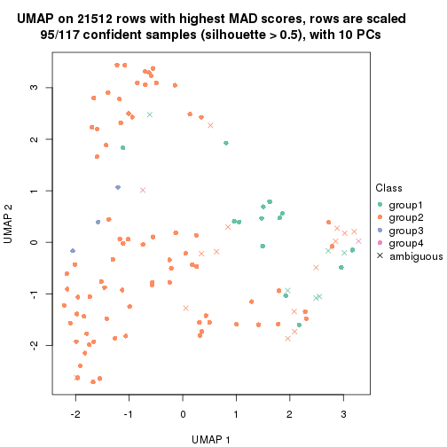
dimension_reduction(res, k = 5, method = "UMAP")
dimension_reduction(res, k = 6, method = "UMAP")
Following heatmap shows how subgroups are split when increasing k:
collect_classes(res)
Test correlation between subgroups and known annotations. If the known annotation is numeric, one-way ANOVA test is applied, and if the known annotation is discrete, chi-squared contingency table test is applied.
test_to_known_factors(res)
#> n disease.state(p) time(p) gender(p) k
#> MAD:hclust 105 0.000603 0.00197 1.0000 2
#> MAD:hclust 102 0.000441 0.00159 0.4623 3
#> MAD:hclust 95 0.003988 0.01667 0.2123 4
#> MAD:hclust 87 0.019875 0.10521 0.1265 5
#> MAD:hclust 55 0.038179 0.06716 0.0686 6
If matrix rows can be associated to genes, consider to use GO_Enrichment(res,
...) to perform function enrichment for the signature genes.
The object with results only for a single top-value method and a single partition method can be extracted as:
res = res_list["MAD", "kmeans"]
# you can also extract it by
# res = res_list["MAD:kmeans"]
A summary of res and all the functions that can be applied to it:
res
#> A 'ConsensusPartition' object with k = 2, 3, 4, 5, 6.
#> On a matrix with 21512 rows and 117 columns.
#> Top rows (1000, 2000, 3000, 4000, 5000) are extracted by 'MAD' method.
#> Subgroups are detected by 'kmeans' method.
#> Performed in total 1250 partitions by row resampling.
#> Best k for subgroups seems to be 2.
#>
#> Following methods can be applied to this 'ConsensusPartition' object:
#> [1] "cola_report" "collect_classes" "collect_plots"
#> [4] "collect_stats" "colnames" "compare_signatures"
#> [7] "consensus_heatmap" "dimension_reduction" "functional_enrichment"
#> [10] "get_anno_col" "get_anno" "get_classes"
#> [13] "get_consensus" "get_matrix" "get_membership"
#> [16] "get_param" "get_signatures" "get_stats"
#> [19] "is_best_k" "is_stable_k" "membership_heatmap"
#> [22] "ncol" "nrow" "plot_ecdf"
#> [25] "rownames" "select_partition_number" "show"
#> [28] "suggest_best_k" "test_to_known_factors"
collect_plots() function collects all the plots made from res for all k (number of partitions)
into one single page to provide an easy and fast comparison between different k.
collect_plots(res)
The plots are:
k and the heatmap of
predicted classes for each k.k.k.k.All the plots in panels can be made by individual functions and they are plotted later in this section.
select_partition_number() produces several plots showing different
statistics for choosing “optimized” k. There are following statistics:
k;k, the area increased is defined as \(A_k - A_{k-1}\).The detailed explanations of these statistics can be found in the cola vignette.
Generally speaking, lower PAC score, higher mean silhouette score or higher
concordance corresponds to better partition. Rand index and Jaccard index
measure how similar the current partition is compared to partition with k-1.
If they are too similar, we won't accept k is better than k-1.
select_partition_number(res)
The numeric values for all these statistics can be obtained by get_stats().
get_stats(res)
#> k 1-PAC mean_silhouette concordance area_increased Rand Jaccard
#> 2 2 0.514 0.782 0.903 0.4892 0.500 0.500
#> 3 3 0.356 0.687 0.812 0.2328 0.592 0.383
#> 4 4 0.497 0.641 0.804 0.1571 0.813 0.589
#> 5 5 0.567 0.607 0.774 0.0911 0.869 0.609
#> 6 6 0.597 0.552 0.738 0.0485 0.964 0.856
suggest_best_k() suggests the best \(k\) based on these statistics. The rules are as follows:
NA.suggest_best_k(res)
#> [1] 2
Following shows the table of the partitions (You need to click the show/hide
code output link to see it). The membership matrix (columns with name p*)
is inferred by
clue::cl_consensus()
function with the SE method. Basically the value in the membership matrix
represents the probability to belong to a certain group. The finall class
label for an item is determined with the group with highest probability it
belongs to.
In get_classes() function, the entropy is calculated from the membership
matrix and the silhouette score is calculated from the consensus matrix.
cbind(get_classes(res, k = 2), get_membership(res, k = 2))
#> class entropy silhouette p1 p2
#> GSM254177 2 0.0000 0.8839 0.000 1.000
#> GSM254179 2 0.1633 0.8815 0.024 0.976
#> GSM254180 2 0.3879 0.8561 0.076 0.924
#> GSM254182 1 0.2778 0.8693 0.952 0.048
#> GSM254183 2 0.2423 0.8700 0.040 0.960
#> GSM254277 2 0.4431 0.8518 0.092 0.908
#> GSM254278 2 0.0000 0.8839 0.000 1.000
#> GSM254281 1 0.6343 0.7779 0.840 0.160
#> GSM254282 2 0.0376 0.8840 0.004 0.996
#> GSM254284 1 0.8443 0.6446 0.728 0.272
#> GSM254286 2 0.8267 0.6572 0.260 0.740
#> GSM254290 2 0.9996 0.0182 0.488 0.512
#> GSM254291 2 0.0000 0.8839 0.000 1.000
#> GSM254293 2 0.9580 0.4155 0.380 0.620
#> GSM254178 1 0.0000 0.8908 1.000 0.000
#> GSM254181 2 0.0672 0.8833 0.008 0.992
#> GSM254279 2 0.0000 0.8839 0.000 1.000
#> GSM254280 2 0.0000 0.8839 0.000 1.000
#> GSM254283 2 0.4562 0.8455 0.096 0.904
#> GSM254285 2 0.0000 0.8839 0.000 1.000
#> GSM254287 2 0.1843 0.8795 0.028 0.972
#> GSM254288 2 0.2778 0.8724 0.048 0.952
#> GSM254289 2 0.1843 0.8795 0.028 0.972
#> GSM254292 1 0.6623 0.7624 0.828 0.172
#> GSM254184 2 0.6801 0.7354 0.180 0.820
#> GSM254185 2 0.0000 0.8839 0.000 1.000
#> GSM254187 2 0.0000 0.8839 0.000 1.000
#> GSM254189 2 0.0376 0.8829 0.004 0.996
#> GSM254190 1 0.0938 0.8853 0.988 0.012
#> GSM254191 2 0.9044 0.5334 0.320 0.680
#> GSM254192 2 0.0000 0.8839 0.000 1.000
#> GSM254193 1 0.0000 0.8908 1.000 0.000
#> GSM254199 1 0.1633 0.8828 0.976 0.024
#> GSM254203 1 0.0000 0.8908 1.000 0.000
#> GSM254206 1 0.0000 0.8908 1.000 0.000
#> GSM254210 2 0.9922 0.2646 0.448 0.552
#> GSM254211 1 0.0000 0.8908 1.000 0.000
#> GSM254215 2 0.0000 0.8839 0.000 1.000
#> GSM254218 2 0.0376 0.8840 0.004 0.996
#> GSM254230 1 0.0000 0.8908 1.000 0.000
#> GSM254236 2 0.0000 0.8839 0.000 1.000
#> GSM254244 1 0.0000 0.8908 1.000 0.000
#> GSM254247 1 0.9998 -0.0809 0.508 0.492
#> GSM254248 2 0.6048 0.8057 0.148 0.852
#> GSM254254 2 0.0000 0.8839 0.000 1.000
#> GSM254257 2 0.0000 0.8839 0.000 1.000
#> GSM254258 2 0.0000 0.8839 0.000 1.000
#> GSM254261 2 0.0376 0.8840 0.004 0.996
#> GSM254264 2 0.0000 0.8839 0.000 1.000
#> GSM254186 2 0.0000 0.8839 0.000 1.000
#> GSM254188 2 0.0000 0.8839 0.000 1.000
#> GSM254194 2 0.0000 0.8839 0.000 1.000
#> GSM254195 1 0.0000 0.8908 1.000 0.000
#> GSM254196 2 0.9833 0.2513 0.424 0.576
#> GSM254200 2 0.0000 0.8839 0.000 1.000
#> GSM254209 2 0.0376 0.8840 0.004 0.996
#> GSM254214 2 0.1414 0.8817 0.020 0.980
#> GSM254221 1 0.2603 0.8734 0.956 0.044
#> GSM254224 1 0.6531 0.7812 0.832 0.168
#> GSM254227 2 0.7815 0.7159 0.232 0.768
#> GSM254233 2 0.9209 0.5044 0.336 0.664
#> GSM254235 1 0.0000 0.8908 1.000 0.000
#> GSM254239 2 0.9988 0.0700 0.480 0.520
#> GSM254241 1 0.0000 0.8908 1.000 0.000
#> GSM254251 2 0.0000 0.8839 0.000 1.000
#> GSM254262 2 0.0000 0.8839 0.000 1.000
#> GSM254263 2 0.0000 0.8839 0.000 1.000
#> GSM254197 1 0.0000 0.8908 1.000 0.000
#> GSM254201 1 0.2043 0.8802 0.968 0.032
#> GSM254204 1 0.4022 0.8520 0.920 0.080
#> GSM254216 1 0.0000 0.8908 1.000 0.000
#> GSM254228 1 0.0000 0.8908 1.000 0.000
#> GSM254242 1 0.0000 0.8908 1.000 0.000
#> GSM254245 1 0.0000 0.8908 1.000 0.000
#> GSM254252 1 0.0000 0.8908 1.000 0.000
#> GSM254255 1 0.1843 0.8813 0.972 0.028
#> GSM254259 1 0.0000 0.8908 1.000 0.000
#> GSM254207 2 0.3274 0.8648 0.060 0.940
#> GSM254212 2 0.8499 0.6340 0.276 0.724
#> GSM254219 1 0.0000 0.8908 1.000 0.000
#> GSM254222 1 0.9963 0.1480 0.536 0.464
#> GSM254225 2 0.8555 0.6375 0.280 0.720
#> GSM254231 1 0.8661 0.6155 0.712 0.288
#> GSM254234 1 0.9988 0.0738 0.520 0.480
#> GSM254237 1 0.9427 0.4646 0.640 0.360
#> GSM254249 1 0.6801 0.7674 0.820 0.180
#> GSM254198 1 0.0376 0.8898 0.996 0.004
#> GSM254202 1 0.8608 0.6079 0.716 0.284
#> GSM254205 1 0.0938 0.8876 0.988 0.012
#> GSM254217 1 0.0000 0.8908 1.000 0.000
#> GSM254229 1 0.7056 0.7550 0.808 0.192
#> GSM254243 1 0.0000 0.8908 1.000 0.000
#> GSM254246 1 0.0000 0.8908 1.000 0.000
#> GSM254253 1 0.0000 0.8908 1.000 0.000
#> GSM254256 2 0.6438 0.7946 0.164 0.836
#> GSM254260 1 0.0000 0.8908 1.000 0.000
#> GSM254208 1 0.6712 0.7702 0.824 0.176
#> GSM254213 2 0.0672 0.8839 0.008 0.992
#> GSM254220 1 0.0000 0.8908 1.000 0.000
#> GSM254223 1 0.6343 0.7874 0.840 0.160
#> GSM254226 2 0.1414 0.8815 0.020 0.980
#> GSM254232 1 0.8081 0.6798 0.752 0.248
#> GSM254238 1 0.5842 0.8041 0.860 0.140
#> GSM254240 1 0.0000 0.8908 1.000 0.000
#> GSM254250 1 0.0000 0.8908 1.000 0.000
#> GSM254268 2 0.1184 0.8825 0.016 0.984
#> GSM254269 2 0.6531 0.7840 0.168 0.832
#> GSM254270 1 0.0000 0.8908 1.000 0.000
#> GSM254272 2 0.5737 0.8106 0.136 0.864
#> GSM254273 2 0.1414 0.8815 0.020 0.980
#> GSM254274 2 0.4562 0.8424 0.096 0.904
#> GSM254265 2 0.5629 0.8180 0.132 0.868
#> GSM254266 1 0.9358 0.4813 0.648 0.352
#> GSM254267 2 0.8144 0.6762 0.252 0.748
#> GSM254271 2 0.0938 0.8832 0.012 0.988
#> GSM254275 2 0.9996 0.0409 0.488 0.512
#> GSM254276 2 0.5737 0.8151 0.136 0.864
cbind(get_classes(res, k = 3), get_membership(res, k = 3))
#> class entropy silhouette p1 p2 p3
#> GSM254177 3 0.2356 0.850 0.000 0.072 0.928
#> GSM254179 2 0.5843 0.719 0.016 0.732 0.252
#> GSM254180 2 0.5461 0.748 0.016 0.768 0.216
#> GSM254182 1 0.7895 0.224 0.508 0.436 0.056
#> GSM254183 3 0.7567 0.203 0.048 0.376 0.576
#> GSM254277 2 0.6025 0.733 0.028 0.740 0.232
#> GSM254278 3 0.0237 0.915 0.000 0.004 0.996
#> GSM254281 2 0.5875 0.664 0.160 0.784 0.056
#> GSM254282 2 0.6307 0.378 0.000 0.512 0.488
#> GSM254284 2 0.2599 0.730 0.052 0.932 0.016
#> GSM254286 2 0.7104 0.583 0.032 0.608 0.360
#> GSM254290 2 0.3456 0.741 0.060 0.904 0.036
#> GSM254291 3 0.3412 0.804 0.000 0.124 0.876
#> GSM254293 2 0.5173 0.749 0.036 0.816 0.148
#> GSM254178 1 0.2625 0.818 0.916 0.084 0.000
#> GSM254181 2 0.6247 0.547 0.004 0.620 0.376
#> GSM254279 3 0.0237 0.915 0.000 0.004 0.996
#> GSM254280 3 0.0237 0.915 0.000 0.004 0.996
#> GSM254283 2 0.3941 0.766 0.000 0.844 0.156
#> GSM254285 3 0.0237 0.915 0.000 0.004 0.996
#> GSM254287 2 0.7353 0.331 0.032 0.532 0.436
#> GSM254288 2 0.6232 0.719 0.040 0.740 0.220
#> GSM254289 2 0.6539 0.659 0.028 0.684 0.288
#> GSM254292 2 0.5292 0.661 0.172 0.800 0.028
#> GSM254184 3 0.3359 0.841 0.084 0.016 0.900
#> GSM254185 3 0.0237 0.915 0.000 0.004 0.996
#> GSM254187 3 0.0237 0.915 0.000 0.004 0.996
#> GSM254189 3 0.0475 0.913 0.004 0.004 0.992
#> GSM254190 1 0.2116 0.794 0.948 0.040 0.012
#> GSM254191 3 0.6410 0.335 0.420 0.004 0.576
#> GSM254192 3 0.0237 0.911 0.004 0.000 0.996
#> GSM254193 1 0.1878 0.792 0.952 0.044 0.004
#> GSM254199 2 0.7169 0.277 0.404 0.568 0.028
#> GSM254203 1 0.2625 0.818 0.916 0.084 0.000
#> GSM254206 1 0.3482 0.799 0.872 0.128 0.000
#> GSM254210 2 0.6222 0.750 0.092 0.776 0.132
#> GSM254211 1 0.2625 0.818 0.916 0.084 0.000
#> GSM254215 3 0.0237 0.915 0.000 0.004 0.996
#> GSM254218 2 0.6678 0.382 0.008 0.512 0.480
#> GSM254230 1 0.2625 0.818 0.916 0.084 0.000
#> GSM254236 3 0.0475 0.913 0.004 0.004 0.992
#> GSM254244 1 0.2711 0.804 0.912 0.088 0.000
#> GSM254247 2 0.3678 0.737 0.080 0.892 0.028
#> GSM254248 2 0.7106 0.705 0.072 0.696 0.232
#> GSM254254 2 0.6295 0.378 0.000 0.528 0.472
#> GSM254257 2 0.6330 0.546 0.004 0.600 0.396
#> GSM254258 3 0.0237 0.915 0.000 0.004 0.996
#> GSM254261 2 0.6274 0.436 0.000 0.544 0.456
#> GSM254264 3 0.0237 0.915 0.000 0.004 0.996
#> GSM254186 3 0.0237 0.915 0.000 0.004 0.996
#> GSM254188 3 0.0237 0.915 0.000 0.004 0.996
#> GSM254194 3 0.0592 0.910 0.000 0.012 0.988
#> GSM254195 1 0.2945 0.790 0.908 0.088 0.004
#> GSM254196 3 0.8129 0.498 0.244 0.124 0.632
#> GSM254200 3 0.0237 0.915 0.000 0.004 0.996
#> GSM254209 2 0.5859 0.609 0.000 0.656 0.344
#> GSM254214 2 0.5845 0.653 0.004 0.688 0.308
#> GSM254221 2 0.6148 0.203 0.356 0.640 0.004
#> GSM254224 2 0.1964 0.719 0.056 0.944 0.000
#> GSM254227 2 0.5524 0.769 0.040 0.796 0.164
#> GSM254233 2 0.5222 0.746 0.040 0.816 0.144
#> GSM254235 1 0.2625 0.818 0.916 0.084 0.000
#> GSM254239 2 0.3832 0.759 0.036 0.888 0.076
#> GSM254241 1 0.5254 0.756 0.736 0.264 0.000
#> GSM254251 3 0.5363 0.478 0.000 0.276 0.724
#> GSM254262 3 0.0592 0.906 0.012 0.000 0.988
#> GSM254263 3 0.0829 0.903 0.012 0.004 0.984
#> GSM254197 1 0.2625 0.818 0.916 0.084 0.000
#> GSM254201 1 0.6952 0.362 0.504 0.480 0.016
#> GSM254204 2 0.4834 0.576 0.204 0.792 0.004
#> GSM254216 1 0.6308 0.382 0.508 0.492 0.000
#> GSM254228 1 0.2625 0.818 0.916 0.084 0.000
#> GSM254242 1 0.5497 0.714 0.708 0.292 0.000
#> GSM254245 2 0.6302 -0.361 0.480 0.520 0.000
#> GSM254252 2 0.4291 0.601 0.180 0.820 0.000
#> GSM254255 2 0.3715 0.681 0.128 0.868 0.004
#> GSM254259 1 0.2625 0.818 0.916 0.084 0.000
#> GSM254207 2 0.5098 0.737 0.000 0.752 0.248
#> GSM254212 2 0.3695 0.767 0.012 0.880 0.108
#> GSM254219 1 0.6302 0.423 0.520 0.480 0.000
#> GSM254222 2 0.2810 0.742 0.036 0.928 0.036
#> GSM254225 2 0.3921 0.766 0.016 0.872 0.112
#> GSM254231 2 0.2793 0.739 0.044 0.928 0.028
#> GSM254234 2 0.2318 0.740 0.028 0.944 0.028
#> GSM254237 2 0.2689 0.738 0.036 0.932 0.032
#> GSM254249 2 0.2804 0.714 0.060 0.924 0.016
#> GSM254198 2 0.4887 0.540 0.228 0.772 0.000
#> GSM254202 2 0.7283 0.621 0.176 0.708 0.116
#> GSM254205 2 0.3619 0.664 0.136 0.864 0.000
#> GSM254217 2 0.4796 0.556 0.220 0.780 0.000
#> GSM254229 2 0.1860 0.722 0.052 0.948 0.000
#> GSM254243 1 0.4887 0.773 0.772 0.228 0.000
#> GSM254246 1 0.2625 0.818 0.916 0.084 0.000
#> GSM254253 1 0.6307 0.348 0.512 0.488 0.000
#> GSM254256 2 0.5223 0.769 0.024 0.800 0.176
#> GSM254260 2 0.5988 0.130 0.368 0.632 0.000
#> GSM254208 2 0.4979 0.615 0.168 0.812 0.020
#> GSM254213 2 0.5621 0.657 0.000 0.692 0.308
#> GSM254220 1 0.6295 0.436 0.528 0.472 0.000
#> GSM254223 2 0.3965 0.655 0.132 0.860 0.008
#> GSM254226 2 0.4887 0.744 0.000 0.772 0.228
#> GSM254232 2 0.2569 0.739 0.032 0.936 0.032
#> GSM254238 2 0.5269 0.559 0.200 0.784 0.016
#> GSM254240 1 0.4887 0.780 0.772 0.228 0.000
#> GSM254250 1 0.4842 0.777 0.776 0.224 0.000
#> GSM254268 2 0.5929 0.649 0.004 0.676 0.320
#> GSM254269 2 0.3715 0.769 0.004 0.868 0.128
#> GSM254270 2 0.4291 0.617 0.180 0.820 0.000
#> GSM254272 2 0.5219 0.759 0.016 0.788 0.196
#> GSM254273 2 0.5560 0.694 0.000 0.700 0.300
#> GSM254274 2 0.5024 0.748 0.004 0.776 0.220
#> GSM254265 2 0.4755 0.766 0.008 0.808 0.184
#> GSM254266 2 0.2031 0.735 0.032 0.952 0.016
#> GSM254267 2 0.3425 0.767 0.004 0.884 0.112
#> GSM254271 2 0.4887 0.737 0.000 0.772 0.228
#> GSM254275 2 0.3310 0.753 0.028 0.908 0.064
#> GSM254276 2 0.3851 0.767 0.004 0.860 0.136
cbind(get_classes(res, k = 4), get_membership(res, k = 4))
#> class entropy silhouette p1 p2 p3 p4
#> GSM254177 3 0.2741 0.85166 0.000 0.096 0.892 0.012
#> GSM254179 2 0.5498 0.57303 0.000 0.680 0.048 0.272
#> GSM254180 2 0.3707 0.71785 0.000 0.840 0.028 0.132
#> GSM254182 4 0.3159 0.56328 0.052 0.036 0.016 0.896
#> GSM254183 2 0.7823 0.35270 0.008 0.480 0.224 0.288
#> GSM254277 2 0.4995 0.61970 0.000 0.720 0.032 0.248
#> GSM254278 3 0.0707 0.93874 0.000 0.020 0.980 0.000
#> GSM254281 4 0.5404 0.34374 0.012 0.384 0.004 0.600
#> GSM254282 2 0.4319 0.65453 0.000 0.760 0.228 0.012
#> GSM254284 2 0.4059 0.66052 0.012 0.788 0.000 0.200
#> GSM254286 2 0.7601 0.21693 0.000 0.472 0.232 0.296
#> GSM254290 4 0.5004 0.33784 0.000 0.392 0.004 0.604
#> GSM254291 3 0.5915 0.19407 0.000 0.400 0.560 0.040
#> GSM254293 2 0.5511 0.04852 0.000 0.500 0.016 0.484
#> GSM254178 1 0.0376 0.82859 0.992 0.004 0.000 0.004
#> GSM254181 2 0.2271 0.73463 0.000 0.916 0.076 0.008
#> GSM254279 3 0.0817 0.93825 0.000 0.024 0.976 0.000
#> GSM254280 3 0.0707 0.93727 0.000 0.020 0.980 0.000
#> GSM254283 2 0.1182 0.74265 0.000 0.968 0.016 0.016
#> GSM254285 3 0.0707 0.93727 0.000 0.020 0.980 0.000
#> GSM254287 2 0.5596 0.60459 0.008 0.744 0.132 0.116
#> GSM254288 2 0.3924 0.68935 0.008 0.840 0.028 0.124
#> GSM254289 2 0.3940 0.69854 0.008 0.848 0.044 0.100
#> GSM254292 4 0.3591 0.69967 0.008 0.168 0.000 0.824
#> GSM254184 3 0.3765 0.78946 0.032 0.004 0.848 0.116
#> GSM254185 3 0.0707 0.93874 0.000 0.020 0.980 0.000
#> GSM254187 3 0.0707 0.93874 0.000 0.020 0.980 0.000
#> GSM254189 3 0.0592 0.93731 0.000 0.016 0.984 0.000
#> GSM254190 1 0.1443 0.81667 0.960 0.004 0.008 0.028
#> GSM254191 1 0.6528 0.28121 0.540 0.004 0.388 0.068
#> GSM254192 3 0.0927 0.93067 0.000 0.016 0.976 0.008
#> GSM254193 1 0.2246 0.79124 0.928 0.004 0.016 0.052
#> GSM254199 2 0.6733 0.34437 0.324 0.564 0.000 0.112
#> GSM254203 1 0.0376 0.82859 0.992 0.004 0.000 0.004
#> GSM254206 4 0.5500 0.02440 0.420 0.012 0.004 0.564
#> GSM254210 2 0.5363 0.40905 0.004 0.612 0.012 0.372
#> GSM254211 1 0.0524 0.82782 0.988 0.004 0.000 0.008
#> GSM254215 3 0.0707 0.93874 0.000 0.020 0.980 0.000
#> GSM254218 2 0.5489 0.62058 0.000 0.700 0.240 0.060
#> GSM254230 1 0.0376 0.82859 0.992 0.004 0.000 0.004
#> GSM254236 3 0.0707 0.93874 0.000 0.020 0.980 0.000
#> GSM254244 1 0.5060 0.39478 0.584 0.000 0.004 0.412
#> GSM254247 4 0.3726 0.68148 0.000 0.212 0.000 0.788
#> GSM254248 2 0.5227 0.61012 0.000 0.704 0.040 0.256
#> GSM254254 2 0.3625 0.70077 0.000 0.828 0.160 0.012
#> GSM254257 2 0.4700 0.70913 0.000 0.792 0.124 0.084
#> GSM254258 3 0.0592 0.93731 0.000 0.016 0.984 0.000
#> GSM254261 2 0.3725 0.69252 0.000 0.812 0.180 0.008
#> GSM254264 3 0.0707 0.93874 0.000 0.020 0.980 0.000
#> GSM254186 3 0.0817 0.93825 0.000 0.024 0.976 0.000
#> GSM254188 3 0.0817 0.93825 0.000 0.024 0.976 0.000
#> GSM254194 3 0.1109 0.93262 0.000 0.028 0.968 0.004
#> GSM254195 1 0.5161 0.42419 0.592 0.000 0.008 0.400
#> GSM254196 3 0.7155 0.57643 0.076 0.084 0.656 0.184
#> GSM254200 3 0.0817 0.93825 0.000 0.024 0.976 0.000
#> GSM254209 2 0.1978 0.73818 0.000 0.928 0.068 0.004
#> GSM254214 2 0.1488 0.74487 0.000 0.956 0.032 0.012
#> GSM254221 4 0.4722 0.69979 0.020 0.228 0.004 0.748
#> GSM254224 2 0.5392 0.00811 0.008 0.564 0.004 0.424
#> GSM254227 2 0.3100 0.74390 0.004 0.888 0.028 0.080
#> GSM254233 4 0.6757 0.42856 0.000 0.376 0.100 0.524
#> GSM254235 1 0.0779 0.82195 0.980 0.004 0.000 0.016
#> GSM254239 2 0.1674 0.74411 0.004 0.952 0.012 0.032
#> GSM254241 1 0.7203 0.15810 0.524 0.164 0.000 0.312
#> GSM254251 2 0.4961 0.28011 0.000 0.552 0.448 0.000
#> GSM254262 3 0.0469 0.93132 0.000 0.012 0.988 0.000
#> GSM254263 3 0.0469 0.93132 0.000 0.012 0.988 0.000
#> GSM254197 1 0.0376 0.82859 0.992 0.004 0.000 0.004
#> GSM254201 4 0.4781 0.71149 0.088 0.112 0.004 0.796
#> GSM254204 4 0.5337 0.63359 0.024 0.300 0.004 0.672
#> GSM254216 4 0.6339 0.66759 0.196 0.148 0.000 0.656
#> GSM254228 1 0.0376 0.82859 0.992 0.004 0.000 0.004
#> GSM254242 4 0.5491 0.55102 0.260 0.052 0.000 0.688
#> GSM254245 4 0.5171 0.69964 0.128 0.112 0.000 0.760
#> GSM254252 4 0.3764 0.72453 0.012 0.172 0.000 0.816
#> GSM254255 4 0.5827 0.26371 0.032 0.436 0.000 0.532
#> GSM254259 1 0.0376 0.82859 0.992 0.004 0.000 0.004
#> GSM254207 2 0.4746 0.67442 0.000 0.776 0.056 0.168
#> GSM254212 2 0.1209 0.74308 0.000 0.964 0.004 0.032
#> GSM254219 4 0.5522 0.68915 0.120 0.148 0.000 0.732
#> GSM254222 2 0.3819 0.64170 0.008 0.816 0.004 0.172
#> GSM254225 2 0.1543 0.74050 0.004 0.956 0.008 0.032
#> GSM254231 2 0.5097 -0.03089 0.000 0.568 0.004 0.428
#> GSM254234 2 0.3584 0.66037 0.008 0.836 0.004 0.152
#> GSM254237 2 0.1732 0.73813 0.008 0.948 0.004 0.040
#> GSM254249 4 0.5443 0.37687 0.008 0.456 0.004 0.532
#> GSM254198 4 0.5476 0.32613 0.020 0.396 0.000 0.584
#> GSM254202 4 0.3932 0.71897 0.008 0.140 0.020 0.832
#> GSM254205 4 0.3870 0.71388 0.004 0.208 0.000 0.788
#> GSM254217 2 0.5417 0.57142 0.056 0.704 0.000 0.240
#> GSM254229 2 0.4228 0.63471 0.008 0.760 0.000 0.232
#> GSM254243 4 0.5400 0.29484 0.372 0.020 0.000 0.608
#> GSM254246 1 0.0564 0.82750 0.988 0.004 0.004 0.004
#> GSM254253 4 0.5861 0.70444 0.144 0.152 0.000 0.704
#> GSM254256 2 0.4303 0.70205 0.004 0.792 0.020 0.184
#> GSM254260 4 0.4776 0.73269 0.060 0.164 0.000 0.776
#> GSM254208 2 0.5629 0.33847 0.036 0.656 0.004 0.304
#> GSM254213 2 0.1635 0.74229 0.000 0.948 0.044 0.008
#> GSM254220 4 0.4669 0.69687 0.104 0.100 0.000 0.796
#> GSM254223 2 0.5693 0.28939 0.036 0.644 0.004 0.316
#> GSM254226 2 0.2300 0.74556 0.000 0.924 0.048 0.028
#> GSM254232 2 0.3907 0.61900 0.008 0.808 0.004 0.180
#> GSM254238 2 0.5511 0.41311 0.036 0.676 0.004 0.284
#> GSM254240 1 0.6882 0.08330 0.500 0.108 0.000 0.392
#> GSM254250 4 0.6666 0.09523 0.404 0.088 0.000 0.508
#> GSM254268 2 0.3764 0.72750 0.000 0.844 0.040 0.116
#> GSM254269 2 0.2401 0.73597 0.000 0.904 0.004 0.092
#> GSM254270 2 0.5917 0.05603 0.036 0.520 0.000 0.444
#> GSM254272 2 0.3278 0.71848 0.000 0.864 0.020 0.116
#> GSM254273 2 0.3505 0.73443 0.000 0.864 0.088 0.048
#> GSM254274 2 0.2699 0.73973 0.000 0.904 0.028 0.068
#> GSM254265 2 0.3853 0.69619 0.000 0.820 0.020 0.160
#> GSM254266 2 0.2149 0.71732 0.000 0.912 0.000 0.088
#> GSM254267 2 0.1151 0.74219 0.000 0.968 0.008 0.024
#> GSM254271 2 0.1118 0.74277 0.000 0.964 0.036 0.000
#> GSM254275 2 0.0895 0.74319 0.000 0.976 0.004 0.020
#> GSM254276 2 0.0672 0.74178 0.000 0.984 0.008 0.008
cbind(get_classes(res, k = 5), get_membership(res, k = 5))
#> class entropy silhouette p1 p2 p3 p4 p5
#> GSM254177 3 0.3861 0.70065 0.000 0.128 0.804 0.000 0.068
#> GSM254179 5 0.5511 0.28676 0.000 0.416 0.004 0.056 0.524
#> GSM254180 2 0.4375 0.64298 0.000 0.772 0.008 0.064 0.156
#> GSM254182 5 0.3160 0.34707 0.000 0.000 0.004 0.188 0.808
#> GSM254183 5 0.6832 0.29706 0.000 0.268 0.084 0.088 0.560
#> GSM254277 2 0.5229 -0.08290 0.000 0.500 0.008 0.028 0.464
#> GSM254278 3 0.0162 0.91835 0.000 0.004 0.996 0.000 0.000
#> GSM254281 5 0.6806 0.47205 0.000 0.300 0.004 0.260 0.436
#> GSM254282 2 0.4577 0.57739 0.000 0.736 0.208 0.008 0.048
#> GSM254284 2 0.5042 0.52044 0.004 0.676 0.000 0.256 0.064
#> GSM254286 5 0.7942 0.44087 0.000 0.244 0.216 0.108 0.432
#> GSM254290 5 0.5750 0.48513 0.000 0.156 0.000 0.228 0.616
#> GSM254291 3 0.7029 -0.23072 0.000 0.372 0.376 0.012 0.240
#> GSM254293 5 0.6428 0.52638 0.000 0.276 0.012 0.164 0.548
#> GSM254178 1 0.0000 0.90166 1.000 0.000 0.000 0.000 0.000
#> GSM254181 2 0.2005 0.72885 0.000 0.924 0.016 0.004 0.056
#> GSM254279 3 0.0290 0.91736 0.000 0.008 0.992 0.000 0.000
#> GSM254280 3 0.0290 0.91736 0.000 0.008 0.992 0.000 0.000
#> GSM254283 2 0.0566 0.73299 0.000 0.984 0.000 0.012 0.004
#> GSM254285 3 0.0162 0.91835 0.000 0.004 0.996 0.000 0.000
#> GSM254287 2 0.5677 0.41237 0.000 0.632 0.040 0.044 0.284
#> GSM254288 2 0.5050 0.46867 0.000 0.664 0.008 0.048 0.280
#> GSM254289 2 0.4074 0.62458 0.000 0.780 0.012 0.028 0.180
#> GSM254292 5 0.5075 0.34701 0.000 0.044 0.004 0.324 0.628
#> GSM254184 3 0.4198 0.73303 0.024 0.004 0.792 0.024 0.156
#> GSM254185 3 0.0162 0.91835 0.000 0.004 0.996 0.000 0.000
#> GSM254187 3 0.0162 0.91835 0.000 0.004 0.996 0.000 0.000
#> GSM254189 3 0.0162 0.91835 0.000 0.004 0.996 0.000 0.000
#> GSM254190 1 0.1818 0.86697 0.932 0.000 0.000 0.024 0.044
#> GSM254191 1 0.6188 0.46582 0.572 0.000 0.296 0.016 0.116
#> GSM254192 3 0.0451 0.91171 0.000 0.004 0.988 0.000 0.008
#> GSM254193 1 0.2103 0.86281 0.920 0.000 0.004 0.020 0.056
#> GSM254199 2 0.7286 0.14384 0.268 0.516 0.000 0.092 0.124
#> GSM254203 1 0.0000 0.90166 1.000 0.000 0.000 0.000 0.000
#> GSM254206 4 0.6548 0.08989 0.200 0.000 0.000 0.420 0.380
#> GSM254210 5 0.4925 0.44822 0.000 0.324 0.000 0.044 0.632
#> GSM254211 1 0.0290 0.89771 0.992 0.000 0.000 0.008 0.000
#> GSM254215 3 0.0162 0.91835 0.000 0.004 0.996 0.000 0.000
#> GSM254218 2 0.5085 0.59454 0.000 0.724 0.152 0.012 0.112
#> GSM254230 1 0.0000 0.90166 1.000 0.000 0.000 0.000 0.000
#> GSM254236 3 0.0162 0.91835 0.000 0.004 0.996 0.000 0.000
#> GSM254244 5 0.6732 0.04136 0.320 0.004 0.000 0.228 0.448
#> GSM254247 5 0.5172 0.34732 0.000 0.060 0.000 0.324 0.616
#> GSM254248 5 0.4886 0.16212 0.000 0.448 0.000 0.024 0.528
#> GSM254254 2 0.3119 0.71070 0.000 0.860 0.068 0.000 0.072
#> GSM254257 2 0.4665 0.68000 0.000 0.780 0.056 0.048 0.116
#> GSM254258 3 0.0162 0.91835 0.000 0.004 0.996 0.000 0.000
#> GSM254261 2 0.3906 0.66104 0.000 0.800 0.132 0.000 0.068
#> GSM254264 3 0.0162 0.91835 0.000 0.004 0.996 0.000 0.000
#> GSM254186 3 0.0290 0.91736 0.000 0.008 0.992 0.000 0.000
#> GSM254188 3 0.0290 0.91736 0.000 0.008 0.992 0.000 0.000
#> GSM254194 3 0.1200 0.89911 0.000 0.008 0.964 0.012 0.016
#> GSM254195 1 0.6543 0.24074 0.456 0.000 0.000 0.212 0.332
#> GSM254196 3 0.7771 0.40509 0.068 0.064 0.564 0.128 0.176
#> GSM254200 3 0.0290 0.91736 0.000 0.008 0.992 0.000 0.000
#> GSM254209 2 0.1949 0.73376 0.000 0.932 0.016 0.012 0.040
#> GSM254214 2 0.1697 0.73158 0.000 0.932 0.008 0.000 0.060
#> GSM254221 4 0.4194 0.61001 0.004 0.080 0.000 0.788 0.128
#> GSM254224 4 0.5094 0.49828 0.000 0.352 0.000 0.600 0.048
#> GSM254227 2 0.3270 0.72653 0.000 0.852 0.004 0.100 0.044
#> GSM254233 4 0.6623 0.51223 0.000 0.240 0.068 0.592 0.100
#> GSM254235 1 0.1270 0.86242 0.948 0.000 0.000 0.052 0.000
#> GSM254239 2 0.1808 0.73695 0.000 0.936 0.004 0.020 0.040
#> GSM254241 4 0.5864 0.57806 0.220 0.124 0.000 0.640 0.016
#> GSM254251 2 0.4863 0.44295 0.000 0.656 0.296 0.000 0.048
#> GSM254262 3 0.0798 0.90608 0.000 0.008 0.976 0.000 0.016
#> GSM254263 3 0.0912 0.90338 0.000 0.012 0.972 0.000 0.016
#> GSM254197 1 0.0000 0.90166 1.000 0.000 0.000 0.000 0.000
#> GSM254201 4 0.3870 0.59417 0.020 0.024 0.000 0.808 0.148
#> GSM254204 4 0.5757 0.52664 0.008 0.136 0.000 0.640 0.216
#> GSM254216 4 0.4988 0.61603 0.096 0.072 0.000 0.764 0.068
#> GSM254228 1 0.0000 0.90166 1.000 0.000 0.000 0.000 0.000
#> GSM254242 4 0.4068 0.60095 0.144 0.004 0.000 0.792 0.060
#> GSM254245 4 0.4687 0.60399 0.048 0.044 0.000 0.772 0.136
#> GSM254252 4 0.4238 0.51070 0.004 0.028 0.000 0.740 0.228
#> GSM254255 4 0.5253 0.49942 0.012 0.264 0.000 0.664 0.060
#> GSM254259 1 0.0162 0.89988 0.996 0.000 0.000 0.004 0.000
#> GSM254207 2 0.6153 0.43210 0.000 0.628 0.028 0.208 0.136
#> GSM254212 2 0.2012 0.73690 0.000 0.920 0.000 0.020 0.060
#> GSM254219 4 0.3749 0.63396 0.056 0.044 0.000 0.844 0.056
#> GSM254222 2 0.4633 0.27147 0.004 0.632 0.000 0.348 0.016
#> GSM254225 2 0.2573 0.69689 0.000 0.880 0.000 0.104 0.016
#> GSM254231 4 0.4824 0.48679 0.000 0.376 0.000 0.596 0.028
#> GSM254234 2 0.4194 0.49364 0.004 0.720 0.000 0.260 0.016
#> GSM254237 2 0.1757 0.72531 0.004 0.936 0.000 0.048 0.012
#> GSM254249 4 0.4914 0.57082 0.008 0.280 0.000 0.672 0.040
#> GSM254198 4 0.6838 0.01325 0.016 0.196 0.000 0.480 0.308
#> GSM254202 5 0.5007 -0.00762 0.000 0.012 0.012 0.472 0.504
#> GSM254205 4 0.4325 0.56788 0.004 0.048 0.000 0.756 0.192
#> GSM254217 2 0.6356 0.33749 0.028 0.560 0.000 0.308 0.104
#> GSM254229 2 0.5056 0.44893 0.004 0.620 0.000 0.336 0.040
#> GSM254243 4 0.5998 0.46697 0.184 0.008 0.000 0.616 0.192
#> GSM254246 1 0.0000 0.90166 1.000 0.000 0.000 0.000 0.000
#> GSM254253 4 0.3968 0.64138 0.072 0.068 0.000 0.828 0.032
#> GSM254256 2 0.4273 0.66748 0.000 0.784 0.004 0.116 0.096
#> GSM254260 4 0.3250 0.63498 0.044 0.040 0.000 0.872 0.044
#> GSM254208 4 0.5178 0.46557 0.024 0.404 0.000 0.560 0.012
#> GSM254213 2 0.1538 0.73382 0.000 0.948 0.008 0.008 0.036
#> GSM254220 4 0.3781 0.60797 0.040 0.020 0.000 0.828 0.112
#> GSM254223 4 0.5658 0.49593 0.036 0.372 0.000 0.564 0.028
#> GSM254226 2 0.2824 0.73345 0.000 0.888 0.028 0.068 0.016
#> GSM254232 2 0.4779 0.04467 0.004 0.584 0.000 0.396 0.016
#> GSM254238 4 0.5326 0.32203 0.012 0.464 0.000 0.496 0.028
#> GSM254240 4 0.5755 0.57389 0.224 0.096 0.000 0.656 0.024
#> GSM254250 4 0.7128 0.46656 0.248 0.096 0.000 0.544 0.112
#> GSM254268 2 0.3784 0.69743 0.000 0.820 0.024 0.024 0.132
#> GSM254269 2 0.3055 0.71797 0.000 0.864 0.000 0.064 0.072
#> GSM254270 5 0.7147 0.25596 0.012 0.332 0.000 0.320 0.336
#> GSM254272 2 0.3920 0.65892 0.000 0.804 0.012 0.036 0.148
#> GSM254273 2 0.3372 0.70492 0.000 0.852 0.052 0.008 0.088
#> GSM254274 2 0.3455 0.70291 0.000 0.844 0.020 0.024 0.112
#> GSM254265 2 0.5060 0.55918 0.000 0.704 0.008 0.080 0.208
#> GSM254266 2 0.3090 0.69381 0.000 0.856 0.000 0.104 0.040
#> GSM254267 2 0.1117 0.73454 0.000 0.964 0.000 0.016 0.020
#> GSM254271 2 0.1041 0.73593 0.000 0.964 0.000 0.004 0.032
#> GSM254275 2 0.1117 0.73949 0.000 0.964 0.000 0.016 0.020
#> GSM254276 2 0.0807 0.73361 0.000 0.976 0.000 0.012 0.012
cbind(get_classes(res, k = 6), get_membership(res, k = 6))
#> class entropy silhouette p1 p2 p3 p4 p5 p6
#> GSM254177 3 0.4389 0.5859 0.000 0.084 0.728 0.000 0.008 0.180
#> GSM254179 6 0.4680 0.3150 0.000 0.320 0.000 0.012 0.040 0.628
#> GSM254180 2 0.4645 0.5481 0.000 0.712 0.000 0.040 0.044 0.204
#> GSM254182 5 0.4399 0.1199 0.000 0.000 0.000 0.024 0.516 0.460
#> GSM254183 5 0.6737 0.1772 0.000 0.184 0.036 0.016 0.480 0.284
#> GSM254277 6 0.4468 0.3194 0.000 0.364 0.000 0.008 0.024 0.604
#> GSM254278 3 0.0000 0.9331 0.000 0.000 1.000 0.000 0.000 0.000
#> GSM254281 6 0.6328 0.3509 0.004 0.244 0.000 0.092 0.096 0.564
#> GSM254282 2 0.4927 0.5506 0.000 0.708 0.164 0.004 0.024 0.100
#> GSM254284 2 0.6286 0.4258 0.000 0.552 0.000 0.248 0.128 0.072
#> GSM254286 6 0.6679 0.2017 0.000 0.168 0.128 0.036 0.080 0.588
#> GSM254290 6 0.4201 0.2353 0.000 0.084 0.000 0.084 0.048 0.784
#> GSM254291 2 0.6978 -0.1798 0.000 0.348 0.296 0.000 0.056 0.300
#> GSM254293 6 0.5272 0.3598 0.000 0.232 0.000 0.072 0.044 0.652
#> GSM254178 1 0.0146 0.8635 0.996 0.000 0.000 0.000 0.000 0.004
#> GSM254181 2 0.2265 0.6799 0.000 0.908 0.008 0.004 0.040 0.040
#> GSM254279 3 0.0000 0.9331 0.000 0.000 1.000 0.000 0.000 0.000
#> GSM254280 3 0.0000 0.9331 0.000 0.000 1.000 0.000 0.000 0.000
#> GSM254283 2 0.1649 0.6867 0.000 0.936 0.000 0.016 0.040 0.008
#> GSM254285 3 0.0000 0.9331 0.000 0.000 1.000 0.000 0.000 0.000
#> GSM254287 2 0.5168 -0.0458 0.000 0.480 0.020 0.000 0.456 0.044
#> GSM254288 2 0.4820 0.0324 0.000 0.492 0.000 0.008 0.464 0.036
#> GSM254289 2 0.4026 0.3099 0.000 0.612 0.000 0.000 0.376 0.012
#> GSM254292 6 0.4275 0.0627 0.000 0.012 0.000 0.092 0.144 0.752
#> GSM254184 3 0.4981 0.6468 0.020 0.008 0.732 0.012 0.104 0.124
#> GSM254185 3 0.0000 0.9331 0.000 0.000 1.000 0.000 0.000 0.000
#> GSM254187 3 0.0000 0.9331 0.000 0.000 1.000 0.000 0.000 0.000
#> GSM254189 3 0.0508 0.9257 0.000 0.004 0.984 0.000 0.012 0.000
#> GSM254190 1 0.2760 0.7960 0.868 0.000 0.000 0.004 0.076 0.052
#> GSM254191 1 0.6517 0.3834 0.532 0.000 0.208 0.004 0.200 0.056
#> GSM254192 3 0.0820 0.9153 0.000 0.012 0.972 0.000 0.000 0.016
#> GSM254193 1 0.3107 0.7748 0.832 0.000 0.000 0.000 0.116 0.052
#> GSM254199 2 0.7565 0.2040 0.244 0.464 0.000 0.100 0.048 0.144
#> GSM254203 1 0.0000 0.8633 1.000 0.000 0.000 0.000 0.000 0.000
#> GSM254206 6 0.7431 -0.1277 0.120 0.000 0.000 0.304 0.264 0.312
#> GSM254210 6 0.4395 0.3322 0.000 0.264 0.000 0.008 0.044 0.684
#> GSM254211 1 0.1321 0.8487 0.952 0.000 0.000 0.024 0.020 0.004
#> GSM254215 3 0.0000 0.9331 0.000 0.000 1.000 0.000 0.000 0.000
#> GSM254218 2 0.4853 0.5914 0.000 0.732 0.104 0.012 0.024 0.128
#> GSM254230 1 0.0146 0.8638 0.996 0.000 0.000 0.000 0.004 0.000
#> GSM254236 3 0.0000 0.9331 0.000 0.000 1.000 0.000 0.000 0.000
#> GSM254244 6 0.6792 -0.2164 0.208 0.004 0.000 0.056 0.264 0.468
#> GSM254247 6 0.4381 0.1018 0.000 0.028 0.000 0.136 0.080 0.756
#> GSM254248 6 0.4775 0.2648 0.000 0.348 0.000 0.000 0.064 0.588
#> GSM254254 2 0.2698 0.6652 0.000 0.880 0.040 0.000 0.016 0.064
#> GSM254257 2 0.4248 0.6217 0.000 0.780 0.032 0.016 0.036 0.136
#> GSM254258 3 0.0146 0.9311 0.000 0.000 0.996 0.000 0.004 0.000
#> GSM254261 2 0.3677 0.6388 0.000 0.816 0.088 0.000 0.024 0.072
#> GSM254264 3 0.0000 0.9331 0.000 0.000 1.000 0.000 0.000 0.000
#> GSM254186 3 0.0000 0.9331 0.000 0.000 1.000 0.000 0.000 0.000
#> GSM254188 3 0.0000 0.9331 0.000 0.000 1.000 0.000 0.000 0.000
#> GSM254194 3 0.1453 0.8920 0.000 0.008 0.944 0.000 0.008 0.040
#> GSM254195 1 0.7045 0.0522 0.384 0.000 0.000 0.072 0.244 0.300
#> GSM254196 3 0.8313 -0.0227 0.064 0.044 0.424 0.056 0.208 0.204
#> GSM254200 3 0.0000 0.9331 0.000 0.000 1.000 0.000 0.000 0.000
#> GSM254209 2 0.1452 0.6909 0.000 0.948 0.004 0.008 0.032 0.008
#> GSM254214 2 0.1921 0.6846 0.000 0.916 0.000 0.000 0.052 0.032
#> GSM254221 4 0.4345 0.5802 0.000 0.012 0.000 0.748 0.128 0.112
#> GSM254224 4 0.6119 0.5459 0.004 0.212 0.000 0.600 0.092 0.092
#> GSM254227 2 0.3993 0.6509 0.000 0.776 0.000 0.156 0.040 0.028
#> GSM254233 4 0.7412 0.5240 0.000 0.156 0.052 0.516 0.160 0.116
#> GSM254235 1 0.2261 0.7744 0.884 0.000 0.000 0.104 0.008 0.004
#> GSM254239 2 0.2796 0.6789 0.000 0.864 0.000 0.016 0.100 0.020
#> GSM254241 4 0.5001 0.6194 0.060 0.084 0.000 0.740 0.100 0.016
#> GSM254251 2 0.4105 0.5160 0.000 0.720 0.236 0.000 0.008 0.036
#> GSM254262 3 0.0405 0.9278 0.000 0.000 0.988 0.000 0.008 0.004
#> GSM254263 3 0.0665 0.9210 0.000 0.008 0.980 0.000 0.008 0.004
#> GSM254197 1 0.0146 0.8638 0.996 0.000 0.000 0.000 0.004 0.000
#> GSM254201 4 0.4312 0.6047 0.008 0.008 0.000 0.760 0.092 0.132
#> GSM254204 4 0.6787 0.4814 0.000 0.120 0.000 0.516 0.180 0.184
#> GSM254216 4 0.4346 0.6128 0.036 0.024 0.000 0.792 0.080 0.068
#> GSM254228 1 0.0146 0.8638 0.996 0.000 0.000 0.000 0.004 0.000
#> GSM254242 4 0.3427 0.6162 0.044 0.000 0.000 0.840 0.056 0.060
#> GSM254245 4 0.4240 0.5951 0.008 0.000 0.000 0.752 0.104 0.136
#> GSM254252 4 0.5264 0.5101 0.000 0.020 0.000 0.640 0.108 0.232
#> GSM254255 4 0.5278 0.5273 0.000 0.192 0.000 0.672 0.084 0.052
#> GSM254259 1 0.0405 0.8626 0.988 0.000 0.000 0.000 0.008 0.004
#> GSM254207 2 0.7258 0.3079 0.000 0.492 0.020 0.180 0.112 0.196
#> GSM254212 2 0.2432 0.6806 0.000 0.888 0.000 0.008 0.080 0.024
#> GSM254219 4 0.3293 0.6168 0.012 0.004 0.000 0.844 0.076 0.064
#> GSM254222 2 0.5941 0.0700 0.000 0.484 0.000 0.380 0.104 0.032
#> GSM254225 2 0.5175 0.5720 0.000 0.692 0.000 0.152 0.108 0.048
#> GSM254231 4 0.6219 0.5353 0.000 0.260 0.000 0.544 0.144 0.052
#> GSM254234 2 0.5826 0.3300 0.000 0.568 0.000 0.288 0.104 0.040
#> GSM254237 2 0.3298 0.6705 0.000 0.844 0.000 0.072 0.060 0.024
#> GSM254249 4 0.5430 0.5947 0.000 0.164 0.000 0.664 0.124 0.048
#> GSM254198 4 0.6918 0.0662 0.008 0.140 0.000 0.452 0.080 0.320
#> GSM254202 6 0.6161 -0.0422 0.000 0.016 0.000 0.316 0.196 0.472
#> GSM254205 4 0.4288 0.6060 0.000 0.020 0.000 0.756 0.076 0.148
#> GSM254217 2 0.7008 0.1644 0.012 0.440 0.000 0.332 0.132 0.084
#> GSM254229 2 0.5766 0.3729 0.000 0.512 0.000 0.376 0.060 0.052
#> GSM254243 4 0.6452 0.4638 0.096 0.004 0.000 0.572 0.188 0.140
#> GSM254246 1 0.0405 0.8626 0.988 0.000 0.000 0.000 0.008 0.004
#> GSM254253 4 0.3003 0.6358 0.028 0.012 0.000 0.872 0.064 0.024
#> GSM254256 2 0.4566 0.6355 0.000 0.748 0.000 0.136 0.052 0.064
#> GSM254260 4 0.2905 0.6318 0.004 0.008 0.000 0.864 0.036 0.088
#> GSM254208 4 0.5847 0.4404 0.008 0.312 0.000 0.548 0.116 0.016
#> GSM254213 2 0.1769 0.6858 0.000 0.924 0.000 0.012 0.060 0.004
#> GSM254220 4 0.3798 0.5933 0.012 0.000 0.000 0.796 0.076 0.116
#> GSM254223 4 0.5680 0.5158 0.008 0.268 0.000 0.600 0.100 0.024
#> GSM254226 2 0.4148 0.6412 0.000 0.780 0.012 0.132 0.064 0.012
#> GSM254232 4 0.5883 0.1525 0.000 0.428 0.000 0.444 0.100 0.028
#> GSM254238 4 0.6587 0.3160 0.004 0.348 0.000 0.456 0.136 0.056
#> GSM254240 4 0.5188 0.6147 0.096 0.052 0.000 0.728 0.100 0.024
#> GSM254250 4 0.7711 0.4014 0.164 0.040 0.000 0.444 0.228 0.124
#> GSM254268 2 0.3327 0.6601 0.000 0.844 0.004 0.016 0.060 0.076
#> GSM254269 2 0.4402 0.6506 0.000 0.768 0.000 0.100 0.080 0.052
#> GSM254270 6 0.7607 0.1551 0.008 0.304 0.000 0.228 0.124 0.336
#> GSM254272 2 0.4051 0.6051 0.000 0.760 0.000 0.012 0.056 0.172
#> GSM254273 2 0.3471 0.6466 0.000 0.828 0.012 0.008 0.040 0.112
#> GSM254274 2 0.3706 0.6381 0.000 0.792 0.004 0.008 0.040 0.156
#> GSM254265 2 0.5836 0.3217 0.000 0.556 0.008 0.036 0.076 0.324
#> GSM254266 2 0.4625 0.6403 0.000 0.752 0.000 0.104 0.072 0.072
#> GSM254267 2 0.2945 0.6816 0.000 0.868 0.000 0.028 0.040 0.064
#> GSM254271 2 0.1307 0.6871 0.000 0.952 0.000 0.008 0.032 0.008
#> GSM254275 2 0.1921 0.6874 0.000 0.920 0.000 0.012 0.056 0.012
#> GSM254276 2 0.2095 0.6886 0.000 0.916 0.000 0.016 0.040 0.028
Heatmaps for the consensus matrix. It visualizes the probability of two samples to be in a same group.
consensus_heatmap(res, k = 2)

consensus_heatmap(res, k = 3)
consensus_heatmap(res, k = 4)
consensus_heatmap(res, k = 5)

consensus_heatmap(res, k = 6)
Heatmaps for the membership of samples in all partitions to see how consistent they are:
membership_heatmap(res, k = 2)
membership_heatmap(res, k = 3)
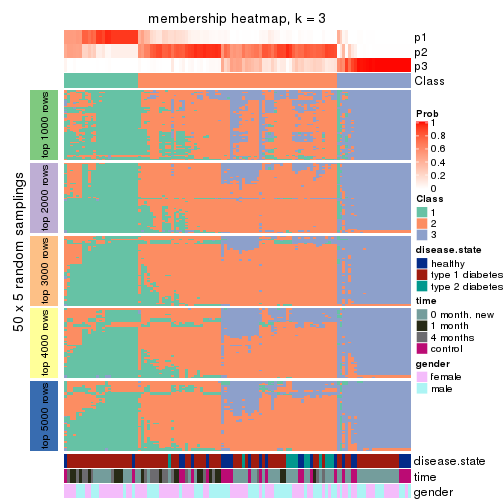
membership_heatmap(res, k = 4)
membership_heatmap(res, k = 5)
membership_heatmap(res, k = 6)
As soon as we have had the classes for columns, we can look for signatures which are significantly different between classes which can be candidate marks for certain classes. Following are the heatmaps for signatures.
Signature heatmaps where rows are scaled:
get_signatures(res, k = 2)
get_signatures(res, k = 3)
get_signatures(res, k = 4)
get_signatures(res, k = 5)
get_signatures(res, k = 6)
Signature heatmaps where rows are not scaled:
get_signatures(res, k = 2, scale_rows = FALSE)
get_signatures(res, k = 3, scale_rows = FALSE)
get_signatures(res, k = 4, scale_rows = FALSE)
get_signatures(res, k = 5, scale_rows = FALSE)
get_signatures(res, k = 6, scale_rows = FALSE)
Compare the overlap of signatures from different k:
compare_signatures(res)
get_signature() returns a data frame invisibly. TO get the list of signatures, the function
call should be assigned to a variable explicitly. In following code, if plot argument is set
to FALSE, no heatmap is plotted while only the differential analysis is performed.
# code only for demonstration
tb = get_signature(res, k = ..., plot = FALSE)
An example of the output of tb is:
#> which_row fdr mean_1 mean_2 scaled_mean_1 scaled_mean_2 km
#> 1 38 0.042760348 8.373488 9.131774 -0.5533452 0.5164555 1
#> 2 40 0.018707592 7.106213 8.469186 -0.6173731 0.5762149 1
#> 3 55 0.019134737 10.221463 11.207825 -0.6159697 0.5749050 1
#> 4 59 0.006059896 5.921854 7.869574 -0.6899429 0.6439467 1
#> 5 60 0.018055526 8.928898 10.211722 -0.6204761 0.5791110 1
#> 6 98 0.009384629 15.714769 14.887706 0.6635654 -0.6193277 2
...
The columns in tb are:
which_row: row indices corresponding to the input matrix.fdr: FDR for the differential test. mean_x: The mean value in group x.scaled_mean_x: The mean value in group x after rows are scaled.km: Row groups if k-means clustering is applied to rows.UMAP plot which shows how samples are separated.
dimension_reduction(res, k = 2, method = "UMAP")
dimension_reduction(res, k = 3, method = "UMAP")
dimension_reduction(res, k = 4, method = "UMAP")
dimension_reduction(res, k = 5, method = "UMAP")
dimension_reduction(res, k = 6, method = "UMAP")
Following heatmap shows how subgroups are split when increasing k:
collect_classes(res)
Test correlation between subgroups and known annotations. If the known annotation is numeric, one-way ANOVA test is applied, and if the known annotation is discrete, chi-squared contingency table test is applied.
test_to_known_factors(res)
#> n disease.state(p) time(p) gender(p) k
#> MAD:kmeans 106 0.001187 1.37e-06 0.2560 2
#> MAD:kmeans 98 0.006340 1.91e-02 0.2314 3
#> MAD:kmeans 90 0.005993 1.59e-03 0.0393 4
#> MAD:kmeans 79 0.000110 2.01e-04 0.1890 5
#> MAD:kmeans 79 0.000199 1.68e-04 0.1409 6
If matrix rows can be associated to genes, consider to use GO_Enrichment(res,
...) to perform function enrichment for the signature genes.
The object with results only for a single top-value method and a single partition method can be extracted as:
res = res_list["MAD", "skmeans"]
# you can also extract it by
# res = res_list["MAD:skmeans"]
A summary of res and all the functions that can be applied to it:
res
#> A 'ConsensusPartition' object with k = 2, 3, 4, 5, 6.
#> On a matrix with 21512 rows and 117 columns.
#> Top rows (1000, 2000, 3000, 4000, 5000) are extracted by 'MAD' method.
#> Subgroups are detected by 'skmeans' method.
#> Performed in total 1250 partitions by row resampling.
#> Best k for subgroups seems to be 2.
#>
#> Following methods can be applied to this 'ConsensusPartition' object:
#> [1] "cola_report" "collect_classes" "collect_plots"
#> [4] "collect_stats" "colnames" "compare_signatures"
#> [7] "consensus_heatmap" "dimension_reduction" "functional_enrichment"
#> [10] "get_anno_col" "get_anno" "get_classes"
#> [13] "get_consensus" "get_matrix" "get_membership"
#> [16] "get_param" "get_signatures" "get_stats"
#> [19] "is_best_k" "is_stable_k" "membership_heatmap"
#> [22] "ncol" "nrow" "plot_ecdf"
#> [25] "rownames" "select_partition_number" "show"
#> [28] "suggest_best_k" "test_to_known_factors"
collect_plots() function collects all the plots made from res for all k (number of partitions)
into one single page to provide an easy and fast comparison between different k.
collect_plots(res)
The plots are:
k and the heatmap of
predicted classes for each k.k.k.k.All the plots in panels can be made by individual functions and they are plotted later in this section.
select_partition_number() produces several plots showing different
statistics for choosing “optimized” k. There are following statistics:
k;k, the area increased is defined as \(A_k - A_{k-1}\).The detailed explanations of these statistics can be found in the cola vignette.
Generally speaking, lower PAC score, higher mean silhouette score or higher
concordance corresponds to better partition. Rand index and Jaccard index
measure how similar the current partition is compared to partition with k-1.
If they are too similar, we won't accept k is better than k-1.
select_partition_number(res)
The numeric values for all these statistics can be obtained by get_stats().
get_stats(res)
#> k 1-PAC mean_silhouette concordance area_increased Rand Jaccard
#> 2 2 0.358 0.709 0.861 0.5037 0.496 0.496
#> 3 3 0.163 0.410 0.659 0.3223 0.726 0.502
#> 4 4 0.178 0.237 0.555 0.1214 0.854 0.606
#> 5 5 0.221 0.186 0.482 0.0648 0.895 0.639
#> 6 6 0.294 0.184 0.454 0.0412 0.896 0.584
suggest_best_k() suggests the best \(k\) based on these statistics. The rules are as follows:
NA.suggest_best_k(res)
#> [1] 2
Following shows the table of the partitions (You need to click the show/hide
code output link to see it). The membership matrix (columns with name p*)
is inferred by
clue::cl_consensus()
function with the SE method. Basically the value in the membership matrix
represents the probability to belong to a certain group. The finall class
label for an item is determined with the group with highest probability it
belongs to.
In get_classes() function, the entropy is calculated from the membership
matrix and the silhouette score is calculated from the consensus matrix.
cbind(get_classes(res, k = 2), get_membership(res, k = 2))
#> class entropy silhouette p1 p2
#> GSM254177 2 0.0000 0.8402 0.000 1.000
#> GSM254179 2 0.6712 0.7635 0.176 0.824
#> GSM254180 2 0.7299 0.7395 0.204 0.796
#> GSM254182 1 0.9286 0.5141 0.656 0.344
#> GSM254183 2 0.7674 0.7179 0.224 0.776
#> GSM254277 2 0.7376 0.7363 0.208 0.792
#> GSM254278 2 0.0000 0.8402 0.000 1.000
#> GSM254281 1 0.7950 0.6958 0.760 0.240
#> GSM254282 2 0.2236 0.8392 0.036 0.964
#> GSM254284 1 0.8909 0.6004 0.692 0.308
#> GSM254286 2 0.9427 0.4550 0.360 0.640
#> GSM254290 1 0.9881 0.2931 0.564 0.436
#> GSM254291 2 0.1184 0.8408 0.016 0.984
#> GSM254293 1 1.0000 0.0452 0.504 0.496
#> GSM254178 1 0.0000 0.8304 1.000 0.000
#> GSM254181 2 0.1414 0.8411 0.020 0.980
#> GSM254279 2 0.0000 0.8402 0.000 1.000
#> GSM254280 2 0.0000 0.8402 0.000 1.000
#> GSM254283 2 0.8267 0.6672 0.260 0.740
#> GSM254285 2 0.0000 0.8402 0.000 1.000
#> GSM254287 2 0.3584 0.8298 0.068 0.932
#> GSM254288 2 0.8499 0.6456 0.276 0.724
#> GSM254289 2 0.5059 0.8104 0.112 0.888
#> GSM254292 1 0.8267 0.6683 0.740 0.260
#> GSM254184 2 0.8386 0.6580 0.268 0.732
#> GSM254185 2 0.0000 0.8402 0.000 1.000
#> GSM254187 2 0.0000 0.8402 0.000 1.000
#> GSM254189 2 0.1843 0.8393 0.028 0.972
#> GSM254190 1 0.2948 0.8254 0.948 0.052
#> GSM254191 2 0.9522 0.4637 0.372 0.628
#> GSM254192 2 0.1633 0.8395 0.024 0.976
#> GSM254193 1 0.5294 0.7935 0.880 0.120
#> GSM254199 1 0.6887 0.7481 0.816 0.184
#> GSM254203 1 0.0000 0.8304 1.000 0.000
#> GSM254206 1 0.1184 0.8306 0.984 0.016
#> GSM254210 1 0.9732 0.3709 0.596 0.404
#> GSM254211 1 0.0000 0.8304 1.000 0.000
#> GSM254215 2 0.0000 0.8402 0.000 1.000
#> GSM254218 2 0.0000 0.8402 0.000 1.000
#> GSM254230 1 0.0000 0.8304 1.000 0.000
#> GSM254236 2 0.0000 0.8402 0.000 1.000
#> GSM254244 1 0.0000 0.8304 1.000 0.000
#> GSM254247 1 0.9795 0.3288 0.584 0.416
#> GSM254248 2 0.9248 0.5325 0.340 0.660
#> GSM254254 2 0.0000 0.8402 0.000 1.000
#> GSM254257 2 0.0376 0.8404 0.004 0.996
#> GSM254258 2 0.0000 0.8402 0.000 1.000
#> GSM254261 2 0.0000 0.8402 0.000 1.000
#> GSM254264 2 0.0000 0.8402 0.000 1.000
#> GSM254186 2 0.0000 0.8402 0.000 1.000
#> GSM254188 2 0.0000 0.8402 0.000 1.000
#> GSM254194 2 0.3879 0.8244 0.076 0.924
#> GSM254195 1 0.3274 0.8241 0.940 0.060
#> GSM254196 1 1.0000 0.0372 0.504 0.496
#> GSM254200 2 0.0000 0.8402 0.000 1.000
#> GSM254209 2 0.0938 0.8404 0.012 0.988
#> GSM254214 2 0.3733 0.8297 0.072 0.928
#> GSM254221 1 0.4815 0.8084 0.896 0.104
#> GSM254224 1 0.8267 0.6680 0.740 0.260
#> GSM254227 2 0.9998 0.0231 0.492 0.508
#> GSM254233 2 0.9732 0.3413 0.404 0.596
#> GSM254235 1 0.0000 0.8304 1.000 0.000
#> GSM254239 1 0.9933 0.2187 0.548 0.452
#> GSM254241 1 0.0000 0.8304 1.000 0.000
#> GSM254251 2 0.0000 0.8402 0.000 1.000
#> GSM254262 2 0.2603 0.8363 0.044 0.956
#> GSM254263 2 0.0000 0.8402 0.000 1.000
#> GSM254197 1 0.0000 0.8304 1.000 0.000
#> GSM254201 1 0.2948 0.8262 0.948 0.052
#> GSM254204 1 0.3733 0.8212 0.928 0.072
#> GSM254216 1 0.0000 0.8304 1.000 0.000
#> GSM254228 1 0.0000 0.8304 1.000 0.000
#> GSM254242 1 0.0000 0.8304 1.000 0.000
#> GSM254245 1 0.0000 0.8304 1.000 0.000
#> GSM254252 1 0.1843 0.8306 0.972 0.028
#> GSM254255 1 0.4161 0.8165 0.916 0.084
#> GSM254259 1 0.0000 0.8304 1.000 0.000
#> GSM254207 2 0.7528 0.7196 0.216 0.784
#> GSM254212 2 0.9881 0.2382 0.436 0.564
#> GSM254219 1 0.0000 0.8304 1.000 0.000
#> GSM254222 1 0.9552 0.4632 0.624 0.376
#> GSM254225 2 0.9881 0.2519 0.436 0.564
#> GSM254231 1 0.8909 0.6028 0.692 0.308
#> GSM254234 1 0.9775 0.3633 0.588 0.412
#> GSM254237 1 0.9491 0.4842 0.632 0.368
#> GSM254249 1 0.6887 0.7567 0.816 0.184
#> GSM254198 1 0.3114 0.8257 0.944 0.056
#> GSM254202 1 0.9775 0.3734 0.588 0.412
#> GSM254205 1 0.2423 0.8292 0.960 0.040
#> GSM254217 1 0.0376 0.8306 0.996 0.004
#> GSM254229 1 0.6343 0.7700 0.840 0.160
#> GSM254243 1 0.0000 0.8304 1.000 0.000
#> GSM254246 1 0.0000 0.8304 1.000 0.000
#> GSM254253 1 0.0376 0.8301 0.996 0.004
#> GSM254256 2 0.9552 0.4405 0.376 0.624
#> GSM254260 1 0.0376 0.8304 0.996 0.004
#> GSM254208 1 0.6148 0.7777 0.848 0.152
#> GSM254213 2 0.1414 0.8408 0.020 0.980
#> GSM254220 1 0.0000 0.8304 1.000 0.000
#> GSM254223 1 0.3114 0.8251 0.944 0.056
#> GSM254226 2 0.5946 0.7846 0.144 0.856
#> GSM254232 1 0.8386 0.6609 0.732 0.268
#> GSM254238 1 0.4298 0.8149 0.912 0.088
#> GSM254240 1 0.0000 0.8304 1.000 0.000
#> GSM254250 1 0.0000 0.8304 1.000 0.000
#> GSM254268 2 0.2603 0.8371 0.044 0.956
#> GSM254269 2 0.9754 0.3535 0.408 0.592
#> GSM254270 1 0.1414 0.8309 0.980 0.020
#> GSM254272 2 0.8661 0.6272 0.288 0.712
#> GSM254273 2 0.3879 0.8256 0.076 0.924
#> GSM254274 2 0.6712 0.7641 0.176 0.824
#> GSM254265 2 0.9087 0.5573 0.324 0.676
#> GSM254266 1 0.8661 0.6324 0.712 0.288
#> GSM254267 2 0.9881 0.2452 0.436 0.564
#> GSM254271 2 0.1633 0.8399 0.024 0.976
#> GSM254275 1 0.9732 0.3768 0.596 0.404
#> GSM254276 2 0.8144 0.6759 0.252 0.748
cbind(get_classes(res, k = 3), get_membership(res, k = 3))
#> class entropy silhouette p1 p2 p3
#> GSM254177 3 0.4164 0.63237 0.008 0.144 0.848
#> GSM254179 3 0.9612 -0.22046 0.216 0.332 0.452
#> GSM254180 2 0.9188 0.36552 0.152 0.468 0.380
#> GSM254182 1 0.9502 -0.00276 0.492 0.236 0.272
#> GSM254183 3 0.9236 0.06309 0.220 0.248 0.532
#> GSM254277 3 0.9514 -0.20348 0.192 0.364 0.444
#> GSM254278 3 0.0892 0.66015 0.000 0.020 0.980
#> GSM254281 1 0.9746 -0.20982 0.408 0.364 0.228
#> GSM254282 3 0.7885 0.27944 0.072 0.336 0.592
#> GSM254284 1 0.9105 -0.03359 0.448 0.412 0.140
#> GSM254286 3 0.9704 -0.23356 0.264 0.280 0.456
#> GSM254290 2 0.9334 0.42463 0.292 0.508 0.200
#> GSM254291 3 0.6208 0.56963 0.052 0.192 0.756
#> GSM254293 2 0.9939 0.44487 0.312 0.388 0.300
#> GSM254178 1 0.1964 0.65524 0.944 0.056 0.000
#> GSM254181 3 0.7366 0.27568 0.036 0.400 0.564
#> GSM254279 3 0.1643 0.66102 0.000 0.044 0.956
#> GSM254280 3 0.2448 0.65823 0.000 0.076 0.924
#> GSM254283 2 0.8158 0.52036 0.136 0.636 0.228
#> GSM254285 3 0.3193 0.64815 0.004 0.100 0.896
#> GSM254287 3 0.8085 0.14051 0.068 0.412 0.520
#> GSM254288 2 0.9142 0.42886 0.164 0.512 0.324
#> GSM254289 3 0.9266 -0.23227 0.156 0.420 0.424
#> GSM254292 2 0.9880 0.31643 0.356 0.384 0.260
#> GSM254184 3 0.7485 0.35988 0.224 0.096 0.680
#> GSM254185 3 0.0592 0.65937 0.000 0.012 0.988
#> GSM254187 3 0.0237 0.65860 0.000 0.004 0.996
#> GSM254189 3 0.2297 0.65592 0.036 0.020 0.944
#> GSM254190 1 0.6977 0.46079 0.712 0.076 0.212
#> GSM254191 3 0.8143 0.02261 0.360 0.080 0.560
#> GSM254192 3 0.3031 0.65636 0.012 0.076 0.912
#> GSM254193 1 0.6158 0.49679 0.760 0.052 0.188
#> GSM254199 1 0.8957 0.22046 0.564 0.244 0.192
#> GSM254203 1 0.1529 0.64930 0.960 0.040 0.000
#> GSM254206 1 0.4821 0.65240 0.840 0.120 0.040
#> GSM254210 2 0.9737 0.27760 0.384 0.392 0.224
#> GSM254211 1 0.4446 0.65604 0.856 0.112 0.032
#> GSM254215 3 0.0592 0.65926 0.000 0.012 0.988
#> GSM254218 3 0.6143 0.46959 0.012 0.304 0.684
#> GSM254230 1 0.2625 0.65903 0.916 0.084 0.000
#> GSM254236 3 0.0892 0.66002 0.000 0.020 0.980
#> GSM254244 1 0.5285 0.63204 0.752 0.244 0.004
#> GSM254247 2 0.9575 0.38910 0.320 0.464 0.216
#> GSM254248 2 0.9745 0.42425 0.232 0.420 0.348
#> GSM254254 3 0.5397 0.53483 0.000 0.280 0.720
#> GSM254257 3 0.6326 0.49394 0.020 0.292 0.688
#> GSM254258 3 0.0424 0.65900 0.000 0.008 0.992
#> GSM254261 3 0.6744 0.46586 0.032 0.300 0.668
#> GSM254264 3 0.0237 0.65892 0.000 0.004 0.996
#> GSM254186 3 0.1031 0.66081 0.000 0.024 0.976
#> GSM254188 3 0.0747 0.66040 0.000 0.016 0.984
#> GSM254194 3 0.6324 0.54551 0.076 0.160 0.764
#> GSM254195 1 0.6599 0.53040 0.748 0.084 0.168
#> GSM254196 3 0.9273 -0.22123 0.364 0.164 0.472
#> GSM254200 3 0.0747 0.66096 0.000 0.016 0.984
#> GSM254209 3 0.7471 0.13651 0.036 0.448 0.516
#> GSM254214 2 0.8220 0.22644 0.076 0.516 0.408
#> GSM254221 1 0.9378 0.15282 0.480 0.336 0.184
#> GSM254224 2 0.8967 0.17397 0.380 0.488 0.132
#> GSM254227 1 0.9849 -0.35513 0.408 0.260 0.332
#> GSM254233 2 0.9641 0.41430 0.212 0.432 0.356
#> GSM254235 1 0.1643 0.65294 0.956 0.044 0.000
#> GSM254239 2 0.9145 0.48159 0.284 0.532 0.184
#> GSM254241 1 0.4887 0.63859 0.772 0.228 0.000
#> GSM254251 3 0.4555 0.59545 0.000 0.200 0.800
#> GSM254262 3 0.3780 0.64869 0.044 0.064 0.892
#> GSM254263 3 0.2165 0.65699 0.000 0.064 0.936
#> GSM254197 1 0.1643 0.65051 0.956 0.044 0.000
#> GSM254201 1 0.7101 0.59971 0.704 0.216 0.080
#> GSM254204 1 0.7724 0.36823 0.552 0.396 0.052
#> GSM254216 1 0.4842 0.65059 0.776 0.224 0.000
#> GSM254228 1 0.1031 0.64670 0.976 0.024 0.000
#> GSM254242 1 0.3752 0.65996 0.856 0.144 0.000
#> GSM254245 1 0.5864 0.60671 0.704 0.288 0.008
#> GSM254252 1 0.6448 0.55082 0.636 0.352 0.012
#> GSM254255 1 0.7658 0.43997 0.588 0.356 0.056
#> GSM254259 1 0.1163 0.64825 0.972 0.028 0.000
#> GSM254207 3 0.9015 0.01151 0.144 0.348 0.508
#> GSM254212 2 0.8760 0.53782 0.176 0.584 0.240
#> GSM254219 1 0.5138 0.63866 0.748 0.252 0.000
#> GSM254222 2 0.9707 0.38487 0.352 0.424 0.224
#> GSM254225 2 0.9887 0.44512 0.336 0.396 0.268
#> GSM254231 2 0.9476 0.21135 0.380 0.436 0.184
#> GSM254234 2 0.9606 0.39269 0.340 0.448 0.212
#> GSM254237 2 0.8661 0.31086 0.348 0.536 0.116
#> GSM254249 1 0.9305 0.05455 0.456 0.380 0.164
#> GSM254198 1 0.7442 0.51617 0.628 0.316 0.056
#> GSM254202 2 0.9999 0.36414 0.328 0.340 0.332
#> GSM254205 1 0.8097 0.36896 0.540 0.388 0.072
#> GSM254217 1 0.6540 0.41479 0.584 0.408 0.008
#> GSM254229 2 0.8376 0.01697 0.420 0.496 0.084
#> GSM254243 1 0.3686 0.66286 0.860 0.140 0.000
#> GSM254246 1 0.1031 0.64673 0.976 0.024 0.000
#> GSM254253 1 0.6168 0.62313 0.740 0.224 0.036
#> GSM254256 2 0.9710 0.38660 0.220 0.408 0.372
#> GSM254260 1 0.6730 0.58356 0.680 0.284 0.036
#> GSM254208 1 0.8963 0.06106 0.468 0.404 0.128
#> GSM254213 2 0.7581 0.00683 0.040 0.496 0.464
#> GSM254220 1 0.4887 0.64711 0.772 0.228 0.000
#> GSM254223 1 0.6565 0.43807 0.576 0.416 0.008
#> GSM254226 3 0.8102 0.17719 0.076 0.368 0.556
#> GSM254232 2 0.8895 0.20236 0.392 0.484 0.124
#> GSM254238 1 0.7424 0.41326 0.572 0.388 0.040
#> GSM254240 1 0.3619 0.65698 0.864 0.136 0.000
#> GSM254250 1 0.5158 0.64194 0.764 0.232 0.004
#> GSM254268 2 0.8637 0.12438 0.100 0.456 0.444
#> GSM254269 2 0.9536 0.53290 0.232 0.484 0.284
#> GSM254270 1 0.7291 0.47182 0.604 0.356 0.040
#> GSM254272 2 0.9190 0.49149 0.184 0.524 0.292
#> GSM254273 3 0.8275 -0.11421 0.076 0.452 0.472
#> GSM254274 2 0.8984 0.44782 0.148 0.524 0.328
#> GSM254265 2 0.9579 0.45787 0.208 0.452 0.340
#> GSM254266 2 0.7770 0.33976 0.292 0.628 0.080
#> GSM254267 2 0.9027 0.49578 0.160 0.532 0.308
#> GSM254271 2 0.7534 0.09000 0.040 0.532 0.428
#> GSM254275 2 0.8599 0.43926 0.276 0.584 0.140
#> GSM254276 2 0.7781 0.51296 0.116 0.664 0.220
cbind(get_classes(res, k = 4), get_membership(res, k = 4))
#> class entropy silhouette p1 p2 p3 p4
#> GSM254177 3 0.5909 0.54239 0.004 0.172 0.708 0.116
#> GSM254179 3 0.8953 -0.11781 0.064 0.304 0.404 0.228
#> GSM254180 2 0.9220 0.20822 0.096 0.388 0.200 0.316
#> GSM254182 1 0.9825 -0.29865 0.324 0.172 0.264 0.240
#> GSM254183 3 0.8997 0.12247 0.124 0.260 0.468 0.148
#> GSM254277 3 0.9385 -0.29404 0.092 0.276 0.340 0.292
#> GSM254278 3 0.2256 0.62897 0.000 0.056 0.924 0.020
#> GSM254281 4 0.9492 0.20475 0.276 0.200 0.136 0.388
#> GSM254282 3 0.8672 -0.02957 0.056 0.320 0.436 0.188
#> GSM254284 4 0.9148 0.14940 0.256 0.304 0.072 0.368
#> GSM254286 3 0.9684 -0.19311 0.200 0.204 0.384 0.212
#> GSM254290 4 0.9610 0.02868 0.188 0.296 0.156 0.360
#> GSM254291 3 0.7144 0.49102 0.044 0.180 0.648 0.128
#> GSM254293 4 0.9660 -0.10059 0.144 0.236 0.264 0.356
#> GSM254178 1 0.3707 0.48579 0.840 0.028 0.000 0.132
#> GSM254181 3 0.8101 0.08052 0.024 0.340 0.456 0.180
#> GSM254279 3 0.3286 0.62634 0.000 0.080 0.876 0.044
#> GSM254280 3 0.4336 0.60827 0.008 0.100 0.828 0.064
#> GSM254283 2 0.8746 0.23731 0.092 0.472 0.144 0.292
#> GSM254285 3 0.4927 0.60009 0.016 0.100 0.800 0.084
#> GSM254287 3 0.8648 -0.06613 0.076 0.364 0.424 0.136
#> GSM254288 2 0.9334 0.22023 0.176 0.448 0.188 0.188
#> GSM254289 2 0.9165 0.31322 0.132 0.448 0.260 0.160
#> GSM254292 4 0.9657 0.13220 0.240 0.168 0.212 0.380
#> GSM254184 3 0.7765 0.32103 0.212 0.112 0.600 0.076
#> GSM254185 3 0.1284 0.62786 0.000 0.024 0.964 0.012
#> GSM254187 3 0.1913 0.62859 0.000 0.040 0.940 0.020
#> GSM254189 3 0.3858 0.61527 0.048 0.044 0.868 0.040
#> GSM254190 1 0.6758 0.25805 0.668 0.032 0.192 0.108
#> GSM254191 1 0.8234 -0.17992 0.416 0.116 0.412 0.056
#> GSM254192 3 0.5915 0.57495 0.052 0.116 0.752 0.080
#> GSM254193 1 0.6977 0.29476 0.672 0.052 0.144 0.132
#> GSM254199 1 0.8604 0.11863 0.520 0.196 0.088 0.196
#> GSM254203 1 0.1722 0.48022 0.944 0.008 0.000 0.048
#> GSM254206 1 0.5782 0.41226 0.704 0.068 0.008 0.220
#> GSM254210 4 0.9738 0.11088 0.276 0.264 0.144 0.316
#> GSM254211 1 0.5601 0.45419 0.752 0.068 0.024 0.156
#> GSM254215 3 0.1767 0.62904 0.000 0.044 0.944 0.012
#> GSM254218 3 0.8097 0.20068 0.040 0.304 0.504 0.152
#> GSM254230 1 0.4410 0.47813 0.808 0.064 0.000 0.128
#> GSM254236 3 0.1209 0.62688 0.000 0.032 0.964 0.004
#> GSM254244 1 0.5881 0.43059 0.716 0.064 0.020 0.200
#> GSM254247 4 0.9106 0.14454 0.180 0.280 0.104 0.436
#> GSM254248 2 0.9719 0.10145 0.200 0.376 0.208 0.216
#> GSM254254 3 0.6326 0.40119 0.004 0.328 0.600 0.068
#> GSM254257 3 0.8050 0.18321 0.044 0.336 0.492 0.128
#> GSM254258 3 0.1520 0.62993 0.000 0.024 0.956 0.020
#> GSM254261 3 0.7755 0.22069 0.020 0.324 0.504 0.152
#> GSM254264 3 0.0779 0.62475 0.000 0.016 0.980 0.004
#> GSM254186 3 0.2021 0.62867 0.000 0.056 0.932 0.012
#> GSM254188 3 0.1854 0.62818 0.000 0.048 0.940 0.012
#> GSM254194 3 0.6567 0.51518 0.048 0.128 0.704 0.120
#> GSM254195 1 0.7446 0.25215 0.628 0.060 0.120 0.192
#> GSM254196 3 0.9478 -0.20674 0.288 0.120 0.372 0.220
#> GSM254200 3 0.1824 0.62729 0.000 0.060 0.936 0.004
#> GSM254209 2 0.8266 0.17575 0.036 0.436 0.364 0.164
#> GSM254214 2 0.8756 0.30187 0.080 0.488 0.224 0.208
#> GSM254221 4 0.8441 0.14913 0.396 0.092 0.092 0.420
#> GSM254224 4 0.9292 0.23130 0.268 0.292 0.084 0.356
#> GSM254227 2 0.9919 0.06012 0.280 0.288 0.236 0.196
#> GSM254233 3 0.9533 -0.22285 0.128 0.220 0.368 0.284
#> GSM254235 1 0.3694 0.48072 0.844 0.032 0.000 0.124
#> GSM254239 2 0.9189 0.08289 0.252 0.428 0.100 0.220
#> GSM254241 1 0.6308 0.39103 0.648 0.120 0.000 0.232
#> GSM254251 3 0.5537 0.50943 0.000 0.256 0.688 0.056
#> GSM254262 3 0.4450 0.61272 0.032 0.108 0.828 0.032
#> GSM254263 3 0.2714 0.61996 0.000 0.112 0.884 0.004
#> GSM254197 1 0.2578 0.48183 0.912 0.036 0.000 0.052
#> GSM254201 4 0.8231 0.03572 0.412 0.104 0.064 0.420
#> GSM254204 1 0.8345 -0.02550 0.416 0.204 0.028 0.352
#> GSM254216 1 0.6833 0.31973 0.588 0.120 0.004 0.288
#> GSM254228 1 0.2596 0.48533 0.908 0.024 0.000 0.068
#> GSM254242 1 0.5897 0.34657 0.588 0.044 0.000 0.368
#> GSM254245 1 0.7595 0.11006 0.476 0.160 0.008 0.356
#> GSM254252 1 0.8014 0.04909 0.452 0.196 0.016 0.336
#> GSM254255 4 0.8459 0.14405 0.352 0.212 0.032 0.404
#> GSM254259 1 0.2775 0.48609 0.896 0.020 0.000 0.084
#> GSM254207 3 0.9392 -0.26416 0.096 0.280 0.356 0.268
#> GSM254212 2 0.8184 0.19065 0.088 0.528 0.096 0.288
#> GSM254219 4 0.6707 -0.16862 0.444 0.088 0.000 0.468
#> GSM254222 2 0.9647 0.06009 0.192 0.332 0.156 0.320
#> GSM254225 2 0.9820 0.07079 0.256 0.328 0.172 0.244
#> GSM254231 2 0.9624 -0.04875 0.208 0.348 0.144 0.300
#> GSM254234 2 0.9543 0.01493 0.204 0.368 0.136 0.292
#> GSM254237 2 0.9311 0.00796 0.236 0.384 0.096 0.284
#> GSM254249 4 0.9565 0.24961 0.316 0.196 0.140 0.348
#> GSM254198 1 0.8823 -0.12155 0.384 0.208 0.056 0.352
#> GSM254202 4 0.9487 0.11560 0.252 0.120 0.248 0.380
#> GSM254205 4 0.8805 0.22452 0.312 0.216 0.056 0.416
#> GSM254217 1 0.7869 0.03686 0.448 0.264 0.004 0.284
#> GSM254229 2 0.8465 -0.06636 0.196 0.400 0.036 0.368
#> GSM254243 1 0.5657 0.40308 0.644 0.044 0.000 0.312
#> GSM254246 1 0.1767 0.48176 0.944 0.012 0.000 0.044
#> GSM254253 1 0.7645 0.27323 0.552 0.140 0.028 0.280
#> GSM254256 2 0.9825 0.21091 0.172 0.324 0.264 0.240
#> GSM254260 1 0.7797 0.12201 0.480 0.148 0.020 0.352
#> GSM254208 1 0.9076 -0.13078 0.400 0.248 0.072 0.280
#> GSM254213 2 0.7948 0.25312 0.020 0.472 0.336 0.172
#> GSM254220 1 0.6936 0.15490 0.496 0.076 0.012 0.416
#> GSM254223 1 0.8301 -0.08705 0.400 0.276 0.016 0.308
#> GSM254226 2 0.8811 0.25484 0.064 0.400 0.352 0.184
#> GSM254232 2 0.9244 -0.18510 0.292 0.340 0.076 0.292
#> GSM254238 1 0.8370 0.08129 0.468 0.188 0.040 0.304
#> GSM254240 1 0.5486 0.44306 0.720 0.080 0.000 0.200
#> GSM254250 1 0.6438 0.39311 0.656 0.132 0.004 0.208
#> GSM254268 2 0.8352 0.34726 0.068 0.500 0.300 0.132
#> GSM254269 2 0.8987 0.28677 0.080 0.440 0.216 0.264
#> GSM254270 1 0.8539 -0.07538 0.388 0.232 0.032 0.348
#> GSM254272 2 0.9174 0.26121 0.124 0.452 0.184 0.240
#> GSM254273 2 0.8372 0.33390 0.044 0.480 0.292 0.184
#> GSM254274 2 0.9064 0.27668 0.100 0.456 0.224 0.220
#> GSM254265 2 0.9544 0.25013 0.124 0.360 0.284 0.232
#> GSM254266 4 0.8565 0.02096 0.152 0.368 0.060 0.420
#> GSM254267 2 0.9261 0.17938 0.136 0.388 0.144 0.332
#> GSM254271 2 0.7441 0.36009 0.020 0.568 0.268 0.144
#> GSM254275 2 0.9232 0.02583 0.256 0.396 0.088 0.260
#> GSM254276 2 0.8874 0.26582 0.092 0.456 0.160 0.292
cbind(get_classes(res, k = 5), get_membership(res, k = 5))
#> class entropy silhouette p1 p2 p3 p4 p5
#> GSM254177 3 0.673 0.44861 0.000 0.164 0.592 0.056 0.188
#> GSM254179 3 0.913 -0.09071 0.068 0.192 0.360 0.116 0.264
#> GSM254180 5 0.912 0.10483 0.068 0.264 0.144 0.152 0.372
#> GSM254182 4 0.949 -0.05099 0.264 0.080 0.140 0.264 0.252
#> GSM254183 3 0.914 -0.04414 0.096 0.244 0.396 0.128 0.136
#> GSM254277 5 0.913 0.20853 0.092 0.156 0.196 0.140 0.416
#> GSM254278 3 0.322 0.61319 0.000 0.032 0.860 0.012 0.096
#> GSM254281 5 0.923 0.14681 0.208 0.084 0.124 0.204 0.380
#> GSM254282 3 0.873 -0.13227 0.040 0.252 0.368 0.088 0.252
#> GSM254284 2 0.958 -0.05140 0.216 0.276 0.080 0.252 0.176
#> GSM254286 5 0.961 0.15758 0.212 0.112 0.264 0.128 0.284
#> GSM254290 5 0.928 0.12614 0.092 0.172 0.112 0.308 0.316
#> GSM254291 3 0.727 0.36599 0.028 0.112 0.560 0.052 0.248
#> GSM254293 5 0.929 0.23256 0.132 0.096 0.208 0.180 0.384
#> GSM254178 1 0.407 0.43040 0.816 0.028 0.000 0.104 0.052
#> GSM254181 3 0.845 -0.02418 0.028 0.308 0.396 0.100 0.168
#> GSM254279 3 0.398 0.60421 0.000 0.068 0.824 0.024 0.084
#> GSM254280 3 0.457 0.59819 0.012 0.064 0.804 0.040 0.080
#> GSM254283 2 0.823 0.12996 0.060 0.512 0.124 0.204 0.100
#> GSM254285 3 0.591 0.54919 0.028 0.068 0.704 0.040 0.160
#> GSM254287 2 0.909 0.06703 0.080 0.348 0.308 0.112 0.152
#> GSM254288 2 0.970 0.03173 0.160 0.304 0.140 0.152 0.244
#> GSM254289 2 0.851 0.11999 0.080 0.480 0.224 0.108 0.108
#> GSM254292 5 0.950 0.14275 0.168 0.108 0.136 0.272 0.316
#> GSM254184 3 0.847 0.09855 0.244 0.108 0.468 0.060 0.120
#> GSM254185 3 0.223 0.61733 0.000 0.028 0.920 0.012 0.040
#> GSM254187 3 0.226 0.61874 0.000 0.028 0.908 0.000 0.064
#> GSM254189 3 0.461 0.59481 0.056 0.060 0.808 0.020 0.056
#> GSM254190 1 0.686 0.30403 0.644 0.028 0.136 0.088 0.104
#> GSM254191 1 0.878 -0.15001 0.376 0.096 0.332 0.088 0.108
#> GSM254192 3 0.628 0.53825 0.044 0.100 0.692 0.040 0.124
#> GSM254193 1 0.678 0.33466 0.668 0.076 0.080 0.068 0.108
#> GSM254199 1 0.861 0.14597 0.480 0.104 0.100 0.108 0.208
#> GSM254203 1 0.285 0.43445 0.884 0.012 0.000 0.076 0.028
#> GSM254206 1 0.780 0.16790 0.504 0.076 0.032 0.272 0.116
#> GSM254210 5 0.986 0.07216 0.232 0.184 0.128 0.212 0.244
#> GSM254211 1 0.653 0.37315 0.668 0.068 0.024 0.120 0.120
#> GSM254215 3 0.215 0.61502 0.000 0.032 0.920 0.004 0.044
#> GSM254218 3 0.790 0.25128 0.020 0.180 0.492 0.076 0.232
#> GSM254230 1 0.483 0.41216 0.764 0.040 0.000 0.132 0.064
#> GSM254236 3 0.204 0.61821 0.000 0.056 0.920 0.000 0.024
#> GSM254244 1 0.708 0.30865 0.596 0.064 0.016 0.172 0.152
#> GSM254247 5 0.914 0.09538 0.112 0.136 0.096 0.308 0.348
#> GSM254248 5 0.955 0.10958 0.124 0.232 0.188 0.124 0.332
#> GSM254254 3 0.694 0.31268 0.004 0.300 0.516 0.032 0.148
#> GSM254257 3 0.815 0.06646 0.016 0.336 0.404 0.112 0.132
#> GSM254258 3 0.274 0.61979 0.004 0.044 0.900 0.016 0.036
#> GSM254261 3 0.784 0.14445 0.008 0.264 0.440 0.064 0.224
#> GSM254264 3 0.177 0.61670 0.000 0.008 0.936 0.008 0.048
#> GSM254186 3 0.130 0.61552 0.000 0.020 0.960 0.008 0.012
#> GSM254188 3 0.248 0.62037 0.000 0.064 0.904 0.020 0.012
#> GSM254194 3 0.718 0.45095 0.052 0.092 0.620 0.072 0.164
#> GSM254195 1 0.808 0.17720 0.508 0.036 0.088 0.176 0.192
#> GSM254196 3 0.947 -0.30829 0.268 0.084 0.304 0.144 0.200
#> GSM254200 3 0.241 0.61924 0.000 0.060 0.908 0.012 0.020
#> GSM254209 2 0.822 0.05747 0.024 0.380 0.364 0.104 0.128
#> GSM254214 2 0.906 0.05045 0.076 0.384 0.184 0.104 0.252
#> GSM254221 4 0.900 0.10271 0.192 0.068 0.124 0.412 0.204
#> GSM254224 4 0.901 0.25044 0.232 0.204 0.036 0.360 0.168
#> GSM254227 1 0.982 -0.17058 0.284 0.204 0.156 0.208 0.148
#> GSM254233 3 0.940 -0.28829 0.064 0.180 0.296 0.272 0.188
#> GSM254235 1 0.448 0.39843 0.764 0.032 0.000 0.176 0.028
#> GSM254239 2 0.951 0.02283 0.184 0.316 0.080 0.184 0.236
#> GSM254241 1 0.722 0.19470 0.528 0.120 0.008 0.280 0.064
#> GSM254251 3 0.641 0.41284 0.008 0.288 0.584 0.028 0.092
#> GSM254262 3 0.489 0.59480 0.040 0.104 0.784 0.020 0.052
#> GSM254263 3 0.369 0.59475 0.000 0.144 0.816 0.008 0.032
#> GSM254197 1 0.322 0.43319 0.868 0.024 0.000 0.076 0.032
#> GSM254201 4 0.861 0.14362 0.320 0.088 0.048 0.384 0.160
#> GSM254204 4 0.882 0.20874 0.232 0.152 0.028 0.380 0.208
#> GSM254216 1 0.773 0.07267 0.444 0.132 0.004 0.320 0.100
#> GSM254228 1 0.363 0.43174 0.840 0.040 0.000 0.100 0.020
#> GSM254242 1 0.697 0.12613 0.492 0.060 0.004 0.356 0.088
#> GSM254245 1 0.781 -0.04615 0.400 0.096 0.004 0.360 0.140
#> GSM254252 4 0.857 0.19367 0.308 0.132 0.020 0.368 0.172
#> GSM254255 4 0.891 0.21632 0.224 0.216 0.032 0.372 0.156
#> GSM254259 1 0.298 0.43159 0.876 0.016 0.000 0.084 0.024
#> GSM254207 3 0.942 -0.26598 0.068 0.236 0.320 0.188 0.188
#> GSM254212 2 0.888 0.06121 0.108 0.412 0.060 0.208 0.212
#> GSM254219 4 0.669 0.09623 0.360 0.060 0.004 0.512 0.064
#> GSM254222 2 0.905 0.11794 0.176 0.392 0.132 0.236 0.064
#> GSM254225 2 0.966 0.02853 0.232 0.292 0.108 0.220 0.148
#> GSM254231 2 0.906 0.01135 0.136 0.344 0.088 0.324 0.108
#> GSM254234 2 0.935 -0.00261 0.152 0.308 0.076 0.296 0.168
#> GSM254237 2 0.929 -0.00964 0.216 0.300 0.044 0.220 0.220
#> GSM254249 4 0.903 0.19357 0.188 0.184 0.064 0.412 0.152
#> GSM254198 1 0.903 -0.12557 0.352 0.140 0.048 0.280 0.180
#> GSM254202 4 0.958 -0.15974 0.168 0.084 0.260 0.276 0.212
#> GSM254205 4 0.813 0.27553 0.188 0.136 0.016 0.484 0.176
#> GSM254217 1 0.869 -0.01891 0.364 0.184 0.012 0.208 0.232
#> GSM254229 4 0.820 0.13349 0.156 0.304 0.012 0.412 0.116
#> GSM254243 1 0.668 0.23364 0.556 0.064 0.000 0.292 0.088
#> GSM254246 1 0.305 0.43054 0.868 0.012 0.000 0.096 0.024
#> GSM254253 1 0.810 0.01975 0.428 0.132 0.020 0.320 0.100
#> GSM254256 2 0.984 0.01263 0.136 0.260 0.220 0.224 0.160
#> GSM254260 4 0.854 0.24079 0.280 0.124 0.040 0.424 0.132
#> GSM254208 1 0.898 -0.21012 0.304 0.272 0.064 0.284 0.076
#> GSM254213 2 0.742 0.13827 0.020 0.528 0.280 0.092 0.080
#> GSM254220 4 0.734 0.09120 0.372 0.056 0.012 0.452 0.108
#> GSM254223 4 0.840 0.22238 0.244 0.280 0.012 0.364 0.100
#> GSM254226 2 0.896 0.09488 0.040 0.340 0.284 0.208 0.128
#> GSM254232 2 0.886 -0.12544 0.196 0.332 0.032 0.308 0.132
#> GSM254238 1 0.899 -0.15868 0.300 0.144 0.032 0.300 0.224
#> GSM254240 1 0.630 0.29661 0.628 0.068 0.004 0.236 0.064
#> GSM254250 1 0.675 0.21405 0.528 0.100 0.000 0.320 0.052
#> GSM254268 2 0.913 0.04966 0.048 0.344 0.248 0.144 0.216
#> GSM254269 2 0.960 -0.00524 0.128 0.332 0.148 0.164 0.228
#> GSM254270 1 0.860 -0.11308 0.332 0.132 0.012 0.232 0.292
#> GSM254272 5 0.923 0.04163 0.076 0.308 0.148 0.144 0.324
#> GSM254273 5 0.924 0.05851 0.076 0.288 0.236 0.100 0.300
#> GSM254274 2 0.910 -0.03133 0.044 0.332 0.232 0.140 0.252
#> GSM254265 5 0.949 0.13433 0.104 0.176 0.196 0.168 0.356
#> GSM254266 4 0.919 -0.00199 0.144 0.288 0.048 0.296 0.224
#> GSM254267 2 0.949 -0.03535 0.084 0.292 0.140 0.220 0.264
#> GSM254271 2 0.769 0.13670 0.020 0.548 0.180 0.120 0.132
#> GSM254275 2 0.915 0.02909 0.228 0.376 0.064 0.140 0.192
#> GSM254276 2 0.900 0.10381 0.072 0.412 0.116 0.204 0.196
cbind(get_classes(res, k = 6), get_membership(res, k = 6))
#> class entropy silhouette p1 p2 p3 p4 p5 p6
#> GSM254177 3 0.743 3.44e-01 0.024 0.072 0.552 0.084 0.188 0.080
#> GSM254179 3 0.927 -3.08e-01 0.036 0.136 0.276 0.184 0.124 0.244
#> GSM254180 6 0.877 5.28e-02 0.032 0.140 0.100 0.116 0.232 0.380
#> GSM254182 4 0.941 4.11e-02 0.212 0.040 0.132 0.244 0.228 0.144
#> GSM254183 5 0.911 1.54e-01 0.068 0.080 0.284 0.108 0.308 0.152
#> GSM254277 6 0.907 6.87e-03 0.052 0.064 0.208 0.160 0.180 0.336
#> GSM254278 3 0.307 6.06e-01 0.000 0.012 0.868 0.020 0.064 0.036
#> GSM254281 6 0.937 -3.46e-02 0.192 0.080 0.096 0.256 0.100 0.276
#> GSM254282 3 0.878 -2.38e-01 0.028 0.140 0.292 0.056 0.192 0.292
#> GSM254284 2 0.959 2.70e-02 0.172 0.236 0.052 0.200 0.144 0.196
#> GSM254286 6 0.943 5.31e-02 0.176 0.056 0.244 0.136 0.120 0.268
#> GSM254290 6 0.899 -1.41e-02 0.080 0.132 0.064 0.304 0.108 0.312
#> GSM254291 3 0.748 2.13e-01 0.028 0.036 0.500 0.056 0.248 0.132
#> GSM254293 6 0.939 7.34e-02 0.104 0.112 0.124 0.248 0.104 0.308
#> GSM254178 1 0.418 4.87e-01 0.804 0.044 0.000 0.060 0.020 0.072
#> GSM254181 3 0.816 -1.94e-01 0.028 0.124 0.364 0.032 0.328 0.124
#> GSM254279 3 0.419 5.83e-01 0.000 0.040 0.804 0.024 0.076 0.056
#> GSM254280 3 0.597 5.26e-01 0.024 0.068 0.700 0.048 0.092 0.068
#> GSM254283 2 0.884 8.21e-02 0.072 0.396 0.072 0.088 0.176 0.196
#> GSM254285 3 0.551 5.36e-01 0.024 0.040 0.720 0.060 0.128 0.028
#> GSM254287 5 0.910 2.34e-01 0.076 0.152 0.228 0.104 0.356 0.084
#> GSM254288 5 0.868 1.03e-01 0.096 0.128 0.100 0.084 0.456 0.136
#> GSM254289 5 0.899 2.15e-01 0.056 0.160 0.172 0.076 0.380 0.156
#> GSM254292 4 0.943 -2.30e-02 0.116 0.084 0.104 0.296 0.160 0.240
#> GSM254184 3 0.871 -5.90e-02 0.208 0.032 0.380 0.104 0.196 0.080
#> GSM254185 3 0.221 6.12e-01 0.000 0.016 0.916 0.008 0.028 0.032
#> GSM254187 3 0.197 6.11e-01 0.000 0.008 0.928 0.020 0.028 0.016
#> GSM254189 3 0.467 5.70e-01 0.064 0.012 0.776 0.016 0.096 0.036
#> GSM254190 1 0.672 3.77e-01 0.644 0.044 0.100 0.080 0.088 0.044
#> GSM254191 1 0.860 -1.14e-01 0.340 0.040 0.292 0.076 0.188 0.064
#> GSM254192 3 0.646 4.88e-01 0.032 0.060 0.652 0.032 0.112 0.112
#> GSM254193 1 0.689 3.83e-01 0.608 0.040 0.048 0.140 0.128 0.036
#> GSM254199 1 0.812 2.64e-01 0.512 0.112 0.052 0.084 0.100 0.140
#> GSM254203 1 0.306 4.89e-01 0.868 0.008 0.000 0.064 0.028 0.032
#> GSM254206 1 0.686 2.40e-01 0.504 0.040 0.012 0.324 0.060 0.060
#> GSM254210 6 0.933 2.30e-02 0.160 0.092 0.048 0.244 0.192 0.264
#> GSM254211 1 0.657 4.16e-01 0.644 0.052 0.020 0.128 0.080 0.076
#> GSM254215 3 0.170 6.11e-01 0.000 0.008 0.936 0.004 0.040 0.012
#> GSM254218 3 0.849 -3.28e-02 0.016 0.104 0.388 0.080 0.208 0.204
#> GSM254230 1 0.436 4.82e-01 0.780 0.028 0.000 0.124 0.028 0.040
#> GSM254236 3 0.236 6.06e-01 0.000 0.016 0.892 0.000 0.080 0.012
#> GSM254244 1 0.743 3.13e-01 0.552 0.088 0.012 0.164 0.092 0.092
#> GSM254247 4 0.867 4.72e-02 0.068 0.084 0.064 0.408 0.152 0.224
#> GSM254248 6 0.945 -1.93e-02 0.080 0.096 0.140 0.152 0.264 0.268
#> GSM254254 3 0.768 2.49e-02 0.000 0.144 0.440 0.040 0.252 0.124
#> GSM254257 5 0.848 1.96e-01 0.016 0.080 0.296 0.084 0.332 0.192
#> GSM254258 3 0.213 6.11e-01 0.004 0.004 0.912 0.008 0.064 0.008
#> GSM254261 3 0.847 -1.80e-01 0.020 0.108 0.360 0.064 0.280 0.168
#> GSM254264 3 0.227 6.12e-01 0.000 0.008 0.904 0.004 0.064 0.020
#> GSM254186 3 0.189 6.11e-01 0.000 0.016 0.932 0.012 0.028 0.012
#> GSM254188 3 0.248 6.10e-01 0.000 0.008 0.896 0.008 0.060 0.028
#> GSM254194 3 0.726 3.98e-01 0.040 0.092 0.588 0.044 0.132 0.104
#> GSM254195 1 0.814 2.50e-01 0.500 0.068 0.076 0.184 0.080 0.092
#> GSM254196 3 0.939 -1.78e-01 0.196 0.084 0.320 0.148 0.168 0.084
#> GSM254200 3 0.169 6.07e-01 0.000 0.004 0.932 0.004 0.052 0.008
#> GSM254209 5 0.906 2.15e-01 0.044 0.212 0.228 0.060 0.300 0.156
#> GSM254214 5 0.924 1.38e-01 0.060 0.248 0.136 0.116 0.320 0.120
#> GSM254221 4 0.861 2.04e-01 0.140 0.116 0.096 0.460 0.064 0.124
#> GSM254224 4 0.923 6.11e-02 0.136 0.236 0.036 0.300 0.136 0.156
#> GSM254227 1 0.981 -1.77e-01 0.244 0.168 0.116 0.144 0.200 0.128
#> GSM254233 4 0.928 2.77e-03 0.068 0.200 0.236 0.300 0.100 0.096
#> GSM254235 1 0.502 4.63e-01 0.732 0.092 0.000 0.120 0.020 0.036
#> GSM254239 5 0.939 -9.74e-02 0.224 0.164 0.064 0.080 0.272 0.196
#> GSM254241 1 0.766 2.39e-01 0.464 0.236 0.004 0.164 0.076 0.056
#> GSM254251 3 0.673 2.95e-01 0.000 0.076 0.548 0.032 0.248 0.096
#> GSM254262 3 0.575 5.08e-01 0.036 0.024 0.680 0.044 0.184 0.032
#> GSM254263 3 0.469 5.35e-01 0.000 0.048 0.724 0.016 0.192 0.020
#> GSM254197 1 0.345 4.90e-01 0.852 0.020 0.000 0.044 0.040 0.044
#> GSM254201 4 0.812 2.08e-01 0.264 0.116 0.048 0.432 0.028 0.112
#> GSM254204 4 0.915 1.40e-01 0.240 0.144 0.024 0.288 0.132 0.172
#> GSM254216 1 0.799 1.36e-01 0.404 0.128 0.000 0.252 0.056 0.160
#> GSM254228 1 0.315 4.88e-01 0.860 0.024 0.000 0.080 0.024 0.012
#> GSM254242 1 0.704 1.87e-01 0.460 0.100 0.000 0.328 0.028 0.084
#> GSM254245 1 0.811 1.19e-01 0.404 0.128 0.016 0.252 0.032 0.168
#> GSM254252 4 0.850 1.78e-01 0.272 0.084 0.012 0.360 0.116 0.156
#> GSM254255 2 0.891 -9.82e-04 0.168 0.372 0.032 0.196 0.116 0.116
#> GSM254259 1 0.408 4.89e-01 0.808 0.048 0.000 0.088 0.032 0.024
#> GSM254207 2 0.949 -8.10e-03 0.072 0.296 0.220 0.148 0.132 0.132
#> GSM254212 6 0.895 1.97e-02 0.044 0.204 0.072 0.104 0.280 0.296
#> GSM254219 4 0.721 1.55e-01 0.296 0.088 0.008 0.492 0.056 0.060
#> GSM254222 2 0.766 2.07e-01 0.076 0.564 0.124 0.064 0.068 0.104
#> GSM254225 2 0.948 7.94e-02 0.156 0.328 0.092 0.120 0.176 0.128
#> GSM254231 4 0.934 4.55e-02 0.116 0.236 0.076 0.308 0.168 0.096
#> GSM254234 2 0.863 1.64e-01 0.112 0.456 0.064 0.100 0.116 0.152
#> GSM254237 6 0.949 1.46e-02 0.188 0.208 0.052 0.112 0.184 0.256
#> GSM254249 2 0.878 -5.56e-02 0.144 0.332 0.036 0.296 0.112 0.080
#> GSM254198 1 0.932 -1.32e-01 0.276 0.208 0.032 0.192 0.136 0.156
#> GSM254202 4 0.941 1.06e-01 0.168 0.104 0.188 0.332 0.112 0.096
#> GSM254205 4 0.862 1.79e-01 0.168 0.140 0.016 0.408 0.128 0.140
#> GSM254217 1 0.826 1.17e-01 0.392 0.200 0.004 0.092 0.088 0.224
#> GSM254229 2 0.886 4.26e-03 0.148 0.312 0.012 0.164 0.112 0.252
#> GSM254243 1 0.702 3.07e-01 0.536 0.072 0.000 0.236 0.060 0.096
#> GSM254246 1 0.367 4.89e-01 0.820 0.032 0.000 0.112 0.008 0.028
#> GSM254253 1 0.852 1.08e-01 0.404 0.168 0.028 0.220 0.068 0.112
#> GSM254256 5 0.942 7.61e-02 0.096 0.220 0.164 0.096 0.312 0.112
#> GSM254260 4 0.854 1.70e-01 0.240 0.208 0.024 0.352 0.044 0.132
#> GSM254208 2 0.843 7.87e-02 0.232 0.420 0.040 0.160 0.072 0.076
#> GSM254213 2 0.857 -1.94e-01 0.028 0.352 0.196 0.064 0.268 0.092
#> GSM254220 4 0.723 2.03e-01 0.264 0.132 0.000 0.488 0.044 0.072
#> GSM254223 2 0.752 1.22e-01 0.168 0.508 0.016 0.188 0.032 0.088
#> GSM254226 2 0.808 -3.54e-05 0.016 0.456 0.224 0.092 0.132 0.080
#> GSM254232 2 0.865 1.04e-01 0.144 0.376 0.032 0.256 0.120 0.072
#> GSM254238 1 0.926 -1.30e-01 0.272 0.224 0.044 0.224 0.088 0.148
#> GSM254240 1 0.651 3.77e-01 0.584 0.128 0.000 0.204 0.036 0.048
#> GSM254250 1 0.739 2.81e-01 0.496 0.140 0.008 0.244 0.072 0.040
#> GSM254268 5 0.882 1.45e-01 0.040 0.164 0.148 0.056 0.348 0.244
#> GSM254269 6 0.938 3.35e-02 0.064 0.184 0.136 0.096 0.232 0.288
#> GSM254270 6 0.840 -8.09e-03 0.236 0.140 0.008 0.152 0.076 0.388
#> GSM254272 6 0.841 1.31e-01 0.092 0.120 0.088 0.080 0.132 0.488
#> GSM254273 6 0.872 -8.56e-02 0.024 0.124 0.144 0.084 0.300 0.324
#> GSM254274 6 0.881 7.61e-02 0.044 0.200 0.140 0.080 0.140 0.396
#> GSM254265 6 0.944 6.40e-02 0.080 0.096 0.152 0.168 0.188 0.316
#> GSM254266 6 0.893 5.63e-03 0.084 0.288 0.028 0.156 0.148 0.296
#> GSM254267 6 0.890 7.98e-02 0.048 0.224 0.080 0.116 0.160 0.372
#> GSM254271 2 0.823 -8.49e-02 0.004 0.368 0.180 0.044 0.240 0.164
#> GSM254275 6 0.920 1.50e-02 0.132 0.216 0.024 0.136 0.244 0.248
#> GSM254276 2 0.900 4.48e-02 0.056 0.348 0.068 0.116 0.212 0.200
Heatmaps for the consensus matrix. It visualizes the probability of two samples to be in a same group.
consensus_heatmap(res, k = 2)
consensus_heatmap(res, k = 3)
consensus_heatmap(res, k = 4)
consensus_heatmap(res, k = 5)

consensus_heatmap(res, k = 6)
Heatmaps for the membership of samples in all partitions to see how consistent they are:
membership_heatmap(res, k = 2)
membership_heatmap(res, k = 3)
membership_heatmap(res, k = 4)
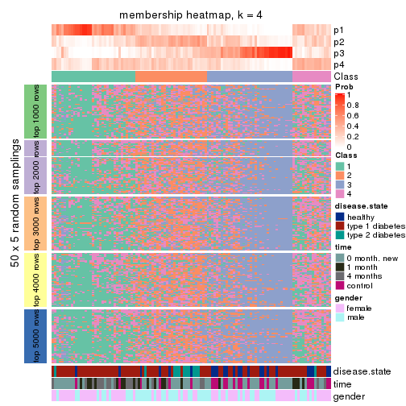
membership_heatmap(res, k = 5)
membership_heatmap(res, k = 6)
As soon as we have had the classes for columns, we can look for signatures which are significantly different between classes which can be candidate marks for certain classes. Following are the heatmaps for signatures.
Signature heatmaps where rows are scaled:
get_signatures(res, k = 2)
get_signatures(res, k = 3)
get_signatures(res, k = 4)

get_signatures(res, k = 5)

get_signatures(res, k = 6)

Signature heatmaps where rows are not scaled:
get_signatures(res, k = 2, scale_rows = FALSE)
get_signatures(res, k = 3, scale_rows = FALSE)
get_signatures(res, k = 4, scale_rows = FALSE)

get_signatures(res, k = 5, scale_rows = FALSE)

get_signatures(res, k = 6, scale_rows = FALSE)

Compare the overlap of signatures from different k:
compare_signatures(res)
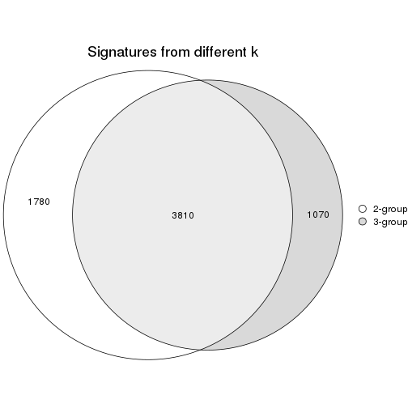
get_signature() returns a data frame invisibly. TO get the list of signatures, the function
call should be assigned to a variable explicitly. In following code, if plot argument is set
to FALSE, no heatmap is plotted while only the differential analysis is performed.
# code only for demonstration
tb = get_signature(res, k = ..., plot = FALSE)
An example of the output of tb is:
#> which_row fdr mean_1 mean_2 scaled_mean_1 scaled_mean_2 km
#> 1 38 0.042760348 8.373488 9.131774 -0.5533452 0.5164555 1
#> 2 40 0.018707592 7.106213 8.469186 -0.6173731 0.5762149 1
#> 3 55 0.019134737 10.221463 11.207825 -0.6159697 0.5749050 1
#> 4 59 0.006059896 5.921854 7.869574 -0.6899429 0.6439467 1
#> 5 60 0.018055526 8.928898 10.211722 -0.6204761 0.5791110 1
#> 6 98 0.009384629 15.714769 14.887706 0.6635654 -0.6193277 2
...
The columns in tb are:
which_row: row indices corresponding to the input matrix.fdr: FDR for the differential test. mean_x: The mean value in group x.scaled_mean_x: The mean value in group x after rows are scaled.km: Row groups if k-means clustering is applied to rows.UMAP plot which shows how samples are separated.
dimension_reduction(res, k = 2, method = "UMAP")
dimension_reduction(res, k = 3, method = "UMAP")
dimension_reduction(res, k = 4, method = "UMAP")
dimension_reduction(res, k = 5, method = "UMAP")
dimension_reduction(res, k = 6, method = "UMAP")
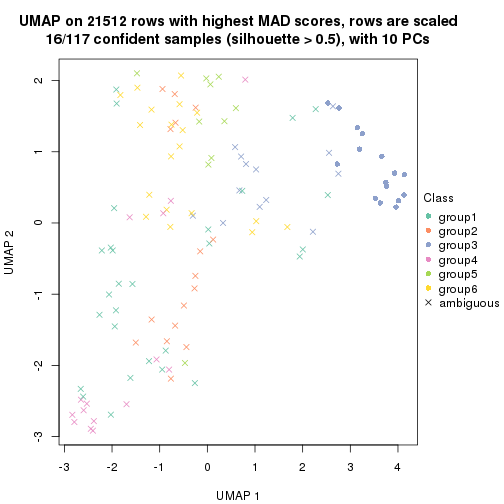
Following heatmap shows how subgroups are split when increasing k:
collect_classes(res)
Test correlation between subgroups and known annotations. If the known annotation is numeric, one-way ANOVA test is applied, and if the known annotation is discrete, chi-squared contingency table test is applied.
test_to_known_factors(res)
#> n disease.state(p) time(p) gender(p) k
#> MAD:skmeans 97 2.62e-03 8.58e-07 0.462 2
#> MAD:skmeans 52 3.08e-06 4.78e-04 0.199 3
#> MAD:skmeans 20 NA NA NA 4
#> MAD:skmeans 17 NA NA NA 5
#> MAD:skmeans 16 NA NA NA 6
If matrix rows can be associated to genes, consider to use GO_Enrichment(res,
...) to perform function enrichment for the signature genes.
The object with results only for a single top-value method and a single partition method can be extracted as:
res = res_list["MAD", "pam"]
# you can also extract it by
# res = res_list["MAD:pam"]
A summary of res and all the functions that can be applied to it:
res
#> A 'ConsensusPartition' object with k = 2, 3, 4, 5, 6.
#> On a matrix with 21512 rows and 117 columns.
#> Top rows (1000, 2000, 3000, 4000, 5000) are extracted by 'MAD' method.
#> Subgroups are detected by 'pam' method.
#> Performed in total 1250 partitions by row resampling.
#> Best k for subgroups seems to be 2.
#>
#> Following methods can be applied to this 'ConsensusPartition' object:
#> [1] "cola_report" "collect_classes" "collect_plots"
#> [4] "collect_stats" "colnames" "compare_signatures"
#> [7] "consensus_heatmap" "dimension_reduction" "functional_enrichment"
#> [10] "get_anno_col" "get_anno" "get_classes"
#> [13] "get_consensus" "get_matrix" "get_membership"
#> [16] "get_param" "get_signatures" "get_stats"
#> [19] "is_best_k" "is_stable_k" "membership_heatmap"
#> [22] "ncol" "nrow" "plot_ecdf"
#> [25] "rownames" "select_partition_number" "show"
#> [28] "suggest_best_k" "test_to_known_factors"
collect_plots() function collects all the plots made from res for all k (number of partitions)
into one single page to provide an easy and fast comparison between different k.
collect_plots(res)
The plots are:
k and the heatmap of
predicted classes for each k.k.k.k.All the plots in panels can be made by individual functions and they are plotted later in this section.
select_partition_number() produces several plots showing different
statistics for choosing “optimized” k. There are following statistics:
k;k, the area increased is defined as \(A_k - A_{k-1}\).The detailed explanations of these statistics can be found in the cola vignette.
Generally speaking, lower PAC score, higher mean silhouette score or higher
concordance corresponds to better partition. Rand index and Jaccard index
measure how similar the current partition is compared to partition with k-1.
If they are too similar, we won't accept k is better than k-1.
select_partition_number(res)
The numeric values for all these statistics can be obtained by get_stats().
get_stats(res)
#> k 1-PAC mean_silhouette concordance area_increased Rand Jaccard
#> 2 2 0.207 0.719 0.839 0.4785 0.523 0.523
#> 3 3 0.301 0.632 0.789 0.3540 0.754 0.560
#> 4 4 0.358 0.605 0.784 0.0702 0.947 0.850
#> 5 5 0.381 0.603 0.752 0.0429 0.992 0.974
#> 6 6 0.403 0.532 0.736 0.0199 0.964 0.889
suggest_best_k() suggests the best \(k\) based on these statistics. The rules are as follows:
NA.suggest_best_k(res)
#> [1] 2
Following shows the table of the partitions (You need to click the show/hide
code output link to see it). The membership matrix (columns with name p*)
is inferred by
clue::cl_consensus()
function with the SE method. Basically the value in the membership matrix
represents the probability to belong to a certain group. The finall class
label for an item is determined with the group with highest probability it
belongs to.
In get_classes() function, the entropy is calculated from the membership
matrix and the silhouette score is calculated from the consensus matrix.
cbind(get_classes(res, k = 2), get_membership(res, k = 2))
#> class entropy silhouette p1 p2
#> GSM254177 2 0.1843 0.8027 0.028 0.972
#> GSM254179 2 0.9815 0.4502 0.420 0.580
#> GSM254180 1 0.4690 0.8389 0.900 0.100
#> GSM254182 2 0.5737 0.7940 0.136 0.864
#> GSM254183 2 0.9460 0.5065 0.364 0.636
#> GSM254277 2 0.9998 -0.1734 0.492 0.508
#> GSM254278 2 0.3431 0.8064 0.064 0.936
#> GSM254281 1 0.7139 0.7946 0.804 0.196
#> GSM254282 1 0.6623 0.7640 0.828 0.172
#> GSM254284 1 0.2236 0.8365 0.964 0.036
#> GSM254286 1 0.7139 0.7843 0.804 0.196
#> GSM254290 1 0.3431 0.8444 0.936 0.064
#> GSM254291 2 0.9427 0.5235 0.360 0.640
#> GSM254293 2 0.9754 0.2804 0.408 0.592
#> GSM254178 1 0.0376 0.8334 0.996 0.004
#> GSM254181 2 0.5178 0.7987 0.116 0.884
#> GSM254279 2 0.6148 0.7820 0.152 0.848
#> GSM254280 2 0.7056 0.7725 0.192 0.808
#> GSM254283 1 0.1184 0.8329 0.984 0.016
#> GSM254285 2 0.1414 0.8005 0.020 0.980
#> GSM254287 1 0.9977 -0.1851 0.528 0.472
#> GSM254288 1 0.5294 0.8372 0.880 0.120
#> GSM254289 2 0.8763 0.6882 0.296 0.704
#> GSM254292 1 0.8499 0.6625 0.724 0.276
#> GSM254184 2 0.0376 0.7957 0.004 0.996
#> GSM254185 2 0.5629 0.7895 0.132 0.868
#> GSM254187 2 0.0672 0.7955 0.008 0.992
#> GSM254189 2 0.0000 0.7956 0.000 1.000
#> GSM254190 2 0.5737 0.7962 0.136 0.864
#> GSM254191 2 0.8861 0.6747 0.304 0.696
#> GSM254192 2 0.8144 0.7423 0.252 0.748
#> GSM254193 2 0.9323 0.5783 0.348 0.652
#> GSM254199 1 0.8861 0.6339 0.696 0.304
#> GSM254203 1 0.2948 0.8454 0.948 0.052
#> GSM254206 1 0.2603 0.8361 0.956 0.044
#> GSM254210 2 0.9044 0.5596 0.320 0.680
#> GSM254211 1 0.9983 0.2147 0.524 0.476
#> GSM254215 2 0.0000 0.7956 0.000 1.000
#> GSM254218 2 0.4939 0.7830 0.108 0.892
#> GSM254230 1 0.0000 0.8331 1.000 0.000
#> GSM254236 2 0.0672 0.7965 0.008 0.992
#> GSM254244 1 0.1184 0.8382 0.984 0.016
#> GSM254247 2 0.8608 0.7148 0.284 0.716
#> GSM254248 1 0.6048 0.8077 0.852 0.148
#> GSM254254 2 0.6343 0.7550 0.160 0.840
#> GSM254257 2 0.7674 0.7086 0.224 0.776
#> GSM254258 2 0.0000 0.7956 0.000 1.000
#> GSM254261 1 0.9866 0.3513 0.568 0.432
#> GSM254264 2 0.0672 0.7967 0.008 0.992
#> GSM254186 2 0.5408 0.7926 0.124 0.876
#> GSM254188 2 0.0376 0.7964 0.004 0.996
#> GSM254194 2 0.9170 0.6350 0.332 0.668
#> GSM254195 2 0.6048 0.7968 0.148 0.852
#> GSM254196 2 0.6148 0.7847 0.152 0.848
#> GSM254200 2 0.4022 0.8005 0.080 0.920
#> GSM254209 2 0.5178 0.7931 0.116 0.884
#> GSM254214 1 0.5408 0.8278 0.876 0.124
#> GSM254221 1 0.2948 0.8388 0.948 0.052
#> GSM254224 1 0.6438 0.8099 0.836 0.164
#> GSM254227 2 0.9000 0.6563 0.316 0.684
#> GSM254233 1 0.3879 0.8268 0.924 0.076
#> GSM254235 1 0.0938 0.8373 0.988 0.012
#> GSM254239 1 0.1414 0.8355 0.980 0.020
#> GSM254241 1 0.1843 0.8303 0.972 0.028
#> GSM254251 2 0.4562 0.7982 0.096 0.904
#> GSM254262 2 0.1184 0.7956 0.016 0.984
#> GSM254263 2 0.4431 0.8050 0.092 0.908
#> GSM254197 1 0.4431 0.8294 0.908 0.092
#> GSM254201 1 0.6712 0.8000 0.824 0.176
#> GSM254204 1 0.4815 0.8227 0.896 0.104
#> GSM254216 1 0.6148 0.7810 0.848 0.152
#> GSM254228 1 0.2603 0.8411 0.956 0.044
#> GSM254242 1 0.0000 0.8331 1.000 0.000
#> GSM254245 1 0.0938 0.8374 0.988 0.012
#> GSM254252 1 0.3274 0.8414 0.940 0.060
#> GSM254255 1 0.7376 0.7754 0.792 0.208
#> GSM254259 1 0.5059 0.8261 0.888 0.112
#> GSM254207 1 0.8267 0.6920 0.740 0.260
#> GSM254212 1 0.5842 0.8092 0.860 0.140
#> GSM254219 1 0.1414 0.8327 0.980 0.020
#> GSM254222 1 0.3431 0.8441 0.936 0.064
#> GSM254225 1 0.9993 0.1215 0.516 0.484
#> GSM254231 1 0.8267 0.7310 0.740 0.260
#> GSM254234 1 0.2603 0.8403 0.956 0.044
#> GSM254237 1 0.8016 0.6072 0.756 0.244
#> GSM254249 2 0.8327 0.6574 0.264 0.736
#> GSM254198 1 0.4431 0.8334 0.908 0.092
#> GSM254202 1 0.9815 0.3737 0.580 0.420
#> GSM254205 1 0.6343 0.8033 0.840 0.160
#> GSM254217 1 0.5178 0.8348 0.884 0.116
#> GSM254229 1 0.0000 0.8331 1.000 0.000
#> GSM254243 1 0.4815 0.8210 0.896 0.104
#> GSM254246 1 0.4161 0.8379 0.916 0.084
#> GSM254253 1 0.9427 0.5635 0.640 0.360
#> GSM254256 1 0.8661 0.6991 0.712 0.288
#> GSM254260 1 0.0000 0.8331 1.000 0.000
#> GSM254208 1 0.9686 0.3337 0.604 0.396
#> GSM254213 1 0.5629 0.7855 0.868 0.132
#> GSM254220 1 0.2043 0.8372 0.968 0.032
#> GSM254223 1 0.2236 0.8354 0.964 0.036
#> GSM254226 1 0.9732 0.2271 0.596 0.404
#> GSM254232 1 0.2603 0.8439 0.956 0.044
#> GSM254238 1 0.1184 0.8391 0.984 0.016
#> GSM254240 1 0.2423 0.8276 0.960 0.040
#> GSM254250 1 0.1843 0.8371 0.972 0.028
#> GSM254268 2 0.3879 0.7925 0.076 0.924
#> GSM254269 2 0.9286 0.4214 0.344 0.656
#> GSM254270 1 0.1633 0.8405 0.976 0.024
#> GSM254272 1 0.5408 0.8197 0.876 0.124
#> GSM254273 1 0.8909 0.6688 0.692 0.308
#> GSM254274 1 0.8608 0.7085 0.716 0.284
#> GSM254265 1 0.8661 0.6179 0.712 0.288
#> GSM254266 1 0.1633 0.8412 0.976 0.024
#> GSM254267 1 0.8016 0.6580 0.756 0.244
#> GSM254271 2 0.9970 0.0188 0.468 0.532
#> GSM254275 1 0.5842 0.8131 0.860 0.140
#> GSM254276 1 0.5946 0.7809 0.856 0.144
cbind(get_classes(res, k = 3), get_membership(res, k = 3))
#> class entropy silhouette p1 p2 p3
#> GSM254177 3 0.4931 0.68987 0.004 0.212 0.784
#> GSM254179 3 0.5902 0.52315 0.316 0.004 0.680
#> GSM254180 2 0.7188 0.00805 0.484 0.492 0.024
#> GSM254182 3 0.5094 0.76814 0.056 0.112 0.832
#> GSM254183 2 0.3713 0.75440 0.076 0.892 0.032
#> GSM254277 2 0.7256 0.65163 0.088 0.696 0.216
#> GSM254278 3 0.4799 0.76729 0.032 0.132 0.836
#> GSM254281 2 0.4609 0.74144 0.128 0.844 0.028
#> GSM254282 1 0.6968 0.64606 0.732 0.148 0.120
#> GSM254284 1 0.3083 0.76296 0.916 0.024 0.060
#> GSM254286 1 0.6913 0.63993 0.696 0.248 0.056
#> GSM254290 2 0.5656 0.61926 0.284 0.712 0.004
#> GSM254291 3 0.9506 0.23840 0.240 0.268 0.492
#> GSM254293 2 0.3886 0.73475 0.024 0.880 0.096
#> GSM254178 1 0.2152 0.75735 0.948 0.036 0.016
#> GSM254181 3 0.7844 0.50777 0.084 0.292 0.624
#> GSM254279 3 0.2682 0.81543 0.076 0.004 0.920
#> GSM254280 3 0.3340 0.79904 0.120 0.000 0.880
#> GSM254283 1 0.0848 0.75542 0.984 0.008 0.008
#> GSM254285 3 0.1411 0.81681 0.000 0.036 0.964
#> GSM254287 1 0.9489 0.15051 0.464 0.196 0.340
#> GSM254288 1 0.8148 0.47899 0.604 0.296 0.100
#> GSM254289 2 0.6286 0.73042 0.136 0.772 0.092
#> GSM254292 1 0.8701 0.09989 0.492 0.400 0.108
#> GSM254184 3 0.0747 0.81786 0.000 0.016 0.984
#> GSM254185 3 0.3295 0.80475 0.096 0.008 0.896
#> GSM254187 3 0.3038 0.79483 0.000 0.104 0.896
#> GSM254189 3 0.0892 0.81754 0.000 0.020 0.980
#> GSM254190 3 0.2569 0.81124 0.032 0.032 0.936
#> GSM254191 3 0.7032 0.61028 0.272 0.052 0.676
#> GSM254192 3 0.7403 0.64839 0.216 0.096 0.688
#> GSM254193 3 0.9355 0.36435 0.232 0.252 0.516
#> GSM254199 2 0.6673 0.68902 0.200 0.732 0.068
#> GSM254203 1 0.4591 0.74735 0.848 0.120 0.032
#> GSM254206 1 0.2689 0.76475 0.932 0.036 0.032
#> GSM254210 2 0.7169 0.64028 0.088 0.704 0.208
#> GSM254211 2 0.9948 0.04713 0.352 0.364 0.284
#> GSM254215 3 0.0592 0.81558 0.000 0.012 0.988
#> GSM254218 2 0.5072 0.67005 0.012 0.792 0.196
#> GSM254230 1 0.1751 0.75742 0.960 0.028 0.012
#> GSM254236 3 0.2711 0.80463 0.000 0.088 0.912
#> GSM254244 1 0.2860 0.76322 0.912 0.084 0.004
#> GSM254247 2 0.8752 0.49982 0.148 0.568 0.284
#> GSM254248 2 0.3030 0.74350 0.092 0.904 0.004
#> GSM254254 2 0.2651 0.73800 0.012 0.928 0.060
#> GSM254257 2 0.2313 0.74601 0.024 0.944 0.032
#> GSM254258 3 0.0747 0.81697 0.000 0.016 0.984
#> GSM254261 2 0.1751 0.74226 0.028 0.960 0.012
#> GSM254264 3 0.1289 0.81669 0.000 0.032 0.968
#> GSM254186 3 0.1989 0.81863 0.048 0.004 0.948
#> GSM254188 3 0.1163 0.81628 0.000 0.028 0.972
#> GSM254194 3 0.6929 0.61798 0.260 0.052 0.688
#> GSM254195 3 0.3528 0.81023 0.092 0.016 0.892
#> GSM254196 3 0.1643 0.81824 0.044 0.000 0.956
#> GSM254200 3 0.1315 0.81836 0.020 0.008 0.972
#> GSM254209 2 0.6490 0.57299 0.036 0.708 0.256
#> GSM254214 1 0.8637 0.31466 0.564 0.308 0.128
#> GSM254221 1 0.4232 0.75355 0.872 0.084 0.044
#> GSM254224 1 0.6968 0.66791 0.716 0.204 0.080
#> GSM254227 3 0.8444 0.54547 0.236 0.152 0.612
#> GSM254233 1 0.2711 0.76010 0.912 0.000 0.088
#> GSM254235 1 0.0829 0.75898 0.984 0.012 0.004
#> GSM254239 1 0.2297 0.76603 0.944 0.036 0.020
#> GSM254241 1 0.0661 0.75514 0.988 0.004 0.008
#> GSM254251 3 0.2663 0.81875 0.024 0.044 0.932
#> GSM254262 3 0.3116 0.79552 0.000 0.108 0.892
#> GSM254263 3 0.2297 0.82164 0.036 0.020 0.944
#> GSM254197 1 0.6501 0.58198 0.664 0.316 0.020
#> GSM254201 1 0.8009 0.25119 0.524 0.412 0.064
#> GSM254204 1 0.4931 0.68464 0.784 0.212 0.004
#> GSM254216 1 0.6109 0.68772 0.760 0.048 0.192
#> GSM254228 1 0.3587 0.75396 0.892 0.088 0.020
#> GSM254242 1 0.0747 0.75488 0.984 0.016 0.000
#> GSM254245 1 0.4897 0.71682 0.812 0.172 0.016
#> GSM254252 1 0.5754 0.52336 0.700 0.296 0.004
#> GSM254255 2 0.2743 0.74834 0.052 0.928 0.020
#> GSM254259 1 0.5486 0.71029 0.780 0.196 0.024
#> GSM254207 1 0.6858 0.65554 0.728 0.084 0.188
#> GSM254212 2 0.2400 0.74720 0.064 0.932 0.004
#> GSM254219 1 0.2680 0.76393 0.924 0.068 0.008
#> GSM254222 1 0.4139 0.75190 0.860 0.124 0.016
#> GSM254225 2 0.3572 0.75494 0.060 0.900 0.040
#> GSM254231 1 0.9147 -0.05811 0.444 0.412 0.144
#> GSM254234 1 0.5178 0.70146 0.808 0.164 0.028
#> GSM254237 2 0.7851 0.36092 0.412 0.532 0.056
#> GSM254249 2 0.6402 0.61115 0.040 0.724 0.236
#> GSM254198 1 0.5618 0.63054 0.732 0.260 0.008
#> GSM254202 1 0.7699 0.28625 0.532 0.048 0.420
#> GSM254205 2 0.6262 0.56782 0.284 0.696 0.020
#> GSM254217 1 0.4779 0.74392 0.840 0.036 0.124
#> GSM254229 1 0.0892 0.75643 0.980 0.020 0.000
#> GSM254243 1 0.4062 0.71659 0.836 0.164 0.000
#> GSM254246 1 0.4609 0.74541 0.844 0.128 0.028
#> GSM254253 2 0.8518 0.60108 0.208 0.612 0.180
#> GSM254256 2 0.7841 -0.03199 0.472 0.476 0.052
#> GSM254260 1 0.1289 0.75899 0.968 0.032 0.000
#> GSM254208 1 0.9532 0.21691 0.472 0.212 0.316
#> GSM254213 1 0.3267 0.73855 0.884 0.000 0.116
#> GSM254220 1 0.2152 0.76331 0.948 0.036 0.016
#> GSM254223 1 0.1585 0.76117 0.964 0.028 0.008
#> GSM254226 1 0.9213 0.11962 0.452 0.152 0.396
#> GSM254232 2 0.6451 0.33350 0.436 0.560 0.004
#> GSM254238 1 0.5465 0.55216 0.712 0.288 0.000
#> GSM254240 1 0.0424 0.75563 0.992 0.000 0.008
#> GSM254250 1 0.1636 0.76432 0.964 0.020 0.016
#> GSM254268 2 0.1964 0.73287 0.000 0.944 0.056
#> GSM254269 3 0.9464 -0.14029 0.180 0.408 0.412
#> GSM254270 2 0.6859 0.31866 0.420 0.564 0.016
#> GSM254272 2 0.5928 0.57835 0.296 0.696 0.008
#> GSM254273 2 0.6000 0.68548 0.200 0.760 0.040
#> GSM254274 2 0.4676 0.74654 0.112 0.848 0.040
#> GSM254265 1 0.8181 0.49291 0.584 0.092 0.324
#> GSM254266 1 0.4047 0.72556 0.848 0.148 0.004
#> GSM254267 1 0.7851 0.52992 0.644 0.100 0.256
#> GSM254271 2 0.4146 0.74837 0.044 0.876 0.080
#> GSM254275 1 0.6686 0.37742 0.612 0.372 0.016
#> GSM254276 1 0.4591 0.73091 0.848 0.032 0.120
cbind(get_classes(res, k = 4), get_membership(res, k = 4))
#> class entropy silhouette p1 p2 p3 p4
#> GSM254177 3 0.3569 0.70764 0.000 0.000 0.804 0.196
#> GSM254179 3 0.4850 0.51197 0.008 0.292 0.696 0.004
#> GSM254180 4 0.5678 -0.00234 0.016 0.480 0.004 0.500
#> GSM254182 3 0.6263 0.65236 0.216 0.040 0.692 0.052
#> GSM254183 4 0.1584 0.74535 0.000 0.036 0.012 0.952
#> GSM254277 4 0.6181 0.63995 0.024 0.076 0.200 0.700
#> GSM254278 3 0.4335 0.75938 0.020 0.028 0.824 0.128
#> GSM254281 4 0.3719 0.73836 0.008 0.124 0.020 0.848
#> GSM254282 2 0.5379 0.62621 0.004 0.752 0.100 0.144
#> GSM254284 2 0.2111 0.68932 0.024 0.932 0.044 0.000
#> GSM254286 2 0.5725 0.59833 0.028 0.708 0.032 0.232
#> GSM254290 4 0.4607 0.62358 0.004 0.276 0.004 0.716
#> GSM254291 3 0.8085 0.27597 0.020 0.240 0.484 0.256
#> GSM254293 4 0.2222 0.74260 0.000 0.016 0.060 0.924
#> GSM254178 1 0.4877 0.53129 0.592 0.408 0.000 0.000
#> GSM254181 3 0.6121 0.49995 0.000 0.072 0.620 0.308
#> GSM254279 3 0.2053 0.80418 0.004 0.072 0.924 0.000
#> GSM254280 3 0.2469 0.78888 0.000 0.108 0.892 0.000
#> GSM254283 2 0.0376 0.68485 0.000 0.992 0.004 0.004
#> GSM254285 3 0.0469 0.81045 0.000 0.000 0.988 0.012
#> GSM254287 2 0.7617 0.17118 0.004 0.468 0.344 0.184
#> GSM254288 2 0.6823 0.50872 0.020 0.616 0.088 0.276
#> GSM254289 4 0.4535 0.72330 0.000 0.112 0.084 0.804
#> GSM254292 2 0.6979 0.16573 0.004 0.492 0.100 0.404
#> GSM254184 3 0.1388 0.80759 0.028 0.000 0.960 0.012
#> GSM254185 3 0.2796 0.78969 0.016 0.092 0.892 0.000
#> GSM254187 3 0.2469 0.78626 0.000 0.000 0.892 0.108
#> GSM254189 3 0.0657 0.81051 0.004 0.000 0.984 0.012
#> GSM254190 3 0.5085 0.51584 0.304 0.020 0.676 0.000
#> GSM254191 3 0.6569 0.56533 0.080 0.240 0.656 0.024
#> GSM254192 3 0.6274 0.64745 0.032 0.212 0.692 0.064
#> GSM254193 1 0.6612 0.44847 0.644 0.068 0.260 0.028
#> GSM254199 4 0.7214 0.57381 0.164 0.148 0.044 0.644
#> GSM254203 1 0.3982 0.80177 0.776 0.220 0.000 0.004
#> GSM254206 2 0.3717 0.63636 0.132 0.844 0.016 0.008
#> GSM254210 4 0.5321 0.64954 0.004 0.064 0.192 0.740
#> GSM254211 1 0.9775 0.22534 0.304 0.292 0.152 0.252
#> GSM254215 3 0.0000 0.80650 0.000 0.000 1.000 0.000
#> GSM254218 4 0.3486 0.67806 0.000 0.000 0.188 0.812
#> GSM254230 2 0.4955 -0.13424 0.444 0.556 0.000 0.000
#> GSM254236 3 0.2281 0.79395 0.000 0.000 0.904 0.096
#> GSM254244 2 0.4055 0.65511 0.108 0.832 0.000 0.060
#> GSM254247 4 0.6746 0.48427 0.000 0.124 0.296 0.580
#> GSM254248 4 0.2081 0.74388 0.000 0.084 0.000 0.916
#> GSM254254 4 0.0469 0.73418 0.000 0.000 0.012 0.988
#> GSM254257 4 0.0376 0.73502 0.000 0.004 0.004 0.992
#> GSM254258 3 0.0188 0.80835 0.000 0.000 0.996 0.004
#> GSM254261 4 0.0712 0.73506 0.008 0.004 0.004 0.984
#> GSM254264 3 0.0592 0.81099 0.000 0.000 0.984 0.016
#> GSM254186 3 0.0817 0.80950 0.000 0.024 0.976 0.000
#> GSM254188 3 0.0336 0.80957 0.000 0.000 0.992 0.008
#> GSM254194 3 0.5766 0.59987 0.012 0.248 0.692 0.048
#> GSM254195 3 0.3122 0.79823 0.016 0.084 0.888 0.012
#> GSM254196 3 0.0779 0.80970 0.000 0.016 0.980 0.004
#> GSM254200 3 0.0188 0.80785 0.000 0.004 0.996 0.000
#> GSM254209 4 0.4609 0.62370 0.000 0.024 0.224 0.752
#> GSM254214 2 0.6904 0.34200 0.000 0.556 0.132 0.312
#> GSM254221 2 0.3333 0.69884 0.000 0.872 0.040 0.088
#> GSM254224 2 0.5674 0.64163 0.020 0.740 0.068 0.172
#> GSM254227 3 0.7292 0.54784 0.032 0.228 0.612 0.128
#> GSM254233 2 0.2149 0.68845 0.000 0.912 0.088 0.000
#> GSM254235 2 0.2334 0.66201 0.088 0.908 0.000 0.004
#> GSM254239 2 0.1617 0.69635 0.008 0.956 0.012 0.024
#> GSM254241 2 0.0188 0.68457 0.000 0.996 0.004 0.000
#> GSM254251 3 0.1545 0.81061 0.000 0.008 0.952 0.040
#> GSM254262 3 0.2909 0.79123 0.020 0.000 0.888 0.092
#> GSM254263 3 0.1411 0.81160 0.000 0.020 0.960 0.020
#> GSM254197 1 0.4436 0.80108 0.764 0.216 0.000 0.020
#> GSM254201 2 0.6886 0.26785 0.036 0.520 0.040 0.404
#> GSM254204 2 0.3982 0.63037 0.004 0.776 0.000 0.220
#> GSM254216 2 0.5192 0.58790 0.028 0.748 0.204 0.020
#> GSM254228 1 0.4328 0.79261 0.748 0.244 0.000 0.008
#> GSM254242 2 0.0000 0.68270 0.000 1.000 0.000 0.000
#> GSM254245 2 0.4037 0.66371 0.040 0.824 0.000 0.136
#> GSM254252 2 0.4584 0.51913 0.000 0.696 0.004 0.300
#> GSM254255 4 0.1575 0.74385 0.012 0.028 0.004 0.956
#> GSM254259 1 0.4018 0.80024 0.772 0.224 0.000 0.004
#> GSM254207 2 0.5457 0.59780 0.000 0.728 0.184 0.088
#> GSM254212 4 0.1109 0.74300 0.004 0.028 0.000 0.968
#> GSM254219 2 0.1585 0.69549 0.004 0.952 0.004 0.040
#> GSM254222 2 0.3432 0.69129 0.008 0.860 0.012 0.120
#> GSM254225 4 0.1297 0.74278 0.000 0.016 0.020 0.964
#> GSM254231 2 0.7154 -0.00250 0.000 0.436 0.132 0.432
#> GSM254234 2 0.4149 0.65095 0.000 0.804 0.028 0.168
#> GSM254237 4 0.6155 0.34245 0.000 0.412 0.052 0.536
#> GSM254249 4 0.4989 0.65166 0.008 0.036 0.200 0.756
#> GSM254198 2 0.4343 0.61385 0.004 0.732 0.000 0.264
#> GSM254202 2 0.6152 0.25476 0.004 0.520 0.436 0.040
#> GSM254205 4 0.5586 0.55022 0.032 0.288 0.008 0.672
#> GSM254217 2 0.3877 0.65637 0.048 0.840 0.112 0.000
#> GSM254229 2 0.0469 0.68678 0.000 0.988 0.000 0.012
#> GSM254243 2 0.3764 0.65314 0.012 0.816 0.000 0.172
#> GSM254246 1 0.4284 0.80034 0.764 0.224 0.000 0.012
#> GSM254253 4 0.7428 0.54800 0.028 0.208 0.164 0.600
#> GSM254256 4 0.5933 -0.06530 0.000 0.464 0.036 0.500
#> GSM254260 2 0.0707 0.69153 0.000 0.980 0.000 0.020
#> GSM254208 2 0.7855 0.28380 0.008 0.456 0.328 0.208
#> GSM254213 2 0.2469 0.67286 0.000 0.892 0.108 0.000
#> GSM254220 2 0.1247 0.69061 0.012 0.968 0.004 0.016
#> GSM254223 2 0.0895 0.69011 0.004 0.976 0.000 0.020
#> GSM254226 2 0.7371 0.11930 0.000 0.424 0.416 0.160
#> GSM254232 4 0.5088 0.34428 0.000 0.424 0.004 0.572
#> GSM254238 2 0.4372 0.56177 0.004 0.728 0.000 0.268
#> GSM254240 2 0.0376 0.68433 0.004 0.992 0.004 0.000
#> GSM254250 2 0.2587 0.66984 0.076 0.908 0.012 0.004
#> GSM254268 4 0.0469 0.73418 0.000 0.000 0.012 0.988
#> GSM254269 3 0.7500 -0.09158 0.000 0.180 0.416 0.404
#> GSM254270 4 0.5950 0.31741 0.040 0.416 0.000 0.544
#> GSM254272 4 0.4546 0.61094 0.000 0.256 0.012 0.732
#> GSM254273 4 0.4267 0.68269 0.000 0.188 0.024 0.788
#> GSM254274 4 0.2593 0.74216 0.000 0.080 0.016 0.904
#> GSM254265 2 0.6629 0.41005 0.008 0.576 0.340 0.076
#> GSM254266 2 0.3236 0.68639 0.004 0.856 0.004 0.136
#> GSM254267 2 0.6273 0.49402 0.000 0.636 0.264 0.100
#> GSM254271 4 0.2565 0.74881 0.000 0.032 0.056 0.912
#> GSM254275 2 0.5486 0.36428 0.004 0.604 0.016 0.376
#> GSM254276 2 0.3610 0.66342 0.004 0.856 0.112 0.028
cbind(get_classes(res, k = 5), get_membership(res, k = 5))
#> class entropy silhouette p1 p2 p3 p4 p5
#> GSM254177 3 0.3710 0.70110 0.000 0.192 0.784 0.000 NA
#> GSM254179 3 0.4491 0.51165 0.000 0.004 0.692 0.280 NA
#> GSM254180 2 0.6328 -0.00789 0.000 0.448 0.004 0.412 NA
#> GSM254182 3 0.5843 0.35258 0.000 0.032 0.488 0.036 NA
#> GSM254183 2 0.1471 0.73532 0.000 0.952 0.004 0.024 NA
#> GSM254277 2 0.6647 0.63118 0.000 0.616 0.164 0.076 NA
#> GSM254278 3 0.4424 0.74826 0.000 0.080 0.780 0.012 NA
#> GSM254281 2 0.5327 0.68627 0.000 0.696 0.016 0.092 NA
#> GSM254282 4 0.5574 0.62202 0.000 0.136 0.100 0.712 NA
#> GSM254284 4 0.2574 0.68991 0.000 0.000 0.012 0.876 NA
#> GSM254286 4 0.6201 0.61809 0.000 0.120 0.032 0.620 NA
#> GSM254290 2 0.5749 0.56920 0.000 0.616 0.004 0.260 NA
#> GSM254291 3 0.7533 0.28596 0.000 0.244 0.472 0.216 NA
#> GSM254293 2 0.2069 0.73677 0.000 0.924 0.052 0.012 NA
#> GSM254178 1 0.4482 0.43752 0.612 0.000 0.000 0.376 NA
#> GSM254181 3 0.5704 0.50005 0.000 0.300 0.616 0.060 NA
#> GSM254279 3 0.2473 0.79367 0.000 0.000 0.896 0.072 NA
#> GSM254280 3 0.2179 0.78319 0.000 0.000 0.896 0.100 NA
#> GSM254283 4 0.0162 0.68022 0.000 0.004 0.000 0.996 NA
#> GSM254285 3 0.0807 0.79974 0.000 0.012 0.976 0.000 NA
#> GSM254287 4 0.7650 0.17496 0.000 0.168 0.328 0.424 NA
#> GSM254288 4 0.7248 0.42423 0.000 0.244 0.056 0.508 NA
#> GSM254289 2 0.4394 0.71738 0.000 0.788 0.084 0.112 NA
#> GSM254292 4 0.7004 0.18309 0.000 0.372 0.080 0.468 NA
#> GSM254184 3 0.2199 0.79471 0.016 0.008 0.916 0.000 NA
#> GSM254185 3 0.3051 0.78318 0.000 0.000 0.864 0.076 NA
#> GSM254187 3 0.2983 0.78102 0.000 0.096 0.864 0.000 NA
#> GSM254189 3 0.1281 0.80199 0.000 0.012 0.956 0.000 NA
#> GSM254190 3 0.5382 0.51755 0.276 0.000 0.652 0.020 NA
#> GSM254191 3 0.6450 0.58399 0.032 0.012 0.608 0.096 NA
#> GSM254192 3 0.6791 0.57540 0.004 0.048 0.576 0.128 NA
#> GSM254193 1 0.6742 0.48365 0.608 0.020 0.236 0.056 NA
#> GSM254199 2 0.7116 0.60738 0.172 0.616 0.044 0.112 NA
#> GSM254203 1 0.2230 0.85332 0.884 0.000 0.000 0.116 NA
#> GSM254206 4 0.4176 0.66683 0.104 0.008 0.012 0.812 NA
#> GSM254210 2 0.5109 0.67096 0.000 0.732 0.172 0.052 NA
#> GSM254211 4 0.9792 -0.00851 0.200 0.172 0.124 0.276 NA
#> GSM254215 3 0.0794 0.79583 0.000 0.000 0.972 0.000 NA
#> GSM254218 2 0.3995 0.68147 0.000 0.776 0.180 0.000 NA
#> GSM254230 4 0.4425 0.10587 0.452 0.000 0.000 0.544 NA
#> GSM254236 3 0.2305 0.78886 0.000 0.092 0.896 0.000 NA
#> GSM254244 4 0.5380 0.63869 0.152 0.032 0.000 0.716 NA
#> GSM254247 2 0.6205 0.51117 0.000 0.584 0.280 0.116 NA
#> GSM254248 2 0.2069 0.73071 0.000 0.912 0.000 0.076 NA
#> GSM254254 2 0.0162 0.72229 0.000 0.996 0.004 0.000 NA
#> GSM254257 2 0.0865 0.72854 0.000 0.972 0.000 0.004 NA
#> GSM254258 3 0.0566 0.79529 0.000 0.004 0.984 0.000 NA
#> GSM254261 2 0.3123 0.70903 0.000 0.812 0.004 0.000 NA
#> GSM254264 3 0.1195 0.79841 0.000 0.012 0.960 0.000 NA
#> GSM254186 3 0.1106 0.79542 0.000 0.000 0.964 0.024 NA
#> GSM254188 3 0.0955 0.79759 0.000 0.004 0.968 0.000 NA
#> GSM254194 3 0.5468 0.60292 0.000 0.048 0.676 0.236 NA
#> GSM254195 3 0.3294 0.78743 0.012 0.008 0.868 0.076 NA
#> GSM254196 3 0.1243 0.79659 0.000 0.004 0.960 0.008 NA
#> GSM254200 3 0.0566 0.79486 0.000 0.000 0.984 0.004 NA
#> GSM254209 2 0.4033 0.61588 0.000 0.760 0.212 0.024 NA
#> GSM254214 4 0.6418 0.32663 0.000 0.304 0.128 0.548 NA
#> GSM254221 4 0.3310 0.70915 0.000 0.084 0.040 0.860 NA
#> GSM254224 4 0.6626 0.60299 0.000 0.152 0.060 0.608 NA
#> GSM254227 3 0.7360 0.51857 0.004 0.096 0.544 0.140 NA
#> GSM254233 4 0.2331 0.69583 0.000 0.000 0.080 0.900 NA
#> GSM254235 4 0.2284 0.67207 0.096 0.004 0.000 0.896 NA
#> GSM254239 4 0.2532 0.69751 0.000 0.012 0.008 0.892 NA
#> GSM254241 4 0.0794 0.68430 0.000 0.000 0.000 0.972 NA
#> GSM254251 3 0.1492 0.79868 0.000 0.040 0.948 0.004 NA
#> GSM254262 3 0.3317 0.78331 0.004 0.088 0.852 0.000 NA
#> GSM254263 3 0.1299 0.79738 0.000 0.012 0.960 0.008 NA
#> GSM254197 1 0.2471 0.85753 0.864 0.000 0.000 0.136 NA
#> GSM254201 4 0.7271 0.38757 0.004 0.260 0.028 0.468 NA
#> GSM254204 4 0.3727 0.65762 0.000 0.216 0.000 0.768 NA
#> GSM254216 4 0.5463 0.62605 0.004 0.000 0.096 0.644 NA
#> GSM254228 1 0.2605 0.85037 0.852 0.000 0.000 0.148 NA
#> GSM254242 4 0.0000 0.67906 0.000 0.000 0.000 1.000 NA
#> GSM254245 4 0.5319 0.64528 0.004 0.108 0.000 0.676 NA
#> GSM254252 4 0.4325 0.49598 0.000 0.300 0.004 0.684 NA
#> GSM254255 2 0.3073 0.73882 0.000 0.856 0.004 0.024 NA
#> GSM254259 1 0.2471 0.85584 0.864 0.000 0.000 0.136 NA
#> GSM254207 4 0.5269 0.62638 0.000 0.088 0.184 0.708 NA
#> GSM254212 2 0.2864 0.73108 0.000 0.864 0.000 0.024 NA
#> GSM254219 4 0.3174 0.68916 0.000 0.020 0.004 0.844 NA
#> GSM254222 4 0.4034 0.69623 0.000 0.100 0.008 0.808 NA
#> GSM254225 2 0.0854 0.73043 0.000 0.976 0.008 0.012 NA
#> GSM254231 4 0.7277 0.06672 0.000 0.400 0.116 0.412 NA
#> GSM254234 4 0.4078 0.67804 0.000 0.160 0.028 0.792 NA
#> GSM254237 2 0.6365 0.39854 0.000 0.516 0.052 0.376 NA
#> GSM254249 2 0.5216 0.64131 0.000 0.716 0.188 0.032 NA
#> GSM254198 4 0.4615 0.60327 0.000 0.252 0.000 0.700 NA
#> GSM254202 4 0.6162 0.36106 0.000 0.036 0.400 0.508 NA
#> GSM254205 2 0.6277 0.50792 0.004 0.576 0.004 0.240 NA
#> GSM254217 4 0.3994 0.68025 0.004 0.004 0.044 0.800 NA
#> GSM254229 4 0.0290 0.68227 0.000 0.008 0.000 0.992 NA
#> GSM254243 4 0.3280 0.68058 0.012 0.176 0.000 0.812 NA
#> GSM254246 1 0.2230 0.85348 0.884 0.000 0.000 0.116 NA
#> GSM254253 2 0.7033 0.52730 0.000 0.572 0.144 0.196 NA
#> GSM254256 2 0.5647 -0.16181 0.000 0.480 0.028 0.464 NA
#> GSM254260 4 0.1281 0.69280 0.000 0.012 0.000 0.956 NA
#> GSM254208 4 0.7898 0.28560 0.004 0.192 0.296 0.424 NA
#> GSM254213 4 0.2074 0.68289 0.000 0.000 0.104 0.896 NA
#> GSM254220 4 0.4876 0.56172 0.032 0.008 0.004 0.684 NA
#> GSM254223 4 0.2193 0.69363 0.000 0.008 0.000 0.900 NA
#> GSM254226 4 0.7286 0.17421 0.000 0.160 0.396 0.396 NA
#> GSM254232 2 0.5411 0.35191 0.000 0.552 0.004 0.392 NA
#> GSM254238 4 0.4815 0.53075 0.000 0.244 0.000 0.692 NA
#> GSM254240 4 0.0404 0.68165 0.000 0.000 0.000 0.988 NA
#> GSM254250 4 0.3661 0.68365 0.080 0.004 0.012 0.844 NA
#> GSM254268 2 0.0162 0.72229 0.000 0.996 0.004 0.000 NA
#> GSM254269 3 0.6460 -0.12074 0.000 0.404 0.416 0.180 NA
#> GSM254270 2 0.6723 0.29148 0.000 0.420 0.000 0.280 NA
#> GSM254272 2 0.4033 0.60037 0.000 0.744 0.004 0.236 NA
#> GSM254273 2 0.4403 0.64891 0.000 0.760 0.016 0.188 NA
#> GSM254274 2 0.2395 0.73416 0.000 0.904 0.008 0.072 NA
#> GSM254265 4 0.7217 0.49344 0.000 0.060 0.260 0.512 NA
#> GSM254266 4 0.3413 0.68997 0.000 0.124 0.000 0.832 NA
#> GSM254267 4 0.5996 0.54743 0.000 0.100 0.256 0.620 NA
#> GSM254271 2 0.2339 0.74307 0.000 0.912 0.052 0.028 NA
#> GSM254275 4 0.5595 0.40348 0.004 0.348 0.012 0.588 NA
#> GSM254276 4 0.3455 0.67484 0.000 0.020 0.112 0.844 NA
cbind(get_classes(res, k = 6), get_membership(res, k = 6))
#> class entropy silhouette p1 p2 p3 p4 p5 p6
#> GSM254177 3 0.3897 0.468601 0.000 0.192 0.760 0.000 0.012 NA
#> GSM254179 3 0.3936 0.236743 0.000 0.000 0.700 0.276 0.004 NA
#> GSM254180 2 0.6369 -0.051822 0.000 0.424 0.000 0.404 0.056 NA
#> GSM254182 5 0.5036 0.000000 0.000 0.004 0.380 0.024 0.564 NA
#> GSM254183 2 0.1602 0.707168 0.000 0.944 0.004 0.020 0.016 NA
#> GSM254277 2 0.6433 0.567874 0.000 0.604 0.168 0.076 0.024 NA
#> GSM254278 3 0.4671 0.566192 0.000 0.064 0.744 0.008 0.036 NA
#> GSM254281 2 0.4924 0.663691 0.000 0.680 0.012 0.088 0.004 NA
#> GSM254282 4 0.5682 0.606872 0.000 0.136 0.084 0.684 0.024 NA
#> GSM254284 4 0.2757 0.678116 0.000 0.000 0.016 0.864 0.016 NA
#> GSM254286 4 0.5480 0.613962 0.000 0.096 0.020 0.608 0.004 NA
#> GSM254290 2 0.5349 0.554773 0.000 0.596 0.000 0.256 0.004 NA
#> GSM254291 3 0.6993 0.000742 0.000 0.244 0.464 0.216 0.008 NA
#> GSM254293 2 0.1974 0.707131 0.000 0.920 0.048 0.012 0.020 NA
#> GSM254178 1 0.4015 0.406753 0.616 0.000 0.000 0.372 0.000 NA
#> GSM254181 3 0.5473 0.249304 0.000 0.288 0.608 0.060 0.004 NA
#> GSM254279 3 0.2680 0.667275 0.000 0.000 0.880 0.060 0.012 NA
#> GSM254280 3 0.1858 0.647551 0.000 0.000 0.904 0.092 0.000 NA
#> GSM254283 4 0.0146 0.664487 0.000 0.004 0.000 0.996 0.000 NA
#> GSM254285 3 0.1078 0.675339 0.000 0.012 0.964 0.000 0.008 NA
#> GSM254287 4 0.7606 0.038039 0.000 0.168 0.328 0.388 0.056 NA
#> GSM254288 4 0.7393 0.421921 0.000 0.220 0.028 0.476 0.104 NA
#> GSM254289 2 0.4002 0.684795 0.000 0.788 0.088 0.108 0.004 NA
#> GSM254292 4 0.6692 0.201803 0.000 0.364 0.076 0.464 0.024 NA
#> GSM254184 3 0.2615 0.663041 0.008 0.000 0.876 0.000 0.028 NA
#> GSM254185 3 0.3238 0.649128 0.000 0.000 0.844 0.060 0.016 NA
#> GSM254187 3 0.3329 0.651775 0.000 0.072 0.844 0.000 0.032 NA
#> GSM254189 3 0.1584 0.677896 0.000 0.008 0.928 0.000 0.000 NA
#> GSM254190 3 0.5235 0.198239 0.272 0.000 0.640 0.020 0.016 NA
#> GSM254191 3 0.6030 0.315404 0.028 0.008 0.596 0.080 0.020 NA
#> GSM254192 3 0.6328 0.284580 0.000 0.044 0.572 0.120 0.020 NA
#> GSM254193 1 0.6544 0.242060 0.592 0.016 0.228 0.056 0.024 NA
#> GSM254199 2 0.6523 0.593979 0.176 0.604 0.044 0.112 0.000 NA
#> GSM254203 1 0.1753 0.771722 0.912 0.000 0.000 0.084 0.000 NA
#> GSM254206 4 0.4138 0.654975 0.104 0.008 0.012 0.804 0.032 NA
#> GSM254210 2 0.4754 0.613381 0.000 0.728 0.168 0.044 0.004 NA
#> GSM254211 4 0.9351 0.053934 0.180 0.168 0.116 0.276 0.040 NA
#> GSM254215 3 0.1779 0.668502 0.000 0.000 0.920 0.000 0.016 NA
#> GSM254218 2 0.3912 0.625556 0.000 0.768 0.180 0.000 0.024 NA
#> GSM254230 4 0.3975 0.152633 0.452 0.000 0.000 0.544 0.004 NA
#> GSM254236 3 0.2898 0.648398 0.000 0.088 0.864 0.000 0.024 NA
#> GSM254244 4 0.6066 0.420614 0.100 0.008 0.000 0.552 0.040 NA
#> GSM254247 2 0.5983 0.435219 0.000 0.584 0.260 0.108 0.008 NA
#> GSM254248 2 0.2013 0.716784 0.000 0.908 0.000 0.076 0.008 NA
#> GSM254254 2 0.0000 0.694064 0.000 1.000 0.000 0.000 0.000 NA
#> GSM254257 2 0.0820 0.700448 0.000 0.972 0.000 0.000 0.012 NA
#> GSM254258 3 0.0508 0.660935 0.000 0.000 0.984 0.000 0.012 NA
#> GSM254261 2 0.2883 0.672838 0.000 0.788 0.000 0.000 0.000 NA
#> GSM254264 3 0.2036 0.669895 0.000 0.008 0.912 0.000 0.016 NA
#> GSM254186 3 0.0767 0.661124 0.000 0.000 0.976 0.008 0.012 NA
#> GSM254188 3 0.1801 0.672139 0.000 0.004 0.924 0.000 0.016 NA
#> GSM254194 3 0.5287 0.350279 0.000 0.044 0.664 0.220 0.004 NA
#> GSM254195 3 0.3215 0.640707 0.008 0.008 0.864 0.068 0.028 NA
#> GSM254196 3 0.0806 0.661097 0.000 0.000 0.972 0.000 0.020 NA
#> GSM254200 3 0.0508 0.660935 0.000 0.000 0.984 0.000 0.012 NA
#> GSM254209 2 0.3514 0.555534 0.000 0.768 0.208 0.020 0.004 NA
#> GSM254214 4 0.5966 0.336407 0.000 0.300 0.124 0.548 0.012 NA
#> GSM254221 4 0.3630 0.694366 0.000 0.080 0.032 0.836 0.020 NA
#> GSM254224 4 0.6858 0.601136 0.000 0.120 0.048 0.580 0.092 NA
#> GSM254227 3 0.7303 0.140949 0.000 0.084 0.528 0.120 0.072 NA
#> GSM254233 4 0.2322 0.680484 0.000 0.000 0.064 0.896 0.004 NA
#> GSM254235 4 0.2163 0.657989 0.096 0.004 0.000 0.892 0.008 NA
#> GSM254239 4 0.2520 0.682009 0.000 0.012 0.008 0.872 0.000 NA
#> GSM254241 4 0.0891 0.669433 0.000 0.000 0.000 0.968 0.024 NA
#> GSM254251 3 0.1729 0.657829 0.000 0.036 0.936 0.004 0.012 NA
#> GSM254262 3 0.3265 0.629573 0.004 0.088 0.848 0.000 0.024 NA
#> GSM254263 3 0.0951 0.661495 0.000 0.004 0.968 0.000 0.020 NA
#> GSM254197 1 0.2135 0.796968 0.872 0.000 0.000 0.128 0.000 NA
#> GSM254201 4 0.7335 0.429689 0.000 0.212 0.012 0.456 0.116 NA
#> GSM254204 4 0.3535 0.653687 0.000 0.220 0.000 0.760 0.008 NA
#> GSM254216 4 0.5910 0.616940 0.004 0.000 0.052 0.620 0.140 NA
#> GSM254228 1 0.2260 0.789835 0.860 0.000 0.000 0.140 0.000 NA
#> GSM254242 4 0.0000 0.663397 0.000 0.000 0.000 1.000 0.000 NA
#> GSM254245 4 0.5905 0.619518 0.004 0.100 0.000 0.624 0.200 NA
#> GSM254252 4 0.4146 0.482292 0.000 0.304 0.004 0.672 0.012 NA
#> GSM254255 2 0.3930 0.699551 0.000 0.796 0.000 0.024 0.096 NA
#> GSM254259 1 0.2243 0.792436 0.880 0.000 0.000 0.112 0.004 NA
#> GSM254207 4 0.5135 0.615350 0.000 0.092 0.176 0.696 0.024 NA
#> GSM254212 2 0.2877 0.702080 0.000 0.848 0.000 0.020 0.008 NA
#> GSM254219 4 0.3033 0.673300 0.000 0.020 0.004 0.836 0.004 NA
#> GSM254222 4 0.4503 0.672120 0.000 0.076 0.004 0.756 0.132 NA
#> GSM254225 2 0.0520 0.700734 0.000 0.984 0.008 0.008 0.000 NA
#> GSM254231 4 0.7155 0.151574 0.000 0.356 0.112 0.404 0.116 NA
#> GSM254234 4 0.3811 0.668557 0.000 0.160 0.032 0.788 0.008 NA
#> GSM254237 2 0.5717 0.406337 0.000 0.516 0.052 0.376 0.000 NA
#> GSM254249 2 0.5479 0.547614 0.000 0.664 0.184 0.028 0.112 NA
#> GSM254198 4 0.4807 0.613157 0.000 0.224 0.000 0.688 0.060 NA
#> GSM254202 4 0.5697 0.265570 0.000 0.032 0.416 0.496 0.020 NA
#> GSM254205 2 0.6425 0.478472 0.000 0.544 0.000 0.232 0.080 NA
#> GSM254217 4 0.3840 0.660117 0.000 0.000 0.012 0.784 0.148 NA
#> GSM254229 4 0.0260 0.666406 0.000 0.008 0.000 0.992 0.000 NA
#> GSM254243 4 0.2980 0.671928 0.012 0.180 0.000 0.808 0.000 NA
#> GSM254246 1 0.1714 0.783827 0.908 0.000 0.000 0.092 0.000 NA
#> GSM254253 2 0.6766 0.519247 0.000 0.568 0.140 0.192 0.056 NA
#> GSM254256 4 0.5533 0.194743 0.000 0.460 0.020 0.464 0.032 NA
#> GSM254260 4 0.1528 0.678542 0.000 0.012 0.000 0.944 0.028 NA
#> GSM254208 4 0.7843 0.299748 0.000 0.188 0.224 0.396 0.168 NA
#> GSM254213 4 0.1863 0.666346 0.000 0.000 0.104 0.896 0.000 NA
#> GSM254220 4 0.6114 0.077153 0.004 0.004 0.004 0.436 0.168 NA
#> GSM254223 4 0.3122 0.666161 0.000 0.000 0.000 0.804 0.176 NA
#> GSM254226 3 0.7354 -0.217306 0.000 0.156 0.372 0.364 0.088 NA
#> GSM254232 2 0.5916 0.367812 0.000 0.528 0.004 0.344 0.088 NA
#> GSM254238 4 0.4514 0.521531 0.000 0.244 0.000 0.684 0.004 NA
#> GSM254240 4 0.0363 0.666162 0.000 0.000 0.000 0.988 0.012 NA
#> GSM254250 4 0.5080 0.628179 0.080 0.004 0.000 0.712 0.148 NA
#> GSM254268 2 0.0000 0.694064 0.000 1.000 0.000 0.000 0.000 NA
#> GSM254269 2 0.6054 0.000640 0.000 0.408 0.404 0.180 0.004 NA
#> GSM254270 2 0.7355 0.284232 0.000 0.400 0.000 0.232 0.140 NA
#> GSM254272 2 0.3844 0.579491 0.000 0.736 0.004 0.236 0.004 NA
#> GSM254273 2 0.4145 0.636752 0.000 0.760 0.016 0.184 0.020 NA
#> GSM254274 2 0.2126 0.715346 0.000 0.904 0.000 0.072 0.004 NA
#> GSM254265 4 0.6764 0.440753 0.000 0.056 0.256 0.492 0.008 NA
#> GSM254266 4 0.3791 0.677809 0.000 0.116 0.000 0.788 0.092 NA
#> GSM254267 4 0.5728 0.517138 0.000 0.100 0.248 0.604 0.048 NA
#> GSM254271 2 0.2239 0.713825 0.000 0.912 0.040 0.028 0.016 NA
#> GSM254275 4 0.5260 0.427400 0.004 0.336 0.012 0.592 0.012 NA
#> GSM254276 4 0.3697 0.660223 0.000 0.016 0.112 0.820 0.032 NA
Heatmaps for the consensus matrix. It visualizes the probability of two samples to be in a same group.
consensus_heatmap(res, k = 2)
consensus_heatmap(res, k = 3)
consensus_heatmap(res, k = 4)

consensus_heatmap(res, k = 5)
consensus_heatmap(res, k = 6)
Heatmaps for the membership of samples in all partitions to see how consistent they are:
membership_heatmap(res, k = 2)

membership_heatmap(res, k = 3)
membership_heatmap(res, k = 4)
membership_heatmap(res, k = 5)
membership_heatmap(res, k = 6)

As soon as we have had the classes for columns, we can look for signatures which are significantly different between classes which can be candidate marks for certain classes. Following are the heatmaps for signatures.
Signature heatmaps where rows are scaled:
get_signatures(res, k = 2)
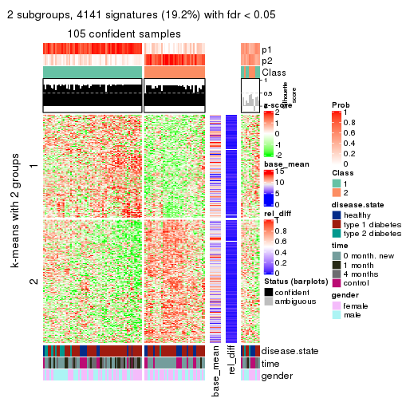
get_signatures(res, k = 3)
get_signatures(res, k = 4)

get_signatures(res, k = 5)
get_signatures(res, k = 6)
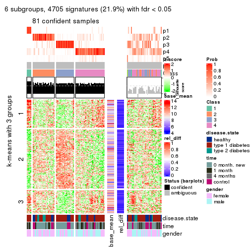
Signature heatmaps where rows are not scaled:
get_signatures(res, k = 2, scale_rows = FALSE)
get_signatures(res, k = 3, scale_rows = FALSE)
get_signatures(res, k = 4, scale_rows = FALSE)
get_signatures(res, k = 5, scale_rows = FALSE)
get_signatures(res, k = 6, scale_rows = FALSE)
Compare the overlap of signatures from different k:
compare_signatures(res)
get_signature() returns a data frame invisibly. TO get the list of signatures, the function
call should be assigned to a variable explicitly. In following code, if plot argument is set
to FALSE, no heatmap is plotted while only the differential analysis is performed.
# code only for demonstration
tb = get_signature(res, k = ..., plot = FALSE)
An example of the output of tb is:
#> which_row fdr mean_1 mean_2 scaled_mean_1 scaled_mean_2 km
#> 1 38 0.042760348 8.373488 9.131774 -0.5533452 0.5164555 1
#> 2 40 0.018707592 7.106213 8.469186 -0.6173731 0.5762149 1
#> 3 55 0.019134737 10.221463 11.207825 -0.6159697 0.5749050 1
#> 4 59 0.006059896 5.921854 7.869574 -0.6899429 0.6439467 1
#> 5 60 0.018055526 8.928898 10.211722 -0.6204761 0.5791110 1
#> 6 98 0.009384629 15.714769 14.887706 0.6635654 -0.6193277 2
...
The columns in tb are:
which_row: row indices corresponding to the input matrix.fdr: FDR for the differential test. mean_x: The mean value in group x.scaled_mean_x: The mean value in group x after rows are scaled.km: Row groups if k-means clustering is applied to rows.UMAP plot which shows how samples are separated.
dimension_reduction(res, k = 2, method = "UMAP")
dimension_reduction(res, k = 3, method = "UMAP")

dimension_reduction(res, k = 4, method = "UMAP")
dimension_reduction(res, k = 5, method = "UMAP")
dimension_reduction(res, k = 6, method = "UMAP")
Following heatmap shows how subgroups are split when increasing k:
collect_classes(res)
Test correlation between subgroups and known annotations. If the known annotation is numeric, one-way ANOVA test is applied, and if the known annotation is discrete, chi-squared contingency table test is applied.
test_to_known_factors(res)
#> n disease.state(p) time(p) gender(p) k
#> MAD:pam 105 0.1023 6.65e-06 0.87006 2
#> MAD:pam 96 0.0347 1.15e-04 0.08821 3
#> MAD:pam 94 0.1074 2.90e-04 0.03870 4
#> MAD:pam 93 0.1045 1.40e-04 0.00733 5
#> MAD:pam 81 0.1467 6.59e-04 0.00945 6
If matrix rows can be associated to genes, consider to use GO_Enrichment(res,
...) to perform function enrichment for the signature genes.
The object with results only for a single top-value method and a single partition method can be extracted as:
res = res_list["MAD", "mclust"]
# you can also extract it by
# res = res_list["MAD:mclust"]
A summary of res and all the functions that can be applied to it:
res
#> A 'ConsensusPartition' object with k = 2, 3, 4, 5, 6.
#> On a matrix with 21512 rows and 117 columns.
#> Top rows (1000, 2000, 3000, 4000, 5000) are extracted by 'MAD' method.
#> Subgroups are detected by 'mclust' method.
#> Performed in total 1250 partitions by row resampling.
#> Best k for subgroups seems to be 2.
#>
#> Following methods can be applied to this 'ConsensusPartition' object:
#> [1] "cola_report" "collect_classes" "collect_plots"
#> [4] "collect_stats" "colnames" "compare_signatures"
#> [7] "consensus_heatmap" "dimension_reduction" "functional_enrichment"
#> [10] "get_anno_col" "get_anno" "get_classes"
#> [13] "get_consensus" "get_matrix" "get_membership"
#> [16] "get_param" "get_signatures" "get_stats"
#> [19] "is_best_k" "is_stable_k" "membership_heatmap"
#> [22] "ncol" "nrow" "plot_ecdf"
#> [25] "rownames" "select_partition_number" "show"
#> [28] "suggest_best_k" "test_to_known_factors"
collect_plots() function collects all the plots made from res for all k (number of partitions)
into one single page to provide an easy and fast comparison between different k.
collect_plots(res)
The plots are:
k and the heatmap of
predicted classes for each k.k.k.k.All the plots in panels can be made by individual functions and they are plotted later in this section.
select_partition_number() produces several plots showing different
statistics for choosing “optimized” k. There are following statistics:
k;k, the area increased is defined as \(A_k - A_{k-1}\).The detailed explanations of these statistics can be found in the cola vignette.
Generally speaking, lower PAC score, higher mean silhouette score or higher
concordance corresponds to better partition. Rand index and Jaccard index
measure how similar the current partition is compared to partition with k-1.
If they are too similar, we won't accept k is better than k-1.
select_partition_number(res)
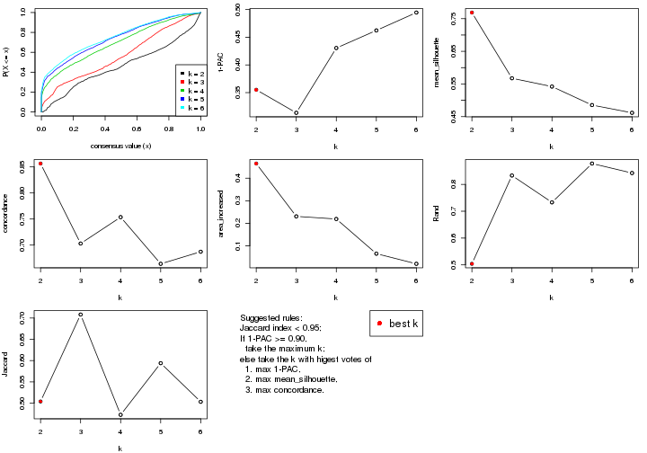
The numeric values for all these statistics can be obtained by get_stats().
get_stats(res)
#> k 1-PAC mean_silhouette concordance area_increased Rand Jaccard
#> 2 2 0.355 0.769 0.856 0.4648 0.504 0.504
#> 3 3 0.314 0.567 0.703 0.2308 0.833 0.708
#> 4 4 0.430 0.542 0.754 0.2192 0.733 0.473
#> 5 5 0.462 0.485 0.664 0.0655 0.878 0.594
#> 6 6 0.495 0.462 0.687 0.0207 0.842 0.503
suggest_best_k() suggests the best \(k\) based on these statistics. The rules are as follows:
NA.suggest_best_k(res)
#> [1] 2
Following shows the table of the partitions (You need to click the show/hide
code output link to see it). The membership matrix (columns with name p*)
is inferred by
clue::cl_consensus()
function with the SE method. Basically the value in the membership matrix
represents the probability to belong to a certain group. The finall class
label for an item is determined with the group with highest probability it
belongs to.
In get_classes() function, the entropy is calculated from the membership
matrix and the silhouette score is calculated from the consensus matrix.
cbind(get_classes(res, k = 2), get_membership(res, k = 2))
#> class entropy silhouette p1 p2
#> GSM254177 1 0.4431 0.8502 0.908 0.092
#> GSM254179 2 0.6531 0.8349 0.168 0.832
#> GSM254180 2 0.6048 0.8414 0.148 0.852
#> GSM254182 1 0.2778 0.8915 0.952 0.048
#> GSM254183 1 0.4690 0.8481 0.900 0.100
#> GSM254277 2 0.7528 0.8103 0.216 0.784
#> GSM254278 1 0.1843 0.8982 0.972 0.028
#> GSM254281 1 0.9983 -0.1436 0.524 0.476
#> GSM254282 2 0.7299 0.8204 0.204 0.796
#> GSM254284 2 0.5294 0.8444 0.120 0.880
#> GSM254286 1 0.2603 0.8935 0.956 0.044
#> GSM254290 2 0.6531 0.8352 0.168 0.832
#> GSM254291 1 0.2236 0.8977 0.964 0.036
#> GSM254293 2 0.9608 0.5632 0.384 0.616
#> GSM254178 1 0.0938 0.8882 0.988 0.012
#> GSM254181 2 0.3274 0.8369 0.060 0.940
#> GSM254279 1 0.2423 0.8966 0.960 0.040
#> GSM254280 1 0.2423 0.8966 0.960 0.040
#> GSM254283 2 0.0938 0.8130 0.012 0.988
#> GSM254285 1 0.2236 0.8977 0.964 0.036
#> GSM254287 1 0.9996 0.1328 0.512 0.488
#> GSM254288 2 0.9983 -0.0459 0.476 0.524
#> GSM254289 2 0.8081 0.7058 0.248 0.752
#> GSM254292 1 0.8499 0.5758 0.724 0.276
#> GSM254184 1 0.0376 0.8937 0.996 0.004
#> GSM254185 1 0.1843 0.8982 0.972 0.028
#> GSM254187 1 0.1843 0.8982 0.972 0.028
#> GSM254189 1 0.0376 0.8937 0.996 0.004
#> GSM254190 1 0.0000 0.8917 1.000 0.000
#> GSM254191 1 0.0000 0.8917 1.000 0.000
#> GSM254192 1 0.1843 0.8982 0.972 0.028
#> GSM254193 1 0.0000 0.8917 1.000 0.000
#> GSM254199 1 0.3879 0.8626 0.924 0.076
#> GSM254203 1 0.0000 0.8917 1.000 0.000
#> GSM254206 1 0.1414 0.8984 0.980 0.020
#> GSM254210 2 0.8327 0.7644 0.264 0.736
#> GSM254211 1 0.0376 0.8937 0.996 0.004
#> GSM254215 1 0.1843 0.8982 0.972 0.028
#> GSM254218 2 0.8608 0.7388 0.284 0.716
#> GSM254230 1 0.0000 0.8917 1.000 0.000
#> GSM254236 1 0.1843 0.8982 0.972 0.028
#> GSM254244 1 0.3114 0.8803 0.944 0.056
#> GSM254247 2 0.9963 0.3305 0.464 0.536
#> GSM254248 2 0.8386 0.7585 0.268 0.732
#> GSM254254 2 0.7219 0.8290 0.200 0.800
#> GSM254257 2 0.5178 0.8457 0.116 0.884
#> GSM254258 1 0.1414 0.8981 0.980 0.020
#> GSM254261 2 0.6343 0.8436 0.160 0.840
#> GSM254264 1 0.1843 0.8982 0.972 0.028
#> GSM254186 1 0.2423 0.8966 0.960 0.040
#> GSM254188 1 0.2423 0.8966 0.960 0.040
#> GSM254194 1 0.2423 0.8966 0.960 0.040
#> GSM254195 1 0.0000 0.8917 1.000 0.000
#> GSM254196 1 0.1633 0.8948 0.976 0.024
#> GSM254200 1 0.2423 0.8966 0.960 0.040
#> GSM254209 2 0.2043 0.8261 0.032 0.968
#> GSM254214 2 0.1843 0.8238 0.028 0.972
#> GSM254221 1 0.9608 0.3212 0.616 0.384
#> GSM254224 2 0.3274 0.8364 0.060 0.940
#> GSM254227 2 0.9988 0.2604 0.480 0.520
#> GSM254233 2 1.0000 0.1764 0.496 0.504
#> GSM254235 1 0.1633 0.8920 0.976 0.024
#> GSM254239 2 0.9209 0.4443 0.336 0.664
#> GSM254241 2 0.9460 0.5854 0.364 0.636
#> GSM254251 2 0.8081 0.7852 0.248 0.752
#> GSM254262 1 0.1633 0.8947 0.976 0.024
#> GSM254263 1 0.2603 0.8952 0.956 0.044
#> GSM254197 1 0.0000 0.8917 1.000 0.000
#> GSM254201 1 0.9286 0.4001 0.656 0.344
#> GSM254204 2 0.6247 0.8419 0.156 0.844
#> GSM254216 2 0.9129 0.6734 0.328 0.672
#> GSM254228 1 0.0000 0.8917 1.000 0.000
#> GSM254242 1 0.9661 0.2376 0.608 0.392
#> GSM254245 2 0.8386 0.7517 0.268 0.732
#> GSM254252 2 0.6438 0.8363 0.164 0.836
#> GSM254255 2 0.6048 0.8416 0.148 0.852
#> GSM254259 1 0.0000 0.8917 1.000 0.000
#> GSM254207 2 0.5059 0.8453 0.112 0.888
#> GSM254212 2 0.2236 0.8276 0.036 0.964
#> GSM254219 2 0.9963 0.2247 0.464 0.536
#> GSM254222 2 0.1184 0.8159 0.016 0.984
#> GSM254225 2 0.6247 0.8095 0.156 0.844
#> GSM254231 2 0.2043 0.8265 0.032 0.968
#> GSM254234 2 0.0938 0.8130 0.012 0.988
#> GSM254237 2 0.0938 0.8130 0.012 0.988
#> GSM254249 2 0.1843 0.8182 0.028 0.972
#> GSM254198 2 0.6531 0.8359 0.168 0.832
#> GSM254202 1 0.7528 0.6940 0.784 0.216
#> GSM254205 2 0.6247 0.8428 0.156 0.844
#> GSM254217 2 0.6438 0.8418 0.164 0.836
#> GSM254229 2 0.4562 0.8436 0.096 0.904
#> GSM254243 1 0.8081 0.6291 0.752 0.248
#> GSM254246 1 0.0000 0.8917 1.000 0.000
#> GSM254253 2 0.7745 0.8148 0.228 0.772
#> GSM254256 2 0.6048 0.8419 0.148 0.852
#> GSM254260 2 0.7219 0.8225 0.200 0.800
#> GSM254208 2 0.1843 0.8158 0.028 0.972
#> GSM254213 2 0.2043 0.8249 0.032 0.968
#> GSM254220 2 0.9996 0.1481 0.488 0.512
#> GSM254223 2 0.0938 0.8130 0.012 0.988
#> GSM254226 2 0.3879 0.8409 0.076 0.924
#> GSM254232 2 0.0938 0.8130 0.012 0.988
#> GSM254238 2 0.6343 0.7809 0.160 0.840
#> GSM254240 1 0.8813 0.5285 0.700 0.300
#> GSM254250 1 0.7602 0.7055 0.780 0.220
#> GSM254268 2 0.7139 0.8231 0.196 0.804
#> GSM254269 2 0.4431 0.8431 0.092 0.908
#> GSM254270 2 0.7299 0.8182 0.204 0.796
#> GSM254272 2 0.5946 0.8422 0.144 0.856
#> GSM254273 2 0.6148 0.8411 0.152 0.848
#> GSM254274 2 0.5737 0.8437 0.136 0.864
#> GSM254265 2 0.6148 0.8404 0.152 0.848
#> GSM254266 2 0.2423 0.8311 0.040 0.960
#> GSM254267 2 0.3114 0.8352 0.056 0.944
#> GSM254271 2 0.2236 0.8276 0.036 0.964
#> GSM254275 2 0.0938 0.8130 0.012 0.988
#> GSM254276 2 0.2236 0.8276 0.036 0.964
cbind(get_classes(res, k = 3), get_membership(res, k = 3))
#> class entropy silhouette p1 p2 p3
#> GSM254177 3 0.7786 0.14226 0.068 0.332 0.600
#> GSM254179 2 0.6808 0.75611 0.184 0.732 0.084
#> GSM254180 2 0.6808 0.75499 0.184 0.732 0.084
#> GSM254182 3 0.7351 0.04427 0.268 0.068 0.664
#> GSM254183 3 0.8518 0.09565 0.104 0.356 0.540
#> GSM254277 2 0.7485 0.73601 0.224 0.680 0.096
#> GSM254278 3 0.0000 0.54008 0.000 0.000 1.000
#> GSM254281 2 0.9290 0.59546 0.256 0.524 0.220
#> GSM254282 2 0.7309 0.74266 0.124 0.708 0.168
#> GSM254284 2 0.5339 0.77354 0.096 0.824 0.080
#> GSM254286 3 0.7926 0.08948 0.216 0.128 0.656
#> GSM254290 2 0.7304 0.73586 0.228 0.688 0.084
#> GSM254291 3 0.6354 0.31324 0.052 0.204 0.744
#> GSM254293 2 0.8430 0.70118 0.260 0.604 0.136
#> GSM254178 1 0.6314 0.74546 0.604 0.004 0.392
#> GSM254181 2 0.3816 0.73469 0.148 0.852 0.000
#> GSM254279 3 0.2537 0.52019 0.000 0.080 0.920
#> GSM254280 3 0.2772 0.52129 0.004 0.080 0.916
#> GSM254283 2 0.3482 0.73633 0.128 0.872 0.000
#> GSM254285 3 0.1643 0.54236 0.000 0.044 0.956
#> GSM254287 2 0.7363 0.42955 0.064 0.656 0.280
#> GSM254288 2 0.7283 0.46689 0.068 0.672 0.260
#> GSM254289 2 0.5696 0.71516 0.148 0.796 0.056
#> GSM254292 3 0.9947 -0.06607 0.288 0.336 0.376
#> GSM254184 3 0.4994 0.40063 0.160 0.024 0.816
#> GSM254185 3 0.0000 0.54008 0.000 0.000 1.000
#> GSM254187 3 0.0000 0.54008 0.000 0.000 1.000
#> GSM254189 3 0.2796 0.49833 0.092 0.000 0.908
#> GSM254190 3 0.6286 -0.41284 0.464 0.000 0.536
#> GSM254191 3 0.5650 0.12039 0.312 0.000 0.688
#> GSM254192 3 0.3181 0.50659 0.064 0.024 0.912
#> GSM254193 3 0.5810 0.04235 0.336 0.000 0.664
#> GSM254199 3 0.9149 -0.14734 0.144 0.416 0.440
#> GSM254203 1 0.6095 0.74884 0.608 0.000 0.392
#> GSM254206 3 0.8140 -0.48679 0.456 0.068 0.476
#> GSM254210 2 0.7412 0.74315 0.176 0.700 0.124
#> GSM254211 1 0.6811 0.71314 0.580 0.016 0.404
#> GSM254215 3 0.0000 0.54008 0.000 0.000 1.000
#> GSM254218 2 0.8578 0.70606 0.224 0.604 0.172
#> GSM254230 1 0.6095 0.74884 0.608 0.000 0.392
#> GSM254236 3 0.0661 0.54339 0.004 0.008 0.988
#> GSM254244 1 0.8523 0.36907 0.464 0.092 0.444
#> GSM254247 2 0.9212 0.63118 0.304 0.516 0.180
#> GSM254248 2 0.7963 0.71507 0.152 0.660 0.188
#> GSM254254 2 0.6438 0.75059 0.188 0.748 0.064
#> GSM254257 2 0.6138 0.75331 0.172 0.768 0.060
#> GSM254258 3 0.1529 0.53070 0.040 0.000 0.960
#> GSM254261 2 0.6519 0.75441 0.132 0.760 0.108
#> GSM254264 3 0.0000 0.54008 0.000 0.000 1.000
#> GSM254186 3 0.2625 0.51695 0.000 0.084 0.916
#> GSM254188 3 0.2625 0.51695 0.000 0.084 0.916
#> GSM254194 3 0.3694 0.53270 0.052 0.052 0.896
#> GSM254195 3 0.6286 -0.41284 0.464 0.000 0.536
#> GSM254196 3 0.7739 0.27314 0.188 0.136 0.676
#> GSM254200 3 0.2625 0.51695 0.000 0.084 0.916
#> GSM254209 2 0.3918 0.73068 0.140 0.856 0.004
#> GSM254214 2 0.3686 0.73156 0.140 0.860 0.000
#> GSM254221 2 0.9455 0.37740 0.304 0.488 0.208
#> GSM254224 2 0.3349 0.77088 0.108 0.888 0.004
#> GSM254227 2 0.7139 0.58280 0.068 0.688 0.244
#> GSM254233 2 0.8568 0.60535 0.200 0.608 0.192
#> GSM254235 1 0.8414 0.56016 0.528 0.092 0.380
#> GSM254239 2 0.6806 0.53834 0.060 0.712 0.228
#> GSM254241 2 0.6935 0.65673 0.188 0.724 0.088
#> GSM254251 2 0.6546 0.69050 0.148 0.756 0.096
#> GSM254262 3 0.4836 0.50033 0.080 0.072 0.848
#> GSM254263 3 0.4527 0.50592 0.052 0.088 0.860
#> GSM254197 1 0.6095 0.74884 0.608 0.000 0.392
#> GSM254201 2 0.9722 0.50790 0.312 0.444 0.244
#> GSM254204 2 0.6897 0.75267 0.220 0.712 0.068
#> GSM254216 2 0.8075 0.71267 0.276 0.620 0.104
#> GSM254228 1 0.6095 0.74884 0.608 0.000 0.392
#> GSM254242 2 0.9594 0.56230 0.280 0.476 0.244
#> GSM254245 2 0.7778 0.72312 0.264 0.644 0.092
#> GSM254252 2 0.7092 0.74279 0.208 0.708 0.084
#> GSM254255 2 0.7092 0.74436 0.208 0.708 0.084
#> GSM254259 1 0.6095 0.74884 0.608 0.000 0.392
#> GSM254207 2 0.3846 0.77383 0.108 0.876 0.016
#> GSM254212 2 0.3619 0.73339 0.136 0.864 0.000
#> GSM254219 2 0.8286 0.64535 0.236 0.624 0.140
#> GSM254222 2 0.1411 0.76893 0.036 0.964 0.000
#> GSM254225 2 0.5403 0.72748 0.124 0.816 0.060
#> GSM254231 2 0.1753 0.76909 0.048 0.952 0.000
#> GSM254234 2 0.2448 0.75212 0.076 0.924 0.000
#> GSM254237 2 0.1031 0.76221 0.024 0.976 0.000
#> GSM254249 2 0.2959 0.76981 0.100 0.900 0.000
#> GSM254198 2 0.6858 0.75329 0.188 0.728 0.084
#> GSM254202 3 0.9813 -0.03539 0.268 0.304 0.428
#> GSM254205 2 0.6847 0.74821 0.232 0.708 0.060
#> GSM254217 2 0.6295 0.76850 0.164 0.764 0.072
#> GSM254229 2 0.4662 0.76829 0.124 0.844 0.032
#> GSM254243 1 0.9756 -0.21733 0.436 0.316 0.248
#> GSM254246 1 0.6095 0.74884 0.608 0.000 0.392
#> GSM254253 2 0.7372 0.74028 0.220 0.688 0.092
#> GSM254256 2 0.6572 0.75977 0.172 0.748 0.080
#> GSM254260 2 0.7523 0.72848 0.260 0.660 0.080
#> GSM254208 2 0.2356 0.76782 0.072 0.928 0.000
#> GSM254213 2 0.3918 0.73068 0.140 0.856 0.004
#> GSM254220 2 0.8703 0.63529 0.256 0.584 0.160
#> GSM254223 2 0.0892 0.76615 0.020 0.980 0.000
#> GSM254226 2 0.3116 0.74400 0.108 0.892 0.000
#> GSM254232 2 0.0892 0.76408 0.020 0.980 0.000
#> GSM254238 2 0.4790 0.75305 0.096 0.848 0.056
#> GSM254240 2 0.9579 0.00907 0.352 0.444 0.204
#> GSM254250 2 0.9926 -0.23643 0.328 0.388 0.284
#> GSM254268 2 0.6758 0.74976 0.200 0.728 0.072
#> GSM254269 2 0.5111 0.76665 0.144 0.820 0.036
#> GSM254270 2 0.7421 0.73804 0.240 0.676 0.084
#> GSM254272 2 0.6835 0.76334 0.180 0.732 0.088
#> GSM254273 2 0.7339 0.74995 0.224 0.688 0.088
#> GSM254274 2 0.6025 0.76945 0.140 0.784 0.076
#> GSM254265 2 0.6652 0.76219 0.172 0.744 0.084
#> GSM254266 2 0.0661 0.76886 0.008 0.988 0.004
#> GSM254267 2 0.2711 0.77189 0.088 0.912 0.000
#> GSM254271 2 0.3686 0.73156 0.140 0.860 0.000
#> GSM254275 2 0.4033 0.73138 0.136 0.856 0.008
#> GSM254276 2 0.2772 0.75255 0.080 0.916 0.004
cbind(get_classes(res, k = 4), get_membership(res, k = 4))
#> class entropy silhouette p1 p2 p3 p4
#> GSM254177 3 0.7775 0.41010 0.104 0.064 0.576 0.256
#> GSM254179 4 0.4955 0.19387 0.000 0.444 0.000 0.556
#> GSM254180 2 0.4961 0.23219 0.000 0.552 0.000 0.448
#> GSM254182 1 0.6030 0.60305 0.672 0.008 0.068 0.252
#> GSM254183 1 0.9245 0.38494 0.456 0.156 0.172 0.216
#> GSM254277 4 0.4546 0.58246 0.012 0.256 0.000 0.732
#> GSM254278 3 0.0921 0.81547 0.028 0.000 0.972 0.000
#> GSM254281 4 0.3522 0.63941 0.060 0.040 0.020 0.880
#> GSM254282 4 0.7282 -0.00966 0.004 0.424 0.128 0.444
#> GSM254284 2 0.4564 0.50558 0.000 0.672 0.000 0.328
#> GSM254286 1 0.8030 0.34160 0.480 0.016 0.252 0.252
#> GSM254290 4 0.4277 0.56135 0.000 0.280 0.000 0.720
#> GSM254291 3 0.7184 0.45020 0.300 0.052 0.588 0.060
#> GSM254293 4 0.2954 0.64768 0.028 0.064 0.008 0.900
#> GSM254178 1 0.0336 0.72652 0.992 0.000 0.000 0.008
#> GSM254181 2 0.0779 0.66996 0.000 0.980 0.004 0.016
#> GSM254279 3 0.1118 0.81721 0.036 0.000 0.964 0.000
#> GSM254280 3 0.1118 0.81721 0.036 0.000 0.964 0.000
#> GSM254283 2 0.1118 0.67906 0.000 0.964 0.000 0.036
#> GSM254285 3 0.1902 0.80702 0.064 0.004 0.932 0.000
#> GSM254287 2 0.6645 0.04850 0.408 0.528 0.040 0.024
#> GSM254288 2 0.6301 0.21032 0.368 0.580 0.024 0.028
#> GSM254289 2 0.3113 0.60425 0.108 0.876 0.004 0.012
#> GSM254292 4 0.5368 0.48278 0.176 0.024 0.044 0.756
#> GSM254184 1 0.6835 0.43938 0.600 0.004 0.264 0.132
#> GSM254185 3 0.0921 0.81547 0.028 0.000 0.972 0.000
#> GSM254187 3 0.0921 0.81547 0.028 0.000 0.972 0.000
#> GSM254189 1 0.5695 -0.11193 0.500 0.000 0.476 0.024
#> GSM254190 1 0.1520 0.72352 0.956 0.000 0.024 0.020
#> GSM254191 1 0.2623 0.70177 0.908 0.000 0.064 0.028
#> GSM254192 3 0.4978 0.42994 0.384 0.000 0.612 0.004
#> GSM254193 1 0.2546 0.70432 0.912 0.000 0.060 0.028
#> GSM254199 1 0.7672 -0.03114 0.428 0.124 0.020 0.428
#> GSM254203 1 0.0000 0.72520 1.000 0.000 0.000 0.000
#> GSM254206 1 0.4976 0.62374 0.716 0.004 0.020 0.260
#> GSM254210 4 0.4831 0.56647 0.016 0.280 0.000 0.704
#> GSM254211 1 0.1510 0.72773 0.956 0.000 0.016 0.028
#> GSM254215 3 0.0921 0.81547 0.028 0.000 0.972 0.000
#> GSM254218 4 0.6069 0.59139 0.044 0.232 0.032 0.692
#> GSM254230 1 0.0804 0.72758 0.980 0.000 0.012 0.008
#> GSM254236 3 0.2530 0.79082 0.100 0.000 0.896 0.004
#> GSM254244 1 0.5498 0.48387 0.624 0.004 0.020 0.352
#> GSM254247 4 0.3881 0.63347 0.068 0.040 0.028 0.864
#> GSM254248 4 0.5194 0.47443 0.012 0.332 0.004 0.652
#> GSM254254 2 0.3834 0.61362 0.000 0.848 0.076 0.076
#> GSM254257 2 0.2530 0.64596 0.000 0.896 0.004 0.100
#> GSM254258 3 0.4663 0.62406 0.272 0.000 0.716 0.012
#> GSM254261 2 0.4475 0.60966 0.004 0.816 0.100 0.080
#> GSM254264 3 0.0921 0.81547 0.028 0.000 0.972 0.000
#> GSM254186 3 0.1118 0.81739 0.036 0.000 0.964 0.000
#> GSM254188 3 0.1118 0.81739 0.036 0.000 0.964 0.000
#> GSM254194 3 0.5406 0.61044 0.268 0.004 0.692 0.036
#> GSM254195 1 0.1520 0.72352 0.956 0.000 0.024 0.020
#> GSM254196 1 0.7383 0.47427 0.616 0.120 0.220 0.044
#> GSM254200 3 0.1302 0.81647 0.044 0.000 0.956 0.000
#> GSM254209 2 0.0376 0.66738 0.000 0.992 0.004 0.004
#> GSM254214 2 0.0657 0.66926 0.000 0.984 0.004 0.012
#> GSM254221 4 0.7368 0.49222 0.144 0.204 0.036 0.616
#> GSM254224 2 0.5161 0.16414 0.004 0.520 0.000 0.476
#> GSM254227 2 0.7369 0.21558 0.160 0.544 0.008 0.288
#> GSM254233 4 0.7419 0.43647 0.092 0.268 0.048 0.592
#> GSM254235 1 0.4612 0.64239 0.780 0.020 0.012 0.188
#> GSM254239 2 0.5732 0.38774 0.292 0.664 0.012 0.032
#> GSM254241 2 0.7597 0.14864 0.196 0.492 0.004 0.308
#> GSM254251 2 0.4281 0.52887 0.000 0.792 0.180 0.028
#> GSM254262 3 0.4991 0.42266 0.388 0.004 0.608 0.000
#> GSM254263 3 0.5299 0.41209 0.388 0.008 0.600 0.004
#> GSM254197 1 0.0336 0.72431 0.992 0.000 0.000 0.008
#> GSM254201 4 0.5049 0.59365 0.120 0.052 0.032 0.796
#> GSM254204 4 0.4522 0.48932 0.000 0.320 0.000 0.680
#> GSM254216 4 0.4770 0.65092 0.048 0.168 0.004 0.780
#> GSM254228 1 0.0000 0.72520 1.000 0.000 0.000 0.000
#> GSM254242 4 0.5180 0.59347 0.124 0.056 0.032 0.788
#> GSM254245 4 0.4290 0.64860 0.036 0.164 0.000 0.800
#> GSM254252 4 0.4331 0.54672 0.000 0.288 0.000 0.712
#> GSM254255 4 0.4624 0.46560 0.000 0.340 0.000 0.660
#> GSM254259 1 0.0000 0.72520 1.000 0.000 0.000 0.000
#> GSM254207 2 0.5290 0.25604 0.004 0.552 0.004 0.440
#> GSM254212 2 0.1398 0.67890 0.000 0.956 0.004 0.040
#> GSM254219 4 0.6998 0.49394 0.104 0.240 0.028 0.628
#> GSM254222 2 0.3486 0.64954 0.000 0.812 0.000 0.188
#> GSM254225 2 0.3383 0.64544 0.076 0.872 0.000 0.052
#> GSM254231 2 0.4072 0.59566 0.000 0.748 0.000 0.252
#> GSM254234 2 0.2589 0.67445 0.000 0.884 0.000 0.116
#> GSM254237 2 0.3324 0.67035 0.012 0.852 0.000 0.136
#> GSM254249 2 0.4985 0.15232 0.000 0.532 0.000 0.468
#> GSM254198 4 0.4679 0.43042 0.000 0.352 0.000 0.648
#> GSM254202 4 0.5266 0.44571 0.212 0.020 0.028 0.740
#> GSM254205 4 0.4356 0.54825 0.000 0.292 0.000 0.708
#> GSM254217 2 0.5590 0.17866 0.020 0.524 0.000 0.456
#> GSM254229 2 0.3710 0.64801 0.004 0.804 0.000 0.192
#> GSM254243 4 0.5930 0.53752 0.248 0.072 0.004 0.676
#> GSM254246 1 0.0000 0.72520 1.000 0.000 0.000 0.000
#> GSM254253 4 0.5767 0.53702 0.060 0.280 0.000 0.660
#> GSM254256 2 0.4843 0.34653 0.000 0.604 0.000 0.396
#> GSM254260 4 0.3377 0.64852 0.012 0.140 0.000 0.848
#> GSM254208 2 0.4730 0.43475 0.000 0.636 0.000 0.364
#> GSM254213 2 0.0376 0.66738 0.000 0.992 0.004 0.004
#> GSM254220 4 0.6227 0.58633 0.112 0.136 0.032 0.720
#> GSM254223 2 0.4134 0.58544 0.000 0.740 0.000 0.260
#> GSM254226 2 0.1118 0.68050 0.000 0.964 0.000 0.036
#> GSM254232 2 0.3311 0.65497 0.000 0.828 0.000 0.172
#> GSM254238 2 0.6296 0.23193 0.064 0.548 0.000 0.388
#> GSM254240 4 0.8156 0.24629 0.316 0.296 0.008 0.380
#> GSM254250 1 0.8034 -0.02894 0.416 0.332 0.008 0.244
#> GSM254268 2 0.3800 0.62730 0.036 0.848 0.004 0.112
#> GSM254269 2 0.2973 0.65817 0.000 0.856 0.000 0.144
#> GSM254270 4 0.4516 0.59364 0.012 0.252 0.000 0.736
#> GSM254272 2 0.4624 0.43089 0.000 0.660 0.000 0.340
#> GSM254273 2 0.4019 0.55727 0.000 0.792 0.012 0.196
#> GSM254274 2 0.4624 0.45082 0.000 0.660 0.000 0.340
#> GSM254265 2 0.4948 0.17038 0.000 0.560 0.000 0.440
#> GSM254266 2 0.3688 0.63972 0.000 0.792 0.000 0.208
#> GSM254267 2 0.4431 0.56074 0.000 0.696 0.000 0.304
#> GSM254271 2 0.0524 0.67185 0.000 0.988 0.004 0.008
#> GSM254275 2 0.1796 0.67369 0.032 0.948 0.004 0.016
#> GSM254276 2 0.2081 0.67900 0.000 0.916 0.000 0.084
cbind(get_classes(res, k = 5), get_membership(res, k = 5))
#> class entropy silhouette p1 p2 p3 p4 p5
#> GSM254177 3 0.5711 0.61242 0.044 0.068 0.744 0.072 0.072
#> GSM254179 5 0.6679 0.66316 0.000 0.244 0.000 0.336 0.420
#> GSM254180 5 0.6375 0.58357 0.000 0.316 0.000 0.188 0.496
#> GSM254182 1 0.6564 0.60428 0.580 0.000 0.032 0.228 0.160
#> GSM254183 1 0.9195 0.35982 0.396 0.196 0.136 0.188 0.084
#> GSM254277 5 0.6462 0.66381 0.000 0.188 0.000 0.356 0.456
#> GSM254278 3 0.0404 0.79093 0.000 0.000 0.988 0.000 0.012
#> GSM254281 4 0.2933 0.63810 0.004 0.020 0.004 0.872 0.100
#> GSM254282 5 0.7823 0.58920 0.000 0.240 0.112 0.188 0.460
#> GSM254284 5 0.6373 0.42443 0.000 0.412 0.000 0.164 0.424
#> GSM254286 1 0.7498 0.31527 0.392 0.004 0.164 0.388 0.052
#> GSM254290 5 0.6274 0.58452 0.000 0.148 0.000 0.424 0.428
#> GSM254291 3 0.6678 0.40398 0.308 0.072 0.564 0.032 0.024
#> GSM254293 4 0.4210 0.41031 0.000 0.036 0.000 0.740 0.224
#> GSM254178 1 0.0451 0.71400 0.988 0.000 0.008 0.000 0.004
#> GSM254181 2 0.1195 0.57934 0.000 0.960 0.000 0.012 0.028
#> GSM254279 3 0.0404 0.78977 0.000 0.000 0.988 0.000 0.012
#> GSM254280 3 0.0404 0.78977 0.000 0.000 0.988 0.000 0.012
#> GSM254283 2 0.2286 0.56372 0.000 0.888 0.000 0.004 0.108
#> GSM254285 3 0.0290 0.79023 0.000 0.000 0.992 0.000 0.008
#> GSM254287 2 0.6825 0.13497 0.324 0.512 0.016 0.012 0.136
#> GSM254288 2 0.6869 0.11860 0.328 0.504 0.012 0.016 0.140
#> GSM254289 2 0.4260 0.50822 0.088 0.784 0.000 0.004 0.124
#> GSM254292 4 0.2187 0.65052 0.040 0.008 0.004 0.924 0.024
#> GSM254184 1 0.6874 0.52592 0.580 0.000 0.180 0.064 0.176
#> GSM254185 3 0.0510 0.79038 0.000 0.000 0.984 0.000 0.016
#> GSM254187 3 0.0404 0.79093 0.000 0.000 0.988 0.000 0.012
#> GSM254189 3 0.5745 0.14859 0.448 0.000 0.476 0.004 0.072
#> GSM254190 1 0.3516 0.69891 0.812 0.000 0.020 0.004 0.164
#> GSM254191 1 0.3773 0.69220 0.800 0.000 0.032 0.004 0.164
#> GSM254192 3 0.4871 0.40160 0.384 0.000 0.592 0.012 0.012
#> GSM254193 1 0.3435 0.69871 0.820 0.000 0.020 0.004 0.156
#> GSM254199 1 0.7640 0.19763 0.448 0.108 0.016 0.352 0.076
#> GSM254203 1 0.0290 0.71339 0.992 0.000 0.000 0.000 0.008
#> GSM254206 1 0.5572 0.56775 0.624 0.000 0.016 0.296 0.064
#> GSM254210 5 0.6817 0.63346 0.012 0.184 0.000 0.396 0.408
#> GSM254211 1 0.3704 0.71008 0.832 0.000 0.020 0.112 0.036
#> GSM254215 3 0.0404 0.79093 0.000 0.000 0.988 0.000 0.012
#> GSM254218 5 0.7202 0.67155 0.000 0.220 0.028 0.316 0.436
#> GSM254230 1 0.1168 0.71722 0.960 0.000 0.008 0.032 0.000
#> GSM254236 3 0.3696 0.67575 0.212 0.000 0.772 0.000 0.016
#> GSM254244 1 0.5682 0.41646 0.560 0.000 0.012 0.368 0.060
#> GSM254247 4 0.2283 0.65753 0.008 0.036 0.000 0.916 0.040
#> GSM254248 5 0.7196 0.65836 0.024 0.224 0.000 0.348 0.404
#> GSM254254 2 0.3923 0.51202 0.000 0.832 0.064 0.068 0.036
#> GSM254257 2 0.3090 0.51733 0.000 0.860 0.000 0.088 0.052
#> GSM254258 3 0.3934 0.64715 0.236 0.000 0.748 0.004 0.012
#> GSM254261 2 0.5150 0.48955 0.004 0.748 0.072 0.040 0.136
#> GSM254264 3 0.0404 0.79093 0.000 0.000 0.988 0.000 0.012
#> GSM254186 3 0.1012 0.78982 0.012 0.000 0.968 0.000 0.020
#> GSM254188 3 0.0771 0.78901 0.004 0.000 0.976 0.000 0.020
#> GSM254194 3 0.3168 0.74668 0.116 0.004 0.856 0.016 0.008
#> GSM254195 1 0.3516 0.69891 0.812 0.000 0.020 0.004 0.164
#> GSM254196 1 0.6979 0.56898 0.600 0.064 0.144 0.012 0.180
#> GSM254200 3 0.2331 0.77066 0.080 0.000 0.900 0.000 0.020
#> GSM254209 2 0.0671 0.57710 0.000 0.980 0.004 0.000 0.016
#> GSM254214 2 0.0703 0.57942 0.000 0.976 0.000 0.000 0.024
#> GSM254221 4 0.4281 0.58203 0.004 0.172 0.000 0.768 0.056
#> GSM254224 5 0.6456 0.36906 0.000 0.392 0.000 0.180 0.428
#> GSM254227 2 0.8135 0.07541 0.212 0.452 0.012 0.104 0.220
#> GSM254233 4 0.5981 0.47247 0.004 0.212 0.032 0.656 0.096
#> GSM254235 1 0.4362 0.67161 0.800 0.016 0.008 0.116 0.060
#> GSM254239 2 0.6313 0.30924 0.264 0.596 0.012 0.012 0.116
#> GSM254241 5 0.8405 0.13881 0.248 0.296 0.004 0.124 0.328
#> GSM254251 2 0.3953 0.45057 0.000 0.780 0.188 0.008 0.024
#> GSM254262 3 0.4900 0.34555 0.412 0.004 0.564 0.000 0.020
#> GSM254263 3 0.5447 0.35845 0.396 0.012 0.552 0.000 0.040
#> GSM254197 1 0.0613 0.71305 0.984 0.000 0.004 0.004 0.008
#> GSM254201 4 0.1758 0.66155 0.008 0.020 0.004 0.944 0.024
#> GSM254204 5 0.6186 0.53548 0.000 0.136 0.000 0.412 0.452
#> GSM254216 4 0.5587 0.00449 0.012 0.048 0.000 0.536 0.404
#> GSM254228 1 0.0000 0.71323 1.000 0.000 0.000 0.000 0.000
#> GSM254242 4 0.2941 0.66064 0.032 0.020 0.000 0.884 0.064
#> GSM254245 4 0.5651 -0.18156 0.008 0.056 0.000 0.492 0.444
#> GSM254252 5 0.6112 0.58683 0.000 0.140 0.000 0.344 0.516
#> GSM254255 5 0.6336 0.61900 0.000 0.164 0.000 0.368 0.468
#> GSM254259 1 0.0000 0.71323 1.000 0.000 0.000 0.000 0.000
#> GSM254207 5 0.6585 0.34747 0.000 0.408 0.012 0.144 0.436
#> GSM254212 2 0.2136 0.57179 0.000 0.904 0.000 0.008 0.088
#> GSM254219 4 0.4777 0.59340 0.016 0.152 0.000 0.752 0.080
#> GSM254222 2 0.4674 0.07745 0.000 0.568 0.000 0.016 0.416
#> GSM254225 2 0.3406 0.55360 0.084 0.856 0.000 0.020 0.040
#> GSM254231 2 0.4930 -0.01911 0.000 0.548 0.000 0.028 0.424
#> GSM254234 2 0.4046 0.35066 0.000 0.696 0.000 0.008 0.296
#> GSM254237 2 0.4238 0.21240 0.000 0.628 0.000 0.004 0.368
#> GSM254249 5 0.6497 0.38291 0.000 0.392 0.000 0.188 0.420
#> GSM254198 5 0.6564 0.64369 0.000 0.204 0.000 0.376 0.420
#> GSM254202 4 0.3687 0.62638 0.072 0.008 0.028 0.852 0.040
#> GSM254205 5 0.6208 0.54664 0.000 0.144 0.000 0.376 0.480
#> GSM254217 5 0.6850 0.63295 0.012 0.276 0.000 0.236 0.476
#> GSM254229 2 0.5187 0.31142 0.000 0.656 0.000 0.084 0.260
#> GSM254243 4 0.7406 0.25691 0.252 0.024 0.008 0.440 0.276
#> GSM254246 1 0.0000 0.71323 1.000 0.000 0.000 0.000 0.000
#> GSM254253 5 0.7660 0.48970 0.076 0.136 0.008 0.336 0.444
#> GSM254256 5 0.6477 0.57532 0.000 0.352 0.000 0.192 0.456
#> GSM254260 4 0.5351 0.06707 0.000 0.060 0.000 0.560 0.380
#> GSM254208 2 0.5884 -0.17567 0.000 0.480 0.000 0.100 0.420
#> GSM254213 2 0.0703 0.57688 0.000 0.976 0.000 0.000 0.024
#> GSM254220 4 0.3916 0.63917 0.012 0.096 0.000 0.820 0.072
#> GSM254223 2 0.5622 -0.13181 0.000 0.508 0.000 0.076 0.416
#> GSM254226 2 0.2753 0.55392 0.000 0.856 0.008 0.000 0.136
#> GSM254232 2 0.4547 0.12692 0.000 0.588 0.000 0.012 0.400
#> GSM254238 2 0.7091 -0.29729 0.036 0.420 0.000 0.156 0.388
#> GSM254240 1 0.8416 -0.06268 0.384 0.168 0.004 0.196 0.248
#> GSM254250 1 0.7829 0.34482 0.508 0.196 0.008 0.148 0.140
#> GSM254268 2 0.4658 0.48213 0.016 0.768 0.000 0.108 0.108
#> GSM254269 2 0.4701 0.41245 0.000 0.720 0.000 0.076 0.204
#> GSM254270 5 0.6136 0.43304 0.004 0.112 0.000 0.416 0.468
#> GSM254272 5 0.6600 0.39241 0.000 0.404 0.004 0.180 0.412
#> GSM254273 2 0.5531 0.34209 0.000 0.680 0.012 0.140 0.168
#> GSM254274 5 0.6401 0.56741 0.000 0.336 0.000 0.184 0.480
#> GSM254265 5 0.6581 0.65203 0.000 0.280 0.000 0.252 0.468
#> GSM254266 2 0.5103 -0.10627 0.000 0.512 0.000 0.036 0.452
#> GSM254267 2 0.5295 -0.19842 0.000 0.488 0.000 0.048 0.464
#> GSM254271 2 0.0880 0.57716 0.000 0.968 0.000 0.000 0.032
#> GSM254275 2 0.1913 0.58061 0.016 0.932 0.000 0.008 0.044
#> GSM254276 2 0.3662 0.43352 0.000 0.744 0.000 0.004 0.252
cbind(get_classes(res, k = 6), get_membership(res, k = 6))
#> class entropy silhouette p1 p2 p3 p4 p5 p6
#> GSM254177 3 0.4938 0.41908 0.004 0.148 0.732 0.076 0.024 0.016
#> GSM254179 2 0.6277 0.23874 0.000 0.476 0.000 0.356 0.116 0.052
#> GSM254180 2 0.6211 0.43038 0.000 0.540 0.000 0.288 0.092 0.080
#> GSM254182 6 0.7742 0.43659 0.232 0.000 0.048 0.136 0.136 0.448
#> GSM254183 5 0.8600 0.00000 0.108 0.156 0.132 0.076 0.456 0.072
#> GSM254277 2 0.6349 0.19019 0.000 0.440 0.000 0.384 0.128 0.048
#> GSM254278 3 0.0405 0.84595 0.000 0.000 0.988 0.000 0.004 0.008
#> GSM254281 4 0.4745 0.37109 0.000 0.032 0.000 0.636 0.308 0.024
#> GSM254282 2 0.7325 0.39220 0.000 0.500 0.096 0.244 0.104 0.056
#> GSM254284 2 0.5143 0.54600 0.000 0.648 0.000 0.256 0.048 0.048
#> GSM254286 4 0.8293 -0.26594 0.144 0.008 0.252 0.312 0.252 0.032
#> GSM254290 4 0.5986 0.02973 0.000 0.368 0.000 0.496 0.092 0.044
#> GSM254291 3 0.5452 0.58821 0.116 0.080 0.716 0.020 0.060 0.008
#> GSM254293 4 0.5592 0.41837 0.000 0.120 0.000 0.616 0.232 0.032
#> GSM254178 1 0.0912 0.68116 0.972 0.000 0.004 0.004 0.012 0.008
#> GSM254181 2 0.2842 0.55299 0.000 0.868 0.000 0.012 0.076 0.044
#> GSM254279 3 0.0937 0.84423 0.000 0.000 0.960 0.000 0.000 0.040
#> GSM254280 3 0.1082 0.84564 0.000 0.004 0.956 0.000 0.000 0.040
#> GSM254283 2 0.1173 0.61718 0.000 0.960 0.000 0.016 0.008 0.016
#> GSM254285 3 0.1053 0.84869 0.004 0.000 0.964 0.000 0.012 0.020
#> GSM254287 2 0.6576 -0.37223 0.076 0.448 0.012 0.000 0.384 0.080
#> GSM254288 2 0.6542 -0.29898 0.076 0.464 0.000 0.004 0.356 0.100
#> GSM254289 2 0.5311 0.08256 0.012 0.612 0.004 0.000 0.280 0.092
#> GSM254292 4 0.4203 0.26252 0.000 0.004 0.004 0.564 0.424 0.004
#> GSM254184 6 0.6617 0.65364 0.236 0.000 0.136 0.008 0.080 0.540
#> GSM254185 3 0.0260 0.84668 0.000 0.000 0.992 0.000 0.000 0.008
#> GSM254187 3 0.0260 0.84659 0.000 0.000 0.992 0.000 0.000 0.008
#> GSM254189 3 0.5968 0.11187 0.160 0.000 0.504 0.000 0.016 0.320
#> GSM254190 6 0.4101 0.74102 0.408 0.000 0.012 0.000 0.000 0.580
#> GSM254191 6 0.4792 0.73764 0.408 0.000 0.012 0.000 0.032 0.548
#> GSM254192 3 0.3696 0.72379 0.148 0.000 0.796 0.000 0.036 0.020
#> GSM254193 6 0.4676 0.71019 0.436 0.000 0.008 0.000 0.028 0.528
#> GSM254199 4 0.8097 0.15577 0.212 0.256 0.012 0.352 0.152 0.016
#> GSM254203 1 0.0260 0.67985 0.992 0.000 0.000 0.000 0.000 0.008
#> GSM254206 1 0.7036 0.06884 0.460 0.000 0.012 0.300 0.140 0.088
#> GSM254210 4 0.6107 0.00647 0.008 0.372 0.000 0.472 0.132 0.016
#> GSM254211 1 0.5858 0.29994 0.648 0.000 0.008 0.164 0.092 0.088
#> GSM254215 3 0.0260 0.84659 0.000 0.000 0.992 0.000 0.000 0.008
#> GSM254218 2 0.7165 0.29432 0.008 0.452 0.028 0.324 0.140 0.048
#> GSM254230 1 0.1053 0.67112 0.964 0.000 0.004 0.020 0.012 0.000
#> GSM254236 3 0.1757 0.82456 0.076 0.000 0.916 0.000 0.000 0.008
#> GSM254244 4 0.6266 -0.21657 0.400 0.000 0.004 0.432 0.136 0.028
#> GSM254247 4 0.5424 0.38722 0.000 0.124 0.000 0.580 0.288 0.008
#> GSM254248 2 0.6403 0.15471 0.008 0.436 0.004 0.388 0.144 0.020
#> GSM254254 2 0.5216 0.43813 0.000 0.720 0.056 0.040 0.144 0.040
#> GSM254257 2 0.4226 0.52506 0.000 0.780 0.004 0.040 0.124 0.052
#> GSM254258 3 0.2311 0.80132 0.104 0.000 0.880 0.000 0.000 0.016
#> GSM254261 2 0.4998 0.54446 0.004 0.756 0.048 0.052 0.096 0.044
#> GSM254264 3 0.0260 0.84659 0.000 0.000 0.992 0.000 0.000 0.008
#> GSM254186 3 0.1152 0.84538 0.004 0.000 0.952 0.000 0.000 0.044
#> GSM254188 3 0.1265 0.84668 0.008 0.000 0.948 0.000 0.000 0.044
#> GSM254194 3 0.2628 0.83388 0.040 0.008 0.900 0.012 0.016 0.024
#> GSM254195 6 0.4093 0.74221 0.404 0.000 0.012 0.000 0.000 0.584
#> GSM254196 6 0.6518 0.63817 0.244 0.040 0.120 0.012 0.016 0.568
#> GSM254200 3 0.1713 0.84616 0.028 0.000 0.928 0.000 0.000 0.044
#> GSM254209 2 0.2728 0.51339 0.000 0.864 0.004 0.000 0.100 0.032
#> GSM254214 2 0.2333 0.56399 0.000 0.896 0.000 0.004 0.060 0.040
#> GSM254221 4 0.6131 0.25126 0.004 0.168 0.000 0.520 0.288 0.020
#> GSM254224 2 0.5069 0.42556 0.000 0.588 0.000 0.344 0.028 0.040
#> GSM254227 2 0.6038 0.49223 0.108 0.644 0.000 0.164 0.056 0.028
#> GSM254233 4 0.7197 0.19394 0.000 0.292 0.020 0.392 0.252 0.044
#> GSM254235 1 0.4191 0.51301 0.776 0.008 0.004 0.152 0.040 0.020
#> GSM254239 2 0.5688 0.15813 0.064 0.624 0.000 0.000 0.224 0.088
#> GSM254241 4 0.8077 0.20423 0.216 0.304 0.004 0.340 0.064 0.072
#> GSM254251 2 0.5390 0.26784 0.000 0.676 0.176 0.004 0.092 0.052
#> GSM254262 3 0.4210 0.70507 0.168 0.000 0.756 0.000 0.024 0.052
#> GSM254263 3 0.4391 0.72420 0.148 0.004 0.760 0.000 0.036 0.052
#> GSM254197 1 0.0146 0.68232 0.996 0.000 0.000 0.000 0.000 0.004
#> GSM254201 4 0.4367 0.33853 0.004 0.012 0.000 0.636 0.336 0.012
#> GSM254204 4 0.4917 0.28624 0.000 0.304 0.000 0.628 0.044 0.024
#> GSM254216 4 0.3755 0.49851 0.008 0.112 0.000 0.812 0.052 0.016
#> GSM254228 1 0.0146 0.68526 0.996 0.000 0.000 0.000 0.000 0.004
#> GSM254242 4 0.3972 0.35767 0.020 0.016 0.000 0.732 0.232 0.000
#> GSM254245 4 0.3174 0.50501 0.000 0.108 0.000 0.840 0.040 0.012
#> GSM254252 4 0.4187 0.23201 0.000 0.324 0.000 0.652 0.012 0.012
#> GSM254255 4 0.4773 0.17893 0.000 0.340 0.000 0.608 0.036 0.016
#> GSM254259 1 0.0405 0.68493 0.988 0.000 0.000 0.000 0.008 0.004
#> GSM254207 2 0.5699 0.54603 0.000 0.636 0.012 0.228 0.052 0.072
#> GSM254212 2 0.1755 0.61255 0.000 0.932 0.000 0.008 0.028 0.032
#> GSM254219 4 0.5171 0.36044 0.008 0.136 0.000 0.640 0.216 0.000
#> GSM254222 2 0.3934 0.60508 0.000 0.764 0.000 0.180 0.012 0.044
#> GSM254225 2 0.3796 0.52442 0.016 0.812 0.000 0.008 0.100 0.064
#> GSM254231 2 0.4234 0.58638 0.000 0.732 0.000 0.208 0.016 0.044
#> GSM254234 2 0.2706 0.63477 0.000 0.860 0.000 0.104 0.000 0.036
#> GSM254237 2 0.3313 0.62356 0.000 0.812 0.000 0.148 0.004 0.036
#> GSM254249 2 0.4747 0.28593 0.000 0.548 0.000 0.412 0.016 0.024
#> GSM254198 4 0.5169 0.11345 0.000 0.372 0.000 0.556 0.052 0.020
#> GSM254202 4 0.5191 0.22095 0.024 0.000 0.024 0.544 0.396 0.012
#> GSM254205 4 0.4097 0.34795 0.000 0.284 0.000 0.688 0.016 0.012
#> GSM254217 4 0.5357 -0.04186 0.012 0.420 0.000 0.512 0.032 0.024
#> GSM254229 2 0.3533 0.61329 0.000 0.776 0.000 0.196 0.008 0.020
#> GSM254243 4 0.5162 0.39115 0.168 0.048 0.000 0.712 0.044 0.028
#> GSM254246 1 0.0146 0.68526 0.996 0.000 0.000 0.000 0.000 0.004
#> GSM254253 4 0.5492 0.42607 0.068 0.224 0.000 0.656 0.028 0.024
#> GSM254256 2 0.5980 0.45387 0.000 0.560 0.000 0.288 0.092 0.060
#> GSM254260 4 0.3817 0.50886 0.000 0.152 0.000 0.784 0.052 0.012
#> GSM254208 2 0.4407 0.47299 0.000 0.648 0.000 0.316 0.020 0.016
#> GSM254213 2 0.2775 0.51362 0.000 0.856 0.000 0.000 0.104 0.040
#> GSM254220 4 0.4822 0.35268 0.004 0.080 0.000 0.664 0.248 0.004
#> GSM254223 2 0.4111 0.50704 0.000 0.676 0.000 0.296 0.004 0.024
#> GSM254226 2 0.2323 0.61371 0.000 0.912 0.012 0.024 0.024 0.028
#> GSM254232 2 0.3534 0.61377 0.000 0.792 0.000 0.168 0.008 0.032
#> GSM254238 2 0.5302 0.22100 0.008 0.532 0.000 0.400 0.024 0.036
#> GSM254240 4 0.7813 0.19944 0.288 0.156 0.004 0.416 0.076 0.060
#> GSM254250 1 0.7991 0.07252 0.380 0.148 0.008 0.316 0.096 0.052
#> GSM254268 2 0.5414 0.33595 0.000 0.648 0.000 0.052 0.220 0.080
#> GSM254269 2 0.3291 0.63229 0.000 0.848 0.004 0.084 0.028 0.036
#> GSM254270 4 0.4213 0.42944 0.000 0.224 0.000 0.724 0.036 0.016
#> GSM254272 2 0.6012 0.50498 0.000 0.612 0.004 0.200 0.116 0.068
#> GSM254273 2 0.4937 0.55538 0.000 0.740 0.012 0.092 0.104 0.052
#> GSM254274 2 0.6071 0.48443 0.000 0.580 0.000 0.244 0.084 0.092
#> GSM254265 2 0.6186 0.42292 0.000 0.544 0.000 0.284 0.100 0.072
#> GSM254266 2 0.4239 0.59601 0.000 0.732 0.000 0.204 0.012 0.052
#> GSM254267 2 0.4783 0.57460 0.000 0.684 0.000 0.232 0.024 0.060
#> GSM254271 2 0.2119 0.57002 0.000 0.904 0.000 0.000 0.060 0.036
#> GSM254275 2 0.2147 0.58946 0.000 0.912 0.000 0.012 0.044 0.032
#> GSM254276 2 0.3043 0.63933 0.000 0.860 0.000 0.064 0.020 0.056
Heatmaps for the consensus matrix. It visualizes the probability of two samples to be in a same group.
consensus_heatmap(res, k = 2)
consensus_heatmap(res, k = 3)
consensus_heatmap(res, k = 4)
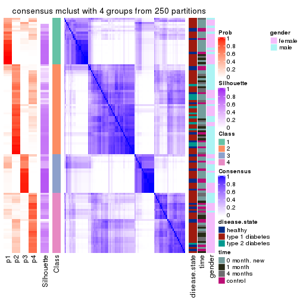
consensus_heatmap(res, k = 5)
consensus_heatmap(res, k = 6)
Heatmaps for the membership of samples in all partitions to see how consistent they are:
membership_heatmap(res, k = 2)
membership_heatmap(res, k = 3)
membership_heatmap(res, k = 4)
membership_heatmap(res, k = 5)
membership_heatmap(res, k = 6)
As soon as we have had the classes for columns, we can look for signatures which are significantly different between classes which can be candidate marks for certain classes. Following are the heatmaps for signatures.
Signature heatmaps where rows are scaled:
get_signatures(res, k = 2)
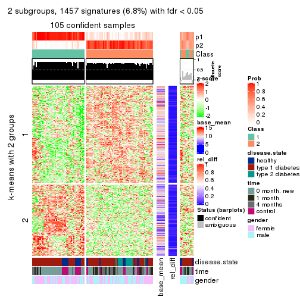
get_signatures(res, k = 3)
get_signatures(res, k = 4)
get_signatures(res, k = 5)
get_signatures(res, k = 6)
Signature heatmaps where rows are not scaled:
get_signatures(res, k = 2, scale_rows = FALSE)
get_signatures(res, k = 3, scale_rows = FALSE)
get_signatures(res, k = 4, scale_rows = FALSE)
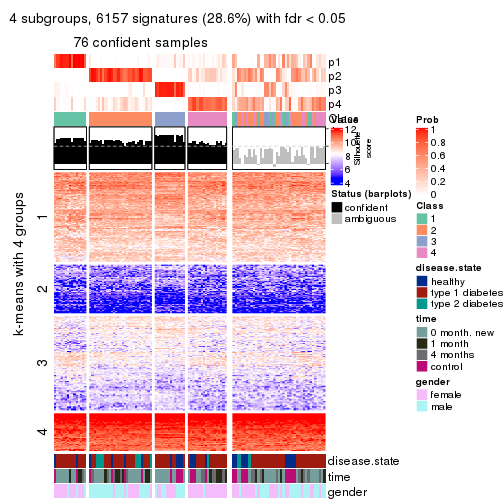
get_signatures(res, k = 5, scale_rows = FALSE)
get_signatures(res, k = 6, scale_rows = FALSE)
Compare the overlap of signatures from different k:
compare_signatures(res)
get_signature() returns a data frame invisibly. TO get the list of signatures, the function
call should be assigned to a variable explicitly. In following code, if plot argument is set
to FALSE, no heatmap is plotted while only the differential analysis is performed.
# code only for demonstration
tb = get_signature(res, k = ..., plot = FALSE)
An example of the output of tb is:
#> which_row fdr mean_1 mean_2 scaled_mean_1 scaled_mean_2 km
#> 1 38 0.042760348 8.373488 9.131774 -0.5533452 0.5164555 1
#> 2 40 0.018707592 7.106213 8.469186 -0.6173731 0.5762149 1
#> 3 55 0.019134737 10.221463 11.207825 -0.6159697 0.5749050 1
#> 4 59 0.006059896 5.921854 7.869574 -0.6899429 0.6439467 1
#> 5 60 0.018055526 8.928898 10.211722 -0.6204761 0.5791110 1
#> 6 98 0.009384629 15.714769 14.887706 0.6635654 -0.6193277 2
...
The columns in tb are:
which_row: row indices corresponding to the input matrix.fdr: FDR for the differential test. mean_x: The mean value in group x.scaled_mean_x: The mean value in group x after rows are scaled.km: Row groups if k-means clustering is applied to rows.UMAP plot which shows how samples are separated.
dimension_reduction(res, k = 2, method = "UMAP")
dimension_reduction(res, k = 3, method = "UMAP")
dimension_reduction(res, k = 4, method = "UMAP")
dimension_reduction(res, k = 5, method = "UMAP")
dimension_reduction(res, k = 6, method = "UMAP")
Following heatmap shows how subgroups are split when increasing k:
collect_classes(res)
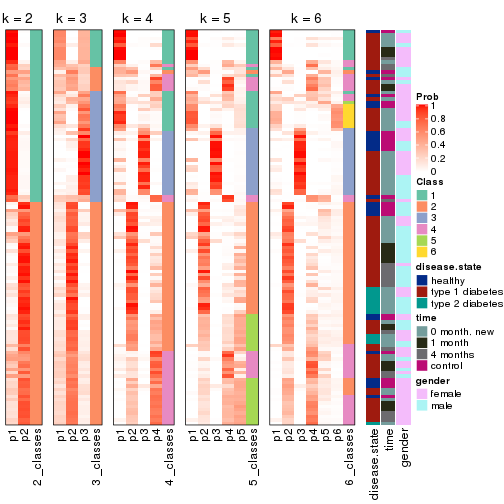
Test correlation between subgroups and known annotations. If the known annotation is numeric, one-way ANOVA test is applied, and if the known annotation is discrete, chi-squared contingency table test is applied.
test_to_known_factors(res)
#> n disease.state(p) time(p) gender(p) k
#> MAD:mclust 105 0.00485 0.0336 2.68e-01 2
#> MAD:mclust 94 0.20488 0.0445 2.83e-01 3
#> MAD:mclust 76 0.04754 0.1058 2.32e-05 4
#> MAD:mclust 71 0.35887 0.2154 2.43e-04 5
#> MAD:mclust 61 0.05290 0.0252 3.16e-02 6
If matrix rows can be associated to genes, consider to use GO_Enrichment(res,
...) to perform function enrichment for the signature genes.
The object with results only for a single top-value method and a single partition method can be extracted as:
res = res_list["MAD", "NMF"]
# you can also extract it by
# res = res_list["MAD:NMF"]
A summary of res and all the functions that can be applied to it:
res
#> A 'ConsensusPartition' object with k = 2, 3, 4, 5, 6.
#> On a matrix with 21512 rows and 117 columns.
#> Top rows (1000, 2000, 3000, 4000, 5000) are extracted by 'MAD' method.
#> Subgroups are detected by 'NMF' method.
#> Performed in total 1250 partitions by row resampling.
#> Best k for subgroups seems to be 2.
#>
#> Following methods can be applied to this 'ConsensusPartition' object:
#> [1] "cola_report" "collect_classes" "collect_plots"
#> [4] "collect_stats" "colnames" "compare_signatures"
#> [7] "consensus_heatmap" "dimension_reduction" "functional_enrichment"
#> [10] "get_anno_col" "get_anno" "get_classes"
#> [13] "get_consensus" "get_matrix" "get_membership"
#> [16] "get_param" "get_signatures" "get_stats"
#> [19] "is_best_k" "is_stable_k" "membership_heatmap"
#> [22] "ncol" "nrow" "plot_ecdf"
#> [25] "rownames" "select_partition_number" "show"
#> [28] "suggest_best_k" "test_to_known_factors"
collect_plots() function collects all the plots made from res for all k (number of partitions)
into one single page to provide an easy and fast comparison between different k.
collect_plots(res)
The plots are:
k and the heatmap of
predicted classes for each k.k.k.k.All the plots in panels can be made by individual functions and they are plotted later in this section.
select_partition_number() produces several plots showing different
statistics for choosing “optimized” k. There are following statistics:
k;k, the area increased is defined as \(A_k - A_{k-1}\).The detailed explanations of these statistics can be found in the cola vignette.
Generally speaking, lower PAC score, higher mean silhouette score or higher
concordance corresponds to better partition. Rand index and Jaccard index
measure how similar the current partition is compared to partition with k-1.
If they are too similar, we won't accept k is better than k-1.
select_partition_number(res)
The numeric values for all these statistics can be obtained by get_stats().
get_stats(res)
#> k 1-PAC mean_silhouette concordance area_increased Rand Jaccard
#> 2 2 0.566 0.793 0.911 0.4857 0.506 0.506
#> 3 3 0.335 0.540 0.770 0.3190 0.606 0.381
#> 4 4 0.370 0.457 0.666 0.1437 0.762 0.454
#> 5 5 0.432 0.401 0.605 0.0805 0.878 0.582
#> 6 6 0.504 0.386 0.592 0.0465 0.872 0.486
suggest_best_k() suggests the best \(k\) based on these statistics. The rules are as follows:
NA.suggest_best_k(res)
#> [1] 2
Following shows the table of the partitions (You need to click the show/hide
code output link to see it). The membership matrix (columns with name p*)
is inferred by
clue::cl_consensus()
function with the SE method. Basically the value in the membership matrix
represents the probability to belong to a certain group. The finall class
label for an item is determined with the group with highest probability it
belongs to.
In get_classes() function, the entropy is calculated from the membership
matrix and the silhouette score is calculated from the consensus matrix.
cbind(get_classes(res, k = 2), get_membership(res, k = 2))
#> class entropy silhouette p1 p2
#> GSM254177 2 0.0000 0.8912 0.000 1.000
#> GSM254179 2 0.3274 0.8666 0.060 0.940
#> GSM254180 1 0.9963 0.0775 0.536 0.464
#> GSM254182 1 0.5629 0.8172 0.868 0.132
#> GSM254183 2 0.0938 0.8890 0.012 0.988
#> GSM254277 2 0.6973 0.7548 0.188 0.812
#> GSM254278 2 0.0000 0.8912 0.000 1.000
#> GSM254281 1 0.0376 0.9034 0.996 0.004
#> GSM254282 2 0.2043 0.8803 0.032 0.968
#> GSM254284 1 0.0672 0.9022 0.992 0.008
#> GSM254286 2 0.9963 0.0998 0.464 0.536
#> GSM254290 1 0.9248 0.5207 0.660 0.340
#> GSM254291 2 0.0000 0.8912 0.000 1.000
#> GSM254293 1 0.9970 0.1562 0.532 0.468
#> GSM254178 1 0.0000 0.9042 1.000 0.000
#> GSM254181 2 0.0376 0.8904 0.004 0.996
#> GSM254279 2 0.0000 0.8912 0.000 1.000
#> GSM254280 2 0.0000 0.8912 0.000 1.000
#> GSM254283 1 0.9754 0.3457 0.592 0.408
#> GSM254285 2 0.0000 0.8912 0.000 1.000
#> GSM254287 2 0.1633 0.8842 0.024 0.976
#> GSM254288 2 0.9963 0.0972 0.464 0.536
#> GSM254289 2 0.7139 0.7484 0.196 0.804
#> GSM254292 1 0.3584 0.8717 0.932 0.068
#> GSM254184 2 0.5059 0.8300 0.112 0.888
#> GSM254185 2 0.0000 0.8912 0.000 1.000
#> GSM254187 2 0.0000 0.8912 0.000 1.000
#> GSM254189 2 0.0938 0.8885 0.012 0.988
#> GSM254190 1 0.0000 0.9042 1.000 0.000
#> GSM254191 2 0.9977 0.1776 0.472 0.528
#> GSM254192 2 0.1184 0.8874 0.016 0.984
#> GSM254193 1 0.0000 0.9042 1.000 0.000
#> GSM254199 1 0.0000 0.9042 1.000 0.000
#> GSM254203 1 0.0000 0.9042 1.000 0.000
#> GSM254206 1 0.0000 0.9042 1.000 0.000
#> GSM254210 1 0.5629 0.8241 0.868 0.132
#> GSM254211 1 0.0000 0.9042 1.000 0.000
#> GSM254215 2 0.0000 0.8912 0.000 1.000
#> GSM254218 2 0.0938 0.8889 0.012 0.988
#> GSM254230 1 0.0000 0.9042 1.000 0.000
#> GSM254236 2 0.0000 0.8912 0.000 1.000
#> GSM254244 1 0.0000 0.9042 1.000 0.000
#> GSM254247 1 0.6247 0.7908 0.844 0.156
#> GSM254248 2 0.9552 0.4404 0.376 0.624
#> GSM254254 2 0.0000 0.8912 0.000 1.000
#> GSM254257 2 0.0000 0.8912 0.000 1.000
#> GSM254258 2 0.0000 0.8912 0.000 1.000
#> GSM254261 2 0.0376 0.8906 0.004 0.996
#> GSM254264 2 0.0000 0.8912 0.000 1.000
#> GSM254186 2 0.0000 0.8912 0.000 1.000
#> GSM254188 2 0.0000 0.8912 0.000 1.000
#> GSM254194 2 0.0000 0.8912 0.000 1.000
#> GSM254195 1 0.0376 0.9034 0.996 0.004
#> GSM254196 1 0.9922 0.1800 0.552 0.448
#> GSM254200 2 0.0000 0.8912 0.000 1.000
#> GSM254209 2 0.0000 0.8912 0.000 1.000
#> GSM254214 2 0.5946 0.8032 0.144 0.856
#> GSM254221 1 0.0000 0.9042 1.000 0.000
#> GSM254224 1 0.0376 0.9034 0.996 0.004
#> GSM254227 1 0.5629 0.8219 0.868 0.132
#> GSM254233 2 0.8267 0.6426 0.260 0.740
#> GSM254235 1 0.0000 0.9042 1.000 0.000
#> GSM254239 1 0.5737 0.8190 0.864 0.136
#> GSM254241 1 0.0000 0.9042 1.000 0.000
#> GSM254251 2 0.0000 0.8912 0.000 1.000
#> GSM254262 2 0.0000 0.8912 0.000 1.000
#> GSM254263 2 0.0000 0.8912 0.000 1.000
#> GSM254197 1 0.0000 0.9042 1.000 0.000
#> GSM254201 1 0.0376 0.9034 0.996 0.004
#> GSM254204 1 0.0376 0.9034 0.996 0.004
#> GSM254216 1 0.0000 0.9042 1.000 0.000
#> GSM254228 1 0.0000 0.9042 1.000 0.000
#> GSM254242 1 0.0000 0.9042 1.000 0.000
#> GSM254245 1 0.0000 0.9042 1.000 0.000
#> GSM254252 1 0.0000 0.9042 1.000 0.000
#> GSM254255 1 0.0000 0.9042 1.000 0.000
#> GSM254259 1 0.0000 0.9042 1.000 0.000
#> GSM254207 2 0.3733 0.8557 0.072 0.928
#> GSM254212 1 0.8443 0.6473 0.728 0.272
#> GSM254219 1 0.0000 0.9042 1.000 0.000
#> GSM254222 1 0.6343 0.7981 0.840 0.160
#> GSM254225 1 0.8499 0.6377 0.724 0.276
#> GSM254231 1 0.4022 0.8657 0.920 0.080
#> GSM254234 1 0.5629 0.8234 0.868 0.132
#> GSM254237 1 0.2948 0.8818 0.948 0.052
#> GSM254249 1 0.5946 0.8125 0.856 0.144
#> GSM254198 1 0.0000 0.9042 1.000 0.000
#> GSM254202 1 0.9044 0.5464 0.680 0.320
#> GSM254205 1 0.0000 0.9042 1.000 0.000
#> GSM254217 1 0.0000 0.9042 1.000 0.000
#> GSM254229 1 0.0376 0.9034 0.996 0.004
#> GSM254243 1 0.0000 0.9042 1.000 0.000
#> GSM254246 1 0.0000 0.9042 1.000 0.000
#> GSM254253 1 0.0000 0.9042 1.000 0.000
#> GSM254256 2 0.9552 0.4501 0.376 0.624
#> GSM254260 1 0.0000 0.9042 1.000 0.000
#> GSM254208 1 0.0672 0.9021 0.992 0.008
#> GSM254213 2 0.0376 0.8906 0.004 0.996
#> GSM254220 1 0.0000 0.9042 1.000 0.000
#> GSM254223 1 0.0672 0.9020 0.992 0.008
#> GSM254226 2 0.4298 0.8431 0.088 0.912
#> GSM254232 1 0.3733 0.8697 0.928 0.072
#> GSM254238 1 0.0672 0.9022 0.992 0.008
#> GSM254240 1 0.0000 0.9042 1.000 0.000
#> GSM254250 1 0.0000 0.9042 1.000 0.000
#> GSM254268 2 0.3114 0.8687 0.056 0.944
#> GSM254269 2 0.9732 0.3334 0.404 0.596
#> GSM254270 1 0.0000 0.9042 1.000 0.000
#> GSM254272 1 0.9977 0.1378 0.528 0.472
#> GSM254273 2 0.5059 0.8264 0.112 0.888
#> GSM254274 2 0.9248 0.4799 0.340 0.660
#> GSM254265 2 0.9922 0.2007 0.448 0.552
#> GSM254266 1 0.3114 0.8800 0.944 0.056
#> GSM254267 1 0.6973 0.7576 0.812 0.188
#> GSM254271 2 0.0000 0.8912 0.000 1.000
#> GSM254275 1 0.2236 0.8902 0.964 0.036
#> GSM254276 1 0.9866 0.2810 0.568 0.432
cbind(get_classes(res, k = 3), get_membership(res, k = 3))
#> class entropy silhouette p1 p2 p3
#> GSM254177 3 0.4446 0.8067 0.032 0.112 0.856
#> GSM254179 2 0.7059 -0.0207 0.020 0.520 0.460
#> GSM254180 2 0.5137 0.6586 0.104 0.832 0.064
#> GSM254182 1 0.5756 0.5425 0.764 0.028 0.208
#> GSM254183 3 0.6632 0.6982 0.064 0.204 0.732
#> GSM254277 2 0.8158 0.2377 0.080 0.556 0.364
#> GSM254278 3 0.2982 0.8196 0.056 0.024 0.920
#> GSM254281 1 0.7306 0.4230 0.616 0.340 0.044
#> GSM254282 3 0.7786 0.4835 0.068 0.332 0.600
#> GSM254284 2 0.4834 0.6219 0.204 0.792 0.004
#> GSM254286 1 0.7570 0.1944 0.552 0.044 0.404
#> GSM254290 2 0.4556 0.6784 0.080 0.860 0.060
#> GSM254291 3 0.2400 0.8302 0.004 0.064 0.932
#> GSM254293 2 0.9052 0.4067 0.216 0.556 0.228
#> GSM254178 1 0.2711 0.6765 0.912 0.088 0.000
#> GSM254181 2 0.5988 0.2496 0.000 0.632 0.368
#> GSM254279 3 0.1832 0.8290 0.036 0.008 0.956
#> GSM254280 3 0.2339 0.8218 0.048 0.012 0.940
#> GSM254283 2 0.1620 0.6807 0.024 0.964 0.012
#> GSM254285 3 0.2229 0.8237 0.044 0.012 0.944
#> GSM254287 2 0.6495 -0.0201 0.004 0.536 0.460
#> GSM254288 2 0.4768 0.6690 0.100 0.848 0.052
#> GSM254289 2 0.4741 0.6379 0.020 0.828 0.152
#> GSM254292 1 0.7153 0.5984 0.708 0.200 0.092
#> GSM254184 1 0.6813 -0.0250 0.520 0.012 0.468
#> GSM254185 3 0.2031 0.8338 0.016 0.032 0.952
#> GSM254187 3 0.1781 0.8331 0.020 0.020 0.960
#> GSM254189 3 0.5480 0.5936 0.264 0.004 0.732
#> GSM254190 1 0.4555 0.5588 0.800 0.000 0.200
#> GSM254191 1 0.6521 0.3238 0.644 0.016 0.340
#> GSM254192 3 0.4912 0.6928 0.196 0.008 0.796
#> GSM254193 1 0.4068 0.6329 0.864 0.016 0.120
#> GSM254199 1 0.3030 0.6823 0.904 0.092 0.004
#> GSM254203 1 0.1031 0.6866 0.976 0.024 0.000
#> GSM254206 1 0.1453 0.6796 0.968 0.008 0.024
#> GSM254210 2 0.7922 0.1887 0.408 0.532 0.060
#> GSM254211 1 0.1182 0.6838 0.976 0.012 0.012
#> GSM254215 3 0.1647 0.8270 0.036 0.004 0.960
#> GSM254218 3 0.6589 0.6234 0.032 0.280 0.688
#> GSM254230 1 0.1643 0.6880 0.956 0.044 0.000
#> GSM254236 3 0.1860 0.8309 0.000 0.052 0.948
#> GSM254244 1 0.1643 0.6894 0.956 0.044 0.000
#> GSM254247 2 0.5798 0.6208 0.184 0.776 0.040
#> GSM254248 2 0.9550 -0.0800 0.192 0.404 0.404
#> GSM254254 3 0.6299 0.2148 0.000 0.476 0.524
#> GSM254257 2 0.6398 0.1135 0.004 0.580 0.416
#> GSM254258 3 0.2066 0.8169 0.060 0.000 0.940
#> GSM254261 3 0.6286 0.2204 0.000 0.464 0.536
#> GSM254264 3 0.1585 0.8300 0.028 0.008 0.964
#> GSM254186 3 0.2356 0.8259 0.000 0.072 0.928
#> GSM254188 3 0.2711 0.8214 0.000 0.088 0.912
#> GSM254194 3 0.3129 0.7993 0.088 0.008 0.904
#> GSM254195 1 0.4353 0.5965 0.836 0.008 0.156
#> GSM254196 1 0.6512 0.4106 0.676 0.024 0.300
#> GSM254200 3 0.2165 0.8285 0.000 0.064 0.936
#> GSM254209 2 0.5650 0.3883 0.000 0.688 0.312
#> GSM254214 2 0.4293 0.6197 0.004 0.832 0.164
#> GSM254221 1 0.6608 0.3875 0.628 0.356 0.016
#> GSM254224 2 0.3340 0.6695 0.120 0.880 0.000
#> GSM254227 2 0.7170 0.4380 0.352 0.612 0.036
#> GSM254233 2 0.6927 0.5468 0.060 0.700 0.240
#> GSM254235 1 0.5178 0.5299 0.744 0.256 0.000
#> GSM254239 2 0.4413 0.6547 0.160 0.832 0.008
#> GSM254241 2 0.6215 0.2591 0.428 0.572 0.000
#> GSM254251 3 0.6008 0.4720 0.000 0.372 0.628
#> GSM254262 3 0.2584 0.8130 0.064 0.008 0.928
#> GSM254263 3 0.2537 0.8224 0.000 0.080 0.920
#> GSM254197 1 0.2165 0.6850 0.936 0.064 0.000
#> GSM254201 1 0.5578 0.5738 0.748 0.240 0.012
#> GSM254204 2 0.6204 0.2785 0.424 0.576 0.000
#> GSM254216 1 0.6291 0.0720 0.532 0.468 0.000
#> GSM254228 1 0.2625 0.6799 0.916 0.084 0.000
#> GSM254242 1 0.5882 0.4156 0.652 0.348 0.000
#> GSM254245 1 0.6295 0.0440 0.528 0.472 0.000
#> GSM254252 2 0.6045 0.3803 0.380 0.620 0.000
#> GSM254255 2 0.5480 0.5595 0.264 0.732 0.004
#> GSM254259 1 0.3619 0.6523 0.864 0.136 0.000
#> GSM254207 2 0.6180 0.3777 0.008 0.660 0.332
#> GSM254212 2 0.1832 0.6809 0.036 0.956 0.008
#> GSM254219 2 0.6215 0.2463 0.428 0.572 0.000
#> GSM254222 2 0.3607 0.6713 0.112 0.880 0.008
#> GSM254225 2 0.4316 0.6804 0.088 0.868 0.044
#> GSM254231 2 0.3715 0.6659 0.128 0.868 0.004
#> GSM254234 2 0.2261 0.6792 0.068 0.932 0.000
#> GSM254237 2 0.3918 0.6590 0.140 0.856 0.004
#> GSM254249 2 0.5493 0.5854 0.232 0.756 0.012
#> GSM254198 2 0.6126 0.3403 0.400 0.600 0.000
#> GSM254202 1 0.7531 0.5226 0.672 0.092 0.236
#> GSM254205 2 0.6126 0.3255 0.400 0.600 0.000
#> GSM254217 2 0.6126 0.3312 0.400 0.600 0.000
#> GSM254229 2 0.2959 0.6720 0.100 0.900 0.000
#> GSM254243 1 0.5650 0.4627 0.688 0.312 0.000
#> GSM254246 1 0.1753 0.6871 0.952 0.048 0.000
#> GSM254253 1 0.6095 0.2788 0.608 0.392 0.000
#> GSM254256 2 0.7365 0.5906 0.112 0.700 0.188
#> GSM254260 2 0.6280 0.1516 0.460 0.540 0.000
#> GSM254208 2 0.6033 0.4628 0.336 0.660 0.004
#> GSM254213 2 0.4293 0.6229 0.004 0.832 0.164
#> GSM254220 2 0.6126 0.3121 0.400 0.600 0.000
#> GSM254223 2 0.4504 0.6196 0.196 0.804 0.000
#> GSM254226 2 0.4291 0.6110 0.000 0.820 0.180
#> GSM254232 2 0.4172 0.6505 0.156 0.840 0.004
#> GSM254238 2 0.6460 0.2416 0.440 0.556 0.004
#> GSM254240 1 0.6252 0.1262 0.556 0.444 0.000
#> GSM254250 1 0.6189 0.3462 0.632 0.364 0.004
#> GSM254268 2 0.5378 0.5459 0.008 0.756 0.236
#> GSM254269 2 0.2663 0.6825 0.024 0.932 0.044
#> GSM254270 2 0.6260 0.2137 0.448 0.552 0.000
#> GSM254272 2 0.4172 0.6664 0.028 0.868 0.104
#> GSM254273 2 0.6126 0.5027 0.020 0.712 0.268
#> GSM254274 2 0.3293 0.6715 0.012 0.900 0.088
#> GSM254265 2 0.5067 0.6638 0.052 0.832 0.116
#> GSM254266 2 0.3038 0.6697 0.104 0.896 0.000
#> GSM254267 2 0.2200 0.6809 0.056 0.940 0.004
#> GSM254271 2 0.3551 0.6444 0.000 0.868 0.132
#> GSM254275 2 0.3116 0.6736 0.108 0.892 0.000
#> GSM254276 2 0.0661 0.6793 0.004 0.988 0.008
cbind(get_classes(res, k = 4), get_membership(res, k = 4))
#> class entropy silhouette p1 p2 p3 p4
#> GSM254177 3 0.510 0.6879 0.020 0.020 0.744 0.216
#> GSM254179 4 0.722 0.2301 0.000 0.236 0.216 0.548
#> GSM254180 4 0.550 0.3952 0.012 0.284 0.024 0.680
#> GSM254182 1 0.769 0.4111 0.492 0.004 0.248 0.256
#> GSM254183 2 0.915 0.0698 0.132 0.448 0.264 0.156
#> GSM254277 4 0.645 0.4650 0.032 0.112 0.156 0.700
#> GSM254278 3 0.400 0.7277 0.036 0.000 0.824 0.140
#> GSM254281 4 0.565 0.4544 0.172 0.012 0.080 0.736
#> GSM254282 3 0.855 0.1523 0.040 0.200 0.392 0.368
#> GSM254284 4 0.655 0.0541 0.076 0.436 0.000 0.488
#> GSM254286 3 0.816 0.0651 0.240 0.012 0.384 0.364
#> GSM254290 4 0.308 0.5407 0.000 0.084 0.032 0.884
#> GSM254291 3 0.478 0.7425 0.028 0.164 0.788 0.020
#> GSM254293 4 0.406 0.5259 0.008 0.036 0.120 0.836
#> GSM254178 1 0.362 0.7030 0.860 0.076 0.000 0.064
#> GSM254181 2 0.553 0.4889 0.000 0.712 0.212 0.076
#> GSM254279 3 0.286 0.7716 0.016 0.024 0.908 0.052
#> GSM254280 3 0.393 0.7587 0.072 0.060 0.856 0.012
#> GSM254283 2 0.401 0.5207 0.004 0.788 0.004 0.204
#> GSM254285 3 0.384 0.7581 0.032 0.020 0.860 0.088
#> GSM254287 2 0.553 0.4598 0.048 0.744 0.184 0.024
#> GSM254288 2 0.527 0.5187 0.124 0.784 0.036 0.056
#> GSM254289 2 0.351 0.5587 0.040 0.884 0.040 0.036
#> GSM254292 4 0.599 0.3495 0.152 0.000 0.156 0.692
#> GSM254184 1 0.670 0.1210 0.512 0.012 0.416 0.060
#> GSM254185 3 0.271 0.7741 0.004 0.016 0.904 0.076
#> GSM254187 3 0.271 0.7735 0.004 0.016 0.904 0.076
#> GSM254189 3 0.502 0.6067 0.232 0.020 0.736 0.012
#> GSM254190 1 0.386 0.6622 0.828 0.000 0.144 0.028
#> GSM254191 1 0.517 0.5917 0.764 0.064 0.164 0.008
#> GSM254192 3 0.559 0.6606 0.196 0.056 0.732 0.016
#> GSM254193 1 0.322 0.6852 0.884 0.036 0.076 0.004
#> GSM254199 1 0.497 0.6755 0.780 0.080 0.004 0.136
#> GSM254203 1 0.204 0.7190 0.936 0.032 0.000 0.032
#> GSM254206 1 0.625 0.5765 0.660 0.008 0.084 0.248
#> GSM254210 4 0.608 0.5255 0.072 0.168 0.036 0.724
#> GSM254211 1 0.379 0.7086 0.852 0.008 0.032 0.108
#> GSM254215 3 0.231 0.7756 0.016 0.020 0.932 0.032
#> GSM254218 3 0.751 0.1983 0.016 0.116 0.436 0.432
#> GSM254230 1 0.368 0.6943 0.844 0.020 0.004 0.132
#> GSM254236 3 0.388 0.7296 0.000 0.172 0.812 0.016
#> GSM254244 1 0.577 0.5019 0.640 0.004 0.040 0.316
#> GSM254247 4 0.350 0.5482 0.028 0.024 0.068 0.880
#> GSM254248 4 0.874 0.2164 0.060 0.244 0.236 0.460
#> GSM254254 2 0.679 0.1779 0.000 0.540 0.352 0.108
#> GSM254257 2 0.617 0.4586 0.000 0.672 0.192 0.136
#> GSM254258 3 0.224 0.7515 0.072 0.004 0.920 0.004
#> GSM254261 2 0.662 0.2769 0.000 0.576 0.320 0.104
#> GSM254264 3 0.233 0.7703 0.016 0.004 0.924 0.056
#> GSM254186 3 0.316 0.7530 0.000 0.144 0.852 0.004
#> GSM254188 3 0.376 0.7479 0.000 0.152 0.828 0.020
#> GSM254194 3 0.377 0.7461 0.072 0.012 0.864 0.052
#> GSM254195 1 0.527 0.6315 0.744 0.000 0.172 0.084
#> GSM254196 1 0.674 0.4093 0.600 0.032 0.316 0.052
#> GSM254200 3 0.367 0.7215 0.000 0.188 0.808 0.004
#> GSM254209 2 0.390 0.5376 0.000 0.832 0.132 0.036
#> GSM254214 2 0.324 0.5679 0.000 0.880 0.052 0.068
#> GSM254221 4 0.864 0.3234 0.224 0.148 0.108 0.520
#> GSM254224 4 0.544 0.3038 0.024 0.356 0.000 0.620
#> GSM254227 2 0.724 0.3575 0.292 0.584 0.032 0.092
#> GSM254233 4 0.749 0.3936 0.024 0.224 0.168 0.584
#> GSM254235 1 0.599 0.5456 0.688 0.124 0.000 0.188
#> GSM254239 2 0.470 0.5302 0.120 0.800 0.004 0.076
#> GSM254241 2 0.727 0.2359 0.304 0.520 0.000 0.176
#> GSM254251 2 0.602 0.0800 0.000 0.544 0.412 0.044
#> GSM254262 3 0.635 0.6776 0.148 0.164 0.680 0.008
#> GSM254263 3 0.529 0.6099 0.016 0.284 0.688 0.012
#> GSM254197 1 0.343 0.7054 0.872 0.088 0.004 0.036
#> GSM254201 4 0.598 0.2663 0.312 0.004 0.052 0.632
#> GSM254204 4 0.618 0.5236 0.128 0.204 0.000 0.668
#> GSM254216 4 0.647 0.5239 0.212 0.148 0.000 0.640
#> GSM254228 1 0.376 0.7092 0.852 0.076 0.000 0.072
#> GSM254242 4 0.559 0.4169 0.284 0.040 0.004 0.672
#> GSM254245 4 0.585 0.5485 0.184 0.116 0.000 0.700
#> GSM254252 4 0.610 0.4947 0.116 0.212 0.000 0.672
#> GSM254255 4 0.521 0.5200 0.068 0.192 0.000 0.740
#> GSM254259 1 0.435 0.6923 0.816 0.080 0.000 0.104
#> GSM254207 4 0.735 0.1981 0.000 0.328 0.176 0.496
#> GSM254212 2 0.388 0.5442 0.016 0.812 0.000 0.172
#> GSM254219 4 0.632 0.5021 0.156 0.184 0.000 0.660
#> GSM254222 2 0.601 0.4090 0.052 0.648 0.008 0.292
#> GSM254225 2 0.411 0.5614 0.080 0.848 0.016 0.056
#> GSM254231 2 0.600 0.0528 0.040 0.504 0.000 0.456
#> GSM254234 2 0.526 0.4246 0.024 0.684 0.004 0.288
#> GSM254237 2 0.579 0.4575 0.076 0.680 0.000 0.244
#> GSM254249 4 0.723 0.3156 0.116 0.332 0.012 0.540
#> GSM254198 4 0.745 0.3708 0.180 0.300 0.004 0.516
#> GSM254202 4 0.726 0.1313 0.208 0.000 0.252 0.540
#> GSM254205 4 0.563 0.5570 0.136 0.140 0.000 0.724
#> GSM254217 2 0.765 -0.0354 0.212 0.424 0.000 0.364
#> GSM254229 2 0.564 0.2568 0.028 0.584 0.000 0.388
#> GSM254243 4 0.644 0.0684 0.444 0.068 0.000 0.488
#> GSM254246 1 0.294 0.7189 0.900 0.044 0.004 0.052
#> GSM254253 4 0.762 0.3139 0.376 0.176 0.004 0.444
#> GSM254256 4 0.771 0.0033 0.044 0.424 0.084 0.448
#> GSM254260 4 0.442 0.5727 0.100 0.088 0.000 0.812
#> GSM254208 2 0.756 0.1417 0.224 0.480 0.000 0.296
#> GSM254213 2 0.298 0.5641 0.000 0.892 0.068 0.040
#> GSM254220 4 0.592 0.5200 0.108 0.184 0.004 0.704
#> GSM254223 2 0.653 0.1828 0.080 0.532 0.000 0.388
#> GSM254226 2 0.466 0.5572 0.000 0.796 0.088 0.116
#> GSM254232 2 0.584 0.3911 0.060 0.648 0.000 0.292
#> GSM254238 2 0.767 0.1429 0.312 0.452 0.000 0.236
#> GSM254240 1 0.768 0.0459 0.460 0.268 0.000 0.272
#> GSM254250 1 0.765 0.2016 0.496 0.224 0.004 0.276
#> GSM254268 2 0.560 0.4982 0.012 0.748 0.100 0.140
#> GSM254269 2 0.534 0.4518 0.012 0.680 0.016 0.292
#> GSM254270 4 0.618 0.4968 0.128 0.204 0.000 0.668
#> GSM254272 4 0.616 0.0523 0.004 0.440 0.040 0.516
#> GSM254273 2 0.626 0.3641 0.000 0.616 0.084 0.300
#> GSM254274 4 0.582 0.1493 0.000 0.392 0.036 0.572
#> GSM254265 4 0.646 0.2517 0.020 0.348 0.044 0.588
#> GSM254266 2 0.558 0.1487 0.020 0.536 0.000 0.444
#> GSM254267 4 0.547 0.2100 0.004 0.408 0.012 0.576
#> GSM254271 2 0.415 0.5565 0.000 0.820 0.048 0.132
#> GSM254275 2 0.451 0.5269 0.040 0.784 0.000 0.176
#> GSM254276 2 0.446 0.4607 0.000 0.716 0.004 0.280
cbind(get_classes(res, k = 5), get_membership(res, k = 5))
#> class entropy silhouette p1 p2 p3 p4 p5
#> GSM254177 3 0.523 0.658891 0.000 0.028 0.684 0.044 0.244
#> GSM254179 5 0.799 0.261220 0.000 0.200 0.116 0.260 0.424
#> GSM254180 5 0.614 0.457308 0.016 0.208 0.036 0.080 0.660
#> GSM254182 4 0.854 -0.000757 0.272 0.012 0.116 0.340 0.260
#> GSM254183 2 0.890 0.134076 0.104 0.404 0.224 0.060 0.208
#> GSM254277 5 0.621 0.426421 0.012 0.080 0.068 0.164 0.676
#> GSM254278 3 0.405 0.744578 0.008 0.004 0.776 0.020 0.192
#> GSM254281 5 0.647 0.347201 0.076 0.012 0.072 0.196 0.644
#> GSM254282 5 0.674 0.294931 0.032 0.084 0.308 0.020 0.556
#> GSM254284 5 0.762 0.028241 0.040 0.356 0.004 0.236 0.364
#> GSM254286 5 0.769 0.163375 0.176 0.012 0.280 0.060 0.472
#> GSM254290 5 0.583 0.117112 0.000 0.068 0.012 0.388 0.532
#> GSM254291 3 0.617 0.686862 0.024 0.144 0.664 0.016 0.152
#> GSM254293 5 0.540 0.346342 0.004 0.020 0.064 0.224 0.688
#> GSM254178 1 0.452 0.659912 0.796 0.056 0.000 0.084 0.064
#> GSM254181 2 0.556 0.485070 0.000 0.704 0.172 0.056 0.068
#> GSM254279 3 0.393 0.799985 0.020 0.012 0.828 0.028 0.112
#> GSM254280 3 0.498 0.780096 0.036 0.060 0.788 0.076 0.040
#> GSM254283 2 0.579 0.490531 0.012 0.692 0.020 0.148 0.128
#> GSM254285 3 0.488 0.740255 0.012 0.016 0.764 0.136 0.072
#> GSM254287 2 0.676 0.451190 0.048 0.664 0.116 0.076 0.096
#> GSM254288 2 0.635 0.453988 0.112 0.676 0.028 0.044 0.140
#> GSM254289 2 0.502 0.514168 0.024 0.784 0.068 0.056 0.068
#> GSM254292 5 0.711 0.158375 0.044 0.008 0.120 0.332 0.496
#> GSM254184 1 0.625 0.113638 0.488 0.004 0.420 0.028 0.060
#> GSM254185 3 0.369 0.782797 0.000 0.016 0.816 0.020 0.148
#> GSM254187 3 0.318 0.793413 0.004 0.012 0.856 0.012 0.116
#> GSM254189 3 0.451 0.658187 0.224 0.004 0.728 0.000 0.044
#> GSM254190 1 0.439 0.651122 0.788 0.004 0.144 0.024 0.040
#> GSM254191 1 0.448 0.639741 0.788 0.008 0.136 0.020 0.048
#> GSM254192 3 0.545 0.691089 0.172 0.024 0.720 0.016 0.068
#> GSM254193 1 0.294 0.681316 0.884 0.004 0.072 0.012 0.028
#> GSM254199 1 0.578 0.604645 0.704 0.064 0.004 0.080 0.148
#> GSM254203 1 0.264 0.703415 0.900 0.016 0.000 0.032 0.052
#> GSM254206 1 0.669 0.184507 0.452 0.004 0.024 0.412 0.108
#> GSM254210 5 0.767 0.253829 0.048 0.148 0.024 0.308 0.472
#> GSM254211 1 0.470 0.675103 0.780 0.008 0.028 0.056 0.128
#> GSM254215 3 0.212 0.803738 0.008 0.004 0.912 0.000 0.076
#> GSM254218 5 0.766 0.106840 0.004 0.064 0.348 0.172 0.412
#> GSM254230 1 0.387 0.686184 0.824 0.012 0.000 0.076 0.088
#> GSM254236 3 0.423 0.756847 0.004 0.128 0.792 0.004 0.072
#> GSM254244 1 0.649 0.168586 0.484 0.000 0.008 0.356 0.152
#> GSM254247 4 0.524 0.117591 0.004 0.012 0.020 0.564 0.400
#> GSM254248 5 0.799 0.366238 0.036 0.196 0.088 0.160 0.520
#> GSM254254 2 0.652 0.301791 0.000 0.536 0.304 0.020 0.140
#> GSM254257 2 0.704 0.340228 0.004 0.560 0.208 0.052 0.176
#> GSM254258 3 0.251 0.796952 0.052 0.000 0.904 0.008 0.036
#> GSM254261 2 0.723 0.225358 0.004 0.444 0.288 0.020 0.244
#> GSM254264 3 0.257 0.799409 0.004 0.008 0.888 0.004 0.096
#> GSM254186 3 0.347 0.781776 0.000 0.100 0.848 0.020 0.032
#> GSM254188 3 0.396 0.763938 0.000 0.132 0.812 0.028 0.028
#> GSM254194 3 0.479 0.783529 0.044 0.016 0.792 0.060 0.088
#> GSM254195 1 0.666 0.517300 0.612 0.004 0.096 0.212 0.076
#> GSM254196 1 0.790 0.137233 0.400 0.020 0.368 0.148 0.064
#> GSM254200 3 0.320 0.779398 0.000 0.116 0.852 0.008 0.024
#> GSM254209 2 0.533 0.498920 0.000 0.716 0.172 0.076 0.036
#> GSM254214 2 0.463 0.521252 0.000 0.784 0.060 0.048 0.108
#> GSM254221 4 0.575 0.441789 0.092 0.040 0.028 0.728 0.112
#> GSM254224 4 0.649 0.294749 0.024 0.164 0.000 0.576 0.236
#> GSM254227 2 0.848 0.126931 0.344 0.360 0.040 0.184 0.072
#> GSM254233 4 0.596 0.398383 0.000 0.100 0.084 0.688 0.128
#> GSM254235 1 0.592 0.460604 0.648 0.056 0.000 0.236 0.060
#> GSM254239 2 0.503 0.485573 0.116 0.744 0.000 0.024 0.116
#> GSM254241 2 0.777 -0.109706 0.284 0.344 0.000 0.316 0.056
#> GSM254251 2 0.620 0.121324 0.000 0.504 0.396 0.024 0.076
#> GSM254262 3 0.559 0.741696 0.080 0.112 0.740 0.032 0.036
#> GSM254263 3 0.611 0.538702 0.012 0.272 0.624 0.036 0.056
#> GSM254197 1 0.310 0.697695 0.880 0.044 0.000 0.036 0.040
#> GSM254201 4 0.672 0.306084 0.156 0.004 0.020 0.536 0.284
#> GSM254204 4 0.708 0.254120 0.044 0.156 0.000 0.492 0.308
#> GSM254216 5 0.776 -0.075220 0.144 0.104 0.000 0.356 0.396
#> GSM254228 1 0.286 0.697398 0.892 0.032 0.000 0.044 0.032
#> GSM254242 4 0.616 0.335964 0.148 0.004 0.000 0.556 0.292
#> GSM254245 4 0.703 0.198973 0.072 0.076 0.004 0.460 0.388
#> GSM254252 4 0.748 0.189311 0.068 0.168 0.000 0.456 0.308
#> GSM254255 4 0.693 0.134213 0.032 0.144 0.000 0.456 0.368
#> GSM254259 1 0.367 0.687075 0.848 0.044 0.000 0.064 0.044
#> GSM254207 4 0.833 0.103500 0.008 0.192 0.176 0.432 0.192
#> GSM254212 2 0.467 0.514232 0.012 0.772 0.008 0.072 0.136
#> GSM254219 4 0.486 0.469045 0.068 0.060 0.000 0.772 0.100
#> GSM254222 2 0.746 0.114305 0.056 0.428 0.004 0.360 0.152
#> GSM254225 2 0.580 0.528073 0.088 0.736 0.044 0.080 0.052
#> GSM254231 4 0.586 0.222861 0.012 0.344 0.012 0.580 0.052
#> GSM254234 2 0.649 0.346309 0.024 0.568 0.000 0.260 0.148
#> GSM254237 2 0.580 0.456049 0.036 0.684 0.008 0.076 0.196
#> GSM254249 4 0.580 0.426615 0.036 0.228 0.008 0.668 0.060
#> GSM254198 5 0.836 0.060857 0.132 0.208 0.004 0.300 0.356
#> GSM254202 4 0.727 0.225609 0.100 0.004 0.136 0.560 0.200
#> GSM254205 4 0.589 0.393375 0.048 0.072 0.004 0.672 0.204
#> GSM254217 5 0.805 0.012674 0.220 0.324 0.000 0.100 0.356
#> GSM254229 2 0.718 0.148475 0.028 0.448 0.000 0.220 0.304
#> GSM254243 4 0.735 0.327293 0.260 0.052 0.000 0.480 0.208
#> GSM254246 1 0.303 0.699729 0.880 0.024 0.000 0.064 0.032
#> GSM254253 4 0.810 0.326283 0.292 0.148 0.004 0.416 0.140
#> GSM254256 2 0.842 0.034043 0.032 0.404 0.072 0.228 0.264
#> GSM254260 4 0.531 0.419712 0.056 0.040 0.000 0.708 0.196
#> GSM254208 4 0.818 0.055306 0.180 0.336 0.008 0.372 0.104
#> GSM254213 2 0.400 0.532516 0.000 0.824 0.048 0.092 0.036
#> GSM254220 4 0.467 0.451159 0.044 0.052 0.000 0.776 0.128
#> GSM254223 4 0.757 -0.021187 0.072 0.380 0.000 0.388 0.160
#> GSM254226 2 0.643 0.492762 0.004 0.652 0.088 0.156 0.100
#> GSM254232 2 0.629 0.178633 0.040 0.536 0.012 0.372 0.040
#> GSM254238 2 0.854 0.016095 0.252 0.344 0.008 0.260 0.136
#> GSM254240 4 0.731 0.259124 0.312 0.216 0.000 0.436 0.036
#> GSM254250 4 0.762 0.276413 0.292 0.192 0.004 0.452 0.060
#> GSM254268 2 0.561 0.448144 0.020 0.732 0.084 0.040 0.124
#> GSM254269 2 0.662 0.288184 0.020 0.548 0.024 0.080 0.328
#> GSM254270 5 0.664 0.356537 0.108 0.148 0.004 0.104 0.636
#> GSM254272 5 0.650 0.338493 0.016 0.284 0.068 0.040 0.592
#> GSM254273 2 0.659 0.050032 0.020 0.468 0.076 0.016 0.420
#> GSM254274 5 0.655 0.412014 0.004 0.236 0.060 0.092 0.608
#> GSM254265 5 0.700 0.420228 0.012 0.240 0.060 0.112 0.576
#> GSM254266 2 0.692 0.112881 0.012 0.452 0.000 0.232 0.304
#> GSM254267 5 0.687 0.153771 0.004 0.308 0.012 0.192 0.484
#> GSM254271 2 0.448 0.511971 0.004 0.784 0.028 0.040 0.144
#> GSM254275 2 0.451 0.498827 0.056 0.784 0.000 0.032 0.128
#> GSM254276 2 0.532 0.417213 0.004 0.660 0.000 0.088 0.248
cbind(get_classes(res, k = 6), get_membership(res, k = 6))
#> class entropy silhouette p1 p2 p3 p4 p5 p6
#> GSM254177 3 0.602 0.6247 0.000 0.036 0.648 0.044 0.120 0.152
#> GSM254179 5 0.811 0.0663 0.000 0.216 0.064 0.100 0.364 0.256
#> GSM254180 6 0.561 0.4269 0.020 0.144 0.016 0.032 0.092 0.696
#> GSM254182 5 0.600 0.3984 0.092 0.020 0.088 0.036 0.692 0.072
#> GSM254183 2 0.844 0.1668 0.080 0.412 0.084 0.032 0.244 0.148
#> GSM254277 6 0.582 0.2017 0.008 0.060 0.052 0.008 0.252 0.620
#> GSM254278 3 0.410 0.7155 0.004 0.004 0.768 0.004 0.064 0.156
#> GSM254281 6 0.632 0.1375 0.044 0.004 0.060 0.056 0.232 0.604
#> GSM254282 6 0.719 0.3317 0.044 0.052 0.208 0.076 0.052 0.568
#> GSM254284 6 0.809 0.2533 0.064 0.208 0.008 0.248 0.076 0.396
#> GSM254286 6 0.632 0.2221 0.096 0.008 0.220 0.012 0.064 0.600
#> GSM254290 5 0.652 0.2034 0.000 0.060 0.012 0.092 0.444 0.392
#> GSM254291 3 0.751 0.3681 0.032 0.164 0.488 0.008 0.092 0.216
#> GSM254293 6 0.553 0.1269 0.008 0.004 0.040 0.056 0.260 0.632
#> GSM254178 1 0.508 0.6755 0.736 0.048 0.000 0.088 0.024 0.104
#> GSM254181 2 0.575 0.5422 0.000 0.684 0.120 0.084 0.028 0.084
#> GSM254279 3 0.381 0.7587 0.016 0.032 0.836 0.020 0.024 0.072
#> GSM254280 3 0.346 0.7505 0.020 0.032 0.860 0.048 0.020 0.020
#> GSM254283 2 0.557 0.3966 0.008 0.544 0.004 0.336 0.000 0.108
#> GSM254285 3 0.431 0.7169 0.004 0.008 0.788 0.048 0.108 0.044
#> GSM254287 2 0.598 0.5194 0.036 0.688 0.048 0.052 0.140 0.036
#> GSM254288 2 0.566 0.4960 0.048 0.692 0.008 0.024 0.148 0.080
#> GSM254289 2 0.487 0.5634 0.028 0.756 0.020 0.096 0.092 0.008
#> GSM254292 5 0.668 0.1885 0.028 0.008 0.064 0.052 0.424 0.424
#> GSM254184 1 0.617 0.2250 0.492 0.008 0.356 0.000 0.116 0.028
#> GSM254185 3 0.342 0.7518 0.000 0.020 0.844 0.028 0.020 0.088
#> GSM254187 3 0.344 0.7506 0.000 0.020 0.836 0.008 0.036 0.100
#> GSM254189 3 0.464 0.6430 0.176 0.004 0.732 0.000 0.048 0.040
#> GSM254190 1 0.449 0.6878 0.772 0.000 0.120 0.020 0.056 0.032
#> GSM254191 1 0.447 0.6539 0.748 0.016 0.140 0.000 0.092 0.004
#> GSM254192 3 0.581 0.6791 0.124 0.036 0.688 0.004 0.064 0.084
#> GSM254193 1 0.336 0.7032 0.836 0.008 0.068 0.000 0.084 0.004
#> GSM254199 1 0.472 0.6690 0.768 0.020 0.004 0.040 0.068 0.100
#> GSM254203 1 0.246 0.7443 0.904 0.012 0.000 0.024 0.020 0.040
#> GSM254206 5 0.705 0.1582 0.324 0.008 0.024 0.148 0.456 0.040
#> GSM254210 6 0.747 -0.0863 0.044 0.080 0.024 0.064 0.380 0.408
#> GSM254211 1 0.484 0.6707 0.744 0.000 0.024 0.052 0.040 0.140
#> GSM254215 3 0.333 0.7564 0.016 0.032 0.852 0.004 0.012 0.084
#> GSM254218 3 0.859 0.0667 0.008 0.092 0.352 0.120 0.208 0.220
#> GSM254230 1 0.369 0.7186 0.828 0.000 0.004 0.064 0.056 0.048
#> GSM254236 3 0.388 0.7072 0.000 0.168 0.780 0.008 0.012 0.032
#> GSM254244 5 0.681 0.0517 0.388 0.000 0.004 0.112 0.404 0.092
#> GSM254247 5 0.609 0.3803 0.000 0.012 0.012 0.168 0.540 0.268
#> GSM254248 5 0.817 -0.0174 0.056 0.128 0.064 0.040 0.360 0.352
#> GSM254254 2 0.655 0.4243 0.000 0.588 0.172 0.032 0.056 0.152
#> GSM254257 2 0.731 0.4058 0.000 0.540 0.116 0.096 0.080 0.168
#> GSM254258 3 0.255 0.7530 0.040 0.004 0.900 0.004 0.020 0.032
#> GSM254261 6 0.745 -0.1309 0.008 0.364 0.184 0.040 0.036 0.368
#> GSM254264 3 0.246 0.7555 0.000 0.008 0.888 0.000 0.028 0.076
#> GSM254186 3 0.310 0.7378 0.000 0.100 0.852 0.016 0.028 0.004
#> GSM254188 3 0.379 0.7063 0.000 0.136 0.796 0.044 0.024 0.000
#> GSM254194 3 0.418 0.7418 0.036 0.016 0.820 0.056 0.036 0.036
#> GSM254195 1 0.744 0.2831 0.444 0.004 0.148 0.060 0.300 0.044
#> GSM254196 3 0.839 -0.0264 0.304 0.028 0.372 0.092 0.136 0.068
#> GSM254200 3 0.359 0.7086 0.000 0.152 0.800 0.020 0.028 0.000
#> GSM254209 2 0.528 0.5621 0.000 0.692 0.112 0.156 0.016 0.024
#> GSM254214 2 0.628 0.5692 0.024 0.664 0.032 0.112 0.060 0.108
#> GSM254221 4 0.615 0.2231 0.028 0.004 0.048 0.580 0.284 0.056
#> GSM254224 4 0.556 0.3867 0.008 0.060 0.000 0.676 0.112 0.144
#> GSM254227 4 0.809 0.2011 0.316 0.196 0.060 0.360 0.032 0.036
#> GSM254233 4 0.608 0.2775 0.004 0.020 0.076 0.608 0.244 0.048
#> GSM254235 1 0.489 0.4262 0.636 0.008 0.000 0.304 0.032 0.020
#> GSM254239 2 0.628 0.4420 0.064 0.632 0.004 0.036 0.084 0.180
#> GSM254241 4 0.647 0.3976 0.244 0.172 0.000 0.528 0.052 0.004
#> GSM254251 2 0.609 0.3766 0.000 0.564 0.296 0.048 0.016 0.076
#> GSM254262 3 0.558 0.6463 0.116 0.116 0.676 0.004 0.088 0.000
#> GSM254263 3 0.577 0.4050 0.020 0.340 0.552 0.020 0.068 0.000
#> GSM254197 1 0.177 0.7410 0.932 0.036 0.000 0.000 0.020 0.012
#> GSM254201 4 0.738 -0.1430 0.064 0.004 0.016 0.388 0.320 0.208
#> GSM254204 5 0.786 0.2477 0.052 0.088 0.000 0.260 0.396 0.204
#> GSM254216 6 0.748 -0.0630 0.128 0.028 0.000 0.368 0.108 0.368
#> GSM254228 1 0.276 0.7393 0.888 0.016 0.000 0.032 0.048 0.016
#> GSM254242 4 0.694 0.1773 0.112 0.004 0.000 0.504 0.180 0.200
#> GSM254245 6 0.743 -0.2465 0.044 0.032 0.000 0.284 0.292 0.348
#> GSM254252 5 0.758 0.3614 0.048 0.128 0.000 0.176 0.488 0.160
#> GSM254255 4 0.692 0.2811 0.052 0.064 0.000 0.544 0.108 0.232
#> GSM254259 1 0.385 0.7162 0.824 0.032 0.000 0.040 0.080 0.024
#> GSM254207 4 0.720 0.3434 0.008 0.096 0.152 0.572 0.076 0.096
#> GSM254212 2 0.552 0.5000 0.008 0.676 0.000 0.076 0.072 0.168
#> GSM254219 4 0.498 0.3045 0.032 0.000 0.000 0.672 0.232 0.064
#> GSM254222 4 0.543 0.4083 0.068 0.160 0.012 0.696 0.004 0.060
#> GSM254225 2 0.635 0.4118 0.128 0.576 0.008 0.240 0.016 0.032
#> GSM254231 4 0.511 0.4363 0.004 0.160 0.028 0.704 0.100 0.004
#> GSM254234 4 0.599 0.1252 0.024 0.336 0.000 0.524 0.008 0.108
#> GSM254237 2 0.717 0.3175 0.044 0.496 0.000 0.132 0.068 0.260
#> GSM254249 4 0.557 0.4102 0.016 0.088 0.012 0.676 0.184 0.024
#> GSM254198 6 0.864 0.0208 0.128 0.120 0.000 0.236 0.208 0.308
#> GSM254202 5 0.684 0.2458 0.024 0.000 0.104 0.292 0.504 0.076
#> GSM254205 5 0.659 0.1103 0.044 0.056 0.000 0.368 0.476 0.056
#> GSM254217 6 0.755 0.2918 0.212 0.200 0.000 0.084 0.044 0.460
#> GSM254229 4 0.779 -0.1001 0.052 0.228 0.000 0.352 0.064 0.304
#> GSM254243 5 0.815 0.2528 0.200 0.056 0.000 0.248 0.368 0.128
#> GSM254246 1 0.335 0.7285 0.848 0.016 0.000 0.048 0.076 0.012
#> GSM254253 4 0.712 0.3025 0.244 0.036 0.000 0.512 0.120 0.088
#> GSM254256 4 0.861 0.0216 0.032 0.292 0.064 0.352 0.124 0.136
#> GSM254260 4 0.552 0.2343 0.032 0.008 0.000 0.612 0.280 0.068
#> GSM254208 4 0.622 0.4564 0.124 0.152 0.008 0.640 0.028 0.048
#> GSM254213 2 0.499 0.5674 0.000 0.708 0.036 0.196 0.032 0.028
#> GSM254220 4 0.525 0.2239 0.012 0.016 0.000 0.604 0.316 0.052
#> GSM254223 4 0.558 0.4476 0.076 0.160 0.000 0.680 0.016 0.068
#> GSM254226 2 0.667 0.1935 0.004 0.444 0.096 0.392 0.028 0.036
#> GSM254232 4 0.529 0.2974 0.012 0.316 0.004 0.608 0.040 0.020
#> GSM254238 4 0.862 0.2033 0.152 0.224 0.012 0.368 0.084 0.160
#> GSM254240 4 0.752 0.3151 0.212 0.096 0.000 0.492 0.140 0.060
#> GSM254250 4 0.766 0.1258 0.180 0.112 0.000 0.384 0.300 0.024
#> GSM254268 2 0.581 0.4701 0.020 0.676 0.052 0.024 0.048 0.180
#> GSM254269 6 0.751 -0.0314 0.040 0.372 0.024 0.128 0.040 0.396
#> GSM254270 6 0.632 0.3973 0.080 0.108 0.004 0.052 0.104 0.652
#> GSM254272 6 0.637 0.4571 0.040 0.172 0.024 0.056 0.064 0.644
#> GSM254273 6 0.683 0.1788 0.020 0.332 0.044 0.040 0.060 0.504
#> GSM254274 6 0.591 0.4475 0.028 0.188 0.016 0.048 0.056 0.664
#> GSM254265 6 0.640 0.4603 0.032 0.152 0.048 0.088 0.032 0.648
#> GSM254266 6 0.686 0.1063 0.004 0.304 0.000 0.240 0.044 0.408
#> GSM254267 6 0.704 0.3517 0.016 0.184 0.020 0.212 0.044 0.524
#> GSM254271 2 0.541 0.5203 0.000 0.680 0.028 0.108 0.016 0.168
#> GSM254275 2 0.619 0.4653 0.028 0.624 0.000 0.080 0.076 0.192
#> GSM254276 2 0.615 0.3129 0.000 0.524 0.012 0.148 0.016 0.300
Heatmaps for the consensus matrix. It visualizes the probability of two samples to be in a same group.
consensus_heatmap(res, k = 2)
consensus_heatmap(res, k = 3)
consensus_heatmap(res, k = 4)
consensus_heatmap(res, k = 5)
consensus_heatmap(res, k = 6)
Heatmaps for the membership of samples in all partitions to see how consistent they are:
membership_heatmap(res, k = 2)

membership_heatmap(res, k = 3)
membership_heatmap(res, k = 4)
membership_heatmap(res, k = 5)
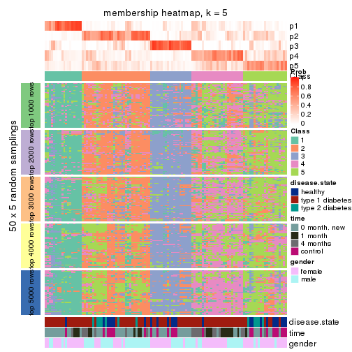
membership_heatmap(res, k = 6)
As soon as we have had the classes for columns, we can look for signatures which are significantly different between classes which can be candidate marks for certain classes. Following are the heatmaps for signatures.
Signature heatmaps where rows are scaled:
get_signatures(res, k = 2)
get_signatures(res, k = 3)
get_signatures(res, k = 4)
get_signatures(res, k = 5)
get_signatures(res, k = 6)
Signature heatmaps where rows are not scaled:
get_signatures(res, k = 2, scale_rows = FALSE)
get_signatures(res, k = 3, scale_rows = FALSE)
get_signatures(res, k = 4, scale_rows = FALSE)
get_signatures(res, k = 5, scale_rows = FALSE)
get_signatures(res, k = 6, scale_rows = FALSE)
Compare the overlap of signatures from different k:
compare_signatures(res)
get_signature() returns a data frame invisibly. TO get the list of signatures, the function
call should be assigned to a variable explicitly. In following code, if plot argument is set
to FALSE, no heatmap is plotted while only the differential analysis is performed.
# code only for demonstration
tb = get_signature(res, k = ..., plot = FALSE)
An example of the output of tb is:
#> which_row fdr mean_1 mean_2 scaled_mean_1 scaled_mean_2 km
#> 1 38 0.042760348 8.373488 9.131774 -0.5533452 0.5164555 1
#> 2 40 0.018707592 7.106213 8.469186 -0.6173731 0.5762149 1
#> 3 55 0.019134737 10.221463 11.207825 -0.6159697 0.5749050 1
#> 4 59 0.006059896 5.921854 7.869574 -0.6899429 0.6439467 1
#> 5 60 0.018055526 8.928898 10.211722 -0.6204761 0.5791110 1
#> 6 98 0.009384629 15.714769 14.887706 0.6635654 -0.6193277 2
...
The columns in tb are:
which_row: row indices corresponding to the input matrix.fdr: FDR for the differential test. mean_x: The mean value in group x.scaled_mean_x: The mean value in group x after rows are scaled.km: Row groups if k-means clustering is applied to rows.UMAP plot which shows how samples are separated.
dimension_reduction(res, k = 2, method = "UMAP")
dimension_reduction(res, k = 3, method = "UMAP")
dimension_reduction(res, k = 4, method = "UMAP")
dimension_reduction(res, k = 5, method = "UMAP")
dimension_reduction(res, k = 6, method = "UMAP")
Following heatmap shows how subgroups are split when increasing k:
collect_classes(res)
Test correlation between subgroups and known annotations. If the known annotation is numeric, one-way ANOVA test is applied, and if the known annotation is discrete, chi-squared contingency table test is applied.
test_to_known_factors(res)
#> n disease.state(p) time(p) gender(p) k
#> MAD:NMF 103 0.02246 7.10e-06 0.892742 2
#> MAD:NMF 77 0.00266 6.85e-02 0.004096 3
#> MAD:NMF 60 0.06087 1.20e-02 0.000038 4
#> MAD:NMF 39 0.08908 7.90e-02 0.002495 5
#> MAD:NMF 37 0.08905 7.37e-02 0.000511 6
If matrix rows can be associated to genes, consider to use GO_Enrichment(res,
...) to perform function enrichment for the signature genes.
The object with results only for a single top-value method and a single partition method can be extracted as:
res = res_list["ATC", "hclust"]
# you can also extract it by
# res = res_list["ATC:hclust"]
A summary of res and all the functions that can be applied to it:
res
#> A 'ConsensusPartition' object with k = 2, 3, 4, 5, 6.
#> On a matrix with 21512 rows and 117 columns.
#> Top rows (1000, 2000, 3000, 4000, 5000) are extracted by 'ATC' method.
#> Subgroups are detected by 'hclust' method.
#> Performed in total 1250 partitions by row resampling.
#> Best k for subgroups seems to be 4.
#>
#> Following methods can be applied to this 'ConsensusPartition' object:
#> [1] "cola_report" "collect_classes" "collect_plots"
#> [4] "collect_stats" "colnames" "compare_signatures"
#> [7] "consensus_heatmap" "dimension_reduction" "functional_enrichment"
#> [10] "get_anno_col" "get_anno" "get_classes"
#> [13] "get_consensus" "get_matrix" "get_membership"
#> [16] "get_param" "get_signatures" "get_stats"
#> [19] "is_best_k" "is_stable_k" "membership_heatmap"
#> [22] "ncol" "nrow" "plot_ecdf"
#> [25] "rownames" "select_partition_number" "show"
#> [28] "suggest_best_k" "test_to_known_factors"
collect_plots() function collects all the plots made from res for all k (number of partitions)
into one single page to provide an easy and fast comparison between different k.
collect_plots(res)
The plots are:
k and the heatmap of
predicted classes for each k.k.k.k.All the plots in panels can be made by individual functions and they are plotted later in this section.
select_partition_number() produces several plots showing different
statistics for choosing “optimized” k. There are following statistics:
k;k, the area increased is defined as \(A_k - A_{k-1}\).The detailed explanations of these statistics can be found in the cola vignette.
Generally speaking, lower PAC score, higher mean silhouette score or higher
concordance corresponds to better partition. Rand index and Jaccard index
measure how similar the current partition is compared to partition with k-1.
If they are too similar, we won't accept k is better than k-1.
select_partition_number(res)
The numeric values for all these statistics can be obtained by get_stats().
get_stats(res)
#> k 1-PAC mean_silhouette concordance area_increased Rand Jaccard
#> 2 2 0.257 0.535 0.717 0.4094 0.552 0.552
#> 3 3 0.222 0.631 0.687 0.3393 0.681 0.522
#> 4 4 0.366 0.659 0.772 0.1410 0.880 0.753
#> 5 5 0.429 0.592 0.723 0.1097 0.868 0.672
#> 6 6 0.522 0.531 0.702 0.0525 0.924 0.755
suggest_best_k() suggests the best \(k\) based on these statistics. The rules are as follows:
NA.suggest_best_k(res)
#> [1] 4
Following shows the table of the partitions (You need to click the show/hide
code output link to see it). The membership matrix (columns with name p*)
is inferred by
clue::cl_consensus()
function with the SE method. Basically the value in the membership matrix
represents the probability to belong to a certain group. The finall class
label for an item is determined with the group with highest probability it
belongs to.
In get_classes() function, the entropy is calculated from the membership
matrix and the silhouette score is calculated from the consensus matrix.
cbind(get_classes(res, k = 2), get_membership(res, k = 2))
#> class entropy silhouette p1 p2
#> GSM254177 1 0.9732 0.5271 0.596 0.404
#> GSM254179 1 0.9922 0.4300 0.552 0.448
#> GSM254180 1 0.9754 0.5242 0.592 0.408
#> GSM254182 2 0.0000 0.7381 0.000 1.000
#> GSM254183 2 0.0000 0.7381 0.000 1.000
#> GSM254277 1 0.9635 0.5412 0.612 0.388
#> GSM254278 2 0.0000 0.7381 0.000 1.000
#> GSM254281 1 0.9608 0.5442 0.616 0.384
#> GSM254282 1 0.9754 0.5242 0.592 0.408
#> GSM254284 1 0.9044 0.6202 0.680 0.320
#> GSM254286 1 0.9608 0.5447 0.616 0.384
#> GSM254290 2 0.9850 -0.0430 0.428 0.572
#> GSM254291 1 0.9635 0.5400 0.612 0.388
#> GSM254293 1 0.9608 0.5442 0.616 0.384
#> GSM254178 1 0.0000 0.6617 1.000 0.000
#> GSM254181 1 0.9732 0.5205 0.596 0.404
#> GSM254279 2 0.0000 0.7381 0.000 1.000
#> GSM254280 2 0.0000 0.7381 0.000 1.000
#> GSM254283 1 0.9044 0.6202 0.680 0.320
#> GSM254285 2 0.0000 0.7381 0.000 1.000
#> GSM254287 1 0.8386 0.6564 0.732 0.268
#> GSM254288 1 0.8327 0.6581 0.736 0.264
#> GSM254289 2 0.9850 -0.0430 0.428 0.572
#> GSM254292 1 0.9608 0.5442 0.616 0.384
#> GSM254184 2 0.0000 0.7381 0.000 1.000
#> GSM254185 2 0.0000 0.7381 0.000 1.000
#> GSM254187 2 0.0000 0.7381 0.000 1.000
#> GSM254189 2 0.0376 0.7343 0.004 0.996
#> GSM254190 1 0.9286 0.5710 0.656 0.344
#> GSM254191 2 0.0000 0.7381 0.000 1.000
#> GSM254192 2 0.0672 0.7337 0.008 0.992
#> GSM254193 1 0.7299 0.6750 0.796 0.204
#> GSM254199 1 0.9996 0.3346 0.512 0.488
#> GSM254203 1 0.0000 0.6617 1.000 0.000
#> GSM254206 1 0.0000 0.6617 1.000 0.000
#> GSM254210 2 0.4815 0.6502 0.104 0.896
#> GSM254211 1 0.0000 0.6617 1.000 0.000
#> GSM254215 2 0.0000 0.7381 0.000 1.000
#> GSM254218 1 0.9754 0.5242 0.592 0.408
#> GSM254230 1 0.6973 0.6796 0.812 0.188
#> GSM254236 2 0.0000 0.7381 0.000 1.000
#> GSM254244 1 0.0672 0.6647 0.992 0.008
#> GSM254247 1 0.9209 0.6149 0.664 0.336
#> GSM254248 1 0.8016 0.6385 0.756 0.244
#> GSM254254 2 0.2423 0.7140 0.040 0.960
#> GSM254257 2 0.2423 0.7140 0.040 0.960
#> GSM254258 2 0.0000 0.7381 0.000 1.000
#> GSM254261 2 0.2423 0.7140 0.040 0.960
#> GSM254264 2 0.0000 0.7381 0.000 1.000
#> GSM254186 2 0.0000 0.7381 0.000 1.000
#> GSM254188 2 0.0000 0.7381 0.000 1.000
#> GSM254194 2 0.0000 0.7381 0.000 1.000
#> GSM254195 1 0.0376 0.6637 0.996 0.004
#> GSM254196 1 0.9608 0.5447 0.616 0.384
#> GSM254200 2 0.0000 0.7381 0.000 1.000
#> GSM254209 1 0.9977 0.3619 0.528 0.472
#> GSM254214 1 0.9427 0.5761 0.640 0.360
#> GSM254221 1 0.0376 0.6637 0.996 0.004
#> GSM254224 1 0.7745 0.6750 0.772 0.228
#> GSM254227 1 0.9833 0.4919 0.576 0.424
#> GSM254233 1 0.8713 0.6169 0.708 0.292
#> GSM254235 1 0.0672 0.6647 0.992 0.008
#> GSM254239 1 0.9661 0.5547 0.608 0.392
#> GSM254241 1 0.0376 0.6637 0.996 0.004
#> GSM254251 1 0.9732 0.5205 0.596 0.404
#> GSM254262 2 0.0000 0.7381 0.000 1.000
#> GSM254263 2 0.0000 0.7381 0.000 1.000
#> GSM254197 1 0.0000 0.6617 1.000 0.000
#> GSM254201 1 0.0376 0.6637 0.996 0.004
#> GSM254204 1 0.0000 0.6617 1.000 0.000
#> GSM254216 1 0.6712 0.6767 0.824 0.176
#> GSM254228 1 0.0376 0.6637 0.996 0.004
#> GSM254242 1 0.0000 0.6617 1.000 0.000
#> GSM254245 1 0.0000 0.6617 1.000 0.000
#> GSM254252 1 0.8327 0.6560 0.736 0.264
#> GSM254255 1 0.8499 0.6501 0.724 0.276
#> GSM254259 1 0.0000 0.6617 1.000 0.000
#> GSM254207 2 0.9933 -0.1094 0.452 0.548
#> GSM254212 1 0.9977 0.3619 0.528 0.472
#> GSM254219 1 0.0000 0.6617 1.000 0.000
#> GSM254222 2 0.9963 -0.1496 0.464 0.536
#> GSM254225 2 0.9954 -0.1590 0.460 0.540
#> GSM254231 1 0.0376 0.6637 0.996 0.004
#> GSM254234 2 0.9998 -0.2577 0.492 0.508
#> GSM254237 1 0.9775 0.5283 0.588 0.412
#> GSM254249 1 0.8608 0.6451 0.716 0.284
#> GSM254198 2 0.9963 -0.1496 0.464 0.536
#> GSM254202 1 0.0376 0.6637 0.996 0.004
#> GSM254205 1 0.0000 0.6617 1.000 0.000
#> GSM254217 1 0.9775 0.5283 0.588 0.412
#> GSM254229 1 0.9977 0.3619 0.528 0.472
#> GSM254243 1 0.0000 0.6617 1.000 0.000
#> GSM254246 1 0.0000 0.6617 1.000 0.000
#> GSM254253 1 0.1414 0.6655 0.980 0.020
#> GSM254256 1 0.9129 0.6126 0.672 0.328
#> GSM254260 1 0.8499 0.6501 0.724 0.276
#> GSM254208 1 0.7815 0.6703 0.768 0.232
#> GSM254213 1 0.9954 0.3864 0.540 0.460
#> GSM254220 1 0.0376 0.6637 0.996 0.004
#> GSM254223 1 0.7883 0.6694 0.764 0.236
#> GSM254226 2 0.9963 -0.1496 0.464 0.536
#> GSM254232 1 0.8443 0.6536 0.728 0.272
#> GSM254238 1 0.9732 0.5412 0.596 0.404
#> GSM254240 1 0.0376 0.6637 0.996 0.004
#> GSM254250 1 0.0000 0.6617 1.000 0.000
#> GSM254268 1 0.9977 0.3619 0.528 0.472
#> GSM254269 1 0.9977 0.3619 0.528 0.472
#> GSM254270 1 0.9661 0.5547 0.608 0.392
#> GSM254272 2 0.9963 -0.1496 0.464 0.536
#> GSM254273 1 0.9988 0.3356 0.520 0.480
#> GSM254274 2 0.9988 -0.2094 0.480 0.520
#> GSM254265 2 0.9933 -0.1154 0.452 0.548
#> GSM254266 1 0.9977 0.3647 0.528 0.472
#> GSM254267 2 0.9922 -0.0959 0.448 0.552
#> GSM254271 2 0.9970 -0.1624 0.468 0.532
#> GSM254275 1 0.9909 0.4322 0.556 0.444
#> GSM254276 1 0.9977 0.3647 0.528 0.472
cbind(get_classes(res, k = 3), get_membership(res, k = 3))
#> class entropy silhouette p1 p2 p3
#> GSM254177 2 0.8065 0.546 0.092 0.604 0.304
#> GSM254179 2 0.5733 0.686 0.000 0.676 0.324
#> GSM254180 2 0.6019 0.698 0.012 0.700 0.288
#> GSM254182 3 0.0000 0.975 0.000 0.000 1.000
#> GSM254183 3 0.0000 0.975 0.000 0.000 1.000
#> GSM254277 2 0.7844 0.541 0.084 0.624 0.292
#> GSM254278 3 0.0000 0.975 0.000 0.000 1.000
#> GSM254281 2 0.7889 0.536 0.088 0.624 0.288
#> GSM254282 2 0.6019 0.698 0.012 0.700 0.288
#> GSM254284 2 0.5406 0.670 0.020 0.780 0.200
#> GSM254286 2 0.8462 0.504 0.124 0.588 0.288
#> GSM254290 2 0.6280 0.556 0.000 0.540 0.460
#> GSM254291 2 0.8371 0.513 0.116 0.592 0.292
#> GSM254293 2 0.7816 0.539 0.084 0.628 0.288
#> GSM254178 1 0.4555 0.587 0.800 0.200 0.000
#> GSM254181 2 0.5986 0.701 0.012 0.704 0.284
#> GSM254279 3 0.0000 0.975 0.000 0.000 1.000
#> GSM254280 3 0.0000 0.975 0.000 0.000 1.000
#> GSM254283 2 0.5406 0.670 0.020 0.780 0.200
#> GSM254285 3 0.0000 0.975 0.000 0.000 1.000
#> GSM254287 2 0.6252 0.592 0.084 0.772 0.144
#> GSM254288 2 0.6191 0.585 0.084 0.776 0.140
#> GSM254289 2 0.6280 0.556 0.000 0.540 0.460
#> GSM254292 2 0.7816 0.539 0.084 0.628 0.288
#> GSM254184 3 0.0000 0.975 0.000 0.000 1.000
#> GSM254185 3 0.0000 0.975 0.000 0.000 1.000
#> GSM254187 3 0.0000 0.975 0.000 0.000 1.000
#> GSM254189 3 0.0747 0.964 0.000 0.016 0.984
#> GSM254190 2 0.8907 0.433 0.184 0.568 0.248
#> GSM254191 3 0.0592 0.965 0.000 0.012 0.988
#> GSM254192 3 0.0892 0.956 0.000 0.020 0.980
#> GSM254193 2 0.5874 0.483 0.116 0.796 0.088
#> GSM254199 2 0.5988 0.661 0.000 0.632 0.368
#> GSM254203 1 0.5733 0.850 0.676 0.324 0.000
#> GSM254206 1 0.5497 0.839 0.708 0.292 0.000
#> GSM254210 3 0.3879 0.726 0.000 0.152 0.848
#> GSM254211 2 0.6299 -0.667 0.476 0.524 0.000
#> GSM254215 3 0.0000 0.975 0.000 0.000 1.000
#> GSM254218 2 0.6019 0.698 0.012 0.700 0.288
#> GSM254230 2 0.5817 0.518 0.100 0.800 0.100
#> GSM254236 3 0.0000 0.975 0.000 0.000 1.000
#> GSM254244 2 0.5760 -0.307 0.328 0.672 0.000
#> GSM254247 2 0.7383 0.606 0.084 0.680 0.236
#> GSM254248 2 0.8473 0.447 0.176 0.616 0.208
#> GSM254254 3 0.2165 0.901 0.000 0.064 0.936
#> GSM254257 3 0.2165 0.901 0.000 0.064 0.936
#> GSM254258 3 0.0000 0.975 0.000 0.000 1.000
#> GSM254261 3 0.2165 0.901 0.000 0.064 0.936
#> GSM254264 3 0.0000 0.975 0.000 0.000 1.000
#> GSM254186 3 0.0000 0.975 0.000 0.000 1.000
#> GSM254188 3 0.0000 0.975 0.000 0.000 1.000
#> GSM254194 3 0.0592 0.965 0.000 0.012 0.988
#> GSM254195 1 0.6045 0.377 0.620 0.380 0.000
#> GSM254196 2 0.8462 0.504 0.124 0.588 0.288
#> GSM254200 3 0.0000 0.975 0.000 0.000 1.000
#> GSM254209 2 0.5882 0.671 0.000 0.652 0.348
#> GSM254214 2 0.5945 0.686 0.024 0.740 0.236
#> GSM254221 2 0.5968 -0.392 0.364 0.636 0.000
#> GSM254224 2 0.5377 0.574 0.068 0.820 0.112
#> GSM254227 2 0.6113 0.696 0.012 0.688 0.300
#> GSM254233 2 0.8304 0.506 0.144 0.624 0.232
#> GSM254235 2 0.5968 -0.381 0.364 0.636 0.000
#> GSM254239 2 0.6867 0.649 0.040 0.672 0.288
#> GSM254241 1 0.6252 0.766 0.556 0.444 0.000
#> GSM254251 2 0.5986 0.701 0.012 0.704 0.284
#> GSM254262 3 0.0000 0.975 0.000 0.000 1.000
#> GSM254263 3 0.0000 0.975 0.000 0.000 1.000
#> GSM254197 1 0.5905 0.840 0.648 0.352 0.000
#> GSM254201 2 0.5968 -0.392 0.364 0.636 0.000
#> GSM254204 1 0.5497 0.839 0.708 0.292 0.000
#> GSM254216 2 0.7042 0.481 0.140 0.728 0.132
#> GSM254228 1 0.6274 0.745 0.544 0.456 0.000
#> GSM254242 1 0.6062 0.810 0.616 0.384 0.000
#> GSM254245 1 0.5810 0.806 0.664 0.336 0.000
#> GSM254252 2 0.5970 0.611 0.060 0.780 0.160
#> GSM254255 2 0.5295 0.625 0.036 0.808 0.156
#> GSM254259 1 0.5733 0.850 0.676 0.324 0.000
#> GSM254207 2 0.6235 0.591 0.000 0.564 0.436
#> GSM254212 2 0.5882 0.671 0.000 0.652 0.348
#> GSM254219 1 0.6079 0.807 0.612 0.388 0.000
#> GSM254222 2 0.6192 0.611 0.000 0.580 0.420
#> GSM254225 2 0.6192 0.613 0.000 0.580 0.420
#> GSM254231 2 0.5968 -0.388 0.364 0.636 0.000
#> GSM254234 2 0.6095 0.638 0.000 0.608 0.392
#> GSM254237 2 0.6793 0.664 0.036 0.672 0.292
#> GSM254249 2 0.5413 0.634 0.036 0.800 0.164
#> GSM254198 2 0.6192 0.611 0.000 0.580 0.420
#> GSM254202 2 0.5968 -0.388 0.364 0.636 0.000
#> GSM254205 1 0.6299 0.699 0.524 0.476 0.000
#> GSM254217 2 0.6793 0.664 0.036 0.672 0.292
#> GSM254229 2 0.5882 0.671 0.000 0.652 0.348
#> GSM254243 1 0.5733 0.850 0.676 0.324 0.000
#> GSM254246 1 0.5733 0.850 0.676 0.324 0.000
#> GSM254253 2 0.6822 -0.685 0.480 0.508 0.012
#> GSM254256 2 0.5220 0.680 0.012 0.780 0.208
#> GSM254260 2 0.5295 0.625 0.036 0.808 0.156
#> GSM254208 2 0.5677 0.581 0.072 0.804 0.124
#> GSM254213 2 0.6033 0.676 0.004 0.660 0.336
#> GSM254220 2 0.5968 -0.388 0.364 0.636 0.000
#> GSM254223 2 0.5588 0.585 0.068 0.808 0.124
#> GSM254226 2 0.6192 0.611 0.000 0.580 0.420
#> GSM254232 2 0.5677 0.626 0.048 0.792 0.160
#> GSM254238 2 0.6730 0.666 0.036 0.680 0.284
#> GSM254240 1 0.6235 0.771 0.564 0.436 0.000
#> GSM254250 1 0.5733 0.850 0.676 0.324 0.000
#> GSM254268 2 0.5882 0.671 0.000 0.652 0.348
#> GSM254269 2 0.5882 0.671 0.000 0.652 0.348
#> GSM254270 2 0.6867 0.649 0.040 0.672 0.288
#> GSM254272 2 0.6192 0.611 0.000 0.580 0.420
#> GSM254273 2 0.5926 0.665 0.000 0.644 0.356
#> GSM254274 2 0.6140 0.625 0.000 0.596 0.404
#> GSM254265 2 0.6225 0.597 0.000 0.568 0.432
#> GSM254266 2 0.6104 0.674 0.004 0.648 0.348
#> GSM254267 2 0.6244 0.585 0.000 0.560 0.440
#> GSM254271 2 0.6180 0.615 0.000 0.584 0.416
#> GSM254275 2 0.6255 0.688 0.012 0.668 0.320
#> GSM254276 2 0.6104 0.674 0.004 0.648 0.348
cbind(get_classes(res, k = 4), get_membership(res, k = 4))
#> class entropy silhouette p1 p2 p3 p4
#> GSM254177 2 0.7119 0.418 0.004 0.584 0.212 0.200
#> GSM254179 2 0.3279 0.747 0.000 0.872 0.096 0.032
#> GSM254180 2 0.3521 0.732 0.000 0.864 0.084 0.052
#> GSM254182 3 0.2081 0.967 0.000 0.084 0.916 0.000
#> GSM254183 3 0.2081 0.967 0.000 0.084 0.916 0.000
#> GSM254277 2 0.7292 0.370 0.004 0.560 0.216 0.220
#> GSM254278 3 0.2081 0.967 0.000 0.084 0.916 0.000
#> GSM254281 2 0.7463 0.311 0.004 0.532 0.216 0.248
#> GSM254282 2 0.3521 0.732 0.000 0.864 0.084 0.052
#> GSM254284 2 0.4411 0.689 0.072 0.836 0.024 0.068
#> GSM254286 2 0.7680 0.203 0.004 0.484 0.216 0.296
#> GSM254290 2 0.3975 0.688 0.000 0.760 0.240 0.000
#> GSM254291 2 0.7444 0.331 0.004 0.536 0.220 0.240
#> GSM254293 2 0.7441 0.321 0.004 0.536 0.216 0.244
#> GSM254178 4 0.4053 0.237 0.228 0.000 0.004 0.768
#> GSM254181 2 0.3286 0.739 0.000 0.876 0.080 0.044
#> GSM254279 3 0.2081 0.967 0.000 0.084 0.916 0.000
#> GSM254280 3 0.2081 0.967 0.000 0.084 0.916 0.000
#> GSM254283 2 0.4411 0.689 0.072 0.836 0.024 0.068
#> GSM254285 3 0.2081 0.967 0.000 0.084 0.916 0.000
#> GSM254287 2 0.4276 0.621 0.096 0.828 0.072 0.004
#> GSM254288 2 0.4337 0.615 0.100 0.824 0.072 0.004
#> GSM254289 2 0.3975 0.688 0.000 0.760 0.240 0.000
#> GSM254292 2 0.7441 0.321 0.004 0.536 0.216 0.244
#> GSM254184 3 0.2081 0.967 0.000 0.084 0.916 0.000
#> GSM254185 3 0.2081 0.967 0.000 0.084 0.916 0.000
#> GSM254187 3 0.2081 0.967 0.000 0.084 0.916 0.000
#> GSM254189 3 0.2466 0.955 0.000 0.096 0.900 0.004
#> GSM254190 4 0.7649 0.109 0.004 0.308 0.204 0.484
#> GSM254191 3 0.2281 0.958 0.000 0.096 0.904 0.000
#> GSM254192 3 0.2408 0.950 0.000 0.104 0.896 0.000
#> GSM254193 2 0.5090 0.433 0.312 0.672 0.012 0.004
#> GSM254199 2 0.4188 0.743 0.000 0.812 0.148 0.040
#> GSM254203 1 0.1388 0.579 0.960 0.012 0.000 0.028
#> GSM254206 1 0.2928 0.544 0.880 0.012 0.000 0.108
#> GSM254210 3 0.4277 0.677 0.000 0.280 0.720 0.000
#> GSM254211 1 0.6252 0.512 0.680 0.168 0.004 0.148
#> GSM254215 3 0.2081 0.967 0.000 0.084 0.916 0.000
#> GSM254218 2 0.3521 0.732 0.000 0.864 0.084 0.052
#> GSM254230 2 0.6518 0.470 0.136 0.660 0.008 0.196
#> GSM254236 3 0.2081 0.967 0.000 0.084 0.916 0.000
#> GSM254244 1 0.8008 0.321 0.400 0.300 0.004 0.296
#> GSM254247 2 0.6853 0.500 0.024 0.656 0.140 0.180
#> GSM254248 2 0.8337 0.136 0.060 0.492 0.140 0.308
#> GSM254254 3 0.3266 0.874 0.000 0.168 0.832 0.000
#> GSM254257 3 0.3266 0.874 0.000 0.168 0.832 0.000
#> GSM254258 3 0.2081 0.967 0.000 0.084 0.916 0.000
#> GSM254261 3 0.3266 0.874 0.000 0.168 0.832 0.000
#> GSM254264 3 0.2081 0.967 0.000 0.084 0.916 0.000
#> GSM254186 3 0.2081 0.967 0.000 0.084 0.916 0.000
#> GSM254188 3 0.2081 0.967 0.000 0.084 0.916 0.000
#> GSM254194 3 0.2281 0.958 0.000 0.096 0.904 0.000
#> GSM254195 4 0.0844 0.420 0.012 0.004 0.004 0.980
#> GSM254196 2 0.7680 0.203 0.004 0.484 0.216 0.296
#> GSM254200 3 0.2081 0.967 0.000 0.084 0.916 0.000
#> GSM254209 2 0.2888 0.741 0.000 0.872 0.124 0.004
#> GSM254214 2 0.3304 0.720 0.048 0.888 0.052 0.012
#> GSM254221 1 0.7587 0.420 0.480 0.244 0.000 0.276
#> GSM254224 2 0.6086 0.559 0.128 0.716 0.016 0.140
#> GSM254227 2 0.3182 0.743 0.000 0.876 0.096 0.028
#> GSM254233 2 0.7629 0.219 0.012 0.508 0.164 0.316
#> GSM254235 1 0.7863 0.380 0.448 0.292 0.004 0.256
#> GSM254239 2 0.5223 0.638 0.004 0.764 0.136 0.096
#> GSM254241 1 0.4963 0.560 0.740 0.228 0.008 0.024
#> GSM254251 2 0.3370 0.738 0.000 0.872 0.080 0.048
#> GSM254262 3 0.2081 0.967 0.000 0.084 0.916 0.000
#> GSM254263 3 0.2081 0.967 0.000 0.084 0.916 0.000
#> GSM254197 1 0.2926 0.578 0.888 0.096 0.012 0.004
#> GSM254201 1 0.7587 0.420 0.480 0.244 0.000 0.276
#> GSM254204 1 0.2928 0.544 0.880 0.012 0.000 0.108
#> GSM254216 2 0.6677 0.446 0.172 0.656 0.012 0.160
#> GSM254228 1 0.4862 0.560 0.744 0.228 0.008 0.020
#> GSM254242 1 0.4549 0.594 0.804 0.100 0.000 0.096
#> GSM254245 1 0.5113 0.447 0.684 0.024 0.000 0.292
#> GSM254252 2 0.5624 0.625 0.152 0.752 0.024 0.072
#> GSM254255 2 0.5412 0.638 0.140 0.768 0.024 0.068
#> GSM254259 1 0.0524 0.579 0.988 0.008 0.000 0.004
#> GSM254207 2 0.3726 0.709 0.000 0.788 0.212 0.000
#> GSM254212 2 0.2704 0.740 0.000 0.876 0.124 0.000
#> GSM254219 1 0.4608 0.592 0.800 0.104 0.000 0.096
#> GSM254222 2 0.3569 0.718 0.000 0.804 0.196 0.000
#> GSM254225 2 0.3893 0.724 0.000 0.796 0.196 0.008
#> GSM254231 1 0.7609 0.421 0.476 0.252 0.000 0.272
#> GSM254234 2 0.3266 0.729 0.000 0.832 0.168 0.000
#> GSM254237 2 0.4610 0.676 0.004 0.804 0.124 0.068
#> GSM254249 2 0.5339 0.649 0.132 0.776 0.028 0.064
#> GSM254198 2 0.3569 0.718 0.000 0.804 0.196 0.000
#> GSM254202 1 0.7609 0.421 0.476 0.252 0.000 0.272
#> GSM254205 1 0.6119 0.552 0.680 0.152 0.000 0.168
#> GSM254217 2 0.4610 0.676 0.004 0.804 0.124 0.068
#> GSM254229 2 0.2704 0.740 0.000 0.876 0.124 0.000
#> GSM254243 1 0.0336 0.579 0.992 0.008 0.000 0.000
#> GSM254246 1 0.0524 0.579 0.988 0.008 0.000 0.004
#> GSM254253 1 0.6080 0.493 0.644 0.292 0.008 0.056
#> GSM254256 2 0.4403 0.701 0.068 0.840 0.036 0.056
#> GSM254260 2 0.5412 0.638 0.140 0.768 0.024 0.068
#> GSM254208 2 0.6016 0.592 0.168 0.720 0.020 0.092
#> GSM254213 2 0.2760 0.739 0.000 0.872 0.128 0.000
#> GSM254220 1 0.7609 0.421 0.476 0.252 0.000 0.272
#> GSM254223 2 0.5956 0.598 0.168 0.724 0.020 0.088
#> GSM254226 2 0.3569 0.718 0.000 0.804 0.196 0.000
#> GSM254232 2 0.5412 0.640 0.140 0.768 0.024 0.068
#> GSM254238 2 0.4571 0.673 0.004 0.808 0.116 0.072
#> GSM254240 1 0.4682 0.570 0.764 0.208 0.008 0.020
#> GSM254250 1 0.0524 0.579 0.988 0.008 0.000 0.004
#> GSM254268 2 0.2704 0.740 0.000 0.876 0.124 0.000
#> GSM254269 2 0.2704 0.740 0.000 0.876 0.124 0.000
#> GSM254270 2 0.5282 0.635 0.004 0.760 0.136 0.100
#> GSM254272 2 0.3569 0.718 0.000 0.804 0.196 0.000
#> GSM254273 2 0.2814 0.738 0.000 0.868 0.132 0.000
#> GSM254274 2 0.3400 0.723 0.000 0.820 0.180 0.000
#> GSM254265 2 0.3688 0.713 0.000 0.792 0.208 0.000
#> GSM254266 2 0.3088 0.743 0.000 0.864 0.128 0.008
#> GSM254267 2 0.3764 0.706 0.000 0.784 0.216 0.000
#> GSM254271 2 0.3528 0.719 0.000 0.808 0.192 0.000
#> GSM254275 2 0.3102 0.743 0.004 0.872 0.116 0.008
#> GSM254276 2 0.3088 0.743 0.000 0.864 0.128 0.008
cbind(get_classes(res, k = 5), get_membership(res, k = 5))
#> class entropy silhouette p1 p2 p3 p4 p5
#> GSM254177 4 0.6535 0.36040 0.000 0.400 0.108 0.468 0.024
#> GSM254179 2 0.5109 0.65905 0.000 0.696 0.172 0.132 0.000
#> GSM254180 2 0.4872 0.59042 0.000 0.720 0.120 0.160 0.000
#> GSM254182 3 0.0000 0.96959 0.000 0.000 1.000 0.000 0.000
#> GSM254183 3 0.0000 0.96959 0.000 0.000 1.000 0.000 0.000
#> GSM254277 4 0.6302 0.44605 0.000 0.356 0.108 0.520 0.016
#> GSM254278 3 0.0000 0.96959 0.000 0.000 1.000 0.000 0.000
#> GSM254281 4 0.6411 0.49503 0.000 0.312 0.108 0.552 0.028
#> GSM254282 2 0.4872 0.59042 0.000 0.720 0.120 0.160 0.000
#> GSM254284 2 0.6124 0.49302 0.040 0.644 0.076 0.232 0.008
#> GSM254286 4 0.7508 0.47135 0.000 0.308 0.108 0.468 0.116
#> GSM254290 2 0.3876 0.66198 0.000 0.684 0.316 0.000 0.000
#> GSM254291 4 0.7122 0.40901 0.000 0.364 0.112 0.460 0.064
#> GSM254293 4 0.6184 0.49376 0.000 0.316 0.108 0.560 0.016
#> GSM254178 5 0.4370 0.68049 0.200 0.000 0.000 0.056 0.744
#> GSM254181 2 0.4808 0.63368 0.000 0.728 0.136 0.136 0.000
#> GSM254279 3 0.0000 0.96959 0.000 0.000 1.000 0.000 0.000
#> GSM254280 3 0.0000 0.96959 0.000 0.000 1.000 0.000 0.000
#> GSM254283 2 0.6124 0.49302 0.040 0.644 0.076 0.232 0.008
#> GSM254285 3 0.0000 0.96959 0.000 0.000 1.000 0.000 0.000
#> GSM254287 2 0.5121 0.33701 0.016 0.728 0.004 0.172 0.080
#> GSM254288 2 0.5059 0.33068 0.020 0.728 0.000 0.172 0.080
#> GSM254289 2 0.4299 0.65599 0.000 0.672 0.316 0.008 0.004
#> GSM254292 4 0.6184 0.49376 0.000 0.316 0.108 0.560 0.016
#> GSM254184 3 0.0000 0.96959 0.000 0.000 1.000 0.000 0.000
#> GSM254185 3 0.0000 0.96959 0.000 0.000 1.000 0.000 0.000
#> GSM254187 3 0.0000 0.96959 0.000 0.000 1.000 0.000 0.000
#> GSM254189 3 0.0771 0.95241 0.000 0.020 0.976 0.004 0.000
#> GSM254190 4 0.7737 0.29920 0.000 0.168 0.104 0.460 0.268
#> GSM254191 3 0.0451 0.96326 0.000 0.000 0.988 0.008 0.004
#> GSM254192 3 0.0609 0.95239 0.000 0.020 0.980 0.000 0.000
#> GSM254193 2 0.7332 0.08385 0.256 0.512 0.000 0.152 0.080
#> GSM254199 2 0.5243 0.65899 0.000 0.684 0.208 0.104 0.004
#> GSM254203 1 0.1216 0.68937 0.960 0.000 0.000 0.020 0.020
#> GSM254206 1 0.2616 0.65166 0.880 0.000 0.000 0.020 0.100
#> GSM254210 3 0.3109 0.67714 0.000 0.200 0.800 0.000 0.000
#> GSM254211 1 0.4812 0.50969 0.672 0.032 0.000 0.288 0.008
#> GSM254215 3 0.0000 0.96959 0.000 0.000 1.000 0.000 0.000
#> GSM254218 2 0.4872 0.59042 0.000 0.720 0.120 0.160 0.000
#> GSM254230 4 0.6566 0.17413 0.064 0.380 0.048 0.504 0.004
#> GSM254236 3 0.0000 0.96959 0.000 0.000 1.000 0.000 0.000
#> GSM254244 4 0.5768 0.10272 0.328 0.084 0.000 0.580 0.008
#> GSM254247 4 0.5359 0.34746 0.000 0.412 0.056 0.532 0.000
#> GSM254248 4 0.5219 0.47088 0.036 0.176 0.056 0.728 0.004
#> GSM254254 3 0.1792 0.88203 0.000 0.084 0.916 0.000 0.000
#> GSM254257 3 0.1792 0.88203 0.000 0.084 0.916 0.000 0.000
#> GSM254258 3 0.0000 0.96959 0.000 0.000 1.000 0.000 0.000
#> GSM254261 3 0.1792 0.88203 0.000 0.084 0.916 0.000 0.000
#> GSM254264 3 0.0000 0.96959 0.000 0.000 1.000 0.000 0.000
#> GSM254186 3 0.0000 0.96959 0.000 0.000 1.000 0.000 0.000
#> GSM254188 3 0.0000 0.96959 0.000 0.000 1.000 0.000 0.000
#> GSM254194 3 0.0404 0.95957 0.000 0.012 0.988 0.000 0.000
#> GSM254195 5 0.2127 0.74412 0.000 0.000 0.000 0.108 0.892
#> GSM254196 4 0.7508 0.47135 0.000 0.308 0.108 0.468 0.116
#> GSM254200 3 0.0000 0.96959 0.000 0.000 1.000 0.000 0.000
#> GSM254209 2 0.3266 0.71116 0.000 0.796 0.200 0.004 0.000
#> GSM254214 2 0.4494 0.65074 0.020 0.796 0.104 0.072 0.008
#> GSM254221 4 0.5163 -0.04140 0.408 0.028 0.000 0.556 0.008
#> GSM254224 2 0.6475 0.01656 0.056 0.472 0.056 0.416 0.000
#> GSM254227 2 0.4577 0.63979 0.000 0.748 0.144 0.108 0.000
#> GSM254233 4 0.4903 0.49897 0.000 0.196 0.068 0.724 0.012
#> GSM254235 4 0.5858 -0.00628 0.376 0.080 0.000 0.536 0.008
#> GSM254239 2 0.5344 0.11959 0.000 0.596 0.048 0.348 0.008
#> GSM254241 1 0.5691 0.56448 0.652 0.196 0.000 0.144 0.008
#> GSM254251 2 0.4849 0.63072 0.000 0.724 0.136 0.140 0.000
#> GSM254262 3 0.0000 0.96959 0.000 0.000 1.000 0.000 0.000
#> GSM254263 3 0.0000 0.96959 0.000 0.000 1.000 0.000 0.000
#> GSM254197 1 0.2938 0.64199 0.876 0.084 0.000 0.032 0.008
#> GSM254201 4 0.5163 -0.04140 0.408 0.028 0.000 0.556 0.008
#> GSM254204 1 0.2616 0.65166 0.880 0.000 0.000 0.020 0.100
#> GSM254216 4 0.6892 0.18639 0.108 0.376 0.048 0.468 0.000
#> GSM254228 1 0.5713 0.57486 0.660 0.176 0.000 0.152 0.012
#> GSM254242 1 0.3963 0.60539 0.732 0.008 0.000 0.256 0.004
#> GSM254245 1 0.4865 0.43856 0.680 0.004 0.000 0.048 0.268
#> GSM254252 2 0.6856 0.35647 0.076 0.564 0.072 0.280 0.008
#> GSM254255 2 0.6381 0.39358 0.056 0.600 0.068 0.272 0.004
#> GSM254259 1 0.0693 0.68324 0.980 0.000 0.000 0.008 0.012
#> GSM254207 2 0.3730 0.68659 0.000 0.712 0.288 0.000 0.000
#> GSM254212 2 0.3109 0.71080 0.000 0.800 0.200 0.000 0.000
#> GSM254219 1 0.3989 0.60227 0.728 0.008 0.000 0.260 0.004
#> GSM254222 2 0.3636 0.69476 0.000 0.728 0.272 0.000 0.000
#> GSM254225 2 0.3967 0.69753 0.000 0.724 0.264 0.012 0.000
#> GSM254231 4 0.5297 -0.03504 0.404 0.036 0.000 0.552 0.008
#> GSM254234 2 0.3452 0.70469 0.000 0.756 0.244 0.000 0.000
#> GSM254237 2 0.4949 0.29577 0.000 0.656 0.056 0.288 0.000
#> GSM254249 2 0.6521 0.40847 0.052 0.596 0.076 0.268 0.008
#> GSM254198 2 0.3636 0.69476 0.000 0.728 0.272 0.000 0.000
#> GSM254202 4 0.5297 -0.03504 0.404 0.036 0.000 0.552 0.008
#> GSM254205 1 0.4817 0.47504 0.608 0.016 0.000 0.368 0.008
#> GSM254217 2 0.4949 0.29577 0.000 0.656 0.056 0.288 0.000
#> GSM254229 2 0.3109 0.71080 0.000 0.800 0.200 0.000 0.000
#> GSM254243 1 0.0290 0.68788 0.992 0.000 0.000 0.008 0.000
#> GSM254246 1 0.0693 0.68324 0.980 0.000 0.000 0.008 0.012
#> GSM254253 1 0.6381 0.45216 0.556 0.240 0.000 0.196 0.008
#> GSM254256 2 0.5904 0.52165 0.028 0.660 0.080 0.224 0.008
#> GSM254260 2 0.6381 0.39358 0.056 0.600 0.068 0.272 0.004
#> GSM254208 2 0.7002 0.27430 0.088 0.532 0.064 0.308 0.008
#> GSM254213 2 0.3160 0.70966 0.000 0.808 0.188 0.004 0.000
#> GSM254220 4 0.5297 -0.03504 0.404 0.036 0.000 0.552 0.008
#> GSM254223 2 0.6988 0.28235 0.088 0.536 0.064 0.304 0.008
#> GSM254226 2 0.3636 0.69476 0.000 0.728 0.272 0.000 0.000
#> GSM254232 2 0.6716 0.38146 0.068 0.580 0.072 0.272 0.008
#> GSM254238 2 0.5071 0.25526 0.000 0.640 0.048 0.308 0.004
#> GSM254240 1 0.5495 0.58642 0.676 0.176 0.000 0.140 0.008
#> GSM254250 1 0.0833 0.68847 0.976 0.016 0.000 0.004 0.004
#> GSM254268 2 0.3109 0.71080 0.000 0.800 0.200 0.000 0.000
#> GSM254269 2 0.3109 0.71080 0.000 0.800 0.200 0.000 0.000
#> GSM254270 2 0.5358 0.10923 0.000 0.592 0.048 0.352 0.008
#> GSM254272 2 0.3636 0.69476 0.000 0.728 0.272 0.000 0.000
#> GSM254273 2 0.3177 0.71063 0.000 0.792 0.208 0.000 0.000
#> GSM254274 2 0.3534 0.70096 0.000 0.744 0.256 0.000 0.000
#> GSM254265 2 0.3707 0.68925 0.000 0.716 0.284 0.000 0.000
#> GSM254266 2 0.3690 0.71088 0.000 0.780 0.200 0.020 0.000
#> GSM254267 2 0.3752 0.68339 0.000 0.708 0.292 0.000 0.000
#> GSM254271 2 0.3612 0.69659 0.000 0.732 0.268 0.000 0.000
#> GSM254275 2 0.3769 0.70237 0.000 0.796 0.172 0.028 0.004
#> GSM254276 2 0.3690 0.71088 0.000 0.780 0.200 0.020 0.000
cbind(get_classes(res, k = 6), get_membership(res, k = 6))
#> class entropy silhouette p1 p2 p3 p4 p5 p6
#> GSM254177 2 0.5872 -0.4490 0.000 0.472 0.004 0.180 0.000 0.344
#> GSM254179 2 0.4901 0.5546 0.000 0.688 0.164 0.136 0.000 0.012
#> GSM254180 2 0.4726 0.4961 0.000 0.728 0.100 0.032 0.000 0.140
#> GSM254182 3 0.0000 0.9692 0.000 0.000 1.000 0.000 0.000 0.000
#> GSM254183 3 0.0000 0.9692 0.000 0.000 1.000 0.000 0.000 0.000
#> GSM254277 6 0.5635 0.6325 0.000 0.428 0.004 0.128 0.000 0.440
#> GSM254278 3 0.0000 0.9692 0.000 0.000 1.000 0.000 0.000 0.000
#> GSM254281 6 0.5829 0.6737 0.000 0.372 0.004 0.144 0.004 0.476
#> GSM254282 2 0.4726 0.4961 0.000 0.728 0.100 0.032 0.000 0.140
#> GSM254284 2 0.6087 0.2749 0.000 0.560 0.072 0.288 0.076 0.004
#> GSM254286 6 0.5046 0.6654 0.000 0.364 0.004 0.072 0.000 0.560
#> GSM254290 2 0.3428 0.5697 0.000 0.696 0.304 0.000 0.000 0.000
#> GSM254291 6 0.5200 0.6305 0.000 0.424 0.008 0.068 0.000 0.500
#> GSM254293 6 0.5886 0.6712 0.000 0.376 0.004 0.152 0.004 0.464
#> GSM254178 6 0.7084 -0.2319 0.208 0.000 0.000 0.084 0.340 0.368
#> GSM254181 2 0.4718 0.5368 0.000 0.724 0.128 0.024 0.000 0.124
#> GSM254279 3 0.0000 0.9692 0.000 0.000 1.000 0.000 0.000 0.000
#> GSM254280 3 0.0000 0.9692 0.000 0.000 1.000 0.000 0.000 0.000
#> GSM254283 2 0.6087 0.2749 0.000 0.560 0.072 0.288 0.076 0.004
#> GSM254285 3 0.0000 0.9692 0.000 0.000 1.000 0.000 0.000 0.000
#> GSM254287 5 0.4482 0.8333 0.008 0.376 0.004 0.016 0.596 0.000
#> GSM254288 5 0.4348 0.8358 0.008 0.376 0.000 0.016 0.600 0.000
#> GSM254289 2 0.3766 0.5596 0.000 0.684 0.304 0.000 0.012 0.000
#> GSM254292 6 0.5886 0.6712 0.000 0.376 0.004 0.152 0.004 0.464
#> GSM254184 3 0.0000 0.9692 0.000 0.000 1.000 0.000 0.000 0.000
#> GSM254185 3 0.0000 0.9692 0.000 0.000 1.000 0.000 0.000 0.000
#> GSM254187 3 0.0000 0.9692 0.000 0.000 1.000 0.000 0.000 0.000
#> GSM254189 3 0.0909 0.9468 0.000 0.020 0.968 0.000 0.000 0.012
#> GSM254190 6 0.5414 0.5163 0.000 0.212 0.004 0.088 0.040 0.656
#> GSM254191 3 0.0363 0.9628 0.000 0.000 0.988 0.000 0.012 0.000
#> GSM254192 3 0.0547 0.9524 0.000 0.020 0.980 0.000 0.000 0.000
#> GSM254193 5 0.6696 0.5961 0.180 0.240 0.000 0.080 0.500 0.000
#> GSM254199 2 0.5010 0.5622 0.000 0.676 0.192 0.016 0.000 0.116
#> GSM254203 1 0.3721 0.6495 0.728 0.000 0.000 0.252 0.016 0.004
#> GSM254206 1 0.5142 0.6421 0.660 0.000 0.000 0.236 0.060 0.044
#> GSM254210 3 0.2854 0.6655 0.000 0.208 0.792 0.000 0.000 0.000
#> GSM254211 1 0.5863 0.3496 0.468 0.032 0.000 0.428 0.012 0.060
#> GSM254215 3 0.0000 0.9692 0.000 0.000 1.000 0.000 0.000 0.000
#> GSM254218 2 0.4726 0.4961 0.000 0.728 0.100 0.032 0.000 0.140
#> GSM254230 4 0.4948 0.1627 0.000 0.324 0.048 0.612 0.004 0.012
#> GSM254236 3 0.0000 0.9692 0.000 0.000 1.000 0.000 0.000 0.000
#> GSM254244 4 0.1938 0.5025 0.024 0.028 0.000 0.928 0.004 0.016
#> GSM254247 2 0.5774 -0.2742 0.000 0.456 0.000 0.364 0.000 0.180
#> GSM254248 4 0.5598 0.0719 0.000 0.220 0.000 0.568 0.004 0.208
#> GSM254254 3 0.1610 0.8774 0.000 0.084 0.916 0.000 0.000 0.000
#> GSM254257 3 0.1610 0.8774 0.000 0.084 0.916 0.000 0.000 0.000
#> GSM254258 3 0.0000 0.9692 0.000 0.000 1.000 0.000 0.000 0.000
#> GSM254261 3 0.1610 0.8774 0.000 0.084 0.916 0.000 0.000 0.000
#> GSM254264 3 0.0000 0.9692 0.000 0.000 1.000 0.000 0.000 0.000
#> GSM254186 3 0.0000 0.9692 0.000 0.000 1.000 0.000 0.000 0.000
#> GSM254188 3 0.0000 0.9692 0.000 0.000 1.000 0.000 0.000 0.000
#> GSM254194 3 0.0508 0.9583 0.000 0.012 0.984 0.000 0.000 0.004
#> GSM254195 6 0.5578 -0.0963 0.044 0.000 0.000 0.056 0.360 0.540
#> GSM254196 6 0.5046 0.6654 0.000 0.364 0.004 0.072 0.000 0.560
#> GSM254200 3 0.0000 0.9692 0.000 0.000 1.000 0.000 0.000 0.000
#> GSM254209 2 0.2838 0.6242 0.000 0.808 0.188 0.004 0.000 0.000
#> GSM254214 2 0.5384 0.4522 0.004 0.704 0.096 0.084 0.108 0.004
#> GSM254221 4 0.1949 0.5017 0.088 0.004 0.000 0.904 0.004 0.000
#> GSM254224 4 0.5105 -0.0705 0.000 0.432 0.052 0.504 0.000 0.012
#> GSM254227 2 0.4426 0.5499 0.000 0.748 0.132 0.020 0.000 0.100
#> GSM254233 4 0.5916 -0.1171 0.000 0.256 0.000 0.500 0.004 0.240
#> GSM254235 4 0.2429 0.4823 0.064 0.028 0.000 0.896 0.004 0.008
#> GSM254239 2 0.4618 -0.2316 0.000 0.640 0.000 0.028 0.020 0.312
#> GSM254241 1 0.6416 0.4302 0.488 0.088 0.000 0.332 0.092 0.000
#> GSM254251 2 0.4792 0.5355 0.000 0.720 0.128 0.028 0.000 0.124
#> GSM254262 3 0.0000 0.9692 0.000 0.000 1.000 0.000 0.000 0.000
#> GSM254263 3 0.0000 0.9692 0.000 0.000 1.000 0.000 0.000 0.000
#> GSM254197 1 0.4243 0.6600 0.776 0.040 0.000 0.112 0.072 0.000
#> GSM254201 4 0.1949 0.5017 0.088 0.004 0.000 0.904 0.004 0.000
#> GSM254204 1 0.5142 0.6421 0.660 0.000 0.000 0.236 0.060 0.044
#> GSM254216 4 0.5681 0.1072 0.004 0.344 0.048 0.560 0.008 0.036
#> GSM254228 1 0.6318 0.4488 0.496 0.068 0.000 0.332 0.104 0.000
#> GSM254242 4 0.3930 -0.2225 0.420 0.000 0.000 0.576 0.004 0.000
#> GSM254245 1 0.6865 0.5378 0.492 0.000 0.000 0.240 0.132 0.136
#> GSM254252 2 0.6729 0.1136 0.016 0.456 0.072 0.372 0.080 0.004
#> GSM254255 2 0.6165 0.1736 0.000 0.492 0.068 0.368 0.068 0.004
#> GSM254259 1 0.1387 0.6733 0.932 0.000 0.000 0.068 0.000 0.000
#> GSM254207 2 0.3288 0.6025 0.000 0.724 0.276 0.000 0.000 0.000
#> GSM254212 2 0.2697 0.6240 0.000 0.812 0.188 0.000 0.000 0.000
#> GSM254219 4 0.3923 -0.2133 0.416 0.000 0.000 0.580 0.004 0.000
#> GSM254222 2 0.3198 0.6118 0.000 0.740 0.260 0.000 0.000 0.000
#> GSM254225 2 0.3620 0.6172 0.000 0.736 0.248 0.008 0.000 0.008
#> GSM254231 4 0.1918 0.5055 0.088 0.008 0.000 0.904 0.000 0.000
#> GSM254234 2 0.3023 0.6200 0.000 0.768 0.232 0.000 0.000 0.000
#> GSM254237 2 0.4636 0.0538 0.000 0.708 0.012 0.036 0.020 0.224
#> GSM254249 2 0.6316 0.1799 0.000 0.488 0.076 0.356 0.076 0.004
#> GSM254198 2 0.3198 0.6118 0.000 0.740 0.260 0.000 0.000 0.000
#> GSM254202 4 0.1918 0.5055 0.088 0.008 0.000 0.904 0.000 0.000
#> GSM254205 4 0.3528 0.1219 0.296 0.004 0.000 0.700 0.000 0.000
#> GSM254217 2 0.4636 0.0538 0.000 0.708 0.012 0.036 0.020 0.224
#> GSM254229 2 0.2697 0.6240 0.000 0.812 0.188 0.000 0.000 0.000
#> GSM254243 1 0.2703 0.6802 0.824 0.000 0.000 0.172 0.004 0.000
#> GSM254246 1 0.1387 0.6733 0.932 0.000 0.000 0.068 0.000 0.000
#> GSM254253 1 0.6725 0.2432 0.404 0.128 0.000 0.384 0.084 0.000
#> GSM254256 2 0.5898 0.3559 0.000 0.616 0.076 0.244 0.040 0.024
#> GSM254260 2 0.6165 0.1736 0.000 0.492 0.068 0.368 0.068 0.004
#> GSM254208 2 0.6890 0.0463 0.032 0.420 0.064 0.404 0.076 0.004
#> GSM254213 2 0.2946 0.6196 0.000 0.812 0.176 0.000 0.012 0.000
#> GSM254220 4 0.1918 0.5055 0.088 0.008 0.000 0.904 0.000 0.000
#> GSM254223 2 0.6889 0.0564 0.032 0.424 0.064 0.400 0.076 0.004
#> GSM254226 2 0.3198 0.6118 0.000 0.740 0.260 0.000 0.000 0.000
#> GSM254232 2 0.6514 0.1535 0.008 0.476 0.072 0.364 0.076 0.004
#> GSM254238 2 0.4774 -0.0766 0.000 0.676 0.004 0.036 0.028 0.256
#> GSM254240 1 0.6227 0.4644 0.512 0.068 0.000 0.324 0.096 0.000
#> GSM254250 1 0.2573 0.6814 0.856 0.004 0.000 0.132 0.008 0.000
#> GSM254268 2 0.2697 0.6240 0.000 0.812 0.188 0.000 0.000 0.000
#> GSM254269 2 0.2697 0.6240 0.000 0.812 0.188 0.000 0.000 0.000
#> GSM254270 2 0.4606 -0.2328 0.000 0.640 0.000 0.032 0.016 0.312
#> GSM254272 2 0.3198 0.6118 0.000 0.740 0.260 0.000 0.000 0.000
#> GSM254273 2 0.2762 0.6242 0.000 0.804 0.196 0.000 0.000 0.000
#> GSM254274 2 0.3101 0.6172 0.000 0.756 0.244 0.000 0.000 0.000
#> GSM254265 2 0.3266 0.6053 0.000 0.728 0.272 0.000 0.000 0.000
#> GSM254266 2 0.3361 0.6249 0.000 0.788 0.188 0.004 0.000 0.020
#> GSM254267 2 0.3309 0.5987 0.000 0.720 0.280 0.000 0.000 0.000
#> GSM254271 2 0.3175 0.6135 0.000 0.744 0.256 0.000 0.000 0.000
#> GSM254275 2 0.4108 0.5939 0.004 0.772 0.160 0.004 0.048 0.012
#> GSM254276 2 0.3361 0.6249 0.000 0.788 0.188 0.004 0.000 0.020
Heatmaps for the consensus matrix. It visualizes the probability of two samples to be in a same group.
consensus_heatmap(res, k = 2)
consensus_heatmap(res, k = 3)

consensus_heatmap(res, k = 4)
consensus_heatmap(res, k = 5)
consensus_heatmap(res, k = 6)
Heatmaps for the membership of samples in all partitions to see how consistent they are:
membership_heatmap(res, k = 2)
membership_heatmap(res, k = 3)
membership_heatmap(res, k = 4)
membership_heatmap(res, k = 5)
membership_heatmap(res, k = 6)
As soon as we have had the classes for columns, we can look for signatures which are significantly different between classes which can be candidate marks for certain classes. Following are the heatmaps for signatures.
Signature heatmaps where rows are scaled:
get_signatures(res, k = 2)
get_signatures(res, k = 3)
get_signatures(res, k = 4)

get_signatures(res, k = 5)
get_signatures(res, k = 6)
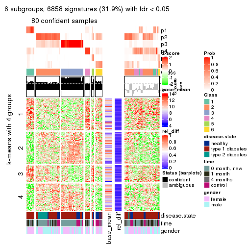
Signature heatmaps where rows are not scaled:
get_signatures(res, k = 2, scale_rows = FALSE)
get_signatures(res, k = 3, scale_rows = FALSE)
get_signatures(res, k = 4, scale_rows = FALSE)
get_signatures(res, k = 5, scale_rows = FALSE)
get_signatures(res, k = 6, scale_rows = FALSE)
Compare the overlap of signatures from different k:
compare_signatures(res)
get_signature() returns a data frame invisibly. TO get the list of signatures, the function
call should be assigned to a variable explicitly. In following code, if plot argument is set
to FALSE, no heatmap is plotted while only the differential analysis is performed.
# code only for demonstration
tb = get_signature(res, k = ..., plot = FALSE)
An example of the output of tb is:
#> which_row fdr mean_1 mean_2 scaled_mean_1 scaled_mean_2 km
#> 1 38 0.042760348 8.373488 9.131774 -0.5533452 0.5164555 1
#> 2 40 0.018707592 7.106213 8.469186 -0.6173731 0.5762149 1
#> 3 55 0.019134737 10.221463 11.207825 -0.6159697 0.5749050 1
#> 4 59 0.006059896 5.921854 7.869574 -0.6899429 0.6439467 1
#> 5 60 0.018055526 8.928898 10.211722 -0.6204761 0.5791110 1
#> 6 98 0.009384629 15.714769 14.887706 0.6635654 -0.6193277 2
...
The columns in tb are:
which_row: row indices corresponding to the input matrix.fdr: FDR for the differential test. mean_x: The mean value in group x.scaled_mean_x: The mean value in group x after rows are scaled.km: Row groups if k-means clustering is applied to rows.UMAP plot which shows how samples are separated.
dimension_reduction(res, k = 2, method = "UMAP")
dimension_reduction(res, k = 3, method = "UMAP")
dimension_reduction(res, k = 4, method = "UMAP")
dimension_reduction(res, k = 5, method = "UMAP")
dimension_reduction(res, k = 6, method = "UMAP")
Following heatmap shows how subgroups are split when increasing k:
collect_classes(res)
Test correlation between subgroups and known annotations. If the known annotation is numeric, one-way ANOVA test is applied, and if the known annotation is discrete, chi-squared contingency table test is applied.
test_to_known_factors(res)
#> n disease.state(p) time(p) gender(p) k
#> ATC:hclust 91 8.16e-01 1.86e-04 0.7092 2
#> ATC:hclust 103 4.95e-03 3.48e-05 0.1126 3
#> ATC:hclust 92 2.68e-03 2.01e-04 0.0309 4
#> ATC:hclust 75 9.73e-04 1.54e-03 0.0658 5
#> ATC:hclust 80 2.69e-06 3.55e-05 0.0431 6
If matrix rows can be associated to genes, consider to use GO_Enrichment(res,
...) to perform function enrichment for the signature genes.
The object with results only for a single top-value method and a single partition method can be extracted as:
res = res_list["ATC", "kmeans"]
# you can also extract it by
# res = res_list["ATC:kmeans"]
A summary of res and all the functions that can be applied to it:
res
#> A 'ConsensusPartition' object with k = 2, 3, 4, 5, 6.
#> On a matrix with 21512 rows and 117 columns.
#> Top rows (1000, 2000, 3000, 4000, 5000) are extracted by 'ATC' method.
#> Subgroups are detected by 'kmeans' method.
#> Performed in total 1250 partitions by row resampling.
#> Best k for subgroups seems to be 2.
#>
#> Following methods can be applied to this 'ConsensusPartition' object:
#> [1] "cola_report" "collect_classes" "collect_plots"
#> [4] "collect_stats" "colnames" "compare_signatures"
#> [7] "consensus_heatmap" "dimension_reduction" "functional_enrichment"
#> [10] "get_anno_col" "get_anno" "get_classes"
#> [13] "get_consensus" "get_matrix" "get_membership"
#> [16] "get_param" "get_signatures" "get_stats"
#> [19] "is_best_k" "is_stable_k" "membership_heatmap"
#> [22] "ncol" "nrow" "plot_ecdf"
#> [25] "rownames" "select_partition_number" "show"
#> [28] "suggest_best_k" "test_to_known_factors"
collect_plots() function collects all the plots made from res for all k (number of partitions)
into one single page to provide an easy and fast comparison between different k.
collect_plots(res)
The plots are:
k and the heatmap of
predicted classes for each k.k.k.k.All the plots in panels can be made by individual functions and they are plotted later in this section.
select_partition_number() produces several plots showing different
statistics for choosing “optimized” k. There are following statistics:
k;k, the area increased is defined as \(A_k - A_{k-1}\).The detailed explanations of these statistics can be found in the cola vignette.
Generally speaking, lower PAC score, higher mean silhouette score or higher
concordance corresponds to better partition. Rand index and Jaccard index
measure how similar the current partition is compared to partition with k-1.
If they are too similar, we won't accept k is better than k-1.
select_partition_number(res)
The numeric values for all these statistics can be obtained by get_stats().
get_stats(res)
#> k 1-PAC mean_silhouette concordance area_increased Rand Jaccard
#> 2 2 1.000 0.966 0.985 0.4764 0.523 0.523
#> 3 3 0.527 0.704 0.822 0.3300 0.648 0.444
#> 4 4 0.665 0.793 0.855 0.1363 0.842 0.621
#> 5 5 0.742 0.624 0.789 0.0731 0.914 0.710
#> 6 6 0.741 0.604 0.764 0.0458 0.897 0.614
suggest_best_k() suggests the best \(k\) based on these statistics. The rules are as follows:
NA.suggest_best_k(res)
#> [1] 2
Following shows the table of the partitions (You need to click the show/hide
code output link to see it). The membership matrix (columns with name p*)
is inferred by
clue::cl_consensus()
function with the SE method. Basically the value in the membership matrix
represents the probability to belong to a certain group. The finall class
label for an item is determined with the group with highest probability it
belongs to.
In get_classes() function, the entropy is calculated from the membership
matrix and the silhouette score is calculated from the consensus matrix.
cbind(get_classes(res, k = 2), get_membership(res, k = 2))
#> class entropy silhouette p1 p2
#> GSM254177 2 0.1633 0.972 0.024 0.976
#> GSM254179 2 0.0000 0.989 0.000 1.000
#> GSM254180 2 0.1633 0.972 0.024 0.976
#> GSM254182 2 0.0000 0.989 0.000 1.000
#> GSM254183 2 0.0000 0.989 0.000 1.000
#> GSM254277 2 0.1633 0.972 0.024 0.976
#> GSM254278 2 0.0000 0.989 0.000 1.000
#> GSM254281 1 0.0376 0.975 0.996 0.004
#> GSM254282 2 0.0672 0.984 0.008 0.992
#> GSM254284 1 0.0000 0.978 1.000 0.000
#> GSM254286 2 0.1633 0.972 0.024 0.976
#> GSM254290 2 0.0000 0.989 0.000 1.000
#> GSM254291 2 0.0000 0.989 0.000 1.000
#> GSM254293 2 0.1633 0.972 0.024 0.976
#> GSM254178 1 0.0000 0.978 1.000 0.000
#> GSM254181 2 0.0000 0.989 0.000 1.000
#> GSM254279 2 0.0000 0.989 0.000 1.000
#> GSM254280 2 0.0000 0.989 0.000 1.000
#> GSM254283 1 0.2236 0.946 0.964 0.036
#> GSM254285 2 0.0000 0.989 0.000 1.000
#> GSM254287 2 0.0000 0.989 0.000 1.000
#> GSM254288 1 0.0000 0.978 1.000 0.000
#> GSM254289 2 0.0000 0.989 0.000 1.000
#> GSM254292 1 0.8081 0.672 0.752 0.248
#> GSM254184 2 0.0000 0.989 0.000 1.000
#> GSM254185 2 0.0000 0.989 0.000 1.000
#> GSM254187 2 0.0000 0.989 0.000 1.000
#> GSM254189 2 0.0000 0.989 0.000 1.000
#> GSM254190 2 0.5842 0.840 0.140 0.860
#> GSM254191 2 0.0000 0.989 0.000 1.000
#> GSM254192 2 0.0000 0.989 0.000 1.000
#> GSM254193 1 0.0000 0.978 1.000 0.000
#> GSM254199 2 0.0672 0.984 0.008 0.992
#> GSM254203 1 0.0000 0.978 1.000 0.000
#> GSM254206 1 0.0000 0.978 1.000 0.000
#> GSM254210 2 0.0000 0.989 0.000 1.000
#> GSM254211 1 0.0000 0.978 1.000 0.000
#> GSM254215 2 0.0000 0.989 0.000 1.000
#> GSM254218 2 0.0000 0.989 0.000 1.000
#> GSM254230 1 0.0000 0.978 1.000 0.000
#> GSM254236 2 0.0000 0.989 0.000 1.000
#> GSM254244 1 0.0000 0.978 1.000 0.000
#> GSM254247 1 0.7219 0.747 0.800 0.200
#> GSM254248 1 0.0000 0.978 1.000 0.000
#> GSM254254 2 0.0000 0.989 0.000 1.000
#> GSM254257 2 0.0000 0.989 0.000 1.000
#> GSM254258 2 0.0000 0.989 0.000 1.000
#> GSM254261 2 0.0000 0.989 0.000 1.000
#> GSM254264 2 0.0000 0.989 0.000 1.000
#> GSM254186 2 0.0000 0.989 0.000 1.000
#> GSM254188 2 0.0000 0.989 0.000 1.000
#> GSM254194 2 0.0000 0.989 0.000 1.000
#> GSM254195 1 0.0000 0.978 1.000 0.000
#> GSM254196 2 0.1633 0.972 0.024 0.976
#> GSM254200 2 0.0000 0.989 0.000 1.000
#> GSM254209 2 0.0000 0.989 0.000 1.000
#> GSM254214 2 0.4815 0.885 0.104 0.896
#> GSM254221 1 0.0000 0.978 1.000 0.000
#> GSM254224 2 0.1633 0.972 0.024 0.976
#> GSM254227 2 0.0000 0.989 0.000 1.000
#> GSM254233 1 0.0000 0.978 1.000 0.000
#> GSM254235 1 0.0000 0.978 1.000 0.000
#> GSM254239 2 0.0938 0.981 0.012 0.988
#> GSM254241 1 0.0000 0.978 1.000 0.000
#> GSM254251 2 0.0000 0.989 0.000 1.000
#> GSM254262 2 0.0000 0.989 0.000 1.000
#> GSM254263 2 0.0000 0.989 0.000 1.000
#> GSM254197 1 0.0000 0.978 1.000 0.000
#> GSM254201 1 0.0000 0.978 1.000 0.000
#> GSM254204 1 0.0000 0.978 1.000 0.000
#> GSM254216 1 0.0000 0.978 1.000 0.000
#> GSM254228 1 0.0000 0.978 1.000 0.000
#> GSM254242 1 0.0000 0.978 1.000 0.000
#> GSM254245 1 0.0000 0.978 1.000 0.000
#> GSM254252 1 0.0000 0.978 1.000 0.000
#> GSM254255 1 0.0000 0.978 1.000 0.000
#> GSM254259 1 0.0000 0.978 1.000 0.000
#> GSM254207 2 0.0000 0.989 0.000 1.000
#> GSM254212 2 0.0000 0.989 0.000 1.000
#> GSM254219 1 0.0000 0.978 1.000 0.000
#> GSM254222 2 0.0000 0.989 0.000 1.000
#> GSM254225 2 0.0000 0.989 0.000 1.000
#> GSM254231 1 0.0000 0.978 1.000 0.000
#> GSM254234 2 0.0000 0.989 0.000 1.000
#> GSM254237 2 0.0000 0.989 0.000 1.000
#> GSM254249 1 0.0376 0.975 0.996 0.004
#> GSM254198 2 0.0000 0.989 0.000 1.000
#> GSM254202 1 0.0000 0.978 1.000 0.000
#> GSM254205 1 0.0000 0.978 1.000 0.000
#> GSM254217 2 0.0376 0.986 0.004 0.996
#> GSM254229 2 0.0000 0.989 0.000 1.000
#> GSM254243 1 0.0000 0.978 1.000 0.000
#> GSM254246 1 0.0000 0.978 1.000 0.000
#> GSM254253 1 0.0000 0.978 1.000 0.000
#> GSM254256 2 0.9087 0.517 0.324 0.676
#> GSM254260 1 0.9881 0.228 0.564 0.436
#> GSM254208 1 0.0000 0.978 1.000 0.000
#> GSM254213 2 0.0000 0.989 0.000 1.000
#> GSM254220 1 0.0000 0.978 1.000 0.000
#> GSM254223 1 0.0000 0.978 1.000 0.000
#> GSM254226 2 0.0000 0.989 0.000 1.000
#> GSM254232 1 0.0000 0.978 1.000 0.000
#> GSM254238 1 0.0000 0.978 1.000 0.000
#> GSM254240 1 0.0000 0.978 1.000 0.000
#> GSM254250 1 0.0000 0.978 1.000 0.000
#> GSM254268 2 0.0000 0.989 0.000 1.000
#> GSM254269 2 0.0000 0.989 0.000 1.000
#> GSM254270 2 0.0672 0.984 0.008 0.992
#> GSM254272 2 0.0000 0.989 0.000 1.000
#> GSM254273 2 0.0000 0.989 0.000 1.000
#> GSM254274 2 0.0000 0.989 0.000 1.000
#> GSM254265 2 0.0000 0.989 0.000 1.000
#> GSM254266 2 0.0000 0.989 0.000 1.000
#> GSM254267 2 0.0000 0.989 0.000 1.000
#> GSM254271 2 0.0000 0.989 0.000 1.000
#> GSM254275 2 0.0938 0.981 0.012 0.988
#> GSM254276 2 0.0000 0.989 0.000 1.000
cbind(get_classes(res, k = 3), get_membership(res, k = 3))
#> class entropy silhouette p1 p2 p3
#> GSM254177 2 0.5111 0.6219 0.024 0.808 0.168
#> GSM254179 2 0.3619 0.7044 0.000 0.864 0.136
#> GSM254180 2 0.4748 0.6398 0.024 0.832 0.144
#> GSM254182 3 0.2796 0.8529 0.000 0.092 0.908
#> GSM254183 3 0.2796 0.8529 0.000 0.092 0.908
#> GSM254277 2 0.4045 0.6582 0.024 0.872 0.104
#> GSM254278 3 0.0000 0.8918 0.000 0.000 1.000
#> GSM254281 2 0.6100 0.6036 0.120 0.784 0.096
#> GSM254282 2 0.4748 0.6398 0.024 0.832 0.144
#> GSM254284 1 0.1860 0.9528 0.948 0.052 0.000
#> GSM254286 2 0.6420 0.4700 0.024 0.688 0.288
#> GSM254290 2 0.4931 0.6669 0.000 0.768 0.232
#> GSM254291 2 0.5905 0.4432 0.000 0.648 0.352
#> GSM254293 2 0.4121 0.6594 0.024 0.868 0.108
#> GSM254178 1 0.1163 0.9482 0.972 0.028 0.000
#> GSM254181 3 0.6267 -0.2106 0.000 0.452 0.548
#> GSM254279 3 0.0000 0.8918 0.000 0.000 1.000
#> GSM254280 3 0.0000 0.8918 0.000 0.000 1.000
#> GSM254283 2 0.3267 0.6809 0.116 0.884 0.000
#> GSM254285 3 0.0000 0.8918 0.000 0.000 1.000
#> GSM254287 2 0.4682 0.6847 0.004 0.804 0.192
#> GSM254288 2 0.6274 0.1746 0.456 0.544 0.000
#> GSM254289 2 0.6244 0.3723 0.000 0.560 0.440
#> GSM254292 2 0.5965 0.6106 0.108 0.792 0.100
#> GSM254184 3 0.2537 0.8649 0.000 0.080 0.920
#> GSM254185 3 0.0000 0.8918 0.000 0.000 1.000
#> GSM254187 3 0.0000 0.8918 0.000 0.000 1.000
#> GSM254189 3 0.0000 0.8918 0.000 0.000 1.000
#> GSM254190 2 0.6570 0.4596 0.028 0.680 0.292
#> GSM254191 3 0.2796 0.8529 0.000 0.092 0.908
#> GSM254192 3 0.2537 0.8649 0.000 0.080 0.920
#> GSM254193 1 0.1860 0.9456 0.948 0.052 0.000
#> GSM254199 2 0.2878 0.6887 0.000 0.904 0.096
#> GSM254203 1 0.0237 0.9589 0.996 0.004 0.000
#> GSM254206 1 0.0237 0.9589 0.996 0.004 0.000
#> GSM254210 2 0.5560 0.6013 0.000 0.700 0.300
#> GSM254211 1 0.1163 0.9597 0.972 0.028 0.000
#> GSM254215 3 0.1289 0.8912 0.000 0.032 0.968
#> GSM254218 2 0.5058 0.6609 0.000 0.756 0.244
#> GSM254230 2 0.5785 0.4824 0.332 0.668 0.000
#> GSM254236 3 0.1289 0.8912 0.000 0.032 0.968
#> GSM254244 1 0.1031 0.9601 0.976 0.024 0.000
#> GSM254247 2 0.5892 0.6172 0.104 0.796 0.100
#> GSM254248 1 0.6154 0.4374 0.592 0.408 0.000
#> GSM254254 3 0.5098 0.5955 0.000 0.248 0.752
#> GSM254257 2 0.6244 0.3723 0.000 0.560 0.440
#> GSM254258 3 0.0000 0.8918 0.000 0.000 1.000
#> GSM254261 2 0.6252 0.3662 0.000 0.556 0.444
#> GSM254264 3 0.0000 0.8918 0.000 0.000 1.000
#> GSM254186 3 0.0000 0.8918 0.000 0.000 1.000
#> GSM254188 3 0.1163 0.8916 0.000 0.028 0.972
#> GSM254194 3 0.0000 0.8918 0.000 0.000 1.000
#> GSM254195 1 0.4609 0.8368 0.844 0.128 0.028
#> GSM254196 2 0.6482 0.4571 0.024 0.680 0.296
#> GSM254200 3 0.1289 0.8912 0.000 0.032 0.968
#> GSM254209 2 0.4931 0.6669 0.000 0.768 0.232
#> GSM254214 2 0.3637 0.7066 0.024 0.892 0.084
#> GSM254221 1 0.1031 0.9601 0.976 0.024 0.000
#> GSM254224 2 0.3500 0.7066 0.004 0.880 0.116
#> GSM254227 2 0.5058 0.6850 0.000 0.756 0.244
#> GSM254233 2 0.7295 -0.1619 0.480 0.492 0.028
#> GSM254235 1 0.1031 0.9601 0.976 0.024 0.000
#> GSM254239 2 0.1129 0.6953 0.004 0.976 0.020
#> GSM254241 1 0.1529 0.9573 0.960 0.040 0.000
#> GSM254251 3 0.6045 -0.0217 0.000 0.380 0.620
#> GSM254262 3 0.1643 0.8861 0.000 0.044 0.956
#> GSM254263 3 0.2537 0.8649 0.000 0.080 0.920
#> GSM254197 1 0.1163 0.9562 0.972 0.028 0.000
#> GSM254201 1 0.1031 0.9601 0.976 0.024 0.000
#> GSM254204 1 0.0237 0.9589 0.996 0.004 0.000
#> GSM254216 2 0.5431 0.5460 0.284 0.716 0.000
#> GSM254228 1 0.1031 0.9566 0.976 0.024 0.000
#> GSM254242 1 0.1031 0.9601 0.976 0.024 0.000
#> GSM254245 1 0.1163 0.9482 0.972 0.028 0.000
#> GSM254252 2 0.5431 0.5466 0.284 0.716 0.000
#> GSM254255 2 0.3879 0.6712 0.152 0.848 0.000
#> GSM254259 1 0.1163 0.9562 0.972 0.028 0.000
#> GSM254207 2 0.6252 0.3662 0.000 0.556 0.444
#> GSM254212 2 0.4887 0.6693 0.000 0.772 0.228
#> GSM254219 1 0.1031 0.9601 0.976 0.024 0.000
#> GSM254222 2 0.6244 0.3723 0.000 0.560 0.440
#> GSM254225 2 0.4452 0.6873 0.000 0.808 0.192
#> GSM254231 1 0.1163 0.9607 0.972 0.028 0.000
#> GSM254234 2 0.6225 0.3889 0.000 0.568 0.432
#> GSM254237 2 0.4121 0.6959 0.000 0.832 0.168
#> GSM254249 2 0.2537 0.6814 0.080 0.920 0.000
#> GSM254198 2 0.4931 0.6669 0.000 0.768 0.232
#> GSM254202 1 0.1163 0.9607 0.972 0.028 0.000
#> GSM254205 1 0.1031 0.9612 0.976 0.024 0.000
#> GSM254217 2 0.3619 0.7036 0.000 0.864 0.136
#> GSM254229 2 0.4931 0.6669 0.000 0.768 0.232
#> GSM254243 1 0.1031 0.9566 0.976 0.024 0.000
#> GSM254246 1 0.1163 0.9562 0.972 0.028 0.000
#> GSM254253 1 0.1529 0.9573 0.960 0.040 0.000
#> GSM254256 2 0.3875 0.6978 0.068 0.888 0.044
#> GSM254260 2 0.3875 0.6995 0.068 0.888 0.044
#> GSM254208 2 0.4291 0.6516 0.180 0.820 0.000
#> GSM254213 2 0.6140 0.4429 0.000 0.596 0.404
#> GSM254220 1 0.1163 0.9607 0.972 0.028 0.000
#> GSM254223 2 0.6126 0.3116 0.400 0.600 0.000
#> GSM254226 2 0.4931 0.6669 0.000 0.768 0.232
#> GSM254232 2 0.4654 0.6371 0.208 0.792 0.000
#> GSM254238 2 0.4555 0.6262 0.200 0.800 0.000
#> GSM254240 1 0.1031 0.9566 0.976 0.024 0.000
#> GSM254250 1 0.1031 0.9566 0.976 0.024 0.000
#> GSM254268 2 0.6140 0.4429 0.000 0.596 0.404
#> GSM254269 2 0.4931 0.6669 0.000 0.768 0.232
#> GSM254270 2 0.1860 0.6991 0.000 0.948 0.052
#> GSM254272 2 0.6244 0.3723 0.000 0.560 0.440
#> GSM254273 2 0.6244 0.3723 0.000 0.560 0.440
#> GSM254274 2 0.6252 0.3662 0.000 0.556 0.444
#> GSM254265 2 0.4931 0.6669 0.000 0.768 0.232
#> GSM254266 2 0.3816 0.7008 0.000 0.852 0.148
#> GSM254267 2 0.6252 0.3662 0.000 0.556 0.444
#> GSM254271 2 0.6244 0.3723 0.000 0.560 0.440
#> GSM254275 2 0.3573 0.7053 0.004 0.876 0.120
#> GSM254276 2 0.3816 0.7008 0.000 0.852 0.148
cbind(get_classes(res, k = 4), get_membership(res, k = 4))
#> class entropy silhouette p1 p2 p3 p4
#> GSM254177 4 0.4608 0.8533 0.000 0.096 0.104 0.800
#> GSM254179 2 0.3610 0.7182 0.000 0.800 0.000 0.200
#> GSM254180 4 0.4581 0.8556 0.000 0.120 0.080 0.800
#> GSM254182 3 0.4838 0.7829 0.000 0.252 0.724 0.024
#> GSM254183 3 0.4868 0.7782 0.000 0.256 0.720 0.024
#> GSM254277 4 0.4356 0.8553 0.000 0.124 0.064 0.812
#> GSM254278 3 0.2443 0.9090 0.000 0.060 0.916 0.024
#> GSM254281 4 0.3463 0.8425 0.012 0.048 0.060 0.880
#> GSM254282 4 0.4700 0.8529 0.000 0.124 0.084 0.792
#> GSM254284 1 0.5236 0.8518 0.752 0.008 0.056 0.184
#> GSM254286 4 0.4764 0.8426 0.000 0.088 0.124 0.788
#> GSM254290 2 0.1151 0.8268 0.000 0.968 0.008 0.024
#> GSM254291 4 0.4879 0.8384 0.000 0.092 0.128 0.780
#> GSM254293 4 0.4356 0.8553 0.000 0.124 0.064 0.812
#> GSM254178 1 0.0000 0.8897 1.000 0.000 0.000 0.000
#> GSM254181 2 0.2775 0.7832 0.000 0.896 0.084 0.020
#> GSM254279 3 0.2443 0.9090 0.000 0.060 0.916 0.024
#> GSM254280 3 0.2443 0.9090 0.000 0.060 0.916 0.024
#> GSM254283 2 0.5767 0.6118 0.000 0.660 0.060 0.280
#> GSM254285 3 0.2443 0.9090 0.000 0.060 0.916 0.024
#> GSM254287 2 0.2466 0.8101 0.000 0.916 0.028 0.056
#> GSM254288 2 0.8158 0.3285 0.296 0.460 0.020 0.224
#> GSM254289 2 0.1837 0.8159 0.000 0.944 0.028 0.028
#> GSM254292 4 0.3626 0.8468 0.012 0.056 0.060 0.872
#> GSM254184 3 0.3249 0.8900 0.000 0.140 0.852 0.008
#> GSM254185 3 0.2443 0.9090 0.000 0.060 0.916 0.024
#> GSM254187 3 0.2443 0.9090 0.000 0.060 0.916 0.024
#> GSM254189 3 0.2443 0.9090 0.000 0.060 0.916 0.024
#> GSM254190 4 0.4581 0.8447 0.000 0.080 0.120 0.800
#> GSM254191 3 0.4776 0.7985 0.000 0.244 0.732 0.024
#> GSM254192 3 0.4711 0.8012 0.000 0.236 0.740 0.024
#> GSM254193 1 0.4364 0.7684 0.764 0.000 0.016 0.220
#> GSM254199 4 0.4590 0.8388 0.000 0.148 0.060 0.792
#> GSM254203 1 0.0000 0.8897 1.000 0.000 0.000 0.000
#> GSM254206 1 0.0000 0.8897 1.000 0.000 0.000 0.000
#> GSM254210 2 0.0524 0.8311 0.000 0.988 0.008 0.004
#> GSM254211 1 0.3907 0.8881 0.828 0.000 0.032 0.140
#> GSM254215 3 0.2647 0.9026 0.000 0.120 0.880 0.000
#> GSM254218 4 0.6259 0.6378 0.000 0.300 0.084 0.616
#> GSM254230 4 0.3915 0.7172 0.060 0.032 0.044 0.864
#> GSM254236 3 0.2704 0.9008 0.000 0.124 0.876 0.000
#> GSM254244 1 0.4405 0.8752 0.800 0.000 0.048 0.152
#> GSM254247 4 0.2421 0.8193 0.008 0.048 0.020 0.924
#> GSM254248 4 0.2520 0.7502 0.088 0.004 0.004 0.904
#> GSM254254 2 0.5112 0.1792 0.000 0.608 0.384 0.008
#> GSM254257 2 0.1256 0.8238 0.000 0.964 0.028 0.008
#> GSM254258 3 0.2443 0.9090 0.000 0.060 0.916 0.024
#> GSM254261 2 0.1488 0.8235 0.000 0.956 0.032 0.012
#> GSM254264 3 0.2443 0.9090 0.000 0.060 0.916 0.024
#> GSM254186 3 0.2443 0.9090 0.000 0.060 0.916 0.024
#> GSM254188 3 0.2345 0.9062 0.000 0.100 0.900 0.000
#> GSM254194 3 0.2443 0.9090 0.000 0.060 0.916 0.024
#> GSM254195 4 0.3583 0.7328 0.180 0.000 0.004 0.816
#> GSM254196 4 0.4764 0.8426 0.000 0.088 0.124 0.788
#> GSM254200 3 0.2647 0.9026 0.000 0.120 0.880 0.000
#> GSM254209 2 0.0336 0.8313 0.000 0.992 0.008 0.000
#> GSM254214 2 0.4057 0.7460 0.000 0.816 0.032 0.152
#> GSM254221 1 0.4206 0.8846 0.816 0.000 0.048 0.136
#> GSM254224 2 0.4793 0.6805 0.000 0.756 0.040 0.204
#> GSM254227 2 0.2722 0.7826 0.000 0.904 0.064 0.032
#> GSM254233 4 0.3290 0.7591 0.060 0.012 0.040 0.888
#> GSM254235 1 0.3505 0.8947 0.864 0.000 0.048 0.088
#> GSM254239 2 0.5205 0.5644 0.012 0.672 0.008 0.308
#> GSM254241 1 0.5044 0.8640 0.764 0.004 0.060 0.172
#> GSM254251 2 0.3245 0.7654 0.000 0.872 0.100 0.028
#> GSM254262 3 0.2999 0.8963 0.000 0.132 0.864 0.004
#> GSM254263 3 0.3658 0.8807 0.000 0.144 0.836 0.020
#> GSM254197 1 0.0000 0.8897 1.000 0.000 0.000 0.000
#> GSM254201 1 0.4206 0.8846 0.816 0.000 0.048 0.136
#> GSM254204 1 0.0000 0.8897 1.000 0.000 0.000 0.000
#> GSM254216 2 0.6838 0.3208 0.028 0.496 0.044 0.432
#> GSM254228 1 0.1938 0.8830 0.936 0.000 0.012 0.052
#> GSM254242 1 0.3156 0.8959 0.884 0.000 0.048 0.068
#> GSM254245 1 0.0000 0.8897 1.000 0.000 0.000 0.000
#> GSM254252 2 0.7851 0.4549 0.104 0.544 0.056 0.296
#> GSM254255 2 0.5646 0.6240 0.000 0.672 0.056 0.272
#> GSM254259 1 0.0188 0.8893 0.996 0.000 0.000 0.004
#> GSM254207 2 0.0895 0.8295 0.000 0.976 0.020 0.004
#> GSM254212 2 0.0188 0.8314 0.000 0.996 0.000 0.004
#> GSM254219 1 0.3081 0.8964 0.888 0.000 0.048 0.064
#> GSM254222 2 0.0592 0.8306 0.000 0.984 0.016 0.000
#> GSM254225 2 0.0336 0.8313 0.000 0.992 0.008 0.000
#> GSM254231 1 0.4949 0.8612 0.760 0.000 0.060 0.180
#> GSM254234 2 0.0592 0.8306 0.000 0.984 0.016 0.000
#> GSM254237 2 0.0657 0.8290 0.000 0.984 0.004 0.012
#> GSM254249 4 0.6104 -0.0414 0.004 0.408 0.040 0.548
#> GSM254198 2 0.0524 0.8311 0.000 0.988 0.008 0.004
#> GSM254202 1 0.4206 0.8846 0.816 0.000 0.048 0.136
#> GSM254205 1 0.3991 0.8900 0.832 0.000 0.048 0.120
#> GSM254217 2 0.2593 0.7871 0.000 0.892 0.004 0.104
#> GSM254229 2 0.0000 0.8311 0.000 1.000 0.000 0.000
#> GSM254243 1 0.0188 0.8900 0.996 0.000 0.004 0.000
#> GSM254246 1 0.0000 0.8897 1.000 0.000 0.000 0.000
#> GSM254253 1 0.4864 0.8665 0.768 0.000 0.060 0.172
#> GSM254256 2 0.5599 0.6120 0.000 0.672 0.052 0.276
#> GSM254260 2 0.5619 0.6214 0.000 0.676 0.056 0.268
#> GSM254208 2 0.6401 0.4744 0.008 0.572 0.056 0.364
#> GSM254213 2 0.0592 0.8306 0.000 0.984 0.016 0.000
#> GSM254220 1 0.4206 0.8846 0.816 0.000 0.048 0.136
#> GSM254223 2 0.8940 0.1643 0.260 0.388 0.056 0.296
#> GSM254226 2 0.0336 0.8313 0.000 0.992 0.008 0.000
#> GSM254232 2 0.5959 0.6185 0.008 0.664 0.056 0.272
#> GSM254238 2 0.6322 0.4073 0.028 0.540 0.020 0.412
#> GSM254240 1 0.1584 0.8818 0.952 0.000 0.012 0.036
#> GSM254250 1 0.1584 0.8818 0.952 0.000 0.012 0.036
#> GSM254268 2 0.0779 0.8299 0.000 0.980 0.016 0.004
#> GSM254269 2 0.0188 0.8315 0.000 0.996 0.004 0.000
#> GSM254270 2 0.4428 0.5963 0.000 0.720 0.004 0.276
#> GSM254272 2 0.0779 0.8306 0.000 0.980 0.016 0.004
#> GSM254273 2 0.0895 0.8287 0.000 0.976 0.020 0.004
#> GSM254274 2 0.0895 0.8295 0.000 0.976 0.020 0.004
#> GSM254265 2 0.0524 0.8311 0.000 0.988 0.008 0.004
#> GSM254266 2 0.0817 0.8248 0.000 0.976 0.000 0.024
#> GSM254267 2 0.0895 0.8295 0.000 0.976 0.020 0.004
#> GSM254271 2 0.0779 0.8306 0.000 0.980 0.016 0.004
#> GSM254275 2 0.2174 0.8161 0.000 0.928 0.020 0.052
#> GSM254276 2 0.1109 0.8239 0.000 0.968 0.004 0.028
cbind(get_classes(res, k = 5), get_membership(res, k = 5))
#> class entropy silhouette p1 p2 p3 p4 p5
#> GSM254177 1 0.2362 0.9105 0.912 0.040 0.040 0.008 0.000
#> GSM254179 2 0.5631 0.4653 0.076 0.672 0.000 0.032 0.220
#> GSM254180 1 0.2157 0.9104 0.920 0.040 0.036 0.004 0.000
#> GSM254182 3 0.6767 0.2734 0.016 0.392 0.432 0.000 0.160
#> GSM254183 3 0.6688 0.2349 0.012 0.408 0.420 0.000 0.160
#> GSM254277 1 0.1996 0.9093 0.932 0.040 0.016 0.004 0.008
#> GSM254278 3 0.0566 0.8674 0.004 0.012 0.984 0.000 0.000
#> GSM254281 1 0.1932 0.8997 0.936 0.008 0.020 0.032 0.004
#> GSM254282 1 0.2149 0.9070 0.916 0.048 0.036 0.000 0.000
#> GSM254284 4 0.4550 0.1780 0.036 0.000 0.000 0.688 0.276
#> GSM254286 1 0.2438 0.9060 0.900 0.040 0.060 0.000 0.000
#> GSM254290 2 0.1331 0.8429 0.008 0.952 0.000 0.000 0.040
#> GSM254291 1 0.2438 0.9039 0.900 0.040 0.060 0.000 0.000
#> GSM254293 1 0.1996 0.9093 0.932 0.040 0.016 0.004 0.008
#> GSM254178 4 0.5315 0.4744 0.024 0.000 0.016 0.528 0.432
#> GSM254181 2 0.1854 0.8346 0.008 0.936 0.036 0.000 0.020
#> GSM254279 3 0.0566 0.8674 0.004 0.012 0.984 0.000 0.000
#> GSM254280 3 0.0566 0.8674 0.004 0.012 0.984 0.000 0.000
#> GSM254283 2 0.7224 -0.2556 0.060 0.452 0.000 0.132 0.356
#> GSM254285 3 0.0566 0.8674 0.004 0.012 0.984 0.000 0.000
#> GSM254287 2 0.4592 0.5557 0.024 0.644 0.000 0.000 0.332
#> GSM254288 5 0.4563 0.2873 0.036 0.080 0.000 0.096 0.788
#> GSM254289 2 0.2873 0.7776 0.016 0.856 0.000 0.000 0.128
#> GSM254292 1 0.1960 0.9003 0.936 0.008 0.016 0.032 0.008
#> GSM254184 3 0.2313 0.8548 0.004 0.040 0.912 0.000 0.044
#> GSM254185 3 0.0566 0.8674 0.004 0.012 0.984 0.000 0.000
#> GSM254187 3 0.0566 0.8674 0.004 0.012 0.984 0.000 0.000
#> GSM254189 3 0.0981 0.8660 0.008 0.012 0.972 0.000 0.008
#> GSM254190 1 0.2232 0.9046 0.924 0.016 0.036 0.020 0.004
#> GSM254191 3 0.6490 0.4018 0.008 0.344 0.492 0.000 0.156
#> GSM254192 3 0.6761 0.2950 0.016 0.384 0.440 0.000 0.160
#> GSM254193 5 0.3805 0.1261 0.032 0.000 0.000 0.184 0.784
#> GSM254199 1 0.2005 0.8999 0.924 0.056 0.016 0.000 0.004
#> GSM254203 4 0.4920 0.4932 0.016 0.000 0.008 0.568 0.408
#> GSM254206 4 0.4970 0.4972 0.020 0.000 0.008 0.580 0.392
#> GSM254210 2 0.0324 0.8528 0.004 0.992 0.000 0.000 0.004
#> GSM254211 4 0.1915 0.5630 0.040 0.000 0.000 0.928 0.032
#> GSM254215 3 0.1753 0.8624 0.000 0.032 0.936 0.000 0.032
#> GSM254218 1 0.4423 0.6805 0.728 0.232 0.036 0.004 0.000
#> GSM254230 4 0.7129 -0.2729 0.228 0.020 0.000 0.412 0.340
#> GSM254236 3 0.1753 0.8624 0.000 0.032 0.936 0.000 0.032
#> GSM254244 4 0.1399 0.5365 0.020 0.000 0.000 0.952 0.028
#> GSM254247 1 0.2352 0.8639 0.896 0.004 0.000 0.092 0.008
#> GSM254248 1 0.5312 0.5744 0.664 0.000 0.000 0.220 0.116
#> GSM254254 2 0.3891 0.6937 0.004 0.808 0.128 0.000 0.060
#> GSM254257 2 0.1041 0.8473 0.004 0.964 0.000 0.000 0.032
#> GSM254258 3 0.0566 0.8674 0.004 0.012 0.984 0.000 0.000
#> GSM254261 2 0.1484 0.8392 0.008 0.944 0.000 0.000 0.048
#> GSM254264 3 0.0566 0.8674 0.004 0.012 0.984 0.000 0.000
#> GSM254186 3 0.0566 0.8674 0.004 0.012 0.984 0.000 0.000
#> GSM254188 3 0.1211 0.8661 0.000 0.024 0.960 0.000 0.016
#> GSM254194 3 0.1299 0.8660 0.008 0.012 0.960 0.000 0.020
#> GSM254195 1 0.2546 0.8679 0.904 0.000 0.012 0.048 0.036
#> GSM254196 1 0.2438 0.9060 0.900 0.040 0.060 0.000 0.000
#> GSM254200 3 0.1753 0.8624 0.000 0.032 0.936 0.000 0.032
#> GSM254209 2 0.0404 0.8521 0.000 0.988 0.000 0.000 0.012
#> GSM254214 2 0.5533 0.2563 0.052 0.580 0.000 0.012 0.356
#> GSM254221 4 0.0898 0.5520 0.020 0.000 0.000 0.972 0.008
#> GSM254224 2 0.7070 0.0522 0.056 0.540 0.000 0.180 0.224
#> GSM254227 2 0.2180 0.8332 0.024 0.924 0.032 0.000 0.020
#> GSM254233 1 0.3231 0.7646 0.800 0.000 0.000 0.196 0.004
#> GSM254235 4 0.1251 0.5667 0.008 0.000 0.000 0.956 0.036
#> GSM254239 2 0.5823 0.5227 0.132 0.612 0.004 0.000 0.252
#> GSM254241 4 0.4339 0.1962 0.020 0.000 0.000 0.684 0.296
#> GSM254251 2 0.2283 0.8242 0.008 0.916 0.040 0.000 0.036
#> GSM254262 3 0.2234 0.8568 0.004 0.036 0.916 0.000 0.044
#> GSM254263 3 0.2654 0.8480 0.008 0.040 0.896 0.000 0.056
#> GSM254197 4 0.4688 0.4764 0.004 0.000 0.008 0.532 0.456
#> GSM254201 4 0.0671 0.5557 0.016 0.000 0.000 0.980 0.004
#> GSM254204 4 0.4980 0.4964 0.020 0.000 0.008 0.576 0.396
#> GSM254216 4 0.7676 -0.4816 0.084 0.160 0.000 0.400 0.356
#> GSM254228 5 0.4276 -0.2775 0.000 0.000 0.004 0.380 0.616
#> GSM254242 4 0.2338 0.5641 0.004 0.000 0.000 0.884 0.112
#> GSM254245 4 0.5214 0.4812 0.024 0.000 0.012 0.540 0.424
#> GSM254252 5 0.7695 0.5159 0.060 0.224 0.000 0.340 0.376
#> GSM254255 5 0.7788 0.5261 0.060 0.316 0.000 0.268 0.356
#> GSM254259 4 0.4688 0.4764 0.004 0.000 0.008 0.532 0.456
#> GSM254207 2 0.0771 0.8505 0.004 0.976 0.000 0.000 0.020
#> GSM254212 2 0.0703 0.8529 0.000 0.976 0.000 0.000 0.024
#> GSM254219 4 0.2338 0.5641 0.004 0.000 0.000 0.884 0.112
#> GSM254222 2 0.0794 0.8476 0.000 0.972 0.000 0.000 0.028
#> GSM254225 2 0.0794 0.8476 0.000 0.972 0.000 0.000 0.028
#> GSM254231 4 0.3909 0.2885 0.024 0.000 0.000 0.760 0.216
#> GSM254234 2 0.0000 0.8530 0.000 1.000 0.000 0.000 0.000
#> GSM254237 2 0.1493 0.8414 0.024 0.948 0.000 0.000 0.028
#> GSM254249 5 0.8195 0.4891 0.132 0.196 0.000 0.320 0.352
#> GSM254198 2 0.0771 0.8505 0.004 0.976 0.000 0.000 0.020
#> GSM254202 4 0.1117 0.5472 0.020 0.000 0.000 0.964 0.016
#> GSM254205 4 0.0579 0.5626 0.008 0.000 0.000 0.984 0.008
#> GSM254217 2 0.3506 0.7381 0.044 0.824 0.000 0.000 0.132
#> GSM254229 2 0.0794 0.8476 0.000 0.972 0.000 0.000 0.028
#> GSM254243 4 0.4516 0.4962 0.004 0.000 0.004 0.576 0.416
#> GSM254246 4 0.4684 0.4788 0.004 0.000 0.008 0.536 0.452
#> GSM254253 4 0.4080 0.2706 0.020 0.000 0.000 0.728 0.252
#> GSM254256 2 0.7670 -0.5216 0.052 0.352 0.000 0.248 0.348
#> GSM254260 5 0.7714 0.5193 0.052 0.324 0.000 0.276 0.348
#> GSM254208 5 0.7857 0.5148 0.072 0.236 0.000 0.340 0.352
#> GSM254213 2 0.0880 0.8518 0.000 0.968 0.000 0.000 0.032
#> GSM254220 4 0.0798 0.5533 0.016 0.000 0.000 0.976 0.008
#> GSM254223 5 0.7620 0.4889 0.060 0.200 0.000 0.364 0.376
#> GSM254226 2 0.0794 0.8476 0.000 0.972 0.000 0.000 0.028
#> GSM254232 5 0.7676 0.4772 0.056 0.344 0.000 0.232 0.368
#> GSM254238 5 0.8007 0.3730 0.136 0.340 0.000 0.148 0.376
#> GSM254240 5 0.4562 -0.4537 0.004 0.000 0.004 0.444 0.548
#> GSM254250 5 0.4586 -0.4771 0.004 0.000 0.004 0.468 0.524
#> GSM254268 2 0.0609 0.8510 0.000 0.980 0.000 0.000 0.020
#> GSM254269 2 0.0880 0.8518 0.000 0.968 0.000 0.000 0.032
#> GSM254270 2 0.4503 0.6704 0.124 0.756 0.000 0.000 0.120
#> GSM254272 2 0.0324 0.8532 0.004 0.992 0.000 0.000 0.004
#> GSM254273 2 0.0609 0.8510 0.000 0.980 0.000 0.000 0.020
#> GSM254274 2 0.0771 0.8507 0.004 0.976 0.000 0.000 0.020
#> GSM254265 2 0.0162 0.8529 0.004 0.996 0.000 0.000 0.000
#> GSM254266 2 0.0671 0.8499 0.016 0.980 0.000 0.000 0.004
#> GSM254267 2 0.0324 0.8528 0.004 0.992 0.000 0.000 0.004
#> GSM254271 2 0.0771 0.8507 0.004 0.976 0.000 0.000 0.020
#> GSM254275 2 0.3710 0.7116 0.024 0.784 0.000 0.000 0.192
#> GSM254276 2 0.1082 0.8453 0.028 0.964 0.000 0.000 0.008
cbind(get_classes(res, k = 6), get_membership(res, k = 6))
#> class entropy silhouette p1 p2 p3 p4 p5 p6
#> GSM254177 6 0.1223 0.89802 0.000 0.008 0.016 0.012 0.004 0.960
#> GSM254179 2 0.5908 0.12779 0.000 0.568 0.000 0.120 0.272 0.040
#> GSM254180 6 0.1109 0.89850 0.000 0.012 0.016 0.004 0.004 0.964
#> GSM254182 2 0.6387 0.22078 0.000 0.416 0.224 0.008 0.344 0.008
#> GSM254183 2 0.6335 0.23945 0.000 0.440 0.216 0.008 0.328 0.008
#> GSM254277 6 0.1223 0.89936 0.000 0.012 0.004 0.016 0.008 0.960
#> GSM254278 3 0.0458 0.94816 0.000 0.000 0.984 0.000 0.000 0.016
#> GSM254281 6 0.0767 0.90013 0.000 0.008 0.004 0.012 0.000 0.976
#> GSM254282 6 0.1109 0.89850 0.000 0.012 0.016 0.004 0.004 0.964
#> GSM254284 4 0.5295 0.24614 0.108 0.000 0.000 0.592 0.292 0.008
#> GSM254286 6 0.1419 0.89300 0.000 0.012 0.016 0.004 0.016 0.952
#> GSM254290 2 0.1387 0.77729 0.000 0.932 0.000 0.000 0.068 0.000
#> GSM254291 6 0.0909 0.89710 0.000 0.012 0.020 0.000 0.000 0.968
#> GSM254293 6 0.1223 0.89936 0.000 0.012 0.004 0.016 0.008 0.960
#> GSM254178 1 0.2587 0.84003 0.888 0.000 0.004 0.028 0.068 0.012
#> GSM254181 2 0.2027 0.76977 0.000 0.920 0.016 0.000 0.032 0.032
#> GSM254279 3 0.0458 0.94816 0.000 0.000 0.984 0.000 0.000 0.016
#> GSM254280 3 0.0458 0.94816 0.000 0.000 0.984 0.000 0.000 0.016
#> GSM254283 5 0.6267 0.46179 0.000 0.216 0.000 0.324 0.444 0.016
#> GSM254285 3 0.0458 0.94816 0.000 0.000 0.984 0.000 0.000 0.016
#> GSM254287 5 0.4646 0.07334 0.000 0.396 0.004 0.028 0.568 0.004
#> GSM254288 5 0.6231 0.35363 0.248 0.032 0.000 0.176 0.540 0.004
#> GSM254289 2 0.3384 0.66117 0.000 0.760 0.004 0.000 0.228 0.008
#> GSM254292 6 0.1096 0.89885 0.000 0.008 0.004 0.020 0.004 0.964
#> GSM254184 3 0.3128 0.88660 0.000 0.008 0.836 0.016 0.132 0.008
#> GSM254185 3 0.0458 0.94816 0.000 0.000 0.984 0.000 0.000 0.016
#> GSM254187 3 0.0458 0.94816 0.000 0.000 0.984 0.000 0.000 0.016
#> GSM254189 3 0.2051 0.92726 0.000 0.016 0.924 0.008 0.028 0.024
#> GSM254190 6 0.1611 0.89355 0.000 0.012 0.008 0.012 0.024 0.944
#> GSM254191 2 0.6532 0.05595 0.000 0.368 0.316 0.008 0.300 0.008
#> GSM254192 2 0.6456 0.18996 0.000 0.396 0.248 0.008 0.340 0.008
#> GSM254193 5 0.5729 0.29729 0.288 0.000 0.000 0.180 0.528 0.004
#> GSM254199 6 0.1096 0.89848 0.000 0.020 0.004 0.004 0.008 0.964
#> GSM254203 1 0.1867 0.85935 0.924 0.000 0.004 0.036 0.036 0.000
#> GSM254206 1 0.2600 0.83104 0.876 0.000 0.004 0.084 0.036 0.000
#> GSM254210 2 0.0777 0.78295 0.000 0.972 0.000 0.004 0.024 0.000
#> GSM254211 4 0.4195 0.31185 0.328 0.000 0.000 0.648 0.008 0.016
#> GSM254215 3 0.2068 0.92212 0.000 0.008 0.904 0.008 0.080 0.000
#> GSM254218 6 0.3995 0.68538 0.000 0.168 0.016 0.028 0.012 0.776
#> GSM254230 4 0.5167 0.08044 0.000 0.008 0.000 0.600 0.300 0.092
#> GSM254236 3 0.2068 0.92212 0.000 0.008 0.904 0.008 0.080 0.000
#> GSM254244 4 0.3536 0.42393 0.252 0.000 0.000 0.736 0.004 0.008
#> GSM254247 6 0.1728 0.87822 0.000 0.008 0.000 0.064 0.004 0.924
#> GSM254248 6 0.5127 0.35968 0.000 0.000 0.000 0.384 0.088 0.528
#> GSM254254 2 0.3447 0.69501 0.000 0.816 0.036 0.004 0.136 0.008
#> GSM254257 2 0.1606 0.77414 0.000 0.932 0.004 0.000 0.056 0.008
#> GSM254258 3 0.0458 0.94816 0.000 0.000 0.984 0.000 0.000 0.016
#> GSM254261 2 0.2163 0.76399 0.000 0.892 0.004 0.000 0.096 0.008
#> GSM254264 3 0.0458 0.94816 0.000 0.000 0.984 0.000 0.000 0.016
#> GSM254186 3 0.0458 0.94816 0.000 0.000 0.984 0.000 0.000 0.016
#> GSM254188 3 0.0976 0.93982 0.000 0.008 0.968 0.008 0.016 0.000
#> GSM254194 3 0.1608 0.94053 0.000 0.008 0.944 0.008 0.020 0.020
#> GSM254195 6 0.3096 0.83321 0.020 0.000 0.004 0.040 0.076 0.860
#> GSM254196 6 0.1508 0.89234 0.000 0.012 0.016 0.004 0.020 0.948
#> GSM254200 3 0.2068 0.92212 0.000 0.008 0.904 0.008 0.080 0.000
#> GSM254209 2 0.1572 0.77234 0.000 0.936 0.000 0.036 0.028 0.000
#> GSM254214 5 0.6159 0.50068 0.000 0.324 0.000 0.192 0.468 0.016
#> GSM254221 4 0.3198 0.42522 0.260 0.000 0.000 0.740 0.000 0.000
#> GSM254224 2 0.6550 -0.26028 0.000 0.440 0.000 0.248 0.280 0.032
#> GSM254227 2 0.3003 0.76372 0.000 0.876 0.016 0.028 0.048 0.032
#> GSM254233 6 0.3966 0.37446 0.000 0.000 0.000 0.444 0.004 0.552
#> GSM254235 4 0.3699 0.33278 0.336 0.000 0.000 0.660 0.004 0.000
#> GSM254239 2 0.5640 0.21178 0.004 0.480 0.000 0.024 0.424 0.068
#> GSM254241 4 0.5268 0.19510 0.128 0.000 0.000 0.572 0.300 0.000
#> GSM254251 2 0.2519 0.75735 0.000 0.892 0.016 0.000 0.048 0.044
#> GSM254262 3 0.3128 0.88660 0.000 0.008 0.836 0.016 0.132 0.008
#> GSM254263 3 0.3434 0.86144 0.000 0.008 0.804 0.016 0.164 0.008
#> GSM254197 1 0.0146 0.86864 0.996 0.000 0.000 0.000 0.004 0.000
#> GSM254201 4 0.3330 0.40398 0.284 0.000 0.000 0.716 0.000 0.000
#> GSM254204 1 0.2547 0.83456 0.880 0.000 0.004 0.080 0.036 0.000
#> GSM254216 4 0.4757 0.00365 0.000 0.028 0.000 0.600 0.352 0.020
#> GSM254228 1 0.5113 0.34391 0.628 0.000 0.000 0.204 0.168 0.000
#> GSM254242 4 0.3817 0.11275 0.432 0.000 0.000 0.568 0.000 0.000
#> GSM254245 1 0.1667 0.86321 0.936 0.000 0.004 0.008 0.044 0.008
#> GSM254252 4 0.6047 -0.30756 0.012 0.108 0.000 0.456 0.408 0.016
#> GSM254255 4 0.6104 -0.43168 0.000 0.164 0.000 0.416 0.404 0.016
#> GSM254259 1 0.0146 0.86864 0.996 0.000 0.000 0.000 0.004 0.000
#> GSM254207 2 0.1970 0.76536 0.000 0.912 0.000 0.028 0.060 0.000
#> GSM254212 2 0.1334 0.77654 0.000 0.948 0.000 0.020 0.032 0.000
#> GSM254219 4 0.3817 0.11275 0.432 0.000 0.000 0.568 0.000 0.000
#> GSM254222 2 0.2179 0.75119 0.000 0.900 0.000 0.036 0.064 0.000
#> GSM254225 2 0.2263 0.74990 0.000 0.896 0.000 0.048 0.056 0.000
#> GSM254231 4 0.2669 0.45294 0.108 0.000 0.000 0.864 0.024 0.004
#> GSM254234 2 0.0405 0.78228 0.000 0.988 0.000 0.008 0.004 0.000
#> GSM254237 2 0.2667 0.73825 0.000 0.852 0.000 0.020 0.128 0.000
#> GSM254249 4 0.6299 -0.30693 0.000 0.096 0.000 0.440 0.400 0.064
#> GSM254198 2 0.2119 0.76198 0.000 0.904 0.000 0.036 0.060 0.000
#> GSM254202 4 0.3221 0.42166 0.264 0.000 0.000 0.736 0.000 0.000
#> GSM254205 4 0.3330 0.40138 0.284 0.000 0.000 0.716 0.000 0.000
#> GSM254217 2 0.3915 0.55960 0.000 0.704 0.000 0.020 0.272 0.004
#> GSM254229 2 0.2542 0.73450 0.000 0.876 0.000 0.044 0.080 0.000
#> GSM254243 1 0.1644 0.84439 0.920 0.000 0.000 0.076 0.004 0.000
#> GSM254246 1 0.0146 0.86864 0.996 0.000 0.000 0.000 0.004 0.000
#> GSM254253 4 0.5348 0.26517 0.152 0.000 0.000 0.576 0.272 0.000
#> GSM254256 5 0.6359 0.34177 0.000 0.164 0.000 0.400 0.404 0.032
#> GSM254260 4 0.6061 -0.41382 0.000 0.156 0.000 0.424 0.404 0.016
#> GSM254208 4 0.5802 -0.28198 0.000 0.108 0.000 0.472 0.400 0.020
#> GSM254213 2 0.1500 0.77907 0.000 0.936 0.000 0.012 0.052 0.000
#> GSM254220 4 0.3244 0.41902 0.268 0.000 0.000 0.732 0.000 0.000
#> GSM254223 4 0.6194 -0.24142 0.036 0.080 0.000 0.468 0.400 0.016
#> GSM254226 2 0.2554 0.73276 0.000 0.876 0.000 0.048 0.076 0.000
#> GSM254232 5 0.6357 0.38371 0.008 0.172 0.000 0.380 0.424 0.016
#> GSM254238 5 0.6383 0.45552 0.004 0.196 0.000 0.180 0.560 0.060
#> GSM254240 1 0.2412 0.78096 0.880 0.000 0.000 0.092 0.028 0.000
#> GSM254250 1 0.2361 0.78599 0.884 0.000 0.000 0.088 0.028 0.000
#> GSM254268 2 0.0858 0.78083 0.000 0.968 0.000 0.004 0.028 0.000
#> GSM254269 2 0.1745 0.77708 0.000 0.924 0.000 0.020 0.056 0.000
#> GSM254270 2 0.5012 0.49630 0.000 0.652 0.000 0.028 0.260 0.060
#> GSM254272 2 0.0632 0.78135 0.000 0.976 0.000 0.000 0.024 0.000
#> GSM254273 2 0.0713 0.78039 0.000 0.972 0.000 0.000 0.028 0.000
#> GSM254274 2 0.0713 0.78039 0.000 0.972 0.000 0.000 0.028 0.000
#> GSM254265 2 0.0603 0.78220 0.000 0.980 0.000 0.004 0.016 0.000
#> GSM254266 2 0.1807 0.77078 0.000 0.920 0.000 0.020 0.060 0.000
#> GSM254267 2 0.0790 0.78073 0.000 0.968 0.000 0.000 0.032 0.000
#> GSM254271 2 0.0937 0.78052 0.000 0.960 0.000 0.000 0.040 0.000
#> GSM254275 2 0.4481 0.24544 0.000 0.556 0.000 0.024 0.416 0.004
#> GSM254276 2 0.2094 0.76397 0.000 0.900 0.000 0.020 0.080 0.000
Heatmaps for the consensus matrix. It visualizes the probability of two samples to be in a same group.
consensus_heatmap(res, k = 2)
consensus_heatmap(res, k = 3)

consensus_heatmap(res, k = 4)
consensus_heatmap(res, k = 5)
consensus_heatmap(res, k = 6)
Heatmaps for the membership of samples in all partitions to see how consistent they are:
membership_heatmap(res, k = 2)
membership_heatmap(res, k = 3)
membership_heatmap(res, k = 4)
membership_heatmap(res, k = 5)
membership_heatmap(res, k = 6)
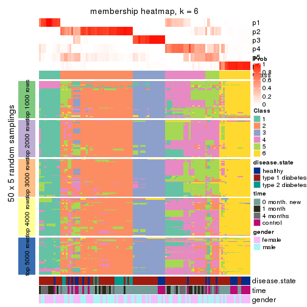
As soon as we have had the classes for columns, we can look for signatures which are significantly different between classes which can be candidate marks for certain classes. Following are the heatmaps for signatures.
Signature heatmaps where rows are scaled:
get_signatures(res, k = 2)
get_signatures(res, k = 3)
get_signatures(res, k = 4)
get_signatures(res, k = 5)
get_signatures(res, k = 6)
Signature heatmaps where rows are not scaled:
get_signatures(res, k = 2, scale_rows = FALSE)
get_signatures(res, k = 3, scale_rows = FALSE)
get_signatures(res, k = 4, scale_rows = FALSE)
get_signatures(res, k = 5, scale_rows = FALSE)
get_signatures(res, k = 6, scale_rows = FALSE)
Compare the overlap of signatures from different k:
compare_signatures(res)
get_signature() returns a data frame invisibly. TO get the list of signatures, the function
call should be assigned to a variable explicitly. In following code, if plot argument is set
to FALSE, no heatmap is plotted while only the differential analysis is performed.
# code only for demonstration
tb = get_signature(res, k = ..., plot = FALSE)
An example of the output of tb is:
#> which_row fdr mean_1 mean_2 scaled_mean_1 scaled_mean_2 km
#> 1 38 0.042760348 8.373488 9.131774 -0.5533452 0.5164555 1
#> 2 40 0.018707592 7.106213 8.469186 -0.6173731 0.5762149 1
#> 3 55 0.019134737 10.221463 11.207825 -0.6159697 0.5749050 1
#> 4 59 0.006059896 5.921854 7.869574 -0.6899429 0.6439467 1
#> 5 60 0.018055526 8.928898 10.211722 -0.6204761 0.5791110 1
#> 6 98 0.009384629 15.714769 14.887706 0.6635654 -0.6193277 2
...
The columns in tb are:
which_row: row indices corresponding to the input matrix.fdr: FDR for the differential test. mean_x: The mean value in group x.scaled_mean_x: The mean value in group x after rows are scaled.km: Row groups if k-means clustering is applied to rows.UMAP plot which shows how samples are separated.
dimension_reduction(res, k = 2, method = "UMAP")
dimension_reduction(res, k = 3, method = "UMAP")
dimension_reduction(res, k = 4, method = "UMAP")
dimension_reduction(res, k = 5, method = "UMAP")

dimension_reduction(res, k = 6, method = "UMAP")
Following heatmap shows how subgroups are split when increasing k:
collect_classes(res)
Test correlation between subgroups and known annotations. If the known annotation is numeric, one-way ANOVA test is applied, and if the known annotation is discrete, chi-squared contingency table test is applied.
test_to_known_factors(res)
#> n disease.state(p) time(p) gender(p) k
#> ATC:kmeans 116 2.30e-03 1.48e-04 0.9313 2
#> ATC:kmeans 93 9.88e-03 6.94e-04 0.5838 3
#> ATC:kmeans 109 6.57e-06 1.53e-05 0.0305 4
#> ATC:kmeans 84 3.28e-05 4.77e-05 0.1270 5
#> ATC:kmeans 76 1.52e-04 1.35e-04 0.0681 6
If matrix rows can be associated to genes, consider to use GO_Enrichment(res,
...) to perform function enrichment for the signature genes.
The object with results only for a single top-value method and a single partition method can be extracted as:
res = res_list["ATC", "skmeans"]
# you can also extract it by
# res = res_list["ATC:skmeans"]
A summary of res and all the functions that can be applied to it:
res
#> A 'ConsensusPartition' object with k = 2, 3, 4, 5, 6.
#> On a matrix with 21512 rows and 117 columns.
#> Top rows (1000, 2000, 3000, 4000, 5000) are extracted by 'ATC' method.
#> Subgroups are detected by 'skmeans' method.
#> Performed in total 1250 partitions by row resampling.
#> Best k for subgroups seems to be 2.
#>
#> Following methods can be applied to this 'ConsensusPartition' object:
#> [1] "cola_report" "collect_classes" "collect_plots"
#> [4] "collect_stats" "colnames" "compare_signatures"
#> [7] "consensus_heatmap" "dimension_reduction" "functional_enrichment"
#> [10] "get_anno_col" "get_anno" "get_classes"
#> [13] "get_consensus" "get_matrix" "get_membership"
#> [16] "get_param" "get_signatures" "get_stats"
#> [19] "is_best_k" "is_stable_k" "membership_heatmap"
#> [22] "ncol" "nrow" "plot_ecdf"
#> [25] "rownames" "select_partition_number" "show"
#> [28] "suggest_best_k" "test_to_known_factors"
collect_plots() function collects all the plots made from res for all k (number of partitions)
into one single page to provide an easy and fast comparison between different k.
collect_plots(res)

The plots are:
k and the heatmap of
predicted classes for each k.k.k.k.All the plots in panels can be made by individual functions and they are plotted later in this section.
select_partition_number() produces several plots showing different
statistics for choosing “optimized” k. There are following statistics:
k;k, the area increased is defined as \(A_k - A_{k-1}\).The detailed explanations of these statistics can be found in the cola vignette.
Generally speaking, lower PAC score, higher mean silhouette score or higher
concordance corresponds to better partition. Rand index and Jaccard index
measure how similar the current partition is compared to partition with k-1.
If they are too similar, we won't accept k is better than k-1.
select_partition_number(res)

The numeric values for all these statistics can be obtained by get_stats().
get_stats(res)
#> k 1-PAC mean_silhouette concordance area_increased Rand Jaccard
#> 2 2 0.913 0.928 0.970 0.5030 0.497 0.497
#> 3 3 0.830 0.856 0.923 0.2813 0.782 0.586
#> 4 4 0.890 0.865 0.932 0.1383 0.855 0.614
#> 5 5 0.753 0.681 0.833 0.0634 0.958 0.845
#> 6 6 0.749 0.621 0.794 0.0410 0.921 0.682
suggest_best_k() suggests the best \(k\) based on these statistics. The rules are as follows:
NA.suggest_best_k(res)
#> [1] 2
Following shows the table of the partitions (You need to click the show/hide
code output link to see it). The membership matrix (columns with name p*)
is inferred by
clue::cl_consensus()
function with the SE method. Basically the value in the membership matrix
represents the probability to belong to a certain group. The finall class
label for an item is determined with the group with highest probability it
belongs to.
In get_classes() function, the entropy is calculated from the membership
matrix and the silhouette score is calculated from the consensus matrix.
cbind(get_classes(res, k = 2), get_membership(res, k = 2))
#> class entropy silhouette p1 p2
#> GSM254177 1 0.844 0.649 0.728 0.272
#> GSM254179 2 0.278 0.932 0.048 0.952
#> GSM254180 1 0.909 0.557 0.676 0.324
#> GSM254182 2 0.000 0.976 0.000 1.000
#> GSM254183 2 0.000 0.976 0.000 1.000
#> GSM254277 1 0.000 0.959 1.000 0.000
#> GSM254278 2 0.000 0.976 0.000 1.000
#> GSM254281 1 0.000 0.959 1.000 0.000
#> GSM254282 1 1.000 0.069 0.500 0.500
#> GSM254284 1 0.000 0.959 1.000 0.000
#> GSM254286 1 0.886 0.595 0.696 0.304
#> GSM254290 2 0.000 0.976 0.000 1.000
#> GSM254291 2 0.000 0.976 0.000 1.000
#> GSM254293 1 0.802 0.693 0.756 0.244
#> GSM254178 1 0.000 0.959 1.000 0.000
#> GSM254181 2 0.000 0.976 0.000 1.000
#> GSM254279 2 0.000 0.976 0.000 1.000
#> GSM254280 2 0.000 0.976 0.000 1.000
#> GSM254283 1 0.000 0.959 1.000 0.000
#> GSM254285 2 0.000 0.976 0.000 1.000
#> GSM254287 2 0.204 0.947 0.032 0.968
#> GSM254288 1 0.000 0.959 1.000 0.000
#> GSM254289 2 0.000 0.976 0.000 1.000
#> GSM254292 1 0.000 0.959 1.000 0.000
#> GSM254184 2 0.000 0.976 0.000 1.000
#> GSM254185 2 0.000 0.976 0.000 1.000
#> GSM254187 2 0.000 0.976 0.000 1.000
#> GSM254189 2 0.000 0.976 0.000 1.000
#> GSM254190 1 0.224 0.929 0.964 0.036
#> GSM254191 2 0.000 0.976 0.000 1.000
#> GSM254192 2 0.000 0.976 0.000 1.000
#> GSM254193 1 0.000 0.959 1.000 0.000
#> GSM254199 2 0.311 0.924 0.056 0.944
#> GSM254203 1 0.000 0.959 1.000 0.000
#> GSM254206 1 0.000 0.959 1.000 0.000
#> GSM254210 2 0.000 0.976 0.000 1.000
#> GSM254211 1 0.000 0.959 1.000 0.000
#> GSM254215 2 0.000 0.976 0.000 1.000
#> GSM254218 2 0.000 0.976 0.000 1.000
#> GSM254230 1 0.000 0.959 1.000 0.000
#> GSM254236 2 0.000 0.976 0.000 1.000
#> GSM254244 1 0.000 0.959 1.000 0.000
#> GSM254247 1 0.000 0.959 1.000 0.000
#> GSM254248 1 0.000 0.959 1.000 0.000
#> GSM254254 2 0.000 0.976 0.000 1.000
#> GSM254257 2 0.000 0.976 0.000 1.000
#> GSM254258 2 0.000 0.976 0.000 1.000
#> GSM254261 2 0.000 0.976 0.000 1.000
#> GSM254264 2 0.000 0.976 0.000 1.000
#> GSM254186 2 0.000 0.976 0.000 1.000
#> GSM254188 2 0.000 0.976 0.000 1.000
#> GSM254194 2 0.000 0.976 0.000 1.000
#> GSM254195 1 0.000 0.959 1.000 0.000
#> GSM254196 1 0.866 0.623 0.712 0.288
#> GSM254200 2 0.000 0.976 0.000 1.000
#> GSM254209 2 0.000 0.976 0.000 1.000
#> GSM254214 1 0.000 0.959 1.000 0.000
#> GSM254221 1 0.000 0.959 1.000 0.000
#> GSM254224 1 0.722 0.755 0.800 0.200
#> GSM254227 2 0.000 0.976 0.000 1.000
#> GSM254233 1 0.000 0.959 1.000 0.000
#> GSM254235 1 0.000 0.959 1.000 0.000
#> GSM254239 2 0.978 0.318 0.412 0.588
#> GSM254241 1 0.000 0.959 1.000 0.000
#> GSM254251 2 0.000 0.976 0.000 1.000
#> GSM254262 2 0.000 0.976 0.000 1.000
#> GSM254263 2 0.000 0.976 0.000 1.000
#> GSM254197 1 0.000 0.959 1.000 0.000
#> GSM254201 1 0.000 0.959 1.000 0.000
#> GSM254204 1 0.000 0.959 1.000 0.000
#> GSM254216 1 0.000 0.959 1.000 0.000
#> GSM254228 1 0.000 0.959 1.000 0.000
#> GSM254242 1 0.000 0.959 1.000 0.000
#> GSM254245 1 0.000 0.959 1.000 0.000
#> GSM254252 1 0.000 0.959 1.000 0.000
#> GSM254255 1 0.000 0.959 1.000 0.000
#> GSM254259 1 0.000 0.959 1.000 0.000
#> GSM254207 2 0.000 0.976 0.000 1.000
#> GSM254212 2 0.000 0.976 0.000 1.000
#> GSM254219 1 0.000 0.959 1.000 0.000
#> GSM254222 2 0.000 0.976 0.000 1.000
#> GSM254225 2 0.000 0.976 0.000 1.000
#> GSM254231 1 0.000 0.959 1.000 0.000
#> GSM254234 2 0.000 0.976 0.000 1.000
#> GSM254237 2 0.000 0.976 0.000 1.000
#> GSM254249 1 0.000 0.959 1.000 0.000
#> GSM254198 2 0.000 0.976 0.000 1.000
#> GSM254202 1 0.000 0.959 1.000 0.000
#> GSM254205 1 0.000 0.959 1.000 0.000
#> GSM254217 2 0.814 0.662 0.252 0.748
#> GSM254229 2 0.000 0.976 0.000 1.000
#> GSM254243 1 0.000 0.959 1.000 0.000
#> GSM254246 1 0.000 0.959 1.000 0.000
#> GSM254253 1 0.000 0.959 1.000 0.000
#> GSM254256 1 0.000 0.959 1.000 0.000
#> GSM254260 1 0.000 0.959 1.000 0.000
#> GSM254208 1 0.000 0.959 1.000 0.000
#> GSM254213 2 0.000 0.976 0.000 1.000
#> GSM254220 1 0.000 0.959 1.000 0.000
#> GSM254223 1 0.000 0.959 1.000 0.000
#> GSM254226 2 0.000 0.976 0.000 1.000
#> GSM254232 1 0.000 0.959 1.000 0.000
#> GSM254238 1 0.000 0.959 1.000 0.000
#> GSM254240 1 0.000 0.959 1.000 0.000
#> GSM254250 1 0.000 0.959 1.000 0.000
#> GSM254268 2 0.000 0.976 0.000 1.000
#> GSM254269 2 0.000 0.976 0.000 1.000
#> GSM254270 2 0.802 0.675 0.244 0.756
#> GSM254272 2 0.000 0.976 0.000 1.000
#> GSM254273 2 0.000 0.976 0.000 1.000
#> GSM254274 2 0.000 0.976 0.000 1.000
#> GSM254265 2 0.000 0.976 0.000 1.000
#> GSM254266 2 0.000 0.976 0.000 1.000
#> GSM254267 2 0.000 0.976 0.000 1.000
#> GSM254271 2 0.000 0.976 0.000 1.000
#> GSM254275 2 0.917 0.512 0.332 0.668
#> GSM254276 2 0.000 0.976 0.000 1.000
cbind(get_classes(res, k = 3), get_membership(res, k = 3))
#> class entropy silhouette p1 p2 p3
#> GSM254177 3 0.0000 0.741 0.000 0.000 1.000
#> GSM254179 2 0.4504 0.683 0.000 0.804 0.196
#> GSM254180 3 0.0000 0.741 0.000 0.000 1.000
#> GSM254182 2 0.0747 0.926 0.000 0.984 0.016
#> GSM254183 2 0.0747 0.926 0.000 0.984 0.016
#> GSM254277 3 0.0000 0.741 0.000 0.000 1.000
#> GSM254278 3 0.6154 0.636 0.000 0.408 0.592
#> GSM254281 3 0.0747 0.733 0.016 0.000 0.984
#> GSM254282 3 0.0000 0.741 0.000 0.000 1.000
#> GSM254284 1 0.0000 0.981 1.000 0.000 0.000
#> GSM254286 3 0.0000 0.741 0.000 0.000 1.000
#> GSM254290 2 0.0000 0.933 0.000 1.000 0.000
#> GSM254291 3 0.0000 0.741 0.000 0.000 1.000
#> GSM254293 3 0.0000 0.741 0.000 0.000 1.000
#> GSM254178 1 0.0000 0.981 1.000 0.000 0.000
#> GSM254181 3 0.6154 0.636 0.000 0.408 0.592
#> GSM254279 3 0.6154 0.636 0.000 0.408 0.592
#> GSM254280 3 0.6154 0.636 0.000 0.408 0.592
#> GSM254283 1 0.0000 0.981 1.000 0.000 0.000
#> GSM254285 3 0.6154 0.636 0.000 0.408 0.592
#> GSM254287 2 0.3116 0.795 0.108 0.892 0.000
#> GSM254288 1 0.0000 0.981 1.000 0.000 0.000
#> GSM254289 2 0.0000 0.933 0.000 1.000 0.000
#> GSM254292 3 0.0747 0.733 0.016 0.000 0.984
#> GSM254184 2 0.0747 0.926 0.000 0.984 0.016
#> GSM254185 3 0.6154 0.636 0.000 0.408 0.592
#> GSM254187 3 0.6154 0.636 0.000 0.408 0.592
#> GSM254189 3 0.6154 0.636 0.000 0.408 0.592
#> GSM254190 3 0.0000 0.741 0.000 0.000 1.000
#> GSM254191 2 0.0747 0.926 0.000 0.984 0.016
#> GSM254192 2 0.0747 0.926 0.000 0.984 0.016
#> GSM254193 1 0.0000 0.981 1.000 0.000 0.000
#> GSM254199 3 0.0000 0.741 0.000 0.000 1.000
#> GSM254203 1 0.0000 0.981 1.000 0.000 0.000
#> GSM254206 1 0.0000 0.981 1.000 0.000 0.000
#> GSM254210 2 0.0424 0.930 0.000 0.992 0.008
#> GSM254211 1 0.0000 0.981 1.000 0.000 0.000
#> GSM254215 2 0.1163 0.914 0.000 0.972 0.028
#> GSM254218 3 0.4504 0.704 0.000 0.196 0.804
#> GSM254230 1 0.0000 0.981 1.000 0.000 0.000
#> GSM254236 2 0.0747 0.926 0.000 0.984 0.016
#> GSM254244 1 0.0000 0.981 1.000 0.000 0.000
#> GSM254247 3 0.1529 0.720 0.040 0.000 0.960
#> GSM254248 1 0.1289 0.953 0.968 0.000 0.032
#> GSM254254 2 0.0237 0.932 0.000 0.996 0.004
#> GSM254257 2 0.0000 0.933 0.000 1.000 0.000
#> GSM254258 3 0.6154 0.636 0.000 0.408 0.592
#> GSM254261 2 0.0424 0.930 0.000 0.992 0.008
#> GSM254264 3 0.6154 0.636 0.000 0.408 0.592
#> GSM254186 3 0.6154 0.636 0.000 0.408 0.592
#> GSM254188 2 0.1643 0.895 0.000 0.956 0.044
#> GSM254194 3 0.6154 0.636 0.000 0.408 0.592
#> GSM254195 3 0.4931 0.488 0.232 0.000 0.768
#> GSM254196 3 0.0000 0.741 0.000 0.000 1.000
#> GSM254200 2 0.1031 0.918 0.000 0.976 0.024
#> GSM254209 2 0.0000 0.933 0.000 1.000 0.000
#> GSM254214 1 0.0892 0.962 0.980 0.020 0.000
#> GSM254221 1 0.0000 0.981 1.000 0.000 0.000
#> GSM254224 1 0.8392 0.508 0.624 0.200 0.176
#> GSM254227 3 0.6154 0.636 0.000 0.408 0.592
#> GSM254233 1 0.6126 0.443 0.600 0.000 0.400
#> GSM254235 1 0.0000 0.981 1.000 0.000 0.000
#> GSM254239 2 0.8911 0.335 0.204 0.572 0.224
#> GSM254241 1 0.0000 0.981 1.000 0.000 0.000
#> GSM254251 3 0.6154 0.636 0.000 0.408 0.592
#> GSM254262 2 0.0747 0.926 0.000 0.984 0.016
#> GSM254263 2 0.0747 0.926 0.000 0.984 0.016
#> GSM254197 1 0.0000 0.981 1.000 0.000 0.000
#> GSM254201 1 0.0000 0.981 1.000 0.000 0.000
#> GSM254204 1 0.0000 0.981 1.000 0.000 0.000
#> GSM254216 1 0.0000 0.981 1.000 0.000 0.000
#> GSM254228 1 0.0000 0.981 1.000 0.000 0.000
#> GSM254242 1 0.0000 0.981 1.000 0.000 0.000
#> GSM254245 1 0.0000 0.981 1.000 0.000 0.000
#> GSM254252 1 0.0000 0.981 1.000 0.000 0.000
#> GSM254255 1 0.0000 0.981 1.000 0.000 0.000
#> GSM254259 1 0.0000 0.981 1.000 0.000 0.000
#> GSM254207 2 0.0424 0.930 0.000 0.992 0.008
#> GSM254212 2 0.0000 0.933 0.000 1.000 0.000
#> GSM254219 1 0.0000 0.981 1.000 0.000 0.000
#> GSM254222 2 0.0000 0.933 0.000 1.000 0.000
#> GSM254225 2 0.0000 0.933 0.000 1.000 0.000
#> GSM254231 1 0.0000 0.981 1.000 0.000 0.000
#> GSM254234 2 0.0000 0.933 0.000 1.000 0.000
#> GSM254237 2 0.0000 0.933 0.000 1.000 0.000
#> GSM254249 1 0.0000 0.981 1.000 0.000 0.000
#> GSM254198 2 0.0000 0.933 0.000 1.000 0.000
#> GSM254202 1 0.0000 0.981 1.000 0.000 0.000
#> GSM254205 1 0.0000 0.981 1.000 0.000 0.000
#> GSM254217 2 0.4750 0.633 0.216 0.784 0.000
#> GSM254229 2 0.0000 0.933 0.000 1.000 0.000
#> GSM254243 1 0.0000 0.981 1.000 0.000 0.000
#> GSM254246 1 0.0000 0.981 1.000 0.000 0.000
#> GSM254253 1 0.0000 0.981 1.000 0.000 0.000
#> GSM254256 1 0.0000 0.981 1.000 0.000 0.000
#> GSM254260 1 0.0000 0.981 1.000 0.000 0.000
#> GSM254208 1 0.0000 0.981 1.000 0.000 0.000
#> GSM254213 2 0.0000 0.933 0.000 1.000 0.000
#> GSM254220 1 0.0000 0.981 1.000 0.000 0.000
#> GSM254223 1 0.0000 0.981 1.000 0.000 0.000
#> GSM254226 2 0.0000 0.933 0.000 1.000 0.000
#> GSM254232 1 0.0000 0.981 1.000 0.000 0.000
#> GSM254238 1 0.0000 0.981 1.000 0.000 0.000
#> GSM254240 1 0.0000 0.981 1.000 0.000 0.000
#> GSM254250 1 0.0000 0.981 1.000 0.000 0.000
#> GSM254268 2 0.0000 0.933 0.000 1.000 0.000
#> GSM254269 2 0.0000 0.933 0.000 1.000 0.000
#> GSM254270 2 0.6154 0.293 0.000 0.592 0.408
#> GSM254272 2 0.0000 0.933 0.000 1.000 0.000
#> GSM254273 2 0.0000 0.933 0.000 1.000 0.000
#> GSM254274 2 0.0000 0.933 0.000 1.000 0.000
#> GSM254265 2 0.0000 0.933 0.000 1.000 0.000
#> GSM254266 2 0.0000 0.933 0.000 1.000 0.000
#> GSM254267 2 0.0000 0.933 0.000 1.000 0.000
#> GSM254271 2 0.0000 0.933 0.000 1.000 0.000
#> GSM254275 2 0.6154 0.292 0.408 0.592 0.000
#> GSM254276 2 0.0000 0.933 0.000 1.000 0.000
cbind(get_classes(res, k = 4), get_membership(res, k = 4))
#> class entropy silhouette p1 p2 p3 p4
#> GSM254177 4 0.1118 0.937 0.000 0.000 0.036 0.964
#> GSM254179 2 0.7291 0.488 0.004 0.560 0.224 0.212
#> GSM254180 4 0.1118 0.937 0.000 0.000 0.036 0.964
#> GSM254182 3 0.1389 0.924 0.000 0.048 0.952 0.000
#> GSM254183 3 0.2469 0.876 0.000 0.108 0.892 0.000
#> GSM254277 4 0.0188 0.936 0.000 0.000 0.004 0.996
#> GSM254278 3 0.0707 0.936 0.000 0.000 0.980 0.020
#> GSM254281 4 0.0188 0.936 0.000 0.000 0.004 0.996
#> GSM254282 4 0.1118 0.937 0.000 0.000 0.036 0.964
#> GSM254284 1 0.0000 0.951 1.000 0.000 0.000 0.000
#> GSM254286 4 0.1118 0.937 0.000 0.000 0.036 0.964
#> GSM254290 2 0.1211 0.867 0.000 0.960 0.040 0.000
#> GSM254291 4 0.1302 0.932 0.000 0.000 0.044 0.956
#> GSM254293 4 0.0336 0.937 0.000 0.000 0.008 0.992
#> GSM254178 1 0.1474 0.943 0.948 0.000 0.000 0.052
#> GSM254181 3 0.2101 0.910 0.000 0.060 0.928 0.012
#> GSM254279 3 0.0707 0.936 0.000 0.000 0.980 0.020
#> GSM254280 3 0.0469 0.937 0.000 0.000 0.988 0.012
#> GSM254283 1 0.1743 0.916 0.940 0.056 0.000 0.004
#> GSM254285 3 0.0707 0.936 0.000 0.000 0.980 0.020
#> GSM254287 2 0.1305 0.854 0.036 0.960 0.004 0.000
#> GSM254288 1 0.1389 0.925 0.952 0.048 0.000 0.000
#> GSM254289 2 0.0817 0.875 0.000 0.976 0.024 0.000
#> GSM254292 4 0.0188 0.936 0.000 0.000 0.004 0.996
#> GSM254184 3 0.0817 0.935 0.000 0.024 0.976 0.000
#> GSM254185 3 0.0469 0.937 0.000 0.000 0.988 0.012
#> GSM254187 3 0.0707 0.936 0.000 0.000 0.980 0.020
#> GSM254189 3 0.0592 0.937 0.000 0.000 0.984 0.016
#> GSM254190 4 0.0336 0.937 0.000 0.000 0.008 0.992
#> GSM254191 3 0.0817 0.935 0.000 0.024 0.976 0.000
#> GSM254192 3 0.0921 0.935 0.000 0.028 0.972 0.000
#> GSM254193 1 0.0188 0.952 0.996 0.000 0.000 0.004
#> GSM254199 4 0.1302 0.932 0.000 0.000 0.044 0.956
#> GSM254203 1 0.1389 0.946 0.952 0.000 0.000 0.048
#> GSM254206 1 0.1211 0.948 0.960 0.000 0.000 0.040
#> GSM254210 3 0.3400 0.775 0.000 0.180 0.820 0.000
#> GSM254211 1 0.1474 0.944 0.948 0.000 0.000 0.052
#> GSM254215 3 0.0592 0.937 0.000 0.016 0.984 0.000
#> GSM254218 4 0.4898 0.306 0.000 0.000 0.416 0.584
#> GSM254230 1 0.1474 0.944 0.948 0.000 0.000 0.052
#> GSM254236 3 0.0592 0.937 0.000 0.016 0.984 0.000
#> GSM254244 1 0.1389 0.946 0.952 0.000 0.000 0.048
#> GSM254247 4 0.0188 0.936 0.000 0.000 0.004 0.996
#> GSM254248 1 0.4955 0.264 0.556 0.000 0.000 0.444
#> GSM254254 3 0.4500 0.526 0.000 0.316 0.684 0.000
#> GSM254257 2 0.4697 0.487 0.000 0.644 0.356 0.000
#> GSM254258 3 0.0707 0.936 0.000 0.000 0.980 0.020
#> GSM254261 3 0.3975 0.692 0.000 0.240 0.760 0.000
#> GSM254264 3 0.0707 0.936 0.000 0.000 0.980 0.020
#> GSM254186 3 0.0707 0.936 0.000 0.000 0.980 0.020
#> GSM254188 3 0.0336 0.938 0.000 0.008 0.992 0.000
#> GSM254194 3 0.0336 0.937 0.000 0.000 0.992 0.008
#> GSM254195 4 0.0707 0.921 0.020 0.000 0.000 0.980
#> GSM254196 4 0.1118 0.937 0.000 0.000 0.036 0.964
#> GSM254200 3 0.0592 0.937 0.000 0.016 0.984 0.000
#> GSM254209 2 0.0921 0.873 0.000 0.972 0.028 0.000
#> GSM254214 1 0.5161 0.100 0.520 0.476 0.000 0.004
#> GSM254221 1 0.1302 0.947 0.956 0.000 0.000 0.044
#> GSM254224 2 0.6363 0.545 0.248 0.660 0.016 0.076
#> GSM254227 3 0.1118 0.927 0.000 0.000 0.964 0.036
#> GSM254233 4 0.3219 0.763 0.164 0.000 0.000 0.836
#> GSM254235 1 0.1118 0.950 0.964 0.000 0.000 0.036
#> GSM254239 2 0.5773 0.433 0.048 0.632 0.000 0.320
#> GSM254241 1 0.0000 0.951 1.000 0.000 0.000 0.000
#> GSM254251 3 0.1004 0.933 0.000 0.004 0.972 0.024
#> GSM254262 3 0.0592 0.937 0.000 0.016 0.984 0.000
#> GSM254263 3 0.0817 0.935 0.000 0.024 0.976 0.000
#> GSM254197 1 0.0188 0.952 0.996 0.000 0.000 0.004
#> GSM254201 1 0.1389 0.946 0.952 0.000 0.000 0.048
#> GSM254204 1 0.1211 0.948 0.960 0.000 0.000 0.040
#> GSM254216 1 0.1022 0.951 0.968 0.000 0.000 0.032
#> GSM254228 1 0.0000 0.951 1.000 0.000 0.000 0.000
#> GSM254242 1 0.1302 0.947 0.956 0.000 0.000 0.044
#> GSM254245 1 0.1302 0.947 0.956 0.000 0.000 0.044
#> GSM254252 1 0.0000 0.951 1.000 0.000 0.000 0.000
#> GSM254255 1 0.1978 0.903 0.928 0.068 0.000 0.004
#> GSM254259 1 0.0000 0.951 1.000 0.000 0.000 0.000
#> GSM254207 3 0.3400 0.773 0.000 0.180 0.820 0.000
#> GSM254212 2 0.0336 0.873 0.000 0.992 0.008 0.000
#> GSM254219 1 0.1302 0.947 0.956 0.000 0.000 0.044
#> GSM254222 2 0.5004 0.416 0.000 0.604 0.392 0.004
#> GSM254225 2 0.3400 0.767 0.000 0.820 0.180 0.000
#> GSM254231 1 0.0707 0.952 0.980 0.000 0.000 0.020
#> GSM254234 2 0.0592 0.875 0.000 0.984 0.016 0.000
#> GSM254237 2 0.0000 0.872 0.000 1.000 0.000 0.000
#> GSM254249 1 0.1022 0.951 0.968 0.000 0.000 0.032
#> GSM254198 2 0.1022 0.872 0.000 0.968 0.032 0.000
#> GSM254202 1 0.0817 0.952 0.976 0.000 0.000 0.024
#> GSM254205 1 0.0469 0.952 0.988 0.000 0.000 0.012
#> GSM254217 2 0.0000 0.872 0.000 1.000 0.000 0.000
#> GSM254229 2 0.0524 0.873 0.000 0.988 0.008 0.004
#> GSM254243 1 0.0336 0.952 0.992 0.000 0.000 0.008
#> GSM254246 1 0.0188 0.952 0.996 0.000 0.000 0.004
#> GSM254253 1 0.0000 0.951 1.000 0.000 0.000 0.000
#> GSM254256 1 0.0657 0.946 0.984 0.012 0.000 0.004
#> GSM254260 1 0.2457 0.891 0.912 0.076 0.004 0.008
#> GSM254208 1 0.0336 0.951 0.992 0.000 0.000 0.008
#> GSM254213 2 0.0469 0.875 0.000 0.988 0.012 0.000
#> GSM254220 1 0.0817 0.952 0.976 0.000 0.000 0.024
#> GSM254223 1 0.0188 0.950 0.996 0.000 0.000 0.004
#> GSM254226 2 0.2125 0.853 0.000 0.920 0.076 0.004
#> GSM254232 1 0.1398 0.928 0.956 0.040 0.000 0.004
#> GSM254238 1 0.1059 0.949 0.972 0.012 0.000 0.016
#> GSM254240 1 0.0000 0.951 1.000 0.000 0.000 0.000
#> GSM254250 1 0.0000 0.951 1.000 0.000 0.000 0.000
#> GSM254268 2 0.0469 0.875 0.000 0.988 0.012 0.000
#> GSM254269 2 0.0469 0.875 0.000 0.988 0.012 0.000
#> GSM254270 2 0.2469 0.801 0.000 0.892 0.000 0.108
#> GSM254272 2 0.0336 0.874 0.000 0.992 0.008 0.000
#> GSM254273 2 0.0592 0.875 0.000 0.984 0.016 0.000
#> GSM254274 2 0.4985 0.120 0.000 0.532 0.468 0.000
#> GSM254265 2 0.1867 0.850 0.000 0.928 0.072 0.000
#> GSM254266 2 0.0188 0.871 0.000 0.996 0.000 0.004
#> GSM254267 2 0.4697 0.470 0.000 0.644 0.356 0.000
#> GSM254271 2 0.0707 0.874 0.000 0.980 0.020 0.000
#> GSM254275 2 0.0707 0.863 0.020 0.980 0.000 0.000
#> GSM254276 2 0.0000 0.872 0.000 1.000 0.000 0.000
cbind(get_classes(res, k = 5), get_membership(res, k = 5))
#> class entropy silhouette p1 p2 p3 p4 p5
#> GSM254177 1 0.0566 0.91395 0.984 0.000 0.004 0.000 0.012
#> GSM254179 2 0.8491 0.27548 0.080 0.400 0.060 0.128 0.332
#> GSM254180 1 0.0451 0.91509 0.988 0.000 0.004 0.000 0.008
#> GSM254182 3 0.1522 0.90518 0.000 0.044 0.944 0.000 0.012
#> GSM254183 3 0.2625 0.84528 0.000 0.108 0.876 0.000 0.016
#> GSM254277 1 0.0162 0.91643 0.996 0.000 0.000 0.004 0.000
#> GSM254278 3 0.0290 0.93119 0.008 0.000 0.992 0.000 0.000
#> GSM254281 1 0.0290 0.91528 0.992 0.000 0.000 0.008 0.000
#> GSM254282 1 0.0451 0.91509 0.988 0.000 0.004 0.000 0.008
#> GSM254284 4 0.3561 0.67337 0.000 0.000 0.000 0.740 0.260
#> GSM254286 1 0.0162 0.91618 0.996 0.000 0.004 0.000 0.000
#> GSM254290 2 0.2438 0.75265 0.000 0.900 0.040 0.000 0.060
#> GSM254291 1 0.0162 0.91618 0.996 0.000 0.004 0.000 0.000
#> GSM254293 1 0.0290 0.91528 0.992 0.000 0.000 0.008 0.000
#> GSM254178 4 0.3300 0.69881 0.004 0.000 0.000 0.792 0.204
#> GSM254181 3 0.2302 0.87539 0.008 0.080 0.904 0.000 0.008
#> GSM254279 3 0.0290 0.93119 0.008 0.000 0.992 0.000 0.000
#> GSM254280 3 0.0290 0.93119 0.008 0.000 0.992 0.000 0.000
#> GSM254283 4 0.4425 0.46153 0.000 0.008 0.000 0.600 0.392
#> GSM254285 3 0.0290 0.93119 0.008 0.000 0.992 0.000 0.000
#> GSM254287 5 0.4375 -0.11400 0.000 0.420 0.004 0.000 0.576
#> GSM254288 5 0.4707 0.09912 0.000 0.020 0.000 0.392 0.588
#> GSM254289 2 0.3048 0.72793 0.000 0.820 0.004 0.000 0.176
#> GSM254292 1 0.0290 0.91528 0.992 0.000 0.000 0.008 0.000
#> GSM254184 3 0.0404 0.92871 0.000 0.000 0.988 0.000 0.012
#> GSM254185 3 0.0290 0.93119 0.008 0.000 0.992 0.000 0.000
#> GSM254187 3 0.0290 0.93119 0.008 0.000 0.992 0.000 0.000
#> GSM254189 3 0.0290 0.93119 0.008 0.000 0.992 0.000 0.000
#> GSM254190 1 0.0162 0.91643 0.996 0.000 0.000 0.004 0.000
#> GSM254191 3 0.0955 0.92176 0.000 0.004 0.968 0.000 0.028
#> GSM254192 3 0.0771 0.92587 0.000 0.004 0.976 0.000 0.020
#> GSM254193 4 0.3857 0.60748 0.000 0.000 0.000 0.688 0.312
#> GSM254199 1 0.0162 0.91629 0.996 0.000 0.000 0.000 0.004
#> GSM254203 4 0.2561 0.71676 0.000 0.000 0.000 0.856 0.144
#> GSM254206 4 0.2471 0.71850 0.000 0.000 0.000 0.864 0.136
#> GSM254210 3 0.4054 0.62231 0.000 0.248 0.732 0.000 0.020
#> GSM254211 4 0.1597 0.71561 0.012 0.000 0.000 0.940 0.048
#> GSM254215 3 0.0162 0.93031 0.000 0.000 0.996 0.000 0.004
#> GSM254218 1 0.4283 0.43416 0.644 0.000 0.348 0.000 0.008
#> GSM254230 4 0.0290 0.71620 0.000 0.000 0.000 0.992 0.008
#> GSM254236 3 0.0162 0.93031 0.000 0.000 0.996 0.000 0.004
#> GSM254244 4 0.0290 0.71517 0.000 0.000 0.000 0.992 0.008
#> GSM254247 1 0.2677 0.81760 0.872 0.000 0.000 0.112 0.016
#> GSM254248 4 0.3991 0.49075 0.172 0.000 0.000 0.780 0.048
#> GSM254254 3 0.4152 0.55327 0.000 0.296 0.692 0.000 0.012
#> GSM254257 2 0.4804 0.48804 0.000 0.636 0.328 0.000 0.036
#> GSM254258 3 0.0290 0.93119 0.008 0.000 0.992 0.000 0.000
#> GSM254261 3 0.3756 0.66581 0.000 0.248 0.744 0.000 0.008
#> GSM254264 3 0.0290 0.93119 0.008 0.000 0.992 0.000 0.000
#> GSM254186 3 0.0290 0.93119 0.008 0.000 0.992 0.000 0.000
#> GSM254188 3 0.0324 0.93067 0.004 0.000 0.992 0.000 0.004
#> GSM254194 3 0.0324 0.93067 0.004 0.000 0.992 0.000 0.004
#> GSM254195 1 0.0963 0.89339 0.964 0.000 0.000 0.036 0.000
#> GSM254196 1 0.0162 0.91618 0.996 0.000 0.004 0.000 0.000
#> GSM254200 3 0.0162 0.93031 0.000 0.000 0.996 0.000 0.004
#> GSM254209 2 0.3353 0.71275 0.000 0.796 0.008 0.000 0.196
#> GSM254214 5 0.5270 0.45356 0.000 0.208 0.000 0.120 0.672
#> GSM254221 4 0.0290 0.71517 0.000 0.000 0.000 0.992 0.008
#> GSM254224 2 0.7211 0.09796 0.012 0.400 0.004 0.292 0.292
#> GSM254227 3 0.1492 0.91036 0.040 0.008 0.948 0.000 0.004
#> GSM254233 1 0.4713 0.23690 0.544 0.000 0.000 0.440 0.016
#> GSM254235 4 0.0000 0.71906 0.000 0.000 0.000 1.000 0.000
#> GSM254239 5 0.6918 0.02413 0.144 0.328 0.000 0.036 0.492
#> GSM254241 4 0.3586 0.60891 0.000 0.000 0.000 0.736 0.264
#> GSM254251 3 0.0693 0.92838 0.012 0.008 0.980 0.000 0.000
#> GSM254262 3 0.0404 0.92871 0.000 0.000 0.988 0.000 0.012
#> GSM254263 3 0.0671 0.92637 0.000 0.004 0.980 0.000 0.016
#> GSM254197 4 0.3395 0.68342 0.000 0.000 0.000 0.764 0.236
#> GSM254201 4 0.0290 0.71517 0.000 0.000 0.000 0.992 0.008
#> GSM254204 4 0.3109 0.70193 0.000 0.000 0.000 0.800 0.200
#> GSM254216 4 0.0794 0.70518 0.000 0.000 0.000 0.972 0.028
#> GSM254228 4 0.3913 0.61211 0.000 0.000 0.000 0.676 0.324
#> GSM254242 4 0.0000 0.71906 0.000 0.000 0.000 1.000 0.000
#> GSM254245 4 0.3388 0.69949 0.008 0.000 0.000 0.792 0.200
#> GSM254252 4 0.4030 0.54371 0.000 0.000 0.000 0.648 0.352
#> GSM254255 5 0.5378 0.25701 0.000 0.060 0.000 0.392 0.548
#> GSM254259 4 0.3661 0.65836 0.000 0.000 0.000 0.724 0.276
#> GSM254207 3 0.5458 0.17773 0.000 0.380 0.552 0.000 0.068
#> GSM254212 2 0.2389 0.74120 0.000 0.880 0.004 0.000 0.116
#> GSM254219 4 0.0000 0.71906 0.000 0.000 0.000 1.000 0.000
#> GSM254222 2 0.5670 0.59665 0.000 0.632 0.192 0.000 0.176
#> GSM254225 2 0.4536 0.66990 0.000 0.712 0.048 0.000 0.240
#> GSM254231 4 0.1121 0.70342 0.000 0.000 0.000 0.956 0.044
#> GSM254234 2 0.1638 0.75202 0.000 0.932 0.004 0.000 0.064
#> GSM254237 2 0.3662 0.62893 0.000 0.744 0.004 0.000 0.252
#> GSM254249 4 0.3196 0.65175 0.004 0.000 0.000 0.804 0.192
#> GSM254198 2 0.2629 0.73719 0.000 0.860 0.004 0.000 0.136
#> GSM254202 4 0.0609 0.71366 0.000 0.000 0.000 0.980 0.020
#> GSM254205 4 0.0963 0.72864 0.000 0.000 0.000 0.964 0.036
#> GSM254217 2 0.3636 0.61231 0.000 0.728 0.000 0.000 0.272
#> GSM254229 2 0.2852 0.72430 0.000 0.828 0.000 0.000 0.172
#> GSM254243 4 0.3003 0.70798 0.000 0.000 0.000 0.812 0.188
#> GSM254246 4 0.3274 0.69505 0.000 0.000 0.000 0.780 0.220
#> GSM254253 4 0.3508 0.62938 0.000 0.000 0.000 0.748 0.252
#> GSM254256 5 0.4957 0.15944 0.000 0.028 0.000 0.444 0.528
#> GSM254260 4 0.5778 -0.29191 0.000 0.088 0.000 0.460 0.452
#> GSM254208 4 0.4088 0.34593 0.000 0.008 0.000 0.688 0.304
#> GSM254213 2 0.2536 0.73747 0.000 0.868 0.004 0.000 0.128
#> GSM254220 4 0.0510 0.71523 0.000 0.000 0.000 0.984 0.016
#> GSM254223 4 0.4088 0.47841 0.000 0.000 0.000 0.632 0.368
#> GSM254226 2 0.3890 0.67539 0.000 0.736 0.012 0.000 0.252
#> GSM254232 5 0.4882 0.00764 0.000 0.024 0.000 0.444 0.532
#> GSM254238 5 0.5547 0.09370 0.004 0.060 0.000 0.404 0.532
#> GSM254240 4 0.3966 0.60084 0.000 0.000 0.000 0.664 0.336
#> GSM254250 4 0.3966 0.60064 0.000 0.000 0.000 0.664 0.336
#> GSM254268 2 0.1282 0.75015 0.000 0.952 0.004 0.000 0.044
#> GSM254269 2 0.2233 0.74423 0.000 0.892 0.004 0.000 0.104
#> GSM254270 2 0.4854 0.57277 0.060 0.680 0.000 0.000 0.260
#> GSM254272 2 0.0566 0.74596 0.000 0.984 0.004 0.000 0.012
#> GSM254273 2 0.1216 0.75090 0.000 0.960 0.020 0.000 0.020
#> GSM254274 2 0.4127 0.51262 0.000 0.680 0.312 0.000 0.008
#> GSM254265 2 0.1571 0.74386 0.000 0.936 0.060 0.000 0.004
#> GSM254266 2 0.2471 0.70903 0.000 0.864 0.000 0.000 0.136
#> GSM254267 2 0.4141 0.59379 0.000 0.728 0.248 0.000 0.024
#> GSM254271 2 0.1364 0.74577 0.000 0.952 0.036 0.000 0.012
#> GSM254275 2 0.4306 0.25954 0.000 0.508 0.000 0.000 0.492
#> GSM254276 2 0.3366 0.64160 0.000 0.768 0.000 0.000 0.232
cbind(get_classes(res, k = 6), get_membership(res, k = 6))
#> class entropy silhouette p1 p2 p3 p4 p5 p6
#> GSM254177 6 0.0603 0.90945 0.000 0.000 0.000 0.004 0.016 0.980
#> GSM254179 4 0.7621 -0.20880 0.060 0.324 0.032 0.412 0.156 0.016
#> GSM254180 6 0.0717 0.90606 0.000 0.000 0.000 0.008 0.016 0.976
#> GSM254182 3 0.2701 0.83766 0.000 0.028 0.864 0.004 0.104 0.000
#> GSM254183 3 0.3410 0.80166 0.000 0.076 0.820 0.004 0.100 0.000
#> GSM254277 6 0.1307 0.90489 0.008 0.000 0.000 0.008 0.032 0.952
#> GSM254278 3 0.0458 0.89373 0.000 0.000 0.984 0.000 0.000 0.016
#> GSM254281 6 0.0622 0.91007 0.012 0.000 0.000 0.000 0.008 0.980
#> GSM254282 6 0.0964 0.90222 0.000 0.000 0.004 0.012 0.016 0.968
#> GSM254284 1 0.4856 0.30447 0.572 0.000 0.000 0.360 0.068 0.000
#> GSM254286 6 0.0146 0.91151 0.000 0.000 0.000 0.000 0.004 0.996
#> GSM254290 2 0.4050 0.66038 0.000 0.744 0.024 0.024 0.208 0.000
#> GSM254291 6 0.0000 0.91125 0.000 0.000 0.000 0.000 0.000 1.000
#> GSM254293 6 0.1307 0.90489 0.008 0.000 0.000 0.008 0.032 0.952
#> GSM254178 1 0.4794 0.56388 0.704 0.000 0.000 0.180 0.096 0.020
#> GSM254181 3 0.3425 0.81894 0.000 0.080 0.844 0.008 0.036 0.032
#> GSM254279 3 0.0458 0.89373 0.000 0.000 0.984 0.000 0.000 0.016
#> GSM254280 3 0.0458 0.89373 0.000 0.000 0.984 0.000 0.000 0.016
#> GSM254283 4 0.5400 0.21288 0.380 0.012 0.000 0.524 0.084 0.000
#> GSM254285 3 0.0458 0.89373 0.000 0.000 0.984 0.000 0.000 0.016
#> GSM254287 4 0.6455 -0.20550 0.004 0.308 0.008 0.352 0.328 0.000
#> GSM254288 4 0.6035 0.43060 0.176 0.028 0.000 0.548 0.248 0.000
#> GSM254289 2 0.3608 0.70065 0.000 0.816 0.016 0.072 0.096 0.000
#> GSM254292 6 0.1251 0.90651 0.012 0.000 0.000 0.008 0.024 0.956
#> GSM254184 3 0.1148 0.88484 0.000 0.020 0.960 0.004 0.016 0.000
#> GSM254185 3 0.0363 0.89392 0.000 0.000 0.988 0.000 0.000 0.012
#> GSM254187 3 0.0458 0.89373 0.000 0.000 0.984 0.000 0.000 0.016
#> GSM254189 3 0.0363 0.89392 0.000 0.000 0.988 0.000 0.000 0.012
#> GSM254190 6 0.0725 0.90978 0.012 0.000 0.000 0.000 0.012 0.976
#> GSM254191 3 0.2291 0.86423 0.000 0.040 0.904 0.012 0.044 0.000
#> GSM254192 3 0.2034 0.86738 0.000 0.024 0.912 0.004 0.060 0.000
#> GSM254193 1 0.5561 0.28640 0.528 0.000 0.000 0.308 0.164 0.000
#> GSM254199 6 0.0520 0.90911 0.000 0.000 0.000 0.008 0.008 0.984
#> GSM254203 1 0.3196 0.64219 0.828 0.000 0.000 0.108 0.064 0.000
#> GSM254206 1 0.3044 0.64541 0.836 0.000 0.000 0.116 0.048 0.000
#> GSM254210 3 0.5071 0.34898 0.000 0.336 0.584 0.008 0.072 0.000
#> GSM254211 1 0.1092 0.67465 0.960 0.000 0.000 0.020 0.020 0.000
#> GSM254215 3 0.0146 0.89325 0.000 0.004 0.996 0.000 0.000 0.000
#> GSM254218 6 0.4754 0.21274 0.000 0.000 0.416 0.016 0.024 0.544
#> GSM254230 1 0.0622 0.67198 0.980 0.000 0.000 0.012 0.008 0.000
#> GSM254236 3 0.0260 0.89285 0.000 0.008 0.992 0.000 0.000 0.000
#> GSM254244 1 0.0520 0.67364 0.984 0.000 0.000 0.008 0.008 0.000
#> GSM254247 6 0.4575 0.64066 0.224 0.000 0.000 0.044 0.028 0.704
#> GSM254248 1 0.2684 0.61777 0.880 0.000 0.000 0.024 0.024 0.072
#> GSM254254 3 0.4662 0.22200 0.000 0.424 0.540 0.008 0.028 0.000
#> GSM254257 2 0.4508 0.44061 0.000 0.668 0.280 0.012 0.040 0.000
#> GSM254258 3 0.0458 0.89373 0.000 0.000 0.984 0.000 0.000 0.016
#> GSM254261 3 0.4842 0.59969 0.000 0.212 0.676 0.008 0.104 0.000
#> GSM254264 3 0.0458 0.89373 0.000 0.000 0.984 0.000 0.000 0.016
#> GSM254186 3 0.0458 0.89373 0.000 0.000 0.984 0.000 0.000 0.016
#> GSM254188 3 0.0146 0.89325 0.000 0.004 0.996 0.000 0.000 0.000
#> GSM254194 3 0.0436 0.89361 0.000 0.004 0.988 0.000 0.004 0.004
#> GSM254195 6 0.1719 0.86711 0.060 0.000 0.000 0.000 0.016 0.924
#> GSM254196 6 0.0000 0.91125 0.000 0.000 0.000 0.000 0.000 1.000
#> GSM254200 3 0.0146 0.89325 0.000 0.004 0.996 0.000 0.000 0.000
#> GSM254209 2 0.3603 0.70642 0.000 0.808 0.012 0.056 0.124 0.000
#> GSM254214 4 0.5510 0.34111 0.032 0.148 0.000 0.640 0.180 0.000
#> GSM254221 1 0.0508 0.67440 0.984 0.000 0.000 0.012 0.004 0.000
#> GSM254224 1 0.7722 -0.23505 0.316 0.264 0.004 0.280 0.132 0.004
#> GSM254227 3 0.3039 0.84310 0.000 0.040 0.872 0.012 0.024 0.052
#> GSM254233 1 0.4321 0.27183 0.668 0.000 0.000 0.020 0.016 0.296
#> GSM254235 1 0.0146 0.67621 0.996 0.000 0.000 0.000 0.004 0.000
#> GSM254239 5 0.3798 0.64610 0.004 0.104 0.000 0.052 0.812 0.028
#> GSM254241 4 0.3789 0.27396 0.416 0.000 0.000 0.584 0.000 0.000
#> GSM254251 3 0.2044 0.87433 0.000 0.016 0.924 0.008 0.020 0.032
#> GSM254262 3 0.0767 0.88942 0.000 0.008 0.976 0.004 0.012 0.000
#> GSM254263 3 0.1867 0.87156 0.000 0.036 0.924 0.004 0.036 0.000
#> GSM254197 1 0.4812 0.46400 0.640 0.000 0.000 0.264 0.096 0.000
#> GSM254201 1 0.0405 0.67538 0.988 0.000 0.000 0.008 0.004 0.000
#> GSM254204 1 0.4111 0.58542 0.740 0.000 0.000 0.176 0.084 0.000
#> GSM254216 1 0.1572 0.64964 0.936 0.000 0.000 0.028 0.036 0.000
#> GSM254228 1 0.5184 0.03857 0.480 0.000 0.000 0.432 0.088 0.000
#> GSM254242 1 0.0146 0.67581 0.996 0.000 0.000 0.004 0.000 0.000
#> GSM254245 1 0.4655 0.56578 0.708 0.000 0.000 0.184 0.096 0.012
#> GSM254252 4 0.4251 0.37051 0.348 0.000 0.000 0.624 0.028 0.000
#> GSM254255 4 0.3129 0.50803 0.088 0.028 0.000 0.852 0.032 0.000
#> GSM254259 1 0.5082 0.32755 0.572 0.000 0.000 0.332 0.096 0.000
#> GSM254207 3 0.6369 -0.15357 0.000 0.404 0.424 0.056 0.116 0.000
#> GSM254212 2 0.1863 0.74991 0.000 0.920 0.000 0.036 0.044 0.000
#> GSM254219 1 0.0260 0.67688 0.992 0.000 0.000 0.008 0.000 0.000
#> GSM254222 2 0.5616 0.58964 0.000 0.664 0.112 0.100 0.124 0.000
#> GSM254225 2 0.4596 0.63853 0.000 0.728 0.016 0.132 0.124 0.000
#> GSM254231 1 0.1267 0.65230 0.940 0.000 0.000 0.060 0.000 0.000
#> GSM254234 2 0.1003 0.75435 0.000 0.964 0.000 0.020 0.016 0.000
#> GSM254237 5 0.3634 0.67262 0.000 0.356 0.000 0.000 0.644 0.000
#> GSM254249 1 0.4541 -0.00133 0.544 0.000 0.000 0.428 0.012 0.016
#> GSM254198 2 0.3909 0.68662 0.000 0.772 0.004 0.076 0.148 0.000
#> GSM254202 1 0.0363 0.67421 0.988 0.000 0.000 0.012 0.000 0.000
#> GSM254205 1 0.2121 0.66309 0.892 0.000 0.000 0.096 0.012 0.000
#> GSM254217 5 0.3684 0.69600 0.000 0.332 0.000 0.004 0.664 0.000
#> GSM254229 2 0.2325 0.74179 0.000 0.892 0.000 0.060 0.048 0.000
#> GSM254243 1 0.4174 0.57924 0.732 0.000 0.000 0.184 0.084 0.000
#> GSM254246 1 0.4663 0.49979 0.664 0.000 0.000 0.244 0.092 0.000
#> GSM254253 4 0.4325 0.15743 0.456 0.000 0.000 0.524 0.020 0.000
#> GSM254256 4 0.3230 0.51463 0.100 0.016 0.000 0.848 0.024 0.012
#> GSM254260 4 0.4969 0.39086 0.156 0.068 0.000 0.712 0.064 0.000
#> GSM254208 4 0.5373 0.37243 0.368 0.016 0.000 0.540 0.076 0.000
#> GSM254213 2 0.2134 0.74195 0.000 0.904 0.000 0.052 0.044 0.000
#> GSM254220 1 0.0458 0.67295 0.984 0.000 0.000 0.016 0.000 0.000
#> GSM254223 4 0.3601 0.43744 0.312 0.000 0.000 0.684 0.004 0.000
#> GSM254226 2 0.4428 0.64384 0.000 0.740 0.012 0.128 0.120 0.000
#> GSM254232 4 0.3455 0.51933 0.200 0.004 0.000 0.776 0.020 0.000
#> GSM254238 5 0.4766 0.28404 0.156 0.008 0.000 0.124 0.708 0.004
#> GSM254240 4 0.5191 -0.04626 0.456 0.000 0.000 0.456 0.088 0.000
#> GSM254250 1 0.5189 -0.00186 0.468 0.000 0.000 0.444 0.088 0.000
#> GSM254268 2 0.1970 0.73987 0.000 0.912 0.000 0.028 0.060 0.000
#> GSM254269 2 0.2001 0.74355 0.000 0.912 0.000 0.048 0.040 0.000
#> GSM254270 5 0.4191 0.70537 0.000 0.284 0.000 0.000 0.676 0.040
#> GSM254272 2 0.1814 0.71765 0.000 0.900 0.000 0.000 0.100 0.000
#> GSM254273 2 0.1982 0.73691 0.000 0.912 0.004 0.016 0.068 0.000
#> GSM254274 2 0.3961 0.60751 0.000 0.768 0.148 0.004 0.080 0.000
#> GSM254265 2 0.2203 0.73237 0.000 0.896 0.016 0.004 0.084 0.000
#> GSM254266 2 0.3819 0.36786 0.000 0.700 0.000 0.020 0.280 0.000
#> GSM254267 2 0.4745 0.47493 0.000 0.676 0.188 0.000 0.136 0.000
#> GSM254271 2 0.2122 0.72757 0.000 0.900 0.008 0.008 0.084 0.000
#> GSM254275 5 0.4428 0.67614 0.000 0.244 0.000 0.072 0.684 0.000
#> GSM254276 5 0.4045 0.53418 0.000 0.428 0.000 0.008 0.564 0.000
Heatmaps for the consensus matrix. It visualizes the probability of two samples to be in a same group.
consensus_heatmap(res, k = 2)
consensus_heatmap(res, k = 3)
consensus_heatmap(res, k = 4)
consensus_heatmap(res, k = 5)
consensus_heatmap(res, k = 6)
Heatmaps for the membership of samples in all partitions to see how consistent they are:
membership_heatmap(res, k = 2)
membership_heatmap(res, k = 3)
membership_heatmap(res, k = 4)
membership_heatmap(res, k = 5)
membership_heatmap(res, k = 6)
As soon as we have had the classes for columns, we can look for signatures which are significantly different between classes which can be candidate marks for certain classes. Following are the heatmaps for signatures.
Signature heatmaps where rows are scaled:
get_signatures(res, k = 2)
get_signatures(res, k = 3)
get_signatures(res, k = 4)
get_signatures(res, k = 5)
get_signatures(res, k = 6)
Signature heatmaps where rows are not scaled:
get_signatures(res, k = 2, scale_rows = FALSE)
get_signatures(res, k = 3, scale_rows = FALSE)
get_signatures(res, k = 4, scale_rows = FALSE)
get_signatures(res, k = 5, scale_rows = FALSE)
get_signatures(res, k = 6, scale_rows = FALSE)
Compare the overlap of signatures from different k:
compare_signatures(res)
get_signature() returns a data frame invisibly. TO get the list of signatures, the function
call should be assigned to a variable explicitly. In following code, if plot argument is set
to FALSE, no heatmap is plotted while only the differential analysis is performed.
# code only for demonstration
tb = get_signature(res, k = ..., plot = FALSE)
An example of the output of tb is:
#> which_row fdr mean_1 mean_2 scaled_mean_1 scaled_mean_2 km
#> 1 38 0.042760348 8.373488 9.131774 -0.5533452 0.5164555 1
#> 2 40 0.018707592 7.106213 8.469186 -0.6173731 0.5762149 1
#> 3 55 0.019134737 10.221463 11.207825 -0.6159697 0.5749050 1
#> 4 59 0.006059896 5.921854 7.869574 -0.6899429 0.6439467 1
#> 5 60 0.018055526 8.928898 10.211722 -0.6204761 0.5791110 1
#> 6 98 0.009384629 15.714769 14.887706 0.6635654 -0.6193277 2
...
The columns in tb are:
which_row: row indices corresponding to the input matrix.fdr: FDR for the differential test. mean_x: The mean value in group x.scaled_mean_x: The mean value in group x after rows are scaled.km: Row groups if k-means clustering is applied to rows.UMAP plot which shows how samples are separated.
dimension_reduction(res, k = 2, method = "UMAP")
dimension_reduction(res, k = 3, method = "UMAP")

dimension_reduction(res, k = 4, method = "UMAP")
dimension_reduction(res, k = 5, method = "UMAP")
dimension_reduction(res, k = 6, method = "UMAP")
Following heatmap shows how subgroups are split when increasing k:
collect_classes(res)
Test correlation between subgroups and known annotations. If the known annotation is numeric, one-way ANOVA test is applied, and if the known annotation is discrete, chi-squared contingency table test is applied.
test_to_known_factors(res)
#> n disease.state(p) time(p) gender(p) k
#> ATC:skmeans 115 1.79e-03 2.77e-03 0.477 2
#> ATC:skmeans 112 2.23e-07 4.64e-07 0.552 3
#> ATC:skmeans 108 3.97e-10 1.11e-07 0.144 4
#> ATC:skmeans 97 9.10e-11 8.40e-08 0.101 5
#> ATC:skmeans 87 2.47e-07 1.25e-05 0.239 6
If matrix rows can be associated to genes, consider to use GO_Enrichment(res,
...) to perform function enrichment for the signature genes.
The object with results only for a single top-value method and a single partition method can be extracted as:
res = res_list["ATC", "pam"]
# you can also extract it by
# res = res_list["ATC:pam"]
A summary of res and all the functions that can be applied to it:
res
#> A 'ConsensusPartition' object with k = 2, 3, 4, 5, 6.
#> On a matrix with 21512 rows and 117 columns.
#> Top rows (1000, 2000, 3000, 4000, 5000) are extracted by 'ATC' method.
#> Subgroups are detected by 'pam' method.
#> Performed in total 1250 partitions by row resampling.
#> Best k for subgroups seems to be 2.
#>
#> Following methods can be applied to this 'ConsensusPartition' object:
#> [1] "cola_report" "collect_classes" "collect_plots"
#> [4] "collect_stats" "colnames" "compare_signatures"
#> [7] "consensus_heatmap" "dimension_reduction" "functional_enrichment"
#> [10] "get_anno_col" "get_anno" "get_classes"
#> [13] "get_consensus" "get_matrix" "get_membership"
#> [16] "get_param" "get_signatures" "get_stats"
#> [19] "is_best_k" "is_stable_k" "membership_heatmap"
#> [22] "ncol" "nrow" "plot_ecdf"
#> [25] "rownames" "select_partition_number" "show"
#> [28] "suggest_best_k" "test_to_known_factors"
collect_plots() function collects all the plots made from res for all k (number of partitions)
into one single page to provide an easy and fast comparison between different k.
collect_plots(res)
The plots are:
k and the heatmap of
predicted classes for each k.k.k.k.All the plots in panels can be made by individual functions and they are plotted later in this section.
select_partition_number() produces several plots showing different
statistics for choosing “optimized” k. There are following statistics:
k;k, the area increased is defined as \(A_k - A_{k-1}\).The detailed explanations of these statistics can be found in the cola vignette.
Generally speaking, lower PAC score, higher mean silhouette score or higher
concordance corresponds to better partition. Rand index and Jaccard index
measure how similar the current partition is compared to partition with k-1.
If they are too similar, we won't accept k is better than k-1.
select_partition_number(res)
The numeric values for all these statistics can be obtained by get_stats().
get_stats(res)
#> k 1-PAC mean_silhouette concordance area_increased Rand Jaccard
#> 2 2 1.000 0.978 0.990 0.4842 0.515 0.515
#> 3 3 0.705 0.765 0.866 0.2801 0.858 0.726
#> 4 4 0.845 0.890 0.948 0.1285 0.902 0.752
#> 5 5 0.728 0.647 0.832 0.0804 0.944 0.824
#> 6 6 0.781 0.815 0.874 0.0318 0.910 0.700
suggest_best_k() suggests the best \(k\) based on these statistics. The rules are as follows:
NA.suggest_best_k(res)
#> [1] 2
Following shows the table of the partitions (You need to click the show/hide
code output link to see it). The membership matrix (columns with name p*)
is inferred by
clue::cl_consensus()
function with the SE method. Basically the value in the membership matrix
represents the probability to belong to a certain group. The finall class
label for an item is determined with the group with highest probability it
belongs to.
In get_classes() function, the entropy is calculated from the membership
matrix and the silhouette score is calculated from the consensus matrix.
cbind(get_classes(res, k = 2), get_membership(res, k = 2))
#> class entropy silhouette p1 p2
#> GSM254177 2 0.0000 0.993 0.000 1.000
#> GSM254179 2 0.0000 0.993 0.000 1.000
#> GSM254180 2 0.0000 0.993 0.000 1.000
#> GSM254182 2 0.0000 0.993 0.000 1.000
#> GSM254183 2 0.0000 0.993 0.000 1.000
#> GSM254277 2 0.1843 0.968 0.028 0.972
#> GSM254278 2 0.0000 0.993 0.000 1.000
#> GSM254281 1 0.0000 0.984 1.000 0.000
#> GSM254282 2 0.0000 0.993 0.000 1.000
#> GSM254284 1 0.0000 0.984 1.000 0.000
#> GSM254286 2 0.8386 0.626 0.268 0.732
#> GSM254290 2 0.0000 0.993 0.000 1.000
#> GSM254291 2 0.0000 0.993 0.000 1.000
#> GSM254293 2 0.0000 0.993 0.000 1.000
#> GSM254178 1 0.0000 0.984 1.000 0.000
#> GSM254181 2 0.0000 0.993 0.000 1.000
#> GSM254279 2 0.0000 0.993 0.000 1.000
#> GSM254280 2 0.0000 0.993 0.000 1.000
#> GSM254283 1 0.0000 0.984 1.000 0.000
#> GSM254285 2 0.0000 0.993 0.000 1.000
#> GSM254287 2 0.0000 0.993 0.000 1.000
#> GSM254288 1 0.0000 0.984 1.000 0.000
#> GSM254289 2 0.0000 0.993 0.000 1.000
#> GSM254292 1 0.6973 0.777 0.812 0.188
#> GSM254184 2 0.0000 0.993 0.000 1.000
#> GSM254185 2 0.0000 0.993 0.000 1.000
#> GSM254187 2 0.0000 0.993 0.000 1.000
#> GSM254189 2 0.0000 0.993 0.000 1.000
#> GSM254190 2 0.0000 0.993 0.000 1.000
#> GSM254191 2 0.0000 0.993 0.000 1.000
#> GSM254192 2 0.0000 0.993 0.000 1.000
#> GSM254193 1 0.0672 0.978 0.992 0.008
#> GSM254199 2 0.0000 0.993 0.000 1.000
#> GSM254203 1 0.0000 0.984 1.000 0.000
#> GSM254206 1 0.0000 0.984 1.000 0.000
#> GSM254210 2 0.0000 0.993 0.000 1.000
#> GSM254211 1 0.0000 0.984 1.000 0.000
#> GSM254215 2 0.0000 0.993 0.000 1.000
#> GSM254218 2 0.0000 0.993 0.000 1.000
#> GSM254230 1 0.0000 0.984 1.000 0.000
#> GSM254236 2 0.0000 0.993 0.000 1.000
#> GSM254244 1 0.0000 0.984 1.000 0.000
#> GSM254247 1 0.5946 0.838 0.856 0.144
#> GSM254248 1 0.0000 0.984 1.000 0.000
#> GSM254254 2 0.0000 0.993 0.000 1.000
#> GSM254257 2 0.0000 0.993 0.000 1.000
#> GSM254258 2 0.0000 0.993 0.000 1.000
#> GSM254261 2 0.0000 0.993 0.000 1.000
#> GSM254264 2 0.0000 0.993 0.000 1.000
#> GSM254186 2 0.0000 0.993 0.000 1.000
#> GSM254188 2 0.0000 0.993 0.000 1.000
#> GSM254194 2 0.0000 0.993 0.000 1.000
#> GSM254195 1 0.0000 0.984 1.000 0.000
#> GSM254196 2 0.0000 0.993 0.000 1.000
#> GSM254200 2 0.0000 0.993 0.000 1.000
#> GSM254209 2 0.0000 0.993 0.000 1.000
#> GSM254214 1 0.3114 0.937 0.944 0.056
#> GSM254221 1 0.0000 0.984 1.000 0.000
#> GSM254224 2 0.0000 0.993 0.000 1.000
#> GSM254227 2 0.0000 0.993 0.000 1.000
#> GSM254233 1 0.0000 0.984 1.000 0.000
#> GSM254235 1 0.0000 0.984 1.000 0.000
#> GSM254239 2 0.3879 0.916 0.076 0.924
#> GSM254241 1 0.0000 0.984 1.000 0.000
#> GSM254251 2 0.0000 0.993 0.000 1.000
#> GSM254262 2 0.0000 0.993 0.000 1.000
#> GSM254263 2 0.0000 0.993 0.000 1.000
#> GSM254197 1 0.0000 0.984 1.000 0.000
#> GSM254201 1 0.0000 0.984 1.000 0.000
#> GSM254204 1 0.0000 0.984 1.000 0.000
#> GSM254216 1 0.0000 0.984 1.000 0.000
#> GSM254228 1 0.0000 0.984 1.000 0.000
#> GSM254242 1 0.0000 0.984 1.000 0.000
#> GSM254245 1 0.0000 0.984 1.000 0.000
#> GSM254252 1 0.0000 0.984 1.000 0.000
#> GSM254255 1 0.1414 0.969 0.980 0.020
#> GSM254259 1 0.0000 0.984 1.000 0.000
#> GSM254207 2 0.0000 0.993 0.000 1.000
#> GSM254212 2 0.0000 0.993 0.000 1.000
#> GSM254219 1 0.0000 0.984 1.000 0.000
#> GSM254222 2 0.0000 0.993 0.000 1.000
#> GSM254225 2 0.0000 0.993 0.000 1.000
#> GSM254231 1 0.0000 0.984 1.000 0.000
#> GSM254234 2 0.0000 0.993 0.000 1.000
#> GSM254237 2 0.0000 0.993 0.000 1.000
#> GSM254249 1 0.0000 0.984 1.000 0.000
#> GSM254198 2 0.0000 0.993 0.000 1.000
#> GSM254202 1 0.0000 0.984 1.000 0.000
#> GSM254205 1 0.0000 0.984 1.000 0.000
#> GSM254217 2 0.2043 0.964 0.032 0.968
#> GSM254229 2 0.0000 0.993 0.000 1.000
#> GSM254243 1 0.0000 0.984 1.000 0.000
#> GSM254246 1 0.0000 0.984 1.000 0.000
#> GSM254253 1 0.0000 0.984 1.000 0.000
#> GSM254256 1 0.0672 0.978 0.992 0.008
#> GSM254260 1 0.7815 0.706 0.768 0.232
#> GSM254208 1 0.0000 0.984 1.000 0.000
#> GSM254213 2 0.0000 0.993 0.000 1.000
#> GSM254220 1 0.0000 0.984 1.000 0.000
#> GSM254223 1 0.0000 0.984 1.000 0.000
#> GSM254226 2 0.0000 0.993 0.000 1.000
#> GSM254232 1 0.0000 0.984 1.000 0.000
#> GSM254238 1 0.3584 0.924 0.932 0.068
#> GSM254240 1 0.0000 0.984 1.000 0.000
#> GSM254250 1 0.0000 0.984 1.000 0.000
#> GSM254268 2 0.0000 0.993 0.000 1.000
#> GSM254269 2 0.0000 0.993 0.000 1.000
#> GSM254270 2 0.1633 0.972 0.024 0.976
#> GSM254272 2 0.0000 0.993 0.000 1.000
#> GSM254273 2 0.0000 0.993 0.000 1.000
#> GSM254274 2 0.0000 0.993 0.000 1.000
#> GSM254265 2 0.0000 0.993 0.000 1.000
#> GSM254266 2 0.0000 0.993 0.000 1.000
#> GSM254267 2 0.0000 0.993 0.000 1.000
#> GSM254271 2 0.0000 0.993 0.000 1.000
#> GSM254275 2 0.2236 0.960 0.036 0.964
#> GSM254276 2 0.0000 0.993 0.000 1.000
cbind(get_classes(res, k = 3), get_membership(res, k = 3))
#> class entropy silhouette p1 p2 p3
#> GSM254177 3 0.4931 0.5483 0.000 0.232 0.768
#> GSM254179 2 0.4002 0.7164 0.000 0.840 0.160
#> GSM254180 3 0.4796 0.5579 0.000 0.220 0.780
#> GSM254182 2 0.0000 0.8774 0.000 1.000 0.000
#> GSM254183 2 0.0000 0.8774 0.000 1.000 0.000
#> GSM254277 2 0.6126 0.2455 0.000 0.600 0.400
#> GSM254278 3 0.6126 0.6129 0.000 0.400 0.600
#> GSM254281 1 0.6126 0.5438 0.600 0.000 0.400
#> GSM254282 3 0.4842 0.5587 0.000 0.224 0.776
#> GSM254284 1 0.0000 0.9134 1.000 0.000 0.000
#> GSM254286 3 0.2796 0.5845 0.000 0.092 0.908
#> GSM254290 2 0.0000 0.8774 0.000 1.000 0.000
#> GSM254291 3 0.5138 0.5579 0.000 0.252 0.748
#> GSM254293 2 0.6126 0.2455 0.000 0.600 0.400
#> GSM254178 1 0.0000 0.9134 1.000 0.000 0.000
#> GSM254181 2 0.0237 0.8754 0.000 0.996 0.004
#> GSM254279 3 0.6126 0.6129 0.000 0.400 0.600
#> GSM254280 3 0.6126 0.6129 0.000 0.400 0.600
#> GSM254283 1 0.0000 0.9134 1.000 0.000 0.000
#> GSM254285 3 0.6305 0.4918 0.000 0.484 0.516
#> GSM254287 2 0.0000 0.8774 0.000 1.000 0.000
#> GSM254288 1 0.0000 0.9134 1.000 0.000 0.000
#> GSM254289 2 0.0000 0.8774 0.000 1.000 0.000
#> GSM254292 3 0.9713 -0.0332 0.376 0.220 0.404
#> GSM254184 2 0.2796 0.7745 0.000 0.908 0.092
#> GSM254185 3 0.6126 0.6129 0.000 0.400 0.600
#> GSM254187 3 0.6126 0.6129 0.000 0.400 0.600
#> GSM254189 2 0.0592 0.8678 0.000 0.988 0.012
#> GSM254190 3 0.4796 0.5579 0.000 0.220 0.780
#> GSM254191 2 0.0000 0.8774 0.000 1.000 0.000
#> GSM254192 2 0.0000 0.8774 0.000 1.000 0.000
#> GSM254193 1 0.2584 0.8731 0.928 0.008 0.064
#> GSM254199 2 0.6126 0.2455 0.000 0.600 0.400
#> GSM254203 1 0.0000 0.9134 1.000 0.000 0.000
#> GSM254206 1 0.0000 0.9134 1.000 0.000 0.000
#> GSM254210 2 0.0000 0.8774 0.000 1.000 0.000
#> GSM254211 1 0.0000 0.9134 1.000 0.000 0.000
#> GSM254215 2 0.4796 0.5447 0.000 0.780 0.220
#> GSM254218 2 0.5650 0.3997 0.000 0.688 0.312
#> GSM254230 1 0.5397 0.6915 0.720 0.000 0.280
#> GSM254236 2 0.4796 0.5447 0.000 0.780 0.220
#> GSM254244 1 0.0424 0.9101 0.992 0.000 0.008
#> GSM254247 1 0.9004 0.2600 0.468 0.132 0.400
#> GSM254248 1 0.2261 0.8759 0.932 0.000 0.068
#> GSM254254 2 0.0000 0.8774 0.000 1.000 0.000
#> GSM254257 2 0.0000 0.8774 0.000 1.000 0.000
#> GSM254258 3 0.6126 0.6129 0.000 0.400 0.600
#> GSM254261 2 0.0000 0.8774 0.000 1.000 0.000
#> GSM254264 3 0.6126 0.6129 0.000 0.400 0.600
#> GSM254186 3 0.6126 0.6129 0.000 0.400 0.600
#> GSM254188 3 0.6126 0.6129 0.000 0.400 0.600
#> GSM254194 2 0.4887 0.4525 0.000 0.772 0.228
#> GSM254195 1 0.6140 0.5379 0.596 0.000 0.404
#> GSM254196 3 0.2796 0.5845 0.000 0.092 0.908
#> GSM254200 2 0.4796 0.5447 0.000 0.780 0.220
#> GSM254209 2 0.0000 0.8774 0.000 1.000 0.000
#> GSM254214 1 0.3998 0.8327 0.884 0.056 0.060
#> GSM254221 1 0.0000 0.9134 1.000 0.000 0.000
#> GSM254224 2 0.4062 0.7111 0.000 0.836 0.164
#> GSM254227 2 0.2625 0.8085 0.000 0.916 0.084
#> GSM254233 1 0.6008 0.5791 0.628 0.000 0.372
#> GSM254235 1 0.0000 0.9134 1.000 0.000 0.000
#> GSM254239 2 0.4679 0.7069 0.020 0.832 0.148
#> GSM254241 1 0.0000 0.9134 1.000 0.000 0.000
#> GSM254251 2 0.0000 0.8774 0.000 1.000 0.000
#> GSM254262 2 0.2796 0.7745 0.000 0.908 0.092
#> GSM254263 2 0.2796 0.7745 0.000 0.908 0.092
#> GSM254197 1 0.0000 0.9134 1.000 0.000 0.000
#> GSM254201 1 0.0000 0.9134 1.000 0.000 0.000
#> GSM254204 1 0.0000 0.9134 1.000 0.000 0.000
#> GSM254216 1 0.0424 0.9102 0.992 0.000 0.008
#> GSM254228 1 0.0000 0.9134 1.000 0.000 0.000
#> GSM254242 1 0.0000 0.9134 1.000 0.000 0.000
#> GSM254245 1 0.1860 0.8860 0.948 0.000 0.052
#> GSM254252 1 0.0000 0.9134 1.000 0.000 0.000
#> GSM254255 1 0.0892 0.8979 0.980 0.020 0.000
#> GSM254259 1 0.0000 0.9134 1.000 0.000 0.000
#> GSM254207 2 0.0000 0.8774 0.000 1.000 0.000
#> GSM254212 2 0.0000 0.8774 0.000 1.000 0.000
#> GSM254219 1 0.0000 0.9134 1.000 0.000 0.000
#> GSM254222 2 0.0000 0.8774 0.000 1.000 0.000
#> GSM254225 2 0.2878 0.7917 0.000 0.904 0.096
#> GSM254231 1 0.0000 0.9134 1.000 0.000 0.000
#> GSM254234 2 0.0000 0.8774 0.000 1.000 0.000
#> GSM254237 2 0.0237 0.8754 0.000 0.996 0.004
#> GSM254249 1 0.6045 0.5709 0.620 0.000 0.380
#> GSM254198 2 0.0237 0.8754 0.000 0.996 0.004
#> GSM254202 1 0.0000 0.9134 1.000 0.000 0.000
#> GSM254205 1 0.0000 0.9134 1.000 0.000 0.000
#> GSM254217 2 0.3965 0.7445 0.008 0.860 0.132
#> GSM254229 2 0.0000 0.8774 0.000 1.000 0.000
#> GSM254243 1 0.0000 0.9134 1.000 0.000 0.000
#> GSM254246 1 0.0000 0.9134 1.000 0.000 0.000
#> GSM254253 1 0.0000 0.9134 1.000 0.000 0.000
#> GSM254256 1 0.6345 0.5373 0.596 0.004 0.400
#> GSM254260 1 0.7564 0.5111 0.672 0.232 0.096
#> GSM254208 1 0.2878 0.8544 0.904 0.000 0.096
#> GSM254213 2 0.0000 0.8774 0.000 1.000 0.000
#> GSM254220 1 0.0000 0.9134 1.000 0.000 0.000
#> GSM254223 1 0.0000 0.9134 1.000 0.000 0.000
#> GSM254226 2 0.0000 0.8774 0.000 1.000 0.000
#> GSM254232 1 0.0000 0.9134 1.000 0.000 0.000
#> GSM254238 1 0.6518 0.6452 0.752 0.168 0.080
#> GSM254240 1 0.0000 0.9134 1.000 0.000 0.000
#> GSM254250 1 0.0000 0.9134 1.000 0.000 0.000
#> GSM254268 2 0.0000 0.8774 0.000 1.000 0.000
#> GSM254269 2 0.0237 0.8753 0.000 0.996 0.004
#> GSM254270 2 0.4178 0.6985 0.000 0.828 0.172
#> GSM254272 2 0.0000 0.8774 0.000 1.000 0.000
#> GSM254273 2 0.0000 0.8774 0.000 1.000 0.000
#> GSM254274 2 0.0000 0.8774 0.000 1.000 0.000
#> GSM254265 2 0.0000 0.8774 0.000 1.000 0.000
#> GSM254266 2 0.2448 0.8170 0.000 0.924 0.076
#> GSM254267 2 0.0000 0.8774 0.000 1.000 0.000
#> GSM254271 2 0.0000 0.8774 0.000 1.000 0.000
#> GSM254275 2 0.4232 0.7616 0.044 0.872 0.084
#> GSM254276 2 0.1411 0.8520 0.000 0.964 0.036
cbind(get_classes(res, k = 4), get_membership(res, k = 4))
#> class entropy silhouette p1 p2 p3 p4
#> GSM254177 4 0.0188 0.940 0.000 0.004 0.000 0.996
#> GSM254179 2 0.3219 0.821 0.000 0.836 0.000 0.164
#> GSM254180 4 0.0188 0.940 0.000 0.004 0.000 0.996
#> GSM254182 2 0.0000 0.929 0.000 1.000 0.000 0.000
#> GSM254183 2 0.0000 0.929 0.000 1.000 0.000 0.000
#> GSM254277 4 0.0336 0.938 0.000 0.008 0.000 0.992
#> GSM254278 3 0.0000 0.977 0.000 0.000 1.000 0.000
#> GSM254281 4 0.0188 0.940 0.000 0.004 0.000 0.996
#> GSM254282 4 0.0469 0.936 0.000 0.012 0.000 0.988
#> GSM254284 1 0.0336 0.947 0.992 0.000 0.000 0.008
#> GSM254286 4 0.0188 0.940 0.000 0.004 0.000 0.996
#> GSM254290 2 0.0000 0.929 0.000 1.000 0.000 0.000
#> GSM254291 4 0.1807 0.904 0.000 0.052 0.008 0.940
#> GSM254293 4 0.1022 0.922 0.000 0.032 0.000 0.968
#> GSM254178 1 0.0188 0.946 0.996 0.000 0.000 0.004
#> GSM254181 2 0.1118 0.912 0.000 0.964 0.000 0.036
#> GSM254279 3 0.0000 0.977 0.000 0.000 1.000 0.000
#> GSM254280 3 0.0000 0.977 0.000 0.000 1.000 0.000
#> GSM254283 1 0.0336 0.947 0.992 0.000 0.000 0.008
#> GSM254285 3 0.2973 0.785 0.000 0.144 0.856 0.000
#> GSM254287 2 0.0000 0.929 0.000 1.000 0.000 0.000
#> GSM254288 1 0.0336 0.947 0.992 0.000 0.000 0.008
#> GSM254289 2 0.0000 0.929 0.000 1.000 0.000 0.000
#> GSM254292 4 0.0188 0.940 0.000 0.004 0.000 0.996
#> GSM254184 2 0.3123 0.812 0.000 0.844 0.156 0.000
#> GSM254185 3 0.0000 0.977 0.000 0.000 1.000 0.000
#> GSM254187 3 0.0000 0.977 0.000 0.000 1.000 0.000
#> GSM254189 2 0.0469 0.923 0.000 0.988 0.012 0.000
#> GSM254190 4 0.3398 0.849 0.000 0.060 0.068 0.872
#> GSM254191 2 0.0000 0.929 0.000 1.000 0.000 0.000
#> GSM254192 2 0.0000 0.929 0.000 1.000 0.000 0.000
#> GSM254193 1 0.2124 0.898 0.924 0.008 0.000 0.068
#> GSM254199 4 0.2589 0.813 0.000 0.116 0.000 0.884
#> GSM254203 1 0.0000 0.947 1.000 0.000 0.000 0.000
#> GSM254206 1 0.0000 0.947 1.000 0.000 0.000 0.000
#> GSM254210 2 0.0000 0.929 0.000 1.000 0.000 0.000
#> GSM254211 1 0.0000 0.947 1.000 0.000 0.000 0.000
#> GSM254215 2 0.4522 0.611 0.000 0.680 0.320 0.000
#> GSM254218 4 0.2281 0.846 0.000 0.096 0.000 0.904
#> GSM254230 4 0.4477 0.510 0.312 0.000 0.000 0.688
#> GSM254236 2 0.4406 0.642 0.000 0.700 0.300 0.000
#> GSM254244 1 0.2281 0.880 0.904 0.000 0.000 0.096
#> GSM254247 4 0.0188 0.940 0.000 0.004 0.000 0.996
#> GSM254248 1 0.4790 0.405 0.620 0.000 0.000 0.380
#> GSM254254 2 0.0000 0.929 0.000 1.000 0.000 0.000
#> GSM254257 2 0.0000 0.929 0.000 1.000 0.000 0.000
#> GSM254258 3 0.0000 0.977 0.000 0.000 1.000 0.000
#> GSM254261 2 0.0000 0.929 0.000 1.000 0.000 0.000
#> GSM254264 3 0.0000 0.977 0.000 0.000 1.000 0.000
#> GSM254186 3 0.0000 0.977 0.000 0.000 1.000 0.000
#> GSM254188 3 0.0000 0.977 0.000 0.000 1.000 0.000
#> GSM254194 2 0.4877 0.294 0.000 0.592 0.408 0.000
#> GSM254195 4 0.0336 0.935 0.008 0.000 0.000 0.992
#> GSM254196 4 0.0188 0.940 0.000 0.004 0.000 0.996
#> GSM254200 2 0.4500 0.617 0.000 0.684 0.316 0.000
#> GSM254209 2 0.0000 0.929 0.000 1.000 0.000 0.000
#> GSM254214 1 0.3168 0.858 0.884 0.056 0.000 0.060
#> GSM254221 1 0.0336 0.947 0.992 0.000 0.000 0.008
#> GSM254224 2 0.3726 0.772 0.000 0.788 0.000 0.212
#> GSM254227 2 0.3219 0.809 0.000 0.836 0.000 0.164
#> GSM254233 4 0.0921 0.916 0.028 0.000 0.000 0.972
#> GSM254235 1 0.0336 0.947 0.992 0.000 0.000 0.008
#> GSM254239 2 0.4059 0.768 0.012 0.788 0.000 0.200
#> GSM254241 1 0.0336 0.947 0.992 0.000 0.000 0.008
#> GSM254251 2 0.0000 0.929 0.000 1.000 0.000 0.000
#> GSM254262 2 0.2973 0.822 0.000 0.856 0.144 0.000
#> GSM254263 2 0.3123 0.812 0.000 0.844 0.156 0.000
#> GSM254197 1 0.0000 0.947 1.000 0.000 0.000 0.000
#> GSM254201 1 0.0000 0.947 1.000 0.000 0.000 0.000
#> GSM254204 1 0.0000 0.947 1.000 0.000 0.000 0.000
#> GSM254216 1 0.0817 0.938 0.976 0.000 0.000 0.024
#> GSM254228 1 0.0336 0.947 0.992 0.000 0.000 0.008
#> GSM254242 1 0.0000 0.947 1.000 0.000 0.000 0.000
#> GSM254245 1 0.4898 0.291 0.584 0.000 0.000 0.416
#> GSM254252 1 0.0336 0.947 0.992 0.000 0.000 0.008
#> GSM254255 1 0.1042 0.932 0.972 0.020 0.000 0.008
#> GSM254259 1 0.0000 0.947 1.000 0.000 0.000 0.000
#> GSM254207 2 0.0000 0.929 0.000 1.000 0.000 0.000
#> GSM254212 2 0.0000 0.929 0.000 1.000 0.000 0.000
#> GSM254219 1 0.0000 0.947 1.000 0.000 0.000 0.000
#> GSM254222 2 0.0000 0.929 0.000 1.000 0.000 0.000
#> GSM254225 2 0.2345 0.870 0.000 0.900 0.000 0.100
#> GSM254231 1 0.0336 0.947 0.992 0.000 0.000 0.008
#> GSM254234 2 0.0000 0.929 0.000 1.000 0.000 0.000
#> GSM254237 2 0.0188 0.927 0.000 0.996 0.000 0.004
#> GSM254249 4 0.0469 0.930 0.012 0.000 0.000 0.988
#> GSM254198 2 0.0000 0.929 0.000 1.000 0.000 0.000
#> GSM254202 1 0.0000 0.947 1.000 0.000 0.000 0.000
#> GSM254205 1 0.0000 0.947 1.000 0.000 0.000 0.000
#> GSM254217 2 0.2944 0.847 0.004 0.868 0.000 0.128
#> GSM254229 2 0.0000 0.929 0.000 1.000 0.000 0.000
#> GSM254243 1 0.0000 0.947 1.000 0.000 0.000 0.000
#> GSM254246 1 0.0000 0.947 1.000 0.000 0.000 0.000
#> GSM254253 1 0.0336 0.947 0.992 0.000 0.000 0.008
#> GSM254256 4 0.0000 0.937 0.000 0.000 0.000 1.000
#> GSM254260 1 0.6338 0.511 0.644 0.236 0.000 0.120
#> GSM254208 1 0.2530 0.861 0.888 0.000 0.000 0.112
#> GSM254213 2 0.0000 0.929 0.000 1.000 0.000 0.000
#> GSM254220 1 0.0000 0.947 1.000 0.000 0.000 0.000
#> GSM254223 1 0.0336 0.947 0.992 0.000 0.000 0.008
#> GSM254226 2 0.0000 0.929 0.000 1.000 0.000 0.000
#> GSM254232 1 0.0336 0.947 0.992 0.000 0.000 0.008
#> GSM254238 1 0.4231 0.793 0.824 0.080 0.000 0.096
#> GSM254240 1 0.0000 0.947 1.000 0.000 0.000 0.000
#> GSM254250 1 0.0000 0.947 1.000 0.000 0.000 0.000
#> GSM254268 2 0.0000 0.929 0.000 1.000 0.000 0.000
#> GSM254269 2 0.0921 0.917 0.000 0.972 0.000 0.028
#> GSM254270 2 0.3444 0.800 0.000 0.816 0.000 0.184
#> GSM254272 2 0.0000 0.929 0.000 1.000 0.000 0.000
#> GSM254273 2 0.0000 0.929 0.000 1.000 0.000 0.000
#> GSM254274 2 0.0000 0.929 0.000 1.000 0.000 0.000
#> GSM254265 2 0.0000 0.929 0.000 1.000 0.000 0.000
#> GSM254266 2 0.1792 0.894 0.000 0.932 0.000 0.068
#> GSM254267 2 0.0000 0.929 0.000 1.000 0.000 0.000
#> GSM254271 2 0.0000 0.929 0.000 1.000 0.000 0.000
#> GSM254275 2 0.3037 0.867 0.036 0.888 0.000 0.076
#> GSM254276 2 0.1022 0.915 0.000 0.968 0.000 0.032
cbind(get_classes(res, k = 5), get_membership(res, k = 5))
#> class entropy silhouette p1 p2 p3 p4 p5
#> GSM254177 1 0.0162 0.8562 0.996 0.004 0.000 0.000 0.000
#> GSM254179 2 0.4711 0.7204 0.148 0.736 0.000 0.000 0.116
#> GSM254180 1 0.0162 0.8562 0.996 0.004 0.000 0.000 0.000
#> GSM254182 2 0.0404 0.8528 0.000 0.988 0.000 0.000 0.012
#> GSM254183 2 0.0000 0.8547 0.000 1.000 0.000 0.000 0.000
#> GSM254277 1 0.0162 0.8562 0.996 0.004 0.000 0.000 0.000
#> GSM254278 3 0.0000 0.9740 0.000 0.000 1.000 0.000 0.000
#> GSM254281 1 0.0000 0.8544 1.000 0.000 0.000 0.000 0.000
#> GSM254282 1 0.0290 0.8553 0.992 0.008 0.000 0.000 0.000
#> GSM254284 4 0.4448 0.3785 0.004 0.000 0.000 0.516 0.480
#> GSM254286 1 0.0162 0.8562 0.996 0.004 0.000 0.000 0.000
#> GSM254290 2 0.0000 0.8547 0.000 1.000 0.000 0.000 0.000
#> GSM254291 1 0.1410 0.8250 0.940 0.060 0.000 0.000 0.000
#> GSM254293 1 0.1197 0.8350 0.952 0.048 0.000 0.000 0.000
#> GSM254178 4 0.3741 0.4638 0.264 0.000 0.000 0.732 0.004
#> GSM254181 2 0.1522 0.8462 0.044 0.944 0.000 0.000 0.012
#> GSM254279 3 0.0000 0.9740 0.000 0.000 1.000 0.000 0.000
#> GSM254280 3 0.0000 0.9740 0.000 0.000 1.000 0.000 0.000
#> GSM254283 4 0.4591 0.3677 0.004 0.004 0.000 0.516 0.476
#> GSM254285 3 0.2773 0.7450 0.000 0.164 0.836 0.000 0.000
#> GSM254287 2 0.1270 0.8453 0.000 0.948 0.000 0.000 0.052
#> GSM254288 4 0.4448 0.3714 0.000 0.004 0.000 0.516 0.480
#> GSM254289 2 0.0510 0.8547 0.000 0.984 0.000 0.000 0.016
#> GSM254292 1 0.0162 0.8562 0.996 0.004 0.000 0.000 0.000
#> GSM254184 2 0.2929 0.7626 0.000 0.820 0.180 0.000 0.000
#> GSM254185 3 0.0000 0.9740 0.000 0.000 1.000 0.000 0.000
#> GSM254187 3 0.0000 0.9740 0.000 0.000 1.000 0.000 0.000
#> GSM254189 2 0.0404 0.8532 0.000 0.988 0.012 0.000 0.000
#> GSM254190 1 0.2719 0.7967 0.884 0.048 0.068 0.000 0.000
#> GSM254191 2 0.0000 0.8547 0.000 1.000 0.000 0.000 0.000
#> GSM254192 2 0.0000 0.8547 0.000 1.000 0.000 0.000 0.000
#> GSM254193 4 0.4744 0.3493 0.016 0.000 0.000 0.508 0.476
#> GSM254199 1 0.2338 0.7521 0.884 0.112 0.000 0.000 0.004
#> GSM254203 4 0.0162 0.6185 0.000 0.000 0.000 0.996 0.004
#> GSM254206 4 0.0162 0.6185 0.000 0.000 0.000 0.996 0.004
#> GSM254210 2 0.0162 0.8547 0.000 0.996 0.000 0.000 0.004
#> GSM254211 4 0.1704 0.6357 0.004 0.000 0.000 0.928 0.068
#> GSM254215 2 0.4030 0.5525 0.000 0.648 0.352 0.000 0.000
#> GSM254218 1 0.0703 0.8478 0.976 0.024 0.000 0.000 0.000
#> GSM254230 1 0.4918 0.5409 0.708 0.000 0.000 0.192 0.100
#> GSM254236 2 0.3932 0.5898 0.000 0.672 0.328 0.000 0.000
#> GSM254244 4 0.3151 0.6140 0.020 0.000 0.000 0.836 0.144
#> GSM254247 1 0.0000 0.8544 1.000 0.000 0.000 0.000 0.000
#> GSM254248 1 0.5284 0.2396 0.608 0.000 0.000 0.324 0.068
#> GSM254254 2 0.0000 0.8547 0.000 1.000 0.000 0.000 0.000
#> GSM254257 2 0.0000 0.8547 0.000 1.000 0.000 0.000 0.000
#> GSM254258 3 0.0000 0.9740 0.000 0.000 1.000 0.000 0.000
#> GSM254261 2 0.0000 0.8547 0.000 1.000 0.000 0.000 0.000
#> GSM254264 3 0.0000 0.9740 0.000 0.000 1.000 0.000 0.000
#> GSM254186 3 0.0000 0.9740 0.000 0.000 1.000 0.000 0.000
#> GSM254188 3 0.0000 0.9740 0.000 0.000 1.000 0.000 0.000
#> GSM254194 2 0.4331 0.3089 0.004 0.596 0.400 0.000 0.000
#> GSM254195 1 0.1851 0.8101 0.912 0.000 0.000 0.088 0.000
#> GSM254196 1 0.0162 0.8562 0.996 0.004 0.000 0.000 0.000
#> GSM254200 2 0.3983 0.5724 0.000 0.660 0.340 0.000 0.000
#> GSM254209 2 0.1908 0.8367 0.000 0.908 0.000 0.000 0.092
#> GSM254214 4 0.7235 0.0765 0.048 0.268 0.000 0.492 0.192
#> GSM254221 4 0.2674 0.6198 0.004 0.000 0.000 0.856 0.140
#> GSM254224 2 0.6399 0.3855 0.196 0.496 0.000 0.000 0.308
#> GSM254227 2 0.3109 0.7125 0.200 0.800 0.000 0.000 0.000
#> GSM254233 1 0.4040 0.6268 0.724 0.000 0.000 0.260 0.016
#> GSM254235 4 0.3003 0.5962 0.000 0.000 0.000 0.812 0.188
#> GSM254239 5 0.4848 -0.0514 0.024 0.420 0.000 0.000 0.556
#> GSM254241 4 0.4304 0.3753 0.000 0.000 0.000 0.516 0.484
#> GSM254251 2 0.0000 0.8547 0.000 1.000 0.000 0.000 0.000
#> GSM254262 2 0.2773 0.7755 0.000 0.836 0.164 0.000 0.000
#> GSM254263 2 0.2929 0.7626 0.000 0.820 0.180 0.000 0.000
#> GSM254197 4 0.3586 0.5399 0.000 0.000 0.000 0.736 0.264
#> GSM254201 4 0.1638 0.6356 0.004 0.000 0.000 0.932 0.064
#> GSM254204 4 0.3635 0.4790 0.248 0.000 0.000 0.748 0.004
#> GSM254216 5 0.2179 0.4455 0.004 0.000 0.000 0.100 0.896
#> GSM254228 4 0.4304 0.3753 0.000 0.000 0.000 0.516 0.484
#> GSM254242 4 0.1043 0.6326 0.000 0.000 0.000 0.960 0.040
#> GSM254245 4 0.4689 0.1734 0.424 0.000 0.000 0.560 0.016
#> GSM254252 4 0.4305 0.3683 0.000 0.000 0.000 0.512 0.488
#> GSM254255 5 0.4219 -0.2401 0.000 0.000 0.000 0.416 0.584
#> GSM254259 4 0.3586 0.5399 0.000 0.000 0.000 0.736 0.264
#> GSM254207 2 0.1732 0.8381 0.000 0.920 0.000 0.000 0.080
#> GSM254212 2 0.0703 0.8543 0.000 0.976 0.000 0.000 0.024
#> GSM254219 4 0.0162 0.6185 0.000 0.000 0.000 0.996 0.004
#> GSM254222 2 0.1732 0.8381 0.000 0.920 0.000 0.000 0.080
#> GSM254225 2 0.2331 0.8332 0.020 0.900 0.000 0.000 0.080
#> GSM254231 4 0.3521 0.5748 0.004 0.000 0.000 0.764 0.232
#> GSM254234 2 0.1851 0.8383 0.000 0.912 0.000 0.000 0.088
#> GSM254237 2 0.4367 0.3841 0.004 0.580 0.000 0.000 0.416
#> GSM254249 1 0.4375 0.2981 0.576 0.000 0.000 0.004 0.420
#> GSM254198 2 0.2966 0.7833 0.000 0.816 0.000 0.000 0.184
#> GSM254202 4 0.1768 0.6360 0.004 0.000 0.000 0.924 0.072
#> GSM254205 4 0.1124 0.6319 0.004 0.000 0.000 0.960 0.036
#> GSM254217 5 0.4369 0.4510 0.052 0.208 0.000 0.000 0.740
#> GSM254229 2 0.1965 0.8350 0.000 0.904 0.000 0.000 0.096
#> GSM254243 4 0.0162 0.6185 0.000 0.000 0.000 0.996 0.004
#> GSM254246 4 0.3586 0.5399 0.000 0.000 0.000 0.736 0.264
#> GSM254253 4 0.4448 0.3785 0.004 0.000 0.000 0.516 0.480
#> GSM254256 1 0.4262 0.3060 0.560 0.000 0.000 0.000 0.440
#> GSM254260 5 0.4713 0.4198 0.048 0.048 0.000 0.132 0.772
#> GSM254208 5 0.1310 0.4862 0.020 0.000 0.000 0.024 0.956
#> GSM254213 2 0.1908 0.8367 0.000 0.908 0.000 0.000 0.092
#> GSM254220 4 0.1892 0.6354 0.004 0.000 0.000 0.916 0.080
#> GSM254223 5 0.4262 -0.2892 0.000 0.000 0.000 0.440 0.560
#> GSM254226 2 0.1965 0.8350 0.000 0.904 0.000 0.000 0.096
#> GSM254232 5 0.4304 -0.3940 0.000 0.000 0.000 0.484 0.516
#> GSM254238 5 0.2623 0.4936 0.016 0.096 0.000 0.004 0.884
#> GSM254240 4 0.4060 0.4617 0.000 0.000 0.000 0.640 0.360
#> GSM254250 4 0.4060 0.5057 0.000 0.000 0.000 0.640 0.360
#> GSM254268 2 0.0510 0.8540 0.000 0.984 0.000 0.000 0.016
#> GSM254269 2 0.2824 0.8236 0.032 0.872 0.000 0.000 0.096
#> GSM254270 2 0.6217 0.1350 0.140 0.444 0.000 0.000 0.416
#> GSM254272 2 0.0290 0.8551 0.000 0.992 0.000 0.000 0.008
#> GSM254273 2 0.0404 0.8544 0.000 0.988 0.000 0.000 0.012
#> GSM254274 2 0.0000 0.8547 0.000 1.000 0.000 0.000 0.000
#> GSM254265 2 0.0000 0.8547 0.000 1.000 0.000 0.000 0.000
#> GSM254266 2 0.5160 0.5594 0.056 0.608 0.000 0.000 0.336
#> GSM254267 2 0.0000 0.8547 0.000 1.000 0.000 0.000 0.000
#> GSM254271 2 0.0510 0.8540 0.000 0.984 0.000 0.000 0.016
#> GSM254275 2 0.5289 0.2252 0.048 0.500 0.000 0.000 0.452
#> GSM254276 2 0.5125 0.3352 0.040 0.544 0.000 0.000 0.416
cbind(get_classes(res, k = 6), get_membership(res, k = 6))
#> class entropy silhouette p1 p2 p3 p4 p5 p6
#> GSM254177 6 0.0000 0.9254 0.000 0.000 0.000 0.000 0.000 1.000
#> GSM254179 2 0.4507 0.7697 0.000 0.732 0.000 0.132 0.012 0.124
#> GSM254180 6 0.0146 0.9253 0.000 0.000 0.004 0.000 0.000 0.996
#> GSM254182 2 0.0260 0.8712 0.000 0.992 0.000 0.008 0.000 0.000
#> GSM254183 2 0.0000 0.8713 0.000 1.000 0.000 0.000 0.000 0.000
#> GSM254277 6 0.0000 0.9254 0.000 0.000 0.000 0.000 0.000 1.000
#> GSM254278 3 0.0000 0.9729 0.000 0.000 1.000 0.000 0.000 0.000
#> GSM254281 6 0.0000 0.9254 0.000 0.000 0.000 0.000 0.000 1.000
#> GSM254282 6 0.0508 0.9238 0.000 0.000 0.012 0.004 0.000 0.984
#> GSM254284 4 0.4045 0.7912 0.024 0.000 0.000 0.664 0.312 0.000
#> GSM254286 6 0.0547 0.9217 0.000 0.000 0.020 0.000 0.000 0.980
#> GSM254290 2 0.0000 0.8713 0.000 1.000 0.000 0.000 0.000 0.000
#> GSM254291 6 0.1007 0.9059 0.000 0.044 0.000 0.000 0.000 0.956
#> GSM254293 6 0.0865 0.9082 0.000 0.036 0.000 0.000 0.000 0.964
#> GSM254178 1 0.0972 0.9817 0.964 0.000 0.000 0.000 0.028 0.008
#> GSM254181 2 0.1572 0.8679 0.000 0.936 0.000 0.028 0.000 0.036
#> GSM254279 3 0.0000 0.9729 0.000 0.000 1.000 0.000 0.000 0.000
#> GSM254280 3 0.0000 0.9729 0.000 0.000 1.000 0.000 0.000 0.000
#> GSM254283 4 0.3897 0.8064 0.024 0.000 0.000 0.696 0.280 0.000
#> GSM254285 3 0.2378 0.7598 0.000 0.152 0.848 0.000 0.000 0.000
#> GSM254287 2 0.1501 0.8655 0.000 0.924 0.000 0.076 0.000 0.000
#> GSM254288 4 0.4034 0.8064 0.024 0.004 0.000 0.692 0.280 0.000
#> GSM254289 2 0.0458 0.8724 0.000 0.984 0.000 0.016 0.000 0.000
#> GSM254292 6 0.0000 0.9254 0.000 0.000 0.000 0.000 0.000 1.000
#> GSM254184 2 0.2932 0.7859 0.016 0.820 0.164 0.000 0.000 0.000
#> GSM254185 3 0.0000 0.9729 0.000 0.000 1.000 0.000 0.000 0.000
#> GSM254187 3 0.0000 0.9729 0.000 0.000 1.000 0.000 0.000 0.000
#> GSM254189 2 0.0363 0.8701 0.000 0.988 0.012 0.000 0.000 0.000
#> GSM254190 6 0.2328 0.8681 0.000 0.052 0.056 0.000 0.000 0.892
#> GSM254191 2 0.0000 0.8713 0.000 1.000 0.000 0.000 0.000 0.000
#> GSM254192 2 0.0000 0.8713 0.000 1.000 0.000 0.000 0.000 0.000
#> GSM254193 4 0.4014 0.8082 0.024 0.000 0.000 0.696 0.276 0.004
#> GSM254199 6 0.2618 0.7817 0.000 0.116 0.000 0.024 0.000 0.860
#> GSM254203 1 0.1204 0.9683 0.944 0.000 0.000 0.000 0.056 0.000
#> GSM254206 1 0.1204 0.9729 0.944 0.000 0.000 0.000 0.056 0.000
#> GSM254210 2 0.0260 0.8716 0.000 0.992 0.000 0.008 0.000 0.000
#> GSM254211 5 0.0000 0.8590 0.000 0.000 0.000 0.000 1.000 0.000
#> GSM254215 2 0.3938 0.6112 0.016 0.660 0.324 0.000 0.000 0.000
#> GSM254218 6 0.0777 0.9146 0.000 0.024 0.000 0.004 0.000 0.972
#> GSM254230 6 0.3398 0.7594 0.016 0.000 0.000 0.040 0.120 0.824
#> GSM254236 2 0.3853 0.6401 0.016 0.680 0.304 0.000 0.000 0.000
#> GSM254244 5 0.0000 0.8590 0.000 0.000 0.000 0.000 1.000 0.000
#> GSM254247 6 0.0000 0.9254 0.000 0.000 0.000 0.000 0.000 1.000
#> GSM254248 6 0.3743 0.5805 0.024 0.000 0.000 0.000 0.252 0.724
#> GSM254254 2 0.0000 0.8713 0.000 1.000 0.000 0.000 0.000 0.000
#> GSM254257 2 0.0000 0.8713 0.000 1.000 0.000 0.000 0.000 0.000
#> GSM254258 3 0.0000 0.9729 0.000 0.000 1.000 0.000 0.000 0.000
#> GSM254261 2 0.0000 0.8713 0.000 1.000 0.000 0.000 0.000 0.000
#> GSM254264 3 0.0000 0.9729 0.000 0.000 1.000 0.000 0.000 0.000
#> GSM254186 3 0.0000 0.9729 0.000 0.000 1.000 0.000 0.000 0.000
#> GSM254188 3 0.0458 0.9614 0.016 0.000 0.984 0.000 0.000 0.000
#> GSM254194 2 0.3756 0.2994 0.000 0.600 0.400 0.000 0.000 0.000
#> GSM254195 6 0.2048 0.8410 0.120 0.000 0.000 0.000 0.000 0.880
#> GSM254196 6 0.0458 0.9231 0.000 0.000 0.016 0.000 0.000 0.984
#> GSM254200 2 0.3953 0.6046 0.016 0.656 0.328 0.000 0.000 0.000
#> GSM254209 2 0.1863 0.8598 0.000 0.896 0.000 0.104 0.000 0.000
#> GSM254214 2 0.6798 -0.0161 0.024 0.412 0.000 0.332 0.216 0.016
#> GSM254221 5 0.0000 0.8590 0.000 0.000 0.000 0.000 1.000 0.000
#> GSM254224 2 0.4734 0.7144 0.000 0.680 0.000 0.152 0.000 0.168
#> GSM254227 2 0.2964 0.7408 0.000 0.792 0.000 0.004 0.000 0.204
#> GSM254233 5 0.3499 0.4508 0.000 0.000 0.000 0.000 0.680 0.320
#> GSM254235 5 0.0790 0.8366 0.000 0.000 0.000 0.032 0.968 0.000
#> GSM254239 2 0.5033 0.3320 0.020 0.520 0.000 0.424 0.000 0.036
#> GSM254241 4 0.3936 0.8037 0.024 0.000 0.000 0.688 0.288 0.000
#> GSM254251 2 0.0000 0.8713 0.000 1.000 0.000 0.000 0.000 0.000
#> GSM254262 2 0.2744 0.8005 0.016 0.840 0.144 0.000 0.000 0.000
#> GSM254263 2 0.2932 0.7859 0.016 0.820 0.164 0.000 0.000 0.000
#> GSM254197 1 0.0935 0.9845 0.964 0.000 0.000 0.004 0.032 0.000
#> GSM254201 5 0.0146 0.8584 0.004 0.000 0.000 0.000 0.996 0.000
#> GSM254204 1 0.1010 0.9837 0.960 0.000 0.000 0.000 0.036 0.004
#> GSM254216 4 0.2492 0.7371 0.020 0.000 0.000 0.876 0.100 0.004
#> GSM254228 4 0.3936 0.8037 0.024 0.000 0.000 0.688 0.288 0.000
#> GSM254242 5 0.2048 0.7747 0.120 0.000 0.000 0.000 0.880 0.000
#> GSM254245 1 0.1092 0.9688 0.960 0.000 0.000 0.000 0.020 0.020
#> GSM254252 4 0.3936 0.8037 0.024 0.000 0.000 0.688 0.288 0.000
#> GSM254255 4 0.3017 0.7781 0.020 0.000 0.000 0.816 0.164 0.000
#> GSM254259 1 0.0935 0.9845 0.964 0.000 0.000 0.004 0.032 0.000
#> GSM254207 2 0.1610 0.8611 0.000 0.916 0.000 0.084 0.000 0.000
#> GSM254212 2 0.1267 0.8706 0.000 0.940 0.000 0.060 0.000 0.000
#> GSM254219 5 0.3101 0.5974 0.244 0.000 0.000 0.000 0.756 0.000
#> GSM254222 2 0.1610 0.8611 0.000 0.916 0.000 0.084 0.000 0.000
#> GSM254225 2 0.1866 0.8602 0.000 0.908 0.000 0.084 0.000 0.008
#> GSM254231 5 0.1341 0.8155 0.024 0.000 0.000 0.028 0.948 0.000
#> GSM254234 2 0.1663 0.8631 0.000 0.912 0.000 0.088 0.000 0.000
#> GSM254237 2 0.3485 0.7577 0.020 0.772 0.000 0.204 0.000 0.004
#> GSM254249 4 0.3993 0.5865 0.000 0.000 0.000 0.676 0.024 0.300
#> GSM254198 2 0.2048 0.8532 0.000 0.880 0.000 0.120 0.000 0.000
#> GSM254202 5 0.0000 0.8590 0.000 0.000 0.000 0.000 1.000 0.000
#> GSM254205 5 0.3782 0.3003 0.412 0.000 0.000 0.000 0.588 0.000
#> GSM254217 4 0.3594 0.5138 0.020 0.204 0.000 0.768 0.000 0.008
#> GSM254229 2 0.2048 0.8551 0.000 0.880 0.000 0.120 0.000 0.000
#> GSM254243 1 0.0937 0.9828 0.960 0.000 0.000 0.000 0.040 0.000
#> GSM254246 1 0.0935 0.9845 0.964 0.000 0.000 0.004 0.032 0.000
#> GSM254253 4 0.4045 0.7912 0.024 0.000 0.000 0.664 0.312 0.000
#> GSM254256 4 0.3244 0.5935 0.000 0.000 0.000 0.732 0.000 0.268
#> GSM254260 4 0.1562 0.7160 0.004 0.000 0.000 0.940 0.032 0.024
#> GSM254208 4 0.1285 0.7146 0.000 0.000 0.000 0.944 0.052 0.004
#> GSM254213 2 0.1765 0.8614 0.000 0.904 0.000 0.096 0.000 0.000
#> GSM254220 5 0.0146 0.8571 0.004 0.000 0.000 0.000 0.996 0.000
#> GSM254223 4 0.3511 0.7979 0.024 0.000 0.000 0.760 0.216 0.000
#> GSM254226 2 0.2048 0.8551 0.000 0.880 0.000 0.120 0.000 0.000
#> GSM254232 4 0.3688 0.8071 0.020 0.000 0.000 0.724 0.256 0.000
#> GSM254238 4 0.2875 0.6958 0.020 0.056 0.000 0.876 0.044 0.004
#> GSM254240 4 0.4732 0.6845 0.220 0.000 0.000 0.668 0.112 0.000
#> GSM254250 4 0.4747 0.7743 0.080 0.000 0.000 0.632 0.288 0.000
#> GSM254268 2 0.0790 0.8703 0.000 0.968 0.000 0.032 0.000 0.000
#> GSM254269 2 0.2572 0.8435 0.000 0.852 0.000 0.136 0.000 0.012
#> GSM254270 2 0.4545 0.7119 0.020 0.720 0.000 0.192 0.000 0.068
#> GSM254272 2 0.0713 0.8719 0.000 0.972 0.000 0.028 0.000 0.000
#> GSM254273 2 0.0547 0.8714 0.000 0.980 0.000 0.020 0.000 0.000
#> GSM254274 2 0.0000 0.8713 0.000 1.000 0.000 0.000 0.000 0.000
#> GSM254265 2 0.0000 0.8713 0.000 1.000 0.000 0.000 0.000 0.000
#> GSM254266 2 0.3717 0.7575 0.000 0.708 0.000 0.276 0.000 0.016
#> GSM254267 2 0.0000 0.8713 0.000 1.000 0.000 0.000 0.000 0.000
#> GSM254271 2 0.0790 0.8703 0.000 0.968 0.000 0.032 0.000 0.000
#> GSM254275 2 0.3807 0.6081 0.004 0.628 0.000 0.368 0.000 0.000
#> GSM254276 2 0.3810 0.7600 0.016 0.748 0.000 0.220 0.000 0.016
Heatmaps for the consensus matrix. It visualizes the probability of two samples to be in a same group.
consensus_heatmap(res, k = 2)
consensus_heatmap(res, k = 3)
consensus_heatmap(res, k = 4)
consensus_heatmap(res, k = 5)
consensus_heatmap(res, k = 6)
Heatmaps for the membership of samples in all partitions to see how consistent they are:
membership_heatmap(res, k = 2)
membership_heatmap(res, k = 3)
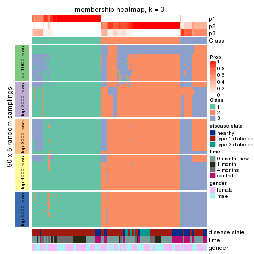
membership_heatmap(res, k = 4)
membership_heatmap(res, k = 5)
membership_heatmap(res, k = 6)
As soon as we have had the classes for columns, we can look for signatures which are significantly different between classes which can be candidate marks for certain classes. Following are the heatmaps for signatures.
Signature heatmaps where rows are scaled:
get_signatures(res, k = 2)
get_signatures(res, k = 3)
get_signatures(res, k = 4)
get_signatures(res, k = 5)
get_signatures(res, k = 6)

Signature heatmaps where rows are not scaled:
get_signatures(res, k = 2, scale_rows = FALSE)
get_signatures(res, k = 3, scale_rows = FALSE)
get_signatures(res, k = 4, scale_rows = FALSE)
get_signatures(res, k = 5, scale_rows = FALSE)
get_signatures(res, k = 6, scale_rows = FALSE)
Compare the overlap of signatures from different k:
compare_signatures(res)
get_signature() returns a data frame invisibly. TO get the list of signatures, the function
call should be assigned to a variable explicitly. In following code, if plot argument is set
to FALSE, no heatmap is plotted while only the differential analysis is performed.
# code only for demonstration
tb = get_signature(res, k = ..., plot = FALSE)
An example of the output of tb is:
#> which_row fdr mean_1 mean_2 scaled_mean_1 scaled_mean_2 km
#> 1 38 0.042760348 8.373488 9.131774 -0.5533452 0.5164555 1
#> 2 40 0.018707592 7.106213 8.469186 -0.6173731 0.5762149 1
#> 3 55 0.019134737 10.221463 11.207825 -0.6159697 0.5749050 1
#> 4 59 0.006059896 5.921854 7.869574 -0.6899429 0.6439467 1
#> 5 60 0.018055526 8.928898 10.211722 -0.6204761 0.5791110 1
#> 6 98 0.009384629 15.714769 14.887706 0.6635654 -0.6193277 2
...
The columns in tb are:
which_row: row indices corresponding to the input matrix.fdr: FDR for the differential test. mean_x: The mean value in group x.scaled_mean_x: The mean value in group x after rows are scaled.km: Row groups if k-means clustering is applied to rows.UMAP plot which shows how samples are separated.
dimension_reduction(res, k = 2, method = "UMAP")
dimension_reduction(res, k = 3, method = "UMAP")
dimension_reduction(res, k = 4, method = "UMAP")
dimension_reduction(res, k = 5, method = "UMAP")
dimension_reduction(res, k = 6, method = "UMAP")
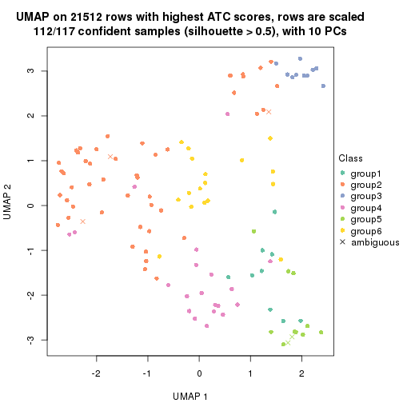
Following heatmap shows how subgroups are split when increasing k:
collect_classes(res)
Test correlation between subgroups and known annotations. If the known annotation is numeric, one-way ANOVA test is applied, and if the known annotation is discrete, chi-squared contingency table test is applied.
test_to_known_factors(res)
#> n disease.state(p) time(p) gender(p) k
#> ATC:pam 117 8.97e-04 5.28e-05 0.8827 2
#> ATC:pam 109 6.37e-06 1.73e-05 0.3110 3
#> ATC:pam 114 2.73e-05 2.21e-05 0.2838 4
#> ATC:pam 86 1.68e-04 7.31e-05 0.2670 5
#> ATC:pam 112 1.14e-04 8.31e-07 0.0604 6
If matrix rows can be associated to genes, consider to use GO_Enrichment(res,
...) to perform function enrichment for the signature genes.
The object with results only for a single top-value method and a single partition method can be extracted as:
res = res_list["ATC", "mclust"]
# you can also extract it by
# res = res_list["ATC:mclust"]
A summary of res and all the functions that can be applied to it:
res
#> A 'ConsensusPartition' object with k = 2, 3, 4, 5, 6.
#> On a matrix with 21512 rows and 117 columns.
#> Top rows (1000, 2000, 3000, 4000, 5000) are extracted by 'ATC' method.
#> Subgroups are detected by 'mclust' method.
#> Performed in total 1250 partitions by row resampling.
#> Best k for subgroups seems to be 4.
#>
#> Following methods can be applied to this 'ConsensusPartition' object:
#> [1] "cola_report" "collect_classes" "collect_plots"
#> [4] "collect_stats" "colnames" "compare_signatures"
#> [7] "consensus_heatmap" "dimension_reduction" "functional_enrichment"
#> [10] "get_anno_col" "get_anno" "get_classes"
#> [13] "get_consensus" "get_matrix" "get_membership"
#> [16] "get_param" "get_signatures" "get_stats"
#> [19] "is_best_k" "is_stable_k" "membership_heatmap"
#> [22] "ncol" "nrow" "plot_ecdf"
#> [25] "rownames" "select_partition_number" "show"
#> [28] "suggest_best_k" "test_to_known_factors"
collect_plots() function collects all the plots made from res for all k (number of partitions)
into one single page to provide an easy and fast comparison between different k.
collect_plots(res)
The plots are:
k and the heatmap of
predicted classes for each k.k.k.k.All the plots in panels can be made by individual functions and they are plotted later in this section.
select_partition_number() produces several plots showing different
statistics for choosing “optimized” k. There are following statistics:
k;k, the area increased is defined as \(A_k - A_{k-1}\).The detailed explanations of these statistics can be found in the cola vignette.
Generally speaking, lower PAC score, higher mean silhouette score or higher
concordance corresponds to better partition. Rand index and Jaccard index
measure how similar the current partition is compared to partition with k-1.
If they are too similar, we won't accept k is better than k-1.
select_partition_number(res)
The numeric values for all these statistics can be obtained by get_stats().
get_stats(res)
#> k 1-PAC mean_silhouette concordance area_increased Rand Jaccard
#> 2 2 0.518 0.846 0.889 0.2838 0.737 0.737
#> 3 3 0.239 0.652 0.734 0.9772 0.564 0.444
#> 4 4 0.522 0.703 0.803 0.2031 0.669 0.386
#> 5 5 0.791 0.830 0.911 0.0673 0.882 0.684
#> 6 6 0.802 0.831 0.900 0.0833 0.855 0.547
suggest_best_k() suggests the best \(k\) based on these statistics. The rules are as follows:
NA.suggest_best_k(res)
#> [1] 4
Following shows the table of the partitions (You need to click the show/hide
code output link to see it). The membership matrix (columns with name p*)
is inferred by
clue::cl_consensus()
function with the SE method. Basically the value in the membership matrix
represents the probability to belong to a certain group. The finall class
label for an item is determined with the group with highest probability it
belongs to.
In get_classes() function, the entropy is calculated from the membership
matrix and the silhouette score is calculated from the consensus matrix.
cbind(get_classes(res, k = 2), get_membership(res, k = 2))
#> class entropy silhouette p1 p2
#> GSM254177 1 0.1633 0.898 0.976 0.024
#> GSM254179 1 0.2603 0.892 0.956 0.044
#> GSM254180 1 0.1633 0.898 0.976 0.024
#> GSM254182 1 0.2236 0.889 0.964 0.036
#> GSM254183 1 0.2236 0.889 0.964 0.036
#> GSM254277 1 0.1184 0.898 0.984 0.016
#> GSM254278 1 0.2778 0.892 0.952 0.048
#> GSM254281 1 0.3114 0.889 0.944 0.056
#> GSM254282 1 0.2603 0.894 0.956 0.044
#> GSM254284 1 0.3584 0.882 0.932 0.068
#> GSM254286 1 0.1184 0.898 0.984 0.016
#> GSM254290 2 0.8144 0.970 0.252 0.748
#> GSM254291 1 0.1184 0.898 0.984 0.016
#> GSM254293 1 0.1633 0.898 0.976 0.024
#> GSM254178 1 0.3584 0.883 0.932 0.068
#> GSM254181 1 0.2236 0.889 0.964 0.036
#> GSM254279 1 0.2778 0.892 0.952 0.048
#> GSM254280 1 0.2778 0.892 0.952 0.048
#> GSM254283 1 0.0672 0.897 0.992 0.008
#> GSM254285 1 0.2778 0.892 0.952 0.048
#> GSM254287 1 0.0938 0.897 0.988 0.012
#> GSM254288 1 0.1843 0.896 0.972 0.028
#> GSM254289 1 0.5946 0.763 0.856 0.144
#> GSM254292 1 0.1414 0.898 0.980 0.020
#> GSM254184 1 0.8016 0.550 0.756 0.244
#> GSM254185 1 0.2778 0.892 0.952 0.048
#> GSM254187 1 0.2778 0.892 0.952 0.048
#> GSM254189 1 0.2778 0.892 0.952 0.048
#> GSM254190 1 0.1184 0.898 0.984 0.016
#> GSM254191 1 0.9988 -0.424 0.520 0.480
#> GSM254192 1 0.2236 0.889 0.964 0.036
#> GSM254193 1 0.3114 0.886 0.944 0.056
#> GSM254199 1 0.2778 0.892 0.952 0.048
#> GSM254203 1 0.3584 0.883 0.932 0.068
#> GSM254206 1 0.3584 0.883 0.932 0.068
#> GSM254210 1 0.4431 0.850 0.908 0.092
#> GSM254211 1 0.3584 0.883 0.932 0.068
#> GSM254215 1 0.2043 0.890 0.968 0.032
#> GSM254218 1 0.3274 0.893 0.940 0.060
#> GSM254230 1 0.3733 0.882 0.928 0.072
#> GSM254236 1 0.2236 0.889 0.964 0.036
#> GSM254244 1 0.8144 0.686 0.748 0.252
#> GSM254247 1 0.1843 0.897 0.972 0.028
#> GSM254248 1 0.3584 0.883 0.932 0.068
#> GSM254254 2 0.8861 0.918 0.304 0.696
#> GSM254257 2 0.8144 0.970 0.252 0.748
#> GSM254258 1 0.2778 0.892 0.952 0.048
#> GSM254261 1 0.2236 0.889 0.964 0.036
#> GSM254264 1 0.2778 0.892 0.952 0.048
#> GSM254186 1 0.2778 0.892 0.952 0.048
#> GSM254188 1 0.2778 0.892 0.952 0.048
#> GSM254194 1 0.2778 0.892 0.952 0.048
#> GSM254195 1 0.3584 0.883 0.932 0.068
#> GSM254196 1 0.1184 0.898 0.984 0.016
#> GSM254200 1 0.2236 0.889 0.964 0.036
#> GSM254209 2 0.9580 0.771 0.380 0.620
#> GSM254214 1 0.9988 -0.472 0.520 0.480
#> GSM254221 1 0.8144 0.686 0.748 0.252
#> GSM254224 1 0.1633 0.897 0.976 0.024
#> GSM254227 1 0.2236 0.889 0.964 0.036
#> GSM254233 1 0.4022 0.878 0.920 0.080
#> GSM254235 1 0.7602 0.718 0.780 0.220
#> GSM254239 1 0.0376 0.897 0.996 0.004
#> GSM254241 1 0.3584 0.882 0.932 0.068
#> GSM254251 1 0.2603 0.892 0.956 0.044
#> GSM254262 1 0.3114 0.877 0.944 0.056
#> GSM254263 1 0.2236 0.889 0.964 0.036
#> GSM254197 1 0.3114 0.886 0.944 0.056
#> GSM254201 1 0.8144 0.686 0.748 0.252
#> GSM254204 1 0.3584 0.883 0.932 0.068
#> GSM254216 1 0.3584 0.882 0.932 0.068
#> GSM254228 1 0.3114 0.886 0.944 0.056
#> GSM254242 1 0.8144 0.686 0.748 0.252
#> GSM254245 1 0.3584 0.883 0.932 0.068
#> GSM254252 1 0.3274 0.886 0.940 0.060
#> GSM254255 1 0.1184 0.897 0.984 0.016
#> GSM254259 1 0.3114 0.886 0.944 0.056
#> GSM254207 1 0.2778 0.890 0.952 0.048
#> GSM254212 2 0.8144 0.970 0.252 0.748
#> GSM254219 1 0.8144 0.686 0.748 0.252
#> GSM254222 1 0.7602 0.635 0.780 0.220
#> GSM254225 2 0.9286 0.861 0.344 0.656
#> GSM254231 1 0.7950 0.693 0.760 0.240
#> GSM254234 2 0.8144 0.970 0.252 0.748
#> GSM254237 2 0.8144 0.970 0.252 0.748
#> GSM254249 1 0.0672 0.898 0.992 0.008
#> GSM254198 2 0.8207 0.960 0.256 0.744
#> GSM254202 1 0.7950 0.693 0.760 0.240
#> GSM254205 1 0.5519 0.830 0.872 0.128
#> GSM254217 2 0.8207 0.968 0.256 0.744
#> GSM254229 1 0.4022 0.867 0.920 0.080
#> GSM254243 1 0.3114 0.886 0.944 0.056
#> GSM254246 1 0.3114 0.886 0.944 0.056
#> GSM254253 1 0.3584 0.882 0.932 0.068
#> GSM254256 1 0.2043 0.896 0.968 0.032
#> GSM254260 1 0.1184 0.897 0.984 0.016
#> GSM254208 1 0.3114 0.889 0.944 0.056
#> GSM254213 2 0.8144 0.970 0.252 0.748
#> GSM254220 1 0.7950 0.693 0.760 0.240
#> GSM254223 1 0.3584 0.882 0.932 0.068
#> GSM254226 1 0.2778 0.890 0.952 0.048
#> GSM254232 1 0.0376 0.897 0.996 0.004
#> GSM254238 1 0.2603 0.891 0.956 0.044
#> GSM254240 1 0.3114 0.886 0.944 0.056
#> GSM254250 1 0.3114 0.886 0.944 0.056
#> GSM254268 2 0.8144 0.970 0.252 0.748
#> GSM254269 2 0.8144 0.970 0.252 0.748
#> GSM254270 1 0.2043 0.891 0.968 0.032
#> GSM254272 2 0.8144 0.970 0.252 0.748
#> GSM254273 2 0.8207 0.968 0.256 0.744
#> GSM254274 1 0.7745 0.589 0.772 0.228
#> GSM254265 1 0.9000 0.322 0.684 0.316
#> GSM254266 2 0.8144 0.970 0.252 0.748
#> GSM254267 1 0.2423 0.887 0.960 0.040
#> GSM254271 2 0.8144 0.970 0.252 0.748
#> GSM254275 1 0.0376 0.897 0.996 0.004
#> GSM254276 2 0.8813 0.925 0.300 0.700
cbind(get_classes(res, k = 3), get_membership(res, k = 3))
#> class entropy silhouette p1 p2 p3
#> GSM254177 1 0.5098 0.645 0.752 0.000 0.248
#> GSM254179 1 0.8624 -0.242 0.476 0.424 0.100
#> GSM254180 1 0.5621 0.569 0.692 0.000 0.308
#> GSM254182 2 0.8714 0.355 0.108 0.484 0.408
#> GSM254183 2 0.8643 0.275 0.108 0.516 0.376
#> GSM254277 1 0.5560 0.581 0.700 0.000 0.300
#> GSM254278 3 0.3551 0.750 0.132 0.000 0.868
#> GSM254281 1 0.7306 0.712 0.684 0.080 0.236
#> GSM254282 1 0.5621 0.569 0.692 0.000 0.308
#> GSM254284 1 0.4945 0.723 0.840 0.104 0.056
#> GSM254286 1 0.7949 0.653 0.608 0.084 0.308
#> GSM254290 2 0.5178 0.810 0.000 0.744 0.256
#> GSM254291 1 0.7974 0.649 0.604 0.084 0.312
#> GSM254293 1 0.5327 0.618 0.728 0.000 0.272
#> GSM254178 1 0.8505 0.677 0.600 0.256 0.144
#> GSM254181 2 0.8693 0.510 0.108 0.496 0.396
#> GSM254279 3 0.3619 0.750 0.136 0.000 0.864
#> GSM254280 3 0.4346 0.765 0.184 0.000 0.816
#> GSM254283 1 0.7844 0.624 0.660 0.120 0.220
#> GSM254285 3 0.4346 0.763 0.184 0.000 0.816
#> GSM254287 2 0.9178 0.284 0.240 0.540 0.220
#> GSM254288 1 0.7620 0.707 0.596 0.348 0.056
#> GSM254289 2 0.8198 0.689 0.100 0.596 0.304
#> GSM254292 1 0.5831 0.669 0.708 0.008 0.284
#> GSM254184 3 0.8465 -0.426 0.088 0.452 0.460
#> GSM254185 3 0.4291 0.765 0.180 0.000 0.820
#> GSM254187 3 0.3551 0.755 0.132 0.000 0.868
#> GSM254189 3 0.6188 0.713 0.216 0.040 0.744
#> GSM254190 1 0.7949 0.653 0.608 0.084 0.308
#> GSM254191 2 0.7749 0.723 0.072 0.616 0.312
#> GSM254192 2 0.8439 0.595 0.096 0.536 0.368
#> GSM254193 1 0.7620 0.707 0.596 0.348 0.056
#> GSM254199 1 0.5621 0.569 0.692 0.000 0.308
#> GSM254203 1 0.7076 0.694 0.684 0.256 0.060
#> GSM254206 1 0.6894 0.696 0.692 0.256 0.052
#> GSM254210 2 0.7248 0.790 0.068 0.676 0.256
#> GSM254211 1 0.3583 0.733 0.900 0.056 0.044
#> GSM254215 3 0.5115 0.755 0.188 0.016 0.796
#> GSM254218 1 0.6762 0.521 0.676 0.036 0.288
#> GSM254230 1 0.2200 0.726 0.940 0.004 0.056
#> GSM254236 3 0.5892 0.644 0.104 0.100 0.796
#> GSM254244 1 0.1529 0.691 0.960 0.000 0.040
#> GSM254247 1 0.0424 0.713 0.992 0.000 0.008
#> GSM254248 1 0.5858 0.655 0.740 0.020 0.240
#> GSM254254 2 0.5992 0.811 0.016 0.716 0.268
#> GSM254257 2 0.5178 0.810 0.000 0.744 0.256
#> GSM254258 3 0.3482 0.749 0.128 0.000 0.872
#> GSM254261 2 0.8204 0.676 0.096 0.588 0.316
#> GSM254264 3 0.2959 0.729 0.100 0.000 0.900
#> GSM254186 3 0.3551 0.750 0.132 0.000 0.868
#> GSM254188 3 0.4733 0.758 0.196 0.004 0.800
#> GSM254194 3 0.4733 0.761 0.196 0.004 0.800
#> GSM254195 1 0.8399 0.681 0.608 0.256 0.136
#> GSM254196 1 0.7901 0.652 0.608 0.080 0.312
#> GSM254200 3 0.5892 0.644 0.104 0.100 0.796
#> GSM254209 2 0.6375 0.812 0.036 0.720 0.244
#> GSM254214 2 0.8939 0.612 0.176 0.560 0.264
#> GSM254221 1 0.1529 0.691 0.960 0.000 0.040
#> GSM254224 1 0.3129 0.727 0.904 0.088 0.008
#> GSM254227 2 0.9627 0.385 0.220 0.452 0.328
#> GSM254233 1 0.1753 0.724 0.952 0.000 0.048
#> GSM254235 1 0.2772 0.708 0.916 0.004 0.080
#> GSM254239 1 0.7620 0.707 0.596 0.348 0.056
#> GSM254241 1 0.3454 0.725 0.888 0.104 0.008
#> GSM254251 3 0.9558 -0.109 0.200 0.356 0.444
#> GSM254262 3 0.8523 -0.402 0.092 0.444 0.464
#> GSM254263 3 0.8579 -0.399 0.096 0.440 0.464
#> GSM254197 1 0.7620 0.707 0.596 0.348 0.056
#> GSM254201 1 0.1529 0.691 0.960 0.000 0.040
#> GSM254204 1 0.7076 0.694 0.684 0.256 0.060
#> GSM254216 1 0.3886 0.729 0.880 0.096 0.024
#> GSM254228 1 0.7600 0.709 0.600 0.344 0.056
#> GSM254242 1 0.1529 0.691 0.960 0.000 0.040
#> GSM254245 1 0.7076 0.694 0.684 0.256 0.060
#> GSM254252 1 0.6526 0.703 0.760 0.112 0.128
#> GSM254255 1 0.4994 0.719 0.836 0.112 0.052
#> GSM254259 1 0.7620 0.707 0.596 0.348 0.056
#> GSM254207 2 0.9469 0.456 0.192 0.464 0.344
#> GSM254212 2 0.5216 0.809 0.000 0.740 0.260
#> GSM254219 1 0.1529 0.691 0.960 0.000 0.040
#> GSM254222 2 0.6723 0.807 0.048 0.704 0.248
#> GSM254225 2 0.5580 0.813 0.008 0.736 0.256
#> GSM254231 1 0.2116 0.694 0.948 0.012 0.040
#> GSM254234 2 0.5178 0.810 0.000 0.744 0.256
#> GSM254237 2 0.5178 0.810 0.000 0.744 0.256
#> GSM254249 1 0.4521 0.676 0.816 0.004 0.180
#> GSM254198 2 0.5817 0.798 0.020 0.744 0.236
#> GSM254202 1 0.1765 0.691 0.956 0.004 0.040
#> GSM254205 1 0.3742 0.707 0.892 0.072 0.036
#> GSM254217 2 0.6335 0.809 0.036 0.724 0.240
#> GSM254229 2 0.7872 0.738 0.112 0.652 0.236
#> GSM254243 1 0.7189 0.730 0.656 0.292 0.052
#> GSM254246 1 0.7620 0.707 0.596 0.348 0.056
#> GSM254253 1 0.3375 0.727 0.892 0.100 0.008
#> GSM254256 1 0.7044 0.663 0.724 0.108 0.168
#> GSM254260 1 0.3295 0.728 0.896 0.096 0.008
#> GSM254208 1 0.3375 0.726 0.892 0.100 0.008
#> GSM254213 2 0.5178 0.810 0.000 0.744 0.256
#> GSM254220 1 0.1765 0.691 0.956 0.004 0.040
#> GSM254223 1 0.5094 0.718 0.832 0.112 0.056
#> GSM254226 2 0.8647 0.643 0.208 0.600 0.192
#> GSM254232 1 0.7548 0.661 0.684 0.112 0.204
#> GSM254238 1 0.7620 0.707 0.596 0.348 0.056
#> GSM254240 1 0.7600 0.709 0.600 0.344 0.056
#> GSM254250 1 0.7417 0.722 0.632 0.312 0.056
#> GSM254268 2 0.5216 0.809 0.000 0.740 0.260
#> GSM254269 2 0.5216 0.809 0.000 0.740 0.260
#> GSM254270 1 0.8894 0.437 0.548 0.152 0.300
#> GSM254272 2 0.5178 0.810 0.000 0.744 0.256
#> GSM254273 2 0.5254 0.810 0.000 0.736 0.264
#> GSM254274 2 0.7032 0.789 0.052 0.676 0.272
#> GSM254265 2 0.6379 0.808 0.032 0.712 0.256
#> GSM254266 2 0.6188 0.775 0.040 0.744 0.216
#> GSM254267 2 0.7479 0.776 0.076 0.660 0.264
#> GSM254271 2 0.5178 0.810 0.000 0.744 0.256
#> GSM254275 1 0.8854 0.602 0.576 0.188 0.236
#> GSM254276 2 0.5580 0.813 0.008 0.736 0.256
cbind(get_classes(res, k = 4), get_membership(res, k = 4))
#> class entropy silhouette p1 p2 p3 p4
#> GSM254177 4 0.5500 0.7914 0.080 0.016 0.148 0.756
#> GSM254179 2 0.4188 0.7272 0.004 0.752 0.000 0.244
#> GSM254180 4 0.5849 0.8004 0.088 0.016 0.168 0.728
#> GSM254182 2 0.4239 0.7612 0.152 0.812 0.032 0.004
#> GSM254183 2 0.4232 0.7587 0.168 0.804 0.024 0.004
#> GSM254277 4 0.6038 0.7997 0.092 0.028 0.152 0.728
#> GSM254278 3 0.0336 0.8279 0.000 0.008 0.992 0.000
#> GSM254281 4 0.6080 0.8054 0.132 0.008 0.156 0.704
#> GSM254282 2 0.8785 0.4242 0.136 0.508 0.224 0.132
#> GSM254284 1 0.6037 0.6525 0.628 0.068 0.000 0.304
#> GSM254286 4 0.7150 0.7500 0.260 0.008 0.152 0.580
#> GSM254290 2 0.0000 0.7966 0.000 1.000 0.000 0.000
#> GSM254291 4 0.7743 0.7351 0.244 0.028 0.172 0.556
#> GSM254293 4 0.5608 0.7912 0.080 0.020 0.148 0.752
#> GSM254178 1 0.0524 0.6786 0.988 0.000 0.008 0.004
#> GSM254181 2 0.4484 0.7511 0.064 0.812 0.120 0.004
#> GSM254279 3 0.0336 0.8279 0.000 0.008 0.992 0.000
#> GSM254280 3 0.2469 0.8203 0.000 0.108 0.892 0.000
#> GSM254283 2 0.4849 0.7415 0.064 0.772 0.000 0.164
#> GSM254285 3 0.1211 0.8364 0.000 0.040 0.960 0.000
#> GSM254287 2 0.4204 0.7523 0.192 0.788 0.000 0.020
#> GSM254288 2 0.5590 0.4711 0.456 0.524 0.000 0.020
#> GSM254289 2 0.3577 0.7679 0.156 0.832 0.012 0.000
#> GSM254292 4 0.5759 0.8038 0.100 0.016 0.144 0.740
#> GSM254184 2 0.6662 0.0301 0.072 0.488 0.436 0.004
#> GSM254185 3 0.1256 0.8355 0.000 0.028 0.964 0.008
#> GSM254187 3 0.0336 0.8279 0.000 0.008 0.992 0.000
#> GSM254189 3 0.6116 0.4993 0.076 0.216 0.692 0.016
#> GSM254190 4 0.7134 0.7477 0.264 0.008 0.148 0.580
#> GSM254191 2 0.4192 0.7610 0.156 0.812 0.028 0.004
#> GSM254192 2 0.4416 0.7612 0.132 0.812 0.052 0.004
#> GSM254193 2 0.5606 0.4287 0.480 0.500 0.000 0.020
#> GSM254199 2 0.6424 0.7233 0.164 0.708 0.052 0.076
#> GSM254203 1 0.0524 0.6786 0.988 0.000 0.008 0.004
#> GSM254206 1 0.1256 0.6834 0.964 0.000 0.008 0.028
#> GSM254210 2 0.0336 0.7965 0.000 0.992 0.008 0.000
#> GSM254211 1 0.4872 0.6885 0.640 0.000 0.004 0.356
#> GSM254215 3 0.3208 0.7968 0.000 0.148 0.848 0.004
#> GSM254218 2 0.5932 0.7174 0.060 0.720 0.028 0.192
#> GSM254230 2 0.7523 0.2103 0.184 0.412 0.000 0.404
#> GSM254236 3 0.3208 0.7968 0.000 0.148 0.848 0.004
#> GSM254244 1 0.4907 0.6810 0.580 0.000 0.000 0.420
#> GSM254247 4 0.2888 0.5620 0.124 0.000 0.004 0.872
#> GSM254248 1 0.5416 0.5348 0.752 0.008 0.084 0.156
#> GSM254254 2 0.1398 0.7906 0.000 0.956 0.040 0.004
#> GSM254257 2 0.0000 0.7966 0.000 1.000 0.000 0.000
#> GSM254258 3 0.0336 0.8279 0.000 0.008 0.992 0.000
#> GSM254261 2 0.4313 0.7582 0.064 0.824 0.108 0.004
#> GSM254264 3 0.0336 0.8279 0.000 0.008 0.992 0.000
#> GSM254186 3 0.0336 0.8279 0.000 0.008 0.992 0.000
#> GSM254188 3 0.3249 0.8007 0.000 0.140 0.852 0.008
#> GSM254194 3 0.1890 0.8338 0.000 0.056 0.936 0.008
#> GSM254195 4 0.7077 0.7143 0.316 0.000 0.148 0.536
#> GSM254196 4 0.7165 0.7509 0.256 0.008 0.156 0.580
#> GSM254200 3 0.3208 0.7968 0.000 0.148 0.848 0.004
#> GSM254209 2 0.0188 0.7972 0.000 0.996 0.000 0.004
#> GSM254214 2 0.1229 0.7990 0.008 0.968 0.004 0.020
#> GSM254221 1 0.4907 0.6886 0.580 0.000 0.000 0.420
#> GSM254224 2 0.5957 0.5697 0.048 0.588 0.000 0.364
#> GSM254227 2 0.3979 0.7693 0.056 0.844 0.096 0.004
#> GSM254233 4 0.2704 0.5556 0.124 0.000 0.000 0.876
#> GSM254235 1 0.4888 0.6919 0.588 0.000 0.000 0.412
#> GSM254239 2 0.5586 0.4774 0.452 0.528 0.000 0.020
#> GSM254241 1 0.5659 0.6700 0.600 0.032 0.000 0.368
#> GSM254251 2 0.4482 0.7494 0.068 0.804 0.128 0.000
#> GSM254262 3 0.6461 0.3870 0.068 0.364 0.564 0.004
#> GSM254263 2 0.7314 -0.0414 0.132 0.448 0.416 0.004
#> GSM254197 1 0.0000 0.6775 1.000 0.000 0.000 0.000
#> GSM254201 1 0.4855 0.6954 0.600 0.000 0.000 0.400
#> GSM254204 1 0.0524 0.6786 0.988 0.000 0.008 0.004
#> GSM254216 2 0.6743 0.4465 0.096 0.512 0.000 0.392
#> GSM254228 1 0.1890 0.6521 0.936 0.056 0.000 0.008
#> GSM254242 1 0.4855 0.6954 0.600 0.000 0.000 0.400
#> GSM254245 1 0.0524 0.6786 0.988 0.000 0.008 0.004
#> GSM254252 2 0.6080 0.6601 0.100 0.664 0.000 0.236
#> GSM254255 2 0.6081 0.6495 0.088 0.652 0.000 0.260
#> GSM254259 1 0.0000 0.6775 1.000 0.000 0.000 0.000
#> GSM254207 2 0.3940 0.7691 0.004 0.824 0.020 0.152
#> GSM254212 2 0.0000 0.7966 0.000 1.000 0.000 0.000
#> GSM254219 1 0.4804 0.6974 0.616 0.000 0.000 0.384
#> GSM254222 2 0.0469 0.7979 0.000 0.988 0.000 0.012
#> GSM254225 2 0.0000 0.7966 0.000 1.000 0.000 0.000
#> GSM254231 1 0.4933 0.6753 0.568 0.000 0.000 0.432
#> GSM254234 2 0.0000 0.7966 0.000 1.000 0.000 0.000
#> GSM254237 2 0.0000 0.7966 0.000 1.000 0.000 0.000
#> GSM254249 2 0.6152 0.6564 0.120 0.668 0.000 0.212
#> GSM254198 2 0.0000 0.7966 0.000 1.000 0.000 0.000
#> GSM254202 1 0.4925 0.6818 0.572 0.000 0.000 0.428
#> GSM254205 1 0.4877 0.6935 0.592 0.000 0.000 0.408
#> GSM254217 2 0.0707 0.7974 0.000 0.980 0.000 0.020
#> GSM254229 2 0.1867 0.7944 0.000 0.928 0.000 0.072
#> GSM254243 1 0.0524 0.6806 0.988 0.008 0.000 0.004
#> GSM254246 1 0.0188 0.6785 0.996 0.004 0.000 0.000
#> GSM254253 1 0.5284 0.6866 0.616 0.016 0.000 0.368
#> GSM254256 2 0.4327 0.7407 0.016 0.768 0.000 0.216
#> GSM254260 2 0.6626 0.5049 0.092 0.544 0.000 0.364
#> GSM254208 2 0.6523 0.5367 0.088 0.564 0.000 0.348
#> GSM254213 2 0.0000 0.7966 0.000 1.000 0.000 0.000
#> GSM254220 1 0.4907 0.6876 0.580 0.000 0.000 0.420
#> GSM254223 2 0.6773 0.5765 0.136 0.588 0.000 0.276
#> GSM254226 2 0.3219 0.7672 0.000 0.836 0.000 0.164
#> GSM254232 2 0.5763 0.6978 0.132 0.712 0.000 0.156
#> GSM254238 2 0.5526 0.5295 0.416 0.564 0.000 0.020
#> GSM254240 1 0.0336 0.6786 0.992 0.008 0.000 0.000
#> GSM254250 1 0.0336 0.6786 0.992 0.008 0.000 0.000
#> GSM254268 2 0.0000 0.7966 0.000 1.000 0.000 0.000
#> GSM254269 2 0.0000 0.7966 0.000 1.000 0.000 0.000
#> GSM254270 2 0.5345 0.7548 0.152 0.764 0.016 0.068
#> GSM254272 2 0.0000 0.7966 0.000 1.000 0.000 0.000
#> GSM254273 2 0.0657 0.7966 0.004 0.984 0.012 0.000
#> GSM254274 2 0.1302 0.7901 0.000 0.956 0.044 0.000
#> GSM254265 2 0.0000 0.7966 0.000 1.000 0.000 0.000
#> GSM254266 2 0.0188 0.7974 0.000 0.996 0.000 0.004
#> GSM254267 2 0.0524 0.7974 0.000 0.988 0.008 0.004
#> GSM254271 2 0.0000 0.7966 0.000 1.000 0.000 0.000
#> GSM254275 2 0.4542 0.7289 0.228 0.752 0.000 0.020
#> GSM254276 2 0.0000 0.7966 0.000 1.000 0.000 0.000
cbind(get_classes(res, k = 5), get_membership(res, k = 5))
#> class entropy silhouette p1 p2 p3 p4 p5
#> GSM254177 5 0.3188 0.849 0.000 0.012 0.028 0.100 0.860
#> GSM254179 2 0.2358 0.872 0.000 0.888 0.000 0.104 0.008
#> GSM254180 5 0.3188 0.849 0.000 0.012 0.028 0.100 0.860
#> GSM254182 2 0.2179 0.898 0.008 0.912 0.008 0.000 0.072
#> GSM254183 2 0.2179 0.898 0.008 0.912 0.008 0.000 0.072
#> GSM254277 5 0.2961 0.852 0.004 0.008 0.016 0.100 0.872
#> GSM254278 3 0.0000 0.864 0.000 0.000 1.000 0.000 0.000
#> GSM254281 5 0.2408 0.852 0.004 0.008 0.000 0.096 0.892
#> GSM254282 5 0.6331 0.226 0.004 0.404 0.028 0.068 0.496
#> GSM254284 4 0.1739 0.855 0.032 0.024 0.000 0.940 0.004
#> GSM254286 5 0.1831 0.829 0.076 0.000 0.004 0.000 0.920
#> GSM254290 2 0.0000 0.920 0.000 1.000 0.000 0.000 0.000
#> GSM254291 5 0.1956 0.829 0.076 0.000 0.008 0.000 0.916
#> GSM254293 5 0.3387 0.845 0.000 0.020 0.028 0.100 0.852
#> GSM254178 1 0.0865 0.983 0.972 0.000 0.000 0.004 0.024
#> GSM254181 2 0.1455 0.911 0.008 0.952 0.032 0.000 0.008
#> GSM254279 3 0.0000 0.864 0.000 0.000 1.000 0.000 0.000
#> GSM254280 3 0.0000 0.864 0.000 0.000 1.000 0.000 0.000
#> GSM254283 2 0.3579 0.741 0.000 0.756 0.000 0.240 0.004
#> GSM254285 3 0.0000 0.864 0.000 0.000 1.000 0.000 0.000
#> GSM254287 2 0.2136 0.882 0.088 0.904 0.000 0.000 0.008
#> GSM254288 2 0.4922 0.736 0.156 0.732 0.000 0.104 0.008
#> GSM254289 2 0.0898 0.917 0.020 0.972 0.000 0.000 0.008
#> GSM254292 5 0.2408 0.852 0.004 0.008 0.000 0.096 0.892
#> GSM254184 3 0.5492 0.302 0.000 0.396 0.536 0.000 0.068
#> GSM254185 3 0.0000 0.864 0.000 0.000 1.000 0.000 0.000
#> GSM254187 3 0.0000 0.864 0.000 0.000 1.000 0.000 0.000
#> GSM254189 3 0.5227 0.443 0.040 0.324 0.624 0.000 0.012
#> GSM254190 5 0.1831 0.829 0.076 0.000 0.004 0.000 0.920
#> GSM254191 2 0.2054 0.899 0.004 0.916 0.008 0.000 0.072
#> GSM254192 2 0.2166 0.897 0.004 0.912 0.012 0.000 0.072
#> GSM254193 2 0.5860 0.575 0.136 0.624 0.000 0.232 0.008
#> GSM254199 2 0.2744 0.882 0.004 0.892 0.024 0.072 0.008
#> GSM254203 1 0.0798 0.985 0.976 0.000 0.000 0.008 0.016
#> GSM254206 1 0.0798 0.985 0.976 0.000 0.000 0.008 0.016
#> GSM254210 2 0.0162 0.920 0.000 0.996 0.004 0.000 0.000
#> GSM254211 4 0.0963 0.857 0.036 0.000 0.000 0.964 0.000
#> GSM254215 3 0.0000 0.864 0.000 0.000 1.000 0.000 0.000
#> GSM254218 2 0.2610 0.882 0.000 0.892 0.028 0.076 0.004
#> GSM254230 4 0.1153 0.857 0.024 0.004 0.000 0.964 0.008
#> GSM254236 3 0.0703 0.848 0.000 0.024 0.976 0.000 0.000
#> GSM254244 4 0.0290 0.861 0.008 0.000 0.000 0.992 0.000
#> GSM254247 4 0.4289 0.546 0.012 0.008 0.000 0.708 0.272
#> GSM254248 4 0.2894 0.802 0.084 0.004 0.000 0.876 0.036
#> GSM254254 2 0.0451 0.919 0.000 0.988 0.008 0.000 0.004
#> GSM254257 2 0.0000 0.920 0.000 1.000 0.000 0.000 0.000
#> GSM254258 3 0.0000 0.864 0.000 0.000 1.000 0.000 0.000
#> GSM254261 2 0.0912 0.916 0.000 0.972 0.016 0.000 0.012
#> GSM254264 3 0.0000 0.864 0.000 0.000 1.000 0.000 0.000
#> GSM254186 3 0.0000 0.864 0.000 0.000 1.000 0.000 0.000
#> GSM254188 3 0.0000 0.864 0.000 0.000 1.000 0.000 0.000
#> GSM254194 3 0.1908 0.785 0.000 0.092 0.908 0.000 0.000
#> GSM254195 5 0.2127 0.806 0.108 0.000 0.000 0.000 0.892
#> GSM254196 5 0.1831 0.829 0.076 0.000 0.004 0.000 0.920
#> GSM254200 3 0.0510 0.855 0.000 0.016 0.984 0.000 0.000
#> GSM254209 2 0.0162 0.920 0.000 0.996 0.000 0.000 0.004
#> GSM254214 2 0.0671 0.919 0.000 0.980 0.000 0.016 0.004
#> GSM254221 4 0.0290 0.861 0.008 0.000 0.000 0.992 0.000
#> GSM254224 2 0.2513 0.865 0.000 0.876 0.000 0.116 0.008
#> GSM254227 2 0.0807 0.919 0.000 0.976 0.012 0.012 0.000
#> GSM254233 4 0.4865 0.147 0.012 0.008 0.000 0.552 0.428
#> GSM254235 4 0.0290 0.861 0.008 0.000 0.000 0.992 0.000
#> GSM254239 2 0.2997 0.831 0.148 0.840 0.000 0.000 0.012
#> GSM254241 4 0.1739 0.855 0.032 0.024 0.000 0.940 0.004
#> GSM254251 2 0.2228 0.894 0.020 0.916 0.056 0.000 0.008
#> GSM254262 3 0.3861 0.715 0.000 0.128 0.804 0.000 0.068
#> GSM254263 3 0.5490 0.368 0.000 0.372 0.556 0.000 0.072
#> GSM254197 1 0.0000 0.988 1.000 0.000 0.000 0.000 0.000
#> GSM254201 4 0.0290 0.861 0.008 0.000 0.000 0.992 0.000
#> GSM254204 1 0.0798 0.985 0.976 0.000 0.000 0.008 0.016
#> GSM254216 4 0.1597 0.853 0.024 0.020 0.000 0.948 0.008
#> GSM254228 4 0.4294 0.172 0.468 0.000 0.000 0.532 0.000
#> GSM254242 4 0.2852 0.734 0.172 0.000 0.000 0.828 0.000
#> GSM254245 1 0.0798 0.985 0.976 0.000 0.000 0.008 0.016
#> GSM254252 4 0.4884 0.206 0.016 0.392 0.000 0.584 0.008
#> GSM254255 2 0.4064 0.692 0.004 0.716 0.000 0.272 0.008
#> GSM254259 1 0.0000 0.988 1.000 0.000 0.000 0.000 0.000
#> GSM254207 2 0.1502 0.903 0.000 0.940 0.000 0.056 0.004
#> GSM254212 2 0.0000 0.920 0.000 1.000 0.000 0.000 0.000
#> GSM254219 4 0.3177 0.694 0.208 0.000 0.000 0.792 0.000
#> GSM254222 2 0.0324 0.920 0.000 0.992 0.000 0.004 0.004
#> GSM254225 2 0.0162 0.920 0.000 0.996 0.000 0.000 0.004
#> GSM254231 4 0.0290 0.861 0.008 0.000 0.000 0.992 0.000
#> GSM254234 2 0.0000 0.920 0.000 1.000 0.000 0.000 0.000
#> GSM254237 2 0.0000 0.920 0.000 1.000 0.000 0.000 0.000
#> GSM254249 2 0.4298 0.551 0.000 0.640 0.000 0.352 0.008
#> GSM254198 2 0.0324 0.920 0.000 0.992 0.000 0.004 0.004
#> GSM254202 4 0.0290 0.861 0.008 0.000 0.000 0.992 0.000
#> GSM254205 4 0.0290 0.861 0.008 0.000 0.000 0.992 0.000
#> GSM254217 2 0.0162 0.920 0.000 0.996 0.000 0.000 0.004
#> GSM254229 2 0.0451 0.920 0.000 0.988 0.000 0.008 0.004
#> GSM254243 1 0.0000 0.988 1.000 0.000 0.000 0.000 0.000
#> GSM254246 1 0.0000 0.988 1.000 0.000 0.000 0.000 0.000
#> GSM254253 4 0.1646 0.857 0.032 0.020 0.000 0.944 0.004
#> GSM254256 2 0.2304 0.877 0.000 0.892 0.000 0.100 0.008
#> GSM254260 2 0.4353 0.587 0.004 0.660 0.000 0.328 0.008
#> GSM254208 4 0.1843 0.829 0.008 0.052 0.000 0.932 0.008
#> GSM254213 2 0.0000 0.920 0.000 1.000 0.000 0.000 0.000
#> GSM254220 4 0.0290 0.861 0.008 0.000 0.000 0.992 0.000
#> GSM254223 4 0.2251 0.825 0.024 0.052 0.000 0.916 0.008
#> GSM254226 2 0.1638 0.899 0.000 0.932 0.000 0.064 0.004
#> GSM254232 2 0.3756 0.728 0.000 0.744 0.000 0.248 0.008
#> GSM254238 2 0.5585 0.602 0.120 0.644 0.000 0.232 0.004
#> GSM254240 1 0.0000 0.988 1.000 0.000 0.000 0.000 0.000
#> GSM254250 1 0.0000 0.988 1.000 0.000 0.000 0.000 0.000
#> GSM254268 2 0.0000 0.920 0.000 1.000 0.000 0.000 0.000
#> GSM254269 2 0.0000 0.920 0.000 1.000 0.000 0.000 0.000
#> GSM254270 2 0.1662 0.901 0.004 0.936 0.000 0.056 0.004
#> GSM254272 2 0.0000 0.920 0.000 1.000 0.000 0.000 0.000
#> GSM254273 2 0.0162 0.920 0.000 0.996 0.000 0.000 0.004
#> GSM254274 2 0.0000 0.920 0.000 1.000 0.000 0.000 0.000
#> GSM254265 2 0.0000 0.920 0.000 1.000 0.000 0.000 0.000
#> GSM254266 2 0.0000 0.920 0.000 1.000 0.000 0.000 0.000
#> GSM254267 2 0.0324 0.920 0.000 0.992 0.004 0.004 0.000
#> GSM254271 2 0.0000 0.920 0.000 1.000 0.000 0.000 0.000
#> GSM254275 2 0.2237 0.883 0.084 0.904 0.000 0.008 0.004
#> GSM254276 2 0.0000 0.920 0.000 1.000 0.000 0.000 0.000
cbind(get_classes(res, k = 6), get_membership(res, k = 6))
#> class entropy silhouette p1 p2 p3 p4 p5 p6
#> GSM254177 6 0.3150 0.8546 0.000 0.040 0.000 0.036 0.068 0.856
#> GSM254179 2 0.3618 0.7071 0.000 0.776 0.000 0.176 0.048 0.000
#> GSM254180 6 0.3072 0.8427 0.000 0.084 0.000 0.036 0.024 0.856
#> GSM254182 2 0.3125 0.8396 0.004 0.860 0.016 0.088 0.008 0.024
#> GSM254183 2 0.3125 0.8396 0.004 0.860 0.016 0.088 0.008 0.024
#> GSM254277 6 0.3072 0.8427 0.000 0.084 0.000 0.036 0.024 0.856
#> GSM254278 3 0.0000 0.9388 0.000 0.000 1.000 0.000 0.000 0.000
#> GSM254281 6 0.2706 0.8410 0.000 0.000 0.000 0.036 0.104 0.860
#> GSM254282 6 0.3292 0.8225 0.000 0.108 0.000 0.032 0.024 0.836
#> GSM254284 4 0.3081 0.6668 0.000 0.004 0.000 0.776 0.220 0.000
#> GSM254286 6 0.0725 0.8488 0.012 0.000 0.000 0.012 0.000 0.976
#> GSM254290 2 0.0000 0.9118 0.000 1.000 0.000 0.000 0.000 0.000
#> GSM254291 6 0.0964 0.8512 0.012 0.004 0.000 0.016 0.000 0.968
#> GSM254293 6 0.3136 0.8495 0.000 0.072 0.000 0.036 0.036 0.856
#> GSM254178 1 0.0146 0.9970 0.996 0.000 0.000 0.000 0.004 0.000
#> GSM254181 2 0.1427 0.8958 0.004 0.952 0.024 0.004 0.004 0.012
#> GSM254279 3 0.0000 0.9388 0.000 0.000 1.000 0.000 0.000 0.000
#> GSM254280 3 0.0000 0.9388 0.000 0.000 1.000 0.000 0.000 0.000
#> GSM254283 4 0.2798 0.7916 0.000 0.112 0.000 0.852 0.036 0.000
#> GSM254285 3 0.0000 0.9388 0.000 0.000 1.000 0.000 0.000 0.000
#> GSM254287 2 0.3955 0.6766 0.032 0.724 0.000 0.240 0.000 0.004
#> GSM254288 4 0.3722 0.6511 0.036 0.196 0.000 0.764 0.000 0.004
#> GSM254289 2 0.0551 0.9090 0.000 0.984 0.000 0.004 0.004 0.008
#> GSM254292 6 0.2706 0.8410 0.000 0.000 0.000 0.036 0.104 0.860
#> GSM254184 2 0.3969 0.7350 0.004 0.764 0.192 0.020 0.004 0.016
#> GSM254185 3 0.0000 0.9388 0.000 0.000 1.000 0.000 0.000 0.000
#> GSM254187 3 0.0000 0.9388 0.000 0.000 1.000 0.000 0.000 0.000
#> GSM254189 3 0.4800 0.2139 0.004 0.416 0.548 0.016 0.008 0.008
#> GSM254190 6 0.0725 0.8488 0.012 0.000 0.000 0.012 0.000 0.976
#> GSM254191 2 0.3125 0.8396 0.004 0.860 0.016 0.088 0.008 0.024
#> GSM254192 2 0.3278 0.8382 0.004 0.860 0.052 0.052 0.008 0.024
#> GSM254193 4 0.2345 0.7348 0.036 0.056 0.000 0.900 0.004 0.004
#> GSM254199 2 0.5196 0.2414 0.000 0.552 0.000 0.048 0.024 0.376
#> GSM254203 1 0.0146 0.9970 0.996 0.000 0.000 0.000 0.004 0.000
#> GSM254206 1 0.0146 0.9970 0.996 0.000 0.000 0.000 0.004 0.000
#> GSM254210 2 0.0260 0.9112 0.000 0.992 0.000 0.008 0.000 0.000
#> GSM254211 5 0.0717 0.9461 0.016 0.000 0.000 0.008 0.976 0.000
#> GSM254215 3 0.0000 0.9388 0.000 0.000 1.000 0.000 0.000 0.000
#> GSM254218 2 0.1826 0.8743 0.000 0.924 0.000 0.052 0.020 0.004
#> GSM254230 4 0.2846 0.7909 0.000 0.084 0.000 0.856 0.060 0.000
#> GSM254236 3 0.0146 0.9363 0.000 0.000 0.996 0.004 0.000 0.000
#> GSM254244 5 0.0458 0.9478 0.000 0.000 0.000 0.016 0.984 0.000
#> GSM254247 6 0.3979 0.7096 0.000 0.000 0.000 0.036 0.256 0.708
#> GSM254248 6 0.5422 0.5884 0.012 0.004 0.000 0.232 0.128 0.624
#> GSM254254 2 0.1368 0.8984 0.004 0.956 0.016 0.004 0.008 0.012
#> GSM254257 2 0.0000 0.9118 0.000 1.000 0.000 0.000 0.000 0.000
#> GSM254258 3 0.0000 0.9388 0.000 0.000 1.000 0.000 0.000 0.000
#> GSM254261 2 0.1057 0.9036 0.004 0.968 0.008 0.004 0.004 0.012
#> GSM254264 3 0.0000 0.9388 0.000 0.000 1.000 0.000 0.000 0.000
#> GSM254186 3 0.0000 0.9388 0.000 0.000 1.000 0.000 0.000 0.000
#> GSM254188 3 0.0000 0.9388 0.000 0.000 1.000 0.000 0.000 0.000
#> GSM254194 3 0.2841 0.7442 0.004 0.156 0.832 0.004 0.004 0.000
#> GSM254195 6 0.1434 0.8466 0.024 0.000 0.000 0.020 0.008 0.948
#> GSM254196 6 0.0725 0.8488 0.012 0.000 0.000 0.012 0.000 0.976
#> GSM254200 3 0.0146 0.9363 0.000 0.000 0.996 0.004 0.000 0.000
#> GSM254209 2 0.0260 0.9112 0.000 0.992 0.000 0.008 0.000 0.000
#> GSM254214 4 0.3607 0.5737 0.000 0.348 0.000 0.652 0.000 0.000
#> GSM254221 5 0.0363 0.9507 0.000 0.000 0.000 0.012 0.988 0.000
#> GSM254224 4 0.2945 0.7665 0.000 0.156 0.000 0.824 0.020 0.000
#> GSM254227 2 0.0935 0.8991 0.000 0.964 0.000 0.032 0.004 0.000
#> GSM254233 6 0.4443 0.5252 0.000 0.000 0.000 0.036 0.368 0.596
#> GSM254235 5 0.0717 0.9461 0.016 0.000 0.000 0.008 0.976 0.000
#> GSM254239 4 0.4662 0.0121 0.032 0.468 0.000 0.496 0.000 0.004
#> GSM254241 4 0.3265 0.6303 0.000 0.004 0.000 0.748 0.248 0.000
#> GSM254251 2 0.2094 0.8826 0.004 0.920 0.044 0.020 0.004 0.008
#> GSM254262 2 0.4370 0.6489 0.004 0.704 0.252 0.020 0.004 0.016
#> GSM254263 2 0.4576 0.5832 0.004 0.664 0.292 0.020 0.004 0.016
#> GSM254197 1 0.0291 0.9976 0.992 0.000 0.000 0.004 0.004 0.000
#> GSM254201 5 0.0405 0.9512 0.004 0.000 0.000 0.008 0.988 0.000
#> GSM254204 1 0.0146 0.9970 0.996 0.000 0.000 0.000 0.004 0.000
#> GSM254216 4 0.2320 0.7465 0.000 0.004 0.000 0.864 0.132 0.000
#> GSM254228 4 0.3520 0.6628 0.188 0.000 0.000 0.776 0.036 0.000
#> GSM254242 5 0.0713 0.9334 0.028 0.000 0.000 0.000 0.972 0.000
#> GSM254245 1 0.0363 0.9906 0.988 0.000 0.000 0.000 0.012 0.000
#> GSM254252 4 0.2712 0.7840 0.000 0.048 0.000 0.864 0.088 0.000
#> GSM254255 4 0.2747 0.7926 0.000 0.096 0.000 0.860 0.044 0.000
#> GSM254259 1 0.0291 0.9976 0.992 0.000 0.000 0.004 0.004 0.000
#> GSM254207 2 0.0837 0.9062 0.000 0.972 0.004 0.020 0.004 0.000
#> GSM254212 2 0.0260 0.9112 0.000 0.992 0.000 0.008 0.000 0.000
#> GSM254219 5 0.0713 0.9334 0.028 0.000 0.000 0.000 0.972 0.000
#> GSM254222 2 0.0260 0.9112 0.000 0.992 0.000 0.008 0.000 0.000
#> GSM254225 2 0.0260 0.9112 0.000 0.992 0.000 0.008 0.000 0.000
#> GSM254231 5 0.0363 0.9507 0.000 0.000 0.000 0.012 0.988 0.000
#> GSM254234 2 0.0146 0.9118 0.000 0.996 0.000 0.004 0.000 0.000
#> GSM254237 2 0.0146 0.9118 0.000 0.996 0.000 0.004 0.000 0.000
#> GSM254249 4 0.2494 0.7598 0.000 0.016 0.000 0.864 0.120 0.000
#> GSM254198 2 0.0260 0.9112 0.000 0.992 0.000 0.008 0.000 0.000
#> GSM254202 5 0.0363 0.9507 0.000 0.000 0.000 0.012 0.988 0.000
#> GSM254205 5 0.0405 0.9512 0.004 0.000 0.000 0.008 0.988 0.000
#> GSM254217 2 0.3578 0.3926 0.000 0.660 0.000 0.340 0.000 0.000
#> GSM254229 2 0.0547 0.9074 0.000 0.980 0.000 0.020 0.000 0.000
#> GSM254243 1 0.0291 0.9976 0.992 0.000 0.000 0.004 0.004 0.000
#> GSM254246 1 0.0291 0.9976 0.992 0.000 0.000 0.004 0.004 0.000
#> GSM254253 5 0.3699 0.4494 0.000 0.004 0.000 0.336 0.660 0.000
#> GSM254256 4 0.2667 0.7827 0.000 0.128 0.000 0.852 0.020 0.000
#> GSM254260 4 0.2812 0.7827 0.000 0.048 0.000 0.856 0.096 0.000
#> GSM254208 4 0.2320 0.7465 0.000 0.004 0.000 0.864 0.132 0.000
#> GSM254213 2 0.0000 0.9118 0.000 1.000 0.000 0.000 0.000 0.000
#> GSM254220 5 0.0405 0.9512 0.004 0.000 0.000 0.008 0.988 0.000
#> GSM254223 4 0.2697 0.7818 0.000 0.044 0.000 0.864 0.092 0.000
#> GSM254226 2 0.0909 0.9017 0.000 0.968 0.000 0.020 0.012 0.000
#> GSM254232 4 0.2633 0.7926 0.000 0.104 0.000 0.864 0.032 0.000
#> GSM254238 4 0.4159 0.6948 0.044 0.204 0.000 0.740 0.008 0.004
#> GSM254240 1 0.0291 0.9976 0.992 0.000 0.000 0.004 0.004 0.000
#> GSM254250 1 0.0291 0.9976 0.992 0.000 0.000 0.004 0.004 0.000
#> GSM254268 2 0.0000 0.9118 0.000 1.000 0.000 0.000 0.000 0.000
#> GSM254269 2 0.0000 0.9118 0.000 1.000 0.000 0.000 0.000 0.000
#> GSM254270 2 0.3398 0.6059 0.000 0.740 0.000 0.252 0.008 0.000
#> GSM254272 2 0.0000 0.9118 0.000 1.000 0.000 0.000 0.000 0.000
#> GSM254273 2 0.0146 0.9116 0.000 0.996 0.000 0.000 0.000 0.004
#> GSM254274 2 0.0146 0.9116 0.000 0.996 0.000 0.000 0.000 0.004
#> GSM254265 2 0.0000 0.9118 0.000 1.000 0.000 0.000 0.000 0.000
#> GSM254266 2 0.0363 0.9103 0.000 0.988 0.000 0.012 0.000 0.000
#> GSM254267 2 0.0146 0.9118 0.000 0.996 0.000 0.004 0.000 0.000
#> GSM254271 2 0.0000 0.9118 0.000 1.000 0.000 0.000 0.000 0.000
#> GSM254275 4 0.4260 0.2337 0.016 0.472 0.000 0.512 0.000 0.000
#> GSM254276 2 0.0260 0.9112 0.000 0.992 0.000 0.008 0.000 0.000
Heatmaps for the consensus matrix. It visualizes the probability of two samples to be in a same group.
consensus_heatmap(res, k = 2)
consensus_heatmap(res, k = 3)
consensus_heatmap(res, k = 4)
consensus_heatmap(res, k = 5)
consensus_heatmap(res, k = 6)
Heatmaps for the membership of samples in all partitions to see how consistent they are:
membership_heatmap(res, k = 2)
membership_heatmap(res, k = 3)
membership_heatmap(res, k = 4)
membership_heatmap(res, k = 5)
membership_heatmap(res, k = 6)
As soon as we have had the classes for columns, we can look for signatures which are significantly different between classes which can be candidate marks for certain classes. Following are the heatmaps for signatures.
Signature heatmaps where rows are scaled:
get_signatures(res, k = 2)
get_signatures(res, k = 3)
get_signatures(res, k = 4)
get_signatures(res, k = 5)
get_signatures(res, k = 6)
Signature heatmaps where rows are not scaled:
get_signatures(res, k = 2, scale_rows = FALSE)
get_signatures(res, k = 3, scale_rows = FALSE)
get_signatures(res, k = 4, scale_rows = FALSE)
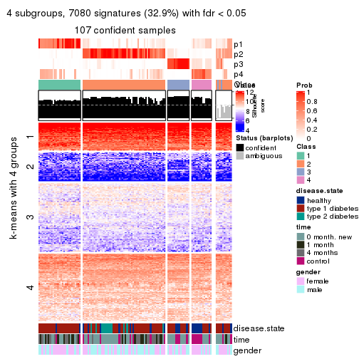
get_signatures(res, k = 5, scale_rows = FALSE)
get_signatures(res, k = 6, scale_rows = FALSE)
Compare the overlap of signatures from different k:
compare_signatures(res)
get_signature() returns a data frame invisibly. TO get the list of signatures, the function
call should be assigned to a variable explicitly. In following code, if plot argument is set
to FALSE, no heatmap is plotted while only the differential analysis is performed.
# code only for demonstration
tb = get_signature(res, k = ..., plot = FALSE)
An example of the output of tb is:
#> which_row fdr mean_1 mean_2 scaled_mean_1 scaled_mean_2 km
#> 1 38 0.042760348 8.373488 9.131774 -0.5533452 0.5164555 1
#> 2 40 0.018707592 7.106213 8.469186 -0.6173731 0.5762149 1
#> 3 55 0.019134737 10.221463 11.207825 -0.6159697 0.5749050 1
#> 4 59 0.006059896 5.921854 7.869574 -0.6899429 0.6439467 1
#> 5 60 0.018055526 8.928898 10.211722 -0.6204761 0.5791110 1
#> 6 98 0.009384629 15.714769 14.887706 0.6635654 -0.6193277 2
...
The columns in tb are:
which_row: row indices corresponding to the input matrix.fdr: FDR for the differential test. mean_x: The mean value in group x.scaled_mean_x: The mean value in group x after rows are scaled.km: Row groups if k-means clustering is applied to rows.UMAP plot which shows how samples are separated.
dimension_reduction(res, k = 2, method = "UMAP")
dimension_reduction(res, k = 3, method = "UMAP")
dimension_reduction(res, k = 4, method = "UMAP")
dimension_reduction(res, k = 5, method = "UMAP")
dimension_reduction(res, k = 6, method = "UMAP")
Following heatmap shows how subgroups are split when increasing k:
collect_classes(res)
Test correlation between subgroups and known annotations. If the known annotation is numeric, one-way ANOVA test is applied, and if the known annotation is discrete, chi-squared contingency table test is applied.
test_to_known_factors(res)
#> n disease.state(p) time(p) gender(p) k
#> ATC:mclust 114 1.70e-05 3.48e-01 0.754 2
#> ATC:mclust 106 1.06e-04 2.31e-02 0.462 3
#> ATC:mclust 107 2.95e-05 8.93e-05 0.261 4
#> ATC:mclust 110 1.16e-05 6.10e-05 0.318 5
#> ATC:mclust 111 2.56e-05 7.28e-05 0.458 6
If matrix rows can be associated to genes, consider to use GO_Enrichment(res,
...) to perform function enrichment for the signature genes.
The object with results only for a single top-value method and a single partition method can be extracted as:
res = res_list["ATC", "NMF"]
# you can also extract it by
# res = res_list["ATC:NMF"]
A summary of res and all the functions that can be applied to it:
res
#> A 'ConsensusPartition' object with k = 2, 3, 4, 5, 6.
#> On a matrix with 21512 rows and 117 columns.
#> Top rows (1000, 2000, 3000, 4000, 5000) are extracted by 'ATC' method.
#> Subgroups are detected by 'NMF' method.
#> Performed in total 1250 partitions by row resampling.
#> Best k for subgroups seems to be 2.
#>
#> Following methods can be applied to this 'ConsensusPartition' object:
#> [1] "cola_report" "collect_classes" "collect_plots"
#> [4] "collect_stats" "colnames" "compare_signatures"
#> [7] "consensus_heatmap" "dimension_reduction" "functional_enrichment"
#> [10] "get_anno_col" "get_anno" "get_classes"
#> [13] "get_consensus" "get_matrix" "get_membership"
#> [16] "get_param" "get_signatures" "get_stats"
#> [19] "is_best_k" "is_stable_k" "membership_heatmap"
#> [22] "ncol" "nrow" "plot_ecdf"
#> [25] "rownames" "select_partition_number" "show"
#> [28] "suggest_best_k" "test_to_known_factors"
collect_plots() function collects all the plots made from res for all k (number of partitions)
into one single page to provide an easy and fast comparison between different k.
collect_plots(res)
The plots are:
k and the heatmap of
predicted classes for each k.k.k.k.All the plots in panels can be made by individual functions and they are plotted later in this section.
select_partition_number() produces several plots showing different
statistics for choosing “optimized” k. There are following statistics:
k;k, the area increased is defined as \(A_k - A_{k-1}\).The detailed explanations of these statistics can be found in the cola vignette.
Generally speaking, lower PAC score, higher mean silhouette score or higher
concordance corresponds to better partition. Rand index and Jaccard index
measure how similar the current partition is compared to partition with k-1.
If they are too similar, we won't accept k is better than k-1.
select_partition_number(res)
The numeric values for all these statistics can be obtained by get_stats().
get_stats(res)
#> k 1-PAC mean_silhouette concordance area_increased Rand Jaccard
#> 2 2 0.929 0.933 0.973 0.4753 0.523 0.523
#> 3 3 0.493 0.593 0.803 0.3428 0.797 0.632
#> 4 4 0.485 0.600 0.795 0.1141 0.699 0.374
#> 5 5 0.520 0.532 0.722 0.0950 0.869 0.590
#> 6 6 0.604 0.567 0.742 0.0516 0.834 0.409
suggest_best_k() suggests the best \(k\) based on these statistics. The rules are as follows:
NA.suggest_best_k(res)
#> [1] 2
Following shows the table of the partitions (You need to click the show/hide
code output link to see it). The membership matrix (columns with name p*)
is inferred by
clue::cl_consensus()
function with the SE method. Basically the value in the membership matrix
represents the probability to belong to a certain group. The finall class
label for an item is determined with the group with highest probability it
belongs to.
In get_classes() function, the entropy is calculated from the membership
matrix and the silhouette score is calculated from the consensus matrix.
cbind(get_classes(res, k = 2), get_membership(res, k = 2))
#> class entropy silhouette p1 p2
#> GSM254177 2 0.0000 0.9768 0.000 1.000
#> GSM254179 2 0.0000 0.9768 0.000 1.000
#> GSM254180 2 0.0000 0.9768 0.000 1.000
#> GSM254182 2 0.0000 0.9768 0.000 1.000
#> GSM254183 2 0.0000 0.9768 0.000 1.000
#> GSM254277 2 0.4815 0.8730 0.104 0.896
#> GSM254278 2 0.0000 0.9768 0.000 1.000
#> GSM254281 1 0.6801 0.7831 0.820 0.180
#> GSM254282 2 0.0000 0.9768 0.000 1.000
#> GSM254284 1 0.0000 0.9607 1.000 0.000
#> GSM254286 2 0.0000 0.9768 0.000 1.000
#> GSM254290 2 0.0000 0.9768 0.000 1.000
#> GSM254291 2 0.0000 0.9768 0.000 1.000
#> GSM254293 2 0.0000 0.9768 0.000 1.000
#> GSM254178 1 0.0000 0.9607 1.000 0.000
#> GSM254181 2 0.0000 0.9768 0.000 1.000
#> GSM254279 2 0.0000 0.9768 0.000 1.000
#> GSM254280 2 0.0000 0.9768 0.000 1.000
#> GSM254283 1 0.3584 0.9083 0.932 0.068
#> GSM254285 2 0.0000 0.9768 0.000 1.000
#> GSM254287 2 0.4161 0.8958 0.084 0.916
#> GSM254288 1 0.0000 0.9607 1.000 0.000
#> GSM254289 2 0.0000 0.9768 0.000 1.000
#> GSM254292 2 1.0000 -0.0325 0.496 0.504
#> GSM254184 2 0.0000 0.9768 0.000 1.000
#> GSM254185 2 0.0000 0.9768 0.000 1.000
#> GSM254187 2 0.0000 0.9768 0.000 1.000
#> GSM254189 2 0.0000 0.9768 0.000 1.000
#> GSM254190 2 0.0000 0.9768 0.000 1.000
#> GSM254191 2 0.0000 0.9768 0.000 1.000
#> GSM254192 2 0.0000 0.9768 0.000 1.000
#> GSM254193 1 0.0000 0.9607 1.000 0.000
#> GSM254199 2 0.0000 0.9768 0.000 1.000
#> GSM254203 1 0.0000 0.9607 1.000 0.000
#> GSM254206 1 0.0000 0.9607 1.000 0.000
#> GSM254210 2 0.0000 0.9768 0.000 1.000
#> GSM254211 1 0.0000 0.9607 1.000 0.000
#> GSM254215 2 0.0000 0.9768 0.000 1.000
#> GSM254218 2 0.0000 0.9768 0.000 1.000
#> GSM254230 1 0.3274 0.9153 0.940 0.060
#> GSM254236 2 0.0000 0.9768 0.000 1.000
#> GSM254244 1 0.0000 0.9607 1.000 0.000
#> GSM254247 1 0.9608 0.3973 0.616 0.384
#> GSM254248 1 0.0000 0.9607 1.000 0.000
#> GSM254254 2 0.0000 0.9768 0.000 1.000
#> GSM254257 2 0.0000 0.9768 0.000 1.000
#> GSM254258 2 0.0000 0.9768 0.000 1.000
#> GSM254261 2 0.0000 0.9768 0.000 1.000
#> GSM254264 2 0.0000 0.9768 0.000 1.000
#> GSM254186 2 0.0000 0.9768 0.000 1.000
#> GSM254188 2 0.0000 0.9768 0.000 1.000
#> GSM254194 2 0.0000 0.9768 0.000 1.000
#> GSM254195 1 0.0000 0.9607 1.000 0.000
#> GSM254196 2 0.0000 0.9768 0.000 1.000
#> GSM254200 2 0.0000 0.9768 0.000 1.000
#> GSM254209 2 0.0000 0.9768 0.000 1.000
#> GSM254214 1 0.7674 0.7205 0.776 0.224
#> GSM254221 1 0.0000 0.9607 1.000 0.000
#> GSM254224 2 0.4298 0.8914 0.088 0.912
#> GSM254227 2 0.0000 0.9768 0.000 1.000
#> GSM254233 1 0.1184 0.9500 0.984 0.016
#> GSM254235 1 0.0000 0.9607 1.000 0.000
#> GSM254239 2 0.5629 0.8383 0.132 0.868
#> GSM254241 1 0.0000 0.9607 1.000 0.000
#> GSM254251 2 0.0000 0.9768 0.000 1.000
#> GSM254262 2 0.0000 0.9768 0.000 1.000
#> GSM254263 2 0.0000 0.9768 0.000 1.000
#> GSM254197 1 0.0000 0.9607 1.000 0.000
#> GSM254201 1 0.0000 0.9607 1.000 0.000
#> GSM254204 1 0.0000 0.9607 1.000 0.000
#> GSM254216 1 0.0000 0.9607 1.000 0.000
#> GSM254228 1 0.0000 0.9607 1.000 0.000
#> GSM254242 1 0.0000 0.9607 1.000 0.000
#> GSM254245 1 0.0000 0.9607 1.000 0.000
#> GSM254252 1 0.0000 0.9607 1.000 0.000
#> GSM254255 1 0.3584 0.9083 0.932 0.068
#> GSM254259 1 0.0000 0.9607 1.000 0.000
#> GSM254207 2 0.0000 0.9768 0.000 1.000
#> GSM254212 2 0.0000 0.9768 0.000 1.000
#> GSM254219 1 0.0000 0.9607 1.000 0.000
#> GSM254222 2 0.0000 0.9768 0.000 1.000
#> GSM254225 2 0.0000 0.9768 0.000 1.000
#> GSM254231 1 0.0000 0.9607 1.000 0.000
#> GSM254234 2 0.0000 0.9768 0.000 1.000
#> GSM254237 2 0.0000 0.9768 0.000 1.000
#> GSM254249 1 0.7299 0.7506 0.796 0.204
#> GSM254198 2 0.0000 0.9768 0.000 1.000
#> GSM254202 1 0.0000 0.9607 1.000 0.000
#> GSM254205 1 0.0000 0.9607 1.000 0.000
#> GSM254217 2 0.2236 0.9441 0.036 0.964
#> GSM254229 2 0.0000 0.9768 0.000 1.000
#> GSM254243 1 0.0000 0.9607 1.000 0.000
#> GSM254246 1 0.0000 0.9607 1.000 0.000
#> GSM254253 1 0.0000 0.9607 1.000 0.000
#> GSM254256 2 0.8813 0.5613 0.300 0.700
#> GSM254260 2 0.9000 0.5273 0.316 0.684
#> GSM254208 1 0.0672 0.9557 0.992 0.008
#> GSM254213 2 0.0000 0.9768 0.000 1.000
#> GSM254220 1 0.0000 0.9607 1.000 0.000
#> GSM254223 1 0.0000 0.9607 1.000 0.000
#> GSM254226 2 0.0000 0.9768 0.000 1.000
#> GSM254232 1 0.0376 0.9583 0.996 0.004
#> GSM254238 1 0.0000 0.9607 1.000 0.000
#> GSM254240 1 0.0000 0.9607 1.000 0.000
#> GSM254250 1 0.0000 0.9607 1.000 0.000
#> GSM254268 2 0.0000 0.9768 0.000 1.000
#> GSM254269 2 0.0000 0.9768 0.000 1.000
#> GSM254270 2 0.0000 0.9768 0.000 1.000
#> GSM254272 2 0.0000 0.9768 0.000 1.000
#> GSM254273 2 0.0000 0.9768 0.000 1.000
#> GSM254274 2 0.0000 0.9768 0.000 1.000
#> GSM254265 2 0.0000 0.9768 0.000 1.000
#> GSM254266 2 0.0000 0.9768 0.000 1.000
#> GSM254267 2 0.0000 0.9768 0.000 1.000
#> GSM254271 2 0.0000 0.9768 0.000 1.000
#> GSM254275 1 0.9909 0.2217 0.556 0.444
#> GSM254276 2 0.0000 0.9768 0.000 1.000
cbind(get_classes(res, k = 3), get_membership(res, k = 3))
#> class entropy silhouette p1 p2 p3
#> GSM254177 2 0.3340 0.6681 0.000 0.880 0.120
#> GSM254179 3 0.2261 0.7964 0.000 0.068 0.932
#> GSM254180 2 0.3551 0.6603 0.000 0.868 0.132
#> GSM254182 3 0.1860 0.7987 0.000 0.052 0.948
#> GSM254183 3 0.0424 0.7955 0.008 0.000 0.992
#> GSM254277 2 0.3267 0.6701 0.000 0.884 0.116
#> GSM254278 3 0.6140 0.4689 0.000 0.404 0.596
#> GSM254281 2 0.1337 0.6761 0.012 0.972 0.016
#> GSM254282 2 0.4887 0.5166 0.000 0.772 0.228
#> GSM254284 1 0.1411 0.6867 0.964 0.036 0.000
#> GSM254286 2 0.2796 0.6799 0.000 0.908 0.092
#> GSM254290 3 0.2261 0.7684 0.068 0.000 0.932
#> GSM254291 2 0.4452 0.5821 0.000 0.808 0.192
#> GSM254293 2 0.3816 0.6471 0.000 0.852 0.148
#> GSM254178 2 0.5465 0.5117 0.288 0.712 0.000
#> GSM254181 3 0.3412 0.7688 0.000 0.124 0.876
#> GSM254279 3 0.6180 0.4472 0.000 0.416 0.584
#> GSM254280 3 0.5465 0.6261 0.000 0.288 0.712
#> GSM254283 1 0.5254 0.6053 0.736 0.000 0.264
#> GSM254285 3 0.5926 0.5420 0.000 0.356 0.644
#> GSM254287 3 0.6286 -0.0132 0.464 0.000 0.536
#> GSM254288 1 0.5254 0.6040 0.736 0.000 0.264
#> GSM254289 3 0.4452 0.6482 0.192 0.000 0.808
#> GSM254292 2 0.2066 0.6848 0.000 0.940 0.060
#> GSM254184 3 0.1031 0.8006 0.000 0.024 0.976
#> GSM254185 3 0.6140 0.4682 0.000 0.404 0.596
#> GSM254187 3 0.6225 0.4165 0.000 0.432 0.568
#> GSM254189 3 0.6309 0.2621 0.000 0.496 0.504
#> GSM254190 2 0.2448 0.6838 0.000 0.924 0.076
#> GSM254191 3 0.0892 0.7917 0.020 0.000 0.980
#> GSM254192 3 0.2448 0.7926 0.000 0.076 0.924
#> GSM254193 1 0.1860 0.7017 0.948 0.000 0.052
#> GSM254199 2 0.6302 -0.2332 0.000 0.520 0.480
#> GSM254203 2 0.6274 0.2370 0.456 0.544 0.000
#> GSM254206 2 0.6260 0.2594 0.448 0.552 0.000
#> GSM254210 3 0.2537 0.7913 0.000 0.080 0.920
#> GSM254211 2 0.5465 0.5125 0.288 0.712 0.000
#> GSM254215 3 0.4291 0.7298 0.000 0.180 0.820
#> GSM254218 3 0.6305 0.2958 0.000 0.484 0.516
#> GSM254230 1 0.8068 -0.2112 0.480 0.456 0.064
#> GSM254236 3 0.2356 0.7938 0.000 0.072 0.928
#> GSM254244 2 0.5397 0.5207 0.280 0.720 0.000
#> GSM254247 2 0.2165 0.6849 0.000 0.936 0.064
#> GSM254248 2 0.3816 0.6119 0.148 0.852 0.000
#> GSM254254 3 0.0747 0.7998 0.000 0.016 0.984
#> GSM254257 3 0.1015 0.7982 0.008 0.012 0.980
#> GSM254258 3 0.6215 0.4250 0.000 0.428 0.572
#> GSM254261 3 0.1753 0.7993 0.000 0.048 0.952
#> GSM254264 3 0.6180 0.4478 0.000 0.416 0.584
#> GSM254186 3 0.5968 0.5308 0.000 0.364 0.636
#> GSM254188 3 0.4702 0.7033 0.000 0.212 0.788
#> GSM254194 3 0.6274 0.3627 0.000 0.456 0.544
#> GSM254195 2 0.1860 0.6558 0.052 0.948 0.000
#> GSM254196 2 0.2625 0.6823 0.000 0.916 0.084
#> GSM254200 3 0.2959 0.7824 0.000 0.100 0.900
#> GSM254209 3 0.1964 0.7750 0.056 0.000 0.944
#> GSM254214 1 0.6095 0.3932 0.608 0.000 0.392
#> GSM254221 2 0.6140 0.3418 0.404 0.596 0.000
#> GSM254224 3 0.2743 0.7897 0.052 0.020 0.928
#> GSM254227 3 0.4605 0.7115 0.000 0.204 0.796
#> GSM254233 2 0.0829 0.6721 0.012 0.984 0.004
#> GSM254235 1 0.4931 0.5115 0.768 0.232 0.000
#> GSM254239 3 0.5008 0.6829 0.180 0.016 0.804
#> GSM254241 1 0.2165 0.7002 0.936 0.000 0.064
#> GSM254251 3 0.5058 0.6730 0.000 0.244 0.756
#> GSM254262 3 0.2261 0.7948 0.000 0.068 0.932
#> GSM254263 3 0.0892 0.8003 0.000 0.020 0.980
#> GSM254197 1 0.2448 0.6669 0.924 0.076 0.000
#> GSM254201 2 0.5497 0.5081 0.292 0.708 0.000
#> GSM254204 2 0.6252 0.2627 0.444 0.556 0.000
#> GSM254216 1 0.2492 0.6884 0.936 0.048 0.016
#> GSM254228 1 0.2356 0.6989 0.928 0.000 0.072
#> GSM254242 2 0.6286 0.2184 0.464 0.536 0.000
#> GSM254245 2 0.6168 0.3288 0.412 0.588 0.000
#> GSM254252 1 0.3879 0.6725 0.848 0.000 0.152
#> GSM254255 1 0.5859 0.4883 0.656 0.000 0.344
#> GSM254259 1 0.2261 0.6720 0.932 0.068 0.000
#> GSM254207 3 0.2625 0.7901 0.000 0.084 0.916
#> GSM254212 3 0.5733 0.4161 0.324 0.000 0.676
#> GSM254219 1 0.6295 -0.0916 0.528 0.472 0.000
#> GSM254222 3 0.1015 0.7983 0.008 0.012 0.980
#> GSM254225 3 0.0983 0.7945 0.016 0.004 0.980
#> GSM254231 1 0.4654 0.5488 0.792 0.208 0.000
#> GSM254234 3 0.3412 0.7231 0.124 0.000 0.876
#> GSM254237 3 0.3038 0.7413 0.104 0.000 0.896
#> GSM254249 1 0.9641 -0.1452 0.432 0.356 0.212
#> GSM254198 3 0.2261 0.7682 0.068 0.000 0.932
#> GSM254202 1 0.5678 0.3598 0.684 0.316 0.000
#> GSM254205 1 0.4605 0.5515 0.796 0.204 0.000
#> GSM254217 3 0.5733 0.4152 0.324 0.000 0.676
#> GSM254229 3 0.5465 0.4918 0.288 0.000 0.712
#> GSM254243 1 0.3482 0.6270 0.872 0.128 0.000
#> GSM254246 1 0.2796 0.6549 0.908 0.092 0.000
#> GSM254253 1 0.1337 0.6981 0.972 0.012 0.016
#> GSM254256 3 0.4399 0.6566 0.188 0.000 0.812
#> GSM254260 1 0.6308 0.1269 0.508 0.000 0.492
#> GSM254208 1 0.4128 0.6844 0.856 0.012 0.132
#> GSM254213 3 0.3116 0.7382 0.108 0.000 0.892
#> GSM254220 1 0.4702 0.5424 0.788 0.212 0.000
#> GSM254223 1 0.3879 0.6730 0.848 0.000 0.152
#> GSM254226 3 0.1529 0.7833 0.040 0.000 0.960
#> GSM254232 1 0.5497 0.5727 0.708 0.000 0.292
#> GSM254238 1 0.2066 0.7020 0.940 0.000 0.060
#> GSM254240 1 0.1315 0.6995 0.972 0.008 0.020
#> GSM254250 1 0.1170 0.6985 0.976 0.008 0.016
#> GSM254268 3 0.2711 0.7534 0.088 0.000 0.912
#> GSM254269 3 0.4178 0.6735 0.172 0.000 0.828
#> GSM254270 3 0.2711 0.7894 0.000 0.088 0.912
#> GSM254272 3 0.2261 0.7680 0.068 0.000 0.932
#> GSM254273 3 0.1643 0.7816 0.044 0.000 0.956
#> GSM254274 3 0.1643 0.7998 0.000 0.044 0.956
#> GSM254265 3 0.1753 0.7993 0.000 0.048 0.952
#> GSM254266 3 0.4121 0.6791 0.168 0.000 0.832
#> GSM254267 3 0.2711 0.7882 0.000 0.088 0.912
#> GSM254271 3 0.0237 0.7965 0.004 0.000 0.996
#> GSM254275 1 0.6305 0.1503 0.516 0.000 0.484
#> GSM254276 3 0.1163 0.7887 0.028 0.000 0.972
cbind(get_classes(res, k = 4), get_membership(res, k = 4))
#> class entropy silhouette p1 p2 p3 p4
#> GSM254177 3 0.4281 0.5937 0.000 0.028 0.792 0.180
#> GSM254179 2 0.3401 0.6777 0.000 0.840 0.008 0.152
#> GSM254180 3 0.2060 0.6960 0.000 0.016 0.932 0.052
#> GSM254182 3 0.6153 0.5204 0.068 0.328 0.604 0.000
#> GSM254183 3 0.7403 0.2623 0.168 0.380 0.452 0.000
#> GSM254277 3 0.1707 0.7164 0.004 0.024 0.952 0.020
#> GSM254278 3 0.3172 0.7443 0.000 0.160 0.840 0.000
#> GSM254281 3 0.3774 0.5428 0.008 0.004 0.820 0.168
#> GSM254282 3 0.1576 0.7362 0.000 0.048 0.948 0.004
#> GSM254284 4 0.3229 0.7262 0.048 0.072 0.000 0.880
#> GSM254286 3 0.1191 0.6983 0.004 0.004 0.968 0.024
#> GSM254290 2 0.3229 0.7278 0.048 0.880 0.072 0.000
#> GSM254291 3 0.1256 0.7266 0.008 0.028 0.964 0.000
#> GSM254293 3 0.2816 0.7050 0.000 0.036 0.900 0.064
#> GSM254178 1 0.7345 0.1553 0.492 0.000 0.172 0.336
#> GSM254181 3 0.4720 0.5812 0.004 0.324 0.672 0.000
#> GSM254279 3 0.3311 0.7393 0.000 0.172 0.828 0.000
#> GSM254280 3 0.4989 0.2285 0.000 0.472 0.528 0.000
#> GSM254283 2 0.5977 0.5191 0.120 0.688 0.000 0.192
#> GSM254285 3 0.3907 0.6966 0.000 0.232 0.768 0.000
#> GSM254287 1 0.3306 0.6868 0.840 0.156 0.000 0.004
#> GSM254288 1 0.1305 0.7434 0.960 0.036 0.000 0.004
#> GSM254289 2 0.2988 0.7198 0.112 0.876 0.012 0.000
#> GSM254292 3 0.3751 0.5167 0.000 0.004 0.800 0.196
#> GSM254184 2 0.2831 0.7106 0.004 0.876 0.120 0.000
#> GSM254185 3 0.4961 0.3046 0.000 0.448 0.552 0.000
#> GSM254187 3 0.3074 0.7476 0.000 0.152 0.848 0.000
#> GSM254189 3 0.2216 0.7522 0.000 0.092 0.908 0.000
#> GSM254190 3 0.2124 0.6558 0.008 0.000 0.924 0.068
#> GSM254191 2 0.4332 0.6716 0.040 0.800 0.160 0.000
#> GSM254192 3 0.5420 0.5159 0.024 0.352 0.624 0.000
#> GSM254193 1 0.0469 0.7435 0.988 0.000 0.012 0.000
#> GSM254199 3 0.2593 0.7533 0.004 0.104 0.892 0.000
#> GSM254203 4 0.6201 0.5445 0.212 0.000 0.124 0.664
#> GSM254206 4 0.4635 0.6930 0.080 0.000 0.124 0.796
#> GSM254210 2 0.2281 0.7230 0.000 0.904 0.096 0.000
#> GSM254211 4 0.3969 0.6910 0.016 0.000 0.180 0.804
#> GSM254215 2 0.5000 -0.1485 0.000 0.504 0.496 0.000
#> GSM254218 2 0.6031 0.2346 0.000 0.564 0.388 0.048
#> GSM254230 4 0.3171 0.7416 0.004 0.104 0.016 0.876
#> GSM254236 2 0.3172 0.6829 0.000 0.840 0.160 0.000
#> GSM254244 4 0.1867 0.7638 0.000 0.000 0.072 0.928
#> GSM254247 4 0.4867 0.6378 0.000 0.032 0.232 0.736
#> GSM254248 4 0.5626 0.4585 0.028 0.000 0.384 0.588
#> GSM254254 2 0.3105 0.6977 0.004 0.856 0.140 0.000
#> GSM254257 2 0.1792 0.7314 0.000 0.932 0.068 0.000
#> GSM254258 3 0.3074 0.7467 0.000 0.152 0.848 0.000
#> GSM254261 3 0.5678 0.2539 0.024 0.452 0.524 0.000
#> GSM254264 3 0.2973 0.7486 0.000 0.144 0.856 0.000
#> GSM254186 3 0.3569 0.7241 0.000 0.196 0.804 0.000
#> GSM254188 2 0.3649 0.6440 0.000 0.796 0.204 0.000
#> GSM254194 3 0.4431 0.6098 0.000 0.304 0.696 0.000
#> GSM254195 3 0.5389 0.1899 0.032 0.000 0.660 0.308
#> GSM254196 3 0.1474 0.6764 0.000 0.000 0.948 0.052
#> GSM254200 2 0.4585 0.4205 0.000 0.668 0.332 0.000
#> GSM254209 2 0.1109 0.7372 0.000 0.968 0.004 0.028
#> GSM254214 1 0.5827 0.1071 0.536 0.436 0.004 0.024
#> GSM254221 4 0.1256 0.7704 0.000 0.028 0.008 0.964
#> GSM254224 2 0.4722 0.4898 0.000 0.692 0.008 0.300
#> GSM254227 2 0.4916 0.1611 0.000 0.576 0.424 0.000
#> GSM254233 4 0.4406 0.5773 0.000 0.000 0.300 0.700
#> GSM254235 4 0.2513 0.7665 0.036 0.024 0.016 0.924
#> GSM254239 1 0.3428 0.6748 0.844 0.012 0.144 0.000
#> GSM254241 4 0.5866 0.4191 0.052 0.324 0.000 0.624
#> GSM254251 3 0.4194 0.6980 0.008 0.228 0.764 0.000
#> GSM254262 2 0.4228 0.6015 0.008 0.760 0.232 0.000
#> GSM254263 2 0.4663 0.5351 0.012 0.716 0.272 0.000
#> GSM254197 1 0.1284 0.7440 0.964 0.000 0.012 0.024
#> GSM254201 4 0.1474 0.7690 0.000 0.000 0.052 0.948
#> GSM254204 4 0.5619 0.6324 0.124 0.000 0.152 0.724
#> GSM254216 4 0.4697 0.5072 0.008 0.296 0.000 0.696
#> GSM254228 1 0.4590 0.6675 0.772 0.036 0.000 0.192
#> GSM254242 4 0.1938 0.7640 0.012 0.000 0.052 0.936
#> GSM254245 1 0.7841 -0.0228 0.380 0.000 0.264 0.356
#> GSM254252 2 0.6980 0.2218 0.132 0.536 0.000 0.332
#> GSM254255 2 0.4284 0.5778 0.012 0.764 0.000 0.224
#> GSM254259 1 0.2271 0.7366 0.916 0.000 0.008 0.076
#> GSM254207 2 0.1798 0.7389 0.000 0.944 0.040 0.016
#> GSM254212 2 0.1677 0.7334 0.040 0.948 0.000 0.012
#> GSM254219 4 0.1767 0.7661 0.012 0.000 0.044 0.944
#> GSM254222 2 0.1807 0.7314 0.000 0.940 0.008 0.052
#> GSM254225 2 0.1109 0.7391 0.000 0.968 0.028 0.004
#> GSM254231 4 0.1867 0.7511 0.000 0.072 0.000 0.928
#> GSM254234 2 0.0524 0.7395 0.004 0.988 0.008 0.000
#> GSM254237 2 0.4663 0.6831 0.148 0.788 0.064 0.000
#> GSM254249 4 0.3681 0.6683 0.000 0.176 0.008 0.816
#> GSM254198 2 0.0921 0.7363 0.000 0.972 0.000 0.028
#> GSM254202 4 0.1211 0.7648 0.000 0.040 0.000 0.960
#> GSM254205 4 0.0469 0.7705 0.000 0.012 0.000 0.988
#> GSM254217 2 0.5119 0.1743 0.440 0.556 0.000 0.004
#> GSM254229 2 0.2142 0.7213 0.016 0.928 0.000 0.056
#> GSM254243 4 0.4661 0.5504 0.256 0.000 0.016 0.728
#> GSM254246 1 0.4019 0.6655 0.792 0.000 0.012 0.196
#> GSM254253 4 0.4630 0.6124 0.036 0.196 0.000 0.768
#> GSM254256 2 0.4126 0.6094 0.004 0.776 0.004 0.216
#> GSM254260 2 0.4483 0.5088 0.004 0.712 0.000 0.284
#> GSM254208 2 0.5163 0.0058 0.004 0.516 0.000 0.480
#> GSM254213 2 0.1042 0.7398 0.008 0.972 0.020 0.000
#> GSM254220 4 0.1389 0.7622 0.000 0.048 0.000 0.952
#> GSM254223 2 0.5839 0.2988 0.044 0.604 0.000 0.352
#> GSM254226 2 0.1940 0.7208 0.000 0.924 0.000 0.076
#> GSM254232 2 0.5859 0.5233 0.140 0.704 0.000 0.156
#> GSM254238 1 0.0657 0.7432 0.984 0.004 0.012 0.000
#> GSM254240 1 0.3895 0.6868 0.804 0.012 0.000 0.184
#> GSM254250 1 0.4744 0.5678 0.704 0.012 0.000 0.284
#> GSM254268 2 0.3400 0.7255 0.064 0.872 0.064 0.000
#> GSM254269 2 0.2662 0.7295 0.084 0.900 0.016 0.000
#> GSM254270 3 0.6478 0.6133 0.132 0.236 0.632 0.000
#> GSM254272 2 0.1661 0.7350 0.004 0.944 0.052 0.000
#> GSM254273 2 0.3658 0.6916 0.020 0.836 0.144 0.000
#> GSM254274 2 0.4936 0.3050 0.004 0.624 0.372 0.000
#> GSM254265 2 0.4252 0.5692 0.004 0.744 0.252 0.000
#> GSM254266 2 0.1411 0.7344 0.020 0.960 0.000 0.020
#> GSM254267 2 0.3074 0.6909 0.000 0.848 0.152 0.000
#> GSM254271 2 0.5108 0.4479 0.020 0.672 0.308 0.000
#> GSM254275 1 0.2704 0.7082 0.876 0.124 0.000 0.000
#> GSM254276 2 0.6617 0.4025 0.128 0.608 0.264 0.000
cbind(get_classes(res, k = 5), get_membership(res, k = 5))
#> class entropy silhouette p1 p2 p3 p4 p5
#> GSM254177 3 0.5081 0.5073 0.000 0.036 0.684 0.256 0.024
#> GSM254179 2 0.3578 0.6259 0.000 0.820 0.000 0.132 0.048
#> GSM254180 3 0.2520 0.6303 0.000 0.000 0.896 0.056 0.048
#> GSM254182 5 0.6684 0.2043 0.012 0.176 0.328 0.000 0.484
#> GSM254183 3 0.8008 0.2227 0.144 0.340 0.376 0.000 0.140
#> GSM254277 5 0.4874 0.2746 0.000 0.004 0.452 0.016 0.528
#> GSM254278 3 0.3060 0.6919 0.000 0.128 0.848 0.000 0.024
#> GSM254281 3 0.4486 0.4752 0.000 0.000 0.748 0.080 0.172
#> GSM254282 3 0.2027 0.6558 0.000 0.008 0.928 0.024 0.040
#> GSM254284 4 0.5335 0.6221 0.076 0.068 0.000 0.736 0.120
#> GSM254286 3 0.1830 0.6354 0.000 0.000 0.932 0.028 0.040
#> GSM254290 5 0.5486 0.1909 0.020 0.444 0.028 0.000 0.508
#> GSM254291 3 0.1282 0.6542 0.000 0.004 0.952 0.000 0.044
#> GSM254293 5 0.5006 0.4430 0.000 0.012 0.368 0.020 0.600
#> GSM254178 1 0.6933 0.2765 0.532 0.000 0.144 0.276 0.048
#> GSM254181 3 0.4417 0.6181 0.000 0.148 0.760 0.000 0.092
#> GSM254279 3 0.3276 0.6928 0.000 0.132 0.836 0.000 0.032
#> GSM254280 2 0.4522 0.0853 0.000 0.552 0.440 0.000 0.008
#> GSM254283 2 0.7797 0.2618 0.108 0.444 0.000 0.164 0.284
#> GSM254285 3 0.3882 0.6710 0.000 0.168 0.788 0.000 0.044
#> GSM254287 1 0.4235 0.6641 0.768 0.184 0.008 0.000 0.040
#> GSM254288 1 0.2419 0.7600 0.904 0.028 0.004 0.000 0.064
#> GSM254289 2 0.4180 0.6023 0.132 0.800 0.024 0.000 0.044
#> GSM254292 5 0.5461 0.3405 0.000 0.000 0.408 0.064 0.528
#> GSM254184 2 0.3880 0.6177 0.008 0.824 0.104 0.004 0.060
#> GSM254185 2 0.5083 0.0471 0.000 0.532 0.432 0.000 0.036
#> GSM254187 3 0.3264 0.6852 0.000 0.164 0.820 0.000 0.016
#> GSM254189 3 0.5092 0.6292 0.008 0.192 0.708 0.000 0.092
#> GSM254190 3 0.4443 0.5682 0.016 0.004 0.788 0.064 0.128
#> GSM254191 2 0.5487 0.5331 0.060 0.712 0.164 0.000 0.064
#> GSM254192 3 0.7130 0.1237 0.012 0.296 0.356 0.000 0.336
#> GSM254193 1 0.3682 0.7445 0.856 0.044 0.028 0.012 0.060
#> GSM254199 3 0.3236 0.5972 0.000 0.020 0.828 0.000 0.152
#> GSM254203 4 0.5416 0.5498 0.228 0.000 0.044 0.684 0.044
#> GSM254206 4 0.5368 0.6005 0.148 0.000 0.116 0.712 0.024
#> GSM254210 2 0.3930 0.5868 0.000 0.792 0.056 0.000 0.152
#> GSM254211 4 0.3463 0.7071 0.056 0.000 0.044 0.860 0.040
#> GSM254215 2 0.5589 0.1092 0.000 0.548 0.372 0.000 0.080
#> GSM254218 3 0.5849 -0.0549 0.000 0.460 0.472 0.032 0.036
#> GSM254230 4 0.3823 0.7226 0.052 0.052 0.000 0.840 0.056
#> GSM254236 2 0.3319 0.5965 0.000 0.820 0.160 0.000 0.020
#> GSM254244 4 0.1267 0.7357 0.012 0.000 0.024 0.960 0.004
#> GSM254247 4 0.3757 0.6817 0.000 0.008 0.136 0.816 0.040
#> GSM254248 4 0.6427 0.5339 0.092 0.008 0.192 0.644 0.064
#> GSM254254 2 0.3117 0.6351 0.004 0.860 0.100 0.000 0.036
#> GSM254257 2 0.2790 0.6389 0.000 0.880 0.052 0.000 0.068
#> GSM254258 3 0.3132 0.6814 0.000 0.172 0.820 0.000 0.008
#> GSM254261 3 0.7100 0.0472 0.012 0.284 0.384 0.000 0.320
#> GSM254264 3 0.2984 0.6929 0.000 0.108 0.860 0.000 0.032
#> GSM254186 3 0.4164 0.6573 0.000 0.120 0.784 0.000 0.096
#> GSM254188 2 0.3368 0.6026 0.000 0.820 0.156 0.000 0.024
#> GSM254194 3 0.6638 0.2822 0.000 0.328 0.436 0.000 0.236
#> GSM254195 3 0.5727 0.2987 0.060 0.000 0.624 0.288 0.028
#> GSM254196 3 0.2681 0.6353 0.004 0.004 0.892 0.076 0.024
#> GSM254200 2 0.4197 0.4944 0.000 0.728 0.244 0.000 0.028
#> GSM254209 2 0.1018 0.6591 0.000 0.968 0.000 0.016 0.016
#> GSM254214 1 0.5386 0.5353 0.656 0.260 0.004 0.004 0.076
#> GSM254221 4 0.0854 0.7387 0.000 0.012 0.004 0.976 0.008
#> GSM254224 2 0.6147 0.3456 0.000 0.544 0.000 0.288 0.168
#> GSM254227 2 0.4473 0.2109 0.000 0.580 0.412 0.000 0.008
#> GSM254233 4 0.3944 0.6191 0.000 0.004 0.212 0.764 0.020
#> GSM254235 4 0.3406 0.7190 0.084 0.020 0.000 0.856 0.040
#> GSM254239 5 0.6326 0.5157 0.168 0.012 0.248 0.000 0.572
#> GSM254241 4 0.7040 0.3745 0.032 0.240 0.000 0.504 0.224
#> GSM254251 3 0.3193 0.6856 0.000 0.132 0.840 0.000 0.028
#> GSM254262 2 0.4675 0.5267 0.008 0.736 0.196 0.000 0.060
#> GSM254263 2 0.4918 0.5054 0.008 0.716 0.204 0.000 0.072
#> GSM254197 1 0.0912 0.7718 0.972 0.000 0.000 0.012 0.016
#> GSM254201 4 0.0771 0.7384 0.000 0.004 0.020 0.976 0.000
#> GSM254204 4 0.5721 0.5611 0.188 0.000 0.116 0.672 0.024
#> GSM254216 5 0.5973 0.1742 0.004 0.112 0.000 0.332 0.552
#> GSM254228 1 0.3731 0.7571 0.844 0.036 0.000 0.060 0.060
#> GSM254242 4 0.1651 0.7375 0.012 0.000 0.008 0.944 0.036
#> GSM254245 4 0.7692 0.1831 0.304 0.000 0.192 0.428 0.076
#> GSM254252 2 0.8178 0.1223 0.112 0.360 0.000 0.260 0.268
#> GSM254255 2 0.5229 0.5518 0.004 0.708 0.004 0.128 0.156
#> GSM254259 1 0.1579 0.7747 0.944 0.000 0.000 0.024 0.032
#> GSM254207 2 0.4649 0.5718 0.000 0.720 0.036 0.012 0.232
#> GSM254212 2 0.4296 0.5775 0.024 0.756 0.000 0.016 0.204
#> GSM254219 4 0.1209 0.7387 0.012 0.000 0.012 0.964 0.012
#> GSM254222 2 0.2608 0.6485 0.000 0.888 0.004 0.020 0.088
#> GSM254225 2 0.1808 0.6590 0.000 0.936 0.040 0.004 0.020
#> GSM254231 4 0.3279 0.7003 0.004 0.084 0.004 0.860 0.048
#> GSM254234 2 0.3550 0.5740 0.000 0.760 0.004 0.000 0.236
#> GSM254237 5 0.3556 0.6585 0.012 0.104 0.044 0.000 0.840
#> GSM254249 4 0.6329 0.5054 0.004 0.188 0.024 0.620 0.164
#> GSM254198 2 0.4794 0.1653 0.004 0.520 0.000 0.012 0.464
#> GSM254202 4 0.1701 0.7290 0.000 0.048 0.000 0.936 0.016
#> GSM254205 4 0.1059 0.7401 0.020 0.008 0.000 0.968 0.004
#> GSM254217 5 0.2959 0.6262 0.040 0.052 0.016 0.004 0.888
#> GSM254229 2 0.3795 0.5939 0.000 0.788 0.004 0.024 0.184
#> GSM254243 4 0.4953 0.5834 0.216 0.000 0.000 0.696 0.088
#> GSM254246 1 0.5211 0.5286 0.668 0.000 0.000 0.232 0.100
#> GSM254253 4 0.6332 0.5155 0.044 0.128 0.000 0.624 0.204
#> GSM254256 2 0.4791 0.6108 0.000 0.756 0.016 0.100 0.128
#> GSM254260 2 0.5382 0.4956 0.000 0.656 0.000 0.224 0.120
#> GSM254208 4 0.6885 0.0326 0.004 0.344 0.000 0.388 0.264
#> GSM254213 2 0.3023 0.6498 0.008 0.868 0.028 0.000 0.096
#> GSM254220 4 0.2438 0.7166 0.000 0.060 0.000 0.900 0.040
#> GSM254223 2 0.6775 0.3685 0.028 0.536 0.000 0.260 0.176
#> GSM254226 2 0.3033 0.6440 0.000 0.864 0.000 0.052 0.084
#> GSM254232 2 0.5941 0.5351 0.128 0.660 0.000 0.032 0.180
#> GSM254238 5 0.4622 0.5398 0.152 0.000 0.076 0.012 0.760
#> GSM254240 1 0.2116 0.7758 0.924 0.008 0.000 0.040 0.028
#> GSM254250 1 0.3783 0.7270 0.824 0.016 0.000 0.120 0.040
#> GSM254268 2 0.4921 0.6261 0.076 0.760 0.040 0.000 0.124
#> GSM254269 2 0.4557 0.6246 0.056 0.772 0.024 0.000 0.148
#> GSM254270 5 0.3851 0.6204 0.000 0.016 0.212 0.004 0.768
#> GSM254272 5 0.3929 0.5855 0.000 0.208 0.028 0.000 0.764
#> GSM254273 2 0.4986 0.6026 0.020 0.736 0.080 0.000 0.164
#> GSM254274 2 0.6916 -0.0828 0.004 0.376 0.340 0.000 0.280
#> GSM254265 5 0.5344 0.6395 0.000 0.168 0.160 0.000 0.672
#> GSM254266 5 0.4316 0.4993 0.004 0.236 0.012 0.012 0.736
#> GSM254267 5 0.4270 0.6741 0.000 0.112 0.112 0.000 0.776
#> GSM254271 5 0.6082 0.5967 0.008 0.204 0.184 0.000 0.604
#> GSM254275 1 0.5083 0.3697 0.596 0.036 0.004 0.000 0.364
#> GSM254276 5 0.4263 0.6748 0.012 0.072 0.124 0.000 0.792
cbind(get_classes(res, k = 6), get_membership(res, k = 6))
#> class entropy silhouette p1 p2 p3 p4 p5 p6
#> GSM254177 6 0.4429 0.68820 0.000 0.032 0.040 0.148 0.016 0.764
#> GSM254179 3 0.5839 -0.00275 0.000 0.396 0.480 0.104 0.012 0.008
#> GSM254180 6 0.1620 0.74860 0.000 0.024 0.000 0.024 0.012 0.940
#> GSM254182 3 0.4921 0.20851 0.012 0.008 0.528 0.000 0.428 0.024
#> GSM254183 3 0.5841 0.58972 0.124 0.040 0.680 0.000 0.068 0.088
#> GSM254277 5 0.3746 0.51364 0.000 0.000 0.004 0.012 0.712 0.272
#> GSM254278 6 0.3144 0.75301 0.000 0.008 0.136 0.004 0.020 0.832
#> GSM254281 6 0.3058 0.72029 0.000 0.012 0.000 0.036 0.104 0.848
#> GSM254282 6 0.1553 0.74814 0.000 0.032 0.004 0.008 0.012 0.944
#> GSM254284 2 0.4979 0.30785 0.056 0.612 0.000 0.316 0.016 0.000
#> GSM254286 6 0.1552 0.74767 0.000 0.004 0.000 0.020 0.036 0.940
#> GSM254290 3 0.5045 0.33275 0.016 0.044 0.536 0.000 0.404 0.000
#> GSM254291 6 0.2417 0.73767 0.000 0.004 0.008 0.012 0.088 0.888
#> GSM254293 5 0.2651 0.68180 0.000 0.000 0.004 0.036 0.872 0.088
#> GSM254178 1 0.6663 0.29275 0.472 0.020 0.016 0.140 0.012 0.340
#> GSM254181 6 0.2903 0.72297 0.008 0.068 0.004 0.000 0.052 0.868
#> GSM254279 6 0.3263 0.73580 0.000 0.000 0.176 0.004 0.020 0.800
#> GSM254280 3 0.5246 0.04397 0.000 0.064 0.496 0.000 0.012 0.428
#> GSM254283 2 0.3655 0.63623 0.044 0.836 0.000 0.048 0.060 0.012
#> GSM254285 6 0.3441 0.72728 0.000 0.004 0.188 0.000 0.024 0.784
#> GSM254287 3 0.4200 0.23099 0.392 0.004 0.592 0.000 0.012 0.000
#> GSM254288 1 0.2986 0.64983 0.856 0.016 0.104 0.004 0.020 0.000
#> GSM254289 3 0.3516 0.68913 0.088 0.096 0.812 0.000 0.004 0.000
#> GSM254292 5 0.3857 0.63508 0.000 0.000 0.004 0.064 0.772 0.160
#> GSM254184 3 0.1219 0.73083 0.000 0.048 0.948 0.000 0.004 0.000
#> GSM254185 3 0.4286 0.64674 0.000 0.064 0.744 0.000 0.016 0.176
#> GSM254187 6 0.3602 0.68142 0.000 0.004 0.240 0.004 0.008 0.744
#> GSM254189 3 0.3925 0.63641 0.004 0.016 0.808 0.032 0.020 0.120
#> GSM254190 5 0.6975 0.07206 0.008 0.012 0.084 0.092 0.432 0.372
#> GSM254191 3 0.0937 0.70756 0.040 0.000 0.960 0.000 0.000 0.000
#> GSM254192 3 0.3489 0.64965 0.020 0.004 0.808 0.000 0.152 0.016
#> GSM254193 1 0.5931 0.31410 0.492 0.012 0.396 0.080 0.008 0.012
#> GSM254199 6 0.3421 0.69278 0.000 0.000 0.016 0.020 0.160 0.804
#> GSM254203 4 0.4554 0.51550 0.260 0.016 0.012 0.692 0.012 0.008
#> GSM254206 4 0.3628 0.66526 0.160 0.012 0.000 0.796 0.004 0.028
#> GSM254210 3 0.4053 0.70192 0.000 0.080 0.772 0.012 0.136 0.000
#> GSM254211 4 0.3331 0.70468 0.032 0.012 0.000 0.836 0.112 0.008
#> GSM254215 3 0.3108 0.73263 0.000 0.052 0.860 0.000 0.052 0.036
#> GSM254218 6 0.4894 0.65770 0.000 0.160 0.048 0.052 0.012 0.728
#> GSM254230 4 0.3899 0.75158 0.044 0.124 0.004 0.804 0.016 0.008
#> GSM254236 3 0.2699 0.71243 0.000 0.108 0.864 0.000 0.008 0.020
#> GSM254244 4 0.1552 0.77818 0.020 0.036 0.000 0.940 0.004 0.000
#> GSM254247 4 0.4040 0.71514 0.000 0.104 0.000 0.784 0.020 0.092
#> GSM254248 4 0.4711 0.58206 0.108 0.016 0.112 0.748 0.004 0.012
#> GSM254254 3 0.3020 0.68012 0.000 0.156 0.824 0.000 0.012 0.008
#> GSM254257 3 0.2794 0.69143 0.004 0.144 0.840 0.000 0.012 0.000
#> GSM254258 6 0.3276 0.69142 0.000 0.000 0.228 0.004 0.004 0.764
#> GSM254261 3 0.4997 0.39365 0.004 0.016 0.572 0.000 0.372 0.036
#> GSM254264 6 0.2925 0.75039 0.000 0.000 0.148 0.004 0.016 0.832
#> GSM254186 6 0.5357 0.39503 0.000 0.000 0.340 0.000 0.124 0.536
#> GSM254188 3 0.3150 0.70900 0.000 0.112 0.840 0.000 0.012 0.036
#> GSM254194 3 0.4967 0.60431 0.000 0.012 0.696 0.032 0.212 0.048
#> GSM254195 6 0.5207 0.55796 0.028 0.016 0.032 0.220 0.016 0.688
#> GSM254196 6 0.2799 0.74583 0.004 0.004 0.044 0.060 0.008 0.880
#> GSM254200 3 0.2663 0.72316 0.000 0.084 0.876 0.000 0.012 0.028
#> GSM254209 3 0.3894 0.42901 0.004 0.324 0.664 0.000 0.008 0.000
#> GSM254214 1 0.5699 0.40034 0.600 0.284 0.072 0.000 0.024 0.020
#> GSM254221 4 0.1958 0.78167 0.000 0.100 0.000 0.896 0.004 0.000
#> GSM254224 2 0.6395 0.49591 0.000 0.536 0.160 0.240 0.064 0.000
#> GSM254227 6 0.5420 0.37817 0.000 0.144 0.272 0.000 0.004 0.580
#> GSM254233 4 0.3974 0.58378 0.000 0.048 0.000 0.728 0.000 0.224
#> GSM254235 4 0.3852 0.75983 0.068 0.108 0.000 0.804 0.012 0.008
#> GSM254239 5 0.3764 0.64595 0.096 0.012 0.004 0.000 0.808 0.080
#> GSM254241 2 0.3893 0.58619 0.048 0.784 0.000 0.148 0.020 0.000
#> GSM254251 6 0.1871 0.75729 0.000 0.016 0.032 0.000 0.024 0.928
#> GSM254262 3 0.1003 0.73105 0.000 0.020 0.964 0.000 0.000 0.016
#> GSM254263 3 0.1396 0.73079 0.008 0.024 0.952 0.000 0.004 0.012
#> GSM254197 1 0.3711 0.63189 0.816 0.008 0.040 0.120 0.008 0.008
#> GSM254201 4 0.1949 0.78362 0.000 0.088 0.000 0.904 0.004 0.004
#> GSM254204 4 0.5925 0.46057 0.260 0.040 0.000 0.572 0.000 0.128
#> GSM254216 5 0.5965 0.19708 0.004 0.312 0.000 0.212 0.472 0.000
#> GSM254228 1 0.4878 0.59955 0.684 0.232 0.008 0.064 0.008 0.004
#> GSM254242 4 0.2274 0.78659 0.008 0.088 0.000 0.892 0.012 0.000
#> GSM254245 6 0.6355 0.20339 0.296 0.028 0.000 0.104 0.032 0.540
#> GSM254252 2 0.3098 0.62641 0.056 0.860 0.000 0.052 0.032 0.000
#> GSM254255 2 0.3120 0.68042 0.000 0.840 0.112 0.040 0.008 0.000
#> GSM254259 1 0.1666 0.67494 0.936 0.020 0.000 0.036 0.008 0.000
#> GSM254207 2 0.5825 0.19876 0.000 0.460 0.372 0.000 0.164 0.004
#> GSM254212 2 0.4239 0.64059 0.012 0.736 0.196 0.000 0.056 0.000
#> GSM254219 4 0.1806 0.78550 0.004 0.088 0.000 0.908 0.000 0.000
#> GSM254222 2 0.4547 0.25926 0.000 0.552 0.420 0.004 0.020 0.004
#> GSM254225 3 0.4150 0.31913 0.000 0.372 0.612 0.000 0.012 0.004
#> GSM254231 4 0.4631 0.39354 0.008 0.396 0.000 0.572 0.016 0.008
#> GSM254234 2 0.3729 0.65867 0.000 0.788 0.156 0.000 0.044 0.012
#> GSM254237 5 0.3020 0.68449 0.008 0.156 0.012 0.000 0.824 0.000
#> GSM254249 2 0.4672 0.57353 0.008 0.736 0.000 0.136 0.016 0.104
#> GSM254198 5 0.5849 -0.03948 0.000 0.404 0.164 0.004 0.428 0.000
#> GSM254202 4 0.2544 0.76824 0.000 0.140 0.000 0.852 0.004 0.004
#> GSM254205 4 0.2908 0.78197 0.048 0.104 0.000 0.848 0.000 0.000
#> GSM254217 5 0.1910 0.70237 0.000 0.108 0.000 0.000 0.892 0.000
#> GSM254229 2 0.3066 0.67342 0.000 0.828 0.148 0.004 0.016 0.004
#> GSM254243 4 0.5150 0.63815 0.212 0.072 0.000 0.672 0.044 0.000
#> GSM254246 1 0.5259 0.37716 0.624 0.056 0.000 0.288 0.024 0.008
#> GSM254253 2 0.4608 0.39202 0.028 0.656 0.000 0.292 0.024 0.000
#> GSM254256 2 0.4622 0.61344 0.012 0.760 0.012 0.064 0.016 0.136
#> GSM254260 2 0.3808 0.66600 0.000 0.792 0.112 0.088 0.008 0.000
#> GSM254208 2 0.5177 0.51219 0.000 0.648 0.016 0.224 0.112 0.000
#> GSM254213 2 0.4785 0.53123 0.004 0.652 0.288 0.000 0.020 0.036
#> GSM254220 4 0.3192 0.71458 0.004 0.216 0.000 0.776 0.004 0.000
#> GSM254223 2 0.2971 0.65703 0.028 0.864 0.032 0.076 0.000 0.000
#> GSM254226 2 0.4012 0.57007 0.000 0.700 0.276 0.012 0.004 0.008
#> GSM254232 2 0.3576 0.66575 0.076 0.824 0.084 0.008 0.008 0.000
#> GSM254238 5 0.2351 0.69818 0.032 0.036 0.000 0.000 0.904 0.028
#> GSM254240 1 0.3178 0.66834 0.816 0.160 0.000 0.016 0.004 0.004
#> GSM254250 1 0.3553 0.66316 0.820 0.096 0.000 0.068 0.016 0.000
#> GSM254268 2 0.6128 0.55998 0.036 0.620 0.200 0.000 0.036 0.108
#> GSM254269 2 0.5300 0.62915 0.052 0.724 0.108 0.000 0.036 0.080
#> GSM254270 5 0.1341 0.70499 0.000 0.024 0.000 0.000 0.948 0.028
#> GSM254272 5 0.4251 0.41345 0.000 0.348 0.028 0.000 0.624 0.000
#> GSM254273 2 0.6370 0.49813 0.008 0.572 0.220 0.000 0.068 0.132
#> GSM254274 6 0.6506 -0.11414 0.004 0.404 0.052 0.000 0.124 0.416
#> GSM254265 2 0.5606 0.02280 0.000 0.492 0.012 0.000 0.392 0.104
#> GSM254266 2 0.3995 0.52478 0.008 0.740 0.016 0.000 0.224 0.012
#> GSM254267 5 0.2764 0.70984 0.000 0.084 0.024 0.000 0.872 0.020
#> GSM254271 2 0.6881 -0.00708 0.008 0.420 0.064 0.000 0.356 0.152
#> GSM254275 1 0.6352 0.25794 0.512 0.180 0.012 0.000 0.276 0.020
#> GSM254276 5 0.3353 0.69051 0.004 0.160 0.000 0.000 0.804 0.032
Heatmaps for the consensus matrix. It visualizes the probability of two samples to be in a same group.
consensus_heatmap(res, k = 2)
consensus_heatmap(res, k = 3)
consensus_heatmap(res, k = 4)
consensus_heatmap(res, k = 5)
consensus_heatmap(res, k = 6)
Heatmaps for the membership of samples in all partitions to see how consistent they are:
membership_heatmap(res, k = 2)
membership_heatmap(res, k = 3)
membership_heatmap(res, k = 4)
membership_heatmap(res, k = 5)
membership_heatmap(res, k = 6)
As soon as we have had the classes for columns, we can look for signatures which are significantly different between classes which can be candidate marks for certain classes. Following are the heatmaps for signatures.
Signature heatmaps where rows are scaled:
get_signatures(res, k = 2)
get_signatures(res, k = 3)
get_signatures(res, k = 4)
get_signatures(res, k = 5)
get_signatures(res, k = 6)
Signature heatmaps where rows are not scaled:
get_signatures(res, k = 2, scale_rows = FALSE)
get_signatures(res, k = 3, scale_rows = FALSE)
get_signatures(res, k = 4, scale_rows = FALSE)
get_signatures(res, k = 5, scale_rows = FALSE)
get_signatures(res, k = 6, scale_rows = FALSE)
Compare the overlap of signatures from different k:
compare_signatures(res)
get_signature() returns a data frame invisibly. TO get the list of signatures, the function
call should be assigned to a variable explicitly. In following code, if plot argument is set
to FALSE, no heatmap is plotted while only the differential analysis is performed.
# code only for demonstration
tb = get_signature(res, k = ..., plot = FALSE)
An example of the output of tb is:
#> which_row fdr mean_1 mean_2 scaled_mean_1 scaled_mean_2 km
#> 1 38 0.042760348 8.373488 9.131774 -0.5533452 0.5164555 1
#> 2 40 0.018707592 7.106213 8.469186 -0.6173731 0.5762149 1
#> 3 55 0.019134737 10.221463 11.207825 -0.6159697 0.5749050 1
#> 4 59 0.006059896 5.921854 7.869574 -0.6899429 0.6439467 1
#> 5 60 0.018055526 8.928898 10.211722 -0.6204761 0.5791110 1
#> 6 98 0.009384629 15.714769 14.887706 0.6635654 -0.6193277 2
...
The columns in tb are:
which_row: row indices corresponding to the input matrix.fdr: FDR for the differential test. mean_x: The mean value in group x.scaled_mean_x: The mean value in group x after rows are scaled.km: Row groups if k-means clustering is applied to rows.UMAP plot which shows how samples are separated.
dimension_reduction(res, k = 2, method = "UMAP")
dimension_reduction(res, k = 3, method = "UMAP")
dimension_reduction(res, k = 4, method = "UMAP")
dimension_reduction(res, k = 5, method = "UMAP")
dimension_reduction(res, k = 6, method = "UMAP")
Following heatmap shows how subgroups are split when increasing k:
collect_classes(res)
Test correlation between subgroups and known annotations. If the known annotation is numeric, one-way ANOVA test is applied, and if the known annotation is discrete, chi-squared contingency table test is applied.
test_to_known_factors(res)
#> n disease.state(p) time(p) gender(p) k
#> ATC:NMF 114 2.01e-03 2.39e-04 1.0000 2
#> ATC:NMF 89 2.61e-04 5.36e-07 0.0933 3
#> ATC:NMF 95 6.18e-05 1.60e-04 0.1816 4
#> ATC:NMF 86 3.12e-08 2.66e-03 0.2469 5
#> ATC:NMF 86 3.95e-05 8.64e-07 0.2979 6
If matrix rows can be associated to genes, consider to use GO_Enrichment(res,
...) to perform function enrichment for the signature genes.
sessionInfo()
#> R version 3.6.0 (2019-04-26)
#> Platform: x86_64-pc-linux-gnu (64-bit)
#> Running under: CentOS Linux 7 (Core)
#>
#> Matrix products: default
#> BLAS: /usr/lib64/libblas.so.3.4.2
#> LAPACK: /usr/lib64/liblapack.so.3.4.2
#>
#> locale:
#> [1] LC_CTYPE=en_GB.UTF-8 LC_NUMERIC=C LC_TIME=en_GB.UTF-8
#> [4] LC_COLLATE=en_GB.UTF-8 LC_MONETARY=en_GB.UTF-8 LC_MESSAGES=en_GB.UTF-8
#> [7] LC_PAPER=en_GB.UTF-8 LC_NAME=C LC_ADDRESS=C
#> [10] LC_TELEPHONE=C LC_MEASUREMENT=en_GB.UTF-8 LC_IDENTIFICATION=C
#>
#> attached base packages:
#> [1] grid parallel stats graphics grDevices utils datasets methods base
#>
#> other attached packages:
#> [1] genefilter_1.66.0 ComplexHeatmap_2.1.1 markdown_1.1 knitr_1.26
#> [5] preprocessCore_1.46.0 cola_1.3.2 GEOquery_2.52.0 Biobase_2.44.0
#> [9] BiocGenerics_0.30.0 GetoptLong_0.1.7
#>
#> loaded via a namespace (and not attached):
#> [1] bitops_1.0-6 matrixStats_0.55.0 bit64_0.9-7 doParallel_1.0.15
#> [5] RColorBrewer_1.1-2 httr_1.4.1 tools_3.6.0 backports_1.1.5
#> [9] R6_2.4.1 DBI_1.0.0 lazyeval_0.2.2 colorspace_1.4-1
#> [13] withr_2.1.2 tidyselect_0.2.5 gridExtra_2.3 bit_1.1-14
#> [17] compiler_3.6.0 xml2_1.2.2 microbenchmark_1.4-7 pkgmaker_0.28
#> [21] slam_0.1-46 scales_1.1.0 readr_1.3.1 NMF_0.23.6
#> [25] stringr_1.4.0 digest_0.6.23 pkgconfig_2.0.3 bibtex_0.4.2
#> [29] highr_0.8 limma_3.40.6 rlang_0.4.2 GlobalOptions_0.1.1
#> [33] RSQLite_2.1.2 impute_1.58.0 shape_1.4.4 mclust_5.4.5
#> [37] dendextend_1.12.0 dplyr_0.8.3 RCurl_1.95-4.12 magrittr_1.5
#> [41] Matrix_1.2-17 Rcpp_1.0.3 munsell_0.5.0 S4Vectors_0.22.1
#> [45] viridis_0.5.1 lifecycle_0.1.0 stringi_1.4.3 plyr_1.8.4
#> [49] blob_1.2.0 crayon_1.3.4 lattice_0.20-38 splines_3.6.0
#> [53] annotate_1.62.0 circlize_0.4.9 hms_0.5.2 zeallot_0.1.0
#> [57] pillar_1.4.2 rjson_0.2.20 rngtools_1.4 reshape2_1.4.3
#> [61] codetools_0.2-16 stats4_3.6.0 XML_3.98-1.20 glue_1.3.1
#> [65] evaluate_0.14 png_0.1-7 vctrs_0.2.0 foreach_1.4.7
#> [69] polyclip_1.10-0 gtable_0.3.0 purrr_0.3.3 tidyr_1.0.0
#> [73] clue_0.3-57 assertthat_0.2.1 ggplot2_3.2.1 xfun_0.11
#> [77] gridBase_0.4-7 eulerr_6.0.0 xtable_1.8-4 skmeans_0.2-11
#> [81] survival_2.44-1.1 viridisLite_0.3.0 tibble_2.1.3 iterators_1.0.12
#> [85] AnnotationDbi_1.46.1 registry_0.5-1 memoise_1.1.0 IRanges_2.18.3
#> [89] cluster_2.1.0 brew_1.0-6